Структура тесту й конкретні правила, винятки та типові пастки — по пунктах.
Розбір за таймкодами одного відео про те, як улаштований тест з української мови на НМТ: з яких блоків він складається і що можна вважати гарантованим з року в рік.
01🧠 Основи, які варто розуміти перед стартом
Усі розділи нижче — і про структуру тесту, і про конкретні правила — спираються на кілька галузей мовознавства. Це не новий матеріал, а орієнтир: що є що, і де в мові «живе» кожна проблема, з якою далі трапляються завдання НМТ.
Сім галузей, на яких усе тримається
Фонетика — розділ про звуки мови. Головне, що знадобиться далі: буква — це те, що ми пишемо, а звук — те, що ми чуємо й вимовляємо, і вони не завжди збігаються. У слові «яблуко» шість букв, але сім звуків: буква «я» на початку слова позначає одразу два звуки, [й] і [а]. Звуки діляться на голосні (їх шість: а, о, у, и, і, е — вимовляються без перешкоди, тільки голосом) і приголосні (вимовляються з перешкодою — губами, язиком, зубами). Приголосні, своєю чергою, бувають дзвінкі й глухі (дзвінкий вимовляється з голосом і шумом, глухий — тільки з шумом; наприклад, б і п — пара з однаковим місцем вимови, але б дзвінкий, п глухий) та тверді й м’які (приголосний стає м’яким, якщо після нього йде «і», м’який знак або «я, ю, є»: «л» у слові «стіл» тверде, а «ль» у слові «сіль» — м’яке, бо позначене м’яким знаком).
Лексикологія — розділ про значення слів. Одне слово може мати кілька пов’язаних значень (багатозначність: «крило» літака і «крило» птаха); різні слова можуть звучати однаково, але означати геть різне (омоніми: «коса» — зачіска й сільськогосподарське знаряддя); слова можуть означати майже те саме (синоніми: «гарний» — «красивий») або протилежне (антоніми: «гарячий» — «холодний»). Сюди ж належать фразеологізми — стійкі вислови на кшталт «бити байдики» (тобто нічого не робити), значення яких не складається зі значень окремих слів.
Будова слова (морфеміка) — з яких частин складається одне слово: корінь (несе основне лексичне значення), префікс (стоїть перед коренем), суфікс (стоїть після кореня, часто творить нове слово чи форму), закінчення (змінна частина в кінці слова, показує рід, число чи відмінок). Наприклад, у слові «підводний»: під- — префікс, -вод- — корінь, -н- — суфікс, -ий — закінчення.
Словотвір — як із наявних слів утворюються нові: додаванням префіксів і суфіксів, складанням двох коренів в одне слово тощо. На відміну від будови слова (яка розбирає ОДНЕ слово на частини), словотвір показує ЗВ’ЯЗОК між спорідненими словами: «вода» → «водяний» → «підводний».
Морфологія — розділ про частини мови: кожне слово в мові належить до якогось одного класу за тим, що воно означає і як змінюється.
іменник (хто? що?) — називає предмет, істоту чи явище: стіл, учениця, радість;
прикметник (який? чий?) — називає ознаку предмета: гарний, мамин;
числівник (скільки? котрий?) — називає число або порядок при лічбі: п’ять, п’ятий;
дієслово (що робити? що зробити?) — називає дію або стан: читати, спати;
прислівник (як? де? коли?) — називає ознаку дії чи іншої ознаки: швидко, учора;
займенник — вказує на предмет, особу чи ознаку, не називаючи їх: я, він, який, ніхто;
прийменник — службове слово, що показує зв’язок між словами в реченні: в, на, під, через;
сполучник — з’єднує однорідні члени речення чи частини складного речення: і, а, але, щоб;
частка — додає слову чи реченню смисловий або емоційний відтінок: не, б, чи, ж;
вигук — виражає почуття чи спонукання, нічого не називаючи: ой, гей, алло.
Перші шість — самостійні (мають власне лексичне значення, є членами речення); прийменник, сполучник і частка — службові (лише допомагають, самостійно членами речення не бувають); вигук стоїть окремо від обох груп. Кожна частина мови має власні граматичні ознаки: наприклад, іменник змінюється за відмінками й числами, а прислівник не змінюється взагалі.
Синтаксис — розділ про речення: як слова поєднуються в реченні і яку роль там відіграють. Головні члени речення — підмет (хто чи що виконує дію) і присудок (що робить підмет) — разом складають граматичну основу речення. Другорядні члени лише уточнюють головні: додаток відповідає на питання непрямих відмінків — кого? чого? кому? ким? («читаю книгу»), означення — на питання який? чий? («цікаву книгу»), обставина — на питання як? де? коли? чому? («читаю ввечері»). Речення бувають прості (одна граматична основа: «Сонце світить») і складні (дві й більше основ: «Сонце світить, і пташки співають»).
Орфографія та пунктуація — правила написання слів і розділових знаків. Це дві різні речі: орфографічна помилка — неправильно написане слово (наприклад, без потрібного апострофа), пунктуаційна — пропущений або зайвий розділовий знак (наприклад, кома, якої бракує перед «що» у складному реченні). Тест НМТ перевіряє обидва типи помилок окремо, тож корисно одразу привчитися розрізняти, яка з двох проблем перед вами.
Кожна з цих семи галузей далі розписана в конкретних розділах — із правилами, винятками й типовими пастками НМТ. Ця сторінка не наслідує один конспект, а зібрана з кількох вебінарів — тому й починається з такого спільного орієнтира.
02🧩 Загальна структура тесту
Тест НМТ з української мови складається з кількох блоків: тестів з однією правильною відповіддю (з варіантами), блоку роботи з текстом і блоку завдань на зіставлення. Цю структуру видно, якщо відкрити будь-який пробний тест або тест попередніх років — вона не секрет і повторюється щороку.
03🔊 Наголоси і фонетика
Перші два тести стосуються наголосів і фонетики — всього, що пов’язано зі звуками. Це одна з найстабільніших частин іспиту: вона повторюється в усіх сесіях НМТ без винятку.
04✍️ Правопис
Далі йде блок завдань з правопису — орієнтовно 5–7 балів на різні теми: вживання м’якого знака, апостроф, подовження приголосних, написання складних слів тощо.
Окремо варто виділити тест формату «орфографічну помилку допущено» — найпідступніший у цьому блоці. На відміну від інших завдань з правопису, тут перевіряється не одне конкретне правило, а вміння відшукати помилку серед речень, спираючись одразу на всі відомі правила.
Важливо чітко розрізняти чотири типи помилок — орфографічну, пунктуаційну, граматичну та лексичну, — щоб не шукати в завданні той тип помилки, який там узагалі не перевіряється.
05🛠️ Граматика, лексичні помилки, редагування
Наступний блок — граматика, лексичні помилки та різні види редагування речення. Доволі часто трапляється завдання з формулюванням «редагування потребує речення» — і воно вимагає окремої підготовки: треба розуміти, які типи редагування можуть перевірятися, а які ні, і вміти застосовувати відповідні правила.
Важливий нюанс: у завданнях цього типу не йдеться про орфографічні помилки, і шукати неправильно написані слова тут не потрібно — перевіряються інші, окремі моменти.
06📄 Робота з текстом
У цьому блоці дають текст із графічними позначками, і потрібно, зокрема, розставити речення в логічній послідовності. Виглядає незвично, але це не найскладніше завдання серед тих, що йдуть до того самого тексту.
Складнішим — за відгуками учнів — є завдання на пунктуаційну помилку: речень багато, вони насичені розділовими знаками, і треба знайти конкретне місце, де щось поставлено неправильно або чогось бракує. Це вимагає високої концентрації та уважного аналізу кожного речення, тому саме тут учні найчастіше починають нервувати.
До того самого тексту можуть додаватися також завдання на лексику (заміна слова) і на визначення типів речень.
07🔗 Блок зіставлення
Блок зіставлення — найцінніший, і підготовку варто починати саме з нього: ці завдання переважно стосуються синтаксису — речень, відокремлених членів речення, простих і складних речень.
Найчастіше повторюваний тип — зіставлення видів речень (складносурядне, складнопідрядне, безсполучникове). Часто трапляється й великий за обсягом тест на зіставлення виділених фрагментів тексту (два стовпчики для зіставлення) — виглядає лячно, але складність не варто перебільшувати: кожен стовпчик можна розв’язувати окремо.
Інші варіанти завдань на зіставлення:
зіставлення членів речення;
зіставлення відокремлених конструкцій;
визначення причини для тире (важливо розуміти саме причину постановки тире, а не лише факт, що воно там стоїть);
зіставлення, пов’язані з лексикою — здебільшого фразеологізми за значенням чи контекстом, значення слів (зокрема запозичених), застарілі слова.
Окремо в блоці граматики є одне завдання на один бал про значення конкретного слова. Чіткого закритого переліку слів, які точно трапляться на іспиті, не існує — тому протягом року варто поступово розширювати словниковий запас і опрацьовувати значення нових слів та їхні синоніми, а не сподіватися на випадковий збіг.
Ще один тест, що трапляється в кожній сесії, — зіставлення слів із частинами мови. Він потребує застосування знань з усіх частин мови одразу.
08✅ Що гарантовано буде на іспиті
Гарантовано в кожній сесії
завдання на наголоси (перелік слів обмежений і поданий у програмі)
завдання на фонетику
завдання на розрізнення частин мови (зі своїми тонкощами)
завдання на фразеологізми та значення запозичених чи рідковживаних українських слів
завдання з граматики й правопису — самі будуть точно, а от конкретна тема наперед не на 100% передбачувана
📖 Правила та орфограми, які реально перевіряють
Детальний розбір конкретних правил, винятків і типових пасток (вебінари ONLY SCHOOL та iLearn), який доповнює огляд структури вище.
09🧠 «Знати мову» ≠ «скласти НМТ»
Ці дві речі не тотожні: НМТ передусім перевіряє алгоритми, стратегії й конкретний формат завдань, а не просто ерудицію. Показовий випадок із сесії 2026 року: у тесті трапилося слово «нецке», яке не зустрічається в жодному шкільному підручнику чи посібнику — формат завдання вийшов за межі чинної програми.
І все ж більшість завдань розв’язуються не знанням рідкісних слів, а чітким алгоритмом. Приклад — завдання на побудову граматично правильного речення з дієприслівниковим зворотом (традиційно номер 11 у тесті). Дієприслівник розпізнається за суфіксами -учи, -ючи, -ачи, -ячи, -ши. Разом із залежними словами він утворює зворот — відокремлену обставину, а тому в тій частині речення, до якої зворот приєднується, обов’язково має бути особа (чи предмет), яка сама виконує названу дієприслівником дію. Усі варіанти, де дію виконує хтось інший або підмет узагалі не здатний її виконувати, одразу відкидаються.
Учні, які вивчили менше матеріалу, але засвоїли такі алгоритми, часто отримують вищі бали, ніж ті, хто просто добре знає мову.
Найбільше балів традиційно дають морфологія (частини мови) та синтаксис (речення і члени речення). Орфографію багато хто недооцінює — а вона щороку дає 5–7 тестових завдань.
10🔊 Вимова: уподібнення приголосних
Це явище називається асиміляцією. Вона буває трьох видів: за м’якістю, за дзвінкістю та за місцем і способом творення — розберемо кожен окремо.
Уподібнення за м’якістю
Приголосні д, т, з, с, ц, л, н, дз, р мають тверду й м’яку пару. Вони стають м’якими перед наступним м’яким приголосним із цього самого переліку, а також перед «і», «я», «ю», «є» та м’яким знаком — і цей ефект може «ланцюжком» передаватися й на попередній приголосний.
Глухі й дзвінкі приголосні утворюють пари (б-п, д-т, з-с, дж-ч тощо), і їх зручно запам’ятати за мнемонічними фразами:
Глухі приголосні — ті, що входять у фразу «Киця хоче спати у шафі».
Дзвінкі — у фразу «Буде гоже ґедзю у джазі».
Правило: якщо поруч стоять два приголосні звуки, з яких перший глухий, а другий дзвінкий, то дзвінкий «сильніший» і впливає на попередній глухий — на його місці у вимові з’являється парний дзвінкий відповідник. Наприклад, «вокзал» вимовляється як «вогзал», «футболіст» — як «фудболіст», «якби» — як «яґби» (к→ґ).
Це впливає й на підрахунок звуків: у слові «отже» чотири букви, але лише три звуки — «т» (глухий) одзвінчується до «д» і зливається з наступним «ж» в один злитий звук [дж].
Виняток
Усередині та в кінці слова дзвінкі приголосні зазвичай не оглушуються. Але є обмежений список слів-винятків, де навпаки — дзвінкий оглушується до глухого: лехко, вахко (вагко), ніхті (нігті), кіхть (кіготь), дьохтю (дьогтю) — і похідні від них, наприклад «піднігтьовий».
Оглушення префікса перед шиплячими
Кінцевий приголосний префікса «з-» перед глухими шиплячими (ш, ж, ч) у вимові оглушується й подовжується: безшовний → вимовляється з подовженим [ш], розжувати → з подовженим [ж] («рожувати»), безчестя → «бещестя».
Уподібнення за місцем і способом творення — вимова буквосполучень, яка не збігається з написанням
Пишеться
Вимовляється
Приклад
-жся-
подовжене -зя-
розважся
-шся-
подовжене -ся-
вмиєшся, крутишся
-чся-
-цся-
покалічся
-шці-
-сці-
подушці → подусці
-жці-
-зці-
подружці → подрузці, переможці → перемозці
-чці-
подовжене -ці-
—
-тц-
подовжене -ц-
тітці, золотце → золоце
-зж-
подовжене ж
безживний
-зш-/-сш- (межа префікса)
подовжене ш
безшерстий, безшум
-зч-
щ
розчулити → рощулити
-здж-
подовжений дж
—
-зс-
подовжене -с-
з селом → ссело́м
-тся- (лише дієслова!)
подовжене -ц’я-
сміється, хвилюється, водяться
-тши-
-чи-
—
-тьця-
подовжене -ц’я-
—
-дься-
подовжене -ц’я-
—
-тчи-
подовжене -чи-
—
-тш-/-тч- (вищий ступінь прикметника)
довгий ч
коротший
Часта помилка
Правило «-тся- → -ц’я-» стосується лише дієслів («сміється», «хвилюється»), а не іменників: «лисиця» пишеться через «ц», а не «ться». Правило дієслів часто помилково переносять на іменники.
Як перевіряти на практиці
Типове завдання НМТ: знайти рядок, де виділені букви позначають однаковий звук. Метод — вимовити кожне слово вголос і застосувати правила вище, а не орієнтуватися на написання. Наприклад, серед слів «крук», «переказ», «баскетбол», «адреса», «надписати», «по душці», «тренуєшся», «покришка», «тюлька», «батьком» правильна пара — «тюлька» і «батьком»: в обох випадках виділена літера реалізується як м’який приголосний через сусідство з пом’якшувальним звуком («ю») чи м’яким знаком.
Ці правила легше запам’ятовувати «на слух» — за тим самим принципом, за яким запам’ятовуються тексти пісень іноземною мовою без спеціального завчання: кілька разів прочитати таблицю вимови вголос, вимовляти слово й уважно прислухатися до того, який звук ви чуєте насправді, — саме це, а не написання слова, і є транскрипцією.
11🚻 Рід іменників: загальне правило
Найпростіший спосіб визначити рід — подумки підставити до іменника слово «він», «вона» або «воно» й послухати, яке звучить природно:
Іменник
Підставляємо
Рід
стіл
він (стіл)
чоловічий
хлопчик
він (хлопчик)
чоловічий
телефон
він (телефон)
чоловічий
книга
вона (книга)
жіночий
дівчинка
вона (дівчинка)
жіночий
машина
вона (машина)
жіночий
вікно
воно (вікно)
середній
сонце
воно (сонце)
середній
яблуко
воно (яблуко)
середній
Звідси й самі назви: чоловічий рід — як слово «чоловік» (він), жіночий — як «жінка» (вона), середній — ні те ні те (воно). Рід важливо визначати правильно, бо від нього залежить форма інших слів у реченні: «гарний стіл» (він), але «гарна книга» (вона) і «гарне вікно» (воно); так само «стіл стояв», «книга лежала», «вікно відкрилося».
Якщо придивитися до прикладів у таблиці вище, видно закономірність за останньою буквою слова — і її можна використовувати як швидку підказку, не підставляючи щоразу займенник:
чоловічий рід — закінчується на приголосний: стіл, зошит, учень;
жіночий рід — закінчується на -а/-я: книга, пісня;
середній рід — закінчується на -о/-е: вікно, море, серце.
Іменники на «-ь» (м’який знак) можуть бути і чоловічого, і жіночого роду — тут підказка за закінченням не працює, і краще одразу перевіряти займенником: «кінь» — він (чоловічий рід), а «сіль» — вона (жіночий рід).
Спосіб із закінченням не працює для слів, які взагалі не мають закінчення, бо не відмінюються, — здебільшого іншомовних запозичень на кшталт «метро» чи «кенгуру». Для них рід визначають не за формою слова, а за іншими ознаками — про це йдеться в наступному розділі.
12🚻 Рід незмінюваних іменників
Незмінювані іменники не мають закінчення й складаються лише з основи — форма слова не змінюється в жодному відмінку. Перевірити просто: спробуйте відмінити слово («автобус» → «автобуса», «автобусом» — змінюється; «метро» → «метро», «метро», «в метро» — те саме слово в кожній формі, отже, незмінюване). До таких слів належать переважно іншомовні з кінцевим голосним (а, о, е/є, і/и, у/ю), означення жінок на приголосний чи «і», а також жіночі прізвища на приголосний чи «о».
Для незмінюваних слів іншомовного походження (манго, бароко, резюме, шимпанзе, фламінго тощо) рід визначається за чіткою ієрархією:
назви людей — за статтю позначуваної особи;
назви тварин — чоловічий рід («фламінго рожевий», «шимпанзе він»);
назви неістот — середній рід («резюме», «авокадо смачне»);
географічні назви — за родом загальної назви об’єкта (докладніше в таблиці нижче).
Об’єкт
Рід
Приклад
гора
жіночий
Айпетрі, Кіліманджаро
країна (якщо не відмінюється)
жіночий
Чилі, Перу
штат
чоловічий
Огайо
річка
жіночий
Міссісіпі, Міссурі
місто
середній
Тбілісі, Делі, Баку
острів
чоловічий
Капрі
Лише для невідмінюваних назв
Це правило стосується виключно географічних назв, які не відмінюються. Якщо назва відмінюється («Китай», «Україна», «Узбекистан»), вона узгоджується як звичайний іменник за власним родом, а не за родовою назвою об’єкта.
Винятки з правила про тварин: цеце (муха) і васабі-путасу (риба) — жіночого роду; так само жіночого роду інші назви риб, наприклад «івасі». Інші назви тварин чоловічого роду: колібрі, поні, шимпанзе, какаду, фламінго, марабу, ему. У деяких іменників (кенгуру, колібрі) можливе розрізнення за статтю залежно від контексту.
Неістоти жіночого роду: салямі, альма-матер, боржомі, кольрабі, авеню, капітель, бері-бері, броколі, а також назви мов — гінді, комі, суахілі, бенгалі.
Неістоти чоловічого роду: сулугуні, брі, каррі, барбекю, багі, кабукі, а також назви вітрів — сироко, торнадо, памперо, солано.
Звертання й позначення осіб: жіночого роду — фрау, міс, місіс, мадам, леді, пані; чоловічого роду — месьє, маестро, конферансьє, денді, тореро, мачо.
Страви й риба жіночого роду: івасі, фугу.
Складені іменники з одним незмінним компонентом
Якщо тільки одна частина складеного слова відмінюється, рід визначають саме за нею. «Жар-птиця»: «жар» незмінне, а «птиця» відмінюється («немає жар-птиці», «милуюся жар-птицею») — отже, все слово жіночого роду.
13🕐 Час на годиннику
Завдання на позначення часу з’явилося на НМТ порівняно недавно і масово забирає бали.
Ситуація
Форма
Приклад
Рівна година
«N година»
10 година
0–29 хв
«N хвилин по N-й»
10:15 → 15 хвилин по 10-й
рівно 30 хв
«пів на N+1»
12:30 → пів на першу
31–59 хв
«за N хв N+1» / «N хв до N+1»
10:45 → за 15 хвилин 11 / 15 до 11
На цьому масово втрачають бали
Прийменник «на» означає відлік до наступної години, а не після поточної: «15 на 10» — це 9:15, а не 10:15. А конструкція з прийменником «без» («без 15 одинадцята») — калька з російської мови, і в завданні «де порушено норму» вона одразу вважається неправильним варіантом.
14🔤 Займенники з частками
з частками аби-, де-, -сь, ні- на початку — разом: абичий, дехто, когось, ніхто, ніякий, абищо, дечий, декотрий;
якщо між часткою і займенником стоїть прийменник (тобто конструкція складається із трьох частин) — окремо: «будь-у-що», «хто-зна-з-чим», «ні з ким», «будь з ким»;
з частками казна-, бозна-, хтозна-, будь-, -небудь — через дефіс: казна-хто, бозна-який, хтозна-котрий, будь-хто, який-небудь.
Окремо є прислівники, які, попри очікування, пишуться без дефіса, бо є формами одного й того самого слова: «кінець кінцем», «сама самотою», «одним одна», «з року в рік», «день у день», «сам на сам», «раз у раз».
Не плутати «їх» (знахідний відмінок особового займенника: «підвіз їх») і присвійний займенник «їхній» (питання чий?: «до їхнього будинку»).
Цей віршик допомагає запам’ятати слова-винятки, у яких спрощення в групах приголосних не відбувається — це не вичерпний перелік, а лише значна частина таких слів.
Ще кілька слів-«маркерів» поза віршиком, які варто запам’ятати окремо: «шістнадцять», «шістсот», «п’ятсот», «випускний», «пропускний», «скнара» — вони теж часто трапляються в тестах саме як приклади збереженого збігу приголосних.
🧩 Завдання ЗНО: спрощення в групах приголосних (26)
Т зберігається у винятках: зап’ястний, кістлявий, пестливий, хвастливий, хвастнути, хворостняк, шістнадцять, шістдесят, шістсот.
Т зберігається в іншомовних словах на -ст: баластний, контрастний, компостний, форпостний, аванпостний, протестний.
Т зберігається перед -ськ-, -ств- і в жіночих формах на -стці: агентство, студентський, гігантський, журналістський; артистці, невістці, тенісистці.
Пізній, борозна — тут д ніколи не було, писати нічого не треба. Випускний — к пишемо, бо «випуск».
Як перевірити: знайди споріднене слово з т/д (радість, тиждень, виїзд). Якщо слово не в списку винятків і не іншомовне на -ст, т/д не пишемо.
🧩 Пишемо т/д чи ні: слова з пропуском
1. Спрощення треба позначати на письмі в усіх словах рядка
А усний, благовісний, тижневик ✓
Б безшелесний, безвиїзний, але зап’ястний ✗
В гуснути, провісницький, але кістлявий ✗
Г тріснути, рідкісний, але контрастний ✗
Д захисник, кількісний, але протестний ✗
Відповідь: А
2. Спрощення треба позначати на письмі в усіх словах рядка
А безвиїзний, обласний, але зап’ястний ✗
Б заздрісний, очисний, але волейболістці ✗
В безчесний, щасливий, але шістнадцятий ✗
Г пристрасний, улесливий, але шістдесят ✗
Д ціннісний, особистісний, тижневий ✓
Відповідь: Д
3. Спрощення треба позначати на письмі в усіх словах рядка
А свиснути, ненависний, але пестливий ✗
Б тижневий, тріснути, захисник ✓
В навмисно, провісник, але хвастнути ✗
Г радісний, цілісний, але агентство ✗
Д перехресний, злісний, але баластний ✗
Відповідь: Б
4. Спрощення треба позначати на письмі в усіх словах рядка
А серцевий, проїзний, але агентський ✗
Б захисний, безчесний, але артистці ✗
В пристрасний, буревісник, але пестливий ✗
Г тижневий, швидкісний, але шістнадцять ✗
Д радісний, перехресний, заздрісний ✓
Відповідь: Д
5. Спрощення треба позначати на письмі в усіх словах рядка
А баластний ✗
Б гігантський ✗
В буревісник ✓, але форпостний ✗
Г серце, щотижневик ✓, але шістнадцять ✗
Д чесно, корисливий, шелеснути ✓
Відповідь: Д
6. Спрощення треба позначати на письмі в усіх словах рядка
А корисний ✓, але баластний ✗
Б безжалісний, щасливий ✓, але кістлявий ✗
В блиснути, власний, щотижневий ✓
Г ненависний, швидкісний ✓, але форпостний ✗
Д радісний ✓, але зап’ястний, контрастний ✗
Відповідь: В
7. НЕ потрібна жодна буква на місці пропуску в усіх словах рядка
А цілісність ✓, але баластний ✗
Б жалісний, свиснути ✓, але контрастний ✗
В блиснути, тижневик, капусняк ✓
Г ненависний, вісник ✓, але форпостний ✗
Відповідь: В
8. Спрощення треба позначати на письмі в усіх словах рядка
А доброчесний, якісний ✓, але баластний ✗
Б безвиїзний, захисник, тижневий ✓
В ненавмисний, запізно ✓, але агентство ✗
Г радісний, пристрасний ✓, але студентство ✗
Д блиснути, перехресний ✓, але абонентський ✗
Відповідь: Б
9. Спрощення треба позначати на письмі в усіх словах рядка
А блиснути, улесливий, очисний, ремісник ✓
Б тижневий, хруснути, провісник ✓, але баластний ✗
В доблесний, якісний, заздрісно ✓, але випускний ✗ (к пишемо)
Г безшелесно, виїзний, обласний ✓, але гігантський ✗
Відповідь: А
10. НЕ потрібна жодна буква на місці пропуску в усіх словах рядка
А вісник, корисний ✓, але кістлявий ✗
Б чесний, радісний ✓, але баластний ✗
В виїзний, якісний, тижневий ✓
Г навмисний, пізно ✓, але агентський ✗
Відповідь: В
11. НЕ потрібна жодна буква на місці пропуску в усіх словах рядка
А ненавмисний, обласний ✓, але агентство ✗
Б радісний, пристрасний ✓, але студентство ✗
В доброчесний, якісний ✓, але баластний ✗
Г безвиїзний, захисник, тижневий ✓
Відповідь: Г
12. НЕ потрібна жодна буква на місці пропуску в усіх словах рядка
А швидкісний, заздрісний ✓, але пестливий ✗
Б буревісник, перехресний ✓, але агентський ✗
В безчесний, щасливий, тижневий ✓
Г радісний, пристрасний ✓, але хворостняк ✗ (виняток)
Відповідь: В
13. Букву т на місці пропуску треба писати в усіх словах рядка
А кістлявий, форпостний ✓, але улесливий ✗
Б пестливий, аванпостний ✓, але вісник ✗
В хвастливий, компостний, баластний ✓
Г зап’ястний, контрастний ✓, але обласний ✗
Відповідь: В
14. НЕ потрібна жодна буква на місці пропуску в усіх словах рядка
А усний, благовісний, тижневик ✓
Б тріснути, рідкісний ✓, але контрастний ✗
В гуснути, провісницький ✓, але кістлявий ✗
Г захисник, кількісний ✓, але протестний ✗
Відповідь: А
15. Спрощення треба позначати на письмі в усіх словах рядка
А перехресний, злісний ✓, але баластний ✗
Б заздрісний, очисний ✓, але тенісистці ✗
В гуснути, провісницький ✓, але кістлявий ✗
Г тижневий, пристрасний, обласний ✓
Відповідь: Г
16. Позначте рядок, у якому в усіх словах спрощення позначається на письмі
А шелеснути, безжалісно, власний ✓, але невістці ✗
Б цілісний, безкорисливий, беззахисно ✓, але хворостняк ✗ (виняток)
В месник, безпристрасно, безвиїзно, чесний ✓
Г намісник, совісливий, пісний ✓, але інтелігентський ✗
Відповідь: В
17. Спрощення треба позначати на письмі в усіх словах рядка
А пристрасний, щасливий, об’їзний ✓, але шістнадцять ✗
Б захисник, корисно, обласний ✓, але студентський ✗
В водоочисний, свиснути, персні, корисливий ✓
Г злісний, особистісний, перехресний ✓, але агентство ✗
Д капосний, доблесний, тижневик ✓, але контрастний ✗
Відповідь: В
18. Позначте рядки, у яких в усіх словах спрощення позначається на письмі (кілька відповідей)
1 — пізній (тут д ніколи не було), гігантський ✗
2 — ціннісний, виїзний, швидкісний, перехресний ✓
3 — заздрісний, борозна, улесливий ✓, але кістлявий ✗
4 — тижневий, пристрасний, чесно, міжобласний ✓
5 — волосний, особистісний, злісний, капосний ✓
6 — очисний, захисник, буревісник ✓, але зап’ястний ✗
7 — звісно, блиснути, щасливий ✓, але пестливий ✗
Відповідь: 2, 4, 5
🧩 Знайди помилку в реченні
19. Орфографічну помилку допущено в слові (текст про випускників)
А життєвому ✓
Б проводжаю ✓
В сонце ✓
Г сердцевина ✗ → серцевина (як серце)
Відповідь: Г
Серце, серцевий, серцевина пишемо без д, хоча в корені «серд-» (сердечний).
20. Орфографічну помилку допущено в слові (текст про весну)
А замріянний ✗ → замріяний
Б безжурний ✓
В невичерпного ✓
Г пестливого ✓ (виняток, т пишемо)
Відповідь: А
Пастка: «пестливого» з т — правильно, це виняток.
21. Правильно написано всі слова в рядку
А захистний ✗ → захисний
Б форпостний, пісний, кількісний ✓
В студенський ✗ → студентський
Г цілістний ✗ → цілісний
Д тиждневик ✗ → тижневик
Відповідь: Б
22. НЕМАЄ орфографічних помилок у варіанті (про кібербезпеку)
А помилок немає ✓
Б журналіська ✗ → журналістська, відео-ролики ✗ → відеоролики
В ознайомлятся ✗ → ознайомляться
Г Зосередженя ✗ → зосередження, перед усім ✗ → передусім
Відповідь: А
Журналістська: від «журналіст» + -ськ-, т зберігається.
23. НЕМАЄ орфографічних помилок у варіанті (про здорове харчування)
А збалансованний ✗ → збалансований, рацион ✗ → раціон
Б помилок немає ✓
В користні ✗ → корисні, харчуваня ✗ → харчування
Г некожен ✗ → не кожен, будь яких ✗ → будь-яких
Відповідь: Б
24. НЕМАЄ орфографічних помилок у варіанті (про щастя)
А щастливими ✗ → щасливими, жарптиці ✗ → жар-птиці
Б атже ✗ → адже, дорогоціні ✗ → дорогоцінні
В помилок немає ✓
Г периконання ✗ → переконання, не заперечне ✗ → незаперечне
Відповідь: В
25. НЕМАЄ орфографічних помилок у варіанті (про звички)
А таки-дає ✗ → таки дає
Б користні ✗ → корисні, на багато ✗ → набагато
В помилок немає ✓
Г бесперервний ✗ → безперервний, незайвої ✗ → не зайвої
Відповідь: В
26. НЕМАЄ орфографічних помилок у варіанті (про «Пласт»)
А юнного ✗ → юного
Б повновартістних ✗ → повновартісних
В помилок немає ✓
Г вітповідником ✗ → відповідником
Відповідь: В
Повновартісних: від «вартість», спрощення стн → сн.
16〰️ М’який знак після «н» перед шиплячими та суфіксами
Типова помилка — у словах на кшталт «промінчик» (від «промінь») чи «уманщина» (від «Умань») звучання здається м’яким, тому туди хочеться додати м’який знак. Але правило чітке: якщо після «н» іде шиплячий — «ж», «ч», «ш» чи «щ» — або суфікси «-ськ-»/«-ств-», м’який знак між ними не пишеться: «промінчик» (н + ч), «уманщина» (н + щ), «тонший» (н + ш), «кінський» (від «кінь»).
Порівняйте: «Умань», але «уманщина»; «панський», «панство» — без м’якого знака, попри поширену помилку писати «паньство».
17🔁 Подовження і подвоєння приголосних
Подовження (в іменниках)
іменники середнього роду на -я («життя», «узбережжя», «знання») — подовження зберігається, якщо в родовому відмінку множини є закінчення: «життя» → «життів», «відкриття» → «відкриттів»; зникає, якщо закінчення немає: «бажання» → «бажань», «обличчя» → «облич»;
в орудному відмінку однини деяких іменників І та ІІІ відміни, коли основа закінчується на подовжуваний приголосний: «річчю», «віссю», «миттю» (але не в усіх словах — залежить від приголосного й наголосу: «верф’ю» — без подовження, бо приголосний губний).
Показово на іменниках жіночого роду ІІІ відміни: «поміч» → «поміччю», «сіль» → «сіллю», «доповідь» → «доповіддю» — подовження є. А в іменниках чоловічого роду в тому самому відмінку подовження не буває: «продаж» → «продажем», «дріб» → «дробом», «ступінь» → «ступенем», «шампунь» → «шампунем».
Подвоєння (у прикметниках)
суфікси -енн-, -анн-, -янн- у значенні посилення ознаки, можливості чи неможливості дії: «широченний», «старанний», «невблаганний»;
прикметники на -енний старослов’янського походження: «блаженний», «мерзенний».
Подвоєння ніколи не буває в дієприкметниках: якщо в слові є подвоєння, це прикметник, а не дієприкметник (порівняйте «варений», «печений», «хрещений» — без подвоєння; «вогняний» теж без подвоєння, бо це відносний прикметник, а не позначення посиленої ознаки).
Прикметники, утворені від дієприкметників, які варто запам’ятати як слова без подвоєння:
1. Подвоєні літери треба писати в усіх словах рядка
А імміграція, Брюссель ✓, але ілюмінація ✗
Б алло, голландець, Дарданелли ✓
В Аполлон, брутто ✓, але алегорія ✗
Г мадонна, Геннадій ✓, але анотація ✗
Д Стелла, сюрреалізм ✓, але апеляція ✗
Відповідь: Б
2. Подвоєння в усіх словах НЕ відбувається в рядку
А інтелект, шасі ✓, але нетто ✗
Б нераціональний, територіальний ✓, але ірраціональний ✗
В еміграція, апеляція ✓, але імміграція ✗
Г бароко, комісія, терор ✓
Д коректура, грам ✓, але ванна ✗
Відповідь: Г
За правописом 2019 р. подвоєння зберігають «брутто», «нетто», «мадонна», «ванна», «тонна», «манна».
3. Подвоєння НЕ відбувається в усіх словах рядка
А група, комісія ✓, але нетто ✗
Б клас, тераса ✓, але сюрреалізм ✗
В апаратура, кросворд ✓, але ірраціональний ✗
Г масаж, оперета, донбаський ✓
Д колегія, комісія ✓, але манна ✗
Відповідь: Г
4. Подвоєння відбувається в усіх словах рядка
А ірраціональний, Голландія ✓, але група ✗
Б інновація, священний ✓, але асиміляція ✗
В Пікассо, примадонна, роттердамець ✓
Г годинник, гаельський ✓, але інтелект ✗
Д діккенсівський, буддист ✓, але алея ✗
Відповідь: В
5. Подвоєні літери треба писати на місці пропусків у всіх словах рядка
А Голландія ✓, але маса, бароко ✗
Б Таллінн, ванна ✓, але телеграма ✗
В Ассирія, брутто ✓, але бравісимо ✗
Г ірреальний, Ахіллес, тонна ✓
Д Жанна, марокканець ✓, але клас ✗
Відповідь: Г
6. НЕ ТРЕБА писати подвоєних букв у всіх словах рядка
А алея, емігрант ✓, але андоррський ✗
Б кросворд, хобі ✓, але контрреволюція ✗
В бароко, фінський, анотація ✓
Г лібрето, імітація ✓, але буддизм ✗
Відповідь: В
7. «І трудний хліб черствий, щоден(1)ий… Ел(2)ади… весталка сон(3)а… жертовн(4)ик… Мадон(5)а». Подвоєні літери треба на місці всіх цифр, окрім
А щоденний ✓
Б Еллади ✓
В сонна ✓
Г жертовник — одна н
Д Мадонна ✓
Відповідь: Г
18🆕 Зміни в новій редакції правопису
«проєкт» — тепер саме так, а не «проект»;
«пів-» у значенні «половина» перед іменником у родовому відмінку — тепер окремо: «пів яблука», «пів огірка», «пів Луганська», «пів Японії», «пів України» (раніше — апостроф, дефіс або разом залежно від типу слова);
але якщо «пів-» стоїть перед словом у називному відмінку — разом: «півоберт» (тоді як «пів оберта» в родовому відмінку — окремо);
«віце-», «екс-», «максі-», «міні-», «міді-», «обер-», а також «топ-», «макс-», «веб-», «флеш-», «прес-», «поп-» — тепер разом: «віцеректор», «експрезидент», «мінімаркет», «вебсторінка», «попмузика», «пресконференція»;
«інтер-»/«контр-» як і раніше — разом: «контраргумент», «контрадмірал» (але «прем’єр-міністр» зберігає дефіс — це не частка «контр-»);
складні назви одиниць виміру («людинодень», «тонокілометр») — тепер разом, крім збігу приголосних на межі частин («кіловат-година» — дефіс залишається);
«альфа-», «бета-» — і далі через дефіс;
колишнє «-ей-» тепер пишеться через одне «є»: «фойє», «конвеєр», «ательє» — без «й»;
у частині запозичень із давньогрецької новий правопис дозволяє два варіанти написання: «аудиторія»/«авдиторія», «пауза»/«павза», «анафема»/«анатема», «міф»/«міт», «Гете»/«Ґете» — але це стосується лише запозичених слів, не власне українських.
19🧩 Складні речення: види та розрізнення
Складне речення містить щонайменше дві граматичні основи. Тип визначається тим, що стоїть на межі його частин.
Складносурядне — сполучник сурядності: єднальний (і, й, та=і, ні…ні, ані…ані, не тільки…й), протиставний (а, але, зате, проте, однак) або розділовий (або, чи, то…то, чи то…чи то, не то…не то).
Складнопідрядне — має головну й залежну частину; тип підрядності визначається питанням від головної частини до залежної. На межі стоїть сполучник (не є членом речення) або сполучне слово (займенник/прислівник, є членом речення).
Безсполучникове — схоже на складносурядне, але без сполучника, лише розділовий знак. Двокрапка між двома граматичними основами — зазвичай ознака саме такого речення.
З різними типами зв’язку — щонайменше три граматичні основи і щонайменше два різні типи зв’язку між частинами.
Як розрізнити «що»
Якщо «що» можна замінити на «який» чи «котрий» без втрати змісту — це сполучне слово: «музика — журчання води, що струменить у фонтанах» → «яке струменить» → сполучне слово.
Якщо замінити не можна — це сполучник: «я знаю, що в тебе багато роботи» → замінити на «який» не можна → сполучник.
20🎯 Скільки балів за що
Тест з української мови складається з 30 завдань трьох типів:
Тип завдання
К-сть
Бали
Обрати 1 правильну з 4 варіантів
10
1 бал кожне
Обрати 1 правильну з 5 варіантів
15
1 бал кожне
На встановлення відповідності (завжди 1 зайвий варіант)
5
4 бали кожне
Завдань з розгорнутою чи короткою письмовою відповіддю, творів немає — усі 30 завдань закриті. Тут криється важлива нерівність:
Порахуємо
25 завдань з однією відповіддю = максимум 25 балів. Лише 5 завдань на відповідність = 20 балів. Помилка у завданні на відповідність одразу коштує до 4 балів, а не 1.
Звідси й пріоритети підготовки: найважливіша тема — синтаксис (члени речення, просте ускладнене речення, види складних речень, розділові знаки в складному реченні, пряма мова), бо саме на ньому побудовані завдання на відповідність. Найменш пріоритетна — наголос: це лише одне завдання і один бал, тож починати підготовку саме з наголосів не варто.
21🔤 Називний чи знахідний відмінок
Типова пастка тестів: слово виглядає так, ніби стоїть у називному відмінку (хто? що?), а насправді — у знахідному (кого? що?), бо є додатком після дієслова-присудка, а не підметом речення.
Спосіб перевірки: знайти граматичну основу речення. Підмет (називний відмінок) — це те, про що йдеться в реченні й що виконує дію. Якщо слово стоїть після дієслова («наказав провести експеримент», «замінили вирок») — це знахідний відмінок, хоч форма слова може виглядати так само, як називний.
Кличний відмінок вивчати «про всяк випадок» не варто витрачати на це багато часу: він стосується лише імен та імен по батькові («Олеже!», «Катрю!», «Юліє!»), а не звичайних іменників на кшталт «комп'ютер» чи «телефон» — форм кличного відмінка для них не буває.
22✂️ Апостроф: коли пишеться, коли ні
Апостроф ставиться для роздільної вимови:
після губних Б, П, В, М, Ф, коли перед ними є ще один кореневий приголосний: «б’ється», «п’ятий», «в’ялий», «м’язи», «кав’ярня», «повір’я», «кур’єр»;
після твердого Р: «сузір’я», «кур’єр»;
після префіксів, що закінчуються твердим приголосним: «з’явитися», «роз’юшений», «роз’ятрена», «об’їхати»;
на межі частин складних слів, коли перша частина закінчується твердим приголосним: «дит’ясла», «трьох’ярусний».
Апостроф НЕ пишеться
Після Б, П, В, М, Ф, якщо перед ними стоїть кореневий приголосний (а не ще один окремий приголосний): «мавпячий», «свято», «різдвяний», «тьмяний», «різьбяр». Та в невеликій групі слів із «-мя-» в корені: «духмяний», «медвяний», «морквяний», «цвях».
Порівняйте також «сузір’я» (тверде Р окремо від Я, за списком вище — апостроф) і «порятунок» (Р тут просто пом’якшується перед Я в одному складі, окремого звука [й] немає — апостроф не пишеться).
Тест часто питає навпаки — у якому рядку апостроф не пишеться в жодному слові. Перевіряти варто на слух: чи є там окремий звук [й] перед голосним, чи ні.
🧩 Завдання ЗНО: апостроф (28)
Пастки, на яких ловлять у цих завданнях (апострофа НЕМАЄ)
Перед губним ще один кореневий приголосний: духмяний, медвяний, морквяний, тьмяний, свято, святковий, різдвяний, присвята, цвях, цвяшок, різьбяр, мавпячий, бруквяний, рутвяний, горохвяник, дзвякнути, подзвякувати.
Р м’яке, у тому самому складі: буряк, бурячок, ряска, рясний, ряжанка, рятівний, порятунок, заряджати, рюмсати.
У чужих словах Ю звучить як [у] (німецьке/французьке ü): бюро, бюджет, бювет, бюлетень, пюре, мюзикл, Мюнхен, фюзеляж, Кюрі, Гюго, нюанс.
Звук [й] уже позначено буквою Й чи Ь: серйозний, курйозний, мільярд, рельєф, консьєржка.
Префікс без- перед І: безіменний, безініціативний (апостроф тільки перед я, ю, є, ї).
1. Апостроф треба писати на місці всіх пропусків у рядку
А черв’як, надвечір’я, кав’яр ✓
Б верхів’я, миш’як ✓, але серйозний ✗
В гравюра ✗
Г сузір’я, під’їхати ✓, але духмяний ✗
Відповідь: А
2. Апостроф треба писати в усіх словах рядка (на місці пропуску)
А зім’ятий, реп’ях, жираф’ячий ✓
Б матір’ю, між’ярусний ✓, але бурячок ✗
В з’єднати ✓, але курйозний ✗
Г тім’я, розв’язання ✓, але святковий ✗
Д кав’ярня, черв’як ✓, але медвяний ✗
Відповідь: А
3. Апостроф треба писати в усіх словах рядка, ОКРІМ
А розм’якнути, бультер’єр, Лук’ян, різнобарв’я — усюди апостроф
Б рум’янець, кон’юнктивіт, інтерв’ю, В’єтнам — усюди
В відв’язати, дит’ясла, бар’єрний, Аліг’єрі — усюди
Г солов’їний, Мін’юст, інтер’єр, між’ярусний — усюди
Д подвір’я, об’єднання, в’юн, але пів Європи ✓
Відповідь: Д
За чинним правописом (2019) «пів» з іменником у родовому відмінку пишеться окремо: пів Європи, пів яблука. Апострофа немає.
4. Позначте рядки, у яких усі слова пишуться з апострофом
1 м’ятний, роз’ятрений, пом’якшити, але присвята ✗
2 в’язати, комп’ютер, кур’єр, але морквяний ✗
3 дит’ясла, зім’ятий, верф’ю, ін’єкція ✓
4 пір’я, з’їсти, прив’ялений, п’єдестал ✓
5 роз’ятрений, зв’язок, кров’ю, але дзвякнути ✗
6 солов’ї, кон’юнктивіт, але тьмяно, гравюра ✗
7 черв’як, В’ячеслав, круп’яний, між’ярусний ✓
Відповідь: 3, 4, 7
5. Позначте рядок, у якому в усіх словах пишемо апостроф
А зів’ялий, зарум’янитися, дріб’язковий, але горохвяник ✗
Б вольтер’янець, мін’юст, відв’язати, круп’яний ✓
В в’юнкий, торф’яний, підв’язати, але духмяний ✗
Г невід’ємний, розм’якнути, від’їжджати, але медвяний ✗
Відповідь: Б
6. Апостроф треба писати в усіх словах рядка
А верхів’я, довір’я, пов’язаний, але різдвяний ✗
Б круп’є, міжбрів’я, з’юрмитися, але ряска ✗
В мін’юст, верб’я, перемир’я, інтерв’ю ✓
Г сузір’я, під’яремний, зв’язківець, але бюджет ✗
Д зав’язь, роз’єднати, ін’єкція, але бряжчати ✗
Відповідь: В
7. Апостроф треба писати в усіх словах рядка
А відв’язати, Лук’яненко, м’ята, але пюре ✗
Б верф’ю, транс’європейський, кон’юнктура, але дзвякати ✗
В інтерв’ю, відіб’ється, з’явитися, але Кюрі ✗
Г тім’я, від’їжджати, возз’єднання, ін’єкція ✓
Д під’юджувати, верб’я, подвір’я, але Мюнхен ✗
Відповідь: Г
8. Апостроф треба писати в усіх словах рядка
А під’їхати, марнослів’я, скип’ятити, але безініціативний ✗
Б львів’янин, підрум’янений, з’являтися, але фюзеляж ✗
В подвір’я, пан’європейський, трав’янистий, але ряжанка ✗
Г торф’яний, між’ярусний, кон’юнктура, дев’яносто ✓
Д Лук’яненко, Мар’яна, Карп’юк, але Святослав ✗
Відповідь: Г
9. Апостроф треба писати на місці обох пропусків у рядку
А п’ять ✓, але бюджетний ✗
Б кар’єру ✓, але святкові ✗
В комп’ютер, розв’язати ✓
Г об’єднання ✓, але заряджати ✗
Д міжгір’ї ✓, але фюзеляж ✗
Відповідь: В
10. Апостроф треба писати на місці обох пропусків рядка
А міжгір’я ✓, але рельєф ✗
Б з’ясував у Мін’юсті ✓
В сім’ї ✓, але присвятити ✗
Г об’єкт ✓, але серйозний ✗
Д люб’язна ✓, але консьєржка ✗
Відповідь: Б
11. Без апострофа треба писати всі слова в рядку
А тьмяний ✓, але верб’я ✗
Б морквяний, роззявити, цвяшок ✓
В дзвякнути, різдвяний ✓, але ін’єкція ✗
Г різьбяр ✓, але дво’ярусний, Лук’янович ✗
Д духмяний, присвята ✓, але прим’ятий ✗
Відповідь: Б
У «роззявити» апострофа немає: після префікса роз- іде корінь -зяв-, і я тут позначає м’якість З, а не звук [йа].
12. Апостроф треба писати в усіх словах рядка (на місці пропуску)
А черв’ячок, в’юнкий ✓, але рюмсати ✗
Б п’єса, з’єднаний ✓, але безіменний ✗
В пір’їнка, трав’янистий, зів’яти ✓
Г пред’явник ✓, але мільярд, жнивяний ✗
Відповідь: В
13. Апостроф треба писати на місці обох пропусків у рядку
А сузір’я, роз’ятрена ✓
Б прем’єра ✓, але духмяна ✗
В ім’я ✓, але порятунок ✗
Г бур’ян ✓, але різьбяр ✗
Відповідь: А
14. Апостроф треба писати в усіх словах рядка (на місці крапок; у ЗНО є друга версія)
А під’яремний, краков’як ✓, але рутвяний ✗
Б П’ятихатки, без’язикий ✓, але бруквяний ✗
В розіб’єш, з’єднаний ✓, але присвятити ✗
Г об’їжджати, Лук’янівка ✓, але серйозний ✗
Д сором’язливий, в’ялений, зап’ястя ✓
Відповідь: Д
Друга версія: В — розіб’ється, Прип’ять ✓, але присвячений ✗; Г — сором’язливий, Валер’ян, зап’ястя ✓. Там відповідь Г.
15. Апостроф треба писати в усіх словах рядка (на місці пропуску)
А з’явитися, надвечір’я, ін’єкція ✓
Б миш’як, нав’ючений ✓, але різьбярство ✗
В В’ячеслав, Х’юстон ✓, але Святослав ✗
Г під’юдити, слов’янин ✓, але гравюра ✗
Відповідь: А
16. Апостроф треба писати в усіх словах рядка (на місці пропуску)
А надвечір’я, в’юниться, сором’язливий ✓
Б з’єднання, ластів’ятко ✓, але святкування ✗
В фортеп’яно, черв’ячок ✓, але р’ясненький → рясненький ✗
Г під’язиковий, кур’єрський ✓, але медвяний ✗
Відповідь: А
17. Апостроф треба писати в усіх словах рядка (на місці пропуску)
А від’ємний, підв’ялити, супер’ядро ✓
Б ін’єкційний, між’ярусний ✓, але бювет ✗
В з’єднати, суб’єктивізм ✓, але курйозний ✗
Г інтер’єр, розм’якшувати ✓, але фюзеляж ✗
Відповідь: А
18. Апостроф треба писати в усіх словах рядка (на місці пропуску)
А пуп’янок, арф’яр ✓, але мюзикл ✗
Б матір’ю, між’ярусний ✓, але нюанс ✗
В кав’ярня, розв’язка, дит’ясла ✓
Г м’якоть, п’єдестал ✓, але бюлетень ✗
Відповідь: В
19. Апостроф треба писати в усіх словах рядка (на місці пропуску; у ЗНО двічі)
А відв’язати, Рейк’явік ✓, але дзвякати ✗
Б кон’юнктура, з’явитися ✓, але Мюнхен ✗
В пан’європейський, подвір’я ✓, але бюро ✗
Г верф’ю, возз’єднання, ін’єкція ✓
Відповідь: Г
20. Апострофа НЕ ТРЕБА писати на місці пропуску в обох словах рядка (у ЗНО тричі)
А серйозна дебютантка ✓
Б дев’ятеро ластів’яток ✗
В рятівна ✓, але ін’єкція ✗
Г слов’янське плем’я ✗
Відповідь: А
В одній версії варіанти переставлено, і «серйозна дебютантка» стоїть під Б — тоді відповідь Б.
21. Апостроф треба писати на місці пропуску в усіх словах рядка, ОКРІМ (у ЗНО двічі)
А між’ярусний, сузір’я, розм’якшити — усюди
Б під’юджувати, солов’їний, стерв’ятник — усюди
В верб’я, перем’ятий, але подзвякувати ✓
Г підв’ялений, арф’ярка, роз’їхатися — усюди
Відповідь: В
У другій версії рядки йдуть у зворотному порядку, тож «подзвякувати» там під Б.
22. НЕМАЄ орфографічних помилок у варіанті
А Спочатку готелі виникали вздовж важливих торговельних шляхів… ✓
Б повязані → пов’язані, подорож’ю → подорожжю ✗
В пребуток → прибуток, рилігійне → релігійне ✗
Г числéні → численні ✗
Відповідь: А
Після Ж апостроф не ставлять: «подорожжю» (подовження перед -ю).
23. Апостроф треба писати в усіх словах рядка (на місці пропуску)
А В’ячеслав, Х’юстон ✓, але Святослав ✗
Б миш’як, нав’ючений ✓, але різьбярство ✗
В з’явитися, надвечір’я, арф’ярка ✓
Г під’юдити, слов’янин ✓, але гравюра ✗
Відповідь: В
24. Апостроф треба писати в усіх словах рядка (на місці пропуску)
А Мін’юст, над’їхати ✓, але духмяний ✗
Б Лук’ян, черв’як ✓, але медвяний ✗
В надвечір’я, з’юрмитися ✓, але гравюра ✗
Г кав’ярня, різнобарв’я, розм’якнути ✓
Відповідь: Г
25. Апостроф треба писати на місці всіх пропусків у рядку
А В’єтнам, Х’юстон ✓, але Святослав ✗
Б підгір’я, арф’ярка, в’юнитися ✓
В миш’як, нав’ючений ✓, але різьбярство ✗
Г слов’янин, під’юдити ✓, але гравюра ✗
Відповідь: Б
26. Апостроф треба писати в усіх словах рядка (на місці пропуску)
А торф’яний, кар’єра ✓, але духмяний ✗
Б передгір’я, роз’ятрити, миш’як ✓
В дит’ясла, об’їзд ✓, але морквяний ✗
Г комп’ютер, запам’ятати ✓, але свято ✗
Відповідь: Б
27. Апостроф треба писати в усіх словах рядка (на місці пропуску)
А трав’янистий, п’ять ✓, але Святослав ✗
Б львів’янин, Мар’яна ✓, але безіменний ✗
В Дем’ян, торф’яний, між’ярусний ✓
Г кип’ятити, дев’яносто ✓, але ряжанка ✗
Відповідь: В
28. Апостроф треба писати в усіх словах рядка
А Слов’янськ, роз’юшити ✓, але дзвякнути ✗
Б Мін’юст, ін’єкція, роз’єднання ✓
В з’єднати, під’яремний ✓, але Гюго ✗
Г Рейк’явік, з’юрмитись ✓, але мавпячий ✗
Відповідь: Б
Гюго — французьке ü, тому без апострофа, як Кюрі. А в Х’юстон англійське [хʼю], тому апостроф.
23🔊 У чи В
Базове правило милозвучності: між двома голосними завжди пишеться «в». Перед збігом приголосних (зокрема перед св, зв, тв, хв, льв) і на початку речення після паузи — зазвичай «у». В інших позиціях між голосним і приголосним, якщо наступний звук не в чи ф, — теж «в».
🧩 Завдання ЗНО: у чи в (10)
У — між приголосними, на початку речення перед приголосним, перед в, ф і сполученнями льв, св, тв, хв (у Львові, у світі, у творі). В — між голосними та між голосним і приголосним (було в Києві). Але є слова, які не змінюють в: вплив, взаємодія, вправа, влада.
1. Потрібно поставити у на місці всіх пропусків у рядку
А побував у Полтаві, заголовок у журналі ✓, але пташенята в гнізді ✗
Б бузок у цвітінні, літак у хмарах ✓, але повідомили в новинах ✗
В впадати у вічі ✓, але записано в статуті ✗
Г квітка у вазоні ✓, але світло в кімнаті ✗
Д костюм у шафі, подивитися у вічко, постукав у двері ✓
Відповідь: Д
2. Правильний варіант заповнення пропусків: «… Тетяна з Андрієм … від екскурсовода, що Тарасові … встановлено 1256 …»
А Вперше ✗
Б Уперше, дізналися, Шевченку, пам’ятників ✓
В дізналася ✗
Г Вперше, дізналася ✗
Д пам’ятники ✗
Відповідь: Б
На початку речення перед приголосним — у. Тетяна з Андрієм — двоє, тож «дізналися». Після 1256 — родовий: «пам’ятників».
3. Літеру в треба писати на місці пропуску в рядку
А прем’єра в театрі ✓ — між голосними
Б прийом у Парижі
В у фотоательє — перед ф
Г У «Всесвіті» — на початку перед в
Д у Святогірську — перед св
Відповідь: А
4. Прийменник у на місці пропуску слід уживати в усіх словах рядка (у ЗНО двічі)
А висновок у статті, експонат у музеї, птах у небі, участь у форумі ✓
Б поїхати у відрядження ✓, але покласти в узголів’я ✗
В побувати у Львові ✓, але залишиться в спогадах ✗
Г мешкала в Індії ✗
Д перебував у Ватикані ✓, але запевнили в добросусідстві ✗
Відповідь: А
У другій версії правильний рядок теж А: «перебував у Ватикані, експонат у музеї, наймиліше у світі» (перед св — у).
5. «(1)плив на підлеглих здійснюється (2) атмосфері… (3)заємодій (4) групі… (5) аспекті». Літера у ставиться на місці цифри
А вплив — слово не змінює в на у
Б в атмосфері — між голосними
В взаємодій — теж не чергується
Г у групі ✓
Д в аспекті — між приголосним і голосним
Відповідь: Г
Деякі слова мають тільки в: вплив, взаємодія, вправа, вклад (у банку), влада.
6. «Людина велична (1) своїх крайнощах: (2) мистецтві… (3) відданості і (4) егоїзмі. (5)се ж…» Літеру у слід писати на місці всіх цифр, окрім
А у своїх — перед св
Б у мистецтві — після паузи
В у відданості — перед в
Г і в егоїзмі ✓ — між голосними
Д Усе — на початку речення
Відповідь: Г
7. Букву в треба писати на місці обох пропусків рядка (у ЗНО двічі)
А умова (угода) — у
Б вправа ✓, але управа (установа) ✗
В влада (органи), влада (право керувати) ✓
Г вступ ✓, але уступ (виїмка) ✗
Д вклад ✓, але уклад (порядок) ✗
Відповідь: В
8. Потрібно поставити у на місці всіх пропусків у рядку
А було в Києві ✗
Б знімки у фотографа, ліси у хвої ✓, але читати вголос ✗
В перерва в навчанні ✗
Г бути у формі, осінь у Каневі, допоможе увійти ✓
Д гуляв у лісі, улюблений учитель ✓, але блиск в очах ✗
Відповідь: Г
9. Літеру у треба писати на місці всіх пропусків у рядку
А написати в твітері ✗
Б зайти у фейсбук, написала у творі, переміг у змаганнях ✓
В обговорити у вайбері ✓, але поглянути вгору ✗
Г разом з учителем ✓, але списалися в телеграмі ✗
Д дякував усім, у Полтаві ✓, але зареєструвався в інстаграмі ✗
Відповідь: Б
10. Потрібно поставити в на місці всіх пропусків у рядку
А гуляли в саду ✓, але написано у творі ✗
Б позичити в Ірини, записано в журналі, зустрічі в академії ✓
В успіхи в бізнесі ✓, але побував у музеї ✗
Г живуть в Олександрії ✓, але вихід у місто ✗
Д узяла в тумбочці ✓, але приїжджав у Житомир ✗
Відповідь: Б
24🔡 Префікс С- чи З-
Мнемоніка «кафе»
Префікс С- пишеться лише перед кореневими к, ф, п, т, х: «скачати», «сформувати», «спитати», «сходити», «сперечатися».
В усіх інших випадках префікс зберігає З (роз-, без-, через- — завжди з «з»), навіть якщо далі йде глухий приголосний: «зшити», «зжалитися», «зчеплений».
У деяких джерелах до цього переліку іноді додають ще ш і ц, але типові слова на кшталт «зшити» пишуться саме через З — тож надійніше орієнтуватися на базові п’ять букв: к, ф, п, т, х.
🧩 Завдання ЗНО: префікси з-/с- (16)
Пам’ятка до завдань
С- пишемо тільки перед к, п, т, ф, х (запам’ятати: «кафе-птах»): сказати, спитати, стерти, сфотографувати, схопити.
З- пишемо перед усіма іншими буквами, зокрема перед с, ц, ч, ш, ж: зсунути, зцідити, зчистити, зшити, зжувати.
Роз-, без-, через- завжди пишуться з з: розписати, безпечний, безкоштовний, черезсідельник. Помилка «беспечний», «росказати» — найчастіша пастка.
Буває, що с — частина кореня, а не префікс: пере-скочити, роз-ставити, нав-скоси, не-стримно, до-схочу.
1. Літеру с треба писати на місці пропуску в усіх словах рядка
А безкоштовний ✗ (без- завжди з з)
Б сформувати, перескочити, сфотографувати ✓
В сплетений, спитати ✓, але зшити ✗
Г стягнути ✓, але розтлумачити ✗
Д сфальшувати ✓, але безсмертя ✗
Відповідь: Б
У «перескочити» с — частина кореня «скочити», а не префікс.
2. Літеру с треба писати на місці пропуску в усіх словах рядка
А скам’яніння ✓, але розбіжність ✗
Б схуднути ✓, але зшерхнути ✗
В стирати ✓, але розтирати ✗
Г справіку, схвальний, розставити ✓
Д спочатку, схоплений ✓, але безпечний ✗
Відповідь: Г
Розставити: роз- + ставити, с належить кореню.
3. Префікс з- треба писати в усіх словах рядка
А зціпити, зчинити ✓, але спалити ✗
Б зцідити, зчистити ✓, але схопити ✗
В зсувати, зчесати ✓, але спиляти ✗
Г зсадити, зчепити, зварити ✓
Відповідь: Г
4. Літеру с треба писати на місці пропуску в усіх словах рядка
А стерти, скинути ✓, але зчепитися ✗
Б створити, скласти, схибити ✓
В сказати, схитрувати ✓, але зцідити ✗
Г спекти, сформувати ✓, але зшити ✗
Д склеїти, спростити ✓, але зцілити ✗
Відповідь: Б
5. Префікс з- треба писати в обох словах рядка (у дужках — вимова)
А сплутати ✗, зшивати ✓
Б скасувати ✗, зціпити ✓
В схотіти ✗, зжалитися ✓
Г сформувати ✗, зшаленіти ✓
Д зсунути, зцілювати ✓
Відповідь: Д
Перед с, ц, ш, ж пишемо з-, хоч вимовляємо [с], [ш], [ж].
6. Літеру с треба писати на місці пропуску в усіх словах рядка
А схопити ✓, але безперечно, неспростовний ✗
Б навскоси ✓, але розчулення ✗
В спросоння ✓, але черезсідельник ✗
Г досхочу, нестримно, сфокусувати ✓
Д скраплений ✓, але зшити, розповідати ✗
Відповідь: Г
7. Літеру с треба писати на місці пропуску в усіх словах рядка
А скаламутити, стесаний ✓, але зціплені ✗
Б спекти, сфальсифіковані ✓, але зшивати ✗
В скалічений, схрещений ✓, але зсушений ✗
Г спасувати, сформований, стрясти ✓
Д схотіти, стурбований ✓, але зчитування ✗
Відповідь: Г
8. Префікс с- треба писати на місці пропуску в усіх словах рядка, ОКРІМ
А спростити, спереду, схрещений — усюди с
Б струшувати, справді — с, але зчорнілий — з ✓
В схотіти, сфокусований, спіднизу — усюди с
Г стурбовано, спіткати, скріплений — усюди с
Відповідь: Б
9. Префікс с- треба писати в усіх словах рядка
А стовщення, споєний ✓, але зжалитися ✗
Б скачати, сформувати, споконвіків ✓
В спідлоба, скасування ✓, але зчеплений ✗
Г схуднути, стягнення ✓, але зціджений ✗
Відповідь: Б
10. Префікс з- треба писати на місці пропуску в усіх словах рядка
А зсохнути, зчавити, зжувати ✓
Б зжати, здавлювати ✓, але стихати ✗
В зсадити, збавити ✓, але спричинити ✗
Г зчинити, згадати ✓, але скрикнути ✗
Відповідь: А
11. Префікс з- треба писати на місці пропуску в усіх словах рядка
А зчитування, зсихання ✓, але схилитися ✗
Б зсушений, зчервоніти, зшивання ✓
В зціджувати, згортання ✓, але скерований ✗
Г зчеплений, зжурений ✓, але стривожено ✗
Відповідь: Б
12. Літеру с треба писати на місці пропуску в усіх словах рядка
А досхочу, нескореність, сфокусувати ✓
Б стемніло ✓, але безкінечно, неспростовний ✗
В навскоси, спровокувати ✓, але розтривожити ✗
Г стримувати, скраплений ✓, але зчищувати ✗
Відповідь: А
13. Літеру с треба писати на місці пропуску в усіх словах рядка
А схопити ✓, але безперечно, неспростовний ✗
Б стерти, схибити ✓, але черезсмужний ✗
В досхочу, нескорений, спідлоба ✓
Г скам’яніти, стягування ✓, але розбіжність ✗
Відповідь: В
14. Літеру с треба писати на місці пропуску в усіх словах рядка
А сформувати ✓, але зчесати, розширити ✗
Б схилити, спитати, стверджувати ✓
В скопіювати ✓, але зцілити, черезрядний ✗
Г стримати, схвалити ✓, але безкорисливий ✗
Відповідь: Б
15. Літеру с треба писати на місці пропуску в усіх словах рядка
А сказати, скерований ✓, але безкоштовний ✗
Б споруджувати, сформований, стрясти ✓
В навскоси, стримуватися ✓, але розчулення ✗
Г скочуватися, схитрувати ✓, але зціджувати ✗
Відповідь: Б
16. Префікс с- треба писати на місці пропуску в усіх словах, ОКРІМ рядка
А створення, списати, сфабрикований — усюди с
Б спорядження, стверджувати, сходження — усюди с
В спустошення, скам’янілий — с, але зжалитися — з ✓
Г скопіювати, сформований, спізнення — усюди с
Відповідь: В
🧩 Завдання ЗНО: усі префікси разом і пошук помилки (8)
17. Правильно написано всі слова в рядку
А скасований, розтривожений, безтурботний, припинений ✓
Б преморожений ✗ → приморожений
В призвісько ✗ → прізвисько
Г пресмачний ✓, але росщеплений ✗ → розщеплений
Відповідь: А
18. Правильно написано всі слова в рядку
А розрівняти, скалічений, безцільний, сповідати, прізвище ✓
Б сцілення ✗ → зцілення
В беспечний ✗ → безпечний
Г роскроїти ✗ → розкроїти
Д премара ✗ → примара
Відповідь: А
19. Правильно написано всі слова в рядку
А росхвалений ✗ → розхвалений
Б скаламутити, безквитковий, розжувати, приточений ✓
В призвище ✗ → прізвище
Г бесхатько ✗ → безхатько
Д препізнитися ✗ → припізнитися
Відповідь: Б
20. НЕМАЄ орфографічних помилок у варіанті (про купання)
А не знайомій ✗ → незнайомій, беспечно ✗ → безпечно
Б помилок немає ✓
В наражаїтеся ✗ → наражаєтеся
Г зтомилися ✗ → стомилися, вітпочити ✗ → відпочити
Відповідь: Б
21. НЕМАЄ орфографічних помилок у варіанті (про голос)
А помилок немає ✓
Б беспомилково ✗ → безпомилково, будь який ✗ → будь-який
В змінюватеся ✗ → змінюватися, нищим ✗ → нижчим
Г поширюєтся ✗ → поширюється, де що ✗ → дещо
Відповідь: А
22. НЕМАЄ орфографічних помилок у варіанті (про харчування)
А помилок немає ✓
Б будь яких ✗ → будь-яких
В сбалансований ✗ → збалансований
Г преготування ✗ → приготування, здоровья ✗ → здоров’я
Відповідь: А
23. НЕМАЄ орфографічних помилок у варіанті (про готелі)
А помилок немає ✓
Б повязані ✗ → пов’язані, подорож’ю ✗ → подорожжю
В пребуток ✗ → прибуток, рилігійне ✗ → релігійне
Г числéні ✗ → численні
Відповідь: А
24. НЕМАЄ орфографічних помилок у варіанті (про писанку)
А помилок немає ✓
Б преродні ✗ → природні, бесдоганну ✗ → бездоганну
В агенство ✗ → агентство
Г зфотографувати ✗ → сфотографувати, коллекцію ✗ → колекцію
Відповідь: А
25🏛️ Велика літера в складених назвах
У складених назвах на кшталт «Києво-Печерська лавра», «Андріївська вулиця», «Софійський собор» з великої літери пишеться лише власна (означальна) частина назви, а родове слово («лавра», «вулиця», «собор») — завжди з малої.
Окремо варто відрізняти звичайний описовий вислів від стійкого словосполучення, що само виступає як власна назва. «Розкішні римські палаци» — з малої літери: тут ідеться не про конкретний об’єкт, а просто про палаци в Римі. А «Вічне місто» (усталена назва Рима) пишеться з великої — це вже не опис, а власна назва.
🧩 Завдання ЗНО: велика буква й лапки, з картинками (3)
1. Правила вживання великої літери дотримані в уривку з афіші
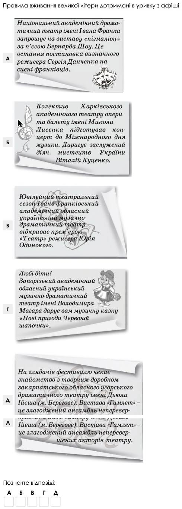
А «пігмаліон» ✗ → «Пігмаліон»
Б Харківського академічного театру опери та балету імені Миколи Лисенка, Міжнародного дня музики ✓
В Івано-франківський ✗ → Івано-Франківський
Г «Червоної шапочки» ✗ → «Червоної Шапочки»
Д закарпатського обласного угорського театру ✗ → Закарпатського
Відповідь: Б
🔍 Як перевірити: У повній офіційній назві установи з великої пишемо перше слово, а в назві твору в лапках — тільки перше слово й власні назви всередині. Червона Шапочка — ім’я персонажа, тому обидва слова з великої.
2. Правила вживання лапок дотримані в уривку з афіші
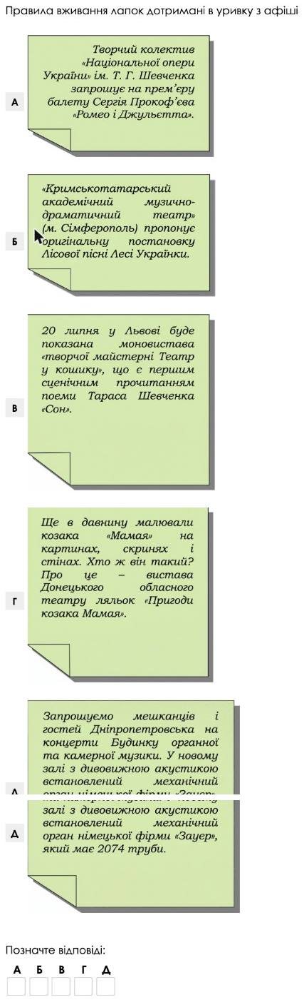
А «Національної опери України» ✗ — назви установ без лапок
Б «Кримськотатарський театр» ✗, Лісової пісні ✗ → «Лісової пісні»
В «творчої майстерні Театр у кошику» ✗ → творчої майстерні «Театр у кошику»
Г козака «Мамая» ✗ — ім’я без лапок
Д фірми «Зауер» ✓
Відповідь: Д
🔍 Як перевірити: У лапках пишемо умовні назви фірм, творів, газет, кораблів («Зауер», «Сон»). Не беремо в лапки імена людей і офіційні назви установ, що складаються зі звичайних слів (Національна опера України).
3. Правил уживання великої літери дотримано у варіанті
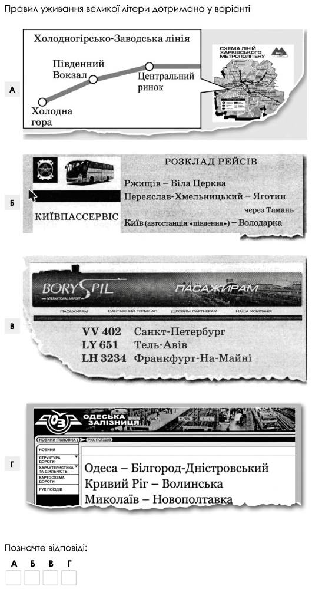
А «Південний Вокзал» ✗ → Південний вокзал
Б автостанція «південна» ✗ → «Південна»
В Франкфурт-На-Майні ✗ → Франкфурт-на-Майні
Г Білгород-Дністровський, Кривий Ріг, Волинська, Новополтавка ✓
Відповідь: Г
🔍 Як перевірити: У складних географічних назвах службові слова пишемо з малої: Франкфурт-на-Майні, Ростов-на-Дону. Назви станцій у лапках починаємо з великої.
🧩 Завдання ЗНО: велика буква й лапки (18)
Головне правило: родове слово (місто, гора, річка, палац, замок, собор, лавра, вокзал, район, комета, полюс) пишемо з малої, власну назву поруч — з великої. У назві твору з великої тільки перше слово й імена всередині. Бог, богиня, музи — з малої, а Богородиця, Бог (єдиний) — з великої.
1. З великої літери в тексті про веселку треба писати слово
А землю — тут ґрунт, тому з малої
Б індійці — назва народу, з малої
В бога Індри — «бог» як загальна назва з малої
Г Богородиця ✓
Відповідь: Г
2. Правил уживання великої літери дотримано в усіх рядках, ОКРІМ (у ЗНО двічі)
А Данило Галицький, Ярослав Мудрий, Нестор Літописець ✓
Б Західна Європа, Республіка Польща, Південне Полісся ✓
В Біла Церква, Мала Олександрівка, Холодний Яр ✓
Г Київська Русь, Золота Орда, Чортомлицька Січ ✓
Д Чумацький Шлях, Великий Віз, але Комета Галлея ✗ → комета Галлея
Відповідь: Д
3. Позначте рядок, у якому слово в дужках слід писати з малої літери
А Шевченкового генія — присвійний на -ов, з великої
Б Шевченківські читання — назва заходу, з великої
В Шевченкові твори — присвійний, з великої
Г Шевченкова калина — присвійний, з великої
Д шевченківська мати ✓ — «така, як у Шевченка»
Відповідь: Д
Прикметники на -ів, -ов, -ин (чий?) пишемо з великої: Шевченкові твори. На -івськ-, коли означає «у стилі, як у», — з малої: шевченківська мати.
4. Прикладки слід писати в лапках у всіх словосполученнях рядка
А цукерки «Ведмедик» ✓, але озеро Світязь, село Веселе ✗
Б напій «Фанта» ✓, але квітка тюльпан, пес Пірат ✗
В фірма «Оріон», роман «Московіада» ✓, але місто Прилуки ✗
Г готель «Харків», печиво «Сюрприз», комедія «Мина Мазайло» ✓
Д фільм «Сяяння», холодильник «Норд» ✓, але дівчина Марійка ✗
Відповідь: Г
Назви міст, озер, імена людей і клички тварин — без лапок.
5. Велику літеру вжито правильно в усіх словосполученнях рядка
А Данило галицький ✗ → Данило Галицький
Б Петро Гулак-Артемовський, Президент України ✓
В Франкове «зів’яле листя» ✗ → «Зів’яле листя»
Г «Слово про Похід Ігорів» ✗ → «Слово о полку Ігоревім»
Д Бахчисарайський Район ✗ → район
Відповідь: Б
6. «І перша слава (1)Ж/жовтих (2)В/вод, І (3)К/корсуня… (4)Б/берестечка… сонце Золотих (5)В/воріт». Малу літеру треба писати після цифри
А Жовтих — з великої
Б Вод — з великої (Жовті Води)
В Корсуня — місто
Г Берестечка — місто
Д воріт ✓ — Золоті ворота
Відповідь: Д
7. Правил уживання великої літери дотримано в рядку
А Івано-франківська ✗ → Івано-Франківська
Б сузір’я Великого Пса, Балканський півострів ✓
В Друга Світова Війна ✗ → Друга світова війна
Г Сполучені штати ✗ → Сполучені Штати
Д «Лісова Пісня» ✗ → «Лісова пісня»
Відповідь: Б
8. «…бруківку (1)Вічного міста… (2)Рима… (3)«Мертвими душами»… (4)римські палаци… (5)Колізею». З малої треба після цифри
А Вічне місто — Рим, з великої
Б Рим — з великої
В «Мертві душі» — назва твору
Г римські палаци ✓ — звичайний прикметник
Д Колізей — назва споруди
Відповідь: Г
9. З малої літери в тексті про дуб треба писати слово
А Верхня Хортиця — назва села
Б Київська Русь — назва держави
В південних степів ✓ — не назва
Г Землі — планета, з великої
Відповідь: В
10. Правил уживання великої літери дотримано в усіх рядках, ОКРІМ (у ЗНО двічі)
А езопова мова, бульвар Академіка Вернадського ✓
Б Декларація прав людини, сузір’я Великий Віз ✓
В Національна опера України, Нобелівська премія ✓
Г гора Ай-Петрі, кінофільм «Поводир» ✓
Д День соборності, але Шекспірівський стиль ✗ → шекспірівський
Відповідь: Д
11. Помилку в написанні власної назви допущено в рядку
А «Залізний птах», Ігор Сікорський ✓
Б Першої світової війни ✓
В «Ілля Муромець» ✓
Г Моровійськ на Чернігівщині ✓
Д Києво-Печерській Лаврі ✗ → лаврі
Відповідь: Д
12. Правил уживання великої літери дотримано в усіх словосполученнях рядка, ОКРІМ
А Берингова протока, сміх Мефістофеля ✓
Б математична олімпіада, острів Хортиця ✓
В Маріїнський Палац ✗ → палац
Г Бабин Яр, Палац урочистих подій ✓
Д Савур-могила, європейські країни ✓
Відповідь: В
Палац урочистих подій — назва установи, тому з великої. Маріїнський палац — назва споруди, де «палац» — родове слово.
13. Правил уживання великої букви дотримано в реченні
А Майдані Свободи ✗ → майдані, Новий Рік ✗ → Новий рік
Б Сонячна система, галактика Чумацький Шлях ✓
В Верховна рада ✗ → Верховна Рада
Г Бога Аполлона ✗ → бога, Муз ✗ → муз
Відповідь: Б
14. НЕ ДОТРИМАНО правил уживання великої букви в рядку (у ЗНО двічі)
А Коліївщина, Верховна Рада України, трипільська культура ✓
Б сузір’я Великий Віз, Близький Схід, бог Перун ✓
В хрестові походи, Ріо-де-Жанейро, але Олімпійські Ігри ✗ → Олімпійські ігри
Г доба неоліту, Андріївський узвіз, День будівельника ✓
Відповідь: В
15. Дотримано правил уживання великої букви в рядку
А Музей Історії Києва ✗ → історії
Б орден Держави, День авіації, бульвар Тараса Шевченка ✓
В Хотинський Замок ✗ → замок
Г сузір’я Великого пса ✗ → Пса
Відповідь: Б
16. Правил уживання великої букви дотримано в усіх словах рядка
А Академія Наук ✗ → наук
Б Свято-Успенський Собор ✗ → собор
В Королівство Бельгія, Вербна неділя ✓
Г Південний Полюс ✗ → полюс
Відповідь: В
17. НЕМАЄ помилки в правописі власних назв у рядку
А «Зів’яле Листя» ✗ → «Зів’яле листя»
Б Бахчисарайський Палац ✗, Данило галицький ✗
В Шекспірівський ✗ → шекспірівський
Г художник Олекса Новаківський, Президент України ✓
Відповідь: Г
18. Правил уживання великої літери дотримано в усіх словосполученнях, ОКРІМ
А Жанна д’Арк, Леонардо да Вінчі, Людвіг ван Бетховен ✓
Б День Конституції, День Незалежності, День Соборності ✓
В Північний Льодовитий океан, Балканський півострів, але Гора Говерла ✗ → гора
Г Львівська площа, майдан Незалежності, Стрийський парк ✓
Відповідь: В
26➖ Прислівники через дефіс
Через дефіс пишуться прислівники з префіксом по- та суфіксами -ому, -єму, -и («по-моєму», «по-своєму», «по-українськи», «по-людськи», «по-господарському», «по-французьки»), складні слова з частками «казна-», «хтозна-», «бозна-», «будь-небудь» («казна-хто», «хтозна-де», «бозна-коли», «будь-коли», «куди-небудь», «будь-як»), а також повторювані чи протиставні конструкції на кшталт «хоч-не-хоч».
«по-» + порядковий числівник — по-перше, по-друге, по-третє, по-четверте (на відміну від «по» зі збірним числівником, яке пишеться окремо: по двоє, по троє, по четверо);
парні прислівники з близьким чи протилежним значенням і повторюваною основою — часто-густо, більш-менш, ледве-ледве, далеко-далеко, як-не-як; ідіома «уряди-годи» (інколи);
прислівники з двома дефісами (невелика група, варто запам’ятати окремо) — віч-на-віч, пліч-о-пліч, всього-на-всього, де-не-де, будь-що-будь, хоч-не-хоч, тет-а-тет, коли-не-коли.
Є винятки, які варто просто запам’ятати: окремо («на добраніч», «рік у рік», «до речі», «на жаль», «на мить», «на совість», «під боком», «сам на сам», «час від часу», «в основному», «в цілому») або разом («поодинці», «навиплат», «навіки», «донизу», «нараз», «спідлоба», «навмисне», «передусім», «допізна», «сповна», «нашвидку», «злегка», «донині», «дотепер», «догори», «доверху», «додому», «довкола», «досхочу», «догола», «докупи», «дощенту»).
🧩 Завдання ЗНО: прислівники разом, окремо чи через дефіс (13)
1. Окремо в тексті треба писати сполуку слів
А по-особливому — дефіс
Б по зимовому небу ✓ — прийменник + прикметник
В по-своєму — дефіс
Г по-іншому — дефіс
Відповідь: Б
Якщо після «по» стоїть прикметник, що відповідає на питання «якому?» перед іменником (по зимовому небу), — окремо.
2. Через дефіс треба писати всі прислівники в рядку
А по-моєму, казна-куди, хоч-не-хоч ✓
Б урешті-решт, хтозна-коли ✓, але рік у рік ✗
В по-вашому ✓, але на добраніч ✗
Г по-іспанськи, уряди-годи ✓, але поодинці ✗
Д будь-що-будь, по-четверте ✓, але на виплат ✗
Відповідь: А
3. Помилку в написанні прислівника допущено в рядку
А зроду-віку, з давніх-давен, спрадавна ✓
Б аби-де ✗ → абиде
В як-не-як, в основному, по-чиновницьки ✓
Г більш-менш, хтозна-коли, довкруги ✓
Д по-четверте, всього-на-всього, щосереди ✓
Відповідь: Б
Частки аби-, ані-, де-, чи-, що-, як- на початку прислівника пишемо разом: абиде, абияк, щодня.
4. Позначте рядок, у якому всі прислівники пишуться разом
А напохваті, поночі, урозтіч ✓, але на жаль ✗
Б вщерть, засвітла, навиворіт, напровесні ✓
В одвіку, навідріз ✓, але з переляку ✗
Г навзнак, вподовж, щодуху ✓, але до речі ✗
Д спідлоба, надвоє, знадвору ✓, але по змозі ✗
Відповідь: Б
5. Позначте рядок, у якому прислівники слід писати через дефіс
А пліч-о-пліч, з давніх-давен ✓, але день у день ✗
Б коли-не-коли, де-небудь ✓, але нагора, без кінця-краю ✗
В віч-на-віч, по-простому, хтозна-коли ✓, але сам на сам ✗
Г ледве-ледве, по-друге, як-не-як ✓, але по праву ✗
Д більш-менш, будь-куди, десь-не-десь ✓, раз по раз — див. примітку
Відповідь: Д
За правописом «раз у раз» / «раз по раз» пишуть окремо, тож бездоганного рядка немає. Відповідь ЗНО — Д: у всіх інших рядках є загальновідомі сполуки, що пишуться окремо.
6. З дефісом треба писати всі прислівники в рядку (у ЗНО двічі)
А по-нашому, ледве-ледве, сяк-так ✓, але внічию ✗
Б врешті-решт, хтозна-куди, вряди-годи ✓, але зрештою ✗
В мало-помалу, віч-на-віч, десь-інколи, по-латині ✓
Г десь-то, як-небудь, будь-коли ✓, але якраз ✗
Д по-друге, по-третє, по-сучасному ✓, але по двоє ✗
Відповідь: В
У другій версії замість «десь-інколи» стоїть «по-третє» — відповідь та сама, В.
7. «(1) З усіх-усюд… (3) без упину… (4) рано-вранці… (5) позаторік». Орфографічну помилку допущено в слові
А усіх-усюд ✗ → з усіх усюд
Б без упину ✓
В рано-вранці ✓
Г позаторік ✓
Відповідь: А
«З усіх усюд» пишемо окремо, без дефіса. «Без упину» теж окремо — так у ключі ЗНО.
8. «…її живлющі соки до схочу напоюють зело». Орфографічну помилку допущено в слові
А щороку ✓
Б до схочу ✗ → досхочу
В довкола ✓
Г догори ✓
Відповідь: Б
9. Разом пишуться всі прислівники в рядку
А напам’ять, докупи ✓, але на жаль ✗
Б довіку, спідлоба ✓, але на весну ✗
В мимоволі, назавжди ✓, але в основному ✗
Г щонайвище, безвісти ✓, але до вподоби ✗
Д опівночі, надвоє, наперекір ✓
Відповідь: Д
10. «Сонце мало(1)помалу… край(2)небо… ясно(3)червоним… Ген(4)ген… біляво(5)сивою». Дефіс треба на місці всіх цифр, окрім
А мало-помалу ✓
Б крайнебо — разом
В ясно-червоним ✓
Г ген-ген ✓
Д біляво-сивою ✓
Відповідь: Б
11. Через дефіс пишуться всі прислівники рядка
А віч-на-віч, по-домашньому, будь-де ✓
Б по-людськи, як-небудь ✓, але втричі ✗
В колись-то, хтозна-куди ✓, але якнайбільше ✗
Г де-не-де, по-четверте ✓, але в цілому ✗
Д хоч-не-хоч, далеко-таки ✓, але на радість ✗
Відповідь: А
12. Окремо в тексті треба писати сполуку слів
А за багато (століть) ✓ — прийменник і числівник
Б чимало
В взагалі
Г наприклад
Відповідь: А
13. Без дефіса треба писати слово, позначене цифрою
А будь-куди
Б перші-ліпші
В з-поміж
Г на швидку руч ✓
Д довго-довго
Відповідь: Г
27🔀 Суфікс -зьк-/-ськ-/-цьк-
Прикметники із суфіксом -ськ- утворюються від іменників по-різному залежно від кінцевого приголосного основи: в частині випадків унаслідок чергування виходить -зький, в інших — -цький чи -ський. Це варто перевіряти окремо для кожного слова, а не покладатися на одне загальне правило.
«запоріжський» — правильно «запорізький»; «пражський» — правильно «празький»; «парижський» — правильно «паризький»; «кавкаський» — правильно «кавказький». Чуже вухо часто підказує зберегти кінцевий приголосний основи («ж», «г») замість чергування — це й дає типову помилку.
🧩 Завдання ЗНО: суфікси -зьк-, -ськ-, -цьк- (2)
1. Прикметники із суфіксом -зьк- можна утворити від усіх іменників у рядку
А паризький, збаразький, але грецький ✗
Б киргизький, норвезький (г → з), кавказький ✓
В сиракузький, боягузький, але тибетський ✗
Г запорізький, світязький, але латиський ✗
Відповідь: Б
Г, ж, з перед -ськ- дають -зьк-, к, ч, ц — -цьк-, х, ш, с — -ськ-.
2. Від іменників утворіть прикметники із суфіксом -ськ-. У якому рядку в обох словах НЕМАЄ чергування?
А паризький, калмицький — чергування є ✗
Б гаазький, виборзький ✗
В бузький, чорнуський ✗
Г цюрихський, казахський — без змін ✓
Д іртиський, чеський ✗
Відповідь: Г
Цюрихський і казахський — винятки: [х] зберігається.
🧩 Ще завдання ЗНО: прикметники на -ськ-, -зьк-, -цьк- (11)
3. Чергування приголосних НЕ відбуватиметься в прикметнику із суфіксом -ськ-, утвореному від слова
А викладач → викладацький (ч → ц)
Б козак → козацький (к → ц)
В товариш → товариський (ш зникає)
Г депутат → депутатський — без змін ✓
Відповідь: Г
4. Зміну приголосного НЕ ПОЗНАЧАЮТЬ на письмі в прикметнику із суфіксом -ськ- від слова
А солдат → солдатський — без змін ✓
Б словак → словацький
В парубок → парубоцький
Г товариш → товариський
Відповідь: А
5. Прикметники із суфіксом -ськ- утворяться від усіх іменників у рядку
А адвокатський, калуський, але гагаузький ✗
Б карпатський, матроський, чеський ✓
В латиський, але узбецький, бахмацький ✗
Г казахський, черкеський, але празький ✗
Д студентський, інгуський, але паризький ✗
Відповідь: Б
6. Прикметники із суфіксом -ськ- утворено від усіх іменників у рядку
А казахський, черкеський, але празький ✗
Б карпатський, латиський, але ацтецький ✗
В студентський, одеський, але паризький ✗
Г адвокатський, калуський, але бахмацький ✗
Відповідь: —
У кожному рядку одне слово має -зьк- або -цьк-, тож чистого -ськ- немає в жодному. Найімовірніше, умову передано з помилкою. Саме для тренування завдання корисне: розбери, чому празький, ацтецький, паризький, бахмацький.
7. Прикметники із суфіксом -зьк- можна утворити від усіх іменників у рядку
А острозький, ризький ✓, але будапештський ✗
Б андалузький, устилузький, але дрогобицький ✗
В паризький, запорізький, але павлоградський ✗
Г люксембурзький, торезький, збаразький ✓
Відповідь: Г
8. Прикметники із суфіксом -зьк- можна утворити від усіх слів у рядку
А магдебурзький, кавказький, але нью-йоркський ✗
Б паризький, збаразький, але грецький ✗
В празький, запорізький, бузький ✓
Г ризький, острозький, але кагарлицький ✗
Відповідь: В
9. Прикметники із суфіксом -цьк- можна утворити від усіх іменників у рядку
А кагарлицький, вінницький, слуцький ✓
Б гадяцький, трускавецький, але хотинський ✗
В прилуцький, кременецький, але хустський ✗
Г дрогобицький, хмільницький, але острозький ✗
Відповідь: А
10. Буквосполучення -цьк- матимуть прикметники, утворені від усіх слів рядка
А представницький, співацький, але канадський ✗
Б слухацький, молодецький, але прип’ятський ✗
В читацький, парубоцький, кролевецький ✓
Г половецький, гадяцький, але меценатський ✗
Відповідь: В
11. Правильно написано всі похідні слова в рядку
А запоріжський ✗ → запорізький
Б пражський ✗ → празький
В ризький, узбецький, воронезький ✓
Г парижський ✗ → паризький
Д кавкаський ✗ → кавказький
Відповідь: В
12. Правильно написано всі похідні слова в рядку
А цюриський ✗ → цюрихський (виняток)
Б пражський ✗ → празький
В парижський ✗ → паризький
Г ризький, узбецький, дрогобицький ✓
Д кавказський ✗ → кавказький
Відповідь: Г
13. Усі слова написано правильно в рядку
А викладацький, молотьба ✓, вохкість — розмовний варіант, норма вогкість
Б карпатський, дорожчати, робітництво ✓
В французський ✗ → французький
Г надхнення ✗ → натхнення
Д свідотство ✗ → свідоцтво
Відповідь: Б
Французький: з + ськ дає -зьк-. Робітництво, свідоцтво: к, ц + ств дає -цтв-.
🧩 Завдання ЗНО: іменники на -ств-, -цтв- (4)
14. Буквосполуку -ств- на місці пропуску треба писати в обох словах рядка
А гончарство ✓, але козацтво ✗
Б братство ✓, але боягузтво ✗ (-зтв-)
В агентство ✓, але убозтво ✗ (-зтв-)
Г птаство, товариство ✓
Відповідь: Г
15. Суфікс -ств- треба писати в іменниках, утворених від обох слів у рядку
А дитинство, піратство ✓
Б козацтво, товариство ✗
В студентство ✓, але жіноцтво ✗
Г будівництво ✗, братство
Відповідь: А
16. Буквосполучення -ств- на місці пропуску треба писати в обох словах рядка
А студентство ✓, але жіноцтво ✗
Б козацтво ✗, товариство
В дитинство, піратство ✓
Г будівництво ✗, братство
Д людство ✓, але гайдамацтво ✗
Відповідь: В
17. Із суфіксом -цтв- треба писати всі слова в рядку
А гірництво, парубоцтво, юнацтво ✓
Б стрілецтво, вояцтво ✓, але лицарство ✗
В ткацтво, молодецтво ✓, але людство ✗
Г козацтво, кравецтво ✓, але агентство ✗
Відповідь: А
28⚠️ Пароніми: схожі звучанням, різні значенням
Пароніми — слова, схожі за звучанням, але різні за лексичним значенням. Завдання зазвичай просять обрати правильне слово з пари в контексті конкретного речення.
Найчастіша пастка: «являтися»
Плутають «являтися» (правильне значення — «з’являтися, привидітися», наприклад уві сні) з «бути, слугувати чимось». У другому значенні правильне слово — «бути» або «є», а не «являтися».
Інші пароніми, які варто розрізняти
Пароніми
Різниця значень
пам’ятка / пам’ятник
пам’ятка — предмет матеріальної культури минулого; пам’ятник — споруда на честь когось
профі — фахівець найвищого класу; профан — некомпетентна особа
екскурс / екскурсія
екскурс — уявний відступ у тему («екскурс в історію»); екскурсія — фізичне відвідання місця
компанія / кампанія
компанія — об’єднання (фірма); кампанія — процес (виборча, рекламна)
абонент / абонемент
абонент — особа, яка користується зв’язком чи послугою; абонемент — документ на право користування (наприклад, спортзалом)
🧩 Завдання ЗНО: пароніми (2)
1. Доберіть замість пропусків потрібні слова
1 Замість паспорта можна подати … про народження → А свідоцтво
2 натхненне й поетичне … в коханні → В освідчення
3 перевіряють … особи → Д посвідчення
4 занотував … очевидця → Б свідчення
Г засвідчення — зайве
Відповідь: 1-А, 2-В, 3-Д, 4-Б
Свідоцтво — офіційний документ про факт; посвідчення — документ, що засвідчує особу; свідчення — розповідь свідка; освідчення — зізнання в коханні.
2. НЕМАЄ лексичної помилки в рядку
А землистий колір ✓
Б земляний фонд — правильно: земельний ✗
В земельний уклін — правильно: земний ✗
Г земний горіх — правильно: земляний ✗
Відповідь: А
Землистий — кольору землі; земельний — що стосується землі як угідь; земний — пов’язаний із Землею (земний уклін — до землі); земляний — з землі, у землі.
🧩 Завдання ЗНО: пароніми (4)
1. Лексичну помилку допущено в рядку
А освітлювальний прилад ✗
Б освітній заклад ✗
В освічене перехрестя → освітлене перехрестя ✓
Г освітянська спільнота ✗
Відповідь: В
Освічений — про людину з освітою; освітлений — про місце, на яке падає світло.
2. Лексичну помилку допущено в рядку (у ЗНО двічі)
А обсяг продажу ✗
Б об’єм басейну ✗
В змістова доповідь → змістовна доповідь ✓
Г програмовий матеріал ✗
Відповідь: В
Змістовний — багатий на зміст, змістовий — стосується змісту. В іншому варіанті замість «програмовий матеріал» стоїть «меблева фабрика», а правильна відповідь — А.
3. Лексична помилка є в реченні
А Досвідчені наставники сприяють професійному становленню… ✗
Б Обираючи спеціальність, ураховуйте потреби… ✗
В …важливим чинником у виборі фаху є також мотивація ✗
Г тренінгах з професіональної орієнтації → професійної ✓
Д Фахове самовизначення… ✗
Відповідь: Г
Професійний — пов’язаний із професією; професіональний — про людину, що робить щось фахово (професіональний спортсмен).
4. Лексичної помилки НЕМАЄ в реченні
А Студенти дедалі частіше замовляють підручники на сайтах профільних видавництв. ✓
Б випускники лише зрідка промовляли поглядами ✗ → перемовлялися
В довго й наполегливо відмовляли Антона… і зрештою він погодився ✗ → умовляли
Г ніколи не намовлятиме в підтримці ✗ → не відмовлятиме
Д Кожне слово, яке примовляв наставник ✗ → промовляв
Відповідь: А
Пастка на дієслова з коренем -мов-: замовляти, умовляти, відмовляти, промовляти, перемовлятися.
29🔢 Букви й звуки: з чого починати
Головне завдання всієї теми фонетики — навчитися бачити різницю між кількістю букв і кількістю звуків у слові. Іноді вони збігаються, а іноді ні, і саме на цій розбіжності побудована більшість тестів.
302️⃣ Й, Щ — завжди два звуки
Без винятків: букви Й і Щ завжди позначають два звуки. Й — це [й] разом із сусіднім звуком, Щ — це завжди [ш]+[ч]. Правило застосовується механічно, винятків з нього немає.
31🔤 Я, Ю, Є — один звук чи два
Один звук — коли буква стоїть після приголосного: тоді вона лише позначає його м’якість, окремого звука [й] немає.
Два звуки — у чотирьох позиціях: на початку слова, після голосного, після м’якого знака і після апострофа. У цих позиціях звук [й] чітко чується, якщо промовити слово вголос.
Я, ю, є, ї позначають [й] + голосний на початку слова, після голосного, після апострофа та ь.
2. Букви я, ю, є позначають два звуки в кожному слові рядка
А святковий — я = [а] ✗
Б повітря — я = [а] ✗
В надвечір’я, мрія, браконьєр — усюди [й] + голосний ✓
Г весілля ✗
Д люстерко ✗
Відповідь: В
32🔗 Дж, Дз — один звук чи два
Один звук — коли обидві букви належать до кореня слова (злитий звук). Два окремі звуки — коли Д належить до префікса, а Ж чи З — уже до кореня: тоді це просто збіг двох окремих звуків на межі морфем, а не одна фонема.
🧩 Завдання ЗНО: кількість звуків і букв (11)
Пам’ятка до завдань «кількість звуків і букв»
Я, ю, є, ї = 2 звуки на початку слова, після голосного, апострофа, ь; після приголосного — 1.
Щ = 2 звуки; ь — 0 звуків; апостроф — не буква.
Дж, дз у корені — 1 звук (джміль, дзвін); на межі префікса й кореня — 2 (віджити).
Подвоєні букви (нн, тт, жж…) — один подовжений звук: життя = 5 букв, 4 звуки.
Т у збігах стн, стс не вимовляється: шістсот, баластний.
1. Однакова кількість звуків і букв у кожному слові рядка
А заощаджувати 12/12, ячання 6/6, майоліка 8/8 ✓
Б роз’ятрити: 9 букв, 10 звуків ✗
В узлісся: 7 букв, 6 звуків (сс — один подовжений звук) ✗
Г щасливий: 8 букв, 9 звуків ✗
Д узбережжя: 9 букв, 8 звуків ✗
Відповідь: А
Заощаджувати: щ = 2 звуки, дж = 1 звук, тому разом 12. Ячання: я = 2 звуки, нн = один подовжений звук, тому 6 = 6.
2. Кількість звуків і букв однакова в кожному слові рядка
А походжає 8/8, якість 6/6, їстоньки 8/8, яблунька 8/8 ✓
Б кукурудза: дз = 1 звук → 9 букв, 8 звуків ✗
В сьогодення: 10 букв, 8 звуків ✗
Г джміль: 6 букв, 4 звуки ✗
Д кар’єра: 6 букв, 7 звуків ✗
Відповідь: А
3. Кількість букв і звуків однакова в кожному слові рядка
А дзвін: 5 букв, 4 звуки ✗
Б любов 5/5, пасьянс 7/7, щупальце 8/8 ✓
В шістсот: 7 букв, 5 звуків ✗
Г жульєн 6/6, різьбяр 7/7, неприязнь 9/9 ✓
Д джерельце: 9 букв, 7 звуків ✗
Відповідь: Б / Г
За підрахунком підходять обидва рядки, Б і Г. Найімовірніше, в одному слові умову передано неточно. Добре потренуйся на кожному слові: це якраз типові випадки (ь, щ, є після ь).
4. Однакова кількість звуків і букв у кожному слові рядка
А вибоїна: 7 букв, 8 звуків ✗
Б баластний: [т] не вимовляється → 9 букв, 8 звуків ✗
В ліщина: 6 букв, 7 звуків ✗
Г затишшя: 7 букв, 6 звуків (шш — один подовжений) ✗
Д щоденний 8/8, ялівець 7/7, дієздатність 12/12 ✓
Відповідь: Д
Щоденний: щ дає +1 звук, нн дає −1 (подовжений [н:]), разом 8 = 8.
5. Однакова кількість звуків і букв у всіх словах рядка
А заїжджати 9/9, щирість 7/7, їстоньки 8/8 ✓
Б дзвонити: 8 букв, 7 звуків ✗
В сьогодення: 10 букв, 8 звуків ✗
Г джміль: 6 букв, 4 звуки ✗
Д висаджують: 10 букв, 9 звуків ✗
Відповідь: А
Щирість: щ = 2 звуки, але ь звука не має, тож 7 = 7.
6. Однакова кількість звуків і букв у кожному слові рядка
А юридичний: 9 букв, 10 звуків ✗
Б шампіньйон: 10 букв, 9 звуків ✗
В узбережжя: 9 букв, 8 звуків ✗
Г Макіївка: 8 букв, 9 звуків ✗
Д б’ють 4/4, від’єднання 10/10, барельєф 8/8 ✓
Відповідь: Д
Апостроф — не буква. Б’ють: букви б, ю, т, ь (4), звуки [б, й, у, т'] (4).
7. Однакова кількість звуків і букв у всіх словах рядка
А надзьобувати: 12 букв, 10 звуків ✗
Б обличчя: 7 букв, 6 звуків ✗
В єднання 7/7, сором’язливість 14/14, щирість 7/7 ✓
Г джерельце: 9 букв, 7 звуків ✗
Д дзеркальце: 10 букв, 8 звуків ✗
Відповідь: В
8. Однакова кількість звуків і букв у всіх словах рядка
А творіння: 8 букв, 7 звуків ✗
Б віщунка: 7 букв, 8 звуків ✗
В прощає: 6 букв, 8 звуків ✗
Г пробудження: 11 букв, 9 звуків ✗
Д господиня 9/9, кузня 5/5, їдальня 7/7 ✓
Відповідь: Д
9. Однакова кількість звуків і букв у кожному слові рядка
А прислів’я: 8 букв, 9 звуків ✗
Б сьогодні: 8 букв, 7 звуків ✗
В щипати: 6 букв, 7 звуків ✗
Г щиглик: 6 букв, 7 звуків ✗
Д тріщить 7/7, сум’яття 7/7, дев’ять 6/6 ✓
Відповідь: Д
Сум’яття: букви с, у, м, я, т, т, я (7), звуки [с, у, м, й, а, т':, а] (7).
10. Однакова кількість звуків і букв у кожному слові рядка
А п’ятниць 7/7, їстоньки 8/8, яблунька 8/8 ✓
Б кукурудза: 9 букв, 8 звуків ✗
В сьогодення ✗
Г джміль ✗
Д кар’єра: 6 букв, 7 звуків ✗
Відповідь: А
11. Однакова кількість звуків і букв у всіх словах рядка
А висаджують ✗
Б дзвонити ✗
В сьогодення ✗
Г джміль ✗
Д походжає 8/8, щирість 7/7, їстоньки 8/8 ✓
Відповідь: Д
33🔨 Тверді й м’які приголосні
В українській мові 32 приголосні звуки: 22 тверді й 10 м’яких. Частина твердих (д, т, з, с, ц, л, н, р і звук дз) утворює пари з м’якими — вони стають м’якими перед м’яким знаком і буквами я, ю, є.
Звук [й] — завжди м’який, твердим не буває ніколи.
Є й тверді приголосні без м’якої пари: б, п, в, м, ф, г, к, х, ґ, ж, ч, ш, дж. Вони можуть лише пом’якшуватися (у транскрипції над ними ставлять кому), але справжньої м’якої пари в них немає.
34📯 Дзвінкі, глухі, сонорні
За участю голосу й шуму приголосні діляться на три групи. Сонорні — голос переважає над шумом: м, в, н, л, р, й та їхні м’які пари.
Мнемоніка з вебінару
Глухі приголосні (тільки шум) — фраза «Усе це кафе, птах і чаша» (без голосних: ц, к, ф, п, т, х, ч, ш).
Дзвінкі приголосні (шум переважає над голосом) — фраза «Буде гоже, ґедзю, у джазі».
Дзвінкі й глухі утворюють пари — крім Ф, у якого немає дзвінкого відповідника.
35➡️ Уподібнення за дзвінкістю: чому не навпаки
Правило працює лише в один бік: глухий приголосний перед наступним дзвінким сам стає дзвінким (одзвінчується) — це стосується й пари К→Ґ, і С→З.
Глухий звук втрачає свої якості, а дзвінкий залишається.
У зворотному напрямку не працює
Якщо дзвінкий приголосний стоїть перед глухим (зокрема в кінці слова чи складу), він не переходить у глухий — вимова залишається дзвінкою.
🧩 Завдання ЗНО: однаковий звук (33)
Пам’ятка до завдань «однаковий звук»
Глухий перед дзвінким стає дзвінким: вокзал [ґз], боротьба [д'б], просьба [з'б], якби [ґб], футбол [дб].
Дзвінкий перед глухим НЕ оглушується: кладка, ложка, казка. Виняток — г перед к, т → [х]: легко, кігті, нігтик.
М’якість: перед е, и — тверді; д, т, з, с, ц, л, н перед і — м’які; перед я, ю, є, ь — м’які. С, з перед м’яким приголосним теж м’якшають: пісня, весняний.
Д перед з, ц зливається в [дз]: передзвін, подзвонити.
1. Підкреслені літери позначають однаковий звук у кожному слові рядка
У тексті не збереглося, які букви виділено. Розбір зроблено за спільними буквами.
28. Однаковий звук позначають букви, виділені в кожному слові рядка
А зіставити, просьба, зяблик — усюди [з'] ✓
Б вогкий — [х] ✗
В шістнадцять — [т] не вимовляється ✗
Г заквітчати — [ч':] подовжений ✗
Відповідь: А
У тексті не збереглося, які букви виділено. Розбір зроблено за спільними буквами.
29. Виділені літери позначають однаковий звук у кожному слові рядка
А пізній — [з'] ✗
Б баскетбол — [д] ✗
В човен, черкаський, заручини — усюди [ч] ✓
Г якби — [ґ] ✗
Відповідь: В
У тексті не збереглося, які букви виділено. Розбір зроблено за спільними буквами.
30. Однаковий звук позначають букви, виділені в словах
А здає[т]ься — [ц'], моло[т]ьба — [д'] ✗
Б рю[к]зак, а[ґ]рус, [ґ]рунтознавець — усюди [ґ] ✓
В контрас[т]ний — [т] не вимовляється ✗
Г д[ж]гутовий — [дж] ✗
Відповідь: Б
31. Однаковий звук позначають букви, виділені в кожному слові рядка
А вокзал — [ґ] ✗
Б зірка — [з'], привезти — [з] ✗
В боротьба — [д'] ✗
Г кігті — [х], нігтик — [х], хвилюватися — [х] ✓
Відповідь: Г
У тексті не збереглося, які букви виділено. Розбір зроблено за спільними буквами.
32. Однаковий звук позначають букви, виділені в усіх словах рядка
А анекдот — [ґ] ✗
Б мазюкати, просьба, зібрати — усюди [з'] ✓
В усмішка — [ш] ✗
Г робиться — [ц'] ✗
Відповідь: Б
У тексті не збереглося, які букви виділено. Розбір зроблено за спільними буквами.
33. Позначте рядок, у якому в усіх словах при вимові відбувається уподібнення приголосних
А безшумний ✓, але доріжка — уподібнення немає ✗
Б дьогтю ✓ ([хт']), кузня ✓, пругкий ✓, але казка — немає ✗
В піднігтьовий [хт'], зцідити [с'ц'], боротьба [д'], співачці [ц':] ✓
Г сережка — немає ✗
Д пісня ✓, вокзал ✓, рюкзак ✓, ложка — немає ✗
Відповідь: В
В українській мові дзвінкий перед глухим не оглушується: доріжка, казка, ложка вимовляються як пишуться. Виняток — [г] перед [к], [т] вимовляється як [х].
36🌊 Спрощення в групах приголосних: сама суть
У збігах кількох приголосних один зі звуків у вимові випадає — саме тому кількість звуків тут менша за кількість букв. Це трапляється в словах на кшталт «баластний», «контрастний», «гігантський», «шістсот», «агентство», «туристський»: важкий для вимовляння збіг спрощується.
У власне українських словах спрощення показують і на письмі: «проїздити → проїзний», «тріскати → тріснути», «перстень → персня», «чернець → ченці», «серце → сердечний → сердешний».
Українське слово чи запозичення?
У словах іншомовного походження («баластний», «контрастний», «гігантський», «туристський», «агентство») спрощення на письмі не позначається, хоч у вимові збіг так само спрощується. Перше, що варто перевірити в тесті, — походження слова.
Це те саме явище, у якого є слова-винятки серед власне українських слів, де спрощення НЕ відбувається, — вони зібрані в мнемонічному віршику вище.
🧩 Завдання ЗНО: який звук на місці пропуску (7)
1. Звук [т] треба вимовляти на місці пропуску в усіх словах рядка
А театральний ✓, туристський — [т] не вимовляється ✗
Б каштан ✓, твірний ✓, боротьба — [д'] ✗
В журяться — [ц'] ✗
Г факультатив ✓, молотьба — [д'] ✗
Д лісництво ✓, розпитати ✓, третій ✓
Відповідь: Д
2. Звук [д] треба вимовляти на місці пропуску в усіх словах рядка
6. Звук [д] треба вимовляти на місці пропуску в усіх словах рядка
А подзвякувати — [дз] ✗
Б менеджмент — [дж] ✗
В понадплановий [д], посиденьки [д], футбол [д] ✓
Г молодіжний — [д'] ✗
Д будівля — [д'] ✗
Відповідь: В
Перед е та и приголосні тверді, тому «посиденьки» — [д]. Перед і д стає м’яким [д'].
7. Звук [з] є в кожному слові рядка
А дзеркало — [дз], окремого [з] немає ✗
Б змінити — [з'] м’який ✗
В розмова, глузд, з’явитися — усюди [з] ✓
Г зшити — [ш:] ✗
Відповідь: В
Після з перед апострофом звук твердий: з’явитися — [з].
37🔄 Чергування приголосних при словотворенні
При творенні нових слів і форм приголосні можуть чергуватися: г/ж/з, к/ч/ц, х/ш/с. Найпомітніше це при відмінюванні («нога — нозі — на нозі») і при творенні дієслівних форм («водити — воджу», «летіти — лечу»).
Те саме чергування діє й у пестливих формах та похідних словах — «рука → рученька → руці», «нога → ніженька → нозі», «вухо → вушенько → вусі», «Париж → паризький» (а не «парижський»), «козак → козацтво», «птах → птаство».
🧩 Завдання ЗНО: чергування (3)
1. Чергування приголосних за дієвідмінювання відбувається в усіх дієсловах у рядку
А бережу, печу, лечу ✓
Б вірю — чергування немає ✗
В граю ✗
Г читаю ✗
Д шию ✗
Відповідь: А
2. Чергування голосних відбувається в усіх наведених випадках, ОКРІМ
А лід – льоду ✓
Б слово – слівце ✓
В пір’я – перо ✓
Г мішок – мішечок: у корені і не змінюється ✗
Відповідь: Г
3. Чергування голосних на місці пропуску відбувається в обох парах слів рядка
А Іванів – Іванового ✓, але увечері – вечеря ✗
Б замітати – замести ✓, але земля – земель ✗
В осінь – осені ✓, Василів – Василевого ✓
Г дохід – доходу ✓, але положення – положень ✗
Відповідь: В
38🎯 Наголос: офіційний перелік і як готуватися
На відміну від інших тем фонетики, наголос не має логічних правил, які можна вивести, — це завжди конкретне слово з конкретного переліку, затвердженого для НМТ. Єдиний робочий спосіб підготовки — регулярно опрацьовувати саме цей офіційний перелік, а не покладатися на інтуїцію чи побутову вимову.
читати перелік уголос, краще в групі;
тренуватися в мобільних застосунках на кшталт «Наголос» чи «Акцентуй» — або в тренажері нижче;
тримати перелік на видному місці (роздрукований або як заставка на телефоні), щоб бачити його щодня.
Звідки перелік
Перелік слів із нормативним наголосом входить до чинної програми ЗНО/НМТ з української мови (наказ МОН №696 від 26.06.2018) і діє для НМТ-2027. У ньому 233 слів — завдання на наголос складають тільки з них. Наголошений голосний тут позначено кольором.
1. Пастки: слова, які найчастіше вимовляють неправильно
алфавіт, весняний, мабуть, помилка — тут можна наголошувати обидва позначені склади, обидва варіанти правильні.
5. Тренажер: натисни на наголошений голосний
0 / 0
Слова, у яких ти помилилася, потрапляють у «Мої помилки» (зберігаються в цьому браузері). Правильна відповідь у режимі помилок прибирає слово зі списку.
Розбір завдань ЗНО-онлайн на тему «Склад. Наголос» (джерело — сайт ЗНО.Освіта.UA). Для кожного завдання показано, де насправді наголос у кожному слові варіанта. Зеленим виділено правильний варіант.
Про текст завдань
У скопійованому тексті частина завдань пошкоджена: не збереглися виділені літери або загубилася частина умови. Тому подекуди підходять два варіанти або жоден. Такі місця позначено знаком «—», «?» або двома літерами. Головне в них — правильні наголоси всіх слів, і саме їх треба запам’ятати.
1. На перший склад падає наголос у всіх словах, ОКРІМ
А причіп — 1-й
Б косий — 1-й
В жалюзі — 3-й
Г випадок — 1-й
Відповідь: В
2. На перший склад падає наголос у слові
А віршовий — 3-й
Б підлітковий — 1-й
В корисний — 2-й
Г фаховий — 3-й
Відповідь: Б
3. На другий склад падає наголос у слові
А начинка — 1-й
Б позначка — 1-й
В травестія — 3-й
Г рівнина — 2-й
Відповідь: Г
4. На другий склад падає наголос у слові
А позначка — 1-й
Б центнер — 1-й
В довідник — 2-й
Г каталог — 3-й
Відповідь: В
5. На другий склад падає наголос у слові
А читання — 2-й
Б солодощі — 2-й
В обіцянка — 3-й
Г донька — 1-й
Відповідь: А
Слово «солодощі» теж має наголос на 2-му складі, але його немає в офіційному переліку. Найімовірніше, у джерелі завдання передано з помилкою. Відповідь за переліком — «читання».
6. На перший склад падає наголос у слові
А щавель — 2-й
Б злегка — 2-й
В жаркий — 2-й
Г звести — 2-й
Відповідь: —
У жодному слові наголос не падає на 1-й склад: у всіх чотирьох він на останньому. Найімовірніше, умову скопійовано з помилкою. Просто запам’ятай, де наголос у кожному слові.
7. На перший склад падає наголос у слові
А цінник — 2-й
Б течія — 3-й
В русло — 2-й
Г випадок — 1-й
Відповідь: Г
8. Позначте рядок, у якому в усіх словах наголошений другий склад
А дочка (2), подруга (1) — уже не підходить
Б новий, спина, виразно, завдання, попереду — усі на 2-му
В предмет, рукопис, ненавидіти, фартух, в’язкий — усі на 2-му
Г середина, дефіс, старий, горошина (3) — не підходить
Д легкий, олень (1) — не підходить
Відповідь: Б / В
За нормами підходять і Б, і В. Слова з офіційного переліку, які тут перевіряють: рукопис, ненавидіти, фартух, завдання. У джерелі, мабуть, загубилася частина умови.
9. На другий склад падає наголос у слові
А кропива — 3-й
Б псевдонім — 3-й
В запитання — 3-й
Г ознака — 2-й
Д осока — 3-й
Відповідь: Г
10. На другий склад падає наголос у слові
А одинадцять — 2-й
Б черговий — 3-й
В цемент — 2-й
Г кидати — 1-й
Д поки — 2-й
Відповідь: —
На 2-й склад наголос падає в трьох словах: одинадцять, цемент, поки. Отже, умову передано неточно. Головне тут запам’ятати слова з переліку: одинадцять, черговий, цемент.
11. На другий склад падає наголос у слові
А листопад — 3-й
Б новина — 3-й
В столяр — 2-й
Г літопис — 2-й
Відповідь: Г
Слово «столяр» теж має наголос на 2-му складі, але в офіційному переліку з цих двох є тільки «літопис».
12. На перший склад падає наголос у слові
А жалюзі — 3-й
Б чіткий — 2-й
В перепис — 2-й
Г деякий — 1-й
Відповідь: Г
13. На другий склад падає наголос у слові
А однаковий — 3-й
Б добовий — 3-й
В щовесни — 3-й
Г сантиметр — 3-й
Відповідь: —
У всіх чотирьох словах наголос падає на 3-й склад, тож завдання передано з помилкою. Те саме завдання повторюється під номером 25. Запам’ятай: добовий, сантиметр.
14. На перший склад падає наголос у слові
Аожеледь — 1-й
Б деінде — 2-й
В перекис — 2-й
Г експерт — 2-й
Відповідь: А
15. На третій склад падає наголос у слові
А кропива — 3-й
Б периметр — 2-й
В підошва — 2-й
Г однаковий — 3-й
Відповідь: А
На 3-й склад наголос падає і в «кропива», і в «однаковий». Із цих двох в офіційному переліку є «кропива».
16. На другий склад падає наголос у слові
А черговий — 3-й
Б псевдонім — 3-й
В ознака — 2-й
Г осока — 3-й
Відповідь: В
17. Правильно підкреслено літеру на позначення наголошеного звука в слові
А підкреслено олень — а треба олень
Б підкреслено колесо — правильно
В підкреслено читання — а треба читання
Г підкреслено випадок — а треба випадок
Відповідь: Б
18. Другий склад наголошений у слові
А запитання — 3-й
Б сантиметр — 3-й
В одинадцять — 2-й
Г завдання — 2-й
Відповідь: В / Г
Наголос на 2-му складі і в «одинадцять», і в «завдання», обидва слова з переліку. Схоже, частину умови загублено.
19. Другий склад наголошений у слові
А приятель — 1-й
Б недруг — 1-й
В відгомін — 1-й
Г обранець — 2-й
Відповідь: Г
20. Правильно підкреслено літеру на позначення наголошеного звука в слові
А дочка
Б завдання
В новий
Г роблю
Відповідь: ?
У тексті завдання не збереглося, які літери підкреслено. Правильні наголоси — вище: перевір, у якому варіанті підкреслено саме цю літеру.
21. На перший склад падає наголос у слові
А жалюзі — 3-й
Б чіткий — 2-й
В перепис — 2-й
Г випадок — 1-й
Відповідь: Г
22. На другий склад падає наголос у слові
А котрий — 2-й
Б кілометр — 3-й
В одинадцять — 2-й
Г привезти — 3-й
Відповідь: А / В
Наголос на 2-му складі і в «котрий», і в «одинадцять», обидва слова з переліку. Схоже, частину умови загублено.
23. Перший склад наголошений у слові
А дрова — 1-й
Б жалюзі — 3-й
В жаркий — 2-й
Г дочка — 2-й
Відповідь: А
24. Другий склад наголошений у слові
А обранець — 2-й
Б недруг — 1-й
В відгомін — 1-й
Г приятель — 1-й
Відповідь: А
Те саме, що завдання 19, тільки варіанти в іншому порядку.
25. На другий склад падає наголос у слові
А однаковий — 3-й
Б добовий — 3-й
В щовесни — 3-й
Г сантиметр — 3-й
Відповідь: —
Повтор завдання 13: на 2-й склад наголос не падає в жодному слові.
26. На другий склад падає наголос у слові
А центнер — 1-й
Б селянин — 3-й
В перепис — 2-й
Г листопад — 3-й
Відповідь: В
27. На третій склад падає наголос у слові
А каталог — 3-й
Б завдання — 2-й
В феномен — 2-й
Г камбала — 1-й
Відповідь: А
28. Перший склад наголошений у слові
А розвал — 2-й
Б тонкий — 2-й
В разом — 1-й
Г люблю — 2-й
Відповідь: В
29. На перший склад падає наголос у слові
А текстовий — 3-й
Б зручний — 2-й
В визвольний — 2-й
Г фаховий — 3-й
Відповідь: —
У жодному слові наголос не падає на 1-й склад. Це типова пастка: тут «хочеться» сказати текстовий, зручний, визвольний, фаховий, а правильно — наголоси вище.
30. На другий склад падає наголос у слові
А бешкет — 1-й
Б вимога — 2-й
В колесо — 1-й
Г донька — 1-й
Відповідь: Б
31. «Чотирнадцятого листопада трапився курйозний випадок…» — НЕПРАВИЛЬНО підкреслено в усіх словах під цифрами
(1) чотирнадцятого ✓ · (2) листопада ✗ → листопада · (3) випадок ✗ → випадок
У жодному слові наголос не падає на 1-й склад, і це зроблено навмисно: «зручний», «проміжок», «перекис», «експерт», «фаховий» дуже хочеться наголосити на початку. Запам’ятай правильні наголоси, які вище.
38. «Донька отримала завдання вивчити чотирнадцять рядків…» — розбір див. у завданні 46 (те саме речення)
Відповідь: Б (1, 3, 7, 9)
Відповідь та сама, що в завданні 46.
39. «Течія спочатку була неспішною…» — розбір див. у завданні 47 (те саме речення)
Відповідь: В (2, 4, 5, 7)
Відповідь та сама, що в завданні 47.
40. Правильно виділено в усіх словах, ОКРІМ (ті самі рядки, що в завданні 43, але в іншому порядку)
А курятина у фользі, кроїти фартух
Б український літопис, добові витрати
В заіржавіле свердло, привезти разом
Г чергове уподобання, піала з піцерії
Відповідь: Г
Помилка в слові «піала» — правильно піала. Повний розбір — у завданні 43.
41. Правильно виділено в усіх словах рядка, ОКРІМ — розбір див. у завданні 55 (ті самі рядки)
Відповідь: А
Помилка в слові «витрати» — правильно витрати.
42. Правильно виділено в усіх словах рядка, ОКРІМ — ті самі рядки, що в завданні 43
Відповідь: А
Рядок «чергове уподобання, піала з піцерії»: правильно піала.
43. Правильно підкреслено в усіх словах, ОКРІМ рядка
А чергове✓, вподобання ✓, піала ✗ → піала, піцерії ✓
Б український ✓, літопис ✓, добові✓, витрати ✓
В курятина ✓, фользі ✓, кроїти ✓, фартух ✓
Г заіржавіле ✓, свердло ✓, привезти✓, разом ✓
Відповідь: А
44. «Під час ремонту ми вирішили замінити жалюзі…» — НЕПРАВИЛЬНО підкреслено в усіх словах під цифрами
У тексті завдання не збереглося, які літери виділено. Вище — правильні наголоси в усіх словах: неправильний рядок той, де виділено щось інше. Нагадування: «помилка» можна наголошувати обома способами.
49. Правильно виділено в усіх словах, ОКРІМ рядка
А бурштиновий листопад, новий обруч
Б заіржавіле колесо, разом з черговим
В цінник на щипцях, корисний чорнослив
Г дивлячись на оленя, завезти зрання
Відповідь: ?
У тексті завдання не збереглося, які літери виділено. Вище — правильні наголоси, за ними можна перевірити будь-який варіант.
50. На другий склад падає наголос у всіх словах рядка
А гуртожиток (2), цінник (2), разом (1) — не підходить
Б бородавка (2), індустрія (2), зрання (2) — усі на 2-му
В видання (2), поняття (2), аркушик (1) — не підходить
Г гальмо (2), чорнослив (2), русло (2) — усі на 2-му
Відповідь: Б / Г
За нормами підходять обидва рядки, Б і Г. Найімовірніше, в одному слові умову передано неточно. Головне — запам’ятати всі шість слів.
51. Правильно виділено в усіх словах рядка
А одинадцять подруг, фаховий каталог
Б новий цінник, донести кропиву
В чотирнадцять кілометрів, читання віршів
Г новий бюлетень, безпринципна донька
Відповідь: ?
У тексті завдання не збереглося, які літери виділено. Вище — правильні наголоси: правильний рядок той, де виділено саме ці літери.
52. Правильно виділено в усіх словах, ОКРІМ рядка
А бурштинова горошина
Б корисна кропива
В підліткова проблема
Г одинадцять центнерів
Відповідь: ?
У тексті завдання не збереглося, які літери виділено. Вище — правильні наголоси.
53. На перший склад падає наголос в усіх словах рядка
Ааркушик (1), разом (1), тигровий (1) — усі на 1-му
Б бешкет (1), ніздря (1), цінник (2) — не підходить
В випадок (1), зрання (2) — не підходить
Г догмат (1), здалека (2) — не підходить
Відповідь: А
54. Правильно виділено в усіх словах рядка, ОКРІМ
А приморозок ✓, зрання ✓, багаторазовий ✓, заробіток ✓
Б уподобання ✓, доньки ✓, фахове ✗ → фахове, видання ✓
В дивлячись ✓, довідник ✓, ринковий ✓, феномен ✓
Г бурштинова ✓, запонка ✓, чарівний ✓, павич ✓
Відповідь: Б
55. Правильно виділено в усіх словах рядка, ОКРІМ
А фаховий ✓, каталог ✓, багаторазові ✓, витрати ✗ → витрати
Б дивлячись ✓, довідник ✓, завчасу✓, занести✓
В нові✓, жалюзі✓, зобразити ✓, тризуб ✓
Г щодобове✓, завдання ✓, корисна ✓, кропива✓
Відповідь: А
56. На третій склад падає наголос у всіх словах рядка, ОКРІМ
А безпринципний (3), діалог (3), фаховий (3)
Б посередині (3), добовий (3), зобразити (3)
В болотистий (3), завести (3), каталог (3)
Г асиметрія (4!), закінчити (3), обіцянка (3)
Відповідь: Г
Склади в «асиметрія»: а-си-ме-трі-я, наголошений 4-й склад.
57. Правильно виділено в усіх словах рядка, ОКРІМ
А отаман ✓, заіржавілий ✓, близький ✓
Б фартух ✗ → фартух, донести✓, обіцянка ✓
В уподобання ✓, вітчим ✓, віршовий ✓
Г листопад ✓, начинка ✓, закладка ✓
Відповідь: Б
58. Правильно виділено в усіх словах рядка, ОКРІМ
А подивився ✓, оленя ✓, перевезти✓, разом ✓
Б оптовий ✓, цінник ✓, бурштиновий ✓, листопад ✓
В корисний ✓, чорнослив ✓, зручні ✓, щипці ✓
Г заіржавіле ✗ → заіржавіле, колесо ✓, чергові ✗ → чергові, витрати ✓
В чотирнадцятого ✓, листопада ✓, виразний ✓, цінник ✓
Г підліткові ✓, уподобання ✓, черговий ✓, випадок ✓
Відповідь: Б
60. Правильно виділено в усіх словах рядка
А феномен пізнання, довідник з кулінарії
Б посередині літопису, завчасу закінчити
В дивлячись на цінник, чергова витрата
Г принести колесо, одинадцять кілометрів
Відповідь: ?
У тексті завдання не збереглося, які літери виділено. Вище — правильні наголоси в кожному слові.
61. Правильно виділено в усіх словах, ОКРІМ рядка
А мережа піцерій, чотирнадцять кілометрів
Б занести платіжну відомість, бурштинова запонка
В привітати заміжню подругу, болотиста рівнина
Г зобразити тисові ліси, приморозки в листопаді
Відповідь: ?
У тексті завдання не збереглося, які літери виділено. Вище — правильні наголоси. Зверни увагу: «платіжна відомість» — це список, тому наголос на 1-му складі.
39🔡 Ненаголошені Е та И в коренях
Тут не працює принцип «як чується, так і пишеться» — потрібно перевіряти слово одним із кількох способів:
сполуки «ере», «еле» в корені пишуться з Е: «лелека», «очерет»;
якщо при зміні слова сумнівний голосний випадає — пишемо Е: «вітер» → «вітру» (Е чергується з нулем звука), так само «осінь» → «осені»;
сполуки на кшталт «-ри-», «-ли-» у певних коренях пишуться з И;
у деяких дієслів перед Р, Л: якщо далі йде наголошений суфікс — пишемо А («стирати», «здирати»), в іншому контексті — Е («стерти», «здерти»).
Визначальне тут — не інтуїтивна вимова, а конкретне правило чи перевірка зміною слова.
🧩 Завдання ЗНО: а чи о на місці пропуску (2)
1. Букву а треба писати на місці пропуску в усіх словах рядка
А відламати, багаття, качан ✓
Б ломити — о ✗
В крохмаль — о ✗
Г борсук — о ✗
Відповідь: А
2. Літеру а на місці пропуску треба писати в усіх словах рядка
А ломити — о ✗
Б ламати, багаття, перемагати ✓
В оренда — о ✗
Г котити — о ✗
Відповідь: Б
🧩 Завдання ЗНО: ненаголошені е, и, о (25)
Пам’ятка до завдань
Перевір наголосом: зелений — зелень, шелестіти — шелест. Якщо наголосом не перевіряється, слово треба запам’ятати (кишеня, левада, кремезний, щебетати, мерехтіти, метушня, бентежний).
Е чи И в дієсловах: з наголошеним суфіксом -а- пишемо и (забирати, витирати, набирати, здирати, застилати), без нього е (забрати, витерти, здерти, застелити).
Сполуки -ере-, -еле- між приголосними пишуться з е: берег, шелест, череда, очерет, оберемок, клекотіти.
Е чи И в українських словах
1. Правильно написано всі слова в рядку
А левада, кишеня ✓, але мережево ✗ → мереживо
Б серпанок, палиця ✓, але побачиння ✗ → побачення
В морозиво, марево, метушня ✓
Г криниця, шелест ✓, але мерихтіння ✗ → мерехтіння
Відповідь: В
Марево — виняток, пишемо з е. Решта слів із суфіксом -ив(о) пишуться з и: морозиво, мереживо, печиво.
2. Літеру е на місці пропуску треба писати в усіх словах рядка
А увечері, упереджений ✓, але увічливо ✗ (и)
Б очевидячки, змалечку ✓, але чимдуж ✗ (и)
В беззастережно, змушений ✓, але гримить ✗ (и)
Г бентежний, керівний, клекотить ✓
Д кремезний, упевнений ✓, але набирати ✗ (и)
Відповідь: Г
3. Літеру и на місці пропуску треба писати в усіх словах рядка
А вариво, вуличка, сховище ✓, але вовченя ✗ (е)
Б котичок, печиво ✓, але вихователь ✗ (е)
В добриво, страховисько, паливо ✓, але водиченька ✗ (е)
Г русалчин, парканчик, згарище ✓, але криниченька ✗ (е)
Д плетиво, порадниця, посміховисько, доньчин ✓
Відповідь: Д
Суфікси -еньк-, -еня-, -тель пишуться з е: водиченька, вовченя, вихователь.
4. Позначте рядок, у якому в усіх словах потрібно писати літеру и
А бадилина, крихкий, живиця ✓, але благочестивий ✗ (е)
Б вариво, межиріччя, кришталь ✓, але вичепурений ✗ (е)
В п’ятирічка, заручини, невидимка, обітниця ✓
Г зачинати, виконавиця, величина ✓, але знівечити ✗ (е)
Д ножичок, печиво, озиратися ✓, але викорінити ✗ (і)
Відповідь: В
5. Літеру е на місці пропуску треба писати в усіх словах рядка
А стихати ✗ (и)
Б заливати ✗ (и)
В пригвинтити ✗ (и)
Г оселитися ✓, але кишеня ✗ (и)
Д держати, тремтіти, щебетати ✓
Відповідь: Д
6. Літеру е на місці пропуску треба писати в усіх словах рядка
А нести, гречаний, зеленіти ✓, але витирати ✗ (и)
Б решето, колесо, клекотати ✓, але висипати ✗ (и)
В зачепити, пекти, чебрець ✓, але розпочинати ✗ (и)
Г марево, причепити, шептати, горобеня ✓
Д тремтіти, оселитися, кучерявий ✓, але ненавидіти ✗ (и)
Відповідь: Г
7. Літеру е на місці пропуску треба писати в усіх словах рядка
А берегти, восьмеро, шелест ✓, але пиріжок ✗ (и)
Б зеленіти, вишенька, чернетка ✓, але кишеньковий ✗ (и)
В мавпеня, книжечка, велетень ✓, але тривожний ✗ (и)
Г шершень, визволитель, веселощі ✓, але мигдаль ✗ (и)
Д ріднесенький, жоден, кисень, сезонний ✓
Відповідь: Д
8. Літеру е треба писати на місці обох пропусків рядка
А весняне марево ✓
Б виринає ✗ (и), сонечко
В величезний ✗, пиріг ✗
Г застебнути ✓, але кишеню ✗
Д кришталеве ✗ (и), джерело
Відповідь: А
9. Літеру е на місці пропуску треба писати в кожному слові рядка
А ретельно, горлечко, марево ✓
Б клекотіли, стежечка ✓, але зупинися ✗ (и)
В справедливий, стеблина ✓, але пиріг ✗
Г зернина, левада ✓, але задивився ✗ (и)
Д операція, очерет ✓, але забирати ✗ (и)
Відповідь: А
10. Літеру е на місці пропуску треба писати в усіх словах рядка
А скелистий, качечка ✓, але бриніти ✗ (и)
Б верховний, реберце ✓, але коридор ✗ (и)
В виборець, зберігається ✓, але цитата ✗ (и)
Г клекотіти, причепити, решітце ✓
Д ремісник, розроблений ✓, але кошичок ✗ (и, бо кошик)
Відповідь: Г
11. Літеру е на місці пропуску треба писати в усіх словах рядка
А стежечка, верховий, тремтіти ✓
Б злетіти, земляний ✓, але кривавий ✗ (и)
В осередок ✓, але крилатий ✗ (и), плакати ✗ (а)
Г марево, піднебесний ✓, але блищати ✗ (и)
Д пекти, побілений ✓, але мереживо ✗ (и)
Відповідь: А
12. Літеру е на місці пропуску треба писати в усіх словах рядка
А марево, клекотати, метушня ✓, але мілина ✗ (и)
Б левада, звеличений, скелястий, зачепити ✓
В мислення, утворений, гречаний ✓, але правило ✗ (и)
Г шершавий, заскреготав, березень ✓, але застилати ✗ (и)
Д крапелька, вітерець, повернутися ✓, але здирати ✗ (и)
Відповідь: Б
13. Літеру е на місці пропуску треба писати в усіх словах рядка
А шелестіти, марево ✓, але ножичок ✗ (и)
Б кремезний, сутеніти ✓, але лицедій ✗ (и)
В веселка, ожеледь ✓, але кришталик ✗ (и)
Г оберемок, вітерець, зачекати ✓
Відповідь: Г
14. Літеру и на місці пропуску треба писати в усіх словах рядка
А тривога, абрикос ✓, але метушливий ✗ (е)
Б меридіан, дрижати ✓, але теоретичний ✗ (е)
В смиренний, християнин ✓, але метелик ✗ (е)
Г химерний, завмирала, диригент ✓
Д дистанція, вистилати ✓, але дзеркальний ✗ (е)
Відповідь: Г
15. Літеру е на місці пропуску треба писати в усіх словах рядка
А обережно, полетіти ✓, але тривожний ✗ (и)
Б мерехтіння, оленятко ✓, але вчинити ✗ (и)
В підгребти, зачекати, надвечірок ✓
Г велетень, кремезний ✓, але гримить ✗ (и)
Відповідь: В
16. Літеру и на місці пропуску треба писати в усіх словах рядка
А височина, відгриміти, вогнище ✓
Б власниця, кошичок ✓, але постелити ✗ (е)
В забирати, тривожний ✓, але черговий ✗ (е)
Г печиво, дрижати ✓, але шелестіння ✗ (е)
Відповідь: А
17. Літеру е на місці пропуску треба писати в усіх словах рядка
А очевидячки, змалечку ✓, але набирати ✗ (и)
Б обережно, кремезний ✓, але увічливо ✗ (и)
В упевнений, змушений ✓, але гримить ✗ (и)
Г бентежний, керівний, клекотить ✓
Відповідь: Г
18. Літеру е на місці пропуску треба писати в усіх словах рядка
А укоренити ✓, але мереживо ✗ (и)
Б шепотіти, дощечка ✓, але невмирущий ✗ (и)
В клекотіти, стрічечка, верховний ✓
Г верболіз, безхребетний ✓, але скрипіти ✗ (и)
Відповідь: В
19. Літеру е на місці пропуску треба писати в усіх словах рядка
А верховина, крапелька ✓, але минулий ✗ (и)
Б сонечко, піднебесний ✓, але добриво ✗ (и)
В шелестить, красень, чепурний ✓
Г берегиня, тренування ✓, але здирати ✗ (и)
Відповідь: В
20. Літеру и треба писати на місці пропуску в усіх словах рядка, ОКРІМ
А вариво, вуличка, сховище — усюди и
Б русалчин, парканчик, згарище — усюди и
В плетиво, порадниця, посміховисько — усюди и
Г межиріччя, кришталь — и, але шелестіти — е ✓
Відповідь: Г
21. Літеру е на місці пропуску треба писати в усіх словах рядка
А клекотіти, стрічечка ✓, але мереживо ✗ (и)
Б шелестіти, бентежний ✓, але невмирущий ✗ (и)
В кремезний, упевнений ✓, але набирати ✗ (и)
Г держати, тремтіти, щебетати ✓
Відповідь: Г
И чи І в іншомовних словах
22. Літеру и на місці крапок треба писати в усіх словах рядка
А дирижабль, президент, Америка ✓, але п’єдестал ✗ (е)
Б мереживо, речитатив, величезний, Сирія ✓
В кишеня, Пакистан, лиман ✓, але дезінфекція ✗ (і)
Г Ватикан, Флорида, критичний ✓, але марево ✗ (е)
Д синус, корида, рецидив ✓, але дезінформація ✗ (і)
Відповідь: Б
Дез- + інфекція: і на початку кореня зберігається.
23. Літеру и на місці пропуску треба писати в усіх словах рядка
А цистерна, динамо ✓, але хірург ✗ (і)
Б Америка, соціологія ✓, але мерсі ✗ (і в кінці)
В силует, диплом ✓, але Шекспір ✗ (і)
Г бригада, режим ✓, але архів ✗ (і)
Д речитатив, таксист, Лейпциг ✓
Відповідь: Д
Правило «дев’ятки»: після д, т, з, с, ц, ж, ч, ш, р перед приголосним пишемо и (диплом, режим, таксист). Після інших букв — і (хірург, архів). У кінці невідмінюваних слів — і (мерсі).
О чи Е після шиплячих
24. Літеру о на місці пропуску треба писати в усіх словах рядка
А чорнетка, чотири ✓, але щетина ✗ (е)
Б чорнило, вечоровий, пшоно ✓
В щока, меншості ✓, але пшениця ✗ (е)
Г пекучості, чорний ✓, але увечері ✗ (е)
Д свіжості, жонатий ✓, але шести ✗ (е)
Відповідь: Б
Після шиплячих пишемо о, коли в споріднених словах він наголошений або випадає: чорний — чорнило, пшоно. Е пишемо, коли е в споріднених словах чергується з і чи нулем: вечір — увечері, шість — шести.
Знайди помилку в реченні
25. НЕМАЄ орфографічних помилок у варіанті (про острів Зміїний)
А Росташований ✗ → розташований, Морі ✗ → морі
Б селеще ✗ → селище, Одесської ✗ → Одеської
В помилок немає ✓
Г давньо-грецькою ✗ → давньогрецькою, лигендою ✗ → легендою
Відповідь: В
🧩 Завдання ЗНО: іншомовні слова, з картинкою (1)
1. Правил написання слів іншомовного походження дотримано в рекламному оголошенні
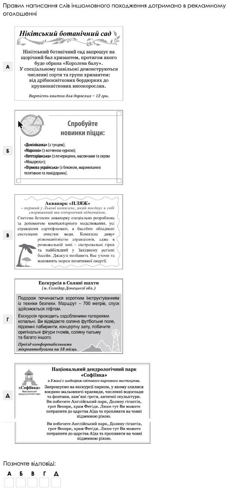
А «павільоні» ✗ → павільйоні
Б піца, Моцарела — див. примітку
В «компьютерного» ✗ → комп’ютерного
Г «лабиринти» ✗ → лабіринти
Д Фетіди, Аїда, грот Венери ✓
Відповідь: Д
🔍 Як перевірити: Читай кожне оголошення й шукай іншомовні слова з пастками: «й» перед о (павільйон), апостроф (комп’ютер), правило «дев’ятки» (лабіринт: після б — і). Оголошення Б виглядає правильним, проте в оригіналі ЗНО там «Моцарелла» з двома л, тож відповідь — Д.
🧩 Завдання ЗНО: и та і в іншомовних словах і пошук помилки (20)
1. Позначте рядок, у якому в усіх словах іншомовного походження пишеться и
А диспетчер, ватиканський, сентиментальний ✓, але безпрецедентний ✗
Б шилінг, консистенція, ідилічний, шиллерівський ✓
В карикатура, маркетинг, сертифікат ✓, але бравісимо ✗
Г фортисимо, інцидент, дилема ✓, але пріоритет ✗
Відповідь: Б
2. Літеру и треба писати в усіх словах рядка (на місці крапок)
А дирижабль, президент, Америка ✓, але п’єдестал ✗
Б мереживо, речитатив, величезний, Сирія ✓
В кишеня, Пакистан, лиман ✓, але дезінфекція ✗
Г Ватикан, Флорида, критичний ✓, але марево ✗
Д синус, корида, рецидив ✓, але дезінформація ✗
Відповідь: Б
3. Літеру и треба писати в усіх словах рядка (на місці пропуску)
А цистерна, динамо ✓, але хірург ✗
Б Америка ✓, але мерсі, соціологія ✗
В силует, диплом ✓, але Шекспір ✗
Г бригада, режим ✓, але архів ✗
Д речитатив, таксист, Лейпциг ✓
Відповідь: Д
4. Букву и треба писати на місці обох пропусків у рядку
А речитативом, цитата ✓
Б диктант ✓, але аналогією ✗
В сигнальні ✓, але соціологічне ✗
Г директором ✓, але авіації ✗
Д колективу ✓, але інженерний ✗
Відповідь: А
5. Літеру и треба писати в усіх словах рядка
А диктант, таксист, Лейпциг ✓
Б Чикаго, химера ✓, але функція ✗
В кредит, диплом ✓, але Шекспір ✗
Г Чилі, режим ✓, але тріумфатор ✗
Д Ватикан, динамо ✓, але хірург ✗
Відповідь: А
6. Букву і треба писати на місці обох пропусків у рядку
А фініш ✓, але індуїзм ✗
Б тріумф ✓, але еліпсоїд ✗
В цезій ✓, але титан ✗
Г грація, пріоритет ✓
Відповідь: Г
7. Літеру и на місці одного з пропусків треба писати в слові
А медицина ✓
Б метеорит — е, е
В лейтенант — е, е
Г претендент — е, е
Відповідь: А
8. Літеру и треба писати в усіх словах рядка
А Балтика, репетитор ✓, але соціолог ✗
Б Алжир, симптом, речитатив ✓
В Пакистан, джинси ✓, але інженер ✗
Г Корсика, кредит ✓, але хірургія ✗
Д Вавилон, таксист ✓, але діаграма ✗
Відповідь: Б
9. Букву и на місці пропуску треба писати в усіх словах рядка
А дирижабль, президент ✓, але п’єдестал ✗
Б синус, Ватикан ✓, але дезінформація ✗
В Пакистан, кипарис ✓, але привілей ✗
Г речитатив, Чилі ✓, але симпозіум ✗
Д рецидив, Флорида, критичний ✓
Відповідь: Д
10. Букву и треба писати на місці пропуску в усіх словах рядка
А меридіан, дрижати ✓, але теоретичний ✗
Б химерний, завмирання, диригент ✓
В тривожний, абрикос ✓, але метушливий ✗
Г височина, відгриміти ✓, але черговий ✗
Відповідь: Б
Тут перевіряють уже не іншомовні слова, а чергування е/и в корені.
11. Помилку в написанні слова іншомовного походження допущено в рядку
А Апенніни, каса, касета ✓
Б Дікенс → Діккенс ✗
В Канни, колектив, брутто ✓
Г хоббі → хобі ✗
Д Міссурі, іммігрант, тонна ✓
Відповідь: Г
Помилки є і в Б, і в Г. Відповідь ЗНО — Г (хобі пишеться з однією б). У власному імені Діккенс подвоєння зберігається, тож «Дікенс» — теж помилка, найімовірніше, це похибка в самому завданні.
12. Помилку в написанні слова допущено в рядку (у ЗНО двічі)
А інженер, скепсис, символіст ✓
Б кипарис, азимут, але косінус ✗ → косинус
В дивізіон, антагонізм, шкіпер ✓
Г партитура, афоризм, акціонер ✓
Д аквамарин, сюїта, шифон ✓
Відповідь: Б
13. Помилку в написанні слова допущено в рядку (у ЗНО двічі)
А фініш, силікон, але дісконт ✗ → дисконт
Б аудитор, вінегрет, стиліст ✓
В престиж, риторика, діалог ✓
Г пріоритет, лібрето, симптом ✓
Д диригент, грація, дисплей ✓
Відповідь: А
14. Правильно написано всі слова іншомовного походження в рядку
А Голландія, метал ✓, але тона ✗ → тонна
Б Россіні, ванна, комісія ✓
В колектив, Яффа ✓, але нето ✗ → нетто
Г Руссо, сума ✓, але філіпінка ✗ → філіппінка
Д Міссурі, інтелект ✓, але шассі ✗ → шасі
Відповідь: Б
15. Орфографічну помилку допущено в рядку
А П’єр де Кубертен ✓
Б жюрі ✗ → журі
В дієту й режим ✓
Г велосипедистів ✓
Д марокканський, андоррський ✓
Відповідь: Б
За правописом 2019 р. після ж, ч, ш пишемо у, а не ю: журі, парашут, брошура.
16. НЕМАЄ орфографічних помилок у варіанті
А Цю грав’юру ✗ → гравюру
Б диригентским ✗ → диригентським
В Синтементальні ✗ → сентиментальні
Г Якість продукції — наш незмінний пріоритет ✓
Відповідь: Г
17. НЕМАЄ орфографічних помилок у варіанті
А Замок ✗ → замок, розкішю ✗ → розкішшю
Б памятка ✗ → пам’ятка
В ризиденція ✗ → резиденція, обороними ✗ → оборонними
Г «Вінець ратних трудів – перемога…» ✓
Відповідь: Г
Те саме речення є і в темі «Велика буква».
18. НЕМАЄ орфографічних помилок у варіанті
А збалансованний ✗ → збалансований, рацион ✗ → раціон
Б Вибір продуктів… підпорядковані правилам здорового способу життя ✓
В користні ✗ → корисні, харчуваня ✗ → харчування
Г некожен ✗ → не кожен, будь яких ✗ → будь-яких
Відповідь: Б
19. НЕМАЄ орфографічних помилок у варіанті
А потинціал ✗ → потенціал, наповну ✗ → на повну
Б Професорка інженерних наук… «поезію формул» ✓
В не обхідні ✗ → необхідні, осмисленно ✗ → осмислено
Г за для ✗ → задля, зосереджиними ✗ → зосередженими
Відповідь: Б
20. НЕМАЄ орфографічних помилок у варіанті
А сто-двісті ✗ → сто — двісті, коммунальну ✗ → комунальну, утілізації ✗ → утилізації
Б домо-господарства ✗, смітєпереробний ✗ → сміттєпереробний
В Якщо ви самі не відвозите… на звичайне звалище ✓
Г миханічної ✗ → механічної, Європейський ✗ → європейський
Відповідь: В
40🔠 Префікси ПРЕ-, ПРИ-, ПРІ-
ПРЕ- — коли слово можна замінити на «дуже» (найвища міра ознаки): «превеликий» (дуже великий), «преспокійно», «премудрий», «преславний», «превелебний»;
ПРІ- — лише обмежена кількість слів-винятків, які варто запам’ятати окремо: «прізвище», «прізвисько», «прірва», «пріоритет».
Перевіряти варто за значенням: можна замінити на «дуже» — ПРЕ; приєднання чи неповнота дії — ПРИ; якщо слово не підпадає під жодне з цих значень — імовірно, це один із винятків на ПРІ-.
🧩 Завдання ЗНО: префікси пре-, при-, прі- (9)
1. Літеру и на місці пропуску треба писати в усіх словах рядка
А преважкий ✗ (е — «дуже важкий»), придбати
Б прибережний, привілля ✓
В прибуття ✓, але предовгий ✗
Г прездоровий ✗ (е), приморозити
Відповідь: Б
2. Префікс при- пишеться в усіх словах рядка
А прибувати ✓, але прегарний ✗
Б привертати, прибалтійський, прилеглий, присяга ✓
В приклеєний, присісти ✓, але превеселий ✗
Г прикручувати, привітання ✓, але престарий ✗
Д прикликаний, прикласти ✓, але предивний ✗
Відповідь: Б
3. Префікс при- треба писати в усіх словах рядка
А приглушити, прим’ятий ✓, але премудрість ✗
Б привчити, прибулий, приморозок ✓
В Прикарпаття, приїжджати ✓, але прізвисько ✗
Г Придністров’я ✓, але прегарний ✗
Д причіп ✓, але премилий ✗
Відповідь: Б
4. Літеру и треба писати на місці обох пропусків у рядку
А Придніпровська, привабливі ✓
Б призупинити ✓, але пречудовий ✗
В прибічники ✓, але презирливе ✗
Г препогано ✗, примірник ✓
Д призначення ✓, але прізвище ✗
Відповідь: А
Презирливий, презирство — пишемо пре-, хоч значення «дуже» тут немає: ці слова треба запам’ятати.
5. «Приїхавши до Одеси, обов’язково прогуляйтеся Приморським бульваром, помилуйтеся пречудовим оперним театром…» — літеру е треба писати на місці цифри
А 1 — приїхавши
Б 2 — Приморським
В 3 — пречудовим ✓ (дуже чудовим)
Г 4 — прилучіться
Д 5 — призахідного
Відповідь: В
6. Літеру и на місці пропуску треба писати в усіх словах рядка
А прибуток, прикрашений, присвоїти ✓
Б прибічник, прилеглий ✓, але преславний ✗
В приховати, пригріти ✓, але прізвище ✗
Г прибій, приваба ✓, але преподобний ✗
Відповідь: А
7. Літеру и на місці пропуску треба писати в усіх словах рядка
А прибувати, прикручений ✓, але прегарний ✗
Б привертати, прибалтійський, присяга ✓
В привітний, притримати ✓, але предобрий ✗
Г прикручувати, привітання ✓, але пресмачний ✗
Д прикликаний, принести ✓, але пречисто ✗
Відповідь: Б
8. Літеру и на місці пропуску треба писати в усіх словах рядка
А прибуток, приварений, присвоєння ✓
Б прибічник, прилеглий ✓, але преславний ✗
В прихований, пригріти ✓, але прізвисько ✗
Г прибій, привабливий ✓, але превелебний ✗
Відповідь: А
9. Літеру и на місці пропуску треба писати в усіх словах рядка
А притиснути, прибуток ✓, але пречудовий ✗
Б призабути, прибічник ✓, але пресуворо ✗
В прикраса, прибережний, прибігти ✓
Г прирівняти, приміський ✓, але пресмачно ✗
Відповідь: В
41〰️ М’який знак: усі правила разом
Ставиться
після д, т, з, с, ц, л, н (і сполуки дз) у кінці слова чи складу, коли приголосний м’який: «дядько», «молодьба», «гетьман», «різьба», «вісь», «тінь»;
перед О всередині складу для позначення м’якості попереднього приголосного: «трьох», «дзьоб», «дьоготь», «сьомий», «льон»;
у суфіксах -ськ-, -цьк-, -зьк-: «близькість», «людськість», «запорозький», «по-козацькому» (є й винятки, наприклад «кінський» — без м’якого знака);
у наказовому способі дієслів: «підносься», «підіймається».
Похідні форми на -льк-/-ньк-
Якщо в називному відмінку м’якого знака немає («рибалка», «голка», «Наталка») — не буде його і в похідних формах («рибалці», «голці», «Наталці»). А якщо є («галька», «бурулька», «лялька») — зберігається і в похідних («гальці», «бурульці», «ляльці»).
НЕ ставиться
між двома приголосними, коли перший пом’якшується під впливом другого: «радість» → «радістю», «якість» → «якістю»;
перед шиплячими після Н: «тонше», «менше», «уманщина», «панщина»;
у частині слів іншомовного походження й власних назв, де м’якість окремо не позначається (наприклад, «женьшень» — виняток).
🧩 Завдання ЗНО: м’який знак (34)
Що ловлять у цих завданнях
Ь є: -зьк-, -цьк-, -ськ- після л: запорізький, французький, гагаузький, слизький, ткацький, сільський, ковальський; дієслова на -ться, -шся НЕ мають ь (смієшся), а -ться має (одягається); наказовий спосіб після м’якого: будьте, порадьте, виносьте, киньмо, перелазьте; перед -ці від слів на -ньк-: жменька → жменьці, скринька → скриньці, долонька → долоньці, брунька → бруньці; присвійні від слів на -ньк-: доньчин, неньчин, няньчин, ляльчин; перед о: сьогодні, кольоровий, чотирьох, тьмяний.
Ь немає: після н перед ж, ч, ш, щ: камінчик, менший, тонший, Уманщина, барабанщик, задзеленчати; перед -ці від слів на -нк-: дівчинка → дівчинці, землянка → землянці, Галинка → Галинчин, Маринчин; після р у кінці складу: гіркий, повірте, воротар; у групах приголосних: ковзкий, кузня, міський, людськість, колодязний; після губних і шиплячих: ніч, степ, наріжте, менше, обличчя; перед й, якщо є Й: серйозний, курйозний, район.
1. М’який знак треба писати в усіх словах рядка (на місці пропуску)
А мистецький, учительство ✓, але камінчик ✗
Б малесенький, одягається ✓, але менший ✗
В жменьці, виносьте, вирізьблений ✓
Г запорізький ✓, але вінчати ✗, женьшень ✓
Відповідь: В
2. Без м’якого знака треба писати всі слова в рядку
А харківський, матінчин ✓, але стільчик ✗
Б жовччю, прес-пап’є ✓, але ковальський ✗
В миш’як, хустинці, Галинчин ✓
Г рибалці, переллється ✓, але жульєн ✗
Д Уляна, уманський ✓, але зганьбитися ✗
Відповідь: В
3. Позначте рядки, у яких усі слова пишуться без м’якого знака
1 Уманщина, майбутнє, менший, бджілці ✓
2 землянці, яблунці, ремінчик, але емульсія ✗
3 буквар, інший, кузня, чотирма ✓
4 тонший, ніч, рибалці, але перелазьмо ✗
5 сопілці, доменщик, степ, ударте ✓
6 ад’ютант, ковзкий, український, але каньйон ✗
7 цвях, наріжте, боязкість, але різьбяр ✗
Відповідь: 1, 3, 5
4. Позначте рядок, у якому в усіх словах пишемо м’який знак
А крадькома, вирізьблений, мальва, але ослінчик ✗
Б дівчиноньці, воєначальник, зацвірінькати, але волоський ✗
В ганьбити, ковальський, лосьйон, вигулькнути ✓
Г консульський, будьте, витьохкувати, але задзеленчати ✗
Відповідь: В
5. М’який знак НЕ пишеться в усіх словах рядка
А менший, ойкання ✓, але мільярд ✗
Б Уманщина, Поділля ✓, але Батьківщина ✗
В безбатченко, змагаєшся, віссю ✓
Г інший, спілчанський ✓, але женьшень ✗
Д ріжмо, насипмо ✓, але киньмо ✗
Відповідь: В
6. М’який знак НЕ пишеться в усіх словах рядка (на місці пропуску)
А дівчинці, сіллю ✓, але порадьте ✗
Б курйозний, соломинці, тонший ✓
В ремінчик ✓, але батальйон, сядьте ✗
Г кузня, смієшся ✓, але голубоньці ✗
Д велетенський, Галинці ✓, але посунься ✗
Відповідь: Б
7. «Коли переконуєт(1)ся… малюсін(2)кий жайвір починає повіл(3)но… на невидимій ниточ(4)ці… в т(5)мяну височину». Ь треба на місці всіх цифр, окрім
А переконується ✓
Б малюсінький ✓
В повільно ✓
Г ниточці — без ь
Д тьмяну ✓
Відповідь: Г
8. М’який знак треба писати на місці обох пропусків у рядку
А павільйон ✓, але панство ✗
Б здається ✓, але громадянська ✗
В п’ятсот, знань — обидва без ь ✗
Г польське ✓, але меншість ✗
Д близько, гетьманський ✓
Відповідь: Д
9. М’який знак треба писати в усіх словах рядка (на місці пропуску)
А малесенький ✓, але по-угорському, базікаєш ✗
Б п’ятнадцятьох, сільський ✓, але ланцюг ✗
В радість, неньчин, розливається ✓
Г ллється, їдальня ✓, але волинський ✗
Д близько, няньці ✓, але болгарський ✗
Відповідь: В
«Неньчин» — від «ненька»; ь зберігається, як і в «доньчин», «няньчин».
10. М’який знак треба писати на місці обох пропусків
А пробивається ✓, але промінчик ✗
Б заходьте ✓, але книгозбірні ✗
В гуцульське різьблення ✓
Г чотирьох ✓, але велетнів ✗
Відповідь: В
11. М’який знак НЕ пишеться в усіх словах рядка (на місці пропуску)
А кінчик, щастя ✓, але ляльчин ✗
Б американський ✓, але совістю, близько ✗
В ковзкий, камінчик, серйозний ✓
Г позначмо ✓, але киньмо ✗
Д секретар ✓, але ллється, польський ✗
Відповідь: В
12. М’який знак треба писати в усіх словах рядка (на місці пропуску)
А перелазьте, стежиньці, паморозь ✓
Б людьми, пісеньці ✓, але уманський ✗
В ллється, погляньте ✓, але гіркий ✗
Г бруньці, різьблення ✓, але волоський ✗
Відповідь: А
«Стежиньці» — від «стежинька». Інші рядки точно мають слово без ь.
13. М’який знак НЕ треба писати в усіх словах рядка (у ЗНО двічі)
А багрянець, чіткість, п’ятдесят ✗
Б вагаєшся, ослінчик ✓, але скриньці ✗
В хустинці, тітчин, харків’янин ✓
Г русалчин, спитаєш ✓, але неньчин ✗
Д ланцюг ✓, але радістю, різьбяр ✗
Відповідь: В
14. М’який знак треба писати на місці обох пропусків у рядку
А їдальня ✓, але майбутнє ✗
Б ткацький ✓, але ланцюжок ✗
В станьте ✓, але жердинці ✗
Г обчислювальний, доньчине ✓
Відповідь: Г
15. М’який знак треба писати в усіх словах рядка (на місці крапок)
А долоньці, піклується, промінець ✓
Б переддень ✓, але міський, дивуєшся ✗
В близькість, чотирьох ✓, але матінчин ✗
Г тьохкати, радістю ✓, але людськість ✗
Відповідь: А
Дивуєшся — без ь (-шся).
16. Усі слова написано правильно в рядку
А дівчиньці ✗ → дівчинці
Б боязкий, медальйон, портьєра, гуаш ✓
В різбяр ✗ → різьбяр
Г тоньший ✗ → тонший
Д він’єтка ✗ → віньєтка
Відповідь: Б
17. Без м’якого знака треба писати всі слова рядка
А менший, Маринчин, бринчати, цвях ✓
Б кінчик, воротар, дзеленчати, інтер’єр — теж без ь (див. примітку)
В серйозний, чотирма, доповіддю ✓, але неньчин ✗
Г корінці, кузня, світловий ✓, але дівчиноньці ✗
Д шістдесят, Поділля, обличчя ✓, але сеньйор ✗
Відповідь: А
Рядок Б формально теж без ь (в «інтер’єр» апостроф, а не м’який знак). Мабуть, в оригіналі завдання там було інше слово. Відповідь ЗНО — А.
18. М’який знак треба писати в усіх словах рядка (на місці пропуску)
А кольоровий, вирізьблений ✓, але ослінчик ✗
Б мальва ✓, але волоський, волинський ✗
В дівчиноньці, ковальський, лосьйон ✓
Г байкальський, гетьманщина ✓, але тіснява ✗
Д будьте, крадькома ✓, але задзеленчати ✗
Відповідь: В
19. М’який знак треба писати в усіх словах рядка (на місці пропуску)
А кольоровість, різьбяр ✓, але промінчик ✗
Б гагаузький, гетьманщина ✓, але тіснява ✗
В дівчиноньці, ковальський, лосьйон ✓
Г підносься, посидьмо ✓, але надзеленчати ✗
Відповідь: В
20. М’який знак треба писати на місці пропуску в обох словах рядка
А медальйон ✓, але Оксанчин ✗
Б бадьорий ✓, але барабанщик ✗
В бульвар ✓, але харківський ✗
Г трипільська культура ✓
Відповідь: Г
21. НЕМАЄ орфографічних помилок у варіанті
А …кампанія, присвячена питанням кібербезпеки ✓
Б журналіська → журналістська, відео-ролики → відеоролики ✗
В ознайомлятся → ознайомляться ✗
Г Зосередженя → зосередження, перед усім → передусім ✗
Відповідь: А
Це речення є ще в темах «Іншомовні слова» та «Складні слова».
22. М’який знак треба писати в усіх словах рядка (на місці пропуску; у ЗНО двічі)
А каньйон, учительський ✓, але камінчик ✗
Б женьшеневий, одягається ✓, але чотирма ✗
В слизький, малесенький ✓, але повінчати ✗
Г жменьці, портьєрний, вирізьблений ✓
Відповідь: Г
23. «Коли мален(1)кий соловейко переконуєт(2)ся… повіл(3)но… на невидимій ниточ(4)ці…» Ь треба на місці всіх цифр, ОКРІМ (у ЗНО двічі)
А маленький ✓
Б переконується ✓
В повільно ✓
Г ниточці — без ь
Відповідь: Г
24. М’якого знака НЕ ТРЕБА писати на місці пропуску в усіх словах рядка (у ЗНО двічі)
А чотирма, пробачте ✓; боягуз..кий — див. примітку
Б повірте, майбутнє ✓, але гордістю ✗
В курйозний, ковзкий ✓, але діляться ✗
Г цвірінчати, тарілці ✓, але павільйон ✗
Відповідь: А
У рядках Б, В, Г точно є слово з ь, тож відповідь ЗНО — А. Але словники подають «боягузький» з ь (як «французький»), тож завдання сформульоване не зовсім коректно.
25. М’який знак треба писати в усіх словах рядка (на місці пропуску)
А стабільність, Натальці ✓, але чотирма ✗
Б женьшень, бульйончик ✓, але вознісся ✗
В подільський, штаньми, погодьтесь ✓
Г тьмяність ✓, але Даринчин, волинський ✗
Відповідь: В
26. М’який знак треба писати в усіх словах рядка (на місці пропуску)
А мільярд, рибоньці ✓, але чотирма ✗
Б підносься, каньйон ✓, але дивишся ✗
В бульйон, няньчин, тьмяний ✓
Г ательє, пізній ✓, але уманський ✗
Відповідь: В
27. М’якого знака НЕ ТРЕБА писати в усіх словах рядка
А тарілці, миш’як ✓, але різьбярство ✗
Б ад’ютант ✓, але портьєра, гордістю ✗
В ін’єкція, гребінчик ✓, але няньчити ✗
Г різнобарв’я, тонший, нюанс ✓
Відповідь: Г
28. М’який знак треба писати в усіх словах рядка (на місці пропуску)
А посольський, охолоньте ✓, але дивишся ✗
Б чотирьох ✓, але кінський, Уманщина ✗
В тьмяність, сьорбати ✓, але колодязний ✗
Г посунься, катається, Гуцульщина ✓
Відповідь: Г
29. М’який знак НЕ треба писати в усіх словах рядка
А чотирма, пробачте ✓, але няньчин ✗
Б курйозний, ковзкий ✓, але різьбяр ✗
В цвірінчати, тарілці ✓, але ляльчин ✗
Г промінчик, тонший, повірте ✓
Відповідь: Г
30. М’який знак НЕ пишеться в усіх словах рядка (на місці пропуску)
А менше, рибалці, обличчя ✓
Б ремінчик, тонший ✓, але женьшень ✗
В вінчати, безбатченко ✓, але скриньці ✗
Г змагаєшся, ріжмо ✓, але каньйон ✗
Відповідь: А
31. М’який знак треба писати в усіх словах рядка (на місці пропуску)
А яблунька, тьмяний, веселенький ✓
Б бульйон, учительство ✓, але кінський ✗
В трильйон, близький ✓, але камінчик ✗
Г польський, мальва ✓, але серйозний ✗
Відповідь: А
32. М’який знак треба писати в усіх словах рядка (на місці пропуску)
А Гуцульщина, тьмяний ✓, але Уманщина ✗
Б різьбярство, подільський ✓, але колодязний ✗
В стабільність, погодьтесь ✓, але корінчик ✗
Г діляться, жменьці, слизький ✓
Відповідь: Г
33. М’який знак треба писати в усіх словах рядка (на місці пропуску)
А слизько, по-польському ✓, але тонший ✗
Б сільський ✓, але базікаєш, бринчати ✗
В няньчин, запорізький, перекиньте ✓
Г бруньці ✓, але рознісся, кременчуцький ✗
Відповідь: В
Запорізький — суфікс -зьк- (з + ськ), а в ньому завжди ь, як у «французький», «паризький».
34. М’який знак треба писати в усіх словах рядка (на місці пропуску)
А каньйон, учительський ✓, але камінчик ✗
Б женьшеневий, погодься ✓, але чотирма ✗
В браконьєр, слизький ✓, але велогонщик ✗
Г жменьці, портьєрний, вирізьблений ✓
Відповідь: Г
🧩 Завдання ЗНО: йо чи ьо (5)
Правило: йо — на початку складу після голосного чи твердого приголосного (знайомство, бойовий, серйозний, батальйон, бульйон, шампіньйон); ьо — після приголосного всередині складу, щоб пом’якшити його (сьогодні, чотирьох, гостьовий, сольовий, сльозливий, сьомга, третього). Феєрверк і траєкторія пишуться без й.
1. М’який знак на місці пропуску треба писати в усіх словах рядка
А мальовничий, опрацьований ✓, але зйомка ✗
Б давньокиївський, чотирьох ✓, але район ✗
В пеньок, працьовитість ✓, але крайовий ✗
Г сьорбати, багатьом ✓, але серйозний ✗
Д сьогодні, пізнього, кольоровий ✓
Відповідь: Д
2. Літеру й треба писати на місці пропуску в усіх словах рядка (у ЗНО двічі)
А батальйон, серйозний ✓, але сьомга ✗
Б бойовий, бульйон ✓, але феєрверк ✗
В знайомство, каньйон, крайовий ✓
Г курйозний, лосьйон ✓, але гостьовий ✗
Д шампіньйон, сеньйор ✓, але чотирьох ✗
Відповідь: В
У другій версії цей рядок під Д, а замість «бойовий» стоїть «феєрія» (без й).
3. Букву й треба писати на місці пропуску в усіх словах рядка
А кроманьйонець, серйозний, бойовий ✓
Б знайомство, батальйон ✓, але траєкторія ✗
В привілейований, бульйон ✓, але гостьовий ✗
Г шампіньйон, курйозний ✓, але третього ✗
Відповідь: А
4. Букву й треба писати на місці пропуску в усіх словах рядка (у ЗНО двічі)
А нью-йорківець, лосьйон ✓, але гостьовий ✗
Б каньйон, серйозний, знайомство ✓
В бульйон, крайовий ✓, але феєрверк ✗
Г батальйон, бойовий ✓, але сльозливий ✗
Д шампіньйон, сеньйора ✓, але сольовий ✗
Відповідь: Б
5. Букву й треба писати на місці пропуску в усіх словах рядка
А бульйончик, серйозно, познайомити ✓
Б сеньйор, шампіньйончик ✓, але сольовий ✗
В привілейований, павільйон ✓, але сьомга ✗
Г батальйон, лосьйон ✓, але гостьовий ✗
Відповідь: А
42🪶 Багатозначність, омоніми, пряме й переносне значення
Багатозначне слово має кілька значень, які пов’язані між собою спільною ідеєю. Наприклад, «крило» — це і крило літака, і крило птаха: обидва значення пов’язані з польотом, тому це одне багатозначне слово, а не два різні.
На відміну від омонімів
Омоніми звучать і пишуться однаково, але їхні значення між собою ніяк не пов’язані. «Кран» — підйомний кран і кран для води: спільної ідеї між ними немає, це різні слова, які просто збіглися звучанням. Так само «ключ» (джерело води / ключ від замка) і «коса» (заплетене волосся / сільськогосподарське знаряддя).
Ще одна пара понять — пряме і переносне значення. Пряме значення — основне, буквальне: «дитина спить» (дитина справді перебуває уві сні). Переносне — вторинне, образне: «озеро спить» (спокій і тиша, а не сон у буквальному сенсі). Так само «дитина співає» (пряме) проти «серце співає» (переносне, настрій), або «золоті прикраси» (пряме — зроблені із золота) проти «золоті руки» (переносне — людина щось уміє майстерно робити руками).
Спосіб перевірки в завданнях «усі слова вжиті в прямому значенні»: подумки перевірити кожне слово — чи можна застосувати цю саму ознаку буквально до названого предмета. Якщо ознака явно перенесена з іншого контексту (наприклад, «гострий» стосується ножа, а не болю в прямому фізичному сенсі) — це переносне значення, і такий рядок не підходить.
🧩 Завдання ЗНО: лексичне значення слова (27)
1. Суфікс -інн(я) має різне значення в словах рядка
А носіння, говоріння — обидва означають процес дії ✗
Б гасіння, коріння — гасіння = дія, коріння = сукупність коренів (збірність) ✓
В ходіння, шарудіння — обидва процес ✗
Г терпіння, водіння — обидва віддієслівні назви дії/стану ✗
Відповідь: Б
У слові коріння суфікс -інн(я) має збірне значення (як листя, каміння), а в решті слів — значення дії.
2. У тексті про Люко Дашвар слово «фантастичні» («фантастичні, а насправді цілком реальні історії») можна замінити всіма словами, ОКРІМ
А дивовижні ✗
Б казкові ✗
В неймовірні ✗
Г правдиві — антонім, а не синонім ✓
Відповідь: Г
Шукаємо слово з протилежним значенням: «правдиві» = «реальні», а не «фантастичні».
3. Слово «демонів» у реченні «Індра пускав стріли, уражаючи злих демонів» можна замінити словом
А ворогів ✗
Б лиходіїв ✗
В волхвів — це жерці, чарівники ✗
Г духів — «злих духів» ✓
Відповідь: Г
Демон — у міфології злий дух; «вороги» й «лиходії» — люди, а не надприродні істоти.
4. Перед виходом з дому не забудьте … світло і, … погоду, … всі вікна. Граматично правильний варіант
А вимкнути, незважаючи на, позачиняти ✓
Б виключити, незважаючи на, позакривати ✗
В вимкнути, не дивлячись на, позачиняти ✗
Г вимкнути, незважаючи на, позакривати ✗
Д виключити, не дивлячись на, позачиняти ✗
Відповідь: А
Світло вимикають (виключити — калька), «незважаючи на» — прийменник (не дивлячись — дієприслівник «не дивитися»), вікна й двері зачиняють.
5. Текст про Катерину Білокур: «відтворила досі небачений світ, що був частиною її […]». Замість пропуску можна поставити всі слова, ОКРІМ
А світогляду ✗
Б звичок — світ не може бути частиною звичок ✓
В поглядів ✗
Г переконань ✗
Відповідь: Б
Світогляд, погляди, переконання — синоніми про внутрішній світ людини; «звички» сюди не пасують за змістом.
6. Текст про розділові знаки: «Ще через кілька років наша роззява загубила […] і перестала пояснювати іншим свої вчинки». Пропущене слово
А двокрапку — ставиться перед поясненням ✓
Б тире ✗
В крапки ✗
Г дужки ✗
Відповідь: А
Ключ — «перестала пояснювати»: двокрапка в безсполучниковому реченні вказує на пояснення.
7. Позначте речення, у якому слово «голова» вжито в переносному значенні (народні прислів’я)
А До булави треба й голови — голова = розум (теж переносне) ✗
Б Як голова сивіє, то чоловік мудріє ✗
В У голову, як у торбу, що знайдеш, те й сховаєш ✗
Г Скільки голів, стільки й умів ✗
Д Хліб – усьому голова — голова = найголовніше ✓
Відповідь: Д
У джерелі не позначено виділеного слова, тож кілька варіантів мають переносні відтінки; найвиразніше переносне значення («найважливіше») — у Д, це найімовірніша відповідь ЗНО.
8. Установіть відповідність між словами-синонімами
1 відраза → А осоруга
2 спокуса → Б зваба
3 царина → В галузь
4 тенета → Г пастка
Д каверза (підступ) — зайве
Відповідь: 1-А, 2-Б, 3-В, 4-Г
Осоруга — те, що викликає відразу; тенета — сітка, переносно пастка.
9. Виділене слово вжите в прямому значенні в реченні
А Холодні осінні тумани спускають на землю мокрі коси ✗
Б У чужу душу не влізеш ✗
В Умивається сльозами убога земля ✗
Г Приходять друзі, виринають у пам’яті спогади ✓
Відповідь: Г
Друзі справді приходять — це пряме значення; в інших реченнях — уособлення й метафори.
10. Виділене слово вжито в прямому значенні в реченні
А Долинами пісня літає ✗
Б Ви знаєте, як сплять старі гаї? ✗
В Шелестом опалого листя зітхає лісова стежка ✗
Г Хазяїн коротко відповідав на запитання гостя ✓
Відповідь: Г
Пісня не літає, гаї не сплять, стежка не зітхає — це уособлення; відповідати може тільки людина.
11. Текст «Пахне луг…». У переносному значенні вжито
А пахне луг ✗
Б лелеки прилетіли ✗
В сумують сутінки — уособлення ✓
Г дихаєш і оновлюєшся ✗
Відповідь: В
Сумувати може лише жива істота, тож «сумують сутінки» — переносне вживання.
12. Текст «У моїй батьківщині…». У переносному значенні вжито
А колишуться вози ✗
Б кукурікають півні ✗
В осінь ступає (у червоних чобітках) ✓
Г зорі сяють ✗
Відповідь: В
Осінь «ступає» — уособлення; вози справді колишуться, а зорі сяють.
13. Текст про колискову. У переносному значенні вжито
А маленької дитини ✗
Б над колискою ✗
В почутої мелодії ✗
Г ходить навшпиньках («колискова — це ніби душа, яка ходить навшпиньках») ✓
Відповідь: Г
Душа не може ходити навшпиньках — це метафора.
14. «Птах мав (…) зір і добре бачив…». Замість пропуску має бути слово
А проникливий — про погляд, розум ✗
Б слабкий ✗
В власний ✗
Г гострий ✓
Відповідь: Г
Сталий вислів — гострий зір; «проникливий» поєднується з поглядом чи розумом.
15. Текст про аеродром: «Оглушуючи ранок своїм допотопним дуднінням, […] розвертався над сонним містечком». Пропущене слово
А Малі діти - малий клопіт, а підростуть - буде великий. ✓
Б Діти - як квіти: поливай, то ростимуть. ✗
В У дитини заболить пальчик, а в матері серце. ✗
Г Рідня до півдня, а як сонце зайде - ніхто не знайде! ✗
Відповідь: А
Малий – великий.
8. Антонімами є слова
А серйозний - стриманий ✗
Б делікатний - приємний ✗
В деградувати - відроджуватися ✓
Г акліматизований - пристосований — синоніми ✗
Д асиміляція - уподібнення — синоніми ✗
Відповідь: В
9. До слова (1–4) доберіть антонім (А – Д)
1 марнувати → Б заощаджувати
2 звеличувати → А ганьбити
3 прогресувати → Г занепадати
4 роз’єднувати → В сполучати
Відповідь: 1-Б, 2-А, 3-Г, 4-В
Зайвий варіант — «руйнувати».
10. До слова (1–4) доберіть антонім (А – Д)
1 щедрий → Б скупий
2 щирий → А лицемірний
3 рішучий → Г боязкий
4 ласкавий → В суворий
Відповідь: 1-Б, 2-А, 3-Г, 4-В
Зайвий варіант — «байдужий».
43🗑️ Зайві слова: плеоназм і тавтологія
Плеоназм — мовна надмірність, коли одне слово в словосполученні вже повністю містить значення іншого, тож разом вони утворюють зайве, надлишкове повторення.
Неправильно (зайве слово)
Чому зайве
прейскурант цін
«прейскурант» уже означає «довідник цін»
вільна вакансія
«вакансія» вже означає «вільна посада»
моя автобіографія
«авто-» вже означає «власний, про самого себе»
пам’ятний пам’ятник
«пам’ятник» уже за суттю пам’ятний
забезпечувати безпеку
однокореневий повтор значення
сплатити виплати
однокореневий повтор значення
свідчення свідків
однокореневий повтор значення
Головна ознака для пошуку такої помилки в тесті — перевірити, чи не «вшите» значення одного слова словосполучення вже в значення іншого.
🧩 Завдання ЗНО: плеоназм і тавтологія (8)
1. НЕ ПОТРЕБУЄ редагування речення
А Вища школа активно впроваджує в навчальний процес інноваційні технології. ✓
Б передовий авангард ✗ — авангард і є передовий загін
В дискусії та суперечки ✗ — синонімічне нагромадження
Г засобів масової інформації та мас-медіа ✗ — те саме поняття двічі
Відповідь: А
2. Лексичної помилки НЕМАЄ в рядку
А несподіваний сюрприз ✗ → сюрприз
Б пам’ятний сувенір ✗ → сувенір
В вільна вакансія ✗ → вакансія
Г чинний закон ✓
Відповідь: Г
Сюрприз завжди несподіваний, сувенір — пам’ятний, вакансія — вільна.
3. Лексичну помилку допущено в рядку
А церковний канон ✗
Б раритетні видання ✗
В депутатські привілеї ✗
Г меморіальний пам’ятник → пам’ятник / меморіал ✓
Д фінішна дистанція ✗
Відповідь: Г
Меморіальний = пам’ятний.
4. НЕМАЄ лексичної помилки в рядку
А перший дебют ✗
Б головний лейтмотив ✗
В ефективний метод ✓
Г дивний парадокс ✗
Відповідь: В
Дебют — перший виступ, лейтмотив — головна думка, парадокс — дивне явище.
5. НЕМАЄ лексичної помилки в рядку
А переважна прерогатива ✗
Б головний лейтмотив ✗
В дивний парадокс ✗
Г захисний імунітет ✗
Д приваблива вакансія ✓
Відповідь: Д
Прерогатива — переважне право, імунітет — захист.
6. Лексична помилка є в рядку
А сервісний центр ✗
Б сервісна компанія ✗
В сервісна пропозиція ✗
Г сервісне обслуговування → сервіс / обслуговування ✓
Відповідь: Г
Сервіс і є обслуговування.
7. Лексична помилка є в рядку
А вільний вибір ✗
Б вільний графік ✗
В вільна вакансія → вакансія ✓
Г вільна смуга ✗
Відповідь: В
8. НЕМАЄ лексичної помилки в словосполученні
А уязвиме місце ✗ → вразливе місце
Б зовнішній фасад ✗ — фасад завжди зовнішній
В присадибна ділянка ✓
Г часова хронологія ✗ — хронологія стосується часу
Відповідь: В
44🌍 Лексика за походженням: запозичення
Лексика поділяється на власне українську (слова, які виникли чи засвоїлися дуже давно) і запозичену — з інших мов, переважно через науку, торгівлю, релігію, військову справу чи сусідство народів.
Мова
Приклади слів
грецька
ікона, левада, кипарис, ім’я Федір
латинська
студент, алібі
німецька (через магдебурзьке право)
дах, ярмарок, квота, решта
польська
пан, вольність
румунська
бринза, гирло
білоруська
бадьорий, гарячий
тюркська
канчук, базар, товариш, лелека
угорська
газда, легінь, ганж
французька
ескіз, пейзаж, аванс
англійська
активні сучасні запозичення
Хвиля німецьких запозичень пов’язана з тим самим магдебурзьким правом, яке діяло в українських містах у XIV–XVIII століттях — детальніше про нього в розділі «Хронологія».
🧩 Завдання ЗНО: запозичені слова та їхні відповідники (18)
1. Доберіть українські відповідники до іншомовних слів
1 критерій → Б мірило
2 фіаско → Д провал
3 фактор → А чинник
4 рецепт → Г припис
В учення — зайве
Відповідь: 1-Б, 2-Д, 3-А, 4-Г
2. Доберіть синоніми
1 абсолютний → А цілковитий
2 автентичний → Д справжній
3 автономний → Б самостійний
4 аналогічний → Г схожий
В сучасний — зайве
Відповідь: 1-А, 2-Д, 3-Б, 4-Г
Автентичний — справжній, оригінальний.
3. Знайдіть українські відповідники іншомовним словам
1 абориген → А туземець
2 агресор → Б загарбник
3 асистент → Г помічник
4 адвокат → Д захисник
В попередник — зайве
Відповідь: 1-А, 2-Б, 3-Г, 4-Д
4. Доберіть українські відповідники до іншомовних слів
1 фактор → Г чинник
2 критерій → Д мірило
3 лозунг → В гасло
4 сфера → А царина
Б віче — зайве
Відповідь: 1-Г, 2-Д, 3-В, 4-А
5. Доберіть до іншомовних слів українські відповідники
Дебют — це і є перший виступ, тому «перший дебют» — тавтологія.
17. НЕМАЄ лексичної помилки в рядку
А цікавий парадокс ✓
Б великий мегаполіс — мега- вже означає «великий» ✗
В одноосібний монолог — моно- = один ✗
Г запальний ентузіазм — ентузіазм уже означає запал ✗
Відповідь: А
Плеоназм — повтор значення, уже наявного в запозиченому слові.
18. Лексичної помилки НЕМАЄ в рядку
А налаштувати GPS-систему — S = system ✗
Б купити CD-диск — D = disc ✗
В зустрічати VIP-персону — P = person ✗
Г працювати в IT-компанії ✓
Відповідь: Г
В абревіатурах GPS, CD, VIP останнє слово вже називає предмет, тож додавання «система», «диск», «персона» — плеоназм. IT — «інформаційні технології», «компанія» нічого не повторює.
45📚 Сфери вживання: діалектизми, історизми, архаїзми, неологізми
Крім загальновживаної, стилістично нейтральної лексики (активний словник, зрозумілий усім), є кілька груп слів обмеженого вживання:
діалектизми — вживаються лише на певній території: «файний» (гарний), «когут» (півень), «ровер» (велосипед), «пацьорок» (прикраса);
професійна лексика — слова конкретної галузі, незрозумілі поза нею: «карбюратор», «ромб», «синтаксис»;
Історизми — сам предмет чи поняття зникли, тому й слово вийшло з ужитку: «князь», «козак» (немає більше цього суспільного явища). Архаїзми — явище лишилося, але зараз його називають інакше: «уста» (тепер «рот»), «перст» (тепер «палець»), «товмач» (тепер «перекладач»).
Неологізми — нові слова на позначення нових реалій (наприклад, «селфі» було неологізмом ще не так давно, а тепер уже загальновживане слово). Окремо існують авторські неологізми — слова, вигадані конкретним письменником (наприклад, у Павла Тичини й Максима Рильського: «яблуневоцвітно», «злотоцінно»).
🧩 Завдання ЗНО: застарілі й діалектні слова (1)
1. Позначте речення, що містить застаріле слово
А поклястись на знамені (М. Луків) ✗
Б грав на флояру (М. Коцюбинський) — діалектизм ✗
В ґазди і ґаздині (В. Стефаник) — діалектизми ✗
Г під білими хоругвами, з піками, у магерках (П. Загребельний) — історизми ✓
Хоругва (бойовий прапор), магерка (старовинна шапка) — історизми, тобто застарілі слова. Флояра, ґазда, маєвий, легіт — діалектизми, а не застарілі слова.
46❌ Типові лексичні помилки замість норми
У завданнях на лексичну помилку найчастіше трапляються кальки з російської або просто неточний добір слова. Корисно мати напоготові список типових пар «неправильно → правильно»:
Неправильно
Правильно
співставити факти
зіставити факти
підвести підсумки
підбити підсумки (підвести можна очі)
добитися успіху
досягти успіху
зайняти місце
посісти місце
придаємо значення
надаємо значення
відношення (у значенні «стосунки»)
ставлення, стосунки
посторонні
сторонні
слідуюча
наступна
опирається (у значенні «спирається»)
спирається
мебельна фабрика
меблева фабрика
вищоучбовий заклад
вищий навчальний заклад
діловита атмосфера
ділова атмосфера
гармонічно розвинена
гармонійно розвинена
8 років назад
8 років тому (калька з англійського «...ago»)
чисельний (у значенні «численний»)
численний
виключатель
вимикач (світло вмикають, вимикають вимикачем)
на протязі двох днів
протягом двох днів
у слідуючому сезоні
у наступному сезоні
на Україні
в Україні
прийняла участь
взяла участь
заставила прибирати
змусила прибирати
у розстрочку
навиплат
так як (у значенні «оскільки»)
оскільки
риболов (людина, що рибалить)
рибалка
гадати (у значенні ворожіння)
ворожити (гадати — «припускати, думати»)
Практичний прийом
Якщо варіант відповіді звучить точнісінько так, як сказали б у побутовій, розмовній мові чи суржику, — це, найімовірніше, і є той неправильний варіант, який шукає тест. Правильна відповідь на НМТ зазвичай звучить дещо «книжніше» за звичну розмовну фразу.
Суржик — змішування української лексики з російською — не є помилкою в побуті, але для завдань НМТ орієнтир завжди один: літературна нормативна українська мова.
🧩 Завдання ЗНО: лексична сполучуваність і лексичні помилки (29)
1. Лексично правильне словосполучення утворить прикметник «повчальний» з іменником
А заклад ✗
Б план ✗
В ефект ✗
Г досвід ✓
Д метод ✗
Відповідь: Г
Повчальний — той, що чогось навчає: повчальний досвід, приклад, випадок. Пор.: навчальний заклад, план.
2. «Студентка, […] перевтому, блискуче склала іспит». Можуть стояти всі слова, ОКРІМ
А незважаючи на ✗
Б не дивлячись на ✓
В забувши про ✗
Г подолавши ✗
Д попри ✗
Відповідь: Б
«Не дивлячись» — дієприслівник від «не дивитися»; у значенні поступки вживаємо «незважаючи на», «попри».
3. Утворіть лексично правильні словосполучення
1 переводити → Г через майдан
2 переказувати → В кошти
3 підписувати → Б ордери
4 передплачувати → А газети
Д з хорватської — зайве (правильно: перекладати з хорватської)
Відповідь: 1-Г, 2-В, 3-Б, 4-А
Переводити — вести когось на інший бік; текст з іншої мови перекладають.
4. Лексичну помилку допущено в рядку
А виговор з попередженням — правильно: догана з попередженням ✓
Б запровадження виборності ✗
В оголошення подяки ✗
Г посвідка на проживання ✗
Відповідь: А
«Виговор» — русизм; українською — догана.
5. «На шляху більшої … лауреатів і … конкурсів … перешкоди, однак прагнення перемоги завжди … до успіху». Правильний варіант
А половини, дипломатів, трапляються, призводить ✗
Б частини, дипломників, зустрічаються, приводить ✗
В частини, дипломантів, зустрічається, приводить ✗
Г половини, дипломантів, трапляються, призводить ✗
Д частини, дипломантів, трапляються, приводить ✓
Відповідь: Д
Половина не буває «більшою»; лауреати конкурсу — дипломанти (дипломник пише диплом); перешкоди трапляються; «призводить» — до негативного, «приводить» — до успіху.
6. Текст про дистанційну форму освіти, пропуск 34: «Дистанційна форма ___ освіти»
А отримання ✗
Б набуття ✗
В одержання ✗
Г здобуття ✓
Відповідь: Г
Офіційний термін законодавства — здобуття освіти.
7. Той самий текст, пропуск 35: «це ___ навчання»
А індивідуалізоване — пристосоване до кожного ✓
Б індивідуалістичне ✗
В індивідуальне ✗
Г індивідуалістське ✗
Відповідь: А
В Положенні про дистанційну форму здобуття освіти — «індивідуалізований процес»; індивідуалістичний — пов’язаний з індивідуалізмом.
8. Той самий текст, пропуск 36: «за опосередкованої взаємодії віддалених ___ учасників освітнього процесу»
А один від одного ✓
Б одне до одного ✗
В один з одним ✗
Г одне між одним ✗
Відповідь: А
Віддалені від чогось, тому «віддалених один від одного».
9. Той самий текст, пропуск 37: «у спеціалізованому ___»
А середовищі ✓
Б осередку ✗
В посереднику ✗
Г осерді ✗
Відповідь: А
Середовище — сукупність умов; осередок — центр, група; осердя — серцевина.
10. Той самий текст, пропуск 38: «у спеціалізованому середовищі, що ___ на базі сучасних технологій»
А знаходиться — калька ✗
Б функціонує ✓
В перебуває ✗
Г оперує ✗
Відповідь: Б
Середовище функціонує (діє) на базі технологій.
11. Текст про діловий форум, пропуск 34: «Основною метою форуму є ___ майданчика для обміну досвідом»
А заснування ✗
Б спорудження ✗
В конструювання ✗
Г створення ✓
Відповідь: Г
Йдеться про переносне значення «майданчик для обміну досвідом», тож пасує нейтральне «створення».
12. Той самий текст, пропуск 36: «питання, із якими щодня ___ керівники підприємств»
А стикаються ✓
Б зустрічаються ✗
В пересікаються ✗
Г перетинаються ✗
Відповідь: А
З проблемами, труднощами, питаннями стикаються.
13. Той самий текст, пропуск 37: «завдяки ___ зустрічам з колегами»
А особистим ✓
Б міжусобним ✗
В особовим ✗
Г особистісним ✗
Відповідь: А
Пароніми: особистий — власний, безпосередній; особовий — стосується особи (особова справа); особистісний — стосується особистості.
14. Той самий текст, пропуск 38: «під час як офіційних, так і ___ частин заходу»
А неформалістичних ✗
Б неформальних ✓
В неформалістських ✗
Г неформених ✗
Відповідь: Б
Протиставлення «офіційний — неформальний».
15. Текст про Дейла Карнегі, пропуск 34: «розробив ___ концепцію»
А особову ✗
Б власну ✓
В приватну ✗
Г осібну ✗
Відповідь: Б
Власна концепція — ним самим створена; «приватна» — протилежне до державної.
16. Той самий текст, пропуск 35: «концепцію ___ спілкування»
А несуперечливого ✗
Б безконфліктного ✓
В неконтраверсійного ✗
Г беззаперечного ✗
Відповідь: Б
Ідеться про спілкування без конфліктів.
17. Той самий текст, пропуск 36: «у світі немає поганих людей, є лише ___ обставини»
А несприятливі ✓
Б неласкаві ✗
В непривітні ✗
Г неприязні ✗
Відповідь: А
Неласкавий, непривітний, неприязний характеризують людей; обставини бувають несприятливі.
18. Той самий текст, пропуск 37: «змінивши ___ до них»
А взаємини ✗
Б ставлення ✓
В відносини ✗
Г стосунки ✗
Відповідь: Б
Ставлення — однобічне (до чогось); взаємини, стосунки — між людьми.
19. Той самий текст, пропуск 38: «припинивши псувати настрій як собі, так і ___»
А довкіллю ✗
Б оточуючим — калька ✗
В оточенню ✓
Г середовищу ✗
Відповідь: В
Дієприкметник «оточуючий» — калька з російської; правильно: оточення, люди довкола.
20. Текст про Стіва Джобса, пропуск 34: «новатор у ___ прикладних технологій»
А галузі ✓
Б області — у цьому значенні русизм ✗
В площині ✗
Г середовищі ✗
Відповідь: А
Сфера діяльності — галузь; область — адміністративна одиниця.
21. Той самий текст, пропуск 35: «прикладних ___ технологій»
22. Той самий текст, пропуск 36: «заснували компанію „Apple“ для ___ комп’ютерів»
А устаткування ✗
Б видавництва ✗
В генерування ✗
Г виробництва ✓
Відповідь: Г
Комп’ютери виробляють.
23. Той самий текст, пропуск 37: «Джобс … ___ „Apple“ на одну з найприбутковіших корпорацій»
А перетворив ✓
Б перевтілив ✗
В трансформував ✗
Г видозмінив ✗
Відповідь: А
Сталий зворот — перетворити на щось; «перевтілитися» — про актора.
24. Той самий текст, пропуск 38: «ринкову вартість якої можна ___ з ВВП Аргентини»
А ідентифікувати ✗
Б порівняти ✓
В співставити — помилка, правильно «зіставити» ✗
Г протиставити ✗
Відповідь: Б
Слова «співставити» в літературній мові немає; правильно: порівняти, зіставити.
25. Потребує редагування вислів у рядку
А відхилити пропозицію ✗
Б давно знати друг друга — правильно: один одного ✓
В заповзято співпрацювати ✗
Г довгострокове планування ✗
Д віддячити за допомогу ✗
Відповідь: Б
«Друг друга» — калька з російської.
26. Потребує редагування вислів у рядку
А винайняв квартиру в центрі ✗
Б запросив до вітальні ✗
В розповів про відрядження ✗
Г приїхав вісім років назад — правильно: вісім років тому ✓
Відповідь: Г
Про час кажемо «тому»: рік тому, вісім років тому.
27. НЕ ПОТРЕБУЄ редагування речення
А В учнівських творах часто трапляються лексичні помилки ✓
Б зібралося багато бувших працівників — колишніх ✗
В На слідуючому тижні — наступному ✗
Г Реєстрація бажаючих — охочих ✗
Д диплом і справка — довідка ✗
Відповідь: А
Бувший, слідуючий, бажаючий, справка — русизми.
28. Лексична помилка є в реченні
А Досвідчені наставники сприяють професійному становленню… ✗
Б Обираючи фах, зважайте на потреби… ✗
В Надзвичайно важливим чинником… є мотивація ✗
Г тренінгах із професіональної орієнтації — правильно: професійної ✓
Д Фахове самовизначення… ✗
Відповідь: Г
Пароніми: професійний — пов’язаний із професією (професійна орієнтація); професіональний — фаховий, на високому рівні.
29. Лексична помилка є в словосполученні
А світло протитуманних фар ✗
Б дзеркало заднього вигляду — правильно: заднього огляду ✓
В усесезонний омивач скла ✗
Г якісне моторне мастило ✗
Відповідь: Б
Дзеркало призначене для огляду; «вигляд» — зовнішність.
🧩 Завдання ЗНО: лексичні помилки у словосполученнях (35)
1. Лексичної помилки НЕМАЄ в рядку
А листати сторінки ✗ → гортати сторінки
Б зранку забули відкрити вікно ✗ → відчинити вікно
В дивовижна пам’ятка природи ✓
Г відноситися з повагою ✗ → ставитися з повагою
Відповідь: В
Вікна й двері відчиняють, книжку гортають.
2. Лексичну помилку допущено в рядку
А о сьомій годині ранку ✗
Б на наступній неділі → наступного тижня ✓
В властивий учневі ✗
Г прийшов у справах ✗
Відповідь: Б
Неділя — це день тижня, а не тиждень.
3. Лексичну помилку допущено в рядку
А залучили до участі в проєкті ✗
Б набули цікавого досвіду ✗
В програли завдяки голкіперу → програли через голкіпера ✓
Г зробили похапцем і неякісно ✗
Відповідь: В
Завдяки вживаємо лише з позитивним результатом.
4. Лексичну помилку допущено в рядку
А виключні здібності → виняткові здібності ✓
Б поверхове уявлення ✗
В громадська думка ✗
Г виконавча влада ✗
Відповідь: А
5. Лексичну помилку допущено в рядку
А являється прикладом → є прикладом ✓
Б скасувати конференцію ✗
В непридатний до вжитку ✗
Г зважати на правила ✗
Відповідь: А
«Являтися» означає «з’являтися», тому не вживається як зв’язка «є».
6. Помилково вжито слово в рядку
А ювілейні міроприємства → ювілейні заходи ✓
Б громадянське суспільство ✗
В парламентська республіка ✗
Г непримиренні опоненти ✗
Д прикордонна територія ✗
Відповідь: А
7. Помилково вжито слово в рядку (у ЗНО двічі)
А розв’язувати задачу ✗
Б уникнути небезпеки ✗
В надіслати привітання ✗
Г заказати букет квітів → замовити букет ✓
Д перекладати сербською ✗
Відповідь: Г
В іншому варіанті (чотири рядки, «болгарською» замість «сербською», без «надіслати привітання») правильна відповідь — В.
8. Лексичну помилку допущено в рядку
А автобус на замовлення ✗
Б бувший директор → колишній директор ✓
В вимкнути електрику ✗
Г образив мимоволі ✗
Відповідь: Б
9. Лексично неправильне словосполучення утворить слово «навичка» з прикметником
А рухова ✗
Б шкідлива — правильно: шкідлива звичка ✓
В практична ✗
Г граматична ✗
Д життєва ✗
Відповідь: Б
Навичка — уміння, набуте вправами; шкідливою буває звичка.
10. Помилково вжито слово в рядку (у ЗНО тричі)
А винайняв квартиру в центрі ✗
Б запросив до вітальні ✗
В розповів про відрядження ✗
Г приїхав вісім років назад → вісім років тому ✓
Відповідь: Г
Одного разу завдання сформульовано як «Потребує редагування вислів у рядку» — відповідь та сама.
11. Лексично неправильне словосполучення утворить іменник «легіон» із прикметником
А іноземний ✗
Б почесний ✗
В військовий ✗
Г промисловий ✓
Д жіночий ✗
Відповідь: Г
Легіон — військове формування або орден (Почесний легіон); «промисловий легіон» не кажуть.
12. Редагування потребує сполука в рядку
А згадати між іншим, принагідно згадати ✗
Б упродовж місяця, на протязі місяця — правильно: протягом місяця ✓
В дотепер не з’ясовано, досі не з’ясовано ✗
Г насамперед знати, передусім знати ✗
Д знайти без зволікань, знайти негайно ✗
Відповідь: Б
«На протязі» означає «на вітрі, на протязі»; про час — протягом, упродовж.
13. Лексичну помилку допущено в рядку
А вимкнути комп’ютер ✗
Б видрукувати на принтері ✗
В ввести неправильний пароль ✗
Г прийняти участь в обговоренні → взяти участь ✓
Відповідь: Г
Участь беруть, а не приймають.
14. Помилково вжито слово в рядку
А брати участь ✗
Б здавати іспит → складати іспит ✓
В додати води ✗
Г здобути освіту ✗
Відповідь: Б
Іспит складає студент, а приймає викладач; «здавати іспит» укладачі ЗНО вважають калькою (у словниках трапляється як розмовне).
15. Немає лексичної помилки в рядку
А багаточисельні дзвінки ✗ → численні
Б рішити завдання ✗ → розв’язати
В наступного разу ✓
Г погляди співпадають ✗ → збігаються
Відповідь: В
16. Помилково вжито слово в рядку
А повиключайте всі електроприлади → вимкніть ✓
Б намагайтеся швидко відповісти на запитання ✗
В перевірте банківський рахунок наступного дня ✗
Г запропонуйте гостям чай, каву й тістечка ✗
Відповідь: А
Прилади вмикають і вимикають; «виключити» — вилучити зі складу.
17. Лексичну помилку допущено в рядку
А довгожитель ✗
Б покровитель ✗
В визволитель ✗
Г виключатель → вимикач ✓
Відповідь: Г
18. У НЕВЛАСТИВОМУ значенні вжито слово в рядку
А уболівали за «Динамо» ✗
Б повстали проблеми → виникли проблеми ✓
В перебував на лікуванні ✗
Г надійшли в продаж ✗
Д скасували закон ✗
Відповідь: Б
Повстають люди (проти гноблення), а проблеми виникають.
19. Лексичну помилку допущено в рядку
А діюче законодавство → чинне законодавство ✓
Б цікава пропозиція ✗
В підсумкове заняття ✗
Г курячий бульйон ✗
Д запорука успіху ✗
Відповідь: А
Закони чинні; дієприкметники на -ючий часто є калькою.
20. «Щоб … впоратися з контрольними завданнями, не полінуйтеся … підручник і повторити матеріал, зосередившись на … з правил». Правильний варіант заповнення пропусків
А удачно, розгорнути, винятках ✗
Б успішно, відкрити, виключеннях ✗
В успішно, розгорнути, виключеннях ✗
Г удачно, відкрити, виключеннях ✗
Д успішно, розгорнути, винятках ✓
Відповідь: Д
Підручник розгортають; у правилах — винятки, а не «виключення».
21. «Магеллан … неоціненний … у розвиток географічної науки… й … морський шлях… вивчити … частину світу». Правильний варіант заповнення пропусків
А уніс, вклад, проложив, дану ✗
Б зробив, вклад, проложив, цю ✗
В уніс, вклад, проклав, цю ✗
Г зробив, внесок, проклав, цю ✓
Д зробив, внесок, проложив, дану ✗
Відповідь: Г
Роблять внесок (вклад — у банку), шлях прокладають, «дана» замість «ця» — канцеляризм.
22. «…пошуку відповідей на (35)___ під час пленарного засідання питання». Доберіть варіант для пропуску 35
А підняті ✗
Б дані ✗
В порушені ✓
Г виставлені ✗
Відповідь: В
Питання порушують; «підняти питання» — калька.
23. «Фігуристка, … хворобу, блискуче виконала складний стрибок». Можна вставити всі слова, ОКРІМ
А не дивлячись на — правильно: незважаючи на ✓
Б незважаючи на ✗
В забувши про ✗
Г подолавши ✗
Д перемігши ✗
Відповідь: А
«Не дивлячись» — буквально «не дивитися очима»; у значенні поступки — незважаючи на.
24. Лексичну помилку допущено в словосполученні (у ЗНО двічі)
А переказати кошти ✗
Б чинне законодавство ✗
В співставити факти → зіставити факти ✓
Г завдати збитків ✗
Відповідь: В
25. НЕМАЄ лексичної помилки в рядку (у ЗНО двічі)
А бутилка молока ✗ → пляшка молока
Б оливкове масло ✗ → оливкова олія
В обідати в столовій ✗ → в їдальні
Г вареники з м’ясом ✓
Відповідь: Г
Масло — вершкове, олія — рослинна.
26. Лексична помилка є в рядку
А підбити підсумки ✗
Б ухвалити рішення ✗
В співставити факти → зіставити факти ✓
Г здійснити перевірку ✗
Відповідь: В
27. НЕМАЄ лексичної помилки в рядку
А здобути освіту ✓
Б вірне пояснення ✗ → правильне пояснення
В книжний магазин ✗ → книжковий магазин
Г здати екзамени ✗ → скласти екзамени
Відповідь: А
Вірний — відданий (друг); про відповідь — правильний.
28. Лексична помилка є в рядку
А підняти питання про пільги → порушити питання ✓
Б підняти прапор під час параду ✗
В підняти на вищий щабель ✗
Г підняти авторитет серед колег ✗
Відповідь: А
29. Лексична помилка є в рядку
А курячий бульйон ✗
Б овочевий суп ✗
В знежирене молоко ✗
Г гречнева каша → гречана каша ✓
Відповідь: Г
30. Лексичної помилки НЕМАЄ в рядку
А чинний закон ✓
Б смачне блюдо ✗ → смачна страва
В хронометраж часу ✗ — плеоназм, правильно: хронометраж
Г перевести англійською ✗ → перекласти
Відповідь: А
Блюдо — посудина, страва — їжа.
31. Редагування потребує словосполучення
А наблизитися до мети ✗
Б спричинити до наслідків → спричинити наслідки / спричинитися до наслідків ✓
В прокинутися до світанку ✗
Г підготуватися до виступу ✗
Відповідь: Б
Спричинити що (без прийменника), але спричинитися до чого.
32. Лексичної помилки НЕМАЄ в рядку
А піднімати питання ✗ → порушувати питання
Б підбивати підсумки ✓
В учбовий заклад ✗ → навчальний заклад
Г слідуюча зупинка ✗ → наступна зупинка
Відповідь: Б
33. Лексичної помилки НЕМАЄ в рядку
А дійсне законодавство ✗ → чинне
Б оточуюче середовище ✗ → навколишнє середовище, довкілля
В являється захисником ✗ → є захисником
Г надіслати на адресу ✓
Відповідь: Г
34. Лексична помилка є в рядку
А розплющити очі ✗
Б відкрити захід ✗
В розкрити альбом → розгорнути альбом ✓
Г відчинити двері ✗
Відповідь: В
Очі розплющують, двері відчиняють, книжку чи альбом розгортають.
35. Лексичної помилки НЕМАЄ в рядку
А приймати участь ✗ → брати участь
Б користуватися великим попитом ✓
В відмінити рішення суду ✗ → скасувати
Г придбати квиток у філармонію ✗ → квиток до філармонії
Відповідь: Б
🧩 Завдання ЗНО: лексичні помилки в реченнях (20)
1. Лексичної помилки НЕМАЄ в реченні (у ЗНО двічі)
А …як тактичніше вчинити… ✗ → тактовніше
Б …будуть удачними для укріплення здоров’я ✗ → вдалими для зміцнення
В чисельна група… у досліді цієї теми ✗ → численна група… у дослідженні
Г від хірургів до реабілітації ✗ → до реабілітологів
Д У тендітних руках балерини – оберемок червоних троянд… ✓
Відповідь: Д
Тактичний — від «тактика», тактовний — від «такт».
2. НЕ ПОТРЕБУЄ редагування речення
А хлопнути дверима… ціленаправлено працювати ✗ → грюкнути, цілеспрямовано
Б паперову салфетку ✗ → серветку
В хватить рюмсати, нарікати на оточуючий світ ✗ → досить, навколишній світ
Г усердна робота… посипання голови пеплом ✗ → старанна, попелом
Д Пройшовши такі життєві етапи, розумієш, що найбільший успіх – це перемога над собою. ✓
Відповідь: Д
3. Лексичної помилки НЕМАЄ в реченні
А Салон італійської мебелі ✗ → меблів
Б позики під залог ✗ → під заставу
В зробити уют ✗ → створити затишок
Г обслуговування… міроприємств ✗ → заходів
Д Фірма «Бутоньєрка» – живі квіти цілодобово для будь-якої події… ✓
Відповідь: Д
4. Лексична помилка є в реченні
А …запропонував глядачам нове відео на пісню «Фари» ✗
Б …поєднати голлівудські блокбастери… з українською дійсністю ✗
В важливу для оточуючого середовища тему → для довкілля / навколишнього середовища ✓
Г …йому протистоїть «блискучий» лиходій Джокер ✗
Д …команда творчо працювала три доби… ✗
Відповідь: В
5. Виділене слово вжите в невластивому йому значенні в реченні
А Два примірники словника присутні в кабінеті. → є в кабінеті ✓
Б Вантажне відділення розташоване на першому поверсі. ✗
В Ялту вважають одним з найпопулярніших курортів. ✗
Г Директор банку перебуває за кордоном. ✗
Д У санаторії є кілька басейнів. ✗
Відповідь: А
Присутні можуть бути лише люди; про предмети — є, наявні.
6. Виділене слово вжито в невластивому йому значенні в реченні
А Словник являється надійним джерелом інформації. → є ✓
Б Камера схову розташована на першому поверсі. ✗
В Ялту вважають одним з найкращих курортів. ✗
Г Директор банку перебуває за кордоном. ✗
Д У санаторії є кілька басейнів з морською водою. ✗
Відповідь: А
7. Виділене слово вжито в невластивому йому значенні в реченні
А Аптеку зачиняють о 21-й годині. ✗
Б Двері зачиняються зі скрипом. ✗
В Магазин взуття закривається й переїжджає в нове приміщення. ✗
Г Олена намагалася відкрити вікно, бо відчула задуху. → відчинити ✓
Д Університет проведе день відкритих дверей. ✗
Відповідь: Г
Виділених слів у тексті завдання не збережено, але помилка однозначна: вікно відчиняють; «день відкритих дверей» — усталений вислів.
8. НЕ ПОТРЕБУЄ редагування речення
А В учнівських творах часто трапляються лексичні помилки. ✓
Б багато бувших працівників ✗ → колишніх
В На слідуючому тижні ✗ → наступного тижня
Г Реєстрація бажаючих ✗ → охочих
Д справка з місця роботи ✗ → довідка
Відповідь: А
9. НЕМАЄ лексичної помилки в реченні (у ЗНО двічі)
А Чиста совість мотивує людину на вчинки, які ніколи не змусять жалкувати про здійснене. ✓
Б добитися великого успіху й зайняти вище місце ✗ → досягти, посісти
В не придаємо значення відношенням ✗ → не надаємо значення стосункам
Г посторонні люди замічають ✗ → сторонні люди помічають
Д Кожна слідуюча сходинка… опирається ✗ → наступна, спирається
Відповідь: А
В іншому варіанті ті самі речення переставлено, і правильна відповідь там — Г.
10. НЕМАЄ лексичної помилки в реченні
А Гармонічно розвинена індивідуальність ✗ → гармонійно
Б у вихованні дисциплінарності ✗ → дисциплінованості
В Героїзм передбачає найвищий вияв мужності й самовідданості… ✓
Г діловитої атмосфери ✗ → ділової
Д вищий учбовий заклад, є дійсно освіченою ✗ → навчальний, справді
Відповідь: В
Діловитий — про людину (працьовитий), діловий — про атмосферу, стосунки.
11. НЕМАЄ лексичних помилок у реченні (у ЗНО двічі)
А Додаткова реальність уносить… на цікаву ігру ✗ → доповнена, вносить, гру
Б усі бажаючі… лише нажавши на кнопку ✗ → охочі, натиснувши
В Люди отримали можливість подорожувати світом, здійснивши давню мрію завдяки технологіям віртуальної реальності. ✓
Г Варто прийняти до уваги ✗ → взяти до уваги
Д здобувають… дедалі більшого розповсюдження ✗ → поширення
Відповідь: В
В іншому варіанті речення переставлено, і правильна відповідь там — Г.
12. Лексична помилка є в реченні
А Аліна, не дивлячись на жвавий, веселий характер… → незважаючи на ✓
Б Відвідавши мальовниче Закарпаття… ✗
В Закінчивши навчання… ✗
Г Здобувши вищу економічну освіту… ✗
Д Функціонуючи в різних куточках планети… ✗
Відповідь: А
13. НЕМАЄ лексичних помилок у реченні
А …по праву називають жемчужиною України ✗ → перлиною
Б Одним з найдавніших зразків ландшафтного мистецтва є старовинний парк у селі Сокиринці… ✓
В представляє будівлі та зупинки ✗ → будівлі та споруди
Г конструктора ботанічного саду ✗ → засновника / творця
Д кілька смотрових площадок… живописні види ✗ → оглядових майданчиків, мальовничі
Відповідь: Б
14. Лексична помилка є в реченні
А Компліменти відіграють важливу роль… ✗
Б Іноді один комплімент може повернути людині віру… ✗
В налагодити теплі відношення між друзями → стосунки ✓
Г Вчасно сказаний комплімент… ✗
Д Навіть кілька приємних слів здатні поліпшити нам настрій… ✗
Відповідь: В
Між людьми — стосунки; відношення — математичне чи логічне.
15. Лексичну помилку допущено в реченні
А Великдень завжди припадає на неділю… ✗
Б Від самої неділі я чекав на дзвінок… ✗
В …неділя офіційно вважається останнім днем тижня ✗
Г Наступна неділя обіцяє бути сонячною… ✗
Д Неділя – це усталений відрізок часу, що охоплює сім днів… → тиждень ✓
Відповідь: Д
16. Лексична помилка є в реченні
А Кілька десятків фонтанів Вінниці… ✗
Б Перлиною цієї колекції є найбільший мультимедійний фонтан… ✗
В Унікальність водяної споруди заключається… → полягає ✓
Г конструкцію водограю занурюють на дно річки… ✗
Д Спорудили фонтан за проєктом… ✗
Відповідь: В
17. НЕМАЄ лексичних помилок у реченні
А На протязі… міроприємств ✗ → протягом, заходів
Б Директор фірми рахує… міжнародних відношень ✗ → вважає, відносин
В Наші партнери припустилися помилки, не взявши участі в підсумковому обговоренні проєкту. ✓
Г на повістку дня під час прошлого засідання ✗ → до порядку денного, минулого
Д відкрити вікно… знаходилося багато людей ✗ → відчинити, було
Відповідь: В
18. Лексична помилка є в реченні
А …туристи мають унікальну нагоду піднятися на найвищу вершину… ✗
Б …варто завчасно подбати про квитки та житло ✗
В Протягом екскурсії старовинною Жовквою… ✗
Г Більша половина мандрівників віддає перевагу… → більшість ✓
Д Надіслати відеоповідомлення з нового міста… ✗
Відповідь: Г
Половини рівні, тому «більша половина» — логічна помилка.
19. НЕМАЄ лексичної помилки в реченні
А комплекс міроприємств ✗ → заходів
Б на державному або громадянському рівні ✗ → громадському
В регістрація ✗ → реєстрація
Г Ці надважливі питання належним чином відображено в Конституції України… ✓
Д У царині цієї області ✗ — тавтологія (царина = область)
Відповідь: Г
Деякі посібники радять «відбито» замість «відображено», але в ЗНО цей варіант уважають правильним — інших чистих речень немає.
20. Лексична помилка є в реченні
А Найважливіше відкриття Галілео Галілея заключалося в тому… → полягало ✓
Б …невдовзі після того, як у Нідерландах винайшли телескоп ✗
В На підставі спостереження Галілей дійшов висновку… ✗
Г Учений сконструював потужний телескоп… ✗
Д Галілею також належить відкриття… ✗
Відповідь: А
47📜 Що таке фразеологізм
Фразеологізми — стійкі сполучення слів, які за значенням дорівнюють одному слову або словосполученню і вживаються в переносному значенні: «ведмежа послуга» (послуга, яка через невдале виконання призвела до негативних наслідків), «голодний як вовк» (дуже голодний), «бити байдики» (нічого не робити).
Завчити напам’ять усі фразеологізми неможливо через їхню величезну кількість — на відміну, наприклад, від теми «наголос», де перелік слів фіксований і скінченний. Головне тут — розуміти контекст і значення виразу, а не механічне заучування.
🧩 Завдання ЗНО: розпізнати фразеологізм (12)
1. Фразеологічний зворот ужито в реченні
А Часу було обмаль, а він усе одно бив байдики. ✓
Б Побачивши великий натовп людей, перехожі дивувалися. ✗
В Величезна сила криється в людському розумі. ✗
Г Пісня народжує радість. ✗
Відповідь: А
Бити байдики — ледарювати. Інші речення складаються з вільних словосполучень.
2. Фразеологічний зворот ужито в реченні
А За Дніпром небо ясно палало всіма кольорами веселки. ✗
Б Минає день, тиждень, місяць і півроку збігло за водою. ✓
В Життя людське багатогранне, і кожна його пора по-своєму прекрасна. ✗
Г Буду я навчатись мови золотої у трави-веснянки, у гори крутої. ✗
Відповідь: Б
Збігти (сплисти) за водою — минути безповоротно. «Мова золота» — метафоричний епітет, а не фразеологізм.
3. Фразеологічний зворот ужито в реченні
А Сама від себе ще така далека, немов оце приніс мене лелека. ✓
Б Не лякайся моєї любові, хоч сніги залягли, як літа. ✗
В У небі вітер кучерявий колише теплую блакить. ✗
Г Життя — єдина мить, для смерті ж вічність ціла. ✗
Відповідь: А
Народний вислів приніс лелека — «щойно народився». Інші рядки — авторські метафори й порівняння. Завдання неоднозначне: найімовірніша відповідь ЗНО — А.
4. Фразеологічний зворот ужито в рядку
А А мелодія лине, як дніпрова вода. ✗
Б Людська заздрість — гірша, як слабість. ✗
В Ішов би робити, а не байдики бити! ✓
Г За Борисполем житом виспілим хоч які замилуються очі. ✗
Відповідь: В
Бити байдики — ледарювати.
5. Текст про вечірній луг. Фразеологізмом є вжитий у тексті вислів
А напнувся благеньким напиналом ✗
Б полетіли на лісові озера ✗
В сумують вечірні сутінки ✗
Г вдруге на світ народжуєшся ✓
Відповідь: Г
Народитися на світ удруге — відчути себе оновленим. «Сумують сутінки» — уособлення, не фразеологізм.
6. Текст «У моїй батьківщині…». Фразеологізмом є вислів
А сині димочки ✗
Б вечірні тумани ✗
В ходити босоніж ✗
Г бабине літо ✓
Відповідь: Г
Бабине літо — теплі дні на початку осені; сталий вислів, значення якого не складається зі значень слів.
7. Текст про колискову. Фразеологізмом є вислів
А багатоголосся душі ✗
Б відкривається шлях ✓
В взаємності з життям ✗
Г колискова — це душа ✗
Відповідь: Б
Відкривати шлях — створювати можливість для чогось.
8. Текст про гордого птаха. Фразеологізмом є вислів з тексту
А змахнути крильми ✗
Б збиватися з ніг ✓
В зів’яле листя ✗
Г стелитися пасмами ✗
Відповідь: Б
Збиватися з ніг — дуже багато працювати, метушитися.
9. Текст про зимовий ліс і підсніжники. З-поміж сполучень слів тексту фразеологізмом НЕ є
А мороз пробирає по спині ✗
Б опустивши голову додолу ✓
В не за горами ✗
Г мов на світ народився ✗
Відповідь: Б
Тут «опустивши голову додолу» вжито в прямому значенні (дивився під ноги). «Не за горами» — скоро; «мов на світ народився» — оновився. Завдання дещо неоднозначне, бо «мороз пробирає по спині» тут теж близький до прямого значення; найімовірніша відповідь ЗНО — Б.
10. Текст про падіння зірки («…куди мала б упасти, спіткнувшись на рівному місці»). Фразеологізмом є вислів
А на рівному місці ✓
Б високий морок ✗
В не вмерла зірка ✗
Г темрява минулого ✗
Відповідь: А
Спіткнутися на рівному місці — схибити там, де не було жодних перешкод.
11. Текст «Бувало, у найтемнішу ніч…». Фразеологізм є в реченні
А першому ✓
Б другому ✗
В третьому ✗
Г п’ятому ✗
Відповідь: А
У першому реченні — закрутиться веремія (зчиниться метушня, гамір).
12. Текст про експеримент короля Густава ІІІ з кавою і чаєм. Фразеологізму НЕМАЄ в реченні
А першому ✓
Б третьому ✗
В п’ятому ✗
Г шостому ✗
Відповідь: А
У 3-му — не спускали очей, у 5-му — відійшов у небуття (помер), у 6-му — топтали ряст (жили). У першому «накидати петлю на шию» вжито в прямому значенні.
48🏛️ Фразеологізми античного походження
Значну частину усталених виразів запозичено з грецької та римської міфології — кожен спирається на конкретний сюжет.
Фразеологізм
Значення
сізіфова праця
марна, нескінченна праця
піррова перемога
перемога ціною величезних втрат, що фактично дорівнює поразці
дамоклів меч
постійна, невідворотна небезпека
геростратова слава
ганебна слава, здобута через злочин
прокрустове ложе
надумане, штучне мірило, під яке щось примусово підганяють
ахіллесова п’ята
вразливе, слабке місце
авгієві стайні
украй занедбане, брудне місце (або велика кількість невиконаних справ)
гордіїв вузол
щось заплутане, складна нерозв’язана проблема
еолова арфа
чутлива, вразлива людина
нитка Аріадни
те, що вказує правильний напрямок у складній ситуації
«Ще одна така перемога, і ми загинули» — слова, приписувані після битви, що дала ім’я «пірровій перемозі».
🧩 Завдання ЗНО: фразеологізми античного походження (2)
1. Фразеологічний зворот зі значенням «надумане мірило упередженої людини, яка підганяє під нього факти дійсності»
А піррова перемога — перемога ціною величезних втрат ✗
Б прокрустове ложе ✓
В геростратова слава — ганебна слава ✗
Г дамоклів меч — постійна загроза ✗
Д Еолова арфа — інструмент, що звучить від вітру ✗
Відповідь: Б
Розбійник Прокруст укладав подорожніх на ложе й обрубував або витягав їм ноги, щоб підігнати під його довжину.
2. Увідповідніть фразеологізм із його значенням
1 авгієві стайні → Д щось дуже занедбане, повне безладдя
2 аріаднина нитка → Г те, що дає правильний напрямок
3 азбучна істина → В загальнозрозуміла елементарна річ
4 альфа й омега → Б початок і кінець, основа, сутність
А незначна частина чогось великого — зайве
Відповідь: 1-Д, 2-Г, 3-В, 4-Б
Авгієві стайні вичистив Геракл; ниткою Аріадни Тесей знайшов вихід із лабіринту.
49📖 Фразеологізми біблійного походження
Фразеологізм
Значення
вовк в овечій шкурі
той, хто приховує злі наміри, видаючи себе за іншого
манна небесна
щось надзвичайно цінне
закопати талант у землю
не використовувати власні здібності
блудний син
той, хто повертається додому, до витоків
земля обітована
бажане, омріяне місце
неопалима купина
те, що неможливо знищити
🧩 Завдання ЗНО: фразеологізми біблійного походження (2)
1. Доберіть до фразеологізму «Альфа і омега» відповідне йому значення
А початок і кінець ✓
Б причина і наслідок ✗
В важливе і другорядне ✗
Г заможність і злидні ✗
Д добро і зло ✗
Відповідь: А
Перша й остання літери грецької абетки; з Апокаліпсиса: «Я — Альфа і Омега, початок і кінець».
2. Установіть відповідність між фразеологізмом і його значенням
1 неопалима купина → Г те, що живе вічно
2 земля обітована → В місце заповітної мрії
3 лепта вдовиці → А невеликий, посильний вклад
4 наріжний камінь → Д основа, базис
Б вершина творчості — зайве
Відповідь: 1-Г, 2-В, 3-А, 4-Д
Неопалима купина — кущ, що горів і не згорав, у якому Бог явився Мойсеєві.
50💬 Розмовні фразеологізми та їхні значення
Для засвоєння фразеологізму важливо вводити його в контекст конкретного речення, а не заучувати ізольовано.
Фразеологізм
Значення
мурашки по спині бігають
відчуття страху, тривоги
пекти раків
червоніти від сорому
ловити ґав
бути неуважним (синонім до «бити байдики»)
ходити на голові
пустувати, поводитися неслухняно
продавати зуби
сміятися
чесати язика (чесати язиком)
багато говорити, зокрема прикрашаючи чи перебільшуючи сказане
водити за ніс
обманювати, маніпулювати
розвісити вуха
уважно слухати або підслуховувати
51🔀 Синонімія та антонімія фразеологізмів
Один і той самий зміст часто можна передати кількома різними фразеологізмами-синонімами:
Значення
Фразеологізми-синоніми
ніколи
як виросте гарбуз на вербі; як рак свисне; як виросте трава на помості
дуже далеко
у дідька в зубах; де козам роги правлять; на краю світу
Приклади антонімічних пар
повісити носа (сумувати, зневіритися) ↔ задерти носа (пишатися, бути самовпевненим)
тримати язик за зубами (мовчати) ↔ розв’язати язика (говорити багато, без обмежень)
52🎯 Як готуватися: практичні поради
виконувати якомога більше тестових завдань за темою — за спостереженням викладача(-ки), у кожній сесії НМТ минулого року (основній, додатковій і пробній) незмінно траплялося одне завдання з фразеології вартістю чотири бали;
якомога більше читати художні тексти українською мовою — фразеологізми трапляються в живому мовному контексті;
записувати незрозумілі або складні фразеологізми окремо для подальшого повторення, за потреби практикуючи взаємоперевірку з іншими учнями;
розмістити список фразеологізмів удома на видному місці, щоб вони запам’ятовувалися під час повсякденного побуту.
53🧩 Завдання «дібрати фразеологізм у контекст»
Поширений тип завдання — вибрати фразеологізм, який за змістом підходить до конкретного речення чи ситуації.
Фразеологізм
Значення
взяти на себе (щось)
проявити лідерство, ініціативу
взяти до тями
усвідомити, прийняти рішення
взяти голову в руки
взяти ситуацію під контроль
не брати близько до серця
не перейматися через невдачі
хоч греблю гати
дуже багато чогось
хоч кілок на голові теши
вперта людина
хоч в око стрель
дуже темно
знати як свої п’ять пальців
знати дуже добре
як дві краплі води
дуже схожі між собою
як грім з ясного неба
несподівано, неочікувано
як білка в колесі
постійно, багато й безперервно працювати
🧩 Завдання ЗНО: значення фразеологізмів і вживання в контексті (43)
1. Доберіть до фразеологізму його значення
1 як церковна миша → Д бідний
2 як мильна бульбашка → Г тимчасовий
3 як п’яте колесо → А зайвий
4 як засватана дівка → В несміливий
Б яскравий — зайве
Відповідь: 1-Д, 2-Г, 3-А, 4-В
Як п’яте колесо до воза — зовсім зайвий.
2. Увідповідніть фразеологізм із його значенням
1 поливати брудом → Г ганьбити
2 варити воду → Д знущатися
3 топтати ряст → В жити
4 вити вовком → А бути у відчаї
Б лементувати — зайве
Відповідь: 1-Г, 2-Д, 3-В, 4-А
Варити воду (з когось) — знущатися. Пара 4 не зовсім певна: «вити вовком» — тяжко тужити, бути в розпачі; найімовірніша відповідь ЗНО — А.
15. Текст про аеродром: «Над аеродромом безмежно нависало небо…». Слово «безмежно» можна замінити фразеологізмом
А без продиху ✗
Б не за горами ✗
В не з того кінця ✗
Г без кінця-краю ✓
Відповідь: Г
Без кінця-краю — безмежно, неосяжно.
16. Побудуйте речення з відповідними фразеологізмами (у ЗНО двічі)
1 Місто наше він знає… → Б як свої п’ять пальців
2 Схожі ми з сестрою… → Д як дві краплі води
3 Раптовий приїзд сина був… → А як грім з ясного неба
4 Мама крутилася з ранку до вечора… → В як білка в колесі
Г як гриби після дощу — зайве
Відповідь: 1-Б, 2-Д, 3-А, 4-В
В іншому варіанті ті самі звороти: екскурсовод, Даринка із сестрою, приїзд гостей, офіціант — відповідь та сама.
17. Замініть фразеологізм одним словом (у ЗНО тричі)
1 гнути кирпу → В зазнаватися
2 мотати на вус → Д помічати (запам’ятовувати)
3 водити за носа → А обдурювати
4 ловити ґав → Г байдикувати
Б сварити — зайве
Відповідь: 1-В, 2-Д, 3-А, 4-Г
В одному з варіантів Д — «запам’ятовувати» замість «помічати»; відповідь та сама.
18. Замініть фразеологізм одним словом
1 до сьомого поту → В тяжко
2 на всю губу → Д рясно
3 з притиском → Г суворо
4 на чистоту → Б щиро
А занадто — зайве
Відповідь: 1-В, 2-Д, 3-Г, 4-Б
На всю губу — сповна, щедро. Пара 2 не зовсім певна («занадто» теж близьке), але в паралельному завданні спільним варіантом є саме «рясно».
19. Установіть відповідність між фразеологізмом і його значенням
1 до сьомого поту → Д тяжко
2 на всю губу → В рясно
3 з притиском → Б суворо
4 на чистоту → Г відверто
А заможно — зайве
Відповідь: 1-Д, 2-В, 3-Б, 4-Г
Варіант попереднього завдання з іншими словами. Пара 2 не зовсім певна (є «жити на всю губу» — заможно), але найімовірніша відповідь — «рясно», як і в попередньому варіанті.
20. Замініть фразеологізм одним словом
1 скреготати зубами → Г гніватися
2 уривати терпець → Б дратувати
3 тягти жили → А визискувати
4 задирати носа → В бундючитися
Д бити — зайве
Відповідь: 1-Г, 2-Б, 3-А, 4-В
Тягти жили — безжально експлуатувати.
21. У фразеологізмах «у вогонь і …», «і кінці в …», «як у … дивитися» замість пропусків має бути слово
А полум’я ✗
Б прірву ✗
В воду ✓
Г безодню ✗
Відповідь: В
У вогонь і воду, і кінці у воду, як у воду дивитися (передбачити).
22. Установіть відповідність між фразеологізмом і відповідним за змістом прислівником (у ЗНО двічі)
1 шапкою докинути → Г близько
2 хоч греблю гати → А багато
3 до нових віників → В надовго
4 як мокре горить → Б повільно
Д незручно — зайве
Відповідь: 1-Г, 2-А, 3-В, 4-Б
23. Текст про світанок. Вислів «починало світати» можна замінити фразеологізмом
А виходити у світ ✗
Б зав’язувати світ ✗
В займатися на світ ✓
Г заступати світ ✗
Відповідь: В
Займатися на світ — світати. «Зав’язати світ» — занапастити життя.
24. Текст про історію: «…якщо не […] мелодраматично руки й не хапатися за серце». На місці пропуску має бути слово
А бруднити ✗
Б мозолити ✗
В заламувати ✓
Г нагрівати ✗
Відповідь: В
Заламувати руки — бурхливо виявляти відчай.
25. Установіть відповідність між фразеологізмом і його значенням
1 ні світ ні зоря → Б рано
2 ні кілка ні дрючка → Г нічого
3 ні вдень ні вночі → А ніколи
4 ні гаряче ні зимно → В байдуже
Д мовчки — зайве
Відповідь: 1-Б, 2-Г, 3-А, 4-В
26. Доберіть до речення з пропуском фразеологізм із «поставити»
1 …висадили дерева, вирішивши так […] комунальників → Г поставити перед фактом
2 …головне — […] людину з лідерськими якостями → Б поставити на чолі
3 …спробуйте себе […] іншого → А поставити на місце
4 …доведеться […] все: або пан, або пропав! → В поставити на карту
Д поставити на ноги — зайве
Відповідь: 1-Г, 2-Б, 3-А, 4-В
Поставити на карту — ризикнути всім.
27. Увідповідніть фразеологізм із його значенням
1 як з місяця впасти → Г не знати того, що відоме всім
2 як камінь під гору котити → Д докладати зусиль, дуже важко
3 як горіхи лущити → В виконувати легко, без зусиль
4 як в око вліпити → А сказати доречно, влучно
Б недоладно або невчасно зробити щось — зайве
Відповідь: 1-Г, 2-Д, 3-В, 4-А
28. Доберіть до кожного фразеологізму речення про вечірку
1 рвали боки → Д …жартівники виступили так, що всі […]
2 рвали руки → А …обладнання було таке важке, що довго […]
3 рвали вуха → Б …гості, здивовані незрозумілими звуками, жалілися, що вони […]
4 рвали горло → В …так наполегливо вимагали замінити диджея, просто […]
Г …футболки так блищали, що аж […] — зайве
Відповідь: 1-Д, 2-А, 3-Б, 4-В
Рвати боки — дуже сміятися; до речення Г пасувало б «очі ріже».
29. З’ясуйте значення кожного фразеологізму
1 упасти в око → Г сподобатись
2 ужалити в серце → А вразити
3 укласти в голову → В пояснити
4 умочити в молоко → Б посивіти
Д здивуватись — зайве
Відповідь: 1-Г, 2-А, 3-В, 4-Б
30. З’ясуйте значення кожного фразеологізму (у ЗНО двічі)
1 набити собі руку → В набути досвіду, уміння
2 піймати синицю в руку → Г досягти чогось важливого
3 подавати руку → Б підтримувати когось у скруті
4 підвернутися під руку → А випадково опинитися поблизу
Д випадково завдати болю — зайве
Відповідь: 1-В, 2-Г, 3-Б, 4-А
31. Доберіть до речень про приготування їжі фразеологізм (у ЗНО двічі)
1 Коли вирішуєте […] приготування їжі… → Б взяти на себе
2 Рекомендуємо назавжди […]: складаючи меню, плануйте список покупок → А взяти втямки
3 План і список покупок допомагає […] та не блукати між вітринами → Д брати ноги на плечі
4 …можете не […] невдалих результатів експромтів → Г брати близько до серця
В взяти голову в руки — зайве
Відповідь: 1-Б, 2-А, 3-Д, 4-Г
В іншому варіанті порядок варіантів інший: 1-Г, 2-А, 3-В, 4-Д. Речення 3 неоднозначне (міг би пасувати й зворот «взяти голову в руки»); обрано «брати ноги на плечі» (швидко йти), бо далі сказано «не блукати».
32. Доберіть до речень про діда й онуку фразеологізм із «хоч» (у ЗНО двічі)
1 …полуниці вродило цього року […] → Б хоч греблю гати
2 …непослух малий, […], уся характером у матір → А хоч кілок на голові теши
3 «Добре, тату, що ви в нас […], ото мамі пощастило» → В хоч у вухо бгай
4 …надворі тихо […] → Г хоч мак сій
Д хоч в око стрель — зайве
Відповідь: 1-Б, 2-А, 3-В, 4-Г
Хоч кілок на голові теши — про вперту людину; хоч у вухо бгай — про покірну; хоч в око стрель — дуже темно.
33. Доберіть до речень фразеологізм із «грати» (Нацбанк, трудовий договір, підрядник, неперевірена інформація) (у ЗНО двічі)
1 Національний банк зобов’язаний […] в розробленні регулювання → Б грати першу скрипку
2 Працювати без трудового договору — це як […] → Д грати з вогнем
3 …підрядник буде […], не звітуючи про роботу → Г грати в мовчанку
4 …хтось намагатиметься […], емоційно повідомляючи неперевірену інформацію → А грати на болючій струні
В грати очима — зайве
Відповідь: 1-Б, 2-Д, 3-Г, 4-А
34. З’ясуйте значення кожного фразеологізму
1 лізти в голову → Г з’являтися у свідомості
2 лізти на стінку → В бути надто збудженим
3 лізти зі шкіри → Д докладати надмірних зусиль
4 лізти на рожен → А наражатися на небезпеку
Б радіти, бути задоволеним — зайве
Відповідь: 1-Г, 2-В, 3-Д, 4-А
Рожен — загострена палиця; лізти на рожен — іти на явну небезпеку.
35. Приєднайте до фрагмента діалогу про виставу фразеологізм із «хоч» (у ЗНО двічі)
1 …претендентів […] → В хоч греблю гати
2 …він такий спокійний, […] → Б хоч у вухо бгай
3 …красуня, […] → А хоч у рамці вправ
4 …видно […] → Д хоч голки збирай
Г хоч вовком вий — зайве
Відповідь: 1-В, 2-Б, 3-А, 4-Д
В іншому варіанті діалоги й варіанти переставлено: претенденти — В, Микола — А, сцена — Г, актриса — Б (зайве Д «хоч вовком вий»).
36. Доберіть до речень про дискусію фразеологізм із «дивитися»
1 …намагаючись не втратити суті проблеми, […] → Г дивитися в корінь
2 …бачити позитивні риси співрозмовника, а не […] на нього → В дивитися крізь темні окуляри
3 …ризикуєте […] на опонента, якщо відволікатиметеся на його привабливу зовнішність → А дивитися крізь рожеві окуляри
4 …звичка […] на свого візаві перекреслює рівність позицій → Д дивитися згори вниз
Б дивитися в кишеню — зайве
Відповідь: 1-Г, 2-В, 3-А, 4-Д
37. Доберіть до кожного фразеологізму речення, у яке його доречно вставити
1 гріти чуба → В Над цим завданням завжди доводиться […]
2 вити вовком → А Від розлуки з рідною землею інколи хочеться […]
3 високо літати → Б Не всі можуть […], хтось низько падає
4 бити лихом об землю → Д Не плач, дівчино, навчися […], усе буде гаразд
Г Не варто […] і не потрібно намагатися співати, якщо ви не чуєте ноти — зайве
Відповідь: 1-В, 2-А, 3-Б, 4-Д
Бити лихом об землю — не журитися. Пари 1 і 2 не зовсім певні: речення Г теж жартівливо пасує до «вити вовком» (у прямому значенні); «гріти чуба» тут розуміємо як «напружено думати».
38. Доберіть до речень фразеологізм із «бити» (ЗМІ, батьки, напруга, успіх)
1 ЗМІ почали […] лише тоді, коли олімпійці здобули дванадцять золотих медалей → А бити в литаври
2 Сина вдома не було, і батьки почали […] → Г бити на сполох
3 Напруга в суспільстві почала […] → В бити джерелом
4 Щоб досягти успіху, потрібно не тільки працювати, але й […] → Б бити в ціль
Д бити байдики — зайве
Відповідь: 1-А, 2-Г, 3-В, 4-Б
Бити в литаври — урочисто розголошувати; бити на сполох — тривожитися, кликати на допомогу.
39. Доберіть до речень фразеологізм із «грати» (шторм, образа, лідер, підлітки)
1 …відпочивальники вирішили […] → Г грати з вогнем
2 …вирішив […] й ігнорувати запитання батьків → Д грати в мовчанку
3 Денис прагнув бути лідером та […] → Б грати першу скрипку
4 …підлітки люблять […] та випробовувати їхнє терпіння → А грати на нервах
1 …відпустити контроль та […] → Б плисти за течією
2 У важкій ситуації люди часто починають […] → А хапатися за соломинку
3 …варто […] поради досвідчених людей → Г мотати на вус
4 …він продовжував […] → Д іти своєю дорогою
В вискочити на сухе — зайве
Відповідь: 1-Б, 2-А, 3-Г, 4-Д
41. Доберіть до речень фразеологізм із «бити» (10 клас, результат, переможці, енергія)
1 У 10 класі ще можна недовго […] → В бити байдики
2 Якщо немає результату, не варто довго […] → Г бити в одну точку
3 Не треба заздалегідь […], краще почекати оголошення переможців → А бити в литаври
4 Після ранкової йоги енергія починає […] → Д бити джерелом
Б бити на сполох — зайве
Відповідь: 1-В, 2-Г, 3-А, 4-Д
42. Доберіть до речень про провокаторів у соцмережах фразеологізм із «руки»
1 …спостерігаючи за емоційними реакціями, будуть […] → В потирати руки
2 …не намагатимуться […] до залагодження конфлікту → Д докладати рук
3 Але […] теж не можна → А опускати руки
4 Порушникам необхідно відразу […] → Г обламувати руки
Б обривати руки — зайве
Відповідь: 1-В, 2-Д, 3-А, 4-Г
Обламати руки — приборкати, покарати. Потирати руки — зловтішно радіти.
43. Доберіть до речень фразеологізм із «ходити»
1 …говорити прямо, а не […] → Б ходити довкола
2 …легше […], аніж самотужки шукати нестандартний спосіб → Г ходити второваними стежками
3 …діяти чітко й правильно, а не […] → Д ходити манівцями
4 …після успішного завершення справи кожному хочеться […] → В ходити іменинником
А ходити з темними очима — зайве
Відповідь: 1-Б, 2-Г, 3-Д, 4-В
Ходити іменинником — бути радісним, гордим.
54↔️ Завдання «фразеологізм і його антонім»
Фразеологізм
Антонім
підносити до небес (вихваляти)
вислів зі значенням «сварити, докоряти»
наганяти жиру (набирати вагу)
спасти з лиця (схуднути)
давати відкоша (відмовляти)
ударити по руках (домовитися)
слова не видавиш (мовчазна людина)
язик без кісток (людина, яка багато говорить)
гріти чуба (важко працювати)
бити байдики (ледарювати)
водити за ніс (обманювати)
розкривати карти (бути відвертим, правдивим)
вислів «щось показувати, привертати увагу»
не показувати очей (ховатися, нічого не робити)
виводити з рівноваги (дратувати когось)
давати спокій (не займати)
аж іскри летять (дуже швидко)
як мокре горить (дуже повільно)
як кіт наплакав (дуже мало)
вислів зі значенням «дуже багато, вдосталь»
не в тім я битий (досвідчена, рішуча людина)
пороху не вигадає (нерішуча людина, яка постійно вагається)
птах високого польоту (авторитетна, впливова людина)
вислів зі значенням «людина без особливого статусу»
У кількох парах у розшифровці вебінару чітко прозвучала лише одна сторона — друга наведена описово, за значенням, яке назвав(-ла) викладач(-ка).
🧩 Завдання ЗНО: фразеологізми-антоніми (10)
1. Увідповідніть фразеологізм із його антонімом
1 підносити до небес → Д давати прочухана
2 нагуляти жиру → А спасти з лиця
3 дати відкоша → Б ударити по руках
4 слова не видавиш → Г язик без кісток
В заварити кашу — зайве
Відповідь: 1-Д, 2-А, 3-Б, 4-Г
Дати відкоша — відмовити, ударити по руках — погодитися.
2. Доберіть до кожного фразеологізму антонім
1 тримати в чорному тілі → Б гладити по голові
2 розкрити карти → В ходити довкола
3 викинути з голови → Г не йти з думки
4 мозолити руки → Д ганяти собак
А ставати дибки — зайве
Відповідь: 1-Б, 2-В, 3-Г, 4-Д
Ганяти собак — ледарювати.
3. Установіть відповідність між фразеологічними антонімами
1 відкрити душу → А сховатися у шкаралущу
2 вискочити на сухе → Б попасти в тенета
3 пальцем не ворухнути → В зі шкури пнутися
4 надягати машкару → Г зривати личину
Д берегти нерви — зайве
Відповідь: 1-А, 2-Б, 3-В, 4-Г
Вискочити на сухе — уникнути покарання, вийти з біди.
4. Антоніми вжито в прислів’ї
А Добро далеко розходиться, а зло ще далі. ✓
Б Не говори, що знаєш, але знай, що говориш. ✗
В Птицю знати по пір’ю, а чоловіка по бесіді. ✗
Г Коли хочеш щось сказати — перш подумай. ✗
Відповідь: А
Антоніми добро — зло.
5. Доберіть до фразеологізмів антоніми
1 як на долоні → Б як у тумані
2 як камінь під гору котити → Д як Сірку муху з’їсти
3 як бджіл у вулику → Г як у кота сліз
4 як дві краплі води → А як свиня на коня
В як на пожежу — зайве
Відповідь: 1-Б, 2-Д, 3-Г, 4-А
Як камінь під гору котити — дуже важко; як Сірку муху з’їсти — легко. Схожий, як свиня на коня — зовсім не схожий.
6. Доберіть антоніми до поданих фразеологізмів
1 гріти чуба → Б бити байдики
2 водити за ніс → Д розкривати карти
3 витикати носа → А не показувати очей
4 виводити з рівноваги → Г давати спокій
В стояти біля керма — зайве
Відповідь: 1-Б, 2-Д, 3-А, 4-Г
Пари 2–4 однозначні. Для «гріти чуба» відповідь не зовсім певна: якщо розуміти зворот як «напружено думати, трудитися головою», антонім — бити байдики.
7. Фразеологізм «через пень колоду» має антонім
А далеко куцому до зайця ✗
Б і кіт не валявся ✗
В як курка лапою ✗
Г мухи не зобидить ✗
Д комар носа не підточить ✓
Відповідь: Д
Через пень колоду — абияк; комар носа не підточить — бездоганно. «Як курка лапою» — синонім (абияк написано).
8. Доберіть антонім до кожного фразеологізму
1 співати дифірамби → В вичитувати мораль
2 задирати голову → Г гнути коліна
3 купатися в золоті → Б сухий хліб їсти
4 вискочити на сухе → Д потрапити в тенета
А тримати хвіст бубликом — зайве
Відповідь: 1-В, 2-Г, 3-Б, 4-Д
Співати дифірамби — надмірно хвалити.
9. Доберіть до кожного фразеологізму антонім
1 очей не відведеш → Д з душі верне
2 вискочити на сухе → Г потрапити в павутину
3 голки не підточиш → А через пень-колоду
4 палицею кинути → Б за тридев’ять земель
В хоч голки збирай — зайве
Відповідь: 1-Д, 2-Г, 3-А, 4-Б
Палицею кинути — дуже близько.
10. Увідповідніть фразеологізм із його антонімом
1 аж іскри летять → В як мокре горить
2 як кіт наплакав → А хоч відбавляй
3 не в тім’я битий → Д пороху не вигадає
4 птах високого польоту → Б невелике цабе
Г під дудку стрибати — зайве
Відповідь: 1-В, 2-А, 3-Д, 4-Б
Як мокре горить — дуже повільно; не в тім’я битий — кмітливий.
55🔗 Завдання «фразеологізм і його синонім»
Фразеологізм
Синонім
Спільне значення
як на голках
як на вугіллі
перебувати в нервовому, стресовому стані
як гора з плечей
як камінь з душі
відчути полегшення, звільнившись від тягаря
як лисому гребінь
як торішні бублики
щось абсолютно непотрібне
заробити на носі
намотати на вус
добре запам’ятати
бувати в бувальцях
знати, де раки зимують
мати досвід, бути досвідченим
сісти в калюжу
спіймати облизня
зазнати невдачі, осоромитися
зривати маску
виводити на чисту воду
викривати чиїсь брехливі або злі наміри
Окремо згадано вираз «чорна хмара» на позначення дуже сумної, пригніченої людини — без окремого синоніма в парі.
🧩 Завдання ЗНО: фразеологізми-синоніми (10)
1. Увідповідніть фразеологізм із його синонімом (у ЗНО тричі)
1 ні пари з вуст → Г рота не розкрити
2 теревені правити → В плескати язиком
3 грати очима → Д пускати бісики
4 починати здалека → А заходити збоку
Б за версту почути — зайве
Відповідь: 1-Г, 2-В, 3-Д, 4-А
Пускати бісики і грати очима — кокетувати, загравати.
2. Доберіть до кожного фразеологізму синонім
1 зарубати на носі → В намотати на вус
2 бувати в бувальцях → Д знати, де раки зимують
3 сісти в калюжу → Б облизня піймати
4 зривати маску → А виводити на чисту воду
Г стелитися під ноги — зайве
Відповідь: 1-В, 2-Д, 3-Б, 4-А
Бувати в бувальцях — багато бачити, мати досвід.
3. Фразеологічний зворот, синонімічний до слова «засоромитися»
А пустити червоного півня — підпалити ✗
Б як рак свисне — ніколи ✗
В пекти раків — червоніти від сорому ✓
Г показати, де раки зимують — покарати ✗
Д ухопити шилом патоки — нічого не отримати ✗
Відповідь: В
Людина, що соромиться, червоніє, як варений рак.
4. Рядок, у якому фразеологічні звороти є синонімічними
А на живу нитку — білими нитками шитий ✗
Б і води не замутить — хоч у вухо бгай ✓
В попасти на слизьке — накрити мокрим рядном ✗
Г бентежити кров — не чути землі під собою ✗
Д закрутити веремію — укрутити хвоста ✗
Відповідь: Б
Обидва звороти означають «тихий, покірний». Пастка А: «на живу нитку» — абияк, а «білими нитками шитий» — непереконливий, очевидний.
5. Доберіть синоніми до поданих фразеологізмів
1 море по коліно → Г мов з гуски вода
2 хоч вовком вий → Б хоч кричи
3 з доброго дива → Д ні сіло ні впало
4 за всяку ціну → В що б там не було
А на все горло — зайве
Відповідь: 1-Г, 2-Б, 3-Д, 4-В
Море по коліно і мов з гуски вода — усе байдуже, ніщо не бере.
6. Однакове значення мають обидва фразеологізми в рядку
А грати на нервах, вітер у голові грає ✗
Б пасти задніх, грати першу скрипку ✗
В ні пари з вуст, як у рот води набрав ✓
Г грати очима, хоч оком світи ✗
Д вислизнути з рук, брати в свої руки ✗
Відповідь: В
Обидва — «мовчати». У Б і Д — антоніми.
7. Синонімічний ряд «читати молитву, прописати іжицю, милити чуба, брати в шори» позначає поняття
А неславити ✗
Б принижувати ✗
В дошкуляти ✗
Г обмовляти ✗
Д картати ✓
Відповідь: Д
Усі звороти означають «сварити, суворо дорікати».
8. Обидва фразеологізми мають значення «красивий, вродливий» у рядку
А хоч оком світи, хоч з лиця воду пий ✗
Б як з воску зліплений, хоч у рамці вправ ✓
В хоч картину малюй, хоч за раму клади ✗
Г не відривати очей, приховувати зір ✗
Д перемінитися на лиці, показати товар лицем ✗
Відповідь: Б
Пастка А: хоч оком світи — дуже темно.
9. Увідповідніть фразеологізм із його синонімом
1 як на голках → Д як на вугіллі
2 як гора з плечей → Г як камінь з душі
3 як лисому гребінь → В як торішні бублики
4 як у воду опущений → Б як чорна хмара
А як з гуски вода — зайве
Відповідь: 1-Д, 2-Г, 3-В, 4-Б
Як лисому гребінь — зовсім не потрібне.
10. Увідповідніть фразеологізм з його синонімом
1 хоч свічки ліпи → Г води не замутить
2 хоч греблю гати → А купа на купі
3 з молоком на губах → Д жовтороте пташеня
4 розуму не позичати → Б світла голова
В міцний горішок — зайве
Відповідь: 1-Г, 2-А, 3-Д, 4-Б
Хоч свічки ліпи (з нього) — про м’яку, покірну людину.
56✍️ Окремо, разом чи через дефіс: ще правила
«Не» з дієприслівниками — завжди окремо: «не виконавши», «не зробивши», «не намалювавши», «не прийшовши», «не повторивши».
Складні слова з числівником-уточненням пишуться разом, коли перша частина лише уточнює кількість без протиставлення: «сорокалітню».
Похідні прийменники з «з-» пишуться через дефіс за одним зразком: «з-поміж», «з-посеред», «з-поза».
🧩 Завдання ЗНО: складні слова — разом чи через дефіс (35)
1. Разом треба писати всі складні слова в рядку
А фотожурналіст, високоефективний ✓, але бета-промені ✗
Б суперобкладинка, західноєвропейський, мікросхема ✓
В кисломолочний ✓, але суспільно-політичний, пів кілометра ✗
Г мегамаркет, кількамільйонний ✓, але яскраво-жовтий ✗
Д перекотиполе, мініготель ✓, але великий-превеликий ✗
Відповідь: Б
2. Через дефіс треба писати всі слова в рядку
А прем’єр-міністр, куди-небудь ✓, але давньоруський ✗
Б блідо-рожевий, хтозна-скільки ✓, але по п’ятеро ✗
В все-таки, червоно-гарячий, військово-повітряний ✓
Г бізнес-центр, допінг-контроль ✓, але євростандарт ✗
Д по-українськи, жовто-блакитний, більш-менш ✓
Відповідь: Д
Рядок В теж весь через дефіс. За правописом 2019 р. правильними виходять два рядки (у ЗНО мали на увазі один, ймовірно, через зміну правил).
3. Разом треба писати всі слова в рядку
А світлостійкий ✓, але світло-сірий ✗
Б білокам’яний, білосніжний ✓, але біло-золотистий ✗
В ясноокий, ясноголовий ✓, але ясно-блакитний ✗
Г темноводний ✓, але темно-вишневий ✗
Д ніжнотонний, ніжноколірний, ніжношкірий ✓
Відповідь: Д
Відтінки кольору (світло-сірий, темно-вишневий) — через дефіс. Разом, коли друга частина походить від іменника: ніжна шкіра → ніжношкірий.
4. Позначте рядок, у якому всі складні прикметники пишуться через дефіс
А сліпучо-білий, червоно-гарячий ✓, але вічно юний ✗
Б сніжно-білий, північно-східний, світло-голубий, мовно-літературний ✓
В гірко-солоний ✓, але західноукраїнський, радіофізичний ✗
Г суспільно-політичний, густо-синій ✓, але зовнішньоторговий ✗
Д музично-хоровий ✓, але глибокозмістовний ✗
Відповідь: Б
5. Позначте рядок, у якому всі складні прикметники пишуться через дефіс
А антикорупційний, велопробіг ✓, але ячмінно-житній ✗
Б фотоательє ✓, але міжнародно-правовий ✗
В залізобетонний, вічнозелений ✓, але фітнес-клуб ✗
Г жовтогарячий, євробанк ✓, але північно-східний ✗
Д чудотворний, вологостійкий, кінофестиваль ✓
Відповідь: Д
21. З дефісом треба писати всі слова в рядку (у ЗНО двічі)
А культурно-освітній ✓, але гострокритичний ✗
Б мідно-червоний, навчально-виробничий, об’ємно-просторовий, оптово-роздрібний ✓
В житлово-будівельний ✓, але суспільно небезпечний ✗
Г молочно-білий ✓, але сільськогосподарський ✗
Відповідь: Б
22. Із дефісом треба писати всі слова в рядку (у ЗНО двічі)
А кисло-солодкий ✓, але агрокультура ✗
Б конференц-зал ✓, але кисломолочний ✗
В мовно-літературний ✓, але аудіофайл ✗
Г м’ясо-молочний, планово-фінансовий, медико-генетичний ✓
Відповідь: Г
23. З дефісом треба писати всі слова в рядку
А довідково-інформаційний ✓, але ексміністр ✗
Б бізнес-проєкт ✓, але мінікомп’ютер ✗
В компакт-диск ✓, але кримськотатарський ✗
Г кіловат-година, аграрно-промисловий, інженер-механік ✓
Відповідь: Г
За правописом 2019 р. екс-, міні-, максі-, віце-, супер- пишемо разом: ексміністр, мінікомп’ютер, віцеконсул.
24. З дефісом треба писати всі слова в рядку (у ЗНО двічі)
А політико-економічний, магнітолог-астроном, суші-бар ✓
Б художниця-карикатуристка ✓, але максіспідниця ✗
В інтернет-видання, бета-промені ✓, але соціально небезпечний ✗
Г виставково-презентаційний ✓, але віцеконсул ✗
Відповідь: А
25. З дефісом треба писати складні слова в рядку
А сама-самотою, мовно-літературний, військово-транспортний ✓
Б кисло-солодкий ✓, але експрезидент, агрокультура ✗
В сила-силенна, соціально-економічний, планово-фінансовий ✓
Г піар-акція ✓, але сільськогосподарський ✗
Відповідь: А
Рядок В теж весь через дефіс. За правописом 2019 р. правильними виходять два рядки (у ЗНО мали на увазі один, ймовірно, через зміну правил).
26. З дефісом треба писати кожне слово в рядку
А інженер-механік, інтернет-видання, суші-бар ✓
Б фітнес-клуб ✓, але пів години ✗
В норд-вест ✓, але лісостеповий ✗
Г темно-синій ✓, але паранормальний ✗
Відповідь: А
27. РАЗОМ треба писати всі слова в рядку
А кам’яновугільний, низькокалорійний, лимоннокислий ✓
Б цілозерновий ✓, але медико-генетичний ✗
В військовозобов’язаний ✓, але червоно-гарячий ✗
Г ніжнотонний, ексгубернатор ✓, але суспільно корисний ✗
Відповідь: А
28. РАЗОМ треба писати всі складні слова в рядку
А контрудар, малотоксичний, антивірус ✓
Б теплопровід, жовтогарячий ✓, але сила-силенна ✗
В смаглолиций, мінідиск ✓, але синьо-жовтий ✗
Г залізобетонний ✓, але лірико-епічний ✗
Відповідь: А
29. З дефісом треба писати всі складні слова в рядку
А альфа-частинка, будь-хто ✓, але західноєвропейський ✗
Б родинно-побутовий, івано-франківський, куди-небудь ✓
В дизель-мотор, видимо-невидимо ✓, але суспільно корисний ✗
Г лікар-ендокринолог, бозна-куди ✓, але віцечемпіон ✗
Відповідь: Б
30. З дефісом треба писати обидва складні слова в рядку
А історико-філологічний ✓, але експрезидент ✗
Б івано-франківський ✓, але лісостеп ✗
В фітнес-клуб, інтернет-послуга ✓
Г купівля-продаж ✓, але контрадмірал ✗
Відповідь: В
31. З дефісом треба писати всі складні слова в рядку
А м’ясо-молочний, топ-менеджер, народно-визвольний ✓
Б дівчина-красуня, художник-пейзажист, зроду-віку ✓
В червоно-гарячий, більш-менш ✓, але івано-франківка — див. примітку
Г Кам’янець-Подільський, гидко-бридко ✓, але віцепрем’єр ✗
Відповідь: А
Рядок Б теж весь через дефіс. За правописом 2019 р. правильними виходять два рядки (у ЗНО мали на увазі один, ймовірно, через зміну правил).
32. РАЗОМ треба писати всі складні слова в рядку
А авіарейс ✓, але топ-модель, черепно-мозковий ✗
Б експрем’єр ✓, але героїко-романтичний ✗
В вебсайт, макроекономіка, кисломолочний ✓
Г мінісет, шестиденний ✓, але член-кореспондент ✗
Відповідь: В
33. Разом треба писати всі слова в рядку
А акватехніка, ексчемпіонка, держмито ✓
Б мінікомп’ютер ✓, але економ-клас, година-дві ✗
В мотокрос, контрадмірал ✓, але учений-еколог ✗
Г мікроорганізм ✓, але піар-акція, смарт-карта ✗
Відповідь: А
34. Разом треба писати всі слова в рядку
А півострів, чорнослив ✓, але розтяг-стиск ✗
Б напівфабрикат, сторіччя, крайнебо ✓
В полумисок, горицвіт ✓, але бета-розпад ✗
Г півколо, густолісся ✓, але блок-система ✗
Відповідь: Б
35. Правильно написано всі займенники в рядку
А з казна-ким ✓, але будь-до-чого ✗ → будь до чого
Б у кого-небудь ✓, але де-котрі ✗ → деякі
В аби-кому ✗ → абикому, ані яка ✗ → аніяка
Г нікотра, чий-небудь ✓
Д які-небудь ✓, але хто-зна хто ✗ → хтозна-хто
Відповідь: Г
🧩 Завдання ЗНО: знайди речення без помилок (5)
1. НЕМАЄ орфографічних помилок у реченні
А супержорсткої, клієнтоорієнтованими ✓
Б які-небуть ✗, освітньо розважальні ✗ → освітньо-розважальні
В місцевісць ✗, чи мало ✗ → чимало
Г мабудь ✗ → мабуть
Відповідь: А
2. НЕМАЄ орфографічних помилок у варіанті
А Росташований ✗, Чорному Морі ✗
Б селеще ✗ → селище, Одесської ✗ → Одеської
В Назва острова пов’язана з тим, що тут водилося багато змій… ✓
Г давньо-грецькою ✗ → давньогрецькою, лигендою ✗ → легендою
Відповідь: В
3. НЕМАЄ орфографічних помилок у варіанті (у ЗНО двічі)
А щастливими ✗ → щасливими, жарптиці ✗ → жар-птиці
Б атже ✗ → адже, дорогоціні ✗ → дорогоцінні
В Щодня знаходьмо джерело радості… ✓
Г периконання ✗ → переконання, не заперечне ✗ → незаперечне
Відповідь: В
4. НЕМАЄ орфографічних помилок у варіанті
А Пам’ятайте, що голос – це унікальний інструмент… ✓
Б беспомилково ✗ → безпомилково, будь який ✗ → будь-який
В змінюватеся ✗, нищим ✗ → нижчим
Г поширюєтся ✗, де що ✗ → дещо
Відповідь: А
5. НЕМАЄ орфографічних помилок у варіанті
А Будь які ✗ → будь-які, людцькому ✗ → людському
Б Не достатня ✗ → недостатня, позначаєтся ✗
В Фахівці довели, що систематичні піші прогулянки… ✓
Г рекомендованна ✗, протипоказаннь ✗
Відповідь: В
🧩 Завдання ЗНО: не з різними частинами мови (21)
Окремо: з дієсловами й дієприслівниками (не має, не сказавши), з дієприкметниками, що мають залежні слова (не перевершені ніким, не витрачені ще), при протиставленні (не рожевим, а червоним), із займенниками (не сама, не всі). Разом: слова, що без не не вживаються (невже, незчутися, нехтувати), і прикметники, іменники, прислівники без залежних слів (недавній, незвіданий, неправда, непомітно).
1. Разом у тексті треба писати сполуку слів
А не збайдужілих до літератури — дієприкметник із залежним словом, окремо
Б не відомий нікому — окремо
В не перевершені ніким — окремо
Г недавніх ✓
Відповідь: Г
2. Окремо в тексті треба писати сполуку слів
А нещастя
Б непересічної
В неповторну
Г не бачений ніким ✓
Відповідь: Г
3. Позначте рядок, у якому всі дієприкметники пишуться з не разом
А невиконане, нескошена, нерозв’язана ✓
Б непрочитана, непобілена ✓, але не фарбовані, а лаковані ✗
В невишитий, недовантажена ✓, але ще нікому не сказані ✗
Г недоспівані, недоплетений ✓, але ніким не зірвані ✗
Д невивчений, неузгоджені ✓, але поле не засіяне ✗
Відповідь: А
Окремо: дієприкметник із залежним словом (ніким не зірвані), з протиставленням (не фарбовані, а лаковані) і в ролі присудка (поле не засіяне).
4. Позначте рядок, у якому не з усіма словами потрібно писати ОКРЕМО
А не досліджені ще, не спитавши ✓, але незчувся ✗
Б не зводячи, не здужав ✓, але непривітно ✗
В не збудований, не перевірений мною ✓, але недочуваючи ✗
Г не можна, не навчено ✓, але нечуваний ✗
Д не захищений від вітру, не просячи, не потрібно ✓
Відповідь: Д
Незчутися, недочувати пишемо разом, бо без не (чи недо-) не вживаються.
5. Орфографічну помилку допущено в слові
А замріянний ✗ → замріяний
Б безжурний ✓
В невичерпного ✓
Г пестливого ✓
Відповідь: А
6. Частка не пишеться разом у варіанті (у ЗНО двічі)
А не зовсім зрозумілий
Б зошит не підписано
В не розмовляю
Г не всі
Д незабутня подорож ✓
Відповідь: Д
У скороченій версії без «не розмовляю» правильний варіант під Г.
7. Окремо в тексті пишеться сполука слів
А неймовірну
Б від того ✓ (через те)
В незвідану
Г віднині
Відповідь: Б
8. Частка не пишеться окремо у варіанті
А стало не переливки ✓
Б не здужати всіх завдань — див. примітку
В непокоїтися
Г недооцінювати
Д говорити неправду
Відповідь: А
«Не здужати» в значенні «не подужати» теж пишемо окремо (разом — «нездужати», тобто хворіти). Відповідь ЗНО — А.
9. Окремо в цьому тексті пишеться сполука слів
А несміливі
Б не приховані від людського ока — див. примітку
В не має ✓
Г незвідане
Відповідь: В
«Не приховані від людського ока» за правилом теж окремо (є залежні слова). Найнадійніша відповідь — дієслово «не має».
10. Разом з не треба писати слово у варіанті
А не високо, а низько
Б не надано
В не відчув
Г не сказавши
Д невже ✓
Відповідь: Д
11. Окремо в тексті треба писати сполуку слів
А не має ✓
Б проте
В додолу
Г якби
Відповідь: А
12. Окремо в тексті треба писати сполуку
А незліченні
Б ще не звіданим ✓
В непомітно
Г непотрібне
Відповідь: Б
13. Орфографічну помилку допущено в слові
А непокоїться ✓
Б в глибінь ✓
В угорі ✓
Г нерозпізнана ним ✗ → не розпізнана ним
Відповідь: Г
14. У тексті окремо треба писати
А вгорі
Б додолу
В безвісти
Г не знає ✓
Відповідь: Г
15. Окремо в тексті треба писати сполуку слів
А недовгої
Б не рожевим, а ясно-червоним ✓
В невпевненими
Г неперевершена
Відповідь: Б
16. Окремо з часткою не треба писати виділене слово в рядку
А непідписані
Б неспростовані
В незбалансований
Г неналагоджені
Д не витрачені ще ✓
Відповідь: Д
17. Окремо в тексті треба писати слово
А нікому не відомі ✓
Б якби
В тож
Г проте
Відповідь: А
18. Окремо в тексті треба писати сполуку слів
А незвичайної
Б не суцільне тло, а… ✓
В необоротної
Г неповторного
Відповідь: Б
19. НЕМАЄ орфографічних помилок у варіанті
А не знайомій ✗ → незнайомій, беспечно ✗ → безпечно
Б Якщо погано плаваєте, то не купайтеся наодинці… ✓
В наражаїтеся ✗ → наражаєтеся
Г зтомилися ✗ → стомилися, вітпочити ✗ → відпочити
Відповідь: Б
20. Окремо з часткою не треба писати слово в рядку
А недописана
Б не з’ясовані вчасно ✓
В непрочитаний
Г непокоїтися
Д недооцінений
Відповідь: Б
21. Окремо із часткою НЕ треба писати слово
А необхідність
Б невеличкі
В не сама ✓
Г незнайомі
Д непомітно
Відповідь: В
57🧱 Будова слова: основні поняття
Основне лексичне значення слова несе корінь. Частина слова перед коренем — префікс. Частина слова після кореня, що творить нові слова чи форми слова, — суфікс. Змінна частина слова в кінці — закінчення; частина слова без закінчення — основа.
На прикладі слова «підводний»
вод — корінь, під — префікс, н — суфікс, е — закінчення.
58🚫 Слова без закінчення: категорії
Категорії незмінних слів, які закінчення не мають, — типовий матеріал для помилкових відповідей на НМТ:
прислівники (як? де? куди? коли?) — «голосно», «зранку» (кінцева літера тут суфікс, не закінчення);
дієприслівники (що роблячи? що зробивши?) — «пишучи», «приїхавши»;
інфінітиви — неозначена форма дієслова (що робити? що зробити?) — «читати», «писати» («ти» — суфікс);
незмінювані слова іншомовного походження — «метро», «кіно» (усе слово вважається коренем);
дієслівні форми на «-но», «-то» — «зроблено», «розбито» (де «-но»/«-то» — суфікси).
Поширена помилка
Слово «пальто», на відміну від справді незмінюваних слів, в українській мові змінюється («пальто», «пальта», «пальті», «пальтом») і має закінчення. Так само змінюється відмінками слово «блюдо» — і воно позначає посуд, а не страву як їжу (для їжі є окреме слово «страва»).
🧩 Завдання ЗНО: закінчення й незмінювані слова (6)
1. Не мають закінчення обидва слова в рядку
А ухвалено ✓, але збудований ✗
Б по-полтавськи ✓, але сорок ✗ (сорока, сорокам)
В горілиць ✓, але плакучі ✗
Г запанібрата, змито ✓
Відповідь: Г
2. НЕМАЄ закінчення в обох словах рядка
А пюре ✓, але далечінь ✗ (нульове закінчення)
Б навіки, знаючи ✓
В хачапурі ✓, але честь ✗
Г терези, відчувати ✗
Відповідь: Б
Інфінітив (відчувати) закінчення не має, але «терези» має (терезів), тож рядок Г не підходить.
3. НЕМАЄ закінчення в обох словах рядка
А співаючи, пальто ✓
Б ухвалено ✓, але будинок ✗
В по-полтавськи ✓, але сорок ✗
Г навперейми, змито ✓
Відповідь: Г
За правилом без закінчення обидва рядки, А і Г: незмінюване «пальто» теж не має закінчення (див. наступне завдання з «метро, кашне»). Відповідь ЗНО — Г.
4. НЕ МАЮТЬ закінчення обидва слова в рядку (у ЗНО двічі)
А вчасно ✓, але гордість ✗
Б метро ✓, але джунглі ✗
В читаючи, кашне ✓
Г розбито ✓, але блакить ✗
Відповідь: В
5. Не змінюються всі слова в рядку
А створивши, замолоду, бюро ✓, але театр ✗
Б пенсне, рагу, ледве ✓, але ложе ✗
В поні, дивно, зранку, маестро ✓
Г човен, шість, мій, читав ✗
Д кенгуру, кімоно, пишучи ✓, але віче ✗ (віча)
Відповідь: В
6. Не відмінюються всі слова рядка (у ЗНО двічі)
А бюро, журі ✓, але вікно ✗
Б кенгуру, турне, ательє ✓
В тире, жалюзі ✓, але вапно ✗
Г графіті, інтерв’ю ✓, але колесо ✗
Відповідь: Б
У другій версії рядки інші (шитво, вапно, вікно), але правильний знову Б.
59🧩 Завдання на будову слова
У завданні на пошук помилково утвореного слова серед варіантів траплялося слово «гардеробщиця» — такого слова в українській мові немає, коректний варіант — описова конструкція «працівниця гардеробу» (ця сама тема пов’язана з можливими завданнями на творення фемінітивів).
Пари слів без закінчення
Слово 1
Слово 2
Чому без закінчення
навіки
знаючи
прислівник + дієприслівник
навперейми
змито
прислівник + дієслівна форма на «-то»
Алгоритм: спершу перевірити, чи слово є прислівником, дієприслівником, інфінітивом чи незмінюваним іншомовним словом — і лише тоді робити висновок про відсутність закінчення. Нульове закінчення іменників на кшталт «будинок» усе ж вважається закінченням, яке слово має, бо слово змінюється: «будинок» → «будинку».
Незмінювані слова
Коректні приклади: «кенгуру», «турне», «ательє», «кіно», «шосе», «леді». На відміну від слів, які відмінюються: «вікно», «вапно», «колесо».
🧩 Ще завдання ЗНО: будова слова (3)
1. Позначте рядок, у якому всі слова мають будову «префікс + корінь + суфікс + закінчення»
2. Позначте рядок, у якому всі слова мають будову «один префікс + корінь + один суфікс + закінчення»
А досвітній ✓, але прилетів — два суфікси ✗
Б супутник ✓, але вистраждав, взимку ✗
В надбудова ✓, але вивідавши — без закінчення ✗
Г ви-голош-ен-е, над-лиш-ок, при-печ-ен-ий, при-каз-к-а ✓
Д якнайдобріший — два префікси ✗
Відповідь: Г
3. Іменником є виділене слово в реченні
А добре гостювання — прикметник
Б отримав «добре» ✓ — оцінка, іменник
В було так добре — прислівник (стан)
Г добре серце — прикметник
Відповідь: Б
60🔤 Словотвір: знайти «зайве» слово в групі
Тип завдання: серед чотирьох слів три об’єднані спільним значенням префікса чи суфікса, а одне має інше значення.
Спільне значення
Приклади
«Зайве» слово — чому
фізичний рух (від-)
відбігти, відлетіти, відповзти
відробити — компенсувати працею
процес дії від дієслова (-інн(я))
носіння, говоріння, ходіння, терпіння, гасіння
коріння — не від дієслова, частина рослини
дитинча тварини
зайченя, кошеня, козеня
печеня — страва з м’яса
зменшено-пестливий (-ик)
лебедик, братик, зайчик
історик — назва професії
місце, простір (-ищ(е))
родовище, попелище, сховище
вовчище — збільшувальна форма («великий вовк»)
частина рослини (-ин(а))
бадилина, стеблина, соломина
височина — висота місцевості
зменшено-пестливий (ще приклад)
вузлик, коник, столик
лірик — рід занять, тип особистості
зменшувальний (-ок)
грибок, лужок, жучок
жовток — частина яйця, не зменшувальна форма (як і «білок»)
🧩 Завдання ЗНО: значення суфіксів і префіксів, словотвір (28)
1. Суфікс -інн(я) має різне значення в словах рядка (у ЗНО двічі)
А носіння, говоріння — обидва процес
Б гасіння (процес), коріння (сукупність) ✓
В ходіння, шарудіння — процес
Г терпіння, водіння — процес
Відповідь: Б
У другій версії питають «однакове в усіх, ОКРІМ рядка» — відповідь та сама.
2. Суфікс -ищ- має однакове значення в усіх словах, ОКРІМ (у ЗНО тричі)
А родовище — місце
Б вовчище ✓ — збільшення
В попелище — місце
Г сховище (у третій версії пасовище) — місце
Відповідь: Б
3. Суфікс -ик має однакове значення в усіх словах, ОКРІМ (у ЗНО двічі)
А історик ✓ — особа за фахом
Б братик — зменшено-пестливе
В зайчик — зменшено-пестливе
Г лебедик — зменшено-пестливе
Відповідь: А
Друга версія: вузлик, коник, столик — пестливі, а лірик — особа (Б).
4. Суфікс -ен(я) має однакове значення в усіх словах, ОКРІМ
А зайченя — малятко
Б кошеня — малятко
В печеня ✓ — страва
Г козеня — малятко
Відповідь: В
5. Суфікс -ок має однакове значення в усіх словах, ОКРІМ
А жучок — зменшене
Б жовток ✓ — частина яйця
В лужок — зменшене
Г грибок — зменшене
Відповідь: Б
6. Суфікс -ин- має однакове значення в усіх словах, ОКРІМ
А бадилина — одиничність
Б стеблина — одиничність
В височина ✓ — місцевість
Г соломина — одиничність
Відповідь: В
7. Суфікс -ств- має однакове значення в усіх словах, ОКРІМ (у ЗНО двічі)
А людство — сукупність
Б презирство ✓ — почуття, абстрактне
В потомство — сукупність
Г студентство — сукупність
Відповідь: Б
8. Суфікс -ун має однакове значення в усіх словах, ОКРІМ
А мовчун — особа
Б бігун — особа
В стрибун — особа
Г двигун ✓ — предмет
Відповідь: Г
9. Суфікс -ець має однакове значення в усіх словах, ОКРІМ (у ЗНО двічі)
А камінець — зменшене
Б ремінець — зменшене
В синець ✓ — синяк, не зменшене
Г вітерець — зменшене
Відповідь: В
У другій версії «синець» стоїть під Б.
10. У всіх словах суфікс -ець має однакове значення, ОКРІМ
А прапорець ✓ — зменшене
Б промовець — особа
В виконавець — особа
Г початківець — особа
Відповідь: А
11. Суфікс -ець має однакове значення в усіх словах, ОКРІМ
А видавець — особа
Б виконавець — особа
В цвіркунець ✓ — зменшене від «цвіркун»
Г борець — особа
Відповідь: В
12. Суфікс -ень має однакове значення в усіх словах, ОКРІМ
А червень ✓ — назва місяця
Б учень — особа
В велетень — особа
Г красень — особа
Відповідь: А
13. Суфікс -ер має однакове значення у двох словах рядка
А міксер (прилад), інженер (особа)
Б лайнер (літак), дизайнер (особа)
В акціонер, байкер ✓ — обидва особи
Г блендер (прилад), пенсіонер (особа)
Відповідь: В
14. Префікс від- має однакове значення в усіх словах, ОКРІМ
А відбігти — віддалення
Б відробити ✓ — завершення, компенсація
В відлетіти — віддалення
Г відповзти — віддалення
Відповідь: Б
15. Префікс від- має однакове значення в усіх словах, ОКРІМ
А відлетіти — віддалення
Б відтягнути — віддалення
В відгриміти ✓ — закінчення дії
Г відпливти — віддалення
Відповідь: В
16. Префікс при- має однакове значення в усіх словах, ОКРІМ
А приспати ✓ — доведення до стану
Б прибігти — наближення
В приїхати — наближення
Г прийти — наближення
Відповідь: А
17. Префікс при- має однакове значення в усіх словах, ОКРІМ
А присісти ✓ — неповнота дії
Б прибудувати — приєднання
В прикріпити — приєднання
Г приклеїти — приєднання
Відповідь: А
18. Позначте рядок, у якому від усіх іменників прикметники утворюються за допомогою -ов-
А метровий ✓, але травневий ✗
Б пурпуровий ✓, але емалевий ✗
В шовковий ✓, але парчевий ✗
Г лісовий ✓, але кільцевий ✗
Д калиновий, казковий, польовий, маршовий ✓
Відповідь: Д
19. Позначте рядок, у якому від усіх іменників прикметники утворюються за допомогою -ев- (-єв-)
А взірцевий ✓, але кульовий ✗
Б липневий ✓, але плащовий ✗
В корінцевий, крицевий, значеннєвий, замшевий ✓
Г миттєвий, баржевий ✓, але кварцовий ✗
Д вишневий ✓, але сольовий ✗
Відповідь: В
Після м’якого чи шиплячого: -ев-, коли наголос на основі (замшевий), і -ов-, коли наголос на закінченні (плащовий, кварцовий).
20. Суфікс -ев- має прикметник, утворений від слова (у ЗНО двічі)
А крайовий
Б грушевий ✓
В кущовий
Г кварцовий
Д вечірній
Відповідь: Б
21. Суфікс -ов- має прикметник, утворений від іменника
А плащовий ✓
Б читацький
В ситцевий
Г насіннєвий
Відповідь: А
22. Закінчення -ий має прикметник, утворений від слова
А теперішній
Б колишній
В суботній
Г вечірній
Д туманний ✓
Відповідь: Д
23. Установіть антонімічні пари, утворивши складні слова
1 ясно… → Г темно…
2 високо… → А мало… (високоякісний — малоякісний)
3 ранньо… → Д пізньо…
4 рівно… → В різно…
Б сухо… — зайве
Відповідь: 1-Г, 2-А, 3-Д, 4-В
24. Помилково утворено слово (у ЗНО двічі)
А виконавиця ✓
Б гардеробщиця ✗ → гардеробниця
В кравчиня ✓
Г вихователька ✓
Д спортсменка ✓
Відповідь: Б
25. Неправильно утворено слово
А мебельний ✗ → меблевий
Б харчовий ✓
В роздрібний ✓
Г критичний ✓
Д терміновий ✓
Відповідь: А
26. Неправильно утворено слово
А стимулювати ✓
Б вислуховувати ✓
В дискутирувати ✗ → дискутувати
Г лідирувати ✓
Відповідь: В
27. За допомогою суфікса -ин-(-я) можна утворити назви жінок від усіх слів, ОКРІМ
А кравчиня
Б творчиня
В друкар ✓ → друкарка
Г майстриня
Відповідь: В
28. Закінчуватимуться на -иця фемінітиви від усіх слів, ОКРІМ
А виконавиця
Б боржниця
В продавець ✓ → продавчиня
Г чиновниця
Відповідь: В
61🌱 Спільнокореневі слова: означення
Спільнокореневі слова — це слова з тим самим коренем і спільним значенням. Їх слід відрізняти від слів, що лише випадково містять однаковий буквений збіг без спільного значення.
На прикладі слова «літо»
Спільнокореневі: «по-літньому», «влітку», «літній». НЕ спільнокореневі, попри ті самі три букви «літ»: «літера», «літровий», «літак» — ці слова не пов’язані значенням із порою року.
зоріти — сяяти, від «зоря», інший за походженням корінь
🧩 Ще завдання ЗНО: спільнокореневі слова (16)
1. Спільнокореневими до слова «гнати» є всі слова, ОКРІМ
А переганяти
Б наздожену
В навздогінці
Г розігнутися ✓ — від «гнути»
Відповідь: Г
2. Спільнокореневими до слова «зір» є всі слова, ОКРІМ
А прозріти
Б зоріти ✓ — від «зоря»
В зиркати
Г неозорий
Відповідь: Б
3. Спільнокореневим до слова «око» є
А околиця — від «коло»
Б заочний ✓ (за очі)
В оцінка — від «ціна»
Г округ — від «коло»
Відповідь: Б
4. Спільнокореневими до слова «роса» є всі слова, ОКРІМ
А росинка
Б зрошення
В рослий ✓ — від «рости»
Г росяний
Відповідь: В
5. Спільнокореневим до слова «роса» є
А зростати
Б зрошувати ✓
В зросійщений
Г обрости
Відповідь: Б
6. Спільнокореневим до слова «сонний» є (у ЗНО двічі)
А унісон
Б спросонку ✓
В соняшник — від «сонце»
Г підсоння / соната
Відповідь: Б
7. Спільнокореневим до слова «колоти» є
А кілочок ✓ (кіл — те, що колять)
Б довкілля — від «коло»
В колосальний
Г заколоситися
Відповідь: А
8. Спільнокореневим до слова «гора» є (у ЗНО двічі)
А горянка ✓
Б горечко — від «горе»
В горючий — від «горіти»
Г гороскоп
Відповідь: А
9. Спільнокореневим до слова «міняти» є
А замінувати — від «міна»
Б нерозмінний ✓
В Міноборони
Г міндобриво
Відповідь: Б
10. Спільнокореневим до слова «радити» є
А радіо
Б порада ✓
В радист
Г радість
Відповідь: Б
11. Спільнокореневими до слова «радість» є всі слова, ОКРІМ
А порада ✓ — від «радити»
Б зрадіти
В радощі
Г радісний
Відповідь: А
12. Спільнокореневим до слова «голий» є
А голограма
Б поголити ✓ (зробити голим)
В поголів’я — від «голова»
Г голкіпер
Відповідь: Б
13. Похідними від слова «рука» є всі слова, ОКРІМ
А рушник
Б поруччя
В порушник ✓ — від «рушити»
Г обіруч
Відповідь: В
14. Спільнокореневим до слова «водити» є слово
А водень — від «вода»
Б водночас
В водевіль
Г водійський ✓
Відповідь: Г
15. Спільнокореневими до слова «крити» є всі слова, ОКРІМ
А відкриття
Б закривати
В скривити ✓ — від «кривий»
Г покрівля
Відповідь: В
16. Спільнокореневими до слова «пекти» є всі слова, ОКРІМ (у ЗНО двічі)
А випічка
Б печеніг ✓ — назва народу
В обпечений
Г пекарня
Відповідь: Б
63🗣️ Частини мови та іменник
Морфологія — розділ мовознавства, що вивчає частини мови. Вони поділяються на самостійні, службові й окрему автономну частину мови — вигук.
Самостійні частини мови (шість)
іменник — хто? що?
прикметник — який? чий?
числівник — скільки? котрий?
дієслово — що робить? що робив? що робитиме?
прислівник — де? куди? коли? як?
займенник — вказує на предмет, не називаючи його; хто? що? який? чий?
Окремо є дві особливі форми дієслова: дієприслівник (що роблячи? що зробивши?) і дієприкметник (який?, називає ознаку предмета за дією).
Службові частини мови (три)
прийменник — в, на, при, по, у тощо;
сполучник — поєднує члени речення чи частини складного речення: і, й, та, щоб, але, проте;
частка — додає смисловий чи емоційний відтінок: б, би, не, ні, чи тощо.
Вигук — окрема частина мови, що не є ні самостійною, ні службовою: «ей», «агов», а також звуконаслідування («няв», «гав-гав»).
Іменник: означення
Іменник відповідає на питання хто? що?; називає істот («дівчина», «орел») або предмети й абстрактні поняття («радість», «яблучко»). У реченні найчастіше виконує роль підмета або другорядного члена речення. Іменники поділяються на власні назви (імена людей, географічні назви) і загальні назви («олівець», «ноутбук»).
64⚧️ Спільний рід
Слова спільного роду можуть стосуватися як чоловіків, так і жінок, не змінюючи форми: «сирота», «бідолаха», «староста», «голова» (керівна посада), «нероба».
НЕ спільний рід
Пари на кшталт «доктор» — «докторка» до спільного роду не належать: тут для чоловічого й жіночого роду існують окремі словоформи (фемінітиви), а не одна спільна форма.
65♂️♀️ Рід із пасткою: відмінювані іменники
Чоловічого роду (часто помилково відносять до жіночого): дріб (дробом), біль (болем), ступінь (ступенем), нежить (нежитем), рукопис, тюль (тюлем), степ, продаж (продажем), розпродаж, насип (насипом), накип (накипом); також слова на «-ис»: чин, кір, перекис, підпис, розпис, живопис, запис.
Приклад типової помилки
У тексті однієї сучасної української пісні слово «біль» ужито в жіночому роді замість коректного чоловічого.
Жіночого роду (часто помилково відносять до чоловічого): путь (путтю), мігрень, ваніль (ваніллю), емаль, папороть, лють (люттю), бандероль, вісь, подорож (подорожжю), розкіш (розкішшю).
Форми в дужках — орудний відмінок: подовження приголосного перед закінченням у цих словах працює за тим самим правилом, що й у розділі «Подовження і подвоєння приголосних».
66🔤 Рід абревіатур
Рід абревіатури визначається за головним словом повної назви:
Абревіатура
Повна назва
Рід — за словом
ЄС
Європейський союз
чоловічий («союз») — він
ЗНО
зовнішнє незалежне оцінювання
середній («оцінювання») — воно
НМТ
національний мультипредметний тест
чоловічий («тест») — він
67🧪 Завдання: рід іменників
Завдання на три пропуски («фламінго», «цеце», «какаду»): фламінго — чоловічий рід (тваринка), цеце — жіночий рід (муха), какаду — чоловічий рід (тваринка).
Прогноз автора щодо НМТ 2025: замість трьох пропусків на одну орфограму може з’явитися «комбінований» тест, де в одному завданні перевіряють кілька різних тем морфології одразу (наприклад, один пропуск — на рід іменника, другий — на ступінь порівняння прикметника, третій — на форму наказового способу дієслова).
Узгодження прикметника з іменником: правильно «путь вона далека» (жіночий рід), на відміну від «степ він широкий», «біль він нестерпний», «продаж він оптовий» (чоловічий рід).
Пошук помилки: помилковим був вислів «запашний ваніль» — оскільки «ваніль» жіночого роду, правильно «запашна ваніль».
Географічна назва: помилка була у фразі «затишна Тбілісі» — Тбілісі не відмінюється і є містом (середній рід), правильно «затишне Тбілісі».
Пара іменників одного роду: правильна пара — «Сімферополь» і «рукопис» (обидва чоловічого роду); в інших запропонованих парах рід не збігався (наприклад, «рукопис» чоловічого роду, а «магістраль» жіночого; «ательє» середнього роду, а «маестро» чоловічого).
🧩 Завдання ЗНО: рід іменників і узгодження з прикметником (22)
1. Дотримано норми узгодження прикметника з іменником у рядку
А рожеве фламінго ✗ → рожевий фламінго
Б прудке кенгуру ✗ → прудкий кенгуру
В учена ступінь ✗ → учений ступінь
Г високий насип ✓
Відповідь: Г
Невідмінювані назви тварин (фламінго, кенгуру) — чоловічого роду; ступінь і насип — чоловічого роду.
2. Дотримано норми узгодження прикметника з іменником у рядку
А нестерпна мігрень ✓
Б якісна шампунь ✗ → якісний шампунь
В тривала нежить ✗ → тривалий нежить
Г осіння розпродаж ✗ → осінній розпродаж
Відповідь: А
Шампунь, нежить, розпродаж — чоловічого роду (на відміну від російської).
3. Усі іменники належать до жіночого роду в рядку
А вуаль, Чилі, акварель, Міссісіпі ✓
Б зала, синиця, воєвода, комісія — воєвода ч. р. ✗
В загс, ГЕС, жовч, пастораль — загс ч. р. ✗
Г бязь, СДПУ, Токіо, юнь — Токіо (місто) не ж. р. ✗
Д сутінь, путь, степ, галузь — степ ч. р. ✗
Відповідь: А
Рід невідмінюваних географічних назв визначаємо за родовим поняттям: Чилі — країна, Міссісіпі — річка (ж. р.).
4. Правильно узгоджено прикметники з іменниками в усіх словах рядка
А красиве панно, багатолюдний Делі, широка Міссурі, веселий месьє ✓
Б маленьке какаду, змістовне лібрето, високе Кіліманджаро, струнка міс ✗ → маленький какаду, висока Кіліманджаро (гора)
Г ліричне інтермецо, козацький бароко, старе піаніно, цікаве кіно ✗ → козацьке бароко
Д смачне манго, новий фортепіано, далека Чилі, біле жабо ✗ → нове фортепіано
Відповідь: А
Невідмінювані назви предметів — середнього роду, тварин — чоловічого, географічні назви — за родовим поняттям. Увага: за новішими завданнями ЗНО назви міст на зразок Делі, Батумі, Тбілісі узгоджують як середній рід (місто), тож «багатолюдний Делі» тут — відгомін старішої норми; рядок А все одно єдиний без явних помилок.
5. До одного роду належать обидва іменники рядка
А Сімферополь, Сибір — обидва ч. р. ✓
Б рукопис, магістраль — ч. р. і ж. р. ✗
В ательє, маестро — с. р. і ч. р. ✗
Г лібрето, колібрі — с. р. і ч. р. ✗
Д тюль, Охтирка — ч. р. і ж. р. ✗
Відповідь: А
В українській мові Сибір — чоловічого роду (у Сибіру, холодний Сибір), на відміну від російської.
6. Правильно узгоджено прикметник з іменником
А далека путь ✓
Б десяткова дріб ✗ → десятковий дріб
В наукова ступінь ✗ → науковий ступінь
Г нестерпна біль ✗ → нестерпний біль
Д хронічна нежить ✗ → хронічний нежить
Відповідь: А
Путь — жіночого роду; дріб, ступінь, біль, нежить — чоловічого.
7. Правильно узгоджено прикметник з іменником
А широка степ ✗ → широкий степ
Б нестерпна біль ✗ → нестерпний біль
В оптова продаж ✗ → оптовий продаж
Г далека путь ✓
Відповідь: Г
Степ, біль, продаж (розпродаж) — чоловічого роду; путь — жіночого.
8. НЕПРАВИЛЬНО узгоджено прикметник з іменником у рядку
Рід невідмінюваної географічної назви — за родовим поняттям; назва міста — за словом «місто» (с. р.). Відповідь найімовірніша, але не безсумнівна: у старіших посібниках назви міст на -і подавали як ч. р.
11. Порушено норму узгодження прикметника з іменником у рядку
А щаслива путь
Б струнка фрау
В учена ступінь → учений ступінь ✓
Г смачна івасі
Відповідь: В
Ступінь — чоловічого роду; фрау — жінка (ж. р.), івасі — риба (ж. р.).
12. «Спочатку подадуть ___ кружальцями салямі та шматочки твердого ___ у формі трикутничків.» (у ЗНО двічі)
А нарізане, сира ✗
Б нарізану, сиру ✓
В нарізаний, сира ✗
Г нарізане, сиру ✗
Д нарізану, сира ✗
Відповідь: Б
Салямі — ковбаса, тому ж. р. (нарізану); сир як речовина в родовому відмінку має закінчення -у (сиру).
13. «Навіть у ___ куточку бабусиної оселі пахло м’ятою, чорнобривцями й ___.»
Те саме речення з іншими варіантами: Батумі (місто) і хачапурі — середнього роду.
16. «___ відвідувачів нашого кафе ми додали до ___ меню кілька страв із ___ броколі.»
А По проханню, нової, корисної ✗
Б По проханнях, нового, корисного ✗
В По проханням, нової, корисної ✗
Г На прохання, нового, корисної ✓
Д За проханнями, нового, корисного ✗
Відповідь: Г
Нормативно — на прохання; меню — с. р., броколі — капуста (ж. р.).
17. «___, сестра знов експериментувала на кухні й приготувала кольрабі, ___ у вершковому соусі.»
А Андрій, тушковану ✗
Б Андрію, тушковану ✓
В Андріє, тушковане ✗
Г Андрію, тушковане ✗
Д Андріє, тушкований ✗
Відповідь: Б
Кличний — Андрію; кольрабі — капуста (ж. р.).
18. Усі іменники чоловічого роду в рядку
А степ, гусінь, край — гусінь ж. р. ✗
Б біль, глазур, шлях — глазур ж. р. ✗
В путь, ступінь, запит — путь ж. р. ✗
Г рояль, тюль, насип ✓
Д дріб, таріль, вість — вість ж. р. ✗
Відповідь: Г
19. Фемінітиви із суфіксом -к- можна утворити від усіх іменників, ОКРІМ
А музикант — музикантка
Б оператор — операторка
В архітектор — архітекторка
Г соціолог — соціологиня ✓
Відповідь: Г
Від іменників на -г, -к, -х фемінітиви утворюють суфіксом -ин(я): соціологиня, психологиня.
20. «___, поглянь: я купила дуже ___ авокадо.»
А Валерій, стигле ✗
Б Валерію, стигле ✓
В Валеріє, стиглий ✗
Г Валерію, стиглий ✗
Д Валеріє, стиглу ✗
Відповідь: Б
Кличний — Валерію; авокадо — назва предмета (с. р.).
21. Граматичну помилку допущено в рядку
А святкова зала
Б мереживна манжета
В різдвяна ярмарка → різдвяний ярмарок ✓
Г молода абрикоса
Д еластична мотузка
Відповідь: В
Нормативна форма — ярмарок (ч. р.); зала, манжета, абрикоса, мотузка — правильні форми ж. р.
22. Граматичну помилку допущено в рядку
А науковий ступінь
Б прозора тюль → прозорий тюль ✓
В сильний нежить
Г яскрава гуаш
Д далека путь
Відповідь: Б
Тюль — чоловічого роду.
68🔢 Число іменників
Іменники мають форми однини й множини, але деякі вживаються лише в одній із форм.
Лише однина: молоко, радість, кохання, масло, а також окремі географічні назви (наприклад, «Вінниця»).
Лише множина: ножиці, вершки, консерви, гроші, канікули, жалощі, прикрощі, а також географічні назви на кшталт «Черкаси», «Альпи».
69🧮 Завдання: число іменників
У завданнях на пошук іменника в формі однини (серед кількох виділених слів у тексті) важливо уважно прочитати контекст речення — узгодження з прикметником чи дієсловом, а не орієнтуватися на те, як слово частіше вживається за замовчуванням: той самий іменник може бути вжитий в однині залежно від контексту.
Іменник з обома формами числа: правильні приклади — пари, що змінюються за числом: «круча» — «кручі», «депутат» — «депутати», «острів» — «острови», «програма» — «програми». На відміну від слів із фіксованою формою лише однини чи лише множини («людство» — тільки однина; «штани» — тільки множина).
🧩 Завдання ЗНО: число іменників (3)
1. Усі іменники мають форми однини і множини в рядку
А дзеркало, колосся, дерево, космос — колосся, космос лише однина ✗
Б круча, мати, острів, програма ✓
В слово, річка, листя, селище — листя лише однина ✗
Г ім’я, село, коріння, озеро — коріння лише однина ✗
Д будинок, мýзика, далина, дорога — мýзика (збірне) лише однина ✗
Відповідь: Б
Збірні іменники (колосся, листя, коріння, мýзика) та назви унікальних понять (космос) не мають множини.
2. Форму однини має в тексті іменник (текст про аеродром)
А поля — «пшеничні поля» ✗
Б оси — «нависали оси» ✗
В смуги — «біля злітної смуги», Р. в. однини ✓
Г полотнища — «полотнища прапорів» ✗
Відповідь: В
Перевіряємо за узгодженим прикметником чи дієсловом: «злітної» — однина.
3. Форму однини має в тексті іменник (текст про криниці Італії) (у ЗНО двічі)
А джерела — «прикрашати джерела» ✗
Б криниці — «криниці були споруджені» ✗
В стилі — «у готичному стилі», М. в. однини ✓
Г покоління — «виплекали покоління» ✗
Відповідь: В
Прикметник «готичному» і прийменник «у» вказують на місцевий відмінок однини.
🧩 Завдання ЗНО: іменник серед інших частин мови, закінчення, суфікси (7)
1. Іменником є виділене слово «добре» в реченні
А Яке «добре» гостювання… — прикметник ✗
Б З усіх іспитів він отримав «добре». — оцінка ✓
В Мені давно не було так «добре»… — прислівник (присудок) ✗
Г У нього було «добре», щире серце. — прикметник ✗
Відповідь: Б
Слово стає іменником, коли називає предмет (оцінку) і відповідає на питання що?
2. Прикметником є вжите в тексті слово («у буянні зела й кипінні садів», «живе вічна й свята таїна»)
А зела — іменник ✗
Б садів — іменник ✗
В свята — прикметник (свята таїна) ✓
Г таїна — іменник ✗
Відповідь: В
У сполуці «свята таїна» слово «свята» означає ознаку — яка таїна?
3. Іменник виділено в словосполученні з тексту про колискову
А починається з «колискової» ✓
Б звучання «почутої» мелодії — дієприкметник ✗
В для «маленької» дитини — прикметник ✗
Г ходить «навшпиньках» — прислівник ✗
Відповідь: А
Колискова — субстантивований прикметник, тобто іменник (пісня).
4. Іменник виділено в рядку
А до всього, що було «внизу» — прислівник ✗
Б птах «добре» бачив — прислівник ✗
В спалюючи його «разом» із листям — прислівник ✗
Г прозоро-блакитною «аквареллю» ✓
Відповідь: Г
5. Іменником є слово, виділене в реченні
А На світанку «подорожні» вирушили в далеку путь. ✓
Б Із вершини пагорба мандрівники бачили «чарівні» долини. ✗
В За далекими долинами здіймалися «рицарські» замки. ✗
Г Бастіони були «оповиті» ніжно-голубим туманом. ✗
Відповідь: А
«Подорожні» — субстантивований прикметник у ролі підмета (хто?).
6. Правильно вжито відмінкове закінчення обох іменників в усіх рядках, ОКРІМ
А стиглого томата, лагідного томату → обидва томата ✓
Б вулиці Рима, історія Стародавнього Рима
В замок із каменю, дорогоцінного каменя
Г підсумкового бала, штрафного бала
Д десяте листопада, золотого листопаду
Відповідь: А
Назви плодів у Р. в. мають -а (томата); камінь-матеріал — каменю, конкретний камінь — каменя; дата — листопада, явище — листопаду.
7. Букву и треба писати на місці пропуску в усіх словах рядка
А павутиння, ластовиння, начиння ✓
Б гарбузиння, шарудіння, жабуриння ✗
В шумовиння, покоління, бурячиння ✗
Г лушпиння, управління, картоплиння ✗
Відповідь: А
Збірні іменники мають суфікс -инн(я) (картоплиння, лушпиння), а віддієслівні — -інн(я) (шарудіння, покоління, управління).
Завдання на пошук слова, вжитого не в знахідному відмінку серед кількох виділених слів: після аналізу кожного варіанта («у період» — знахідний, «через термінали» — знахідний, «вкладати кошти» — знахідний, «у процес» — знахідний) правильною відповіддю виявилося слово «втручання» в родовому відмінку («захищеність від чого? — від утручання»).
пошук іменника в називному відмінку — правильна відповідь «світанки» (підмет речення);
аналогічне завдання — правильна відповідь «бджоли» («золоті бджоли бринять»);
пошук іменника в знахідному відмінку — правильна відповідь «барви» («степи втрачали кого? що? — барви»).
Завдання на визначення відмінка вимагають уважного читання контексту речення, а не механічного визначення відмінка окремого слова поза контекстом. Прогноз автора: серед п’яти завдань цього блоку на НМТ 2025 також може з’явитися завдання на логічну послідовність тексту.
🧩 Завдання ЗНО: відмінки в реченнях, з картинками (4)
1. У формі знахідного відмінка вжито всі слова, ОКРІМ
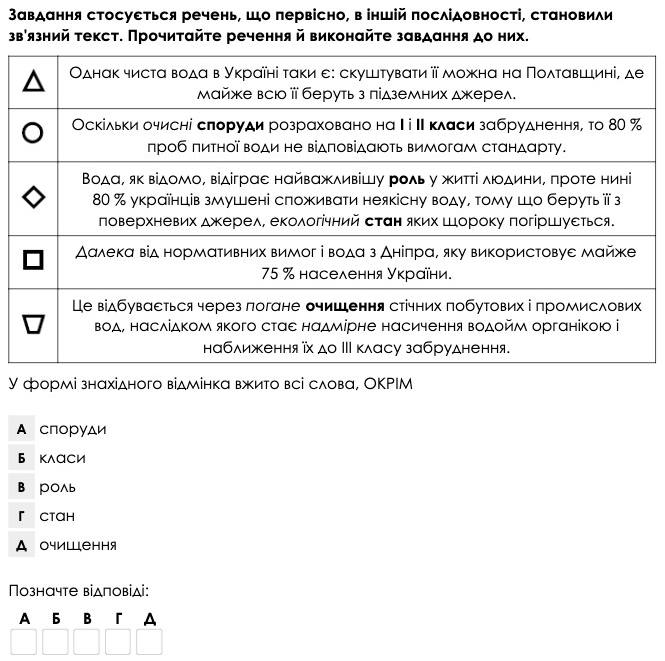
А споруди — (розраховано) що? знахідний
Б класи — на що? знахідний
В роль — відіграє що? знахідний
Г стан ✓ — стан погіршується: це підмет, називний
Д очищення — через що? знахідний
Відповідь: Г
🔍 Як перевірити: Знайди в реченні присудок і постав питання: якщо слово — підмет (хто? що? робить), то це називний; якщо на нього спрямована дія (бачу що?), — знахідний.
2. У формі знахідного відмінка вжито всі слова, ОКРІМ
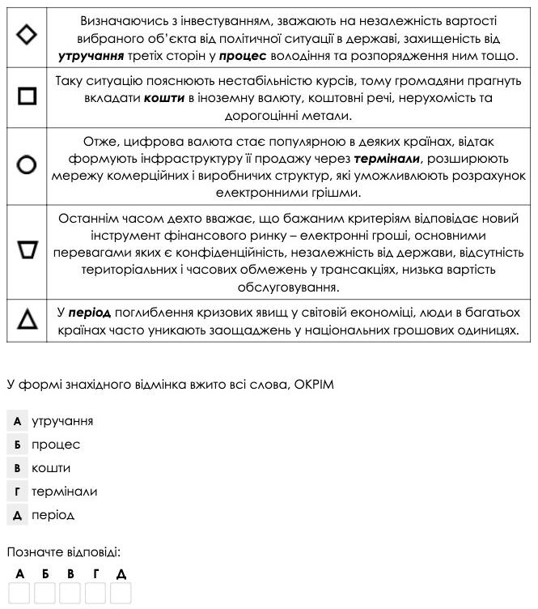
А утручання ✓ — захищеність від чого? родовий
Б процес — у що? знахідний
В кошти — вкладати що? знахідний
Г термінали — через що? знахідний
Д період — у що? знахідний
Відповідь: А
🔍 Як перевірити: Прийменник «від» вимагає родового відмінка, а «у», «через» з рухом чи часом — знахідного.
3. У формі знахідного відмінка вжито слово
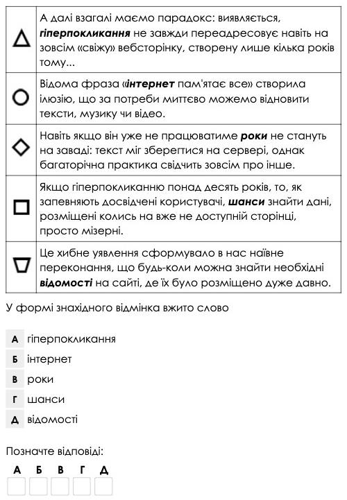
А гіперпокликання — підмет, називний
Б інтернет — підмет, називний
В роки — підмет (роки не стануть), називний
Г шанси — підмет, називний
Д відомості ✓ — знайти що? знахідний
Відповідь: Д
🔍 Як перевірити: У множині називний і знахідний збігаються («роки», «шанси»), тож дивись на роль у реченні: підмет чи додаток.
4. У формі називного відмінка вжито слово
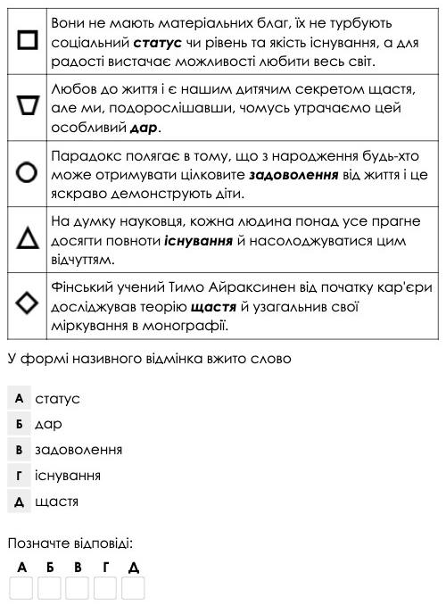
А статус ✓ — їх не турбують (що?) статус: підмет
Б дар — утрачаємо що? знахідний
В задоволення — отримувати що? знахідний
Г існування — повноти чого? родовий
Д щастя — теорію чого? родовий
Відповідь: А
🔍 Як перевірити: Підмет завжди в називному. «Їх не турбують статус чи рівень» — що не турбує? статус.
🧩 Завдання ЗНО: визначення відмінка іменника в тексті (11)
1. Текст про Люко Дашвар. У формі знахідного відмінка вжито всі виділені слова, ОКРІМ
А жінок — пише правду (про кого?) про жінок, Зн. в. ✗
Б людей — «зліплює» (кого?) людей, Зн. в. ✗
В історії — «виходять історії», підмет, Н. в. ✓
Г романи — (що?) знаєш романи, Зн. в. ✗
Відповідь: В
Підмет завжди стоїть у називному відмінку: «виходять (що?) історії».
2. Текст про Івана Малковича. У формі називного відмінка вжито слово
А пропозиції — незважаючи на (що?) пропозиції, Зн. в. ✗
Б видавництва — стане (ким?) … (чого?) видавництва, Р. в. ✗
В друкарні — не залишатиме (чого?) друкарні, Р. в. ✗
Г книги — «Створені тут книги … — витвори», підмет, Н. в. ✓
Відповідь: Г
Після дієслова із заперечною часткою «не» додаток часто стоїть у родовому відмінку: не залишатиме друкарні.
3. Текст про розділові знаки. У формі називного відмінка вжито іменник
А фрази — шукаючи (що?) фрази, Зн. в. ✗
Б події — «жодні події не цікавили її», підмет, Н. в. ✓
В вчинки — пояснювати (що?) вчинки, Зн. в. ✗
Г знаки — бережіть (що?) знаки, Зн. в. ✗
Відповідь: Б
Форми Н. і Зн. в. неістот у множині збігаються — розрізняємо за роллю в реченні: підмет чи додаток.
4. Текст про пасіку. У називному відмінку вжито іменник
А хвилі — сонце кидає (що?) хвилі, Зн. в. ✗
Б бджоли — «золоті бджоли бринять», підмет, Н. в. ✓
В руки — торкнулося (чого?) руки, Р. в. ✗
Г подих — затамувавши (що?) подих, Зн. в. ✗
Відповідь: Б
5. Текст про посуху. У знахідному відмінку вжито іменник
А дні — «минали дні», підмет, Н. в. ✗
Б степи — «степи втрачали», підмет, Н. в. ✗
В барви — втрачали (що?) барви, Зн. в. ✓
Г хмари — ріжечок (чого?) хмари, Р. в. ✗
Відповідь: В
6. Текст про неаполітанську школу. У називному відмінку вжито іменник
А світанки — «Старечі світанки, жовті, як пергамент…!» — називне речення, Н. в. ✓
Б катастрофи — у переддень (чого?) катастрофи, Р. в. ✗
В школи — на картинах (чого?) школи, Р. в. ✗
Г конфітюри — куштує (що?) конфітюри, Зн. в. ✗
Відповідь: А
Головний член називного речення завжди стоїть у називному відмінку.
7. Текст про українську історію. У називному відмінку вжито виділене слово
А роль — відвівши (що?) роль, Зн. в. ✗
Б руки — заламувати (що?) руки, Зн. в. ✗
В серце — хапатися за (що?) серце, Зн. в. ✗
Г постаті — «є постаті непересічні», підмет, Н. в. ✓
Відповідь: Г
8. Текст про музей Павла Тичини. У формі знахідного відмінка вжито іменник
А шедеври — відкриває (що?) шедеври, Зн. в. ✓
Б хранителі — «хранителі кажуть», підмет, Н. в. ✗
В автографи — «зібрані автографи», підмет, Н. в. ✗
Г малюнки — «зібрані … малюнки», підмет, Н. в. ✗
Відповідь: А
При дієприкметнику «зібрані» в ролі присудка іменники — підмети, тобто Н. в.
9. Текст про точний час. У ролі підмета вжито виділене слово
А час — «було запроваджено час»: безособове речення, додаток ✗
Б сигнал — «цей сигнал означав», підмет ✓
В початок — означав (що?) початок, додаток ✗
Г хронометр — звіряти (що?) хронометр, додаток ✗
Відповідь: Б
У реченнях із формою на -но/-то підмета немає: іменник при ній — додаток у Зн. в.
10. Текст про експеримент Густава ІІІ. У формі називного відмінка вжито виділене слово
А експеримент — наказав провести (що?) експеримент, Зн. в. ✗
Б вирок — замінили (що?) вирок, Зн. в. ✗
В умови — створили (що?) умови, Зн. в. ✗
Г кандидати — «обидва кандидати … топтали ряст», підмет, Н. в. ✓
Відповідь: Г
11. Текст про метод «дама з крильцями». У називному відмінку вжито слово
А процес — «Цей процес має асоціюватися», підмет, Н. в. ✓
Б безлад — докоряйте за (що?) безлад, Зн. в. ✗
В порядок — наводимо (що?) порядок, Зн. в. ✗
Г мотлох — викиньте (що?) мотлох, Зн. в. ✗
Відповідь: А
🧩 Завдання ЗНО: орудний відмінок однини (11)
1. Закінчення -ю в орудному відмінку однини треба писати в усіх іменниках рядка
А папороть, лють, насип ✗ → насип ч. р.: насипом
Б бандероль, ступінь, путь ✗ → ступінь ч. р.: ступенем
В радість, емаль, нежить ✗ → нежить ч. р.: нежитем
В особа, перемога, ескадрилья, лелека ✗ — ескадрилей (-ей)
Г мрія, ліщина, стаття, хиба ✗ — статей (-ей)
Д чаша, лопата, сім’я, земля ✗ — сімей
Відповідь: Б
У «галерей» й належить до основи (галере[й-а]), тож закінчення нульове. Рядок Д спірний: «сімей» теж можна розібрати з нульовим закінченням, але за ключем ЗНО правильна відповідь Б.
2. Граматичну помилку допущено в рядку
А порада вчителя ✗
Б посада керівника ✗
В нові паспорта — треба: нові паспорти ✓
Г сьоме грудня ✗
Д давній сусіда ✗
Відповідь: В
Іменники чоловічого роду в Н. в. множини мають -и (-і): паспорти, директори, професори.
3. Граматичну помилку допущено в словосполученні
А сто кілограмів ✗
Б незручних туфель ✗
В барвистих ярмарок — треба: ярмарків ✓
Г багатоповерхових готелів ✗
Д запалення легень ✗
Відповідь: В
Ярмарок — чоловічого роду, тож Р. в. мн. — ярмарків.
4. Неправильно утворено форму слова у варіанті
А познімали пальта ✗
Б у чистім полі ✗
В усих учасників — треба: усіх учасників ✓
Г стежачи за дітьми ✗
Д упродовж доби ✗
Відповідь: В
5. Неправильно утворено форму слова у варіанті
А морських узбережжів — треба: узбереж ✓
Б на твоєму моніторі ✗
В хочуть навчатися ✗
Г згідно з постановою ✗
Відповідь: А
Іменники середнього роду на -я з подовженням мають у Р. в. мн. нульове закінчення: узбережжя — узбереж, обличчя — облич.
6. Неправильно утворено форму слова у варіанті
А їздити по понеділкам — треба: щопонеділка / по понеділках ✓
Б вісім десятих кілограма ✗
В виголосить промову ✗
Г задля спільної вигоди ✗
Відповідь: А
Прийменник «по» з множиною вживаємо з місцевим відмінком: по понеділках, по вулицях.
7. Неправильно утворено форму слова у варіанті
А тривалих подорожів — треба: подорожей ✓
Б менш досвідчений пілот ✗
В на твоїм моніторі ✗
Г хочуть долучитися ✗
Відповідь: А
Подорож — жіночого роду ІІІ відміни: Р. в. мн. — подорожей.
8. Неправильно утворено форму слова у варіанті
А познімали пальта ✗
Б у чистім полі ✗
В найбільш новіший — треба: найновіший / найбільш новий ✓
Г стежачи за дітьми ✗
Відповідь: В
Не можна поєднувати дві форми ступеня: «найбільш» + «-іш-».
А Інформацію про надходження нових товарів можна отримати у продавця-консультанта. ✗
Б Розпочинається сезонний розпродаж зимових пальто. — треба: зимових пальт ✓
В Пропозиції покупців буде обов’язково передано виробникам. ✗
Г У неділю магазин працює з десятої години. ✗
Д На нашому масиві відкрито новий супермаркет. ✗
Відповідь: Б
Слово пальто в українській мові відмінюється: пальта, у пальті, Р. в. мн. — пальт.
13. Закінчення -а має іменник у рядку
А станції харківського метр.. ✗ — метро не відмінюється
Б майстри поетичного кін.. ✗ — кіно не відмінюється
В картини Марії Приймаченк.. ✗ — жіноче прізвище на -ко не відмінюється
Г звернутися до туристичного бюр.. ✗ — бюро не відмінюється
Д ґудзики до нового пальт.. — пальта ✓
Відповідь: Д
14. Речення «Лише частина студентів … опанувати правила вимови …, хоч Оксана Семенівна, як досвідчений викладач, … цій темі чимало часу». Правильний варіант
А змогли, важкими французькими звуками, приділила ✗
Б змогла, важкими французькими звуками, приділив ✗
В змогли, важких французьких звуків, приділив ✗
Г змогли, важкими французькими звуками, приділила ✗
Д змогла, важких французьких звуків, приділила ✓
Відповідь: Д
«Частина (що зробила?) змогла»; вимови (чого?) звуків; присудок узгоджуємо з підметом Оксана Семенівна — приділила.
15. «На практичних заняттях студенти опанували … вимови …». Правильний варіант
А правила, важкими французькими звуками ✗
Б правилами, важким французьким звукам ✗
В правил, важкими французькими звуками ✗
Г правилами, важких французьких звуків ✗
Д правила, важких французьких звуків ✓
Відповідь: Д
Опанувати (що?) правила — без прийменника й без орудного; вимова (чого?) звуків.
16. «…У нашій програмі – цікаво про роботу кожного … української економіки. Сьогодні спілкуємося з … Петренком… багато хто з наших … має право на доплату… в кожній із … господарства». Правильний варіант
А коліща, Ігорем, співгромадян, галузей ✗
Б коліщати, Ігором, співгромадян, галузей ✗
В коліщати, Ігорем, співгромадянів, галузей ✗
Г коліщати, Ігорем, співгромадян, галузей ✓
Д коліщати, Ігорем, співгромадян, галузів ✗
Відповідь: Г
Коліща — коліщати (як кошеня — кошеняти); Ігор — Ігорем; громадяни — громадян; галузь (ж. р.) — галузей.
17. «Старшокласники подякували … за … новину й розбіглися по …, (і) лише … залишилися». Правильний варіант (у ЗНО двічі)
А Людмилі Володимирівні, класах (кабінетах), троє учениць ✗
Б Людмилу Володимирівну, класах (кабінетах), три учениці ✗
В Людмилі Володимирівній, класам (кабінетам), троє учениць ✗
Г Людмилі Володимирівні, класах (кабінетах), три учениці ✓
Д Людмилі Володимирівні, класам, три учениці ✗
Відповідь: Г
Подякувати (кому?) Людмилі Володимирівні; по + М. в.: по класах; збірні числівники з іменниками жіночого роду не вживаємо — три учениці. У варіанті з «кабінетах» відповідь Д (опції переставлено).
18. «Запрошуємо на тренінг…, де Вас навчать … якісного художнього тексту… в зошитах, створених … культової книги». Правильний варіант (у ЗНО тричі)
А усіх секретів (тонкощів), по мотивам ✗
Б усіма секретами (тонкощами), по мотивах ✗
В усім секретам (тонкощам), за мотивами ✗
Г усім секретам (тонкощам), по мотивам ✗
Д усіх секретів (тонкощів), за мотивами ✓
Відповідь: Д
Навчати (кого?) когось (чого?) чогось — Р. в.; створений за мотивами (не «по мотивам»). В одному варіанті «секретів побудови», в іншому «тонкощів» — відповідь та сама.
19. «Іменинниця попросила своїх … налаштуватися на … дійство». Правильний варіант
А гостей, захоплене ✗
Б гостів, захоплююче ✗
В гостів, захопливе ✗
Г гостів, захоплююче ✗
Д гостей, захопливе ✓
Відповідь: Д
Гість — гостей (Р. і Зн. в. мн.); активні дієприкметники на -уч- (захоплююче) — ненормативні.
20. «Ми навчимо вас … впливу на потенційного працедавця і розкриємо секрети того, як створити … резюме». Правильний варіант
А дієвим прийомам, якісну ✗
Б дієвих прийомів, якісний ✗
В дієвим прийомам, якісний ✗
Г дієвих прийомів, якісну ✗
Д дієвих прийомів, якісне ✓
Відповідь: Д
Навчити (чого?) прийомів; резюме — середнього роду.
21. «Зустрінемось … біля пам’ятника …». Правильний варіант
А у пів сьомої, Лесі Українки ✗
Б о пів на сьому, Лесі Українці ✓
В о пів по шостій, Лесі Українки ✗
Г у шість тридцять, Лесі Українки ✗
Д у пів до сьомої, Лесі Українці ✗
Відповідь: Б
Пам’ятник (кому?) Лесі Українці — Д. в.; час: о пів на сьому.
22. «У кожній із … виробництва нагородами були відзначені … підприємці». Правильний варіант (у ЗНО двічі)
А галузей, найкращі ✓
Б галузів, самі кращі ✗
В галузей, найбільш кращі ✗
Г галузі, якнайкращі ✗
Д галузів, щонайкращі ✗
Відповідь: А
Галузь — ж. р., Р. в. мн. — галузей; «самі кращі», «найбільш кращі» — ненормативні.
23. «Невдовзі мама з … виїхали на заміську трасу, до … залишалося п’ятдесят чотири …». Правильний варіант
А Ігором, Житомиру, кілометрів ✗
Б Ігорем, Житомира, кілометри ✓
В Ігорєм, Житомиру, кілометра ✗
Г Ігорьом, Житомира, кілометра ✗
Д Ігорем, Житомиру, кілометри ✗
Відповідь: Б
Назви міст на -ир мають -а: Житомира; після «чотири» — Н. в. мн.: кілометри.
24. «Сашко … однокласників подякував … за цікаву поїздку». Правильний варіант
А на прохання, екскурсовода ✗
Б за проханням, екскурсовода ✗
В за проханням, екскурсоводу ✗
Г по проханню, екскурсовода ✗
Д на прохання, екскурсоводові ✓
Відповідь: Д
Подякувати (кому?) — Д. в.: екскурсоводові; нормативно — «на прохання».
25. «Повідомляти … курсів водіння про … наслідки порушень…, як і навчати … дорожнього руху». Правильний варіант (у ЗНО двічі)
А слухачам, самі ймовірні, правил ✗
Б слухачів, найбільш імовірніші, правилам ✗
В слухачів, найімовірніші, правил ✓
Г слухачам, найімовірні, правилам ✗
Д слухачів, найбільш імовірні, правилам ✗
Відповідь: В
Повідомляти (кого?) слухачів; навчати (чого?) правил. В іншому варіанті опції переставлено — там відповідь Д.
26. «Цьогоріч … чотири … смородини на … ділянку». Правильний варіант
А пересаджу, куща, більш світлу ✗
Б пересажу, кущі, більш світлішу ✗
В пересажду, куща, більш світлу ✗
Г пересаджу, кущі, світлішу ✓
Д пересаджу, кущів, світлішу ✗
Відповідь: Г
Після «два, три, чотири» — Н. в. мн.: кущі; садити — саджу.
27. «На будівництво стратегічно важливих … планують витратити до … мільярдів гривень». Правильний варіант
А автомагістралей, ста вісімдесяти сіми ✗
Б автомагістралів, ста вісімдесяти семи ✗
В автомагістралей, ста восьмидесяти семи ✗
Г автомагістралів, ста вісімдесятьох сімох ✗
Д автомагістралей, ста вісімдесяти семи ✓
Відповідь: Д
Магістраль — ж. р.: магістралей.
28. «Екскурсовод звернувся до … з пропозицією роздивитися копію … наочного посібника …». Правильний варіант
А відвідувачів, найдавнішішого, по математиці ✗
Б відвідувачей, найбільш давнішого, по математиці ✗
В відвідувачів, найдавнішого, з математики ✓
Г відвідувачей, найбільш давнього, по математиці ✗
Д відвідувачів, самого давнього, з математики ✗
Відповідь: В
Відвідувач — відвідувачів; посібник (з чого?) з математики.
29. «Мета проєкту – мотивувати киян і … столиці прогулятися … в пошуках …». Правильний варіант
30. «Меценати розвезли по … міста оновлене видання … повістей …». Правильний варіант
А книгарням, шевченківських, українською мовою ✗
Б книгарням, Шевченкових, українською мовою ✗
В книгарнях, шевченківських, на українській мові ✗
Г книгарням, Шевченкових, на українській мові ✗
Д книгарнях, Шевченкових, українською мовою ✓
Відповідь: Д
По + М. в. мн.: по книгарнях; повісті, написані Шевченком, — Шевченкові (присвійний прикметник).
31. «На станції успішно проводять наукові дослідження …: наприклад, за рівнем атмосферного … фахівці здійснюють спостереження, які у світі є …». Правильний варіант
А по різним напрямам, озона, більш тривалішими ✗
Б по різних напрямах, озону, самими тривалими ✗
В за різними напрямами, озону, найтривалішими ✓
Г по різних напрямах, озона, найбільш тривалішими ✗
Д за різними напрямами, озону, самими тривалішими ✗
Відповідь: В
Озон — речовина, тому Р. в. — озону.
32. «Прибережні води, материк та … до нього … об’єднані назвою Антарктика та окреслені зовнішньою …». Правильний варіант
А прилягаючі, острови, межою ✗
Б прилягаючі, острови, межею ✗
В прилеглі, острова, межой ✗
Г прилягаючі, острова, межою ✗
Д прилеглі, острови, межею ✓
Відповідь: Д
Межа — мішана група: межею; острів — острови.
33. Фемінітиви із суфіксом -к- можна утворити від усіх слів, ОКРІМ
А вчитель — вчителька ✗
Б археолог — археологиня (суфікс -ин-) ✓
В абітурієнт — абітурієнтка ✗
Г репортер — репортерка ✗
Відповідь: Б
Від основ на г, к, х (археолог, психолог) фемінітиви утворюємо суфіксом -ин(я).
72🎯 Дієслово за контекстом: типові пастки
«Незважаючи» проти «не дивлячись»: «незважаючи» вживається з явищами, обставинами, погодою («незважаючи на вітер», «незважаючи на погоду», «незважаючи на втому», «незважаючи на обставини»); «не дивлячись» стосується буквального фізичного процесу дивитися (наприклад, не дивлячись на когось).
«Здобувають» проти «отримують»: щось абстрактне здобувають (перемогу, славу), тоді як щось конкретне отримують (стипендію, пакунок).
Дієслово залежить від об’єкта: газету розгортають (а не відкривають), ворота відчиняють (а не відкривають), а підсерію чи новий проєкт — саме відкривають.
🧩 Завдання ЗНО: вживання дієслівних форм (14)
1. Позначте рядок, у якому всі дієслова недоконаного виду
А зберігати, ходити, гарантувати, зашивати ✓
Б писати, виконувати, скочити, знати — скочити (док.) ✗
В поважати, залежати, зашити, думати — зашити (док.) ✗
Г атакувати, перенести, сидіти, просити — перенести (док.) ✗
«Гарантувати» двовидове, тож може бути й недоконаного виду.
2. Позначте рядок, у якому всі слова належать до дієслів (включно з особливими формами)
А крикніть, кричиш, крикливий, покрикувати — крикливий (прикм.) ✗
Б переходячи, переходив би, перехідний, переходьте — перехідний (прикм.) ✗
В перемігши, перемогти, переможний, переможено — переможний (прикм.) ✗
Г учити, навчивши, учений, учіться — учений (прикм./ім.) ✗
Д запечений, запік би, запікаючи, запікся ✓
Відповідь: Д
Дієприкметник (запечений) і дієприслівник (запікаючи) — особливі форми дієслова.
3. Правильно вжито дієслівну форму в реченні (у ЗНО двічі)
А Чи ти дасиш мені олівець? ✗ → даси
Б Стань у центрі кімнати. ✗
В Парламент ухвале це рішення. ✗ → ухвалить
Г Давай зустрінемся о шостій. ✗ → зустріньмося
Д Ходімте на вулицю. ✓
Відповідь: Д
Ключ — Д. Речення Б граматично правильне, проте щодо кімнати стилістично краще «посередині»; цим, імовірно, і пояснюють його відхилення.
4. Правильно вжито дієслівну форму в реченні
А Ходімте швидше на вершину цієї гори! ✗
Б Ідемте до найближчої тролейбусної зупинки! ✗ → ходімо / ідімо
В Багато хто поміте недоліки цього видання. ✗ → помітить
Г Обов’язково дасиш мені свою електронну адресу. ✗ → даси
Д Почнімо перегляд газети із заголовків. ✓
Відповідь: Д
Найімовірніший ключ — Д. Форма «ходімте» (А) теж нормативна, тож завдання некоректне: у джерелі, мабуть, спотворено варіант А.
5. Неправильно утворено форму слова у варіанті
А познімали пальта ✗
Б у чистім полі ✗
В усих учасників → усіх ✓
Г стежачи за дітьми ✗
Д упродовж доби ✗
Відповідь: В
6. Неправильно утворено форму слова у варіанті
А морських узбережжів → узбереж ✓
Б на твоєму моніторі ✗
В хочуть навчатися ✗
Г згідно з постановою ✗
Відповідь: А
Іменники середнього роду на -я з подовженням мають у родовому множини нульове закінчення: узбережжя → узбереж.
7. Неправильно утворено форму слова у варіанті
А їздити по понеділкам → по понеділках / щопонеділка ✓
Б вісім десятих кілограма ✗
В виголосить промову ✗
Г задля спільної вигоди ✗
Відповідь: А
Прийменник «по» з місцевим відмінком у множині: по понеділках.
8. Неправильно утворено форму слова у варіанті
А два студенти ✗
Б самий головний → найголовніший ✓
В сімома голосами ✗
Г віддаси потім ✗
Відповідь: Б
9. Неправильно утворено форму слова у варіанті
А пане Костянтине ✗
Б для всіх дослідників ✗
В восьмидесяти років → вісімдесяти ✓
Г візьмімо участь ✗
Відповідь: В
10. Помилково вжито слово в рядку
А брати участь ✗
Б здавати іспит → складати іспит ✓
В додати води ✗
Г завдати шкоди ✗
Відповідь: Б
Ключ — Б: шкільна норма розрізняє «складати іспит» (студент) і «приймати іспит» (викладач). Сучасні словники допускають і «здавати іспит», тож завдання спірне.
В …у якусь екзотичну місцевісць, так і чи мало довідатися… ✗ → місцевість, чимало
Г …мабудь, точно щось цікаве… ✗ → мабуть
Відповідь: А
73👤 Невідмінювані прізвища та слова
Слова іншомовного походження з кінцевим голосним («журі», «меню», «кіно», «радіо») не змінюються за відмінками. До цієї ж групи належать:
жіночі прізвища, що закінчуються на приголосний або на «-о» («Тетяна Коваль», «Олена Петренко») — «я побачив Тетяну Коваль», «пишаюся Тетяною Коваль»;
більшість складноскорочених слів — «вступити до ВНЗ», «збудувати ГЕС».
Контраст: чоловічі прізвища відмінюються
Чоловічі прізвища на «-о» або на приголосний, на відміну від жіночих, відмінюються: «Тараса Шевченка» (але «Олени Шевченко»); «передав матеріал Юрію Андруховичу» (але «передав Софії Андрухович», «пишаюся Софією Андрухович» — жіноче прізвище на приголосний не змінюється).
Слово «пальто» відмінюється («пальто», «нема пальта», «прийшов у пальті»), так само як «ситро» («нема ситра») — на відміну від справді незмінюваних слів.
Тестове завдання з трьома пропусками одразу на кілька орфограм — приклад формату, який може з’явитися на НМТ 2025: «демонстрація модних пальт» (не «пальто» — слово змінюється), «нової колекції Тараса Демиденка» (чоловіче прізвище на «-о» змінюється), «відбудеться через півтора місяця».
Узгодження числівника «півтора»/«півтори»
Числівник узгоджується з іменником у родовому відмінку однини. Форма «півтора» — для іменників чоловічого й середнього роду: «півтора місяця», «півтора будинка», «півтора долара», «півтора стола». Форма «півтори» — для іменників жіночого роду: «півтори гривні», «півтори квартири», «півтори тонни».
75🧾 Завдання: відмінювання прізвищ
Серед варіантів «вдячність Ірині Савченко», «концерт Олега Білоноженка», «офіс Марини Козачук», «практикум Івана Ющука», «роман Олександра Дюма» — усі коректні; «Білоноженка» показує, що чоловіче прізвище на «-о» відмінюється правильно, а «Дюма» — французьке прізвище, яке не відмінюється.
Степан Радченко, Жорж Дюруа, Гі де Мопассан: «Дюруа» закінчується на голосний і не відмінюється («Дюруа», «з Дюруа»); «Мопассан» закінчується на приголосний і відмінюється («Гі де Мопассана»), так само як «Зідан» («немає Зінедіна Зідана»); українське «Радченко» відмінюється — «в образі Степана Радченка».
Помилка була у варіанті «розмова з Олегом Плющ» — чоловіче прізвище «Плющ» відмінюється: «Олегом Плющем» (жіночі прізвища «Гриців», «Гончарук» на приголосний не змінюються).
Помилка була у варіанті «виступ Юрія Трояненка» — чоловіче прізвище «Трояненко» у родовому відмінку має закінчення «-а»: «Трояненка», не «Трояненко».
«Карпо Кайдаш» і «Грицько Бобренко» (чоловічі імена та прізвища) відмінюються: «Карпа Кайдаша», «з Грицьком Бобренком»; жіноче прізвище «Ліна Костенко» не змінюється: «роману... Ліни Костенко».
Помилка була у варіанті «інтерв’ю з Олександром Панасюком» — ні, це коректно: чоловіче прізвище на приголосний відмінюється правильно.
🧩 Завдання ЗНО: відмінювання прізвищ та імен (12)
1. «… Тетяна з Андрієм … від екскурсовода, що Тарасові … встановлено тисячу двісті п’ятдесят шість … в Україні». Правильний варіант
А Вперше, дізналися, Шевченку, пам’ятники ✗
Б Уперше, дізналися, Шевченку, пам’ятників ✓
В Уперше, дізналася, Шевченко, пам’ятників ✗
Г Вперше, дізналася, Шевченко, пам’ятників ✗
Д Уперше, дізналися, Шевченку, пам’ятники ✗
Відповідь: Б
На початку речення перед приголосним — у: Уперше; при «Тетяна з Андрієм» присудок у множині; Тарасові Шевченку; після «шість» — Р. в. мн.: пам’ятників.
2. «Василина з Назаром … від екскурсовода, що Тарасові … встановлено тисячу шістдесят вісім … в Україні». Правильний варіант
А дізналися, Шевченко, пам’ятники ✗
Б дізналися, Шевченку, пам’ятники ✗
В дізналася, Шевченку, пам’ятника ✗
Г дізналася, Шевченко, пам’ятників ✗
Д дізналися, Шевченку, пам’ятників ✓
Відповідь: Д
Чоловіче прізвище на -ко відмінюється: Шевченку; після «вісім» — Р. в. мн.
3. Помилку у відмінюванні іменника допущено в рядку
А розмова з Олегом Плющ — треба: з Олегом Плющем ✓
Б гаманець Мар’яни Гриців ✗
В телефон Артема Сидька ✗
Г зустріч з Ганною Гончарук ✗
Д робота Данила Федоренка ✗
Відповідь: А
Чоловічі прізвища на приголосний відмінюються, жіночі — ні (Гриців, Гончарук).
4. «Керівника туристичного гуртка Олексія … повідомили про те, що за півтора … занять група учнів … орієнтуватися …». Правильний варіант
А Пономаренко, місяці, навчилась, по зірках ✗
Б Пономаренка, місяця, навчилась, за зірками ✓
В Пономаренка, місяці, навчились, по зіркам ✗
Г Пономаренко, місяця, навчились, за зірками ✗
Д Пономаренка, місяця, навчились, по зіркам ✗
Відповідь: Б
Олексія Пономаренка; півтора місяця (Р. в. однини); «група» — присудок в однині; орієнтуватися за зірками.
5. Помилку у відмінюванні іменників допущено в рядку
А вдячність Ірині Савченко ✗
Б концерт Олега Білоноженко — треба: Олега Білоноженка ✓
В офіс Марини Козачук ✗
Г практикум Івана Ющука ✗
Д роман Олександра Дюма ✗
Відповідь: Б
Прізвища на -ко: чоловічі відмінюються, жіночі — ні; іншомовні на -а з наголосом в кінці (Дюма) не відмінюються.
6. «Демонстрація … нової колекції … відбудеться через …». Правильний варіант (Віктор Ткаченко)
А пальт, Віктора Ткаченка, півтора місяця ✓
Б пальто, Віктора Ткаченка, півтора місяця ✗
В пальт, Віктора Ткаченко, півтора місяця ✗
Г пальт, Віктора Ткаченка, півтора місяці ✗
Д пальт, Віктора Ткаченка, півтори місяця ✗
Відповідь: А
Пальто — пальт; Ткаченко — Ткаченка; місяць — ч. р., тому півтора місяця.
7. «Демонстрація модних … нової колекції … відбудеться через …». Правильний варіант (Тарас Демиденко) (у ЗНО тричі)
А пальт, Тараса Демиденка, півтори місяці ✗
Б пальто, Тараса Демиденко, півтора місяця ✗
В пальто, Тараса Демиденка, півтора місяців ✗
Г пальт, Тараса Демиденко, півтора місяці ✗
Д пальт, Тараса Демиденка, півтора місяця ✓
Відповідь: Д
Після «півтора» — Р. в. однини: півтора місяця.
8. «У теплицях … вирощують близько … сортів … помідорів». Правильний варіант
А Дмитра Білоусько, двадцяти, щонайбільш смачних ✗
Б Дмитра Білоуська, двадцять, найбільш смачних ✗
В Дмитра Білоуська, двадцяти, найбільш смачніших ✗
Г Дмитра Білоусько, двадцять, якнайсмачніших ✗
Д Дмитра Білоуська, двадцяти, найсмачніших ✓
Відповідь: Д
Білоусько — Білоуська; близько (чого?) двадцяти.
9. «В образі … вбачаємо схожість із красунчиком … – героєм роману …». Правильний варіант
А Степана Радченко, Жорж Дюруа, Гі де Мопассана ✗
Б Степана Радченко, Жоржем Дюруа, Гі де Мопассан ✗
В Степана Радченка, Жоржем Дюруа, Гі де Мопассан ✗
Г Степана Радченка, Жоржем Дюруа, Гі де Мопассана ✓
Д Степана Радченка, Жорж Дюруа, Гі де Мопассана ✗
Відповідь: Г
Ім’я Жорж і прізвище Мопассан відмінюються; Дюруа (на -а з наголосом) — ні.
10. «У п’єсі Івана … є два …, які зображені …». Правильний варіант
А Карпенка-Карого, персонажа, більш оригінально ✗
Б Карпенка-Карого, персонажів, більш оригінальніше ✗
В Карпенко-Карого, персонажа, найбільш оригінально ✗
Г Карпенко-Карого, персонажі, найбільш оригінальніше ✗
Д Карпенка-Карого, персонажі, найбільш оригінально ✓
Відповідь: Д
У подвійному прізвищі відмінюються обидві частини; іменники ІІ відміни після «два» з наголосом на закінченні в мн. — у Н. в. мн.: два персонажі.
11. «Омелько й Націєвський – це два колоритні … з трагікомедії «Мартин Боруля» Івана …». Правильний варіант
А персонажі, Карпенка-Карого ✓
Б персонажи, Карпенко-Карого ✗
В персонажі, Карпенко-Карого ✗
Г персонажа, Карпенко-Карого ✗
Д персонажа, Карпенка-Карого ✗
Відповідь: А
12. НЕМАЄ помилки в рядку
А зустріти Петренко Віктора Григоровича ✗ → Петренка
Б подарувати Крук Анастасії Миколаєвні ✗ → Миколаївні
В порадитися із Царук Іваном Савовичем ✗ → Царуком
Г запитати в Назарука Дениса Ігорьовича ✗ → Ігоровича
Д звернутися до Ткаченко Ірини Іллічни ✓
Відповідь: Д
Жіноче прізвище Ткаченко не відмінюється. Сучасна норма по батькові від Ілля — Іллівна, тому завдання спірне: за ключем ЗНО, найімовірніше, Д, бо інші рядки мають явні помилки.
76👪 По батькові: творення форм
Чоловічі форми найчастіше утворюються суфіксом «-ович» (Дмитро → Дмитрович, Олексій → Олексійович), жіночі — суфіксами «-івна»/«-ївна» (Дмитро → Дмитрівна, Олексій → Олексіївна).
Особливі форми (винятки)
Ім’я
Чоловіче по батькові
Жіноче по батькові
Ілля
Ілліч
Іллівна
Лука
Лукич
Луківна
Яків
Якович
Яківна
Кузьма
Кузьмич або Кузьмович
Кузьмівна
Сава
Савич або Савович
Савівна
Хома
Хомич або Хомович
Хомівна
Поширена помилка
Чоловічі форми по батькові не утворюються із суфіксом «-євич» (неправильно «Олексійєвич»), а жіночі — не із суфіксом «-євна» (неправильно «Анатолійєвна»).
77🧾 Завдання: по батькові
Форма «Ігорьович» (через м’який знак) — правильна; помилковий варіант в аналогічному тесті — «Ігоревич» замість «Віталійович».
Рядок без помилок: «В’ячеславівна», «Євгенович», «Кузьмич»; помилки в інших варіантах мали звучати як «Валерійович», «Ігорівна», «Іллівна», «Якович».
Рядок без помилок серед форм «Григорівна», «Савович», «Олексіївна», «Миколайович», «Павлівна», «Антонович», «Андріївна», «Васильович», «Юліанівна», «Іліч» — за зразком: чоловіча форма «Андрійович», жіноча «Андріївна».
Правильна форма по батькові в ще одному тесті — «Валеріївна».
🧩 Завдання ЗНО: імена по батькові (10)
1. Помилку в написанні імені по батькові допущено в рядку
А Валентинівна, Аркадіївна, Ігорівна
Б Васильович, Миколайович, Юрієвич → Юрійович ✓
В Олексіївна, Дмитрівна, Олександрівна
Г Якович, Святославович, Анатолійович
Відповідь: Б
Чоловічі імена по батькові утворюємо суфіксом -ович: Юрій → Юрійович.
2. Правильно утворено всі імена по батькові в рядку (у ЗНО двічі)
А Юрійович, Петрівна, Валерієвич ✗ → Валерійович
Б В’ячеславівна, Євгенович, Кузьмич ✓
В Святославович, Матвійович, Ігоревна ✗ → Ігорівна
Г Іванівна, Іллінічна, Геннадійович ✗ → Іллівна
Д Арсенівна, Яківович, Романівна ✗ → Якович
Відповідь: Б
Особливі форми: Яків → Якович, Яківна; Ілля → Ілліч, Іллівна; Кузьма → Кузьмич (також Кузьмович), Кузьмівна.
3. Неправильно утворено ім’я по батькові
А Степанівна
Б Геннадієвич → Геннадійович ✓
В Орестівна
Г Ігорович
Д Олександрівна
Відповідь: Б
Суфікс -євич/-ович: в українській мові лише -ович.
4. Помилку в написанні імені по батькові допущено в рядку
А Тарасович, Євгенович, Юрійович
Б Віталієвич, Ігорович, Степанівна → Віталійович ✓
В Андрійович, Миронівна, Васильович
Г Анатолійович, Микитович, Савівна
Д Григорович, Іллівна, Миколайович
Відповідь: Б
5. Помилку в утворенні імені по батькові допущено в рядку
А Григорівна, Савович
Б Олексіївна, Миколайович
В Павлівна, Антонович
Г Андрієвна, Васильович → Андріївна ✓
Д Юліанівна, Ілліч
Відповідь: Г
Жіночі імена по батькові утворюємо суфіксом -івн(а) (-ївн(а)). Від імені Сава в посібниках подають і Савич, і Савович; укладачі завдання вважали «Савович» правильним.
6. Правильно утворено жіноче ім’я по батькові
А Юрійовна ✗ → Юріївна
Б Ігоревна ✗ → Ігорівна
В Андріївна ✓
Г Валерієвна ✗ → Валеріївна
Д Марковна ✗ → Марківна
Відповідь: В
7. Правильно утворено всі імена по батькові в рядку (у ЗНО двічі)
А Едуардович, Ігорьович, Кузьмівна ✗ → Ігорович
Б Романович, Олексієвич, Микитівна — правильно було б Олексійович ✓
В Савівна, Андрієвна, Олександрович ✗ → Андріївна
Г Анатоліївна, Пилиповна, Петрович ✗ → Пилипівна
Відповідь: Б
У джерелі в кожному рядку є помилкова форма; найімовірніше, в оригіналі ЗНО рядок Б мав «Олексійович» (форма Олексієвич неправильна). Відповідь — найправдоподібніша.
8. Правильно утворено всі імена по батькові в рядку
А Іванівна, Іллінічна, Геннадійович ✗ → Іллівна
Б Святославович, Матвійович, Ігоревна ✗ → Ігорівна
В Юрійович, Арсенівна, Валерієвич ✗ → Валерійович
Г В’ячеславівна, Маркович, Кузьмович ✓
Відповідь: Г
Від імені Кузьма вживають і Кузьмич, і Кузьмович; інші рядки мають очевидні помилки.
9. Правильно утворено всі імена по батькові в рядку
А Олегович, Валер’ївна ✗ → Валеріївна
Б Іллівна, Олексієвич ✗ → Олексійович
В Ігорівна, Анатолійович ✓
Г Юр’євич, Віталіївна ✗ → Юрійович
Відповідь: В
Апостроф і -євич в іменах по батькові не вживаємо: Валерій → Валеріївна, Юрій → Юрійович.
10. Правильно утворені всі імена по батькові в рядку
А Григорійович, Савович, Ілліч ✗ → Григорович
Б Сергіївна, Матвієвна, Григорівна ✗ → Матвіївна
В Сергійович, Кузьмович, Лукич ✓
Г Ігорівна, Васильовна, Микитівна ✗ → Василівна
Відповідь: В
Від імені Григорій правопис подає Григорович, Григорівна; Лука → Лукич, Луківна.
🧩 Завдання ЗНО: ім’я по батькові у відмінках і кличний відмінок (5)
1. «Старшокласники подякували ___ за таку чудову новину й розбіглися по ___, і лише ___ залишилися…»
А Людмилі Володимирівні, кабінетах, троє учениць ✗
Б Людмилу Володимирівну, кабінетах, три учениці ✗
В Людмилі Володимирівній, кабінетам, троє учениць ✗
Г Людмилу Володимирівну, кабінетам, три учениці ✗
Д Людмилі Володимирівні, кабінетах, три учениці ✓
Відповідь: Д
Подякувати кому (Д. в.); розбіглися по кабінетах (М. в.); збірні числівники (троє) з назвами осіб жіночого роду не вживаємо.
У кличному відмінку змінюються і ім’я, і по батькові: Петре Миколайовичу; підпис — чоловічого роду.
3. «Нагадую, ___, що сьогодні о дванадцятій годині я ___ до Вас практикантів.»
А Миколо Геннадійовиче, привожджу ✗
Б Миколу Геннадійовиче, привожу ✗
В Миколо Геннадійовичу, приводжу ✓
Г Миколу Геннадійовичу, привожжу ✗
Д Микола Геннадійович, приводжу ✗
Відповідь: В
Чоловічі імена по батькові в кличному мають -у (Геннадійовичу); приводити → приводжу (д чергується з дж).
4. «…між міністром закордонних справ Великої Британії ___ та послом України в цій країні ___.»
А Девідом Девісом, Сергієм Комісаренком ✓
Б Девід Девісом, Сергій Комісаренко ✗
В Девідом Девіс, Сергійом Комісаренком ✗
Г Девід Девіс, Сергійом Комісаренко ✗
Д Девідом Девісом, Сергієм Комісаренко ✗
Відповідь: А
В О. в. відмінюються і ім’я, і прізвище; Сергій → Сергієм.
5. НЕПРАВИЛЬНО утворено форму кличного відмінка в реченні
А Дорога бабусю, дякую тобі…
Б Шановна Оксано Іванівно, запрошуємо Вас…
В Любий друже Ігорю, сподіваюся…
Г Дорога Маріє Петрівно, щиро вітаю Вас…
Д Вельмишановний пане директору, звертаюся до Вас… → пане директоре ✓
Відповідь: Д
Іменник «директор» у кличному має закінчення -е: директоре (як професоре); закінчення -у мають лише іменники з суфіксами -ик, -ок, -к та м’якої групи (друже — але Ігорю).
78📣 Кличний відмінок: правила творення
Жіночі імена
основа на твердий приголосний, закінчення «-а» (Ірина, Ольга, Світлана) → звертання на «-о»: Ірино, Ольго, Ганно, Ангеліно, Галино;
основа на «-й», закінчення «-я» (Марія, Софія, Юлія, Валерія) → звертання на «-є»: Маріє, Софіє, Юліє, Валеріє;
короткі форми з м’якою приголосною (Галя, Женя, Юля, Надя) → звертання на «-ю»: Галю, Женю, Юлю, Надю; особливі форми: Настя → Насте, Катря → Катре, але Катя → Катю;
імена на приголосний (Нінель, Любов) → форма звертання збігається з називним відмінком.
Чоловічі імена
на «-а» (Микола, Саша) → звертання на «-о»: Миколо, Сашо (ніколи не збігається з називним);
на «-о» в називному (Дмитро, Михайло, Павло, Петро) → звертання на «-е»: Дмитре, Михайле, Павле, Петре;
на приголосний (Вадим, Іван, Артур) → звертання на «-е»: Вадиме, Іване, Артуре;
на «-й» (Сергій, Олексій) → звертання на «-ю»: Сергію, Олексію;
особливі короткі форми: Федя → Федю, Саня → Саню, Марко → Марку, Жак → Жаку, Ілля (скорочена іншомовна форма) → Ілле.
Кличний відмінок входить до програми НМТ — детальніше про пастку з розрізненням називного й знахідного відмінків у розділі «Називний чи знахідний відмінок».
79🧾 Завдання: кличний відмінок
Комбінований тест: перший пропуск — кличний відмінок імені («Андрію»), другий — узгодження прикметника з родом невідмінюваного іменника «кольрабі» (жіночого роду, капуста): «сестра... приготувала кольрабі тушковану».
Звертання до двох імен і дієслово наказового способу: «Ілле... Насте... перед заняттям провітрімо кабінет».
Серед варіантів «Миколо», «Валерію Семеновичу», «друже», «братику», «пане професоре», «добродію», «Гринчишине» — усі коректні, форма з ім’ям і по батькові «Валерію Семеновичу» також правильна.
Серед варіантів «Тимофію», «Олено Петрівно», «Артуре», «Олексію», «Ольго», «Галю», «Юрію» — усі коректні, включно з «Олексію».
Серед варіантів «Ольго Козаченко», «Жанно Сергіївно», «Олю», «пані вчителько», «юна тренерко» — «Жанно Сергіївно» коректна форма по батькові в поєднанні з іменем.
На НМТ подібні комбіновані завдання можуть поєднувати кличний відмінок, рід іменника, форму по батькові або дієслово в одному тесті.
🧩 Завдання ЗНО: кличний відмінок (20)
1. Діалог Миколи та професора. НЕПРАВИЛЬНО утворено форму кличного відмінка в репліці
А 1 — Миколо, молодий чоловіче ✗
Б 2 — «Валеріє Семеновичу» — треба: Валерію Семеновичу ✓
В 3 — друже, братику ✗
Г 4 — пане професоре ✗
Д 5 — добродію Гринчишин ✗
Відповідь: Б
Чоловіче ім’я Валерій має кличну форму Валерію; «Валеріє» — від жіночого Валерія.
2. Усі іменники в кличному відмінку мають закінчення -е в рядку
7. Правильно утворено форму кличного відмінка іменників у всіх рядках, ОКРІМ
А Насте, Наталю, Стефаніє ✗
Б учителю, лікарю, викладачу ✗
В Олександре, Дмитре, Юріє — треба: Юрію ✓
Г бабусю, хлопче, сестро ✗
Відповідь: В
8. Закінчення -ю мають усі іменники в кличному відмінку в рядку
А учитель, боєць, Настя ✗ — Насте
Б Олеся, кобзар, мудрець — Олесю, кобзарю, мудрецю ✓
В хлопець, лікар, Сергій ✗ — хлопче
Г край, знавець, каменяр ✗ — каменяре
Відповідь: Б
Каменяр (Р. в. каменяра) — мішана група з кличною формою каменяре, як тесляр — тесляре.
9. Розмова про репетицію. НЕПРАВИЛЬНО утворено форму кличного відмінка в репліці
А 1 — Тимофію ✗
Б 2 — Олено Петрівно ✗
В 3 — Артуре ✗
Г 4 — «Олексіє» — треба: Олексію ✓
Д 5 — Ольго, Галю, Юрію ✗
Відповідь: Г
10. Діалог учительки й випускниці. НЕПРАВИЛЬНО утворено форму кличного відмінка в репліці
А 1 — Ольго Козаченко ✗
Б 2 — «Жанно Сергіївна» — треба: Жанно Сергіївно ✓
В 3 — Олю, моя дівчино ✗
Г 4 — пані вчителько ✗
Д 5 — юна тренерко ✗
Відповідь: Б
У кличному відмінку стоять і ім’я, і по батькові: Жанно Сергіївно. Прізвище можна залишити в Н. в.: Ольго Козаченко.
11. «Слухай-но, …, чи не міг би ти купити мені … гуаш?» Правильний варіант
А Остап, червоний ✗
Б Остапе, червону ✓
В Остап, червоне ✗
Г Остапе, червоний ✗
Д Остапу, червону ✗
Відповідь: Б
Гуаш — жіночого роду: червона гуаш.
12. «Нагадую, …, що сьогодні я … до Вас практикантів». Правильний варіант
А Микола Геннадійович, привозжу ✗
Б Миколу Геннадійовичу, привожжу ✗
В Миколо Геннадійовиче, привожджу ✗
Г Миколу Геннадійовиче, приводю ✗
Д Миколо Геннадійовичу, приводжу ✓
Відповідь: Д
По батькові на -ович у кличному відмінку — -овичу.
13. «…, сестра знову експериментувала на кухні й приготувала кольрабі, … у вершковому соусі». Правильний варіант (у ЗНО двічі)
А Андрій, тушковану ✗
Б Андрію, тушковану ✓
В Андріє, тушковане ✗
Г Андрію, тушковане ✗
Д Андріє, тушкований ✗
Відповідь: Б
Кольрабі — капуста, тож жіночого роду: тушковану.
14. «Агов, …, …! Перед заняттям … разом кабінет». Правильний варіант (у ЗНО двічі)
А Ілля, Насте, провітрімо ✗
Б Ілле, Настю, провітримо ✗
В Іллє, Настя, провітримо ✗
Г Ілля, Настя, провітрімо ✗
Д Ілле, Насте, провітрімо ✓
Відповідь: Д
Ілля — Ілле, Настя — Насте; спонукальна форма 1-ї особи множини — провітрімо. В іншому варіанті опції переставлено — там відповідь В.
15. «Дорогий …, гостинні грузини запрошують тебе відвідати … Батумі й покуштувати … хачапурі». Правильний варіант (у ЗНО двічі)
А українцю, старовинну, смачну ✗
Б українець, старовинний, смачне ✗
В українцю, старовинне, смачне ✓
Г українець, старовинне, смачний ✗
Д українце, старовинний, смачну ✗
Відповідь: В
Невідмінювані назви міст беруть рід слова «місто» — старовинне Батумі; хачапурі — середнього роду. В іншому варіанті опції переставлено — там відповідь Д.
16. Граматично правильний початок листа запропоновано в усіх рядках, ОКРІМ
А Високоповажна пані Соломіє! ✗
Б Любий друже Степане! ✗
В Дорога сестричко Софіє! ✗
Г Шановний пане Олексіє! — треба: пане Олексію ✓
Відповідь: Г
17. «Запрошуємо Вас, …, узяти участь у конкурсі «Прикраса року»: … світ мистецтва разом!» Правильний варіант
А ювеліре-початківцю, творімо ✓
Б ювеліру-початківець, давайте творити ✗
В ювелір-початківцю, творімо ✗
Г ювелір-початківець, давайте творімо ✗
Д ювеліре-початківце, творимо ✗
Відповідь: А
У складеному звертанні в кличному відмінку стоять обидві частини: ювеліре-початківцю.
18. Позначте НЕПРАВИЛЬНУ форму кличного відмінка іменника
А Петре! ✗
Б Софіє! ✗
В Андріє! — треба: Андрію ✓
Г Маріє! ✗
Д Михайле! ✗
Відповідь: В
19. «…, щоб добре скласти НМТ, доведеться боротися з …». Правильний варіант
А Юріє, лінню ✗
Б Юрію, лінем ✗
В Юріє, лінем ✗
Г Юрію, лінню ✓
Д Юрію, лінью ✗
Відповідь: Г
Лінь — жіночого роду ІІІ відміни: лінню (з подовженням).
20. НЕПРАВИЛЬНО утворено форму кличного відмінка іменника у варіанті
А Високоповажний пане Юрію! ✗
Б Вельмишановна пані Софіє! ✗
В Дорогенький дідусю Гнате! ✗
Г Шановний пане академіку! ✗
Д Мила моя онучко Настю! — треба: онучко Насте ✓
Відповідь: Д
За нормою Настя — Насте (м’яка група). Розмовний варіант «Настю» поширений, тому завдання дискусійне, але інших помилок тут немає.
80🔤 Родовий відмінок чоловічого роду: «-а/-я» чи «-у/-ю»
Правило вибору закінчення в родовому відмінку однини іменників чоловічого роду другої відміни.
Закінчення «-а»/«-я» — щось конкретне, живі істоти, чітко окреслений предмет
числові назви: десятка, мільйона;
одиниці ваги: грама, центнера;
одиниці довжини: дюйма, метра;
відрізки часу (з винятками): дня, тижня, віку, року, місяця, вівторка, березня;
гроші: долара, шейкеля;
конкретні предмети: ноутбука, стола, листа;
одиниці вимірювання: кілограма, сантиметра, відсотка;
наукові терміни: атома, синуса, ромба;
назви міст: Житомира, Києва, Донецька.
Закінчення «-у»/«-ю» — абстрактні або просторові поняття
абстрактні й просторові поняття без чіткого окреслення: вітру, сну, степу;
назви без конкретного об’єкта: лиману, району, Майдану;
назви країн у переважній більшості випадків: Китаю, Пакистану;
сукупність істот: народу, класу, натовпу.
81🧾 Завдання: родовий відмінок
«Мама з Ігорем виїхала на трасу до Житомира, залишалося 54 кілометри» — правильно «до Житомира» (назви міст мають закінчення «-а»/«-я»); паралельно перевіряється узгодження «кілометр» із числівником «54» у називному відмінку множини.
Рядок з усіма закінченнями «-а»: «нема студента, кілометра, квадрата» (студент — конкретна людина, кілометр — міра довжини, квадрат — фігура). У прикладі з «-у» («мітингу», «Сибіру», «Кавказу», «Тибету», «народу») — сукупність людей, географічні назви, явища.
Ще приклади з «-у»/«-ю»: «немає страху», «немає вогню», «немає борщу» (борщ — страва з різних інгредієнтів), «Китаю» (назва країни), «вишняку» (сукупність вишень).
Прогноз автора щодо НМТ 2025: ця тема навряд буде окремим завданням лише на вибір «-а»/«-я» чи «-у»/«-ю» — радше поєднається в комбінованому тесті з узгодженням іменника й числівника.
🧩 Завдання ЗНО: родовий відмінок однини -а (-я) чи -у (-ю) (14)
1. Позначте рядки, у яких усі іменники в родовому відмінку однини мають закінчення -а (-я)
1 трамвая, кілограма, підручника ✓
2 Єгипту, апострофа, світогляду ✗
3 бензину, театру, прапора ✗
4 вагона, Києва, гектара ✓
5 ліска, журналу, коридору ✗
6 трикутника, Іртиша, директора ✓
7 пароплава, майданчика, чаю ✗
Відповідь: 1, 4, 6
-а (-я): конкретні предмети, одиниці виміру, назви осіб, міст на -ів, річок з наголошеним закінченням; -у (-ю): речовини, абстрактні поняття, споруди, країни.
2. Усі іменники в родовому відмінку однини мають закінчення -у (-ю) в рядку
А баскетболу, гуртка, задуму ✗
Б звуку, барометра, бузку ✗
В концерту, мармуру, Лівану ✓
Г землетрусу, метрополітену, Дінця ✗
Д тиску, сектора, музею ✗
Відповідь: В
Барометр, сектор — назви приладів і геометричних понять (-а); Донець — Дінця (річка).
3. Закінчення -а в родовому відмінку мають усі іменники в рядку
А Крим, Львів, Миргород ✗ — Криму
Б десяток, нарцис, маневр ✗ — маневру
В Харків, вольт, язик — Харкова, вольта, язика ✓
Г фонтан, кір, займенник ✗ — кору (хвороба)
Д квартал, табун, хліб ✗ — кварталу
Відповідь: В
4. Закінчення -а (-я) в родовому відмінку однини мають усі іменники в рядку
А вівторок, параграф, луг, Ужгород ✗ — лугу
Б гектар, автомобіль, характер, ясен ✗ — характеру
В Дніпро, квадрат, шлунок, Кривий Ріг ✗ — Кривого Рогу
11. «Вінницька ювелірна фабрика почала … нову прикрасу …, оздоблену срібним орнаментом». Правильний варіант
А фабрикувати, з бурштину ✗
Б витворювати, з бурштина ✗
В виготовляти, з бурштину ✓
Г готувати, з бурштина ✗
Д виконувати, з бурштину ✗
Відповідь: В
Бурштин — речовина, матеріал: бурштину.
12. «Наша викладачка … підготувала трьох переможців міжнародного …». Правильний варіант
А по вокалу, конкурсу ✗
Б вокала, конкурсу ✗
В з вокалу, конкурса ✗
Г вокалу, конкурсу ✓
Д вокалу, конкурса ✗
Відповідь: Г
Викладачка (чого?) вокалу; конкурс — абстрактне поняття, подія: конкурсу.
13. «Усім охочим … завітати до Національного … історії України, щоб побачити роботи одного з … майстрів … Івана …». Правильний варіант
А раджу, музея, найталановитих, Равича ✗
Б ражу, музея, найталановитіших, Равич ✗
В радю, музею, самих талановитих, Равича ✗
Г ражу, музею, найбільш талановитих, Равич ✗
Д раджу, музею, найталановитіших, Равича ✓
Відповідь: Д
Музей — заклад: музею; чоловіче прізвище Равич відмінюється.
14. «… національного мультитесту більшість охочих … вступити… до обраного …». Правильний варіант
А За результатами, змогли, університета ✗
Б За результатами, змогла, університету ✓
В По результатах, змогла, університету ✗
Г По результатам, змогли, університету ✗
Д За результатами, змогла, університета ✗
Відповідь: Б
Університет — заклад: університету; «більшість» — присудок в однині: змогла.
82📐 Прикметник: визначення та розряди
Прикметник — самостійна частина мови, яка вказує на ознаку предмета (який? чий?) і в реченні найчастіше виступає другорядним членом речення. Прикметники змінюються за відмінками, числами й родами.
якісні — ознака виявляється більшою чи меншою мірою, від них утворюються ступені порівняння: вродливий → вродливіший, складний → більш складний;
відносні — виражають ознаку через відношення до інших предметів, ступенів порівняння не утворюють: незалежний, дерев’яний, морквяний (не можна сказати «більш дерев’яний»);
присвійні — виражають ознаку за належністю предмета особі чи тварині: Гнатів, сестрин.
🧩 Завдання ЗНО: прикметник — розряди, перехід в інші частини мови, рід (8)
1. Іменником є виділене слово в реченні
А добре гостювання — прикметник
Б (отримав) «добре» — оцінка, іменник ✓
В так добре — прислівник
Г добре серце — прикметник
Відповідь: Б
Слово «добре» на позначення оцінки перейшло в іменник (субстантивація).
2. Іменником є слово, виділене в реченні
А подорожні вирушили — субстантивований прикметник ✓
Б чарівні долини — прикметник
В рицарські замки — прикметник
Г були оповиті — дієприкметник
Відповідь: А
Подорожні = мандрівники; слово називає осіб і виконує роль підмета.
3. Прикметником є вжите в тексті слово («вічна й свята таїна»)
А зела — іменник
Б садів — іменник
В свята — прикметник (яка таїна?) ✓
Г таїна — іменник
Відповідь: В
«Свята» залежить від слова «таїна» й відповідає на питання «яка?».
4. Прикметник «яскраво-ядучими» (квітами) написано через дефіс, оскільки
А це поєднання синонімічних слів
Б друга частина є прикладкою
В він означає відтінок кольору ✓
Г утворений від складного іменника
Відповідь: В
Складні прикметники, що позначають відтінки кольору, пишемо через дефіс.
5. «… Чарльза Дарвіна, головною рушійною силою еволюції є … добір»
А По теорії ✗, природній ✗
Б За теорією, природний ✓
В Згідно теорії ✗
Г У відповідності до ✗, природній ✗
Д Відповідно теорії ✗, природній ✗
Відповідь: Б
Природний — тверда група (від «природа»). Правильні конструкції: «за теорією», «згідно з теорією».
6. «…, сестра знову приготувала кольрабі, … у вершковому соусі» (у ЗНО двічі)
Батумі (місто) і хачапурі — середній рід. Кличний відмінок — українцю.
83👪 Творення присвійних прикметників
від іменників І відміни — назв людей — суфікси «-ін»/«-їн» (з можливим чергуванням г-к-х із ж-ч-ш): Ольга → Ольжин, тітка → тітчин, Ганна → Ганнин, Микола → Миколин;
від іменників ІІ відміни (на приголосний або з нульовим закінченням) — суфікси «-ів»/«-їв»: Андрій → Андріїв ноутбук (не «андрієвого»), лікар → лікарів (не «лікаревого»), Юрій → Юріїв;
від назв тварин — суфікси «-ач», «-яч», «-ин»: орел → орлине гніздо, вовк → вовчий хвіст, корова → коров’ячий, качка → качиний.
🧩 Завдання ЗНО: присвійні прикметники (4)
1. Виділене слово треба писати з малої літери в рядку
А Шевченкового генія — присвійний, з великої
Б Шевченківські читання — «імені Шевченка», з великої
В Шевченкові твори — присвійний, з великої
Г Шевченкова калина — присвійний, з великої
Д шевченківська мати — «така, як у Шевченка», з малої ✓
Відповідь: Д
Прикметники на -ів, -ов, -ин, -їн пишуть з великої літери. Прикметники на -ськ- пишуть з великої, якщо вони означають «імені когось», і з малої, якщо означають «характерний для когось».
2. Усі прикметники присвійні в рядку
А лебедина пісня ✗ — фразеологізм
Б Франкові заклики, ненин голос, слюсарів інструмент ✓
В ахіллесова п’ята ✗ — фразеологізм
Г солдатська каска ✗ — відносний
Д батьківські збори ✗ — відносний
Відповідь: Б
Присвійні прикметники відповідають на питання «чий?» і належать одній особі (суфікси -ів/-їв, -ов-, -ев-, -ин-, -їн-).
3. НЕПРАВИЛЬНО утворено слово
А харчовий
Б критичний
В роздрібний
Г бабусін → бабусин ✓
Відповідь: Г
Після приголосного пишемо -ин- (бабусин); -їн- — після голосного або апострофа (Маріїн, сім’їн).
4. «Меценати розвезли по … міста оновлене видання … повістей …»
А книгарням ✗, шевченківських ✗
Б книгарням ✗
В шевченківських ✗, на українській мові ✗
Г книгарням ✗, на українській мові ✗
Д книгарнях, Шевченкових, українською мовою ✓
Відповідь: Д
Повісті Шевченка — присвійний прикметник «Шевченкових», з великої; «розвезли по книгарнях»; «видання українською мовою».
84📊 Ступені порівняння: творення форм
Ступенів порівняння два: вищий (порівнюємо два предмети) і найвищий (виокремлюємо один предмет з-поміж інших). Кожен має просту й складену форму.
«більш»/«менш» + початкова форма: більш уважний, менш яскравий
найвищий
«най-» + проста форма вищого ступеня: ліпший → найліпший, тихіший → щонайтихіший
«найбільш»/«найменш» + початкова форма: найбільш уважний, найменш яскравий
«Красивіший» і «більш красивий» рівнозначні (обидві — вищий ступінь), так само «найкрасивіший» дорівнює «найбільш красивий» (обидві — найвищий ступінь).
Перед суфіксом ступенів порівняння приголосний основи може чергуватися — за тим самим принципом, що й у пестливих формах іменників («вухо» → «вушко») чи в прикметниках із «-ськ-» («чех» → «чеський»): дорогий → дорожчий, дужий → дужчий, вузький → вужчий, високий → вищий.
Виняток: красивий/красний → кращий.
85⚠️ Типові помилки у ступенях порівняння
Головне правило: не «шикати двічі»
Не можна одночасно поєднувати простий і складений спосіб творення ступеня: «більш глибший», «більш тихіший», «найбільш вразливіший», «більш добріший» — усе це помилки. Правильно — обрати лише один спосіб: «добріший» або «більш добрий»; «найбільш вразливий» або «найвразливіший».
«Самий» не використовується для творення ступенів порівняння в нормативному мовленні («самий відомий», «сама гарна» — помилка), попри те, що подібний вислів трапляється навіть у текстах популярних українських пісень.
Порівняння без прийменника чи сполучника: «брат старший мене» — правильно «брат старший за мене» або «брат старший, ніж я»; «яблука смачніше ніж груші» — правильно «яблука смачніші, ніж груші».
Вищий і найвищий ступінь можуть стояти в одному реченні без конфлікту: фільм може бути кращим за інший конкретний фільм, але не бути найкращим загалом — це різні порівняння (з одним об’єктом і з усіма загалом).
86🧾 Завдання: ступені порівняння
Комбінований тест (про сонячний годинник П’єра Брульона): перевіряє водночас форму найвищого ступеня («найдавнішого», без подвоєння) і вживання прийменника «з» замість рідковживаного «по» — «посібник з математики», «заняття з української мови», «заступник директора з наукової роботи».
Серед варіантів «ближчий, більш гарячіший», «добріший, найменш удалий, цікавіший, якнайдорожчий», «вужчий, найменш потрібний», «коротший, щонайкращий» — помилка в першому: «більш гарячіший» (подвоєння), правильно «гарячіший» або «більш гарячий».
Серед «найвідоміші скульптури», «більш цікавіший сюжет», «тонше від паперу», «найменш привабливі ціни», «зрозуміліше пояснення» — помилка в «більш цікавіший сюжет».
Серед п’яти варіантів (випускні дні, квіти для мами й бабусі, п’єса «Блакитна троянда», відповідальна людина, відкриття пеніциліну) — помилка у варіанті про «Блакитну троянду»: «найпрекрасніший» і «найекстраординарніший» тут зайві — якщо твір уже унікальний (екстраординарний), він не може бути «більш» чи «менш» таким.
Серед п’яти варіантів (дискусія, підготовка доповідача, аудиторія, форма підготовки) — помилка у «найбільш вимогливішу публіку» (подвоєння), правильно «найбільш вимоглива» або «найвимогливіша».
Комбінований тест на три прикметники одразу: правильні форми — «цікавішим», «легше», «найсильнішим».
Про об’єкти фінансування: «вища» ефективність — вищий ступінь (порівняння з іншими об’єктами); «найнижчі» енерговитрати — найвищий ступінь (показник у межах усієї галузі, абсолютний максимум).
🧩 Завдання ЗНО: прикметник — ступені порівняння (38)
1. Помилково утворено форму ступеня порівняння прикметника в реченні (про глибини океану)
А ближчий від усіх — правильна проста вища форма
Б якнайцікавіші відкриття — правильна підсилена найвища форма
В найбільш глибокого місця — правильна складена форма
Г найрекорднішої глибини — «рекордний» (відносне значення) не має ступенів порівняння ✓
Д один з найвідоміших режисерів — правильно
Відповідь: Г
Ступені порівняння утворюють лише якісні прикметники. «Рекордний» уже означає крайню межу, тож «найрекордніший» — помилка.
2. Помилку у творенні форми ступеня порівняння допущено в реченні
А впевненіший, більш переконливі
Б найбільш складне, найкомпетентніші
В більш яскраві, цікавішими
Г Найбільш вимогливіша → найвибагливіша / найбільш вимоглива ✓
Д Найефективніша, ретельніше
Відповідь: Г
Не можна поєднувати синтетичну й аналітичну форму: «найбільш» + «-іш-» — помилка.
3. Помилку у творенні ступеня порівняння допущено в реченні (у ЗНО двічі)
А найзаповітніші / найочікуваніші дні, найприємніших вражень
Б троянди, найніжніші з усіх; найяскравіші хризантеми
В найекстраординарніший і найпрекрасніший твір — «екстраординарний» (надзвичайний) не порівнюють ✓
Г Що більш відповідальна людина, то більш складне її життя
Д Найважливіші відкриття… найменш очікуваними
Відповідь: В
В іншому варіанті рядки переставлено, і правильна відповідь — Б. «Екстраординарний» уже означає крайню, найвищу ознаку, тому форму найвищого ступеня від нього не утворюють. Відповідь найімовірніша; розв’язка ЗНО може посилатися й на «найпрекрасніший».
4. Форми ступенів порівняння прикметників правильно утворено в рядку
А багатший, більш вірогідний, щонайрозвинутіший, найбільш цивілізований ✓
Б пресильніший ✗ — префікс пре- не поєднують із -іш-
В сліпіший ✗ — «сліпий» означає абсолютну ознаку, ступенів не має
Г самий тонкий ✗ → найтонший
Д більш видатніший ✗ → видатніший / більш видатний
Відповідь: А
Найвищий ступінь не утворюють за допомогою «самий»; не можна поєднувати «більш/найбільш» із суфіксом -іш-.
5. Граматичну помилку допущено в рядку (у ЗНО двічі)
А найвідоміші скульптури
Б більш цікавіший сюжет → цікавіший / більш цікавий ✓
В тонший від паперу
Г найменш привабливі ціни
Д зрозуміліше пояснення
Відповідь: Б
Подвійна форма вищого ступеня («більш» + «-іш-») — помилка.
6. Граматичну помилку допущено в рядку (у ЗНО двічі)
А яскравіші декорації
Б краща інсценізація
В найвиразніший монолог
Г якнайкраща постановка
Д щонайсучасне трактування → щонайсучасніше ✓
Відповідь: Д
Префікси що-, як- додають до форми найвищого ступеня з суфіксом -іш-: щонайсучасніше.
7. Граматичну помилку допущено в рядку
А найвірогідніше тлумачення
Б найбільш вищий пагорб → найвищий ✓
В менш доцільний спосіб
Г щонайвигідніші умови
Д якнайкращий підручник
Відповідь: Б
Не поєднуємо «найбільш» із вищим ступенем.
8. Помилку у творенні ступенів порівняння прикметників допущено в рядку (у ЗНО двічі)
А коротший, щонайкращий
Б ближчий, більш гарячіший → гарячіший / більш гарячий ✓
В добріший, найменш удалий
Г цікавіший, якнайдорожчий
Д вужчий, найменш потрібний
Відповідь: Б
В іншому варіанті рядки переставлено, і правильна відповідь — А. Подвійна форма вищого ступеня — помилка.
9. Граматичних помилок немає в реченні
А більш старезний ліс ✗ — «старезний» із суфіксом -езн- не порівнюють
Б найбільш коротшим ✗ → найкоротшим
В приготували найкращі місця ✓
Г більш гарнішим ✗ → гарнішим
Д холоднуватішого ✗ — від форм на -уват- ступенів не утворюють
Відповідь: В
Прикметники із суфіксами -уват-, -езн-, -еньк- уже виражають міру ознаки, тому ступенів порівняння не мають.
10. Форми ступенів порівняння можна утворити від усіх прикметників рядка (у ЗНО двічі)
А кругленький ✗, смачний, щирий
Б красивий, яскравий, лисий ✗
В широкий, гнідий ✗, бадьорий
Г скромний, малий, солодкий ✓
Д здоровенний ✗, вигідний, злий
Відповідь: Г
В іншому варіанті цей рядок стоїть під літерою Д. Не порівнюють прикметники із суфіксами міри (-еньк-, -енн-) і такі, що означають масть або фізичну ваду (гнідий, лисий).
11. Неправильно утворено форму слова у варіанті
А два студенти
Б самий головний → головний / найголовніший ✓
В сімома голосами
Г віддаси потім
Відповідь: Б
Найвищий ступінь із «самий» — калька з російської.
12. Неправильно утворено форму слова у варіанті
А познімали пальта
Б у чистім полі
В найбільш новіший → найновіший ✓
Г стежачи за дітьми
Відповідь: В
Синтетичну форму не поєднують з аналітичною.
13. Граматичну помилку допущено у варіанті
А декілька офіцерів
Б найбільш новіший → найновіший ✓
В ста п’ятьма метрами
Г докладно розповіси
Відповідь: Б
«Ста п’ятьма метрами» — правильна форма орудного відмінка складеного числівника.
14. «Найбільш … об’єктами фінансування є ті, що мають значно …, порівняно з іншими, ефективність і … у своїй галузі енерговитрати». Правильне заповнення
А привабливими, вищу, найнижчі ✓
Б привабливішими ✗ — «найбільш» + -іш-
В найвищу ✗ — «значно … порівняно з іншими» вимагає вищого ступеня
Г найпривабливішими ✗ — «найбільш найпривабливішими»
Д привабливішими ✗
Відповідь: А
Після «найбільш» — звичайна форма; «значно … порівняно з іншими» — вищий ступінь; «у своїй галузі» — найвищий.
15. Неправильно утворено форму ступеня порівняння прикметника в рядку
А якнайзручніший
Б більш сучасний
В найелегантніший
Г менш корисніший → менш корисний ✓
Д найбільш міцний
Відповідь: Г
Після «менш» прикметник стоїть у звичайній формі, без -іш-.
16. «Невдовзі Сергій з … виїхали на заміську трасу. До … залишалося два … . … не робило менш … їхню подорож». Правильне заповнення
А Ігором ✗, Львову ✗, кілометра ✗, цікавою
Б Ігорем, Львова, кілометри, цікавою ✓
В цікавішою ✗ — «менш цікавішою»
Г Львову ✗, кілометра ✗
Д Ігором ✗, Львову ✗
Відповідь: Б
Ігор — м’яка група (Ігорем); Львів — Р. в. Львова; «два кілометри»; після «менш» — звичайна форма.
17. Помилку у творенні форми ступеня порівняння допущено в рядку
А якнайглибший, менш високий, найсолодший
Б солоніший, найбільш привабливий, щонайкороткий → щонайкоротший ✓
В найпотрібніший, найбільш гострий, менш смачний
Г найменш брудний, щонайкращий, більш доцільний
Д більш дотепний, найменш вдалий, найвідважніший
Відповідь: Б
Що- додають лише до форми найвищого ступеня: щонайкоротший.
18. «У теплицях … вирощують близько … сортів … помідорів». Правильне заповнення
А Білоусько ✗, щонайбільш смачних ✗
Б двадцять ✗ — «близько» вимагає Р. в.
В найбільш смачніших ✗
Г Білоусько ✗, двадцять ✗
Д Дмитра Білоуська, двадцяти, найсмачніших ✓
Відповідь: Д
Чоловічі прізвища на -о відмінюються (Білоуська); «близько двадцяти».
19. «Я вам … скуштувати нашої … піци». Правильне заповнення
20. «…заповітом Нобеля було створено фонд для тих, хто зробив … внесок…, за 118 … отримало близько … осіб». Правильне заповнення
А дев’ятиста ✗
Б більш великий ✗, роки ✗
В самий більший ✗
Г найбільший, років, дев’ятисот ✓
Д більший ✗, роки ✗
Відповідь: Г
118 років (числівник на 8 — Р. в. мн.); близько дев’ятисот.
21. «Візитівкою стенда цього року … робот-газонокосарка: саме це диво привабило … кількість відвідувачів». Правильне заповнення (у ЗНО двічі)
А став, найвеликішу ✗ — такої форми немає
Б стала ✗, саму більшу ✗
В стала ✗, саму найбільшу ✗
Г став, найбільшу ✓
Д стала ✗, найбільш велику
Відповідь: Г
У складному іменнику з дефісом рід визначає перше, ширше слово — «робот» (став). В іншому варіанті правильна відповідь — Б, а варіанти «стала, саму найбільшу» замінено на «стала, більш велику».
22. «Навіть у … куточку бабусиної оселі пахло м’ятою, чорнобривцями й …». Правильне заповнення
А найбільш дальшому ✗, полинью ✗
Б якнайдалекішому ✗, полиньом ✗
В найдальшому, полином ✓
Г щонайдальшому, полинем ✗
Д найдальнішому ✗, полинню ✗
Відповідь: В
Полин — тверда група (полином); далекий → дальший → найдальший.
23. «Що більше ми дізнавалися про нового однокласника, то все … він виявлявся: і мови давалися … , ніж іншим, і в математиці був … серед ровесників» (у ЗНО тричі)
А найцікавішим ✗, більш легко ✗, самим сильним ✗
Б більш цікавішим ✗, легкіше ✗, сильнішим
В цікавшим ✗, більш легше ✗
Г більш цікавим, легко ✗, самим сильним ✗
Д цікавішим, легше, найсильнішим ✓
Відповідь: Д
Легкий → легший (легше), не «легкіше»; «самий сильний» — калька.
24. «У кожній із … виробництва нагородами були відзначені … підприємці» (у ЗНО двічі)
А галузей, найкращі ✓
Б галузів ✗, самі кращі ✗
В найбільш кращі ✗
Г галузі ✗, якнайкращі
Д галузів ✗, щонайкращі
Відповідь: А
Галузь — ІІІ відміна, Р. в. мн. галузей.
25. «Трембіта — … музичний інструмент у світі: її розмір може сягати від двох з половиною до …»
А найбільш довгий, восьми метри ✗
Б самий довший ✗, восьмох ✗
В найдовший, восьми метрів ✓
Г самий довгий ✗, вісьми метра ✗
Д довгіший ✗, восьмох метра ✗
Відповідь: В
Довгий → довший → найдовший; «до восьми метрів».
26. «Повідомляти … курсів водіння про … наслідки порушень… як і навчати … дорожнього руху» (у ЗНО двічі)
А слухачам ✗, самі ймовірні ✗
Б найбільш імовірніші ✗, правилам ✗
В слухачів, найімовірніші, правил ✓
Г слухачам ✗, найімовірні ✗
Д правилам ✗
Відповідь: В
Повідомляти кого (слухачів), навчати чого (правил). В іншому варіанті правильна відповідь — Д.
27. «Цьогоріч … чотири … смородини на … ділянку, а любисток — у затінок». Правильне заповнення
А куща ✗, більш світлу
Б пересажу ✗, більш світлішу ✗
В пересажду ✗, куща ✗
Г пересаджу, кущі, світлішу ✓
Д кущів ✗
Відповідь: Г
Пересадити → пересаджу; «чотири кущі».
28. «Екскурсовод звернувся до … з пропозицією роздивитися копію … наочного посібника …»
А найдавнішішого ✗, по математиці ✗
Б відвідувачей ✗, найбільш давнішого ✗
В відвідувачів, найдавнішого, з математики ✓
Г відвідувачей ✗, по математиці ✗
Д самого давнього ✗
Відповідь: В
Посібник з математики (не «по»); давній → давніший → найдавніший.
29. «Андріївський узвіз — одна з … вулиць …, її довжина сягає … метрів»
А найулюблених ✗, Київа ✗, семиста п’ятдесяти ✗
Б сімсот ✗
В найулюбленіших, Києва, семисот п’ятдесяти ✓
Г Київа ✗, сімсот ✗
Д самих улюблених ✗, Києву ✗
Відповідь: В
Київ — Р. в. Києва (чергування і//е, й → є); «сягає семисот п’ятдесяти метрів».
30. «…проводять наукові дослідження …: за рівнем атмосферного … фахівці здійснюють спостереження, які у світі є …»
А по різним напрямам ✗, озона ✗, більш тривалішими ✗
Б по різних напрямах ✗, самими тривалими ✗
В за різними напрямами, озону, найтривалішими ✓
Г озона ✗, найбільш тривалішими ✗
Д самими тривалішими ✗
Відповідь: В
Озон — речовина, Р. в. озону; «за напрямами».
31. «Усім охочим … завітати до Національного … історії України, щоб побачити роботи одного з … майстрів Івана …»
А музея ✗, найталановитих ✗
Б ражу ✗, Равич ✗
В радю ✗, самих талановитих ✗
Г ражу ✗, Равич ✗
Д раджу, музею, найталановитіших, Равича ✓
Відповідь: Д
Радити → раджу; музей — Р. в. музею; чоловіче прізвище Равич відмінюється.
32. Правильно утворено всі форми ступенів порівняння прикметника в рядку
А самий більший ✗ → найбільший
Б вижчий ✗ → вищий
В близький — ближчий — найближчий ✓
Г низькіший ✗ → нижчий
Д найдорогий ✗ → найдорожчий
Відповідь: В
При суфіксі -ш- відпадають -к-, -ок-, -ек-, а приголосні чергуються: близький → ближчий, низький → нижчий.
33. «Львівський літературно-меморіальний музей імені … вважають одним із … музеїв в Україні»
А Франко ✗
Б самих старих ✗
В Франко ✗, найбільш старих
Г Івана Франка, найстаріших ✓
Д найбільш старіших ✗
Відповідь: Г
Прізвище Франко відмінюється: Франка.
34. «Для десерту треба взяти двісті … шоколаду та чотири …, бажано …»
А грам ✗
Б банана ✗
В самі стиглі ✗
Г грамів, банани, найстигліші ✓
Д бананів ✗
Відповідь: Г
Двісті грамів; чотири банани.
35. «…, прийміть наші … привітання!»
А Соломія ✗
Б самі щирі ✗
В Соломію ✗
Г Соломіє, найщиріші ✓
Д Соломію ✗
Відповідь: Г
Кличний відмінок від Соломія — Соломіє.
36. «Соломія Крушельницька була … українською оперною співачкою, яка володіла … сопрано»
А самою відомою ✗
Б унікальною ✗
В найбільш відомішою ✗
Г найвідомішою, унікальним ✓
Д унікальною ✗
Відповідь: Г
Сопрано — іменник середнього роду (унікальним сопрано).
37. НЕПРАВИЛЬНО утворено форму ступеня порівняння прикметника в реченні (про «Укрзалізницю»)
А привітнішою, турботливішою, зручнішою
Б найсмачніші салати, більш оригінальні тістечка
В з більш розмаїтішим асортиментом → розмаїтішим / більш розмаїтим ✓
Г менш міцний, найбільш ароматний
Д найкраща, найжорстокішої
Відповідь: В
Подвійна форма вищого ступеня — помилка.
38. «У п’єсі Івана … є два …, які зображені …». Правильне заповнення
А персонажа ✗
Б персонажів ✗, більш оригінальніше ✗
В Карпенко-Карого ✗
Г Карпенко-Карого ✗, найбільш оригінальніше ✗
Д Карпенка-Карого, персонажі, найбільш оригінально ✓
Відповідь: Д
Обидві частини прізвища відмінюються; «два персонажі».
87🚫 Прикметники без ступенів порівняння
з префіксами, що вже виражають високий ступінь ознаки: пре-, за-, над-, пра-, архі-, ультра- — предалекий, зависокий, архіважливий;
назви мастей тварин — гнідий, вороний, буланий, карий;
прикметники, що перейшли з відносних чи присвійних у якісні — малиновий, каштановий, кремовий;
складні прикметники — синьоокий, білосніжний, темно-зелений.
88🔤 Відмінювання прикметників: тверда чи м’яка форма
Для прикметників із м’якою основою (літній, ближній, синє): називний — літній/ближня/синє, родовий — літнього/ближньої, давальний — літньому/ближній, знахідний — літній/ближню/синє, орудний — літнім/ближньою, місцевий — на літньому/на ближній.
Для прикметників із твердою основою (красивий, зелений, солодкий): називний — красивий/зелена/солодке, родовий — красивого/зеленої, давальний — красивому/зеленій, знахідний — красивого/зелену/солодке, орудний — красивим/зеленою, місцевий — на красивому/на зеленій.
Поширена помилка
Правильно «зворотний зв’язок», «зворотний відлік», «зворотний бік», «зворотна адреса», «природний парк», «природний заповідник» — з твердим «-н-» (а не «зворотній», «природній»).
Водночас є слова, для яких м’яка форма на «-ній» справді нормативна: братній, всесвітній, городній, давній, житній, задній, крайній, літній, майбутній, матерній, незабутній, освітній, пізній, ранній, самобутній, суботній, хатній.
У завданні на пошук рядка, де всі прикметникові закінчення чоловічого роду мають тверду форму на «-ий» (серед 15 слів), правильною відповіддю був рядок із формами «летючий», «ширший», «продажний» — на відміну від «всесвітній», «освітній», «порожній», «довколишній», «дочірній» (м’яка форма на «-ій»).
🧩 Завдання ЗНО: правопис суфіксів і закінчень прикметників (16)
1. Помилку в написанні прикметникового суфікса допущено в рядку
А вишневий, замшевий
Б магнієвий, маршовий
В плюшевий, палацовий
Г гайовий, алюмінійовий → алюмінієвий ✓
Д тіньовий, почуттєвий
Відповідь: Г
Після й в основі пишемо -єв- (алюміній → алюмінієвий), так само як магнієвий.
2. Від усіх іменників прикметники утворюються за допомогою суфікса -ов- в рядку
А травень → травневий ✗
Б емаль → емалевий ✗
В парча → парчевий ✗
Г кільце → кільцевий ✗
Д калиновий, казковий, польовий, маршовий ✓
Відповідь: Д
Після твердого приголосного пишемо -ов-; після шиплячого, ц або м’якого -ов- пишемо лише під наголосом (маршови́й, польови́й), а без наголосу — -ев-.
3. Від усіх іменників прикметники утворюються за допомогою суфікса -ев- (-єв-) в рядку
А кульовий ✗
Б плащовий ✗
В корінцевий, крицевий, значеннєвий, замшевий ✓
Г кварцовий ✗
Д сольовий ✗
Відповідь: В
Після шиплячих, ц та м’яких приголосних у ненаголошеній позиції пишемо -ев- (-єв-).
4. Суфікс -ев- має прикметник, утворений від слова (у ЗНО двічі)
А край → крайовий
Б груша → грушевий ✓
В кущ → кущовий
Г кварц → кварцовий
Д вечір → вечоровий / вечірній
Відповідь: Б
Суфікс -ев- пишемо без наголосу (гру́шевий), -ов- — під наголосом (кущови́й).
5. Суфікс -ов- має прикметник, утворений від іменника
А плащ → плащовий ✓
Б читач → читацький
В ситець → ситцевий
Г насіння → насіннєвий
Відповідь: А
Після шиплячого під наголосом пишемо -ов-.
6. Треба писати о на місці пропуску в прикметнику
А павичевий хвіст
Б грушевий сік
В замшева куртка
Г сторожовий полк ✓
Д ситцева блузка
Відповідь: Г
Після шиплячого під наголосом пишемо -ов- (сторожови́й).
7. Утворіть прикметники із суфіксом -ськ-. У рядку НЕ ВІДБУВАЄТЬСЯ чергування в обох словах
А паризький, калмицький ✗
Б гаазький, виборзький ✗
В бузький, чорнуський ✗
Г цюрихський, казахський ✓
Д іртиський, чеський ✗
Відповідь: Г
Перед -ськ- приголосні г, ж, з → з(ький); к, ч, ц → ц(ький); х, ш, с → с(ький). Але х в іншомовних і деяких інших основах зберігається: цюрихський, казахський.
8. Закінчення -ий має прикметник, утворений від слова
А дорога → дорожній
Б торік → торішній
В зовні → зовнішній
Г учора → учорашній
Д тривога → тривожний ✓
Відповідь: Д
Прикметники на -ній від прислівників часу і місця (торішній, учорашній) належать до м’якої групи.
9. Закінчення -ий має прикметник, утворений від слова
А тепер → теперішній
Б колись → колишній
В субота → суботній
Г вечір → вечірній
Д туман → туманний ✓
Відповідь: Д
Туманний — тверда група.
10. Закінчення -ий має прикметник, утворений від слова
А природа → природний ✓
Б дорога → дорожній
В вечір → вечірній
Г зовні → зовнішній
Д завтра → завтрашній
Відповідь: А
Прикметники з -ній, що позначають час або місце, належать до м’якої групи.
11. Літеру и треба писати в усіх прикметникових закінченнях чоловічого роду в рядку
А усесвітній ✗
Б освітній ✗
В летючий, ширший, продажний ✓
Г порожній ✗
Д довколишній ✗, дочірній ✗
Відповідь: В
Прикметники на шиплячий належать до твердої групи (летючий, творчий).
12. Усі складні прикметники пишуться через дефіс у рядку
А вічно юний ✗ — окремо
Б сніжно-білий, північно-східний, світло-голубий, мовно-літературний ✓
В західноукраїнський ✗ — разом
Г зовнішньоторговий ✗ — разом
Д глибокозмістовний ✗ — разом
Відповідь: Б
Через дефіс пишемо складні прикметники, утворені від рівноправних слів, а також такі, що позначають відтінки кольорів, смаку чи сторони світу.
13. Усі складні прикметники пишуться через дефіс у рядку
Сполучення прислівника з прикметником пишемо окремо (суспільно корисний).
14. Неправильно утворено форму слова у варіанті
А познімали пальта
Б у чистім полі
В усих учасників → усіх ✓
Г стежачи за дітьми
Д упродовж доби
Відповідь: В
Займенник «усі» в Р. в. має форму усіх.
15. «Ми навчимо вас … впливу на працедавця і розкриємо секрети того, як створити … резюме»
А дієвим прийомам ✗, якісну ✗
Б якісний ✗
В дієвим прийомам ✗
Г якісну ✗
Д дієвих прийомів, якісне ✓
Відповідь: Д
Навчати чого (прийомів); резюме — середній рід.
16. «…висівають зерно в … ґрунт, потім збирають урожай, … борошно»
А мелять ✗
Б родячий ✗
В родющий ✗
Г родющий ✗, мелять ✗
Д родючий, мелють ✓
Відповідь: Д
Родючий (ґрунт); молоти — вони мелють.
89🔢 Числівник: визначення та розряди
Числівник — самостійна частина мови, яка вказує на кількість або порядок при лічбі. Кількісні числівники (один, сто тисяч) відповідають на питання скільки? і змінюються за відмінками. Порядкові числівники (перший, сотий, тисячний) відповідають на питання котрий? і змінюються як прикметники.
90🔗 Узгодження числівника з іменником
2, 3, 4 та «обидва» — звичайна множина: два студенти, три студенти, чотири студенти; те саме для складених числівників, що закінчуються на 2, 3, 4 (43 столи);
виняток: іменники із суфіксом «-ин», який зникає в множині (киянин → кияни, селянин → селяни), узгоджуються з 2, 3, 4 у родовому відмінку однини: два киянина, три селянина;
від 5 до 20, а також 30, 40 і далі — родовий відмінок множини: п’ять студентів, сорок столів;
«Мама з Ігорем... до Житомира, залишалося 54 кілометри» — «54» закінчується на «чотири», тому іменник стоїть у називному відмінку множини: «кілометри».
Серед «22 футболісти», «3,5 см», «24 учня», «півтора літри», «7,8 в» — правильно поєднано лише «22 футболісти».
«Понад 100 телеканалів уклали контракти з 100 рекламодавцями» — «понад» вимагає знахідного відмінка без зміни форми числівника («понад 100»), а «уклали контракти з» вимагає орудного відмінка («рекламодавцями»).
Серед сполучень із «кілометри», «вікна», «гектари», «центнери», «мікрони» — помилка в «102 кілометри»: складений числівник закінчується на «два», тому іменник має стояти в називному відмінку множини.
«Безпілотник... підвищує шанс... від 8-ми до 80 (%)» — «сто» має однакову форму в називному й знахідному відмінках («близько 100 км»), «вісім» у родовому — «восьми»; для 50, 60, 70, 80 відмінюється лише друга частина слова.
«Витратити до 80% і 7 мільярдів гривень» — правильно «автомагістралей» (родовий відмінок множини) і «семи» або «сімох» (числівник «сім»).
Комбінований тест про трембіту («від 2,5 до 8 метрів»): перевіряє одночасно найвищий ступінь прикметника («найдовший») і відмінювання числівника з іменником («до 8 метрів» — родовий відмінок).
«Продавали інформацію понад 200 клієнтам» — числівник словом у потрібній формі: «двомстам» (давальний відмінок, узгоджується з «клієнтам»: «понад кому? чому? — двомстам клієнтам»).
Серед варіантів (160 км; п’ятьма-десятьма місцями; 300 м; 600 км; 500 калорій) — помилка у формі «шестистами»: правильно «шістьма стами» або «шістьома стами» (подвійна форма відмінювання сотень).
🧩 Завдання ЗНО: числівник, з картинками (3)
1. На годиннику 6:15. Правильними відповідями на «Котра година?» будуть усі, ОКРІМ
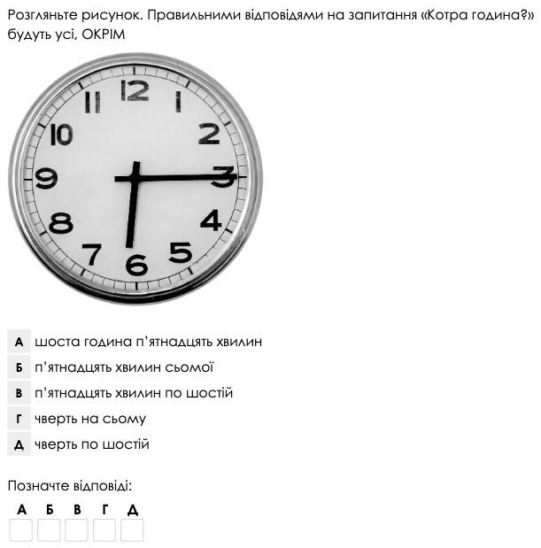
А шоста година п’ятнадцять хвилин ✓ — «шоста година» означає час від п’ятої до шостої
Б п’ятнадцять хвилин сьомої
В п’ятнадцять хвилин по шостій
Г чверть на сьому
Д чверть по шостій
Відповідь: А
🔍 Як перевірити: Велика стрілка на 3 — чверть, мала трохи за 6. Отже, 6:15: «п’ятнадцять хвилин по шостій» або «чверть на сьому». Порядковий числівник із «година» називає наступну годину: о 6:15 іде сьома година.
2. На годиннику 5:45. Правильними відповідями будуть усі, ОКРІМ
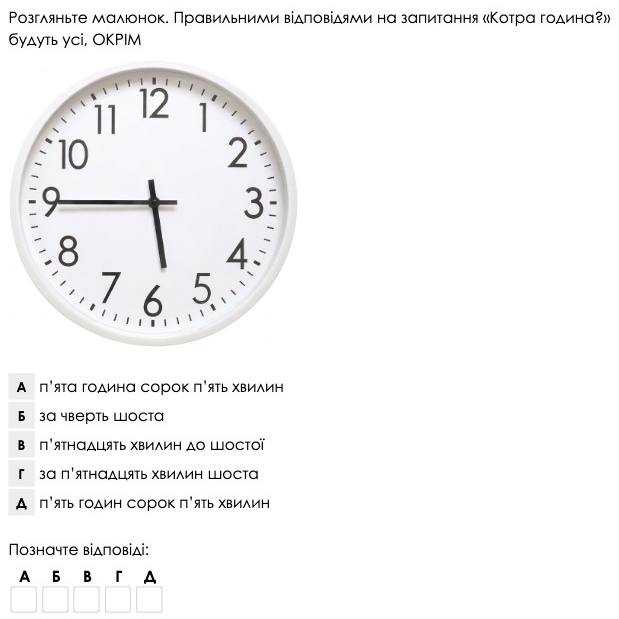
А п’ята година сорок п’ять хвилин ✓ — п’ята година йде від 4:00 до 5:00
Б за чверть шоста
В п’ятнадцять хвилин до шостої
Г за п’ятнадцять хвилин шоста
Д п’ять годин сорок п’ять хвилин
Відповідь: А
🔍 Як перевірити: Велика стрілка на 9 — бракує чверті до повної години, мала майже на 6. Отже, 5:45: «за чверть шоста», «п’ятнадцять хвилин до шостої», офіційно «п’ять годин сорок п’ять хвилин».
3. Число 18 546 у реченні «…для 18 546 школярів…» правильно записано словами в рядку
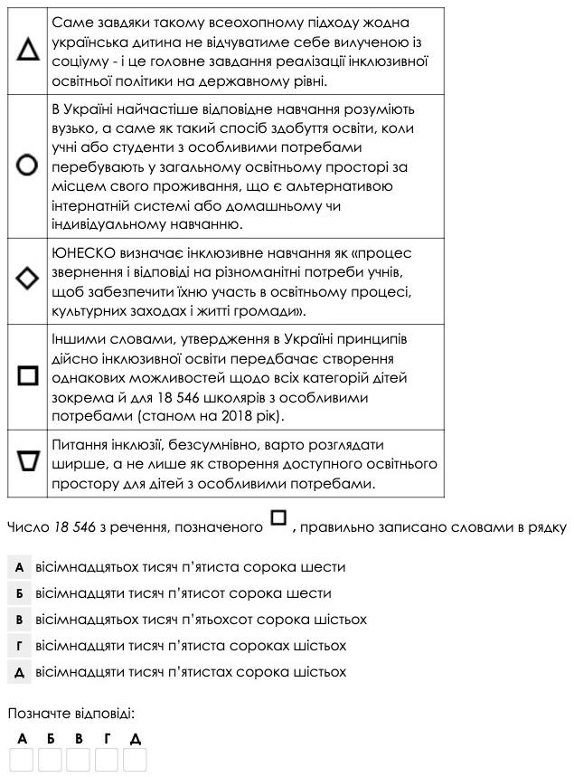
А вісімнадцятьох тисяч п’ятиста сорока шести ✗
Б вісімнадцяти тисяч п’ятисот сорока шести ✓
В вісімнадцятьох тисяч п’ятьохсот сорока шістьох ✗
Г вісімнадцяти тисяч п’ятиста сороках шістьох ✗
Д вісімнадцяти тисяч п’ятистах сорока шістьох ✗
Відповідь: Б
🔍 Як перевірити: «Для кого?» — родовий відмінок. У складеному числівнику відмінюємо кожну частину: вісімнадцяти, тисяч, п’ятисот, сорока, шести.
🧩 Завдання ЗНО: числівник — узгодження з іменником (12)
1. Правильно поєднано іменники з числівниками в рядку
А п’ять з половиною кілограм ✗ → кілограмів
Б три стола ✗ → три столи
В півтора сантиметри ✗ → півтора сантиметра
Г чотири художники ✓
Д п’ять цілих і сім десятих тонн ✗ → тонни
Відповідь: Г
Після 2, 3, 4 — Н. в. множини; після дробу — Р. в. однини; при «з половиною» іменник керується цілим числом.
2. Правильно поєднано іменники з числівниками в рядку
А двадцять два футболісти ✓
Б три з половиною сантиметрів ✗ → сантиметри
В двадцять чотири учня ✗ → учні
Г півтори літри ✗ → півтора літра
Д сім цілих і вісім десятих відсотків ✗ → відсотка
Відповідь: А
Літр — чоловічого роду, тому «півтора літра».
3. Правильно узгоджений числівник з іменником у реченні
А Квартет утворюють чотири виконавці. ✓
Б надійшло два сценарія ✗ → сценарії
В майже півтора години ✗ → півтори години
Г використати чотирьох прожекторів ✗ → чотири прожектори
Д два з половиною місяців ✗ → місяці
Відповідь: А
Півтора — з іменниками чол. і сер. роду, півтори — з жіночого роду.
4. Правильно поєднано іменник із числівником у рядку
А півтори центнера ✗ → півтора центнера
Б два з половиною року ✗ → роки
В одна десята кілометрів ✗ → кілометра
Г кількадесят учасників ✓
Д двадцять чотири відсотка ✗ → відсотки
Відповідь: Г
Кількадесят, кільканадцять — неозначено-кількісні числівники, керують Р. в. множини.
5. Правильно поєднано іменник з числівником у рядку
А обидва хлопця ✗ → хлопці
Б чотири поверха ✗ → поверхи
В три десятих метри ✗ → метра
Г два випускники ✓
Д сто два клена ✗ → клени
Відповідь: Г
Із 2, 3, 4 (і складеними на них) іменник стоїть у Н. в. множини, а не в Р. в. однини.
6. Правильно поєднано іменник з числівником у рядку
А два кошеня ✗ → два кошенята
Б три мільйона ✗ → три мільйони
В вісім кілограм ✗ → кілограмів
Г чотири лимони ✓
Відповідь: Г
Р. в. множини — «кілограмів», «грамів» (форма «кілограм», «грам» — розмовна).
7. Закінчення -і має іменник у рядку
А обидві дівчин.. — дівчини
Б півтора тижн.. — тижня
В три лікар.. — лікарі ✓
Г два муляр.. — муляри
Д чотири секунд.. — секунди
Відповідь: В
Лікар — м’яка група (лікарі), муляр, маляр — тверда (муляри, маляри).
8. Неправильно поєднано числівник з іменником у рядку
А чотири вікна
Б півтора гектара
В сто два кілометра ✗ → сто два кілометри ✓
Г одна друга центнера
Д п’ять десятих мікрона
Відповідь: В
Складений числівник керує за останнім словом: «два» → Н. в. множини.
9. НЕПРАВИЛЬНО поєднано числівник з іменником у рядку
А п’ять десятих відсотків ✗ → відсотка ✓
Б двадцять два комп’ютери
В чотири з половиною роки
Г шістдесят п’ять гривень
Д тисяча три абітурієнти
Відповідь: А
З дробовими числівниками іменник завжди в Р. в. однини.
10. Правильно поєднано числівник з іменником у всіх словосполученнях рядка
А чотири лікарі, шестеро штанів, три гектара ✗ → гектари
Б троє колег, обидві футболісти ✗ → обидва, п’ять зірок
В четверо вікон, три кошенят ✗ → кошенята, два гігабайти
Г семеро коней, двоє продавчинь ✗, півтора року
Д п’ятеро програмістів, чотири учні, двоє воріт ✓
Відповідь: Д
Збірні числівники не вживають з іменниками на позначення осіб жіночої статі (двоє продавчинь → дві продавчині).
11. НЕПРАВИЛЬНО узгоджено числівник з іменником у словосполученні
А триста грам ✗ → триста грамів ✓
Б обидва учасники
В два з половиною роки
Г троє переможців
Д півтора тижня
Відповідь: А
Нормативна форма Р. в. множини — «грамів».
12. Правильно узгоджено числівник з іменником у реченні (рецепт салату)
А ½ кілограмів ✗ → кілограма
Б 100 грам ✗ → грамів
В до 120 грамів ✓
Г 2 пакетика ✗ → пакетики
Д ¼ склянок ✗ → склянки
Відповідь: В
Дріб (½, ¼) керує Р. в. однини; 2, 3, 4 — Н. в. множини.
🧩 Завдання ЗНО: числівник — розпізнавання і відмінкові форми (20)
1. Помилково утворено форму числівника в реченні (велодоріжки)
А близько ста шістдесяти кілометрів
Б з п’ятьма-десятьма місцями
В близько трьохсот метрів
Г шестистами кілометрами ✗ → шістьмастами (шістьомастами) ✓
Д близько п’ятисот калорій
Відповідь: Г
Ор. в. сотень 500–900: п’ятьмастами, шістьмастами, сьомастами, вісьмастами, дев’ятьмастами (не «шестистами»).
2. НЕПРАВИЛЬНО утворено відмінкову форму числівника в реченні
А хребет із чотирьохсот хребців
Б близько двохсот двадцяти видів
В сягати ста п’ятдесяти кілометрів
Г близько шестидесяти мільйонів ✗ → шістдесяти ✓
Відповідь: Г
У числівниках 50–80 відмінюється лише друга частина: шістдесят — шістдесяти.
3. НЕПРАВИЛЬНО утворено відмінкову форму числівника в реченні
А до дев’яносто відсотків ✗ → до дев’яноста ✓
Б Понад двісті років тому
В три тисячі шістсот вісімдесят один кілометр
Г близько ста різних речовин
Д сягають двадцяти п’яти сантиметрів
Відповідь: А
Дев’яносто, сто в непрямих відмінках — дев’яноста, ста.
4. У всіх числівниках відмінюється тільки друга частина
А триста, п’ятсот, шістсот, вісімсот
Б двісті, шістдесят, сімсот, тридцять
В п’ятдесят, шістдесят, сімдесят, вісімдесят ✓
Г чотириста, дев’яносто, вісімдесят, сімсот
Д п’ятсот, шістдесят, вісімсот, вісімдесят
Відповідь: В
У назвах десятків 50–80 змінюється лише -десят (п’ятдесяти); у сотнях відмінюються обидві частини (п’ятисот).
5. Порушено норму при відмінюванні числівників у рядку
А трьохсот, трьомстам, на трьохстах
Б п’ятисот, п’ятистам, п’ятистами ✗ → п’ятьмастами ✓
В семисот, сімомастами, на семистах
Г дев’ятисот, дев’ятистам, дев’ятьмастами
Д двохсот, двомастами, на двохстах
Відповідь: Б
Ор. в.: п’ятьмастами (п’ятьомастами); сьомастами і сімомастами — обидві форми нормативні.
6. Числівник є в реченні
А Тричі крига замерзала — прислівник
Б ділився на сотні — іменник
В прийшло п’ятеро хлопців — збірний числівник ✓
Г двадцятиградусний мороз — прикметник
Відповідь: В
Слова з числовим значенням (тричі, сотня, двадцятиградусний) не завжди числівники.
7. Допущено помилку у відмінюванні числівника
А шестистам чотирнадцятьом
Б семидесятьох п’ятьох ✗ → сімдесятьох ✓
В на вісімдесяти дев’яти
Г сорока чотирма
Д чотирьомстам трьом
Відповідь: Б
У десятках 50–80 перша частина не змінюється: сім- (сімдесяти, сімдесятьох).
8. Числівник є в реченні
А двічі ходить — прислівник
Б десятки крил — іменник
В ріс кількадесят років — неозначено-кількісний числівник ✓
Г стокілометрову відстань — прикметник
Відповідь: В
9. Помилку в утворенні відмінкової форми числівника допущено в рядку
А шість, шести, шістьом, шістьома
Б п’ятнадцять, п’ятнадцяти, п’ятнадцятьом, п’ятнадцятьма
Д вісім тисяч, восьми тисяч, вісьмом тисячам, вісьмома тисячами
Відповідь: В
Шести — але шістдесяти: у десятках перша частина незмінна.
10. Правильну відмінкову форму числівника «шістсот дев’яносто вісім» наведено в рядку
А Р. в. шестиста дев’яноста восьми ✗ → шестисот
Б Д. в. шестисот дев’яноста вісьмом ✗ → шестистам
В Зн. в. шістсот дев’яноста вісім ✗ → дев’яносто
Г Ор. в. шестистами дев’яноста вісьмома ✗ → шістьмастами
Д М. в. (на) шестистах дев’яноста вісьмох ✓
Відповідь: Д
М. в. від «вісім»: на восьми і на вісьмох.
11. Правильну відмінкову форму числівника «сімсот дев’яносто вісім» наведено в рядку
А Р. в. семи сотень дев’яноста восьми ✗ → семисот
Б Д. в. сімсот дев’яноста вісьмом ✗ → семистам
В Зн. в. семисот дев’яноста вісім ✗ → сімсот дев’яносто вісім
Г Ор. в. сьомастами дев’яноста вісьма ✓
Д М. в. (на) семисот дев’яноста вісьмох ✗ → семистах
Відповідь: Г
Ор. в.: вісьма і вісьмома — обидві форми правильні.
12. Правильну відмінкову форму числівника «сто вісімдесят сім» наведено в рядку (у ЗНО двічі)
А Р. в. ста вісімдесяти семи ✓
Б Д. в. сто вісімдесяти семи ✗ → ста
В Зн. в. ста вісімдесят сім ✗ → сто
Г Ор. в. ста вісімдесятьма сіма ✗ → сімома (сьома)
Д М. в. (у) сто вісімдесяти семи ✗ → (у) ста
Відповідь: А
Сто в усіх непрямих відмінках — ста.
13. Неправильно утворено форму слова у варіанті
А їздити по понеділкам ✗ → по понеділках ✓
Б вісім десятих кілограма
В виголосить промову
Г задля спільної вигоди
Відповідь: А
Прийменник «по» в розподільному значенні — з М. в.: по понеділках, по класах.
14. Неправильно утворено форму слова у варіанті
А два студенти
Б самий головний ✗ → найголовніший ✓
В сімома голосами
Г віддаси потім
Відповідь: Б
Ступені з «самий» — русизм.
15. Відмінкову форму числівника вжито правильно в реченні (у ЗНО двічі)
А коло року тисяча п’ятисот п’ятидесятого ✗ → тисяча п’ятсот п’ятдесятого
Б у тисячу шістсот сорок сьомому ✗ → у тисяча шістсот сорок сьомому
В у тисяча чотирьохсот дев’яносто другому ✗ → тисяча чотириста дев’яносто другому
Г у червні тисяча шістсот п’ятдесят першого року ✓
Д до тисячу семисот сімдесят п’ятого ✗ → до тисяча сімсот сімдесят п’ятого
Відповідь: Г
У складеному порядковому числівнику відмінюється лише останнє слово.
16. Неправильною є відмінкова форма числівника в рядку
А Р. в. трьохсот п’ятдесяти шести
Б Д. в. трьомстам п’ятдесяти шести
В Зн. в. триста п’ятдесят шість
Г Ор. в. трьомастами п’ятдесятьма шістьма
Д М. в. (на) трьохсот п’ятдесяти шести ✗ → (на) трьохстах ✓
Відповідь: Д
17. Неправильно утворено форму слова у варіанті
А пане Костянтине
Б для всіх дослідників
В восьмидесяти років ✗ → вісімдесяти ✓
Г візьмімо участь
Відповідь: В
18. Порушено норму відмінювання числівника в рядку
А нагородив п’ятьох учнів
Б від сто двадцяти до сто сорока ✗ → від ста двадцяти до ста сорока ✓
В Серед восьмисот сорока семи приток
Г зустрів там сімох однокласників
Д від п’ятдесяти до сімдесяти козаків
Відповідь: Б
19. Граматично правильне речення утвориться, якщо до частини «Вітаємо зі святом …» додати
А Першим вереснем
Б Першим вересням
В Першого вересня ✓
Г Першим вересня
Відповідь: В
Назва свята з датою: дата стоїть у Р. в. (свято Першого вересня).
20. Форму числівника в орудному відмінку правильно зазначено в рядку (754)
А сьомастами п’ятидесятьома чотирьома ✗ → п’ятдесятьма
Б семистами п’ятдесятьма чотирма ✗ → сьомастами
В сьомастами п’ятдесятьма чотирьома ✓
Г семистами п’ятидесятьма чотирма ✗
Д сімомастами п’ятдесятьома чотирма
Відповідь: В
Ключ — В. За правописом 2019 «сімомастами» і «п’ятдесятьома» теж допустимі, тож варіант Д формально спірний.
🧩 Завдання ЗНО: числівник — позначення часу (12)
1. Порушено граматичну норму на позначення часу
А рівно о першій
Б десять хвилин по шостій
В пів на десяту
Г сім годин двадцять хвилин ✗ → сьома година двадцять хвилин ✓
Д за двадцять п’ята
Відповідь: Г
Час доби називають порядковими числівниками; «сім годин» означає тривалість. Найімовірніший ключ — Г.
2. Неправильно побудовано словосполучення
А десять (хвилин) на шосту
Б чверть на шосту
В без п’ятнадцяти шість ✗ → шоста ✓
Г пів на шосту
Д за десять (хвилин) шоста
Відповідь: В
Годину називають порядковим числівником: шоста, а не шість.
3. Граматично правильна відповідь на запитання «Котра година?» (у ЗНО двічі)
А дванадцять тридцять
Б половина дев’ятої ✗ → пів на дев’яту
В десять хвилин першої ✗ → десять хвилин на першу
Г без двадцяти десять ✗ → десята
Д за п’ять одинадцята ✓
Відповідь: Д
4. Неправильно побудовано словосполучення на позначення часу
А десять (хвилин) на десяту
Б чверть на одинадцяту
В без п’ятнадцяти десять ✗ → десята ✓
Г пів на дванадцяту
Д за п’ять (хвилин) шоста
Відповідь: В
5. Неправильно побудовано словосполучення
А п’ятнадцять хвилин десятого ✗ → п’ятнадцять хвилин на десяту ✓
Б зараз одинадцята
В за п’ять хвилин сьома
Г пів на першу
Д буду після дев’ятої
Відповідь: А
Конструкція «… хвилин десятого» — калька з російської.
6. Граматично правильно утворено словосполучення
А розпочнеться в четвертій годині ✗ → о четвертій
Б зустрінемося за чверть дев’ята ✗ → о чверть на дев’яту
В тренувалися до пів сьомої години ✗ → до пів на сьому
Г прибігти без десяти хвилин третя ✗
Д зателефонуйте після дев’яти ✓
Відповідь: Д
На питання «Коли?» — о + М. в.: о четвертій.
7. НЕПРАВИЛЬНО побудовано словосполучення на позначення часу
А десять (хвилин) на десяту
Б чверть по одинадцятій
В третя година десять хвилин
Г за п’ять (хвилин) шоста
Д без п’ятнадцяти десять ✗ → десята ✓
Відповідь: Д
8. Правильно побудовано словосполучення на позначення часу в рядку
А сім годин п’ять хвилин ✗
Б без десяти дванадцята
В п’ять хвилин десятої ✗
Г дванадцять тридцять
Д чверть на одинадцяту ✓
Відповідь: Д
Ключ — Д. Конструкцію «без десяти дванадцята» деякі посібники допускають, але в ЗНО перевагу надають «за десять дванадцята».
9. Правильна відповідь на запитання «Коли прибуває потяг Харків — Чоп?»
А У десять тридцять. ✗ → О десятій тридцять
Б Пів одинадцятої ранку. ✗
В О десятій тридцять. ✓
Г За тридцять одинадцята. ✗
Д У пів одинадцятого. ✗
Відповідь: В
На питання «Коли?» — прийменник «о» + порядковий числівник у М. в.
10. На годиннику 10:40. Правильна відповідь на запитання «Котра година?»
А десять годин сорок хвилин ✗ — тривалість
Б без двадцяти одинадцята
В за двадцять одинадцята ✓
Г сорок хвилин по десятій ✗
Д двадцять до одинадцяти ✗ — калька
Відповідь: В
«За двадцять одинадцята» — рекомендована форма; «без двадцяти» ключ не зараховує.
11. Правильна відповідь на запитання «Коли починається наступна лекція?»
А о десятій сорок ✓
Б в десять сорок ✗
В без двадцяти одинадцята ✗ — відповідь на «Котра година?»
Г сорок хвилин по десятій ✗
Д двадцять хвилин десятої ✗
Відповідь: А
12. Правильна відповідь на запитання «Котра година?»
А без п’ятнадцяти сьома
Б половина шостої ✗
В три години дві хвилини ✗
Г двадцять сорок
Д за п’ять хвилин друга ✓
Відповідь: Д
Ключ — Д: перевагу надають конструкції «за … хвилин».
🧩 Завдання ЗНО: числівник — заповнення пропусків (31)
1. «Медичний безпілотник набирає швидкість близько … кілометрів за годину й підвищує шанси … відсотків»
А сто, від восьми до вісімдесяти
Б ста, від вісьми до восьмидесяти
В ста, від восьми до восьмидесятьох
Г сто, від вісьми до вісімдесяти
Д ста, від восьми до вісімдесяти ✓
Відповідь: Д
Близько + Р. в.: ста; Р. в. вісім — восьми, вісімдесят — вісімдесяти.
2. «… Тетяна з Андрієм … від екскурсовода, що Тарасові … встановлено тисячу двісті п’ятдесят шість …»
А Вперше, дізналися, Шевченку, пам’ятники
Б Уперше, дізналися, Шевченку, пам’ятників ✓
В Уперше, дізналася, Шевченко, пам’ятників
Г Вперше, дізналася, Шевченко, пам’ятників
Д Уперше, дізналися, Шевченку, пам’ятники
Відповідь: Б
На початку речення перед приголосним — у; «Тетяна з Андрієм» — присудок у множині; після «шість» — Р. в. множини.
3. «Керівника туристичного гуртка Олексія … повідомили, що за півтора … група учнів … орієнтуватися …»
А Пономаренко, місяці, навчилась, по зірках
Б Пономаренка, місяця, навчилась, за зірками ✓
В Пономаренка, місяці, навчились, по зіркам
Г Пономаренко, місяця, навчились, за зірками
Д Пономаренка, місяця, навчились, по зіркам
Відповідь: Б
Чоловіче прізвище на -ко відмінюється; півтора + Р. в. однини; «група» — присудок в однині.
4. «Зміни до Конституції ухвалюються голосами … народних депутатів»
А триста
Б трьохста
В трьохсот ✓
Г трьохстох
Д трьомастами
Відповідь: В
Голосами (кого?) — Р. в.: трьохсот.
5. «Демонстрація … нової колекції … відбудеться через …» (пальто, Віктор Ткаченко)
А пальт, Віктора Ткаченка, півтора місяця ✓
Б пальто, Віктора Ткаченка, півтора місяця
В пальт, Віктора Ткаченко, півтора місяця
Г пальт, Віктора Ткаченка, півтора місяці
Д пальт, Віктора Ткаченка, півтори місяця
Відповідь: А
Правопис 2019 дозволяє відмінювати «пальто» (Р. мн. пальт). Незмінна форма «пальто» теж не заборонена, тож Б формально можливий, але ключ — А.
6. «Невдовзі Сергій з … виїхали на заміську трасу. До … залишалося два … . …не робило менш … їхню подорож»
А Ігором, Львову, кілометра, цікавою
Б Ігорем, Львова, кілометри, цікавою ✓
В Ігорем, Львова, кілометри, цікавішою
Г Ігорем, Львову, кілометра, цікавою
Д Ігором, Львову, кілометри, цікавішою
Відповідь: Б
Ігор — Ігорем; до Львова; два кілометри; «менш цікавою» (не «менш цікавішою»).
7. «У теплицях … вирощують близько … сортів … помідорів»
А Дмитра Білоусько, двадцяти, щонайбільш смачних
Б Дмитра Білоуська, двадцять, найбільш смачних
В Дмитра Білоуська, двадцяти, найбільш смачніших
Г Дмитра Білоусько, двадцять, якнайсмачніших
Д Дмитра Білоуська, двадцяти, найсмачніших ✓
Відповідь: Д
Чоловіче прізвище на -ко відмінюється; близько + Р. в.
8. «…збували інформацію понад 200 клієнтам» — числівник 200 словом
А двісті
Б двостам
В двомстам ✓
Г двохстам
Відповідь: В
Збувати (кому?) клієнтам — Д. в.: двомстам.
9. «Старшокласники подякували … за новину й розбіглися по …, лише … залишилися» (у ЗНО двічі)
А Людмилі Володимирівні, класах (кабінетах), троє учениць
Б Людмилу Володимирівну, …, три учениці
В Людмилі Володимирівній, …ам, троє учениць
Г Людмилі Володимирівні, класах (кабінетах), три учениці ✓
Д Людмилі Володимирівні, класам, три учениці
Відповідь: Г
Подякувати кому — Д. в.; розбіглися по класах — М. в.; збірні числівники з жіночими іменниками не вживають. У другому варіанті (з «кабінетах») правильна відповідь під літерою Д.
10. «…мобілізував більше … воїнів … налічує понад … волонтерів»
А двадцять тисяч, двохста тисяч
Б двадцяти тисячі, двохсот тисяч
В двадцятьох тисяч, двухсот тисяч
Г двадцятьох тисяч, двохстах тисяч
Д двадцяти тисяч, двісті тисяч ✓
Відповідь: Д
Більше + Р. в.; понад + Зн. в. (двісті).
11. «…хто зробив … внесок у науку, і за 118 … існування премії її отримало близько … осіб»
А найбільший, років, дев’ятиста
Б більш великий, роки, дев’ятисот
В самий більший, років, дев’ятиста
Г найбільший, років, дев’ятисот ✓
Д більший, роки, дев’ятисот
Відповідь: Г
Після «вісім» — Р. в. множини (років); Р. в. — дев’ятисот.
12. Числа з тексту про мозок: «близько 1,3 кг», «до 20 %», «до 38 мл», «з 500 г», «більше ніж 110 г». НЕПРАВИЛЬНО передано відмінковою формою
А одна ціла й три десятих ✗ → (близько) однієї цілої й трьох десятих ✓
Б двадцяти
В тридцяти восьми
Г п’ятисот
Д сто десять
Відповідь: А
Після «близько» — Р. в.; після «більше ніж» — Н. в.
13. Маланюк: «…з Польщі ще … року, … у віці … років …, упродовж останніх … живе в США» (у ЗНО двічі)
А тисяча дев’ятсот двадцятого, п’ятдесяти двох, дев’ятнадцяти ✓
Б тисячу дев’ятсот двадцятого, п’ятидесяти двох, дев’ятнадцятьох
В тисяча дев’ятисот двадцятого, п’ятидесяти двух, дев’ятнадцятьох
Г тисячу дев’ятисот двадцятого, п’ятдесятьох двох, дев’ятнадцяти
20. «Невдовзі мама з … виїхали на заміську трасу, до … залишалося п’ятдесят чотири …»
А Ігором, Житомиру, кілометрів
Б Ігорем, Житомира, кілометри ✓
В Ігорєм, Житомиру, кілометра
Г Ігорьом, Житомира, кілометра
Д Ігорем, Житомиру, кілометри
Відповідь: Б
21. «Трембіта — … музичний інструмент у світі: її розмір може сягати від двох з половиною до …»
А найбільш довгий, восьми метри
Б самий довший, восьмох метрів
В найдовший, восьми метрів ✓
Г самий довгий, вісьми метра
Д довгіший, восьмох метра
Відповідь: В
22. «Медичний безпілотник набирає швидкість близько … кілометрів за годину…» (дев’яносто)
А дев’яносто, від восьми до вісімдесяти
Б дев’яноста, від вісьми до восьмидесяти
В дев’яноста, від восьми до восьмидесятьох
Г дев’яносто, від вісьми до вісімдесяти
Д дев’яноста, від восьми до вісімдесяти ✓
Відповідь: Д
23. «Демонстрація модних … нової колекції … відбудеться через …» (Тарас Демиденко)
А пальт, Тараса Демиденка, півтори місяці
Б пальто, Тараса Демиденко, півтора місяця
В пальто, Тараса Демиденка, півтора місяців
Г пальт, Тараса Демиденко, півтора місяці
Д пальт, Тараса Демиденка, півтора місяця ✓
Відповідь: Д
24. «На будівництво стратегічно важливих … планують витратити до … мільярдів гривень»
А автомагістралей, ста вісімдесяти сіми
Б автомагістралів, ста вісімдесяти семи
В автомагістралей, ста восьмидесяти семи
Г автомагістралів, ста вісімдесятьох сімох
Д автомагістралей, ста вісімдесяти семи ✓
Відповідь: Д
25. «… на величні хрести Андріївської церкви: … вони від дня заснування … року захищають місто»
А Поглянім, по легенді, тисячі семисот п’ятидесятому четвертому
Б Погляньмо, відповідно легенді, тисяча сімсот п’ятдесят четвертого
В Погляньмо, за легендою, тисячу семисот п’ятидесяти четвертому
Г Погляньмо, за легендою, тисяча сімсот п’ятдесят четвертого ✓
Д Поглянім, по легенді, тисячу семисот п’ятдесят четвертому
Відповідь: Г
26. «Андріївський узвіз — одна з … вулиць …, її довжина сягає … метрів»
А найулюблених, Київа, семиста п’ятдесяти
Б найбільш улюблених, Києва, сімсот п’ятидесяти
В найулюбленіших, Києва, семисот п’ятдесяти ✓
Г найулюбленіших, Київа, сімсот п’ятидесяти
Д самих улюблених, Києву, семисот п’ятдесяти
Відповідь: В
27. «…сподівається, що … року з бюджету виділять близько … мільйонів гривень»
А дві тисячі двадцять третього, вісімдесяти шести ✓
Б дві тисячі двадцять третього, восьмидесяти шестьох
В двох тисяч двадцять третього, вісімдесяти шістьох
Г двох тисяч двадцяти третього, восьмидесяти шести
Д дві тисячі двадцяти третього, вісьмидесятьох шістьох
Відповідь: А
28. «… рішенню уряду Великої Британії шостого лютого … року Україні передано станцію «Фарадей»»
А Завдяки, тисяча дев’ятисот дев’яноста шостого
Б Дякуючи, тисячу дев’ятсот дев’яносто шостого
В Завдяки, тисячу дев’ятисот дев’яносто шостого
Г Дякуючи, тисяча дев’ятсот дев’яноста шостого
Д Завдяки, тисяча дев’ятсот дев’яносто шостого ✓
Відповідь: Д
«Дякуючи» в значенні причини — помилка; правильно «завдяки».
29. «…, упродовж року з’являється понад … тисяч айсбергів, що дрейфують зі швидкістю до … кілометрів за добу»
А Відповідно даним експертів, двохсот, тридцяти
Б По даних експертів, двоста, тридцяти
В Згідно з даними експертів, двохста, тридцятьох
Г За даними експертів, двісті, тридцяти ✓
Д Згідно даних експертів, двісті, тридцять
Відповідь: Г
Понад + Зн. в.; до + Р. в.
30. «…підготувала звіт на … сторінках, і він проілюстрований … таблицями»
А двісті сімдесяти восьми, сорока шести
Б двостах семидесяти восьми, сороками шістьма
В двохстах семидесяти восьми, сорока шестьома
Г двохстах сімдесяти восьми, сорока шістьома ✓
Д двісті сімдесят восьми, сорока шістьма
Відповідь: Г
31. «Фільм триває трохи більше …, і за цей час глядачі можуть відкрити для … чимало фактів»
А вісьмидесяти хвилин, самих
Б ніж вісімдесят хвилин, їх
В ніж вісімдесят хвилин, себе ✓
Г восьмидесяти хвилин, них
Д вісімдесят хвилин, самого
Відповідь: В
Більше ніж + Н. в.; відкрити для себе (зворотний займенник).
92📋 Типи відмінювання числівників
Шість типів відмінювання (докладна практика — тема наступного заняття):
числівник «один» (один, одна, одне, одні);
2, 3, 4, а також «обидва», «багато», «кілька» і збірні числівники;
від 5 до 20, а також 30, 50, 60, 70, 80;
«числівники-помічники» 40, 90, 100;
сотні (200–900);
«тисяча», «мільйон», «мільярд» — відмінюються як іменники.
«один»: один, одного, одному, одним; місцевий відмінок має дві форми — на одному / на однім (середній рід: на тому полі / на тім полі);
2, 3, 4: у знахідному відмінку дві форми залежно від істот/неістот (два/двох, три/трьох, чотири/чотирьох); орудний — «чотирма» (без м’якого знака);
від 5 до 20 (і 30) мають паралельні форми: родовий — п’яти/п’ятьох, давальний — п’яти/п’ятьом, орудний — п’ятьма/п’ятьома, місцевий — на п’яти/на п’ятьох; так само тринадцять — тринадцяти/тринадцятьох, орудний — тринадцятьма;
50, 60, 70, 80: перша частина («п’ят-», «шіст-», «сім-», «вісім-») незмінна, відмінюється лише «-десят»: п’ятдесятьма, шістдесятьма, сімдесятьма, вісімдесятьма;
40, 90, 100 мають лише дві форми: у називному й знахідному — незмінна («сорок», «дев’яносто», «сто»), у решті відмінків — закінчення «-а» (сорока глядачів, сорока глядачам, сорока глядачами, на сорока глядачах);
сотні (200–900) відмінюються в обох частинах слова (двохсот, семистам); паралельні форми трапляються лише в орудному відмінку (п’ятьма стами / п’ятьомастами).
93🎭 Займенник: визначення та розряди
Займенник — самостійна частина мови, яка вказує на предмет, але не називає його; може відповідати на питання хто? що? (та інші). У реченні може бути підметом або другорядним членом.
За особами займенники поділяються на першу (я, ми), другу (ти, ви) і третю особу (він, вона, воно, вони) — саме форма третьої особи однини важлива для визначення дієвідміни дієслова (закінчення -уть/-ють або -ать/-ять).
Дев’ять розрядів займенників за значенням (заучувати напам’ять для НМТ не обов’язково): особові (я, ти, він, вона, воно, ми, ви, вони), зворотний (себе), питальні, відносні, неозначені (хто-небудь, хтось), заперечні (ніхто, ніщо), присвійні, вказівні, означальні.
«Що» — займенник чи сполучник
Якщо «що» можна замінити на «який/яка/яке» — це займенник: «прийшла весна, що принесла тепло» → «яка принесла тепло». В інших випадках — сполучник.
94🧾 Завдання: займенник
Рядок, де всі займенники написано правильно: «дехто» (разом), «ніякий» (разом), «скількинебудь» (через дефіс), «абищо» (разом); типові помилки в інших варіантах — «дещо», «декотрий», «дечий», «аби хто» мають писатися разом, «хтозна-що» — через дефіс.
Серед речень зі словом «їм» — помилка там, де мало бути «ними» (орудний відмінок: «батьки не абияк пишалися ними за перемогу»), а не «їм» (давальний відмінок).
Серед «спілкуватися з їми», «на тім березі ріки», «з твоєго району», «до наших батьків», «всім підприємцям» — правильно «на тім березі ріки» (і «на тому», і «на тім» — обидві форми нормативні); помилки: «з ними» (не «з їми»), «з твого» (не «з твоєго»).
Тест на логіку: «цілий» не можна замінити на «увесь» у реченні «казан хоч і був цілий» — тут «цілий» означає «неушкоджений», а не «весь» у значенні кількості (на відміну від «зібралася вся вулиця», «увесь вік», «всього життя», «для всієї школи», де заміна можлива).
🧩 Завдання ЗНО: займенник — форми (12)
1. Правильною є форма займенника в словосполученні
А спілкуватися з їми ✗ → з ними
Б на тім березі ріки — коротка форма «тім» нормативна ✓
В з твоєго району ✗ → з твого
Г до нашіх батьків ✗ → до наших
Д всим підприємцям ✗ → всім
Відповідь: Б
Поряд із «на тому» нормативна й коротка форма М. в. «на тім».
2. Правильною є форма займенника в словосполученні
А на тім березі ріки ✓
Б з твоєго району ✗ → з твого
В звернутися до їх ✗ → до них
Г всим підприємцям ✗ → всім
Д наший проєкт ✗ → наш
Відповідь: А
Після прийменника до займенників він, вона, вони додається н-: до них.
3. Неправильно утворено форму слова у варіанті
А познімали пальта ✗
Б у чистім полі ✗
В усих учасників → треба усіх ✓
Г стежачи за дітьми ✗
Д упродовж доби ✗
Відповідь: В
Займенник весь: усі, усіх, усім, усіма — з і.
4. Неправильно утворено форму слова у варіанті
А морських узбережжів → треба узбереж ✓
Б на твоєму моніторі ✗
В хочуть навчатися ✗
Г згідно з постановою ✗
Відповідь: А
Іменники середнього роду на -я з подовженим приголосним мають у Р. в. мн. нульове закінчення: узбережжя — узбереж (як знаряддя — знарядь).
5. Неправильно утворено форму слова у варіанті
А пане Костянтине ✗
Б для всіх дослідників ✗
В восьмидесяти років → треба вісімдесяти ✓
Г візьмімо участь ✗
Відповідь: В
Вісімдесят відмінюється лише в другій частині: вісімдесяти, вісімдесятьма.
6. НЕПРАВИЛЬНО вжито форму займенника в реченні
А Зустріти друзів їм сьогодні таки вдалося. ✗
Б Завдяки їм роботу завершили майже вчасно. ✗
В Наше завдання – створити їм добрі умови. ✗
Г Батьки неабияк пишалися їми за цю перемогу. → треба ними ✓
Д На перерві їм повідомили про вихідний день. ✗
Відповідь: Г
Форми «їми» в літературній мові немає: О. в. — ними.
7. Помилковою є форма займенника в рядку
А знайти з-посеред чиїхось помилок ✗
Б перевірити їхні промпти ✗
В зовсім не перейматися їми → треба ними ✓
Г визначити їй завдання ✗
Д зупинити вибір на ньому ✗
Відповідь: В
О. в. від «вони» — тільки ними.
8. Граматичну помилку допущено в рядку
А вивчити завдяки ним → треба завдяки їм ✓
Б спілкуватися з ними
В телефонувати їм
Г зустрітися з нею
Д допомогти йому
Відповідь: А
Після прийменників із Д. в. завдяки, всупереч, назустріч, наперекір приставний н- не додається: завдяки їм, всупереч йому.
9. Замінити прикметник «цілий» займенником «увесь» НЕ МОЖНА в реченні
А На толоку збиралася ціла вулиця. → уся вулиця ✗
Б Цілий вік вона тужила… → увесь вік ✗
В Не вистачить цілого життя… → усього життя ✗
Г Казан хоч і був цілий, але пощербився. — «цілий» = неушкоджений ✓
Д Квитки куплені для цілої школи. → усієї школи ✗
Відповідь: Г
Заміна можлива лише тоді, коли «цілий» означає «повний, весь», а не «неушкоджений».
10. «Медичну допомогу надають не лише ___ реєстрації: кожен може вибрати сімейного ___ у ___ поліклініці»
А по місцю, лікаря, любій ✗
Б за місцем, лікара, будь-якій ✗
В на місці, лікаря, любій ✗
Г за місцем, лікаря, будь-якій ✓
Д по місцю, лікара, довільній ✗
Відповідь: Г
Нормативно: за місцем реєстрації; Р. в. — лікаря; «любий» = милий, а в значенні «який завгодно» — будь-який.
11. «Вас навчать ___ побудови тексту… у зошитах, створених ___ книги «Гра престолів»»
А усіх секретів, по мотивам ✗
Б усіма секретами, по мотивах ✗
В усім секретам, за мотивами ✗
Г усім секретам, по мотивам ✗
Д усіх секретів, за мотивами ✓
Відповідь: Д
Навчити чого? (Р. в.) — усіх секретів; нормативно за мотивами.
12. «Пам’ятник ___ став єдиним у світі…, що підкреслювало велич ___ таланту»
А Соломії Крушельницькій, єї ✗
Б Соломії Крушельницької, її ✗
В Соломії Крушельницькій, її ✓
Г Соломії Крушельницької, неї ✗
Д Соломії Крушельницькій, неї ✗
Відповідь: В
Пам’ятник кому? — Крушельницькій (Д. в.); присвійне «її» без прийменника — без н-.
🧩 Завдання ЗНО: займенник — правопис (2)
1. Правильно написано всі займенники рядка (у ЗНО тричі)
А дехто, ніякий, скільки-небудь, абищо ✓
Б ніщо, будь-який, де-котрий, ніскільки ✗ → декотрий
Частки аби-, де-, ні- пишемо разом; будь-, -небудь — через дефіс; хтозна-, казна- — разом, а далі дефіс: хтозна-що.
2. Правильно написано всі займенники рядка
А дехто, ніякий, скільки-небудь, абищо ✓
Б будь-хто, аніхто, хто-зна-що, ніскільки ✗ → хтозна-що
В якийсь, будь-який, аби-хто, що-небудь ✗ → абихто
Г нічий, хто-небудь, де-який, будь-чий ✗ → деякий
Відповідь: А
Схоже на попереднє завдання, але з іншими неправильними рядками.
95📢 Прислівник: визначення та творення
Прислівник — самостійна частина мови, що вказує на ознаку дії, стану або міру вияву іншої ознаки; відповідає на питання як? скільки? куди? де? чому? відколи? навіщо?
Розряди за значенням заучувати не обов’язково, але варто пам’ятати прислівники місця (де, куди, звідки), часу (коли, до якого часу), причини (чому) і мети (навіщо) — знадобляться для складнопідрядних речень.
Головна граматична ознака — незмінність (не змінюється за родами, числами, відмінками). Творяться суфіксами «-о»/«-е» (щиро, добре), «-и» (по-братськи), а також префіксально-суфіксальним способом (по-моєму, по-нашому) — переважно від іменників, прикметників, числівників і займенників. У реченні найчастіше виступає обставиною, рідше — частиною складеного присудка.
Ступінь
Проста форма
Складена форма
вищий
суфікс «-ш-»/«-іш-»: швидко → швидше, гучно → гучніше
«більш»/«менш»: більш важливо, менш корисно
найвищий
«най-» + вищий ступінь: найшвидше, найгучніше
«найбільш»/«найменш»: найбільш важливо, найменш корисно
Ті самі принципи творення й ті самі пастки з подвоєнням способу, що й у прикметникових ступенях порівняння — див. розділ «Типові помилки у ступенях порівняння».
🧩 Завдання ЗНО: прислівник — розпізнавання, ступені порівняння (7)
1. Іменником є виділене слово «добре» в реченні
А Яке добре гостювання — прикметник
Б отримав «добре» — іменник (оцінка) ✓
В було так добре й затишно — прислівник (присудкове слово)
Г добре, щире серце — прикметник
Відповідь: Б
Перехід у іменник (субстантивація): «добре» — назва оцінки.
2. Текст «Пахне луг…»: прийменник виділено у словосполученні
А коло лісу ✓
Б що прилетіли — сполучне слово
В ніде не видно — прислівник
Г наче оновлюєшся — сполучник
Відповідь: А
«Коло» з Р. в. — прийменник (= біля).
3. Текст «У моїй батьківщині…»: прислівник виділено в словосполученні
А польовими доріжками — іменник
Б часом кукурікають — прислівник (= іноді) ✓
В навантажені хлібом — іменник
Г червоною калиною — іменник
Відповідь: Б
4. Текст про колискову: іменник виділено в словосполученні
А починається з колискової — субстантивований прикметник ✓
Б звучання почутої мелодії — дієприкметник
В для маленької дитини — прикметник
Г ходить навшпиньках — прислівник
Відповідь: А
5. Текст про поїздку в хуртовину: прислівника НЕМАЄ в реченні
А третьому — знову
Б четвертому — гуртом
В шостому ✓
Г сьомому — навмисне, ніколи
Відповідь: В
6. Неправильно утворено форму слова у варіанті
А познімали пальта
Б у чистім полі
В усих учасників ✗ → усіх ✓
Г стежачи за дітьми
Д упродовж доби
Відповідь: В
7. «… рішенням приймальної комісії, консультації для … абітурієнтів розпочнуться …»
А Згідно до, чотирьохста п’ятидесяти, якнайшвидше
Б Відповідно, чотирьохсот п’ятидесяти, найбільш швидше
В Згідно з, чотирьохсот п’ятдесяти, якнайшвидше ✓
Г Згідно з, чотирьохста п’ятдесяти, саме швидше
Д У відповідності з, чотирьохсот п’ятдесяти, найшвидко
частки аби-, ані-, де-, чи-, що-, як- на початку слова — разом: абияк, щодня, якомога (але якщо «що» стоїть після основного слова — окремо: дарма що, поки що);
разом, якщо слово без «не» не вживається: незабаром, негайно, непорушно;
разом, якщо до прислівника можна дібрати синонім: невисоко (= низько), небагато (= мало), неблизько (= далеко);
окремо за наявності протиставлення: не гірше, а краще;
окремо, якщо прислівник у реченні виступає присудком: ні в житті, не байдуже.
98🔀 Прислівник чи прийменник з іменником: розрізнення за контекстом
Те саме поєднання літер може бути і прислівником (пишеться разом чи через дефіс), і сполученням прийменника з іменником/числівником/прикметником (пишеться окремо) — розрізняють за питанням, на яке відповідає слово в реченні:
Прислівник (разом/дефіс)
Прийменник + слово (окремо)
спочатку
з початку року («з якого часу»)
на пам’ять («вчити вірші на пам’ять»)
на довгу пам’ять («подарувати на що?»)
вперше
в перше вікно
багато / мало
за багато років («за який час?»)
по-новому
по новому мосту
вголос («повторювати правила вголос»)
в голос («заслухатися в голос співачки»)
99🧾 Завдання: правопис прислівників
Рядок, де всі слова пишуться разом: «улітку», «потихеньку», «навічно»; у решти варіантів — окремо («в основному», «без упину», «до вподоби») або насправді разом («відтоді», «донині»).
Речення без прислівника — «од села до села» (поєднання прийменника з іменником, не прислівник), на відміну від «знову», «гуртом», «навмисне».
Рядок через дефіс: «по-моєму», «казна-куди», «хоч-не-хоч»; у решти — окремо («рік у рік», «на добраніч», «на виплат») або разом («поодинці»).
Ще один рядок через дефіс: «віч-на-віч», «по-домашньому», «будь-де»; у решти — разом («втричі», «якнайбільше», «потихеньку»), окремо («в цілому», «на радість»).
Рядок окремо: «до побачення», «на щастя», «кінець кінцем» (перше слово в називному, друге — в орудному відмінку), аналогічно «на жаль».
Через дефіс: «малопомалу», «віч-на-віч», «по-третє», «по-латині»; окремо: «в нічию», «зрештою», «якраз», «подвоє» («по» зі збірним числівником — окремо, на відміну від «по-перше» з порядковим).
Рядок з усіма правильними формами: «з-під лоба», «вдвічі», «ані скільки», «уранці», «допізна»; типова помилка в інших варіантах — «вп’яте» мало писатися разом.
🧩 Завдання ЗНО: прислівник — разом, окремо, через дефіс (у тексті) (17)
1. Текст про Люко Дашвар: окремо треба писати
А до/купи — докупи
Б на/пам’ять — напам’ять
В на/зустріч болю — назустріч
Г на/гору людських страждань — на гору ✓
Відповідь: Г
Іменник із залежним словом (гору страждань) — окремо від прийменника.
2. Текст про зимовий ранок: окремо треба писати
А по/особливому — по-особливому
Б по/зимовому небу — по зимовому ✓
В по/своєму — по-своєму
Г по/іншому — по-іншому
Відповідь: Б
«По зимовому небу» — прийменник + прикметник при іменнику, а не прислівник.
3. Текст про вітер: окремо треба писати
А як/би хто хотів — якби (сполучник умови)
Б на/зустріч — назустріч
В перевірити вітер на/силу — на силу ✓
Г до/долу — додолу
Відповідь: В
4. Орфографічну помилку допущено в слові (текст про сад)
А усіх-усюд ✗ → з усіх усюд ✓
Б без упину
В рано-вранці
Г позаторік
Відповідь: А
Сполуку «з усіх усюд» пишуть окремо.
5. Орфографічну помилку допущено в слові (текст про азалію)
А щороку
Б до схочу ✗ → досхочу ✓
В довкола
Г догори
Відповідь: Б
6. Текст «Пахне луг…»: окремо пишуться слова
А прилетіли на/зустріч з вечірньою казкою — на зустріч ✓
Б де/далі — дедалі
В бо за/малі — замалі
Г в/друге — вдруге
Відповідь: А
Тут «зустріч з казкою» — іменник з прийменником, а не прислівник «назустріч».
7. Текст «У моїй батьківщині…»: окремо пишеться сполука слів
А на/світанні — на світанні ✓
Б по/тихеньку — потихеньку
В до/гори — догори
Г що/б — щоб
Відповідь: А
«На світанні» — прийменник з іменником, пишуть окремо.
8. Текст про травневу ніч: окремо пишеться сполука слів
А не/ймовірну — неймовірну
Б від/того прокинувся — від того ✓
В не/звідану — незвідану
Г від/нині — віднині
Відповідь: Б
«Від того» — прийменник із займенником.
9. Текст про колискову: окремо пишуться слова
А в/перше звучання — в перше ✓
Б від/тепер — відтепер
В на/певно — напевно
Г не/наче — неначе
Відповідь: А
«В перше звучання» — прийменник + порядковий числівник при іменнику.
10. Текст про гордого птаха: окремо пишеться сполука слів
А на/зустріч новим пригодам — назустріч
Б до/гори — догори
В не/баченою досі — не баченою ✓
Г не/великі — невеликі
Відповідь: В
Дієприкметник із залежним словом (досі) з не — окремо.
11. Текст про пасіку: окремо пишеться сполука слів
А на/зустріч сонцю — назустріч
Б у/середині — усередині
В з/верху — зверху
Г по/моєму ліктю — по моєму ✓
Відповідь: Г
12. Текст про стежку до ліска: окремо треба писати
А з/верху дерева — з верху ✓
Б в/низ — вниз
В на/весні — навесні
Г не/виразно — невиразно
Відповідь: А
«З верху дерева» — іменник із залежним словом.
13. Текст про туман: окремо треба писати
А над/вечір — надвечір
Б у/ранці — уранці
В без/упину — без упину ✓
Г до/гори — догори
Відповідь: В
14. Текст про падіння зірки: окремо треба писати
А як/би хотілося — як би ✓
Б про/те — проте
В до/низу — донизу
Г що/миті — щомиті
Відповідь: А
Тут «як» — підсилювальне слово з часткою «би», а не сполучник умови.
15. Орфографічну помилку допущено в слові (текст про Романа)
А непокоїться
Б в глибінь
В угорі
Г нерозпізнана ним ✗ → не розпізнана ним ✓
Відповідь: Г
Дієприкметник із залежним словом пишуть із не окремо.
16. Текст про осінні тумани: окремо треба писати
А в/горі — вгорі
Б до/долу — додолу
В без/вісті — безвісти
Г не/знає — не знає ✓
Відповідь: Г
Не з дієсловами — окремо.
17. Текст про місто з гори: окремо треба писати (у ЗНО двічі)
А в/гору — вгору
Б не/далеко від гори — недалеко
В у/далині — удалині
Г на/багато років — на багато ✓
Відповідь: Г
«На багато років» — прийменник із числівником.
🧩 Завдання ЗНО: прислівник — правопис у рядках (21)
1. Через дефіс треба писати всі прислівники в рядку
А по-моєму, казна-куди, хоч-не-хоч ✓
Б рік у рік, урешті-решт, хтозна-коли
В по-вашому, на добраніч, якось-то
Г по-іспанськи, уряди-годи, поодинці
Д будь-що-будь, по-четверте, на виплат
Відповідь: А
Повторювані з частками сполуки (хоч-не-хоч, як-не-як) пишуть через дефіс.
2. Помилку в написанні прислівника допущено в рядку
А зроду-віку, з давніх-давен, спрадавна
Б видимо-невидимо, анічичирк, аби-де ✗ → абиде ✓
В як-не-як, в основному, по-чиновницьки
Г більш-менш, хтозна-коли, довкруги
Д по-четверте, всього-на-всього, щосереди
Відповідь: Б
Прислівники з аби-, будь-… пишуть: абиде, абикуди — разом; будь-де — через дефіс.
3. Усі прислівники пишуться разом
А на похваті, поночі, урозтіч, на жаль
Б вщерть, засвітла, навиворіт, напровесні ✓
В одвіку, з переляку, навідріз, згарячу
Г навзнак, вподовж, до речі, щодуху
Д спідлоба, надвоє, по змозі, знадвору
Відповідь: Б
4. Прислівники слід писати ЧЕРЕЗ ДЕФІС
А пліч-о-пліч, з давніх-давен, день у день, по-латині
Б на-гора, коли-не-коли, без кінця-краю, де-небудь ✓
В віч-на-віч, по-простому, сам на сам, хтозна-коли
Г ледве-ледве, по праву, по-друге, як-не-як
Д більш-менш, раз по раз, будь-куди, десь-не-десь
Відповідь: Б
Сполуки «день у день», «сам на сам», «раз по раз», «по праву» пишуть окремо.
5. З дефісом треба писати всі прислівники в рядку
А по-нашому, внічию, ледве-ледве, сяк-так
Б зрештою, врешті-решт, хтозна-куди, вряди-годи
В мало-помалу, віч-на-віч, десь-інколи, по-латині ✓
Г десь-то, якраз, як-небудь, будь-коли
Д по двоє, по-друге, по-третє, по-сучасному
Відповідь: В
6. Разом пишуться всі прислівники в рядку
А напам’ять, на жаль, докупи
Б на весну, довіку, спідлоба
В мимоволі, назавжди, в основному
Г щонайвище, до вподоби, безвісти
Д опівночі, надвоє, наперекір ✓
Відповідь: Д
Найімовірніший ключ — Д. «Навесні» пишуть разом, але «на весну» — прийменник з іменником.
7. Через дефіс пишуться всі прислівники рядка
А віч-на-віч, по-домашньому, будь-де ✓
Б по-людськи, як-небудь, втричі
В колись-то, хтозна-куди, якнайбільше
Г де-не-де, в цілому, по-четверте
Д на радість, хоч-не-хоч, далеко-таки
Відповідь: А
Втричі, якнайбільше — разом; в цілому, на радість — окремо.
8. Через дефіс треба писати всі прислівники в рядку
А віч-на-віч, по-домашньому, будь-де ✓
Б по-людськи, як-небудь, якнайбільше
В втричі, колись-то, хтозна-куди
Г де-не-де, в цілому, по-четверте
Д до речі, без кінця-краю, далеко-таки
Відповідь: А
9. Правильно написано всі прислівники рядка
А спідлоба, вдвічі, аніскільки ✓
Б уранці, день у день, в п’яте ✗ → уп’яте
В поза торік ✗ → позаторік, як-не-як, на жаль
Г будь ласка, що ночі ✗ → щоночі, по-перше
Д з ліва ✗ → зліва, раз у раз, ледве-ледве
Відповідь: А
10. Через дефіс треба писати кожен прислівник у рядку
А по-нашому, внічию, ледве-ледве, сяк-так
Б зрештою, врешті-решт, хтозна-куди, вряди-годи
В мало-помалу, віч-на-віч, по-третє, по-латині ✓
Г десь-то, якраз, по-сучасному, будь-коли
Д по двоє, по-друге, десь-інколи, як-небудь
Відповідь: В
11. Окремо треба писати всі прислівники в рядку
А неждано-негадано, раз у раз, рано-вранці
Б сам на сам, без кінця-краю, наприкінці
В до побачення, кінець кінцем, на щастя ✓
Г хтозна-звідки, усього-на-всього, допізна
Д по-рідному, навприсядки, віч-на-віч
Відповідь: В
12. Разом треба писати всі слова в рядку (у ЗНО двічі)
А начисто, зранку, в основному
Б влітку, потихеньку, навічно ✓
В без упину, навесні, відтоді
Г донині, занадто, до вподоби
Відповідь: Б
13. Разом треба писати всі слова в рядку
А відтепер, надалі, щовівторка ✓
Б безвісти, по-перше, абикуди
В поволі, до вподоби, навмання
Г зі споду, по суті, потихеньку
Відповідь: А
14. Усі прислівники треба писати РАЗОМ у рядку
А відтоді, без упину, улітку
Б потихеньку, навесні, засвітла ✓
В до вподоби, навічно, спідлоба
Г по одному, на добраніч, вподовж
Відповідь: Б
15. Літеру і треба писати на місці пропуску в усіх словах у рядку
А двічі, по-вовчи, опівночі
Б навесні, трохи, увечері
В уповні, нагорі, мимоволі ✓
Г віднині, тричі, по-київськи
Д по-латині, пішки, позаочі
Відповідь: В
Після по- з -ськ-, -цьк-, -зьк- і в прислівниках на -ки (пішки) пишемо и.
16. Літеру и треба писати в кінці кожного прислівника в рядку (у ЗНО двічі)
А по-лицарськи, по-вовчи, завбільшки, тричі
Б навкулачки, заочі, по-корейськи, навпаки
В по-лисячи, почасти, пошепки, навколішки ✓
Г мовчки, по-угорськи, зсередини, по-латині
Д по-людськи, завглибшки, трохи, насторожі
Відповідь: В
Тричі, заочі, по-латині, насторожі — з і. У скороченому варіанті (4 рядки) відповідь теж В.
17. Букву и треба писати на місці пропуску в усіх словах рядка (у ЗНО двічі)
А аніскілечки, заочі, безвісти
Б по-юнацьки, відтоді, навіки
В упівсили, мовчки, почасти ✓
Г навкруги, мимоволі, узнаки
Відповідь: В
18. Літеру и треба писати в кінці кожного прислівника в рядку
А по-вовчи, завбільшки, тричі
Б навкулачки, навпаки, поночі
В мовчки, нарешті, по-корейськи
Г почасти, пошепки, навколішки ✓
Відповідь: Г
19. Букву И треба писати на місці пропуску в усіх словах рядка
А по-сусідськи, трохи, насторожі
Б навкруги, по-людськи, лежачи ✓
В верхи, по-братерськи, вночі
Г пішки, по-латині, заввишки
Відповідь: Б
20. НЕМАЄ орфографічних помилок у реченні (туристичні агенції)
А …ставати все дужче клієнтоорієнтованими. ✓
Б які-небуть ✗ → які-небудь; освітньо розважальні ✗ → освітньо-розважальні
В місцевісць ✗ → місцевість; чи мало ✗ → чимало
Г мабудь ✗ → мабуть
Відповідь: А
21. НЕМАЄ орфографічних помилок у варіанті (здорове харчування)
А впевненно ✗ → впевнено; будь яких ✗ → будь-яких
Б збалансованний ✗ → збалансований; рацион ✗ → раціон
В Вибір продуктів, технологія приготування… ✓
Г Не зважаючи ✗ → Незважаючи; користні ✗ → корисні
Відповідь: В
100🏃 Дієслово: визначення та форми
Дієслово — самостійна частина мови, що означає дію предмета; відповідає на питання що робити? що зробити? У реченні найчастіше виступає присудком, хоча теоретично може бути й іншим членом речення. Дієслово змінюється за часами (минулий, теперішній, майбутній), числами (однина/множина) і особами (я — ми, ти — ви, він/вона/воно — вони).
П’ять форм дієслова:
неозначена форма (інфінітив) — відповідає на питання що робити? що зробити? (читати, прочитати, малювати);
особові дієслова — змінюються за особами (я читаю, вони читають);
безособові дієслова — дія є, але виконавець невідомий чи не називається (прочитано, зроблено, написано, розбито);
дієприкметник — особлива форма, відповідає на питання який? і вказує на ознаку предмета за дією (прочитаний, намальований, розбитий);
дієприслівник — особлива форма, відповідає на питання що роблячи? що зробивши? (читаючи, малюючи, намалювавши).
Морфологічні ознаки дієслова: особа (перша, друга, третя), час (теперішній, минулий, майбутній), вид — доконаний (що зробити? — прочитати) або недоконаний (що робити? — читати), спосіб (дійсний, умовний, наказовий), рід у минулому часі (читав/читала/читало).
101🎚️ Три способи дієслів
дійсний — виражає реальну дію: він працює, він сміється, вона забуде;
умовний — бажана чи можлива за певних умов дія, завжди з часткою «б»/«би»: він повідомив би, вона прийшла б;
наказовий — спонукання до дії (наказ, порада, прохання, побажання): у другій особі (ти говори), у першій особі множини (говоримо голосно, пишімо), із часткою «хай»/«нехай» (хай говорить, нехай говорить).
102📣 Наказовий спосіб: творення і типові помилки
Це важлива тема, бо на НМТ регулярно трапляються завдання саме на наказовий спосіб, і люди часто припускаються помилок у розмовному мовленні.
Головна помилка — «давайте»
Вживання слова «давайте» для творення наказового способу (давайте зробимо, давайте скажемо) — це скалькована, ненормативна конструкція. Замість неї треба вживати форму першої особи множини наказового способу: пригадаймо, скажімо, зробімо, будьмо уважні, ставмо лайки.
Слово «давайте» лишається нормативним лише в значенні передавання чогось комусь: давайте ваші зошити.
Творення наказового способу:
перша особа множини — закінчення «-мо»/«-імо»: сядьмо, несімо, будьмо, ходімо;
друга особа — ти ходи, ти станьте; ви ходіть, станьте;
третя особа — за допомогою часток «хай»/«нехай»: хай несе, хай водять.
Приклад із піснею Кузьми Скрябіна, де вжито розмовну конструкцію на кшталт «давай вимкнемо світло»: у розмовному мовленні це припустимо, але в тесті НМТ правильною формою наказового способу буде «вимкнемо» (без «давай»).
103🧾 Завдання: наказовий спосіб
Тест на пошук речення з формою наказового способу серед п’яти варіантів. Правильна відповідь — «творімо українське мистецтво разом» (перша особа множини, «-імо»); інші варіанти («не боятися експериментів», «шукаємо відповіді») — це не наказовий спосіб, а неозначена форма чи дійсний спосіб.
Тест на пошук рядка, де форму наказового способу утворено НЕправильно, серед варіантів («сядемо», «відпочиньмо», «ходімо» тощо). Правильна відповідь — «сядемо»: правильна форма наказового способу — «сядьмо».
Тест на пошук варіанта з формою наказового способу серед п’яти речень. Правильна відповідь — варіант із дієсловами «спробуйте» та «насолоджуйтеся» (друга особа множини наказового способу); інші варіанти — дійсний спосіб («пропонуємо», «додаємо»).
Ще один тест на пошук рядка з формою наказового способу: правильна відповідь — форма на кшталт «активніше працюймо» (перша особа множини); варіанти «пишемо», «уточнюйте» в цьому контексті виявилися дійсним способом (теперішній час).
Тест на пошук рядка, де форму наказового способу утворено НЕправильно (в чотирьох варіантах усе коректно, в одному — помилка). Правильна відповідь — неправильна форма на кшталт «пишем»; коректні форми — «пиши» (ти), «пишіть» (ви), «хай пише» (він/вона/воно).
🧩 Завдання ЗНО: наказовий спосіб — утворення форм (11)
1. НЕПРАВИЛЬНО утворено форму наказового способу дієслова в рядку
А читаймо, їжмо ✗
Б живімо, стіймо ✗
В бережімо, печімо ✗
Г сядемо, повірмо — «сядемо» = дійсний спосіб, майбутній час → сядьмо ✓
Д дихаймо, граймо ✗
Відповідь: Г
Форма 1-ї особи множини наказового способу має суфікс -ім(о)/-м(о): сядьмо, а не «сядемо».
2. У формі наказового способу наведено всі дієслова, ОКРІМ
А пиши ✗
Б чеши ✗
В неси ✗
Г даси — дійсний спосіб, майбутній час (ти даси); наказ — дай ✓
Д проси ✗
Відповідь: Г
Закінчення -си в «даси» особове (ти даси), а не наказове.
3. Неправильно утворена форма наказового способу дієслова в рядку
А зробимо — дійсний спосіб, майбутній час ✓
Б зробімо ✗
В зроби ✗
Г зробіть ✗
Д нехай зроблять ✗
Відповідь: А
Наказ для «ми»: зробімо (наголошене -імо), а «зробимо» — просто майбутній час.
4. Правильно утворено форму наказового способу дієслова в рядку (у ЗНО двічі)
А ходімте ✓
Б дозволимо — дійсний спосіб ✗
В не мовчімо ✗
Г пішли — минулий час ✗
Д подякуємо — дійсний спосіб ✗
Відповідь: А
Ключ ЗНО — А. Формально «не мовчімо» теж правильна форма наказового способу; імовірно, в оригіналі було «не мовчимо».
5. Неправильно утворено форму наказового способу дієслова в рядку
А пишемо — дійсний спосіб, теперішній час ✓
Б пишімо ✗
В пиши ✗
Г пишіть ✗
Д хай пише ✗
Відповідь: А
Наказова форма для «ми» — пишімо.
6. У формі наказового способу вжито всі наведені дієслова, ОКРІМ
А вези ✗
Б пішли — минулий час від «піти» ✓
В кажи ✗
Г бери ✗
Д кричи ✗
Відповідь: Б
«Пішли» в типовому вживанні — минулий час (вони пішли); як заклик «пішли!» це калька з російської, правильно — ходімо.
7. Правильно утворено форму наказового способу дієслова в рядку
А познайомимося — дійсний спосіб ✗
Б познайоммося ✓
В давайте знайомитися — калька ✗
Г знайомимося — дійсний спосіб ✗
Д давайте познайомимося — калька ✗
Відповідь: Б
Конструкції з «давай(те)» — русизм; правильно: познайоммося (основа + -мо + -ся).
8. Правильно утворено форму наказового способу дієслова в рядку
А попередьте ✓
Б напишімте ✗
В організуєте — дійсний спосіб ✗
Г треба зрозуміти — інфінітив ✗
Д давайте мовчати — калька ✗
Відповідь: А
Ключ — А. Форма «напишімте» трапляється в розмовному мовленні, але нормативна — напишімо (з -те в літературній мові закріпилося переважно «ходімте»).
9. Правильно утворено форму наказового способу в рядку
А ходити – ходімте ✗
Б запросити – запрось ✗ → запроси
В зберігати – збережімо ✗ → зберігаймо (збережімо — від «зберегти»)
Г розпитати – розпитайте ✓
Д розповісти – розповіси ✗ → розкажи/розповіж
Відповідь: Г
Найімовірніший ключ — Г. «Ходімте» загалом нормативне, тож варіант А сумнівний як хибний; найочевидніше правильна пара — розпитати → розпитайте.
10. НЕПРАВИЛЬНО утворено форму наказового способу в рядку
А продаси — дійсний спосіб, майбутній час → продай ✓
Б напиши ✗
В викоси ✗
Г одягни ✗
Д мовчи ✗
Відповідь: А
Від «продати» наказ — продай, а «продаси» — 2-га особа майбутнього часу.
11. НЕПРАВИЛЬНО утворено форму наказового способу дієслова в рядку
А допоможи, повір ✗
Б виклади, залагодь ✗
В продаси, переказуй — «продаси» не наказ → продай ✓
Г бережи, розповідай ✗
Д прибіжи, відпочинь ✗
Відповідь: В
🧩 Завдання ЗНО: наказовий спосіб у реченні й тексті (14)
1. Форму наказового способу дієслова вжито в реченні
А Творімо українське мистецтво разом! ✓
Б Треба бути наполегливим, аби стати успішним. ✗
В Нове життя нового прагне слова! ✗
Г На всі питання шукаємо відповіді у своєму серці! — дійсний спосіб ✗
Окличний знак не робить дієслово наказовим: «шукаємо» — дійсний спосіб.
2. Форму наказового способу має дієслово в словосполученні
А терміново подаймо звіт ✓
Б терміново подають звіт ✗
В терміново подаємо звіт ✗
Г терміново подати звіт ✗
Д треба терміново подати звіт ✗
Відповідь: А
3. Дієслово у формі наказового способу вжито в рядку
А говорімо правильно ✓
Б швидше переходимо — дійсний спосіб ✗
В понесли до майстерні — минулий час ✗
Г усім стояти струнко — інфінітив у значенні наказу ✗
Д подякуємо господарям — дійсний спосіб ✗
Відповідь: А
Інфінітив і дійсний спосіб можуть передавати спонукання, але формою наказового способу не є.
4. Позначте речення, у якому дієслово умовного способу вжито в значенні наказового
А Полетіла б я до тебе, та крилець не маю. ✗
Б Ніжну-ніжну, як подих билини, я хотів би вам пісню сплести. ✗
В Вже б покласти кінець всім незгодам і щоб кожен народ поважать. — спонукання, заклик ✓
Г Я б хотів всі зірки, що над нами, перелити у зірку ясну. ✗
Д Я б хотіла вродитись між гір, я б хотіла гуцулкою стати. ✗
Відповідь: В
В інших реченнях умовний спосіб виражає мрію чи бажання, а у В — заклик (= покладімо кінець).
5. Наказовий спосіб дієслова вжито в значенні іншого способу в рядку
А Мама каже, що скільки не дай книжок, а їм усе мало. — «не дай» = хоч скільки дали б (умовний) ✓
Б Ви, тату, їдьте, а я швидко наздожену вас і пішки! ✗
В Берімо приклад із дерев: ростімо у височінь життя. ✗
Г Хай не зітруться підкови, хай не підіб’ються ваші коні. ✗
Д Схаменіться! Будьте люде, бо лихо вам буде. ✗
Відповідь: А
У «скільки не дай» немає спонукання: форма наказового способу передає умову.
6. Форму наказового способу дієслова вжито в реченні (текст про піцерію)
А «…від сьогодні переходимо на здорову їжу» ✗
Б «…замовили «Неаполітано» з подвійним сиром» ✗
В Сьогодні вводимо нове меню… ✗
Г Намасти хліб сирною масою, зверху притруси петрушкою… ✓
Д Раджу спробувати нашої піци… ✗
Відповідь: Г
«Намасти», «притруси» — 2-га особа однини наказового способу.
7. Форму наказового способу дієслова вжито в реченні (рецепт картоплі по-селянськи)
А Пропонуємо простий рецепт… ✗
Б Спробуйте приготувати цю апетитну страву вдома й насолоджуйтеся її смаком… ✓
В Картоплю треба почистити, промити… ✗
Г Додаємо олію, сіль… перемішуємо, викладаємо… ✗
Д Випікати потрібно в духовій шафі… ✗
Відповідь: Б
8. НЕМАЄ форми наказового способу дієслова в реченні (про лідерські якості)
А …тож розвивайте їх. ✗
Б Учіться слухати… ✗
В …делегуйте йому частину повноважень, не нехтуйте… ✗
Г Під час розмови зі співробітниками ви маєте бути впевненими… ✓
Д Ведіть щоденник… аналізуйте виклики… ✗
Відповідь: Г
«Маєте бути» — дійсний спосіб із модальним значенням.
9. НЕМАЄ форми наказового способу дієслова в реченні (про вибір професії)
А Щоб визначитися з майбутнім фахом, маєте з’ясувати… ✓
Б Поцікавтеся в батьків чи близьких друзів… ✗
В …отримуйте з медіа… ✗
Г Дайте відповіді… й визначте… ✗
Д …зіставте… зверніться до фахівця… ✗
Відповідь: А
10. Заповніть пропуски: «Не ___ на часі, коли очищаєте кавомолку…, цим ви ___ термін її експлуатації» (у ЗНО тричі)
А економіте, подовжите ✗
Б економте, подовжете ✗ → подовжите
В економіть, подовжити ✗
Г економьте, подовжте ✗
Д економте, подовжите ✓
Відповідь: Д
Економити → економ, економте (без м’якого знака після м); подовжити (II дієвідміна) → подовжите. В одному варіанті завдання Б мав вигляд «економліть, подовжете», відповідь та сама — Д.
11. Заповніть пропуски: «Друзі, ___ до Гордія Юрійовича, щоб подякувати ___ за корисні поради»
А пійдімо, його ✗
Б пішлімо, йому ✗
В ходімте, його ✗
Г ходімо, йому ✓
Д пішліть, його ✗
Відповідь: Г
Ходімо — наказ від «ходити»; дякувати кому? — йому (давальний відмінок).
12. Заповніть пропуски: «Агов, ___, ___! Перед заняттям ___ разом кабінет…» (у ЗНО двічі)
А Ілля, Настя, провітрімо ✗
Б Ілле, Настю, провітримо ✗
В Іллє, Настя, провітримо ✗
Г Ілля, Насте, провітрімо ✗
Д Ілле, Насте, провітрімо ✓
Відповідь: Д
Кличний: Ілле, Насте; заклик до спільної дії — провітрімо. В іншому варіанті ця правильна відповідь стояла під літерою В.
13. Заповніть пропуски: «Запрошуємо Вас, ___, узяти участь у конкурсі «Прикраса року»: ___ світ мистецтва разом!»
А ювеліре-початківцю, творімо ✓
Б ювеліру-початківець, давайте творити ✗
В ювелір-початківцю, творімо ✗
Г ювелір-початківець, давайте творімо ✗
Д ювеліре-початківце, творимо ✗
Відповідь: А
У кличному відмінку змінюються обидві частини: ювеліре-початківцю; «давайте творити» — калька.
14. Заповніть пропуски: «___ до сонячного годинника…: ___, він ще з ___ року допомагає спудеям стежити за часом»
А Ходімо, за переказами, тисяча сімсот вісімдесят дев’ятого ✓
Б Давайте підемо, згідно переказів, тисяча сімсот вісімдесят дев’ятого ✗
В Ходімте, по переказам, тисяча сімсот вісімдесят дев’ятого ✗
Г Ходімо, відповідно до переказів, тисячу сімсот вісімдесят дев’ятого ✗
Д Пішли, за переказами, тисяча сімсот вісімдесяти дев’ятому ✗
Відповідь: А
У порядкових числівниках змінюється лише останнє слово: з тисяча сімсот вісімдесят дев’ятого року.
104🔤 Дієвідміни: вибір голосної в особових закінченнях
Проста схема визначення дієвідміни за формою третьої особи множини:
Дієвідміна
3 особа множини
Голосна в інших особових формах
перша
-уть / -ють
«е»: вони пишуть → ти пишеш; вони читають → ти читаєш
друга
-ать / -ять
«и»: вони сплять → ти спиш; вони біжать → ти біжиш
Додаткові приклади: «в’яжуть» → «в’яжеш» (буква «е», перша дієвідміна); «лічать» → «лічиш» (буква «и», друга дієвідміна); «клеять» → «клеїш»/«клеїте» (буква «ї», друга дієвідміна).
105🧾 Завдання: особові закінчення дієслів
Тест на пошук рядка, де в дієслівних формах НЕМАЄ помилок, серед варіантів. Правильна відповідь — варіант із формами «мовчимо», «ти відповіси», «ми клеїмо»; у решти варіантів помилки: «хочуть» (а не «хотять»), «їси» (а не «їсиш»), «сиплють» (а не «не сиплять»), «гоять» (від «гоїти»).
Тест на пошук речення з правильно вжитою дієслівною формою. Правильна відповідь — варіант із формами «стань», «даси», «ухвалить», «зустріньмось» (наказовий спосіб), «ходімо»; конструкція «давай зустрінемось» — ненормативна.
Двічі повторюваний тест на правильне творення форми третьої особи множини від інфінітива. Правильна відповідь — рядок «бігти → біжать», «проводжати → проводжають», «полоти → полють» (перевірка: «ти полеш» — буква «е»), «кричати → кричать» (перевірка: «ти кричиш» — буква «и»), «хотіти → хочуть» (перевірка: «ти хочеш» — буква «е»); в аналогічному повторному завданні також розібрано пару «сідати → сідають» (від «сідати», а не від «сидіти») та «губити → гублять» (перевірка: «ти губиш»).
Тест на пошук помилки в особових закінченнях дієслів: помилка — форма «клеїте» записана з помилкою; правильно — «клеїте» (перевірка: «вони клеять», друга дієвідміна, буква «ї»/«и»).
🧩 Завдання ЗНО: особові закінчення й дієвідміни (16)
1. Правильні особові форми дієслів наведено в рядку
А сидять, носять ✓
Б боряться, орють ✗ → борються (боротися — I дієвідміна)
В полять, сміються ✗ → полють
Г гудуть, терплють ✗ → терплять
Д працюють, клеють ✗ → клеять
Відповідь: А
Боротися, полоти — I дієвідміна (-уть/-ють); терпіти, клеїти — II дієвідміна (-ать/-ять).
2. Правильно утворено форму третьої особи множини від інфінітива
А проводжати – проводять ✗ → проводжають
Б молоти – мелять ✗ → мелють
В хотіти – хотять ✗ → хочуть
Г гоїти – гоють ✗ → гоять
Д кричати – кричать ✓
Відповідь: Д
3. Помилку в написанні особових закінчень дієслів допущено в рядку
А біжать, течемо ✗
Б скачуть, шепочимо — шепотіти: шепочу, шепочеш → шепочемо ✓
В бачать, булькаємо ✗
Г полють, кричимо ✗
Д поборють, варимо ✗
Відповідь: Б
Шепотіти належить до I дієвідміни (шепочуть), тому в 1-й особі множини -емо.
4. Помилку в написанні особового закінчення дієслова допущено в рядку
А бачать, булькаємо ✗
Б поборють, кричимо ✗
В скачуть, шепочимо → шепочемо ✓
Г біжать, вибігаєте ✗
Відповідь: В
Те саме слово-пастка «шепочемо», що й у попередньому завданні, але інші варіанти.
5. Позначте рядок, у якому всі дієслова належать до другої дієвідміни
А малювати, носити, боятися, знати ✗
Б кричати, бачити, просити, клеїти ✓
В полоти, боротися, гоїти, їздити ✗
Г ходити, об’єднатися, радіти, веселитися ✗ — об’єднаються (I)
Д любити, хотіти, радити, ставити ✗ — хочуть (I)
Відповідь: Б
Перевірка — 3-тя особа множини: кричать, бачать, просять, клеять (-ать/-ять = II дієвідміна).
6. Допущена помилка в правописі особових закінчень дієслів у рядку
А шлють, варють — варити (II) → варять ✓
Б біжать, відчувають ✗
В глянемо, мовчимо ✗
Г сушите, будуєте ✗
Д гоїш, сивієш ✗
Відповідь: А
7. Правильно утворено форму третьої особи множини від інфінітива
3. Заповніть пропуски: «Нагадую, ___, що сьогодні я ___ до Вас практикантів» (у ЗНО двічі)
А Микола Геннадійович, привозжу ✗
Б Миколу Геннадійовичу, привожжу ✗
В Миколо Геннадійовиче, привожджу ✗
Г Миколу Геннадійовиче, приводю ✗
Д Миколо Геннадійовичу, приводжу ✓
Відповідь: Д
Кличний: Миколо Геннадійовичу; приводити → приводжу (д → дж). В іншому варіанті правильна відповідь була під літерою В.
4. Заповніть пропуски: «Цьогоріч ___ чотири ___ смородини на ___ ділянку…» (у ЗНО двічі)
А пересаджу, куща, більш світлу ✗
Б пересажу, кущі, більш світлішу ✗
В пересажду, куща, більш світлу ✗
Г пересаджу, кущі, світлішу ✓
Д пересаджу, кущів, світлішу ✗
Відповідь: Г
Садити → саджу (д → дж); з числівниками два—чотири — називний множини (чотири кущі); «більш світлішу» — подвійний ступінь. В іншому варіанті порядок інший (А «пересаджу, кущів, світлішу»), але відповідь також Г.
5. Заповніть пропуски: «…спочатку висівають зерно в ___ ґрунт, потім збирають урожай, ___ борошно…»
А родючий, мелять ✗
Б родячий, мелють ✗
В родющий, мелють ✗
Г родющий, мелять ✗
Д родючий, мелють ✓
Відповідь: Д
Родючий — прикметник (не «родющий»); молоти → мелють (I дієвідміна).
6. Заповніть пропуски: «Усім охочим ___ завітати до Національного ___ історії України, щоб побачити роботи одного з ___ ювелірних майстрів… Івана ___»
А раджу, музея, найталановитих, Равича ✗
Б ражу, музея, найталановитіших, Равич ✗
В радю, музею, самих талановитих, Равича ✗
Г ражу, музею, найбільш талановитих, Равич ✗
Д раджу, музею, найталановитіших, Равича ✓
Відповідь: Д
Радити → раджу; музей (установа) → музею; прізвище чоловіка Равич відмінюється → Івана Равича.
106🔄 Чергування приголосних при відмінюванні дієслів
Приклади чергування приголосних, які з’являються під час відмінювання деяких дієслів: водити → я воджу, крутити → я кручу, возити → я вожу, носити → я ношу, їздити → я їжджу, мостити → я мощу, простити → я прощу, зарядити → заряджати, знизити → знижати, погасити → погашати, брязкати → бряжчати, верескнути → верещати.
Типова помилка
Форма «вивозю» замість правильної «вивожу» — її ілюструє приклад із пісні гурту «Курган і Агрегат»: у тестовому мовленні варто вживати нормативну форму «вожу»/«вивожу».
Практичне завдання. Тест на пошук рядка, де форму першої особи однини утворено НЕправильно. Правильна відповідь стосується слова «їжджу»: наголос на правильному написанні й вимові («їжджу», а не інші розмовні варіанти) — наприклад, «я їжджу щодня на роботу на метро».
107🧩 Дієприкметник: активні й пасивні форми
Дієприкметник — особлива форма дієслова, що відповідає на питання який? яка? яке? і виражає ознаку предмета за дією. Він поєднує ознаки двох частин мови: від дієслова бере вид (доконаний/недоконаний) і час (теперішній/майбутній), від прикметника — відмінок, рід і число; у реченні може бути означенням або іменною частиною складеного присудка.
Розряд
Суфікси
Приклади
активні, теперішній час
-уч- / -юч- / -ач- / -яч-
палаючий, полум’яніючий, голублячий
активні, минулий час
-л-
пожовтілий, промоклий, зів’ялий
пасивні, минулий час
-н- / -т-
зірваний, розфарбований, роз’єднаний
Активні дієприкметники виражають ознаку предмета за дією, яку предмет виконує сам (без стороннього впливу), а пасивні — ознаку предмета, який зазнає дії іншого предмета. Активні дієприкметники вживаються рідше за пасивні, але трапляються і в тестах, тому їх варто пам’ятати.
Стилістична порада: «існуючий» — калька
Варто уникати надмірного вживання дієприкметників на кшталт «існуючий» — це калька з російської мови («существующий»). Нормативні українські відповідники:
замість «існуюче законодавство» — чинне законодавство;
замість «існуючий порядок» — заведений порядок;
замість «існуючі ціни» — теперішні ціни;
замість «існуючі кордони» — сучасні кордони;
замість «існуючі проблеми» — наявні проблеми.
Дієприкметниковий зворот — це дієприкметник із залежними словами, наприклад «туристи, вражені красою природи»; докладніше цю тему розглядають пізніше, у блоці відокремлених означень.
108🧾 Завдання: правильні форми дієприкметників
Тест на пошук рядка, де всі форми дієприкметників утворено правильно, серед п’яти варіантів. Правильна відповідь — варіант із формами «лежачий», «посивілий» (активні дієприкметники) та «зліплений», «нафарбований» (пасивні дієприкметники, суфікс «-н-»).
Форми, яких слід уникати (кальки з російської)
«роблячий» (замість нього — описова конструкція), «помолодівший», «зробивший», «намалювавший», «потемнівший», «посміхаючийся» — суфікс «-вш-» в активних дієприкметниках минулого часу в українській мові не вживається.
🧩 Завдання ЗНО: дієприкметник (20)
1. Лексична помилка є в реченні
А запропонував нове відео на пісню
Б поєднати блокбастери з українською дійсністю
В важливу для оточуючого середовища тему → навколишнього ✓
16. «Прибережні води, материк та … до нього … об’єднані назвою Антарктика та окреслені зовнішньою …»
А прилягаючі ✗, межою ✗
Б прилягаючі ✗
В острова ✗, межой ✗
Г прилягаючі ✗, острова ✗, межою ✗
Д прилеглі, острови, межею ✓
Відповідь: Д
Прилеглий замість «прилягаючий»; межа — мішана група, тому Ор. в. межею.
17. НЕМАЄ орфографічних помилок у варіанті
А потинціал ✗ → потенціал
Б Професорка … дає читачам поради ✓
В не обхідні ✗ → необхідні; осмисленно ✗ → осмислено
Г за для ✗ → задля; зосереджиними ✗ → зосередженими
Відповідь: Б
Осмислено — з одним н, бо прислівник утворено від дієприкметника з одним н.
18. «Студенти, … роботу над проєктами, почали готуватися до іспитів …, щоб мати омріяні оцінки за … курс»
А закінчуя ✗
Б завершавши ✗
В найбільш серйозніше ✗
Г пройшовший ✗
Д завершивши, більш серйозно, опанований ✓
Відповідь: Д
Дієприслівник доконаного виду — завершивши; «пройшовший» — ненормативний дієприкметник.
19. «… цей старовинний замок, … променями вечірнього сонця, і, … навколишньою панорамою, зможемо відчути подих історії»
А Відвідаємо, осяєний ✗, милуясь ✗
Б Відвідаймо, осяяний, милуючись ✓
В Давайте відвідаємо ✗
Г осяєний ✗, милуючи ✗
Д осяюючий ✗
Відповідь: Б
Наказовий спосіб 1-ї особи множини — відвідаймо; осяяти → осяяний.
20. НЕПРАВИЛЬНО утворено обидва виділені слова в рядку
А заброньовані (правильно), знизившийся ✗
Б змужнівший ✗, енергоощадні (правильно)
В очікуючий пасажир, промокше пальто — обидва ненормативні ✓
Г примружені, зніяковівший ✗
Д зрадівший ✗, комбінована
Відповідь: В
Очікуючий → який чекає; промокше → промокле.
109🍃 Дієприслівник: визначення та творення
Дієприслівник — особлива форма дієслова, що позначає додаткову дію або стан; відповідає на питання що роблячи? що зробивши? У реченні найчастіше виступає обставиною. Він поєднує ознаки прислівника (незмінна частина мови) і дієслова (має лексичне значення, дієслівну основу і вид — доконаний або недоконаний).
Творення:
недоконаний вид — від основи теперішнього часу дієслова + суфікси «-учи»/«-ючи»/«-ачи»/«-ячи»: пишучи, читаючи, стоячи;
доконаний вид — від інфінітивної основи + суфікси «-ши»/«-вши»: зробивши, написавши, прочитавши, намалювавши.
110✅ Граматично правильна побудова речень із дієприслівником
Ключове правило (без розгляду розділових знаків, лише граматика побудови речення): дія, яку позначає дієприслівник, і основна дія речення мають виконуватися однією й тією ж особою.
Приклад
«Іван переглядав вебінар, відповідаючи водночас у соцмережах» — обидві дії (переглядав і відповідаючи) виконує Іван, тому речення побудоване правильно незалежно від того, на якому місці стоїть дієприслівниковий зворот.
111🧾 Завдання: пошук граматичної помилки
Тест на пошук речення з граматичною помилкою серед п’яти варіантів (про туриста з квитками, бронювання номера в готелі, подорож країнами, подорож без паспорта, загублений ключ). Правильна відповідь — речення «побувавши в різних країнах, де вам сподобалося найбільше?»: дію «сподобалося» неможливо приписати жодній конкретній особі, а дію «побувавши» мала б виконувати та сама особа, що й «сподобалося» — невідповідність.
Тест про купівлю мобільного телефону («купуючи мобільний телефон…»): правильна відповідь — варіант, де ту саму дію купівлі логічно продовжує та сама особа («не забудьте уточнити, купуючи телефон»); варіант із «з’явилася ідея купити телефон» некоректний, бо «ідея» не може сама «купувати».
Тест про вежу/годинник («проходячи повз вежу, ви чуєте, як годинник…»): помилка — годинник не може сам «проходити повз вежу»; проходити повз вежу може лише людина, а не годинник.
Тест про читання віршів («мама читала вірш, не ходячи до школи»): помилка — до школи не ходила дитина, а не мама; речення потребує перебудови (наприклад, «мама читала мені вірші, коли я ще не ходив/ла до школи»).
Завершальний тест на правильно побудоване речення: «читаючи “Зачаровану Десну”, ви збагачуєте своє мовлення» — правильна відповідь, бо і «читаючи», і «збагачуєте» стосуються тієї самої особи («ви»).
Підсумок. Тему дієслова разом з обома його особливими формами — дієприкметником і дієприслівником — опрацьовано. Наступне заняття присвячене службовим частинам мови (прийменник, сполучник, частка), а також тестам на визначення частиномовної належності слів у реченні; після службових частин мови курс поступово переходить до синтаксису.
🧩 Завдання ЗНО: дієприслівниковий зворот — продовження речення (12)
1. Граматично правильне продовження речення «Перебуваючи на екскурсії в Холодному Яру, …» наведено в рядку
А хлопців зацікавили розлогі столітні дуби. ✗
Б сповнюєшся дивовижною силою козацького краю. ✓
В запам’яталося місце освячення гайдамацької зброї. ✗
Г нас здивував таємничий Мотронинський монастир. ✗
Д нам розповіли про історію написання роману «Залишенець». ✗
Відповідь: Б
Дію дієприслівника й дію присудка має виконувати та сама особа; в узагальнено-особовому реченні «сповнюєшся» це «ти».
2. Граматично правильне продовження речення «Вибираючи стиль одягу, …» наведено в рядку (у ЗНО двічі)
А людині притаманне прагнення мати привабливий… вигляд. ✗
Б досить просто створюється особливий… образ. ✗
В не завжди увага закцентована на перевагах фігури… ✗
Г зовнішність підкреслюється або ж… погіршується… ✗
Д ми хочемо бути в центрі уваги… ✓
Відповідь: Д
Тільки в Д є підмет, який сам вибирає стиль (ми). В одному з варіантів у А було написано «притаманно», відповідь та сама.
3. Граматично правильне речення можна утворити, якщо до фрагмента «Оглядаючи експозицію музею, …» додати
А екскурсоводом було наведено невідомі факти про неї. ✗
Б усі експонати вразили нас своїм різноманіттям. ✗
В уважно слухайте гіда, робіть короткі записи. ✓
Г наші знання з історії були дуже доречними. ✗
Д це чудова можливість поринути в минуле. ✗
Відповідь: В
Діяч при наказовому способі — «ви», він же оглядає експозицію.
4. Граматично правильне речення можна утворити, якщо до фрагмента «Мандруючи Олешківськими пісками, …» додати
А нас вражала неповторна краса степової природи. ✗
Б стан нашого здоров’я значно покращився. ✗
В було зроблено багато цікавих фотографій. ✗
Г легенди й перекази зачаровували таємничістю. ✗
Д ми ще раз упевнилися в неповторності України. ✓
Відповідь: Д
5. Граматично правильне продовження речення «Обираючи стиль одягу, …» подано в рядку
А витрачається багато часу. ✗
Б зважайте на певні норми. ✓
В підкреслюється індивідуальність. ✗
Г велике значення має колір. ✗
Д ваш гардероб має залежати від погоди. ✗
Відповідь: Б
6. Граматично правильне продовження речення «Занотовуючи результати експерименту, …»
А деякі з них виявилися несподіваними. ✗
Б у мене виникли сумніви. ✗
В консультуйтеся з науковим керівником. ✓
Г важливими є всі числові показники. ✗
Д нарешті окреслюється подальший план роботи. ✗
Відповідь: В
«У мене виникли сумніви» — підмет «сумніви», а не той, хто занотовує.
7. Граматично правильне закінчення речення «Читаючи «Зачаровану Десну» О. Довженка, …»
А збагачується ваше мовлення. ✗
Б ви збагачуєте своє мовлення. ✓
В звертається увага на багатство мови. ✗
Г вас зацікавлять багато епізодів. ✗
Д перед нами постає світ дитинства. ✗
Відповідь: Б
8. Граматично правильне закінчення речення «Приїхавши до Криму, …»
А мене відразу захопив п’янкий аромат олеандрів. ✗
Б перед вами раптово розпросториться лазурове море. ✗
В дітлахи швидко засмагли під лагідним сонцем. ✓
Г згадуються неперевершені поезії Адама Міцкевича. ✗
Д усіх відпочивальників гостинно зустрічає Сімферополь. ✗
Відповідь: В
Приїхали дітлахи — вони ж і засмагли.
9. Граматично правильне продовження речення «Купуючи мобільний телефон, …» наведено в рядку
А не забудьте уточнити термін гарантії. ✓
Б нам запропонували три різні марки. ✗
В у нас виникли великі сумніви. ✗
Г до дівчат привітно усміхнувся продавець. ✗
Д у мене несподівано з’явилась ідея. ✗
Відповідь: А
10. Граматично правильне речення утвориться, якщо до фрагмента «Переглянувши фільм, …» додати
А проводиться обов’язковий аналіз гри акторів. ✗
Б хлопці поділилися своїми враженнями з нами. ✓
В він надзвичайно сподобався всім моїм друзям. ✗
Г з радістю знову перечитується художній твір. ✗
Відповідь: Б
11. Граматично НЕПРАВИЛЬНЕ продовження речення «Добираючи збалансовану дієту, …» наведено в рядку
А ураховуйте користь її не лише для вашого тіла, а й для розуму. ✗
Б переконайтеся, що отримаєте достатню кількість необхідних білків. ✗
В правильне харчування буде корисним для вашого здоров’я загалом. ✓
Г до свого раціону додайте овочі й фрукти… ✗
Відповідь: В
Харчування не добирає дієту — суб’єкти дій різні.
12. Граматично правильне продовження речення «Перечитуючи твої листи, …» наведено в рядку
А у мене покращився настрій. ✗
Б мені пригадалися давні події. ✗
В Карпати здавалися реальністю. ✗
Г є можливість поринути в минуле. ✗
Д знову згадую нашу цікаву подорож. ✓
Відповідь: Д
У «згадую» підмет «я» — той самий, хто перечитує.
🧩 Завдання ЗНО: граматична помилка в реченні з дієприслівником (15)
1. Потребує редагування речення
А Формуючи завдяки спорту міцні м’язи, людина вдосконалює своє тіло. ✗
Б Спорт загартовує й характер, виховуючи наполегливість і силу волі. ✗
В Тренуючи різні групи м’язів, не забувай розвивати й свій інтелект. ✗
Г Зміцнівши фізично, завжди ставай на захист слабших за тебе. ✗
Д Попрацювавши на різних тренажерах, спорт стане ще більш корисним. ✓
Відповідь: Д
Спорт не працює на тренажерах; правильно: «Попрацювавши…, ти відчуєш більшу користь від спорту».
2. Позначте речення, що потребує редагування
А Сніжинки з інеєм ще більше закрутилися, стовпом здіймаючись угору. ✗
Б Сидячи на березі річки, милуюся її повільною течією. ✗
В Хтось кидає жарт, розсмішивши всіх навколо. ✗
Г Прочитавши цікаву книжку, хочеться поділитися враженнями з іншими. ✓
Д За таких обставин не будемо сидіти склавши руки. ✗
Відповідь: Г
Дієприслівниковий зворот не вживають у безособовому реченні з «хочеться» (немає діяча в називному).
3. Граматичну помилку допущено в реченні
А Листки, кружляючи й шарудячи, падають додолу. ✗
Б Читаючи цей роман, у моїх очах з’явилися сльози. ✓
В Дівчина йшла по дорозі, весело наспівуючи бадьору пісеньку. ✗
Г Безмежно зрадівши, Оксана закружляла в танку. ✗
Д Відшукавши в Інтернеті інформацію, я зміг підготувати доповідь. ✗
Відповідь: Б
Читаю «я», а з’явилися «сльози»; правильно: «Читаючи цей роман, я плакав».
4. Граматичну помилку допущено в реченні
А Наполегливо тренуючись, нас не полишає віра в перемогу. ✓
Б Ми наполегливо тренуємося, і нас не полишає віра в перемогу. ✗
В Нас не полишає віра в перемогу, бо ми наполегливо тренуємося. ✗
Г Ми наполегливо тренуємось, і тому нас не полишає віра в перемогу. ✗
Д Якщо будемо наполегливо тренуватися, ми переможемо. ✗
Відповідь: А
5. Неправильно побудовано речення
А Побачивши в магазині нову енциклопедію, я захотів її переглянути. ✗
Б Ще не ходячи до школи, мама читала мені вірші Марійки Підгірянки. ✓
В Слухаючи доповідь однокласниці, ми робили деякі нотатки. ✗
Г Створюючи виставу, режисер суттєво осучаснив текст класичної п’єси. ✗
Відповідь: Б
До школи не ходила дитина, а читала мама — різні діячі.
6. Граматичну помилку допущено в реченні
А Коли ми проходили повз вежу, годинник пробив шосту. ✗
Б На годиннику була шоста, коли ми проходили повз вежу. ✗
В Проходячи повз вежу, ми почули бій годинника. ✗
Г Годинник пробив шосту, а ми тільки проходили повз вежу. ✗
А Працюючи над романом «Музей покинутих секретів», Оксана Забужко переглянула… ✗
Б Згадуючи своє дитинство, Юрій Андрухович щемливо змальовує його… ✗
В Прагнучи етнографічної точності, письменниця Марія Матіос заглиблюється… ✗
Г Читаючи роман Івана Багряного «Тигролови», виразно вимальовується постать Григорія Многогрішного. ✓
Відповідь: Г
«Вимальовується» — немає того, хто читає.
8. Граматичну помилку допущено в реченні
А Будь ласка, перебуваючи на вокзалі, намагайтеся не смітити. ✗
Б Перебуваючи на вокзалі, просимо вас не смітити. ✓
В Не смітіть, перебуваючи на вокзалі. ✗
Г Просимо вас не смітити на вокзалі. ✗
Д Будь ласка, не смітіть, коли ви перебуваєте на вокзалі. ✗
Відповідь: Б
Просимо «ми», а на вокзалі перебуваєте «ви».
9. Граматичну помилку допущено в реченні
А Чому турист, оплативши квитки, не може їх роздрукувати? ✗
Б Бронюючи номер у готелі, я можу поговорити з менеджером? ✗
В Побувавши в різних країнах, де вам сподобалося найбільше? ✓
Г Як він може подорожувати, не маючи навіть паспорта? ✗
Д Загубивши ключ, ви відразу звернулися до адміністратора? ✗
Відповідь: В
«Вам сподобалося» — безособове речення без підмета-діяча.
10. Редагування потребує речення
А Урахувавши досвід попередників, можеш уникнути багатьох помилок. ✗
Б Довідавшись про щось першим, обов’язково поділюся з друзями. ✗
В Будь готовий до труднощів і зневіри, будуючи повітряні замки. ✗
Г Розв’язуючи задачу, спочатку вона здалася мені дуже складною. ✓
Д Усвідомлюючи наслідки власних учинків, дій відповідально. ✗
Відповідь: Г
Розв’язую «я», а здалася «задача».
11. Потребує редагування речення
А Готуючись до іспитів, зазвичай користуються переліком екзаменаційних питань. ✗
Б Розподіливши питання за розділами, позначте неопрацьовані, складіть план дій. ✗
В Проконсультувавшись із викладачем, починаємо повторення… ✗
Г Систематизуючи інформацію, робіть нотатки… ✗
Д Побачивши в такому списку проблемні теми, нехай відчай не охоплює вас. ✓
Відповідь: Д
Неозначено-особове речення (А) допускає дієприслівник; у Д бачите «ви», а не охоплює «відчай».
12. Редагування потребує речення (про бібліотеку)
А Кинувши оком на полиці книжкової шафи, достеменно знаєш, до кого ти завітав у гості. ✗
Б Упорядковуючи свою бібліотеку, пам’ятай про тематичну спорідненість… ✗
В Хтось розставляє книжки на полицях, орієнтуючись на колір… ✗
Г Не маючи можливості прочитати все, що є, у тебе повинно бути стільки книг, скільки спроможний осягнути. ✓
Д Поєднуючи цікавий зміст та оригінальне оформлення, книга може стати… раритетом… ✗
Відповідь: Г
«У тебе повинно бути» — немає підмета, який «не має можливості».
13. Редагування потребує речення (про подорожі)
А Більшість мандрівників, збираючись у подорож, дбає про проїзні документи… ✗
Б Заздалегідь придбавши квитки, подорожувальники матимуть більше часу… ✗
В Пакуючи валізи, має бути написаний докладний перелік… речей. ✓
Г Проаналізувавши пропозиції готельного ринку, завчасно оберіть помешкання… ✗
Д Дослухавшись до порад досвідчених мандрівників, можемо спланувати поїздку… ✗
Відповідь: В
14. Редагування потребує речення (про історію олівця)
А Беручи в руки звичайний олівець з гумкою, ви ніколи не подумаєте… ✗
Б Ще стародавні греки послуговувалися графітовими паличками, використовуючи їх для малювання. ✗
В …лише ураганом 1565 року, промчавши англійським графством Камберленд, було відкрито родовище… ✓
Г У 1858-му році Хаймен Ліпман… запатентував олівець з гумкою, відтак кожен отримав можливість писати, відразу витираючи помилки. ✗
Д Цікаво, що експериментатори використали до кінця один олівець…, написавши 45 тисяч слів. ✗
Відповідь: В
Дієприслівниковий зворот не вживають у пасивній конструкції «ураганом… було відкрито»; правильно: «ураган, що промчав…, відкрив родовище».
15. Редагування потребує речення (про історію супу)
А Смакуючи простий у приготуванні суп, зауважте… ✗
Б …вони, зваривши в шкіряному мішку м’ясний бульйон, годували ним… ✗
В …один раб, викравши курку, хотів засмажити її на вогнищі… ✗
Г Тож, викидаючи викрадене, раб випадково влучив у казан… ✗
Д Нині суп – це одна з найпоширеніших страв: споживаючи його щодня, у світі відомо понад 150 тисяч рецептів! ✓
Відповідь: Д
«Відомо» — безособова форма без діяча, який споживає суп.
🧩 Завдання ЗНО: дієприслівник — форма, відокремлення, заміна (5)
1. Позначте речення, у якому одиничний дієприслівник ПОТРІБНО відокремити комою
А Гуркіт канонади ревів не перестаючи. ✗
Б Бійці сиділи деякий час задумавшись. ✗
В Пряме дерево і вмирає стоячи. ✗
Г Його треба говорити стоячи. ✗
Д Похитуючись Соломія підійшла до столу. → Похитуючись, Соломія… ✓
Відповідь: Д
Одиничні дієприслівники зі значенням способу дії, що стоять після присудка й близькі до прислівника (стоячи, задумавшись, не перестаючи), не відокремлюють; на початку речення — відокремлюють.
2. Не можна замінити дієприслівниковий зворот підрядним обставинним у реченні
А Вийшовши з густого соснового лісу, ми побачили велике поле маків. — коли вийшли ✗
Б Євген Черниш сидів на траві оддалік, спершись підборіддям на руки. ✓
В Квіти згортали пелюстки, відчуваючи наближення нічної прохолоди. — бо відчували ✗
Г Почувши про приїзд театру мініатюр, учні зібралися в актовому залі. — коли почули ✗
Д Працюючи в сучасних лабораторіях, потрібно мати глибокі знання. — якщо працюєш ✗
Відповідь: Б
Зворот зі значенням способу дії (як сидів? — спершись) підрядним реченням не замінюється.
3. Неправильно утворено форму слова у варіанті
А познімали пальта ✗
Б у чистім полі ✗
В найбільш новіший → найновіший / найбільш новий ✓
Г стежачи за дітьми ✗
Відповідь: В
Не можна поєднувати складену й просту форми ступеня порівняння.
4. НЕМАЄ орфографічних помилок у варіанті (про здорове харчування)
А …почувати себе впевненно за будь яких обставин. ✗ → впевнено, будь-яких
Б Запорукою… є збалансованний щоденний рацион… ✗ → збалансований раціон
В Вибір продуктів, технологія приготування страв… мають бути підпорядковані правилам здорового харчування. ✓
Г Не зважаючи на розмаїття… на користні та шкідливі. ✗ → Незважаючи, корисні
Відповідь: В
«Незважаючи на» (прийменник) пишемо разом.
5. Заповніть пропуски: «___ цей старовинний замок, ___ променями вечірнього сонця, і, ___ навколишньою панорамою, зможемо відчути справжній подих історії»
А Відвідаємо, осяєний, милуясь ✗
Б Відвідаймо, осяяний, милуючись ✓
В Давайте відвідаємо, осяяний, милуясь ✗
Г Відвідаймо, осяєний, милуючи ✗
Д Відвідаємо, осяюючий, милуючись ✗
Відповідь: Б
Наказ — відвідаймо; дієприкметник від «осяяти» — осяяний; дієприслівник від «милуватися» — милуючись (суфікс -учи + -сь).
112🔗 Прийменник: визначення та ознаки
Прийменник — службова частина мови, яка виражає залежність іменника, числівника чи займенника від інших слів у словосполученні та реченні (говорити про погоду, ходити навколо мене). Прийменники не мають власного лексичного значення, але в поєднанні з іменником, займенником або числівником можуть указувати на місце, час, напрям, причину, мету, об’єкт дії, відношення відповідності тощо (упав від утоми, росте під горою, іду до тебе). Прийменники не змінюються і не є самостійними членами речення, але можуть входити до складу членів речення разом зі словом, якого стосуються.
Як відрізнити прийменник від омонімічного прислівника чи іменника
Прийменник завжди вживається разом з іменником, займенником або числівником і не може функціонувати самостійно; до нього можна поставити питання від головного слова до залежного (бігав навколо чого? — дерева).
Якщо ж слово відповідає на повнозначне питання (де? куди? тощо) і може стояти окремо — це прислівник («навколо панувала тиша» — де? навколо); якщо слово називає предмет (люблю свій рідний край) — це іменник.
Головний тест
Якщо прийменник прибрати з речення, зміст стає незрозумілим; якщо прибрати прислівник — речення втрачає деталь, але лишається зрозумілим.
🧩 Завдання ЗНО: прийменник — правильне вживання (23)
1. Правильно вжито прийменник у реченні
А Скоро відбудеться чемпіонат по спортивній гімнастиці. ✗ → з гімнастики
Б Я дуже хвилююся про мого молодшого брата Назара. ✗ → за брата
В При вашій допомозі ми добре підготуємо презентацію. ✗ → з вашою допомогою
Г Моя сестра охоче дала мені свій конспект по математиці. ✗ → з математики
Д Зараз перспективно працювати в галузі біотехнологій. ✓
Відповідь: Д
Галузь знань, змагання, предмет — з + Р. в.: чемпіонат з гімнастики, конспект з математики.
2. Позначте рядок, у якому виділене слово «край» є прийменником
А …і коханий край, знайоме поле… — іменник ✗
Б …тополю збудить трактор край села ✓
В …так віддавна край рідний звуть — іменник ✗
Г …не шаленій і серця не край — дієслово ✗
Д …за неозорий край свій — іменник ✗
Відповідь: Б
«Край села» = біля села: прийменник із Р. в.
3. Прийменник виділено у словосполученні з тексту «Пахне луг…»
А коло лісу ✓
Б що прилетіли — сполучне слово ✗
В ніде не видно — прислівник ✗
Г наче оновлюєшся — сполучник ✗
Відповідь: А
«Коло лісу» = біля лісу.
4. Неправильно вжито прийменник у реченні (у ЗНО двічі)
А Пожежа спалахнула через недотримання… норм безпеки.
Б Уважно прочитайте інформацію про розмір ввізного мита.
В Один з енергоблоків зупинили на вимогу екологів.
Г Школярі знову мають вимушені канікули із-за лютих морозів. → через люті морози ✓
Д У нашій школі… працює дебатний клуб.
Відповідь: Г
Причину позначаємо прийменником через; «із-за» означає «з-поза» (із-за хмари).
5. Неправильно вжито прийменник у рядку
А ростуть біля берега — ростуть при березі
Б посидь поруч зі мною — посидь поряд зі мною
В схопився до схід сонця — схопився перед сходом сонця
Г зупинився за два кроки — зупинився у двох кроках → калька ✓
Д повернуся через місяць — повернуся за місяць
Відповідь: Г
Нормативно — за два кроки; «у двох кроках» — калька з російської. «За місяць» в українській теж може означати «через місяць».
6. Неправильно утворено форму слова у варіанті
А морських узбережжів → морських узбереж ✓
Б на твоєму моніторі
В хочуть навчатися
Г згідно з постановою
Відповідь: А
Іменники на -жжя в Р. в. множини мають нульове закінчення: узбережжя — узбереж.
7. Неправильно утворено форму слова у варіанті
А їздити по понеділкам → по понеділках / щопонеділка ✓
Б вісім десятих кілограма
В виголосить промову
Г задля спільної вигоди
Відповідь: А
Прийменник по зі значенням повторюваності вимагає М. в. множини: по понеділках.
8. Правильно вжито прийменник у варіанті
А виконувати по зразку ✗ → за зразком
Б вишивати по шовку ✓
В лекція по історії ✗ → лекція з історії
Г проживати по адресі ✗ → за адресою
Д їхати по виклику ✗ → на виклик
Відповідь: Б
По правильне на позначення поверхні (по шовку, по воді).
9. «Фігуристка, […] хворобу, блискуче виконала складний стрибок.» Замість пропуску можуть стояти всі слова, ОКРІМ
А незважаючи на
Б не дивлячись на ✓
В забувши про
Г подолавши
Д попри
Відповідь: Б
Значення допусту передає прийменник незважаючи на; «не дивлячись» — дієприслівник у прямому значенні (не дивитися).
10. Прийменник помилково вжито в реченні
А Гол забили через помилку центрального захисника.
Б Забудову здійснено згідно з ухвалою міської ради.
В Завдяки бурі зруйновано багато автомобільних доріг. → Через бурю ✓
Г Літня екзаменаційна сесія триває аж до липня.
Відповідь: В
Завдяки вживаємо лише з бажаним результатом; негативну причину позначає «через».
16. Запропонована в дужках конструкція є НЕПРАВИЛЬНОЮ в рядку
А заходи щодо поліпшення (заходи для поліпшення)
Б усупереч постанові (незважаючи на постанову)
В з початку експерименту (від початку експерименту)
Г берегти на всякий випадок (берегти про всякий випадок)
Д за місцем перебування (по місцю перебування) ✓
Відповідь: Д
Нормативно — за місцем проживання, перебування.
17. Правильно вжито прийменник у всіх рядках, ОКРІМ
А тричі на місяць, на знак нашої дружби
Б модне пальто по коліна, по останній моді → за останньою модою ✓
В виконати за наказом, за всіма правилами
Г близько п’ятої години, близько двох тонн
Д ласий до меду, беручкий до науки
Відповідь: Б
«По коліна» (межа) — правильно, а відповідність передаємо через за: за модою.
18. Редагування потребує словосполучення
А наблизитися до мети
Б спричинити до наслідків → спричинити наслідки ✓
В прокинутися до світанку
Г підготуватися до виступу
Відповідь: Б
Спричинити що (Зн. в.) — без прийменника.
19. Редагування потребує сполука слів
А відпочивати по обіді
Б спілкуватися по вайберу → у вайбері ✓
В звернутися по допомогу
Г малювати по штукатурці
Д об’єднатися по четверо
Відповідь: Б
«По обіді» = після обіду, «звернутися по допомогу» (мета), «по штукатурці» (поверхня), «по четверо» (розподіл) — норма; спілкуються у вайбері, через вайбер.
20. Правильно вжито прийменник у варіанті
А питання по роману «Диво» ✗ → до роману / щодо роману
Б відповідно висновків фахівців ✗ → відповідно до висновків
В за результатами досліджень ✓
Г згідно до побажань учасників ✗ → згідно з побажаннями
Д віче скасовано завдяки негоді ✗ → через негоду
Відповідь: В
21. НЕПРАВИЛЬНО вжито прийменник у рядку
А Через постійні спізнення Максим пропускав початок тренування.
Б Після серйозної розмови з тренером хлопець став дуже відповідальним.
В Його могли відрахувати з команди завдяки такій неорганізованості. → через таку неорганізованість ✓
Г Усупереч прогнозам багатьох скептиків він здобув перемогу.
Д Але задля цього… йому довелося подвоїти свої зусилля.
Відповідь: В
Завдяки — лише про позитивну причину.
22. Потребують редагування обидва словосполучення в рядку
А зустрілися з нагоди родинного свята, з’явитися по запрошенню — лише друге (на запрошення) ✗
Б помилився із-за неуважності, прийти у невідкладних справах — лише перше (через неуважність) ✗
В пропозиції щодо поліпшення, будемо при різних обставинах — лише друге (за різних обставин) ✗
Г швидкий переказ коштів на рахунок, аналогія до відомої події — лише друге (аналогія з) ✗
Д монополісти по видобутку газу, скасували із-за погодних умов → з видобутку, через погодні умови ✓
Відповідь: Д
23. Потребують редагування словосполучення в рядку
А перетворюється на лід, беручкий до роботи
Б слугувати за дороговказ, за браком часу
В купити по старій ціні, піти за проханням → за старою ціною, на прохання ✓
Г увести до складу комісії, посібник з вокалу
Д виготовили на замовлення, близькі по духу ✗ → близькі духом (лише одне)
Відповідь: В
Потрібен рядок, де помилкові обидві сполуки; у Д помилкова лише «близькі по духу».
🧩 Завдання ЗНО: прийменникові конструкції в завданнях на заповнення пропусків (16)
1. «Керівника туристичного гуртка Олексія … повідомили про те, що за півтора … занять група учнів … орієнтуватися …»
А Пономаренко, місяці, навчилась, по зірках ✗
Б Пономаренка, місяця, навчилась, за зірками ✓
В Пономаренка, місяці, навчились, по зіркам ✗
Г Пономаренко, місяця, навчились, за зірками ✗
Д Пономаренка, місяця, навчились, по зіркам ✗
Відповідь: Б
Чоловічі прізвища на -о відмінюються; півтора місяця (Р. в. однини); група навчилась; орієнтуватися за зірками.
2. «___ Чарльза Дарвіна, головною рушійною силою еволюції є ___ добір.»
А По теорії, природній ✗
Б За теорією, природний ✓
В Згідно теорії, природний ✗
Г У відповідності до теорії, природній ✗
Д Відповідно теорії, природній ✗
Відповідь: Б
Нормативно — за теорією, згідно з теорією, відповідно до теорії; природний (тверда група).
3. «___, близько ___ відсотків персоналу нашої установи виконують до ___ відсотків усієї роботи.»
А Згідно моїх спостережень, двадцяти, восьмидесяти ✗
Б По моїм спостереженням, двадцять, вісімдесят ✗
В Згідно моїм спостереженням, двадцятьох, вісьмидесятьох ✗
Г За моїми спостереженнями, двадцяти, вісімдесяти ✓
Д По моїх спостереженнях, двадцятьох, вісьмохдесятьох ✗
Відповідь: Г
Близько, до + Р. в.: двадцяти, вісімдесяти.
4. «___ пораді інструктора ___ ми виконали це завдання краще ___.» (у ЗНО двічі)
А Завдяки, Миколи Івановича, інших ✗
Б Дякуючи, Миколи Івановича, інших ✗
В Дякуючи, Миколі Івановичу, від інших ✗
Г Завдяки, Миколи Івановича, за інших ✓
Д Дякуючи, Миколі Івановичу, за інших ✗
Відповідь: Г
Завдяки чому (не «дякуючи»); прикладка узгоджується з «інструктора» (Р. в.); порівняння — краще за інших (від інших, ніж інші).
5. «Тепер медичну допомогу в Україні надають не лише ___ реєстрації: кожен може вибрати сімейного ___ у ___ поліклініці.» (у ЗНО двічі)
А по місцю, лікаря, любій ✗
Б за місцем, лікара, будь-якій ✗
В на місці, лікаря, любій ✗
Г за місцем, лікаря, будь-якій ✓
Д по місцю, лікара, довільній ✗
Відповідь: Г
За місцем реєстрації; лікар — м’яка група (лікаря); «любий» = милий, а не «будь-який».
6. «…де Вас навчать ___ побудови якісного художнього тексту… у зошитах, створених ___ культової книги «Гра престолів».»
А усіх секретів, по мотивам ✗
Б усіма секретами, по мотивах ✗
В усім секретам, за мотивами ✗
Г усім секретам, по мотивам ✗
Д усіх секретів, за мотивами ✓
Відповідь: Д
Створений за мотивами. Навчати кого чого (Р. в.) — основна норма; форма «чому» теж трапляється, тож вибір Д спирається насамперед на відкидання «по мотивам».
7. «Сашко ___ однокласників подякував ___ за цікаву поїздку.»
А на прохання, екскурсовода ✗
Б за проханням, екскурсовода ✗
В за проханням, екскурсоводу ✗
Г по проханню, екскурсовода ✗
Д на прохання, екскурсоводові ✓
Відповідь: Д
На прохання (не «за проханням», «по проханню»); подякувати кому (Д. в.).
8. «___ на величні хрести Андріївської церкви: ___ вони від дня заснування ___ року захищають місто від блискавок.»
А Поглянім, по легенді, тисячі семисот п’ятидесятому четвертому ✗
Б Погляньмо, відповідно легенді, тисяча сімсот п’ятдесят четвертого ✗
В Погляньмо, за легендою, тисячу семисот п’ятидесяти четвертому ✗
Г Погляньмо, за легендою, тисяча сімсот п’ятдесят четвертого ✓
Д Поглянім, по легенді, тисячу семисот п’ятдесят четвертому ✗
Відповідь: Г
За легендою; у складеному порядковому числівнику відмінюємо лише останнє слово.
9. «___ національного мультитесту більшість охочих ___ вступити на омріяні спеціальності до обраного ___.»
А За результатами, змогли, університета ✗
Б За результатами, змогла, університету ✓
В По результатах, змогла, університету ✗
Г По результатам, змогли, університету ✗
Д За результатами, змогла, університета ✗
Відповідь: Б
За результатами; присудок при «більшість» — в однині; університет (установа) — Р. в. -у.
10. «___ рішенню уряду Великої Британії шостого лютого ___ року Україні передано антарктичну станцію «Фарадей»…»
А Завдяки, тисяча дев’ятисот дев’яноста шостого ✗
Б Дякуючи, тисячу дев’ятсот дев’яносто шостого ✗
В Завдяки, тисячу дев’ятисот дев’яносто шостого ✗
Г Дякуючи, тисяча дев’ятсот дев’яноста шостого ✗
Д Завдяки, тисяча дев’ятсот дев’яносто шостого ✓
Відповідь: Д
11. «На станції успішно проводять наукові дослідження ___: наприклад, за рівнем атмосферного ___ фахівці здійснюють унікальні спостереження, які у світі є ___.»
А по різним напрямам, озона, більш тривалішими ✗
Б по різних напрямах, озону, самими тривалими ✗
В за різними напрямами, озону, найтривалішими ✓
Г по різних напрямах, озона, найбільш тривалішими ✗
Д за різними напрямами, озону, самими тривалішими ✗
Відповідь: В
За напрямами; озон — речовина (-у); найвищий ступінь без «самий» і без подвоєння (найбільш тривалішими ✗).
12. «___, упродовж року в антарктичних водах з’являється понад ___ тисяч айсбергів, що дрейфують зі швидкістю до ___ кілометрів за добу.»
А Відповідно даним експертів, двохсот, тридцяти ✗
Б По даних експертів, двоста, тридцяти ✗
В Згідно з даними експертів, двохста, тридцятьох ✗
Г За даними експертів, двісті, тридцяти ✓
Д Згідно даних експертів, двісті, тридцять ✗
Відповідь: Г
Понад + Зн. в. (двісті); до + Р. в. (тридцяти).
13. «___, озеро Синевир утворилося зі сліз красуні Синь, які вона пролила від ___ та горя на місці загибелі свого коханого ___.» (у ЗНО двічі)
А По переказах, болі, Вира ✗
Б За переказами, болю, Вира ✓
В Згідно переказів, болю, Виру ✗
Г Згідно з переказами, болі, Вира ✗
Д Відповідно до переказів, болі, Виру ✗
Відповідь: Б
За переказами; біль — ч. р. (болю); ім’я Вир у Р. в. — Вира.
14. «___ до сонячного годинника на території Києво-Могилянської академії: ___, він ще з ___ року допомагає спудеям стежити за часом.»
А Ходімо, за переказами, тисяча сімсот вісімдесят дев’ятого ✓
Б Давайте підемо, згідно переказів, тисяча сімсот вісімдесят дев’ятого ✗
В Ходімте, по переказам, тисяча сімсот вісімдесят дев’ятого ✗
Г Ходімо, відповідно до переказів, тисячу сімсот вісімдесят дев’ятого ✗
Д Пішли, за переказами, тисяча сімсот вісімдесяти дев’ятому ✗
Відповідь: А
Спонукання — ходімо (не «давайте підемо», «пішли»).
15. «Організатори етнофестивалю подбали ___ безпеку гостей, ___ через негоду кілька виступів ___ довелося перенести на вечір.»
А про, проте, усе-таки ✓
Б про, однак, ледве ✗
В за, тим не менш, таки ✗
Г за, зате, усе ж таки ✗
Д про, але, бодай ✗
Відповідь: А
Подбати про що (не «за»).
16. «___ рішенням приймальної комісії, консультації для ___ абітурієнтів розпочнуться ___…»
А Згідно до, чотирьохста п’ятидесяти, якнайшвидше ✗
Б Відповідно, чотирьохсот п’ятидесяти, найбільш швидше ✗
В Згідно з, чотирьохсот п’ятдесяти, якнайшвидше ✓
Г Згідно з, чотирьохста п’ятдесяти, саме швидше ✗
Д У відповідності з, чотирьохсот п’ятдесяти, найшвидко ✗
Відповідь: В
Згідно з + О. в.; чотириста — чотирьохсот; п’ятдесят — п’ятдесяти.
113✍️ Правопис прийменників
через дефіс — складні прийменники, що починаються з «з-»/«із-»: з-над, з-поміж, з-посеред, з-поза;
разом — поєднання двох простих прийменників: поза, понад, навпроти, задля, заради; а також прийменники, утворені поєднанням прийменника з іншою частиною мови: довкола, поруч, внаслідок, щодо, наприкінці;
окремо — складені прийменники, тобто поєднання прийменника з повнозначним словом: під час, у разі, в результаті, під кінець, подібно до, незважаючи на, згідно з.
🧩 Завдання ЗНО: прийменники, сполучники, прислівники — разом чи окремо (17)
1. Окремо в тексті треба писати сполуку слів (текст про вітер)
А як/би — «Якби хто хотів» ✗
Б на/зустріч — «піти йому назустріч» ✗
В на/силу — «перевірити вітер на силу» ✓
Г до/долу — «нагинає додолу» ✗
Відповідь: В
«На силу» — іменник із прийменником (перевірити на що?), тому окремо.
2. Виділене слово є сполучником і його слід писати разом у реченні
А Вибач мені за/те, що була неввічлива. — займенник ✗
Б Ранні птахи сповістили про/те, що… — займенник ✗
В То/ж не дівчина, а вихор. — частки «то ж» ✗
Г Як/би не переймався… — прислівник + частка ✗
Д Як/би знали, не те б заспівали. — сполучник «якби» ✓
12. Окремо в тексті треба писати сполуку слів (текст про підсніжники)
А не/має — немає ✗
Б про/те — проте ✗
В до/долу — додолу ✗
Г як/би — «як би не лютувала» ✓
Відповідь: Г
Сполука «як би не…» (уступка) — прислівник і частка, пишемо окремо.
13. Окремо в цьому тексті треба писати (текст про падаючу зірку)
А як/би — «Як би хотілося…» ✓
Б про/те — проте ✗
В до/низу — донизу ✗
Г що/миті — щомиті ✗
Відповідь: А
У вигуку «Як би хотілося!» «як» — прислівник, «би» — частка; це не сполучник «якби».
14. Орфографічну помилку допущено в слові (текст про Романа)
А непокоїться
Б в глибінь
В угорі
Г нерозпізнана → не розпізнана (ним) ✓
Відповідь: Г
Дієприкметник має залежне слово «ним», тому не пишемо окремо.
15. У тексті окремо треба писати (текст про осінні тумани)
А в/горі — вгорі ✗
Б до/долу — додолу ✗
В без/вісті — «в сірі безвісті» ✗
Г не/знає ✓
Відповідь: Г
Не з дієсловами пишемо окремо; «безвість» — іменник, пишемо разом.
16. НЕМАЄ орфографічних помилок у варіанті (речення про здорове харчування)
А …почувати себе впевненно за будь яких обставин ✗ → впевнено, будь-яких
Б …збалансованний щоденний рацион… ✗ → збалансований раціон
В Вибір продуктів, технологія приготування страв… ✓
Г Не зважаючи на розмаїття… користні та шкідливі ✗ → Незважаючи, корисні
Відповідь: В
Прийменник незважаючи на пишемо разом.
17. НЕМАЄ орфографічних помилок у варіанті (речення про книгу Б. Оклі)
А …розкрити власний потинціал… ✗ → потенціал
Б Професорка інженерних наук Оклендського університету… ✓
В …не обхідні… осмисленно… ✗ → необхідні, осмислено
Г …за для засвоєння… зосереджиними… ✗ → задля, зосередженими
Відповідь: Б
Прийменник задля пишемо разом.
114🔀 Сполучник
Сполучник — службова частина мови.
сполучники сурядності поєднують однорідні члени речення чи рівноправні частини складного речення: і, й, також, але, зате, однак, або, чи, та;
сполучники підрядності зв’язують частини складного речення, у якому одна частина за змістом підпорядкована іншій (докладно — у темі складнопідрядних речень): що, щоб, якщо, мов, немов, бо.
Правопис сполучників: розрізняють написання разом, окремо і через дефіс; складені сполучники (отож-бо, тільки-но, після того як, коли б) пишуться окремо; сполучники, утворені поєднанням займенників із прийменниками чи частками (ніби, немов, щоб, нібито), пишуться разом.
У розшифровці цього фрагмента автоматичні субтитри неточні: «отож-бо» й «тільки-но» за чинним правописом пишуться через дефіс — повний перелік випадків див. у розділі «Дефіс».
🧩 Завдання ЗНО: сполучник (4)
1. Сполучник умови вжито в реченні
А Принеси води, бо дуже хочу пити. — причини ✗
Б З’явились хмари, так що буде дощ. — наслідку ✗
В Коли бажання добре, то й дорога легка. — коли = якщо ✓
Г На те коня кують, щоб не спотикався. — мети ✗
Д Хоч була пізня осінь, день стояв погожий. — допусту ✗
Відповідь: В
Коли у значенні «якщо» (з «то» в головній частині) — сполучник умови.
2. У реченні «Викладач дуже зрадів, … почув самостійні судження студентів» може бути кожен із названих сполучників, окрім
А бо ✗
Б адже ✗
В тобто — пояснювальний ✓
Г оскільки ✗
Д тому що ✗
Відповідь: В
Потрібен сполучник причини; «тобто» лише пояснює.
3. Прийменник виділено у словосполученні з тексту (у ЗНО двічі)
А коло лісу ✓
Б що прилетіли — займенник ✗
В ніде не видно — прислівник ✗
Г наче оновлюєшся — частка ✗
Відповідь: А
Коло з іменником у Р. в. — прийменник.
4. Окремо в цьому тексті пишуться слова: «Уже в/перше звучання… на/вічно вплітається… Від/тепер… на/певно… Колискова — це не/наче душа» (у ЗНО двічі)
А в/перше — в перше (звучання) ✓
Б від/тепер — відтепер ✗
В на/певно — напевно ✗
Г не/наче — неначе ✗
Відповідь: А
«Вперше» (= уперше) — прислівник, але тут «перше» — означення до «звучання», тож окремо.
115❓ Слово «що»: займенник чи сполучник
Важливий нюанс: слово «що» в українській мові може бути і займенником, і сполучником — вони збігаються за написанням і звучанням. Спосіб розрізнення: якщо слово «що» можна замінити синонімічним «який»/«яка»/«яке»/«які», це займенник; якщо така заміна неможлива — це сполучник.
Приклади
«Вона так гарно намалювала сімейку грибів боровиків, що стали в коло на лісовій галявині» — тут «що» можна замінити на «які» (гриби, які стали в коло), тому це займенник.
У реченні з творів Івана Франка «Знали ми, що слава нам не буде» — замінити «що» на «яке»/«який» неможливо, тому це сполучник.
В обох випадках перед «що» стоїть кома, і речення виглядає однаково складним, тому важливо саме перевіряти можливість заміни, а не орієнтуватися на пунктуацію.
116🧾 Завдання: правопис «якби» / «як би»
Серія тестів на розрізнення злитого написання «якби» (сполучник умови) і роздільного «як би» (частка «би»/«б», що підсилює значення, у поєднанні зі словом «як», або поєднання прийменника «за»/«про» із займенником «те»).
Злите написання (сполучник умови): «Ви не запізнилися б, якби ви прокинулися раніше» — тут «якби» можна замінити на «якщо б», це сполучник умови, пишеться разом.
Роздільне написання: «Як би мені хотілося, щоб літо ніколи не закінчувалося» (підсилювальна частка «б», акцент на «як»); «про те, що сьогодні свято» (прийменник «про» + займенник «те»); «станьте за те дерево» (прийменник «за» + займенник «те»); «поміркуйте про те» (прийменник + займенник).
«Я хочу жити так, щоб серце билось в такт з гарячим серцем рідного народу» — «щоб» тут сполучник, пишеться разом; на відміну від «вірші про те», «проте (про те) знову», «за те» — де це поєднання прийменника й займенника, пишеться окремо.
Серія прикладів на «якби»: «Якби дівчата не любили гомоніти, а мовчати», «якби не було важко йти до своєї мети», «якби там не було, ми мали це перевірити», «як би хотілося мені щастя знайти у світі» — у цих випадках «як би»/«якби» переважно є підсилювальною часткою (окремо), і лише один варіант — «Якби знав я чари, що спиняють хмари» — є сполучником умови (разом): тут можна перевірити заміною на «якщо б я знав».
🧩 Завдання ЗНО: якби / як би, щоб / що б, зате / за те (10)
1. Виділене слово є сполучником, і його треба писати разом у реченні
А Як/би мені хотілося, щоб літо не закінчувалося! — як би (підсилення) ✗
Б Про/те, що сьогодні свято, ми дізналися… — про те ✗
В Як/би ви прокинулися раніше, то не запізнилися б. — якби (= коли б) ✓
Г Станьте за/те дерево… — за те ✗
Д Поміркуйте про/те, що порадити… — про те ✗
Відповідь: В
Якби = «коли б, якщо б» — умовний сполучник; «як би» = прислівник/частка «як» + частка «би».
2. Виділене слово є сполучником, і його треба писати разом у реченні
А Як/би дівчата не любили гомоніти, а мовчать. — як би не (= хоч як) ✗
Б Як/би не було важко, іди до мети. — як би не ✗
В Як/би знав я чари, що спиняють хмари. — якби (= коли б) ✓
Г Як/би там не було… — як би там не було ✗
Д Як/би хотілося мені щастя знайти… — як би (підсилення) ✗
Відповідь: В
Сполука «як би не…» має допустове значення («хоч як») і пишеться окремо.
3. Виділене слово є сполучником, і його слід писати разом у реченні (у ЗНО двічі)
А Вибач мені за/те, що була неввічлива. — за те ✗
Б Ранні птахи сповістили про/те, що… — про те ✗
В То/ж не дівчина, а вихор. — то ж (= це ж) ✗
Г Як/би не переймався, балачками визнання не здобудеш. — як би не ✗
4. Виділене слово є сполучником, і його слід писати разом у реченні (у ЗНО двічі)
А Ми вірші пишемо про/те, як стати… — про те ✗
Б Я хочу жити так, що/б серце билось в такт… — щоб (мета) ✓
В Співай же про/те, як весною… — про те ✗
Г Всяк лицар має… ходити у походи, за/те він матиме ласку й нагороди. — за те (= за це) ✗
Д За/те, що жили ми в цей час, нам заздрити будуть… — за те ✗
Відповідь: Б
Г можна прочитати і як «зате» (= але), тому завдання не зовсім чисте; у ЗНО «за те» тут = «за це» (за походи — нагороди), правильна відповідь Б.
5. У якому рядку виділене слово є сполучником і його слід писати РАЗОМ (у ЗНО двічі)
А «Як/би ти, сину, йшов в отаку погоду?» — як би (= яким чином) ✗
Б тихо-тихо, немов/би все заснуло — немовби ✓
В То/ж сіль землі, то/ж сила молода… — то ж (= це ж) ✗
Г Що/б улітку не вродило, те зимою не завадить. — що б не (= хоч що) ✗
Відповідь: Б
Що б не — займенник + частка (допустове значення), окремо.
6. Окремо в тексті треба писати сполуку слів: «як/би хто хотів почути голос вітру, то мусив би піти йому на/зустріч… перевірити вітер на/силу… нагинає до/долу» (у ЗНО двічі)
А як/би — якби (умова, є «то») ✗
Б на/зустріч — назустріч ✗
В на/силу — на силу (перевірити на що?) ✓
Г до/долу — додолу ✗
Відповідь: В
«Насилу» (= ледве) — разом, а «перевірити на силу» — іменник із прийменником.
7. Окремо в тексті треба писати сполуку слів: «Хоча снігу не/має, про/те… голову до/долу… як/би не лютувала зима, весна не за горами»
А не/має — немає ✗
Б про/те — проте (= але) ✗
В до/долу — додолу ✗
Г як/би — як би не (= хоч як) ✓
Відповідь: Г
8. Окремо в цьому тексті треба писати: «Як/би хотілося запримітити… Про/те ні, не спалахнула… полетіла до/низу… що/миті згасаючи»
А як/би — як би (підсилення) ✓
Б про/те — проте ✗
В до/низу — донизу ✗
Г що/миті — щомиті ✗
Відповідь: А
В окличному «Як би хотілося!» «як» підсилює — пишемо окремо.
9. Окремо в тексті треба писати слово: «нікому не/відомі шедеври… що як/би доля повернула автора…, то… то/ж ми маємо геніального поета, про/те живопис…» (у ЗНО двічі)
А не/відомі — не відомі (є «нікому») ✓
Б як/би — якби (умова) ✗
В то/ж — тож (= тому) ✗
Г про/те — проте (= але) ✗
Відповідь: А
Не з прикметником пишемо окремо, якщо поруч заперечний займенник чи прислівник (нікому, ніколи).
10. Окремо в цьому тексті пишеться сполука слів: «на/світанні… линуть до/гори… по/тихеньку ступає… сяють близько, що/б можна було говорити» (у ЗНО двічі)
А на/світанні — на світанні ✓
Б по/тихеньку — потихеньку ✗
В до/гори — догори ✗
Г що/б — щоб (мета) ✗
Відповідь: А
«На світанні» — іменник із прийменником (між ними можна вставити: на самому світанні).
117🔹 Частки: види та правопис
Розряди часток варто лише запам’ятати як перелік, не заучуючи детально: вказівні (це, то, ось, он, ото), підсилювальні (б, би, то, таки), питальні, заперечні.
Правопис часток:
окремо — чи, б, би, то, все ж таки;
через дефіс — частки -бо, -но, -то (ходімо-бо, отакий-то), а також казна-, хтозна-, будь-, -небудь (правило вже розглядалося в темі прислівників);
разом — з частками аби-, де-, чи-, що-, як- (також розглядалося раніше).
Тут субтитри теж неточні — написання часток подано за чинним правописом; докладний перелік див. у розділах «Дефіс» та «Прислівники разом».
🧩 Завдання ЗНО: частка (10)
1. Позначте рядок, у якому всі словосполучення містять частки
А хай буде так; ошелешений і розгублений; дізнатися не від товариша ✗
Б озирайся не озирайся; це ж мій друг; сказав би комусь ✓
В то джерело знань; ось чого захотів; довідався про новини ✗
Г хотів би сказати; нехай не гнівається; розмова з людьми ✗
Д зроби саме так, невже це важко, згідно з домовленістю ✗
Відповідь: Б
Частки: не, ж, би. В інших рядках є сполучення без часток («ошелешений і розгублений», «довідався про новини», «розмова з людьми», «згідно з домовленістю»).
2. Немає частки в рядку
А навряд чи це можливо ✗
Б нехай кожен наведе приклад ✗
В тільки не змушувати ✗
Г синіти, наче море — порівняльний сполучник ✓
Відповідь: Г
Наче перед порівняльним зворотом — сполучник, а не частка.
3. Частку вжито в рядку
А Ніколи мені не забути красу незвичайну. — не ✓
Б Найкраща пора у людини – кохання. — най- це префікс ✗
В Садочки зацвіли, неначе полотном укриті. — порівняльний сполучник ✗
Г Із-за лісу, з-за туману місяць випливає. — прийменники ✗
Відповідь: А
4. Виділене слово НЕ є часткою в реченні
А Тільки в праці відчуваєш себе окриленим… — частка ✗
Б Не знаю, чи доведеться мені ще раз побувати в Києві. — сполучник ✓
В Як хочеться почути ще хоч раз… — частка ✗
Г Хай завжди сіється добро… — частка ✗
Д Дерева і трави наче світилися наскрізь. — частка ✗
Відповідь: Б
Чи, що приєднує підрядну частину (не знаю, чи…), — сполучник; на початку питального речення — частка.
5. Разом у тексті треба писати сполуку слів: «не/збайдужілих до літератури… ще не/відомий нікому… не/перевершені ніким… в одному з не/давніх рейтингів»
А не/збайдужілих — є залежні слова ✗
Б не/відомий — є «нікому» ✗
В не/перевершені — є «ніким» ✗
Г не/давніх — недавніх (прикметник) ✓
Відповідь: Г
Не з дієприкметником, що має залежні слова, пишемо окремо; прикметник «недавній» — разом.
6. Окремо в тексті пишеться сполука слів: «злетів на/зустріч пригодам… піднімався до/гори… не/баченою досі аквареллю… не/великі хмарки»
А на/зустріч — назустріч ✗
Б до/гори — догори ✗
В не/баченою — не баченою (є «досі») ✓
Г не/великі — невеликі ✗
Відповідь: В
Дієприкметник із залежним словом (досі) пишемо з не окремо.
7. Окремо в тексті треба писати сполуку слів: «опускалася в/низ до річки… видно з/верху дерева… На/весні річка розливалася… що не/виразно синів»
А з/верху — з верху (дерева) ✓
Б в/низ — вниз ✗
В на/весні — навесні ✗
Г не/виразно — невиразно ✗
Відповідь: А
«Зверху» (прислівник) — разом, але «з верху дерева» — іменник із прийменником, бо є означення в Р. в.
8. Через дефіс треба писати всі прислівники в рядку
А віч/на/віч, по/домашньому, будь/де ✓
Б по/людськи, як/небудь, як/найбільше ✗ → якнайбільше
В в/тричі, колись/то, хтозна/куди ✗ → втричі
Г де/не/де, в/цілому, по/четверте ✗ → в цілому
Д до/речі, без/кінця/краю, далеко/таки ✗ → до речі, без кінця краю
Відповідь: А
Частки будь-, -небудь, -то, -таки — через дефіс; як-, що- перед найвищим ступенем — разом.
9. НЕМАЄ орфографічних помилок у варіанті
А …розкрити власний потинціал… ✗ → потенціал
Б Професорка інженерних наук… дає читачам життєві поради… ✓
В …не обхідні…, осмисленно урізноманітнювати… ✗ → необхідні, осмислено
Г …за для засвоєння…, зосереджиними… ✗ → задля, зосередженими
Відповідь: Б
Задля — прийменник, пишемо разом; необхідний — разом (без не не вживається в цьому значенні).
10. «Організатори подбали ___ безпеку гостей, ___ через негоду кілька виступів ___ довелося перенести на вечір»
А про, проте, усе-таки ✓
Б про, однак, ледве ✗ — «ледве» змінює зміст
В за, тим не менш, таки ✗ — подбати про
Г за, зате, усе ж таки ✗ — подбати про
Д про, але, бодай ✗ — «бодай» = хоча б
Відповідь: А
Нормативно подбати про; частка -таки після іншого слова — через дефіс: усе-таки.
118💬 Вигук
Вигук — особлива частина мови (не самостійна й не службова), яка виражає почуття, емоції або волевиявлення, не називаючи їх.
емоційні вигуки: ой, ох, ах, от тобі й на, ой Боже;
спонукальні вигуки: стоп, брись, агов, алло;
вигуки мовного етикету: добрий день, до побачення, прошу, на добраніч;
трясця, отож-бо, гай, тобі, хай йому грець, гвалт, ова, отакої.
119🗂️ Підсумок: повна система частин мови
Коротке повторення всієї системи частин мови перед практичним блоком: самостійні — іменник (хто? що?), прикметник (який? чий?), числівник (скільки? котрий?), займенник (вказує на предмет, не називаючи його), дієслово (що робити? що зробити?, включно з двома особливими формами — дієприкметником і дієприслівником), прислівник (ознака дії, стану чи міри вияву іншої ознаки); службові — прийменник, сполучник, частка; окрема унікальна частина мови — вигук (зокрема звуконаслідувальні слова).
Окремо нагадано про позначення часу словами (наприклад, «котра година», «7 годин 30 хвилин», «чверть на третю», «за 15 хвилин третя» тощо) — як приклад практичного застосування числівників і прийменників у побуті; див. розділ «Час на годиннику».
120🧾 Завдання: визначення частиномовної належності слів
Серія комбінованих тестів, у яких потрібно визначити частину мови для чотирьох виділених слів одного речення (кожна правильна відповідність — один бал, максимум чотири бали за завдання).
«На полях, що розстилалося обабіч, чулися невиразні шерехи: то тріск сухого бур’яну, то причаєне шарудіння» — «що» — займенник (можна замінити на «яке» — поле, яке розстилалося); «обабіч» — прислівник (відповідає на питання де?, повнозначне слово); «то… то» — сполучник (повторюваний єднальний сполучник); «шарудіння» — іменник.
«Нині важко уявити, що відносно недавно, якихось 40 років тому, чи не головним засобом духовного порозуміння в молодіжному середовищі була не рок-музика, а таки поезія» — «нині» — прислівник (коли?); «якихось» — займенник (вказує на предмет, не називаючи конкретно); «таки» — частка (підсилювальна, завжди частка); «років» — іменник (стосується числівника «40», а не самого числівника «якихось»).
«Дослідження вчених доводять, що людину, яка не привчила себе працювати напружено, долаючи звичку зайвий раз відпочити, чекає обмеженість мислення й відмова від усього творчого» — «вчених» — іменник (родовий відмінок: дослідження кого? чого? — вчених); «себе» — зворотний займенник; «долаючи» — дієприслівник (що роблячи?); «зайвий» — прикметник (який?).
Архівний тест на основі відомого висловлювання Ілона Маска про його обережне ставлення до розвитку штучного інтелекту: «Ілон Маск відомий своїм побоюванням щодо розвитку штучного інтелекту, ба більше — він уважає останні здобутки, досягнуті в цій галузі, найбільшою загрозою для існування людства» — «відомий» — прикметник (який?); «більше» (у сполученні «ба більше») — прислівник; «досягнуті» — дієприкметник (ознака предмета за дією: здобутки, яких досягнуто); «цій» — займенник.
«Адреса — написане привітання, звернене до когось із нагоди якоїсь події, переважно ювілею» — «написане» — дієприкметник (привітання, яке хтось написав); «до» — прийменник (чіпляється до «когось»); «якоїсь» — займенник (вказує на подію, не називаючи її конкретно); «переважно» — прислівник.
«У сучасному, раз у раз змінюваному, світі людина має мислити нестандартно, пропонуючи цікаві рішення та продукуючи нові ідеї» — «у» — прийменник; «змінюваному» — дієприкметник (світ, який змінюється); «пропонуючи» — дієприслівник; «та» — сполучник.
«Надвечірнє сонце, вихопившись із хмари, кинуло коротку тінь під пнями, навколо яких літо щороку кораловим намистом розсипає запашну суницю» — «вихопившись» — дієприслівник (що зробивши?); «навколо» — прийменник (чіпляється до «яких»); «яких» — займенник (стосується пнів); «щороку» — прислівник (коли?).
Фінальне завдання: «Сучасна людина, щоб бути успішною, має вчитися впродовж усього життя, опановуючи нові галузі знань» — «успішною» — прикметник (яка?); «впродовж» — прийменник (чіпляється до «усього життя»: не можна сказати «я йшов впродовж», обов’язково потрібне залежне слово — «впродовж дня», «впродовж вебінару»); «усього» — займенник; «опановуючи» — дієприслівник.
Підсумок. Тему морфології (частини мови) завершено повністю. Наступне заняття курсу розпочинає новий розділ — синтаксис, і присвячене членам речення: підмету, присудку, додатку, означенню та обставині.
🧩 Завдання ЗНО: частина мови слова в реченні — самостійні слова й форми дієслова (32)
1. «(1)успішною, має вчитися (2)впродовж (3)усього життя, (4)опановуючи нові галузі знань» (у ЗНО двічі)
1 успішною → Б прикметник
2 впродовж → Д прийменник (впродовж чого?)
3 усього → А займенник
4 опановуючи → Г дієприслівник (що роблячи?)
В дієприкметник — зайве
Відповідь: 1-Б, 2-Д, 3-А, 4-Г
Слово впродовж із залежним іменником у Р. в. — прийменник.
2. «копію (1)віднайденого в кіноархіві (2)повнометражного фільму, (3)що (4)донедавна вважали втраченим» (у ЗНО двічі)
1 віднайденого → Г дієприкметник
2 повнометражного → Б прикметник
3 що → А займенник (= який; вважали що? — додаток)
4 донедавна → В прислівник
Д дієприслівник — зайве
Відповідь: 1-Г, 2-Б, 3-А, 4-В
Якщо «що» можна замінити на «який» і воно є членом речення — це відносний займенник.
3. «книжки про драконів, (1)характерників і (2)зачарованих музикантів… (3)свідомо протистояти злу в (4)реальному житті»
13. «Він (1)прожив під сонцем (2)коло ста літ, (3)ніколи не (4)ховаючись у холодок»
1 прожив → А дієслово
2 коло → Д прийменник (коло ста літ)
3 ніколи → Г прислівник
4 ховаючись → В дієприслівник
Б дієприкметник — зайве
Відповідь: 1-А, 2-Д, 3-Г, 4-В
14. «Дослідження (1)вчених доводять… не привчила (2)себе працювати, (3)долаючи звичку (4)зайвий раз відпочити» (у ЗНО тричі)
1 вчених → А іменник (субстантивований)
2 себе → В займенник (зворотний)
3 долаючи → Д дієприслівник
4 зайвий → Б прикметник
Г дієприкметник — зайве
Відповідь: 1-А, 2-В, 3-Д, 4-Б
Вчених тут називає людей (дослідження кого?) — це іменник.
15. «Місяць (1)усе (2)більше заворожує ліси… як (3)принишкле море стоять… (4)чекаючи весни»
1 усе → Д частка (підсилює «більше»)
2 більше → Г прислівник
3 принишкле → Б дієприкметник
4 чекаючи → В дієприслівник
А прикметник — зайве
Відповідь: 1-Д, 2-Г, 3-Б, 4-В
У сполуці «усе більше» слово «усе» = «дедалі» — частка.
16. «Щасливий (1)той, хто… (2)бо таке (3)придбання ліпше… і (4)понад золото такий прибуток»
1 той → В займенник
2 бо → Д сполучник
3 придбання → А іменник
4 понад → Г прийменник
Б прикметник — зайве
Відповідь: 1-В, 2-Д, 3-А, 4-Г
17. «(1)Знов у дальній вирій птаство з (2)України відліта, у високім (3)піднебеснім вирі… путь (4)свою верста»
1 знов → Д прислівник
2 України → Б іменник
3 піднебеснім → Г прикметник
4 свою → В займенник
А дієслово — зайве
Відповідь: 1-Д, 2-Б, 3-Г, 4-В
18. «(1)виявляючи своє ставлення (2)до навколишнього світу, і найповніше, (3)найглибше (4)цей процес відбувається…» (у ЗНО двічі)
1 виявляючи → А дієприслівник
2 до → Г прийменник
3 найглибше → Д прислівник (найвищий ступінь)
4 цей → В займенник
Б прикметник — зайве
Відповідь: 1-А, 2-Г, 3-Д, 4-В
Найглибше відповідає на питання «як?» при дієслові — прислівник, а не прикметник.
19. «(1)демонструючи власне ставлення (2)до оточення… найповніше, (3)найяскравіше (4)це виявляється в мовленні»
1 демонструючи → А дієприслівник
2 до → Б прийменник
3 найяскравіше → Д прислівник
4 це → В займенник
Г прикметник — зайве
Відповідь: 1-А, 2-Б, 3-Д, 4-В
«Це» тут підмет (що виявляється?) — займенник.
20. «Найдорожче для (1)будь-кого з нас – любов до (2)рідних… (3)Загальнолюдські цінності (4)завжди об’єднували…»
1 будь-кого → В займенник
2 рідних → А іменник (субстантивований)
3 загальнолюдські → Б прикметник
4 завжди → Г прислівник
Д дієприслівник — зайве
Відповідь: 1-В, 2-А, 3-Б, 4-Г
21. «Олена Теліга вважала, (1)що для українки має бути (2)характерним поєднання… переймалася (3)тим, що в літературі не (4)створено ідеального образу жінки»
1 що → В сполучник
2 характерним → А прикметник
3 тим → Д займенник
4 створено → Б дієслово (безособова форма на -но)
Г прислівник — зайве
Відповідь: 1-В, 2-А, 3-Д, 4-Б
Форми на -но, -то (створено, зроблено) — безособові форми дієслова, не прислівники.
22. «(1)Дивно, (2)що дуже часто ми дозволяємо (3)собі ставати рабами егоїзму, (4)невже таки невиправна природа людська?»
1 дивно → Г прислівник
2 що → Б сполучник
3 собі → Д займенник
4 невже → А частка (питальна)
В прийменник — зайве
Відповідь: 1-Г, 2-Б, 3-Д, 4-А
23. «(1)У сучасному, раз у раз (2)змінюваному світі… мислити, (3)пропонуючи рішення (4)та продукуючи ідеї»
1 у → В прийменник
2 змінюваному → А дієприкметник
3 пропонуючи → Б дієприслівник
4 та → Г сполучник (= і)
Д частка — зайве
Відповідь: 1-В, 2-А, 3-Б, 4-Г
24. «Ілон Маск (1)відомий своїми побоюваннями… ба (2)більше: … здобутки, (3)досягнуті в (4)цій галузі»
1 відомий → Б прикметник
2 більше → Г прислівник
3 досягнуті → В дієприкметник
4 цій → А займенник
Д прийменник — зайве
Відповідь: 1-Б, 2-Г, 3-В, 4-А
Відомий не має значення дії (не утворюється від «відати» як дієприкметник) — це прикметник.
25. «Адрес – (1)написане привітання, звернене (2)до когось із нагоди (3)якоїсь події, (4)переважно ювілею»
1 написане → Д дієприкметник
2 до → Б прийменник
3 якоїсь → А займенник
4 переважно → В прислівник
Г прикметник — зайве
Відповідь: 1-Д, 2-Б, 3-А, 4-В
26. «Меми (1)зазвичай метафоричні, (2)однак ніщо так не вбиває метафору, як її (3)надуживаність… на (4)той самий мем»
Мовби, неначе, ніби без порівняльного звороту чи підрядного речення — модальні частки.
4. «І (1)нащо село сміється з Дарусі? Вони (2)самі собі помогти не можуть, (3)хіба їм (4)до неї?»
1 нащо → Б прислівник (мети)
2 самі → А займенник
3 хіба → Д частка (питальна)
4 до → В прийменник
Г сполучник — зайве
Відповідь: 1-Б, 2-А, 3-Д, 4-В
5. «(1)Обабіч левад (2)скрізь видно садки, які (3)неначе заглядають в долину через (4)верхи верб»
1 обабіч → Г прийменник (обабіч левад)
2 скрізь → Б прислівник
3 неначе → Д частка
4 верхи → А іменник (верхи верб)
В сполучник — зайве
Відповідь: 1-Г, 2-Б, 3-Д, 4-А
Верхи тут — множина від «верх», а не прислівник «їхати верхи».
6. «Мені (1)наче сниться: (2)хтось хитає мене у колисці, а місяць сміється (3)наді мною (4)тихесенько»
1 наче → Б частка
2 хтось → В займенник
3 наді → Д прийменник
4 тихесенько → А прислівник
Г сполучник — зайве
Відповідь: 1-Б, 2-В, 3-Д, 4-А
7. «Дика груша (1)облита білим молоком, і в тому молоці, (2)що (3)стиха піниться, бджоли (4)неначе киплять» (у ЗНО двічі)
1 облита → Б дієприкметник
2 що → А займенник (= яке, підмет)
3 стиха → В прислівник
4 неначе → Д частка
Г сполучник — зайве
Відповідь: 1-Б, 2-А, 3-В, 4-Д
8. «Надвечірнє сонце, (1)вихопившись із хмари, кинуло тінь під пнями, (2)навколо (3)яких літо (4)щороку розсипає суницю» (у ЗНО тричі)
1 вихопившись → Б дієприслівник
2 навколо → Г прийменник (навколо яких)
3 яких → А займенник
4 щороку → В прислівник
Д сполучник — зайве
Відповідь: 1-Б, 2-Г, 3-А, 4-В
9. «Ти явилась мені – і здалося, (1)що світ помолодшав (2)навколо (3)на тисячу (4)літ» (у ЗНО двічі)
1 що → Г сполучник
2 навколо → А прислівник (без іменника)
3 на → Д прийменник
4 літ → Б іменник
В числівник / займенник — зайве
Відповідь: 1-Г, 2-А, 3-Д, 4-Б
Варіанти різнилися лише зайвим В (числівник або займенник). Порівняйте: «навколо яких» — прийменник, «помолодшав навколо» — прислівник.
10. «На полях, (1)що розстилалися (2)обабіч дороги, чулися шерехи: (3)то тріск бур’яну, то (4)шарудіння»
1 що → Б займенник (= які)
2 обабіч → Г прийменник (обабіч дороги)
3 то → Д сполучник (то… то — розділовий)
4 шарудіння → А іменник
В прислівник — зайве
Відповідь: 1-Б, 2-Г, 3-Д, 4-А
Тут після «обабіч» є іменник «дороги», тому це прийменник.
11. «На полях, (1)що розстилалися (2)обабіч, чулися шерехи: (3)то тріск бур’яну, то причаєне (4)шарудіння» (у ЗНО двічі)
1 що → Б займенник (= які)
2 обабіч → В прислівник (без іменника)
3 то → Д сполучник
4 шарудіння → А іменник
Г прийменник — зайве
Відповідь: 1-Б, 2-В, 3-Д, 4-А
Відповідь для варіанта з А іменник, Б займенник, В прислівник, Г прийменник, Д сполучник; у другому варіанті (А іменник, Б сполучник, В прийменник, Г займенник, Д прислівник) — 1-Г, 2-Д, 3-Б, 4-А.
12. «Перекладачці не треба буде (1)навіть заходити…, (2)закінчивши домашні справи, зустріне всіх (3)коло фонтана, де ми (4)вчора кидали монетки» (у ЗНО тричі)
1 навіть → Д частка
2 закінчивши → В дієприслівник
3 коло → Г прийменник (коло фонтана)
4 вчора → А прислівник
Б дієприкметник — зайве
Відповідь: 1-Д, 2-В, 3-Г, 4-А
13. «З поганим настроєм чини так, як (1)із кульбабкою: скажи (2)йому «пфу!» – і (3)нехай летить собі (4)геть!»
1 із → В прийменник
2 йому → А займенник
3 нехай → Д частка (спонукальна)
4 геть → Б прислівник
Г сполучник — зайве
Відповідь: 1-В, 2-А, 3-Д, 4-Б
14. «Все повторялось: (1)і краса, й потворність. (2)Усе було… Поезія – це (3)завжди неповторність, якийсь дотик (4)до душі»
1 і → Г сполучник (і… й — єднальний повторюваний)
2 усе → А займенник (підмет)
3 завжди → Б прислівник
4 до → В прийменник
Д частка — зайве
Відповідь: 1-Г, 2-А, 3-Б, 4-В
15. «Кожне місто (1)по-своєму відкриває (2)багато пластів, (3)що завжди поєднуються (4)в одне явище»
1 по-своєму → Г прислівник
2 багато → В числівник (неозначено-кількісний)
3 що → А займенник (= які)
4 в → Б прийменник
Д сполучник — зайве
Відповідь: 1-Г, 2-В, 3-А, 4-Б
Багато + іменник у Р. в. (багато пластів) у ЗНО кваліфікують як неозначено-кількісний числівник; «працювати багато» — прислівник.
17. «Інтерес до мов (1)завжди високий, бо… можемо стверджувати, (2)що той, (3)хто знатиме їх багато, отримає ключ (4)до успіху»
1 завжди → Г прислівник
2 що → Б сполучник (не можна замінити на «який»)
3 хто → В займенник
4 до → Д прийменник
А частка — зайве
Відповідь: 1-Г, 2-Б, 3-В, 4-Д
🧩 Синтаксис: словосполучення, речення, члени речення
Новий розділ курсу iLearn — синтаксис: від словосполучення й видів речення до граматичної основи (підмет і присудок).
121🔗 Словосполучення: визначення та види
Новий розділ курсу — синтаксис — починається з понять словосполучення і речення, хоча тестів безпосередньо на тему словосполучення на НМТ/ЗНО трапляється небагато.
Словосполучення — це щонайменше два самостійні слова, одне з яких головне, а інше залежне: від головного слова ставиться питання до залежного (мінеральна вода — вода яка? мінеральна; читати книжку — читати кого? що? книжку).
Види словосполучень за способом вираження головного слова:
іменні — головне слово виражене іменником, прикметником, числівником або займенником: мистецький захід, одна з країн, хтось із них;
дієслівні — головне слово виражене особовим дієсловом, дієприкметником або дієприслівником: читати з монітора, записаний у блокнот;
прислівникові — головне слово виражене прислівником: зовсім недавно, сумно за домівкою, особливо весело.
122🔩 Три види зв’язку слів у словосполученні
Зв’язок
Суть
Приклад
узгодження
залежне слово стоїть у тому самому роді, числі й відмінку, що й головне, і змінюється разом з ним
невеликий твір → невеликого твору, невеликим твором
керування
головне слово керує залежним, яке приєднується з прийменником або без нього
підійшов до берези, свято осені
прилягання
залежне слово (найчастіше прислівник) зв’язане з головним лише за змістом і не змінюється
приплив як швидко — швидко
🧩 Завдання ЗНО: словосполучення — керування, узгодження, граматична норма (18)
1. Граматично правильне заповнення пропусків: «Лише частина студентів … опанувати правила вимови …, хоч Оксана Семенівна, як досвідчений викладач, … цій темі чимало часу»
А змогли, важкими французькими звуками, приділила ✗
Б змогла, важкими французькими звуками, приділив ✗
В змогли, важких французьких звуків, приділив ✗
Г змогли, важкими французькими звуками, приділила ✗
Д змогла, важких французьких звуків, приділила ✓
Відповідь: Д
Частина (однина) → змогла; вимова чого? → звуків; присудок узгоджуємо з підметом «Оксана Семенівна» → приділила.
2. Речення, яке потребує редагування
А Дозвольте оголосити порядок денний.
Б Пропозицію прошу внести до протоколу.
В Хочу подякувати учасників круглого столу. → подякувати учасникам ✓
Г Нараду було проведено відповідно до визначеного регламенту.
Д Ми зацікавилися Вашою пропозицією і хочемо отримати детальнішу інформацію.
Відповідь: В
Дякувати кому? — давальний відмінок.
3. Рядок, у якому всі словосполучення іменні
А будь-що із запропонованого, вивчений напам’ять, другий день, цікава виставка ✗ — «вивчений напам’ять» з дієприкметником (дієслівне)
Б троє з п’яти, намальований фломастерами, квітки нагідок, чесна гра ✗ — «намальований фломастерами» дієслівне
В великі врожаї, шість днів, дехто з присутніх, розумніший від усіх ✓
Г пишний цвіт, руки матері, дуже сильно, знання про природу ✗ — «дуже сильно» прислівникове
Іменні словосполучення мають головне слово — іменник, прикметник, числівник або займенник. Дієприкметник як форма дієслова дає дієслівне словосполучення.
Вищий ступінь порівняння прикметника вимагає прийменника: вищий за мене, від мене або «вищий, ніж я».
6. Неправильно побудовано словосполучення
А неправильна відповідь
Б приймати участь → брати участь ✓
В наполягати на своєму
Г відчинити двері
Д провести захід
Відповідь: Б
7. Неправильно побудовано словосполучення (позначення часу)
А п’ятнадцять хвилин десятого → п’ятнадцять хвилин на десяту (чверть на десяту) ✓
Б зараз одинадцята
В за п’ять хвилин сьома
Г пів на першу
Д буду після дев’ятої
Відповідь: А
Українська норма: п’ятнадцять хвилин на десяту; «…хвилин десятого» — калька з російської. Деякі довідники допускають обидва варіанти, але в ЗНО правильна відповідь — А.
8. Помилку допущено в рядку
А сама вигідна угода → найвигідніша угода ✓
Б більший за нього
В згідно з інструкцією
Г піклуватися про матір
Д засіб для відбілювання
Відповідь: А
Найвищий ступінь утворюємо префіксом най- або словами «найбільш, найменш», а не «сама».
9. Граматично правильно утворено словосполучення
А програміст по професії ✗ → програміст за фахом
Б відправити по пошті ✗ → відправити поштою
В виплатити по сто гривень ✓
Г дбайливий по відношенню до майна ✗ → дбайливий щодо майна
Д подорожувати по європейським країнам ✗ → по європейських країнах
Відповідь: В
Прийменник по з розподільним значенням («по сто гривень») правильний; після «по» в місцевому відмінку — «по країнах».
10. Утворіть словосполучення: 1 згідно, 2 наполягати, 3 навчати, 4 зраджувати + форма слова «принципи»
«Друг друга» — калька; правильно один одного, одне одного.
14. Помилково вжито слово в рядку
А брати участь
Б здавати іспит → складати іспит ✓
В додати води
Г завдати шкоди
Відповідь: Б
Іспит складають; «здавати» можна залік або екзаменаційну роботу, але в ЗНО «здавати іспит» вважають помилкою.
15. Граматичну помилку допущено в рядку
А обрати нелегкий шлях
Б запобігати руйнування → запобігати руйнуванню ✓
В захворіти на бронхіт
Г ігнорувати зауваження
Д відправити листа
Відповідь: Б
Запобігати чому — давальний відмінок. «Відправити листа» (родовий замість знахідного) норма допускає.
16. Граматичну помилку допущено в рядку
А позначитися на звучанні хору
Б знатися на джазовій музиці
В опанувати складний інструмент
Г наслідувати великому піаністу → наслідувати великого піаніста ✓
Д вибачити їй невдале виконання
Відповідь: Г
Наслідувати кого, що — знахідний відмінок.
17. Граматичну помилку допущено в словосполученні
А завдати горя
Б вибачте мене → вибачте мені ✓
В навчатися малювання
Г відповідно до закону
Відповідь: Б
Вибачати, пробачати кому — давальний відмінок.
18. Граматично правильним є словосполучення
А пробачте мене ✗ → пробачте мені
Б котра година ✓
В дякую вас ✗ → дякую вам
Г хворіти грипом ✗ → хворіти на грип
Відповідь: Б
123📝 Речення: визначення та види
Речення — основна комунікативна одиниця мови, за допомогою якої виражається думка; група слів, об’єднаних за змістом і граматично, яка завжди містить завершену думку.
За метою висловлювання
розповідні — містять повідомлення: «Знову щедро сонце світить»;
питальні — містять запитання;
спонукальні — містять наказ, вимогу, заклик, прохання, побажання, пораду: «Сонце, знову щедро світи».
За кількістю граматичних основ
просте речення — одна граматична основа: «Заквітчалась осінь різнобарвним цвітом» (осінь заквітчалась — підмет і присудок);
складне речення — дві і більше граматичних основ: «Шумить осінній ліс, тече бурхлива річка» (ліс шумить, річка тече).
124🧱 Різновиди простих речень
за емоційністю висловлювання — окличні («Плекаймо мову, неоцінений божий дар!») і неокличні;
за характером граматичної основи — двоскладні (є і підмет, і присудок: «Ранішнє сонце пробудило молоду діброву») і односкладні (лише один головний член — підмет або присудок: «Розвидняється» — це буде безособове речення, докладніше цю тему розглядають пізніше);
за наявністю другорядних членів — поширені (є другорядні члени: «Дівчата віддавна ворожили на Святвечір») і непоширені (лише граматична основа: «Стало свято»);
за повнотою — повні (наявні всі члени речення, необхідні для завершеності будови: «Хлопець почав працювати на заводі») і неповні (пропущено один або кілька членів, які зрозумілі з контексту чи ситуації; найчастіше пропускають присудок: «Будинок у селі», «Колос повний гнеться, а пустий догори стирчить» — у другій частині пропущено слово «колос»).
125🧾 Завдання: просте чи складне речення
Тест на пошук простого речення серед чотирьох варіантів (про вітер у діброві, ряст і проліски, шелестіння листя, пам’ять). Правильна відповідь — варіант, де «вітер» виконує три дії (виє, гуляє, гне) в межах однієї граматичної основи; інші варіанти — складні речення (зокрема варіант із «пам’ять могла б убити нас, коли б не мала рятівної властивості забувати» — це складнопідрядне речення, бо одна частина відповідає на питання іншої).
Тест на пошук складного речення: правильна відповідь — варіант «небо жевріло, ніч заходила» (дві граматичні основи); інші варіанти мали лише одну основу.
Тест на пошук неповного речення серед чотирьох варіантів. Правильна відповідь — варіант «по блакитному степу віяв вітер»: є підмет «вітер» і обставина «по блакитному степу», але незрозуміло, що саме робив вітер (віяв? гуляв? мандрував?) — це і є пропущений, невизначений елемент.
Ще один тест на пошук складного речення серед чотирьох варіантів («досвітній вогонь запали, поки ще зоря не заграла»; про диких гусей; про вітер, який заблудив і питав дороги; про промінь, що пропік серце). Правильна відповідь — перший варіант: дві граматичні основи («запали» і «зоря не заграла»).
Тест на пошук простого речення серед варіантів (про недолю й людину; про сніг; «світло хлюпнуло, замиготіло, застрибало»; про ліс і небо). Правильна відповідь — варіант зі світлом: тут три однорідні присудки («хлюпнуло», «замиготіло», «застрибало») стосуються одного підмета «світло» — це одна граматична основа, тобто просте речення, попри кілька дій.
Тест на пошук складного речення серед чотирьох варіантів (про ліки від людської глупоти; про суворість учителя; про добрі справи; про мудреців). Правильна відповідь — перший варіант «від усього на цьому світі є ліки, немає їх лише від людської глупоти»: тут дві граматичні основи («ліки є» і «немає» — безособовий присудок); в інших варіантах — по одній основі (зокрема вставна конструкція «як кажуть» не є членом речення й не додає граматичної основи).
Не плутати з неповним реченням
Якщо в реченні пропущено підмет (наприклад, «пахло колосом, стернями й волошками»), а безособовий присудок наявний, — це нормальне повне односкладне (безособове) речення, а не неповне.
🧩 Завдання ЗНО: просте чи складне, мета висловлювання, поширене, неповне, безособове (36)
1. Речення з однорідними членами утвориться, якщо до частини «Я обожнюю теплі травневі вечори…» додати
А але недолюблюю холодні листопадові. — однорідні присудки «обожнюю, але недолюблюю» ✓
Б зі щебетанням птахів у нашому саду.
В тоді так мріється про щось небуденне. — складне безсполучникове
Г напоєні пахощами яблуневого цвіту. — відокремлене означення
Д хоча й червневі мають свої принади. — складнопідрядне
Відповідь: А
2. Текст про зимовий ранок («Надворі було по-особливому тихо…»). Складним є речення
А друге — просте (місяць пропливав)
Б третє — «поблискували зорі, вимальовувалися… промені»: дві основи ✓
В четверте — просте з однорідними присудками (сонце вставало і хотіло)
Г п’яте — просте з однорідними присудками (зима вирішила і сипала)
Відповідь: Б
3. Текст про Катерину Білокур. Простим є речення
А перше — одна основа «роботи стали» ✓
Б друге — є підрядна частина «що був частиною…»
В третє — «Коли вона малювала…»: складне
Г четверте — «у яких одна квітка могла бути…»: складне
Відповідь: А
4. Текст «Людина загубила кому…». Спонукальним є речення
А друге
Б п’яте
В шосте
Г сьоме — «Бережіть розділові знаки…» ✓
Відповідь: Г
Спонукальне речення виражає наказ, пораду, заклик; часто має дієслово в наказовому способі.
5. Неповним є речення
А Вишукано говорити – значить красиво думати.
Б Наша мова – одна з найбагатших у світі.
В Слово – ось дивний витвір розумної людини.
Г Джерело красномовства – у нашому серці. — пропущено присудок (є, живе), на його місці тире ✓
Д Прекрасна справа – влучно володіти словом.
Відповідь: Г
В інших реченнях тире стоїть між підметом і присудком, обидва головні члени наявні.
6. Простим є речення
А Далеко чути звуки, гучно линуть голоси. — дві основи
Б Ясної тихої днини кружляє над землею, сідає на обличчя павутиння. — один підмет, однорідні присудки ✓
В Пташині зграї злітають високо в небо, і від того здіймається вітер.
Г Осінь не забарилася, бо закони природи невблаганні.
Відповідь: Б
7. Поширеним є речення
А Кілька покупців почали сперечатися. — лише підмет і присудок
Б Мільярди людей прагнуть жити в злагоді. — обставина «в злагоді» ✓
В Хлопчаки били байдики. — фразеологізм є присудком
Г Вистава була надзвичайна.
Д Трава не скошена.
Відповідь: Б
Кількісно-іменне сполучення («кілька покупців, мільярди людей») — це один підмет; фразеологізм — один член речення.
8. Простим є речення
А Не доля вирішує – людина творить свою долю.
Б Було, мабуть, гарно: вночі випав сніг.
В Світло хлюпнуло по верхівках дерев, замиготіло, застрибало по кущах. — однорідні присудки ✓
Г Ліс іще дрімає, а з синім небом уже щось діється.
Відповідь: В
9. Поширеним є речення
А Три верби схилилися.
Б Сіно було свіже, зелене, пахуче. — однорідні присудки, другорядних членів немає
В Сонце трудиться в поті чола. — фразеологізм «в поті чола» є обставиною ✓
А По діброві вітер виє, гуляє по полю, край дороги гне тополю до самого долу. — один підмет «вітер», однорідні присудки ✓
Б На узліссі і галявині зеленіє перший ряст і цвітуть проліски та сон-трава. — дві основи
В Шелестить пожовкле листя, по діброві гуляють хмари.
Г Пам’ять могла б убити нас, коли б не мала рятівної властивості забувати.
Відповідь: А
11. Поширеним є речення
А Хай кожен із вас заспіває. — «кожен із вас» — цілісний підмет
Б Гостям весело. — є додаток «гостям» ✓
В Дідусь буде відпочивати.
Г Хлопець виявився не ликом шитий. — фразеологізм-присудок
Д Край неба жеврів.
Відповідь: Б
Безособове речення «Гостям весело» має головний член «весело» і додаток. Варіант Д сумнівний: «край неба» тут сприймають як цілісний підмет, хоча «неба» можна вважати означенням.
12. Складним є речення
А Досвітній вогонь запали, поки ще зоря не заграла. — підрядна частина часу ✓
Б Сідають на озера уночі натомлені в дорозі дикі гуси.
В Вітер загуляв, заблудив у полі та й пита дороги у сестри-тополі. — однорідні присудки
Г І від щастя, а може, від горя промінь сонячний серце пропік.
Відповідь: А
13. Поширеним є речення
А Дід був ковалем. — складений присудок
Б Минула тривожна ніч. — означення «тривожна» ✓
В Хай він чекає.
Г Осінь буде ясніти.
Д Дві верби говорили-балакали.
Відповідь: Б
14. Складним є речення
А Верби, схилившись над тихим Дінцем, розчісують коси зелені.
Б На заході ще жевріло небо, а в степу вже заходила ніч. — складносурядне ✓
В Липневий день мандрує пішки, казки нашіптує малечі.
Г Пішла дорога то маленькими сосновими лісками, то болотами, то полями.
Відповідь: Б
15. Поширеним є речення
А Двоє музик продовжували грати.
Б Комплімент повинен бути щирим.
В А Максим вийшов сухим із води. — фразеологізм-присудок
Г Григорію закортіло скупатися. — додаток «Григорію» ✓
Д Холод стає помітнішим і помітнішим.
Відповідь: Г
16. Текст «Стояла тиха травнева ніч…». Безособовим є речення
А четверте — «Вилила добрий ківш…»: неповне двоскладне (зозуля)
Б п’яте — «Від того прокинувся…»: неповне (Андрій)
В шосте — «На душі було срібно й високо» ✓
Г сьоме — неповне двоскладне
Відповідь: В
У безособовому реченні діяча немає і не може бути; у неповному підмет зрозумілий з контексту.
17. Текст «Стояла тиха травнева ніч…». Складнопідрядним є речення
А третє — однорідні присудки «носила і (…)»
Б четверте
В шосте
Г восьме — «Віднині знав, що там живе…» ✓
Відповідь: Г
18. Текст про колискову. Складним є речення
А перше
Б друге
В третє
Г п’яте — «…душа, яка ходить навшпиньках» ✓
Відповідь: Г
19. Спонукальним є речення (у ЗНО двічі)
А Жінки втомились бути непрекрасними.
Б За правду, браття, єднаймось щиро. — «єднаймось»: наказовий спосіб ✓
В Весна прийшла, та якось несподівано! — окличне розповідне
Г Шматок землі, ти звешся Україною.
Д Дрібнота буть не годна ворогами.
Відповідь: Б
Окличність не робить речення спонукальним: «Весна прийшла…!» — розповідне. В одному з варіантів завдання було лише 4 варіанти (без Д).
20. Текст про гордого птаха. Простим є речення
А перше — «змахнув крильми і злетів» ✓
Б друге — «…до всього, що було внизу»
В третє — «…бачив, як люди збивалися з ніг»
Г п’яте — «небо залишалося…, і… плавали хмарки»
Відповідь: А
21. Текст про аеродром. Простим є речення
А друге — «траву, що пробивалася…»
Б третє — «рвалися полотнища…, тяглися дерева»: дві основи
В четверте — «небо нависало…, воно розгорталося»
Г п’яте — одна основа, дієприслівникові звороти ✓
Відповідь: Г
22. Поширеним є речення
А Ранок був свіжим.
Б Тиша ніби скло.
В Запахло медом. — додаток «медом» ✓
Г Став накрапати дощ.
Д Три тополі обнялися.
Відповідь: В
23. Текст про весняні фіалки. Простим є речення
А перше — «ми блукали…, вдихали» ✓
Б друге — «А коли забуяв…»: складне
В третє — «Ковтаєш…, і тебе вабить»
Г четверте — «сонечко припікає…, ні хмаринки, лине пісня»
Відповідь: А
24. Текст про стежку й луг. Простим є речення
А перше — «стежка розширювалась і прямувала» ✓
Б друге — «ховався струмок, у ньому — водиця»
В третє — «…до річки, блакитний відблиск якої…»
Г п’яте — «…від отого лісочка, що синів…»
Відповідь: А
25. Неповним є речення
А Згаяного часу і конем не доженеш. — узагальнено-особове
Б По блакитному степу вороний вітер. — пропущено присудок (мчить, летить) ✓
В Пахло колосом, стернями і волошками. — безособове
Г На прощання, милий брате, що сказать тобі? — інфінітивне
Головні члени речення — підмет і присудок; другорядні — додаток, означення, обставина (їх розглядають наступного заняття).
Підмет — головний член двоскладного речення, який означає предмет, опредметнену дію чи ознаку, абстрактне поняття, істоту тощо; пов’язаний з присудком; відповідає на питання хто? що?
Способи вираження підмета:
іменник — «Істина оживає» (істина);
займенник — «Хто принижує оточуючих, той нікого не зробить великим» (той);
числівник — «На березі сиділо четверо» (четверо);
прикметник, дієприкметник у значенні іменника — «Розумні вчаться для того, щоб знати» (розумні);
поєднання числівника з іменником або двох займенників — «Усі ми дужі дружбою своєю» (усі ми);
неозначена форма дієслова (інфінітив) — «Сміятися над розумними людьми — це привілей дурнів» (сміятися — підмет, привілей — присудок; підмет стоїть перед тире);
власна назва — «Центром формування культури спілкування в Україні стала Києво-Могилянська академія» (Києво-Могилянська академія);
поєднання двох іменників — «Над водою купка людей лагодилась сідати в човен» (купка людей).
Пастка НМТ
Підмет-інфінітив часто збиває з пантелику: у реченні «Сміятися над розумними людьми — це привілей дурнів» підметом є саме «сміятися», а не «привілей».
127⚙️ Присудок: визначення та види
Присудок відповідає на питання що робить предмет? що з ним робиться? який він є? хто він такий?; означає дію, стан, ознаку чи приналежність; пов’язується з підметом.
Простий дієслівний присудок
Виражений дієсловом у формі дійсного способу (теперішнього, минулого чи майбутнього часу: «місяць сходить», «ми удосконалили технологію»), умовного способу («він радив би тобі…») або фразеологізмом, що виступає одним членом речення («він взявся за розум» — «взявся за розум» це весь присудок цілком, а не присудок «взявся» + додаток «за розум»).
Складений дієслівний присудок
Складається з інфінітива та допоміжного слова:
дієслова зі значенням початку, кінця чи тривалості дії — «полум’я почало горіти»;
дієслова зі значенням можливості, неможливості, бажання виконання дії — «я маю побачити», «Софія хотіла почути»;
допоміжного прикметника, дієприкметника або прислівника — «ти згоден працювати», «Олеся змушена вийти», «нам треба працювати» (тут підмета немає взагалі, є лише присудок).
Складений іменний присудок
Складається з дієслова-зв’язки (бути, стати, становити, вважатися, видаватися — часто в реченні пропущене, особливо форма «є») та іменної частини:
зв’язка + іменник — «Іван став душею компанії»; «Прага є столицею Чехії» («є» тут пропущене: «Прага — столиця Чехії»);
зв’язка + прикметник — «погода була дощовою та вітряною»; «Степан був чорнявим хлопцем» (тут «був хлопцем» присудок, а «чорнявим» можна також розглядати як означення, хоча в тестовому форматі це не є критичним);
зв’язка + дієприкметник — «квіти були куплені в найкращому магазині»;
зв’язка + інша форма — «Іван прийшов у клас першим»; «це завдання вважається найскладнішим».
128🧾 Завдання: визначення підмета й присудка
Тест на визначення підмета серед п’яти речень зі словом «сигнал»/«час»/«початок»/«хронометр». Алгоритм: усі ці слова візуально схожі на називний відмінок (хто? що?), але треба перевіряти реальний відмінок за змістом речення. Правильна відповідь — речення «сигнал означав початок»: тут «сигнал» стоїть у називному відмінку (хто? що?) і є підметом, тоді як «час», «початок», «хронометр» в інших реченнях стоять у знахідному відмінку (кого? що?) і є додатками («запроваджено час», «означав початок», «звіряти хронометр»).
Формат складного тесту з чотирма пронумерованими словами в реченні (на прикладі «У кого серце мудрістю багате, тому глибини всякі прийти»): «серце» — підмет, «багате» — присудок (складений іменний, з пропущеним «є»); «тому» — додаток, «всякі» — означення (ці два розберуть докладніше на наступному занятті, коли розглядатимуть другорядні члени).
Серія тестів на пошук граматичної основи (підмет + присудок): у реченнях із тире підмет стоїть перед тире, присудок — після («хвилина — це мало», «мова є найдорожчою» тощо). Приклади: «забування вичищає в глибокій пам’яті» (забування — підмет, вичищає — присудок), «глечики із глини прикрашали невеликий мисник» (глечики — підмет, прикрашали — присудок), «Андрій зупинився» (Андрій — підмет, зупинився — присудок), «вибиватися в люди — справа не проста» (вибиватися — підмет), «передмістя розкинулося» (передмістя — підмет, розкинулося — присудок), «годіння чулося» (годіння — підмет, чулося — присудок), «тільки видно» (лише присудок, безособове речення), «маки, ліхтарики палали» (два підмети, один присудок), «мова є найдорожчою» (мова — підмет, є найдорожчою — складений іменний присудок).
Приклад фразеологізму як одного члена речення (присудка): «глечика не поб’ють» — фразеологізм виступає одним присудком.
Ще один комплексний приклад: «учорашнє — ніби сон, що випурхнув з очей»: «учорашнє» — підмет, «сон» — присудок (перша частина), «що» — підмет, «випурхнув» — присудок (друга частина, складне речення).
🧩 Завдання ЗНО: синтаксична роль слова в реченні (15)
1. З’ясуйте, яким членом речення є виділений фрагмент (у ЗНО двічі)
1 підмет → В «Умовою успішного спілкування є знання правил» — є що? знання
2 іменна частина складеного присудка → Б «Мовлення (Мова) – важливий чинник (засіб) порозуміння»
3 означення → А «з умінням спілкуватися» — яким умінням? (інфінітив при іменнику)
4 додаток → Г «можна здійснити намір» — здійснити що?
Д «виникати через (невдалий) добір» — обставина причини, зайве
Відповідь: 1-В, 2-Б, 3-А, 4-Г
У другому варіанті завдання змінено лише слова в Б і Д («засіб», «через добір невдалих»), відповіді ті самі.
2. «(1) Звичай (2) плести навесні вінки (3) з давніх-давен (4) поширений у багатьох народів світу.» Яким членом речення є виділені слова?
1 звичай → А підмет
2 плести → В означення (звичай який? плести)
3 з давніх-давен → Д обставина часу
4 поширений → Б присудок (складений іменний)
Г додаток — зайве
Відповідь: 1-А, 2-В, 3-Д, 4-Б
Інфінітив після іменника відповідає на питання «який?» і є неузгодженим означенням.
3. З’ясуйте, яким членом речення є виділене слово (інфінітив)
1 підмет → Д «Відчувати радість… – ознака альтруїзму»
2 додаток → Г «навчити дитину долати перешкоди» — дію виконує інша особа
3 означення → В «можливість зробити добро» — яка можливість?
4 обставина → Б «затримався перевірити квитки» — з якою метою?
А «життя прожити – не поле перейти» — частина присудка, зайве
Відповідь: 1-Д, 2-Г, 3-В, 4-Б
Інфінітив може бути будь-яким членом речення: ставимо питання від головного слова.
4. З’ясуйте, яким членом речення є виділені слова
1 підмет → В «Не дивиться їм грізно в очі «завтра»» — субстантивоване слово
2 присудок → А «Молодість здатна творити»
3 означення → Б «можливість принижувати інших»
4 обставина → Г «стоїть наперекір усім» — обставина допусту
Д «шукає в геніях себе» — зайве
Відповідь: 1-В, 2-А, 3-Б, 4-Г
«В геніях» теж можна прочитати як обставину місця, тож завдання неоднозначне; найімовірніший ключ — 4-Г.
5. «Мова (1) Гоголя — це своєрідний український (2) «говір»…, тому важко… перекласти (3) Гоголя українською: втрачається (4) неповторний аромат…» Синтаксична роль слів
1 Гоголя → Д неузгоджене означення (мова чия?)
2 «говір» → А іменна частина присудка
3 Гоголя → Б прямий додаток (перекласти кого? — знахідний без прийменника)
4 неповторний → Г узгоджене означення
В непрямий додаток — зайве
Відповідь: 1-Д, 2-А, 3-Б, 4-Г
Те саме слово «Гоголя» в різних позиціях — різні члени речення.
6. З’ясуйте, яким членом речення є виділені слова
1 підмет → В «Писати вірші — жить непросто»
2 присудок → А «Я лиш син народу»
3 означення → Б «цвітом вишень» — цвітом яким? чиїм?
4 обставина → Г «гнеться дерево від плоду» — чому? (причина)
Д «гаптує сни» — додаток, зайве
Відповідь: 1-В, 2-А, 3-Б, 4-Г
7. «Українській класичній (1) прозі (2) завжди була (3) властива яскрава (4) поетичність.» Синтаксична роль слів
1 прозі → Г додаток (властива чому?)
2 завжди → Д обставина
3 властива → Б присудок (була властива — складений іменний)
4 поетичність → А підмет
В означення — зайве
Відповідь: 1-Г, 2-Д, 3-Б, 4-А
Підмет стоїть у кінці речення: що була властива? — поетичність.
8. Визначте синтаксичну роль виділеного дієслова (інфінітива)
1 підмет → Д «Співати – це обов’язково»
2 компонент складеного дієслівного присудка → Б «не міг написати»
3 обставина → Г «сходилося на лід помірятися силами» — з якою метою?
4 додаток → В «казав вивчити» — дію виконує інша особа
А «Звичай робити писанки» — означення, зайве
Відповідь: 1-Д, 2-Б, 3-Г, 4-В
9. «…аби (1) завжди пам’ятати, що (2) митці покликані… показувати (3) світові…, що життя (4) прекрасне…» Синтаксична роль слів
1 завжди → А обставина
2 митці → Б підмет
3 світові → В додаток (показувати кому?)
4 прекрасне → Г іменна частина присудка (життя прекрасне)
Д означення — зайве
Відповідь: 1-А, 2-Б, 3-В, 4-Г
«Прекрасне» тут не означення, а присудок: про життя стверджується, що воно прекрасне.
10. З’ясуйте, яким членом речення є виділений фрагмент (у ЗНО двічі)
1 підмет → Б «Учорашнє ніби сон» — субстантивований прикметник
2 присудок → А «Щирі друзі глечика (глечики) не поб’ють» — фразеологізм
3 означення → В «сік із полуниць» / «кисіль з вишень» — який?
4 обставина → Г «поглядали з подивом» — як?
Д «багата на дощ і туман» / «гаптує сни» — додаток, зайве
Відповідь: 1-Б, 2-А, 3-В, 4-Г
Фразеологізм у реченні є одним членом речення.
11. «У кого (1) серце мудрістю (2) багате, (3) тому глибини (4) всякі перейти.» Яким членом речення є слова?
1 серце → Г підмет
2 багате → Д присудок (серце багате)
3 тому → А додаток (інфінітивне речення: кому перейти?)
4 всякі → Б означення
В обставина — зайве
Відповідь: 1-Г, 2-Д, 3-А, 4-Б
Головна частина «тому глибини всякі перейти» — інфінітивне односкладне речення, «тому» в ньому — додаток.
12. З’ясуйте, яким членом речення є виділені слова (у ЗНО двічі)
1 підмет → Д «Вибиватися в люди – справа зовсім не проста»
2 присудок → Б «Хвилина – це наче й мало» / «це наче кіт наплакав»
3 додаток → А «вичищає авгієві стайні пам’яті»
4 означення → В «Глечики з глини» / «Звичка співати з чужого голосу»
9. Текст про екопродукцію. Роль підмета виконує виділене слово
А сфери — на інші сфери, додаток ✗
Б назва — «Екопродукція – це… назва», присудок ✗
В одяг — «у моду входить одяг», підмет ✓
Г продукти — розуміють продукти, додаток ✗
Д популярність — популярність завойовують засоби, додаток ✗
Відповідь: В
Підмет може стояти після присудка: що входить у моду? — одяг.
10. Текст про Вишнівець. Роль підмета виконує виділене слово
А замок — заклав замок, додаток ✗
Б Вишнівець — «Вишнівець… став гніздом», підмет ✓
В пам’ятка — палац – пам’ятка, прикладка ✗
Г Горинь — річки Горинь, прикладка ✗
Д поселення — перенести поселення, додаток ✗
Відповідь: Б
11. Текст про метавсесвіт. Роль підмета виконує виділене слово
А компанії — «компанії розробляють», підмет ✓
Б початок — «це початок», присудок ✗
В рівень — «Метавсесвіт – це… рівень», присудок ✗
Г світ — «Метавсесвіт – цифровий світ», присудок ✗
Д концерти — відвідувати концерти, додаток ✗
Відповідь: А
12. Текст про штучний інтелект. Роль підмета виконує виділене слово
А роль — натякають на роль, додаток ✗
Б оновлення — надає оновлення, додаток ✗
В інтелект — «штучний інтелект став… терміном», підмет ✓
Г операції — здійснювати операції, додаток ✗
Д новини — попри новини, обставина/додаток ✗
Відповідь: В
13. Текст про кіностудію Довженка. Роль підмета виконує виділене слово
А кіно — для світового кіно, додаток/означення ✗
Б майданчики — «увійшли кінотеатри та… майданчики», підмет ✓
В збереження — акцентує необхідність збереження, означення ✗
Г Скарби — назва переліку, прикладка ✗
Д рішення — рішення ухвалила кіноакадемія: ухвалила що? додаток ✗
Відповідь: Б
Пастка: «Відповідне рішення ухвалила Європейська кіноакадемія» — підмет «кіноакадемія», а «рішення» — додаток.
14. Текст про «Євробачення». Роль підмета виконує виділене слово
А телебачення — товариства телебачення, означення ✗
Б Євробачення — історію «Євробачення», означення ✗
В конкурс — «конкурс розширився», підмет ✓
Г створення — метою створення, означення ✗
Д експеримент — як експеримент, обставина ✗
Відповідь: В
15. Текст про МакДональдз. Роль підмета виконує виділене слово
А асортимент — «асортимент змінювали» (неозначено-особове), додаток ✗
Б водночас — прислівник, обставина ✗
В меню — у меню, обставина місця ✗
Г харчування — закладом харчування, означення ✗
Д приладдя — «не було потрібне столове приладдя», підмет ✓
Відповідь: Д
16. Текст про парфуми. Роль підмета виконує виділене слово
А враження — формують враження, додаток ✗
Б аромат — «аромат складається з трьох рівнів», підмет ✓
В якість — мають якість, додаток ✗
Г мистецтво — поєднує мистецтво, додаток ✗
Д нанесення — після нанесення, обставина ✗
Відповідь: Б
17. Текст про палац листоноші Шеваля. Роль підмета виконує виділене слово
А лампи — при світлі лампи, означення ✗
Б каміння — збирати каміння, додаток ✗
В історія — «Історія почалася 1879 року», підмет ✓
Г палац — будував палац, додаток ✗
Д елементи — поєднала елементи, додаток ✗
Відповідь: В
18. Установіть відповідність між способом вираження підмета та прикладом
1 іменник → В «дивились на мене ті очі»
2 прикметник, що перейшов в іменник → Г «Сміливі завжди мають щастя»
3 дієприкметник, що перейшов в іменник → Б «І забуте в душі ожива»
4 словосполучення → Д «Ішли дві долі»
А «Увік я вірна буду» — займенник, зайве
Відповідь: 1-В, 2-Г, 3-Б, 4-Д
Числівник з іменником («дві долі») — синтаксично неподільне словосполучення, один підмет.
🧩 Завдання ЗНО: види присудків (5)
1. Позначте речення зі складеним дієслівним присудком
А Я хочу вам про рідний край сказать — хочу сказать: модальне дієслово + інфінітив ✓
Б Я берусь за важку роботу – виглядати синів — інфінітив тут прикладка ✗
В Мені дальня зоря буде слати листи — буде слати: майбутній час, простий присудок ✗
Г клен… ліг тінню спати — спати: обставина мети ✗
Д хата була збудована — складений іменний ✗
Відповідь: А
Форма «буде + інфінітив» — це складена форма майбутнього часу, тобто простий дієслівний присудок.
2. Позначте речення зі складеним дієслівним присудком
А Книга – це змога погомоніти… — складений іменний ✗
Б Я люблю очима тишу цілувати — «люблю цілувати» ✗
В Там будуть горіти… троянди — майбутній час, простий ✗
Г Мені осіння ніч короткою здається — складений іменний ✗
Д Зоря… вже почала займатись — фазове дієслово + інфінітив ✓
Відповідь: Д
Класичний ключ — Д (почала займатись). Проте за багатьма підручниками «люблю цілувати» теж складений дієслівний присудок, тож завдання не зовсім коректне.
3. Текст про Романа. Складений іменний присудок ужито в реченні
А першому — непокоїться, тягне: прості ✗
Б четвертому — не наважується підійти: складений дієслівний ✗
В п’ятому — «душа була святою»: зв’язка + прикметник ✓
4 на місці пропущеного члена → В «а практика – усе життя»
Б «Досягнув 16 років – можеш почати…» — БСР, зайве
Відповідь: 1-Г, 2-А, 3-Д, 4-В
15. Доберіть приклад до кожної умови вживання тире (текст про вареники)
1 між частинами складносурядного речення → Г «…у макітру – і от на столі вже парує…»
2 між підметом і присудком → А «вареники для українців – це одна з…страв»
3 при відокремленій прикладці → В «буцики – вареники без начинки»
4 при однорідних членах → Б «Товчена картопля, …гриби – усе годиться…»
Д «а от із солодкою начинкою – сметаною…» — пропущений член, зайве
Відповідь: 1-Г, 2-А, 3-В, 4-Б
16. Доберіть приклад до кожної умови вживання тире (текст про «Пропалу грамоту»)
1 між підметом і присудком → А «"Пропала грамота"… – це легендарна кінокартина»
2 при однорідних членах → Г «колорит: …села, …степи, …пісні – вражає…»
3 при відокремленій прикладці → Б «найвищу нагороду – любов глядачів»
4 при відокремлених означеннях → Д «на цитати – влучні, глибокі й водночас мудрі»
В «а запорожця Андрія… – Федір Стригун» — пропущений член, зайве
Відповідь: 1-А, 2-Г, 3-Б, 4-Д
17. Доберіть умову вживання тире до кожного речення (текст про каву й шоколад)
1 «кави, чаю і шоколаду – нових смаколиків…» → Б при однорідних членах (узагальнювальне слово після переліку)
2 «а от у католицьких – гарячий шоколад» → В на місці пропущеного члена
3 «основну властивість цього напою – здатність стимулювати мислення» → А при відокремленій прикладці
4 «п’ють для розслаблення – каву ж споживають для бадьорості» → Г у складному безсполучниковому реченні
Д між підметом і присудком — зайве
Відповідь: 1-Б, 2-В, 3-А, 4-Г
«Нових смаколиків» формально теж прикладка, але після ряду однорідних членів вона виконує роль узагальнювального слова, тож тут найімовірніше 1-Б.
18. Доберіть приклад до кожного розділового знака на місці крапок
1 кома → Д «морем трав, на землю маки кинувши червоні» — дієприслівниковий зворот
2 двокрапка → А «Знаю я: моє ім’я не згасне…» — пояснення в БСР
3 тире → Г «Вдихати вітер Батьківщини – найвище щастя» — між підметом і присудком
4 дужки → Б «…врубується в простір (Сергій Жадан).» — автор цитати
В «Ось ранок синім возом їде…» — розділові знаки не потрібні, зайве
Відповідь: 1-Д, 2-А, 3-Г, 4-Б
Орудний порівняння («синім возом») не відокремлюється комами.
🧩 Завдання ЗНО: розділові знаки в реченні — обґрунтування (6)
1. Текст про Люко Дашвар. Пунктуаційну помилку допущено в реченні
А першому — кома при однорідних «чоловіків, жінок, дітей» і перед «тобто» ✗
Б другому — тире у складносурядному реченні, коми при вставному «здавалося б» ✗
В третьому — коми перед «адже» і «а» між частинами ✗
Г п’ятому — «підіймаємося…, і падаємо вниз»: зайва кома перед одиничним «і» між однорідними присудками ✓
Відповідь: Г
2. «Як справжній митець(1) він(2) незважаючи на… відчуженість від світу(3) був уважний(4) чутливий до всього навколишнього(5) і ніколи не стояв осторонь…» Кому треба ставити на місці всіх цифр, ОКРІМ
А 1 — зворот «як справжній митець» має значення причини (будучи митцем), відокремлюємо ✗
Б 2 — перед зворотом з «незважаючи на» ✗
В 3 — після звороту з «незважаючи на» ✗
Г 4 — між однорідними «уважний, чутливий» ✗
Д 5 — перед одиничним «і» між однорідними присудками кома не потрібна ✓
Відповідь: Д
3. «Хочеш протидіяти забуванню –(1) споруджуй… «палаци пам’яті»…,(2) що її,(3) за легендою,(4) розробив… Симонід Кеоський,(5) а в наш час популяризував Бенедикт Камбербетч –(6) Шерлок Голмс…» НЕПРАВИЛЬНЕ обґрунтування
А тире 1 – перед частиною безсполучникового речення (умова) ✗
Б кома 2 – перед підрядною частиною ✗
В коми 3, 4 – при вставних словах ✗
Г кома 5 – перед сурядною частиною (інший підмет — Бенедикт) ✗
Д тире 6 – між підметом і присудком — насправді при відокремленій прикладці ✓
Відповідь: Д
«Шерлок Голмс із… телесеріалу» — прикладка до «Бенедикт Камбербетч».
4. «Синонімічне багатство нашої мови –(1) одне з… джерел…,(2) проте не всі ми,(3) спілкуючись…,(4) …використовуємо…,(5) і причини тут різні:(6) недостатній рівень…,(7) вплив інших мов,(8) невибагливість…» НЕПРАВИЛЬНЕ обґрунтування
А тире 1 – між підметом і присудком ✗
Б коми 2, 5 – між сурядними частинами ✗
В коми 3, 4 – при відокремленій обставині (дієприслівниковий зворот) ✗
Г двокрапка 6 – між частинами БСР — насправді після узагальнювального слова «причини» перед однорідними членами ✓
Д коми 7, 8 – при однорідних членах ✗
Відповідь: Г
5. «Архітектура Києва –(1) справжнє диво,(2) яке зачаровувало й,(3) мабуть,(4) не перестане захоплювати всіх,(5) хто… цінує прекрасне,(6) не розгублене у віках мистецтво,(7) але ж краса…» НЕПРАВИЛЬНЕ обґрунтування
А тире 1 – між підметом і присудком ✗
Б коми 2, 5 – перед підрядними частинами ✗
В коми 3, 4 – при вставному слові ✗
Г кома 6 – при відокремленому означенні — насправді між однорідними додатками (цінує прекрасне, мистецтво) ✓
Д кома 7 – між сурядними частинами ✗
Відповідь: Г
6. «Ната Жижченко,(1) солістка… «ONUKA»,(2) називає…:(3) співачка є онукою…,(4) а назва проєкту «ONUKA» –(5) то данина поваги…,(6) який виготовив…» НЕПРАВИЛЬНЕ обґрунтування
А коми 1, 2 – при відокремленій прикладці ✗
Б двокрапка 3 – між частинами БСР ✗
В кома 4 – між сурядними частинами ✗
Г тире 5 – між частинами БСР — насправді між підметом «назва» і присудком «то данина» ✓
Д кома 6 – перед підрядною частиною ✗
Відповідь: Г
🧩 Завдання ЗНО: узгодження присудка з підметом (7)
1. «… Тетяна з Андрієм … від екскурсовода, що Тарасові … встановлено 1256 … в Україні…» Правильний варіант заповнення
А Вперше, дізналися, Шевченку, пам’ятники ✗
Б Уперше, дізналися, Шевченку, пам’ятників ✓
В Уперше, дізналася, Шевченко, пам’ятників ✗
Г Вперше, дізналася, Шевченко, пам’ятників ✗
Д Уперше, дізналися, Шевченку, пам’ятники ✗
Відповідь: Б
На початку речення перед приголосним — «у»; «Тетяна з Андрієм» діють спільно → присудок у множині; після 1256 (закінчується на 6) — родовий множини.
2. «Керівника… Олексія … повідомили…, що за півтора … занять група учнів … орієнтуватися …» Правильний варіант
А Пономаренко, місяці, навчилась, по зірках ✗
Б Пономаренка, місяця, навчилась, за зірками ✓
В Пономаренка, місяці, навчились, по зіркам ✗
Г Пономаренко, місяця, навчились, за зірками ✗
Д Пономаренка, місяця, навчились, по зіркам ✗
Відповідь: Б
Чоловіче прізвище на -о відмінюється; після «півтора» — родовий однини; підмет «група» — присудок в однині; орієнтуватися за зірками.
3. «Лише частина студентів … опанувати правила вимови …, хоч Оксана Семенівна, як досвідчений викладач, … цій темі чимало часу» (у ЗНО двічі)
А змогли, важкими французькими звуками, приділила ✗
Б змогла, важкими французькими звуками, приділив ✗
В змогли, важких французьких звуків, приділив ✗
Г змогли, важкими французькими звуками, приділила (приділили) ✗
Д змогла, важких французьких звуків, приділила ✓
Відповідь: Д
Підмет «частина» — присудок в однині; правила вимови чого; присудок узгоджуємо з підметом «Оксана Семенівна», а не з «викладач». У другому варіанті Г закінчувався на «приділили».
4. Граматичний зв’язок між підметом і присудком порушено в реченні
А Більшість учасників конференції прибули пізніше — треба «прибула» ✓
Б Василь з Іваном… поїхали — спільна дія, множина ✗
В На галявині росло дванадцять молодих берізок ✗
Г ООН ухвалила… — за родом головного слова «організація» ✗
Відповідь: А
Зі словами «більшість», «частина», «ряд» присудок зазвичай ставимо в однині.
5. Неправильно побудовано речення
А …відвідувати стоматолога треба не рідше, ніж двічі на рік ✗
Б Я звертаюся до всіх, хто виявили бажання… — треба «хто виявив» ✓
В Видавці звернули увагу на те, що історії… цікавлять… ✗
Г Серед працедавців є такі, що залюбки приймуть… ✗
Відповідь: Б
Із займенником «хто» присудок ставимо в однині чоловічого роду.
6. Редагування потребує речення
А Людство неабияк переймається станом… середовища ✗
Б Автомобілі й теплові електростанції… забруднюють атмосферу ✗
В Якість питної води залежить від умов… ✗
Г Громадські організації… проводять моніторинг ✗
Д У більшості держав світу уряди піклуються й охороняють довкілля — піклуються про що, охороняють що: спільний додаток неможливий ✓
Відповідь: Д
Правильно: «піклуються про довкілля й охороняють його».
7. Потребує редагування речення
А Наші спортсмени набувають досвіду… та успішно виступають… ✗
Б Тренери й спортсмени дають інтерв’ю… ✗
В Національні збірні підготуються… і проведуть їх… ✗
Г Тренування не лише виявляють…, а й сприяють… ✗
Д ви можете стежити та вболівати за наших спортсменів — стежити за ким, вболівати за кого ✓
Відповідь: Д
Правильно: «стежити за нашими спортсменами та вболівати за них».
🧩 Завдання ЗНО: однорідні члени речення (5)
1. З’ясуйте, якими однорідними членами ускладнено речення (текст про Джордано Бруно)
1 підмети → В «поєднані наука і магія, обґрунтування… й віра»
2 присудки → Б «утік і подорожував…, видавав та проповідував»
3 обставини → Д «не через свою філософію, а через… протистояння»
4 додатки → Г «платити… за поради й консультації»
А «філософ та поет» — однорідні прикладки, зайве
Відповідь: 1-В, 2-Б, 3-Д, 4-Г
2. Однорідними додатками ускладнено речення
А Софійка попросила нас прийти раніше й підготувати сюрприз — дію виконують інші (ми), інфінітиви = додатки ✓
Б Любомир хотів зупинитися, заспокоїтися, розчинитися — частини складеного дієслівного присудка ✗
В мав давню мрію – потанцювати й поговорити — означення (прикладка) ✗
Г Олесина й Оксанина квартири — однорідні означення ✗
Д вирушає вишукувати й купувати — обставини мети ✗
Відповідь: А
Інфінітив — додаток, коли дію виконує не та особа, що названа підметом.
3. З’ясуйте, які однорідні члени є в кожному реченні
1 підмети → А «Дивитися й питати – це складна наука»
2 присудки → В «Робота була копітка, складна, але цікава»
3 додатки → Б «Пробачай помилки іншим, але не собі»
4 означення → Д «плід солодкий, смачний»
Г «Не снідавши, не обідавши» — однорідні обставини, зайве
Відповідь: 1-А, 2-В, 3-Б, 4-Д
4. Установіть, якими однорідними членами ускладнено кожне речення
1 підмети → Б «Пливуть… сині води, білі піски»
2 присудки → В «Світ здається чарівною казкою, нерозгаданим плетивом мрій» — однорідні іменні частини
3 додатки → А «Звичністю, буденністю позначено…» — у реченні на -но
4 означення → Г «цвіт яблунь і груш» — неузгоджені означення
Д «густо, медово пахне» — обставини, зайве
Відповідь: 1-Б, 2-В, 3-А, 4-Г
5. Доберіть приклад до кожного виду однорідних членів
1 підмети → Г «палали степові маки й жовті ліхтарики тюльпанів»
2 присудки → Д «Наймилішою й найдорожчою… є її рідна мова»
3 додатки → В «видно скошені жита й залитий водою луг»
4 означення → Б «гудіння… бджіл, …джмелів» — гудіння чиє?
А «Поміж замком і ставом» — однорідні обставини, зайве
Відповідь: 1-Г, 2-Д, 3-В, 4-Б
У безособовому реченні з «видно» іменники в знахідному відмінку — додатки.
129🧾 Завдання: просте чи складне речення (продовження)
Тест на пошук простого речення серед чотирьох варіантів. Правильна відповідь — варіант «паросток проклюнувся і перетворився»: підмет «паросток» виконує дві дії, але це одна граматична основа, тобто просте речення.
Тест на пошук простого речення: правильна відповідь — варіант «стежка розширювалась і прямувала»: та сама логіка — один підмет із двома присудками залишається простим реченням.
Ще один тест: правильна відповідь — варіант «ми блукали, вдихали…»: знову одна граматична основа з кількома однорідними присудками.
Завершальний комплексний тест на пошук простого речення серед п’яти варіантів (про сонце, що прогрівало й сушило — складне, бо є друга основа «щось пробивалося»; про полотнища й дерева — складне, дві основи; про небо, яке нависало й розгорталося — складне, дві основи; безсполучникове речення — теж не підходить). Правильна відповідь — п’яте, найдовше на вигляд речення («оглушуючи ранок своїм допотопним дудінням, [щось] розвертався над сонним містечком, будячи його з легкого та примарного сну») — попри велику кількість ком, це просте речення з однією граматичною основою (підмет і присудок), а решта — це дві відокремлені обставини, виражені дієприслівниковими зворотами (тему відокремлених обставин розглядають пізніше).
Підсумок. Опрацьовано підмет і присудок, а також поняття простого й складного речення. Наступне заняття (вебінар 16) присвячене другорядним членам речення — додатку, означенню й обставині.
🧩 Завдання ЗНО: типи складних речень, продовження речень, розділові знаки (36)
1. «Уважалося,(1) що рондель,(2) традиційна форма…,(3) придатний лише…,(4) однак Павло Тичина створив…,(5) що увійшов…,(6) сповненим самобутніх рефренів». НЕПРАВИЛЬНЕ обґрунтування
А кома 1 – при вставному слові — «уважалося» тут головна частина складнопідрядного речення, кома перед підрядною «що…» ✓
Б коми 2, 3 – при відокремленій прикладці ✗ — правильно
В кома 4 – перед сурядною частиною складного речення ✗ — правильно («однак»)
Г кома 5 – перед підрядною частиною складного речення ✗ — правильно
Д кома 6 – при відокремленому означенні ✗ — правильно
Відповідь: А
2. Доберіть приклад до кожної умови вживання тире
1 між підметом і присудком → Б «Бути особистістю – це бути…»
2 на місці пропущеного члена → А «…аніж добре – чужий» (пропущено «виконати»)
Після головних членів речення (підмет і присудок) — другорядні: додаток, означення й обставина.
Член речення
Питання
Підкреслення
додаток
питання непрямих відмінків (усіх, крім називного й кличного): кого? чого? кому? чому? кого? що? ким? чим? на кому? на чому?
пунктир
означення
який? чий? котрий? (наголос у слові «котрий» — на другому складі)
хвиляста лінія
обставина
як? де? куди? звідки? коли? чому? для чого? — ознака дії: місце, час, причина, мета, спосіб
риска з крапкою
Перші приклади
Дмитро Павличко: «Застукав дятел по сосні» — дятел (підмет), застукав (присудок), по сосні (додаток; прийменник «по» також належить до складу додатка).
Додаток означає предмет, на який спрямовано дію, процес чи стан; відповідає на питання непрямих відмінків; пов’язаний з підметом, присудком або іншим другорядним членом; виражається іменником, займенником або іншою частиною мови в значенні іменника.
«Мене пригостили яблуком» — тут немає підмета (невідомо, хто пригостив), є лише присудок «пригостили»; «мене» — додаток (пригостили кого?), «яблуком» — додаток (пригостили чим?) — у реченні два додатки;
«Діти співали про сонце» — діти (підмет), співали (присудок), про сонце (додаток; прийменник «про» входить до складу додатка);
«Я побачив солов’я» — я (підмет), побачив (присудок), солов’я (додаток — побачив кого?);
«Ми поцікавились її думками» — ми (підмет), поцікавились (присудок), думками (додаток — поцікавились чим?);
контрастний приклад: «Я побачив гніздо солов’я» — гніздо (додаток — побачив що?), солов’я (уже означення — гніздо чиє?).
Застереження
«Лину думками в Україну» — лину (присудок), в Україну (обставина — куди?), думками (обставина, а не додаток — лину як? хоч питання й нагадує орудний відмінок). Важливо ставити правильне питання й аналізувати зміст, а не орієнтуватися лише на форму слова.
132🏷️ Означення: узгоджене й неузгоджене
Приклад (Григір Тютюнник): «З пагона клена зірвався широкий жовтий лист» — лист (підмет), зірвався (присудок), широкий і жовтий (означення), з пагона (обставина — звідки), клена (означення — з пагона якого? клена).
Інші приклади означень: «сік з винограду» (сік який? — з винограду, неузгоджене означення), «гілки ялини» (гілки які? — ялини, неузгоджене), «батькові слова» (чиї? — батькові, узгоджене).
Означення
Як працює
Приклади
узгоджене
узгоджується з означуваним словом у роді, числі й відмінку та змінюється разом з ним
лісові квіти → лісових квітів, лісовими квітами; сувора вимога; лісові насадження; великий будинок
неузгоджене
зв’язок лише за змістом: друге слово залишається незмінним, а перше відмінюється
квіти з лісу → квітів з лісу, квітами з лісу; вимога читати → вимогою читати, вимогу читати; насадження з дубків
133🎯 Обставина й інфінітив: ускладнені випадки
Особливу увагу варто звернути на розрізнення обставини, вираженої інфінітивом (неозначеною формою дієслова, що відповідає на питання що робити?), від додатка та присудка — саме тут учні найчастіше помиляються на НМТ.
«Пішли на річку» — пішли (присудок), на річку (обставина — куди?);
«Батько вийшов провести сина з хати» — батько (підмет), вийшов (присудок), провести (обставина мети — навіщо? для чого?), сина (додаток — провести кого?), з хати (обставина місця — звідки?);
«Я прийшов вас попередити» — я (підмет), прийшов (присудок), попередити (обставина мети — навіщо?), вас (додаток — попередити кого?);
«Семен стояв ні в сих ні в тих» — Семен (підмет), стояв (присудок), «ні в сих ні в тих» (обставина способу дії — як?). Фразеологізми виступають одним членом речення («ні в сих ні в тих», «бити байдики», «пекти раків» тощо).
П’ять речень зі словом «танцювати»: та сама форма — різні члени речення
«Танцювати в клубі — цікава справа» — танцювати (підмет, перед тире);
«Його сила — танцювати на змаганнях» — сила (підмет), танцювати (присудок, після тире);
«Її вміння танцювати неодноразово допомагало [в різних ситуаціях]» — вміння (підмет), допомагало (присудок), танцювати (означення — вміння яке? танцювати);
«Мама попросила танцювати краще після сигналу» — мама (підмет), попросила (присудок), танцювати (додаток — попросила про що?): тут дію виконують дві різні особи (мама просить, а танцює хтось інший), тому це додаток, а не складений дієслівний присудок;
«Вона пішла танцювати до студії» — вона (підмет), пішла (присудок), танцювати (обставина мети — пішла навіщо?).
Як розрізнити присудок, додаток і обставину з інфінітивом
Якщо дію виконує одна й та сама особа одночасно з допоміжним словом («хоче», «може», «буде» — «я хочу стати співаком») — це складений дієслівний присудок; якщо дію виконують дві різні особи («мама попросила танцювати» — не мама танцює) — це додаток; якщо особа кудись іде чи щось робить із певною метою («пішла танцювати до студії») — це обставина мети.
134⚖️ Порівняльний зворот
Порівняльний зворот найчастіше виконує в реченні роль обставини способу дії, рідше — означення. Приклади: «Місяць в небі, як підкова, бездумно котиться»; «Люблю, мов сонце, материнську мову» (кома може стояти і перед, і після порівняльного звороту залежно від його місця в реченні).
Кома перед порівняльним зворотом не ставиться, якщо:
він є частиною складеного присудка: «Дівчина — мов маківка»;
перед ним стоять слова «майже», «зовсім»: «Хлопці говорили майже як дорослі»;
він входить до складу фразеологізму: «білий як сніг», «жити як сир у маслі», «боятися як вогню», «дощ лив як з відра».
Не плутати з прикладкою зі словом «як»
«Франко як поет відомий у світі» — тут «як поет» не порівняння, а прикладка, оскільки Франко справді був поетом, а не лише «схожий» на нього (тему прикладки розглядають пізніше).
135🧾 Завдання: члени речення
Зозулі, ластівки, вівчар, соловей. «Знов зозулі голос чути в лісі, ластівки гніздечко звили в стрісі, а вівчар жене отару, лаєм тьохнув в пісню соловей за гаєм»: «зозулі» — означення (голос чий? — зозулі); «в лісі» — обставина (чути де?); «гніздечко» — додаток (звили кого? що?); «соловей» — підмет (хто? що? — тьохнув).
Учорашнє, байдики, кава, глядачі. Правильна послідовність — «б, а, в, г»: підмет — «учорашнє» («Учорашнє — ніби приємний спогад»); присудок — «б’ють байдики» («Іван з Дмитром б’ють байдики» — фразеологізм, один член речення); означення — «з вершками» («У кафе принесли каву з вершками» — каву яку? з вершками); обставина — «з радістю» («Глядачі дивилися на постать з радістю»).
Робота, гроші, м’яч і спідниця. Правильна послідовність — «д, б, а, в»: підмет — «знайти роботу» («Знайти роботу тепер не так просто» — перед тире); присудок — «це багато» («500 грн — це багато»); додаток — «м’яч» («Мессі передав м’яч на правий фланг» — передав кого? що?); означення — «в клітинку» («Спідниця яка в клітинку»). Зайвим варіантом визначено «випити [каву]» («Маринка зупинилася, щоб випити каву») — обставина мети, яка не входила до переліку варіантів цього тесту.
Типова помилка
Якщо до слів «з вершками» чи «з радістю» поставити питання «ким? чим?» замість «яку?» чи «як?», їх можна помилково прийняти за додаток. Для перевірки: «Луганщина багата на що? — на корисні копалини» (додаток) відрізняється від «яку каву? — з вершками» (означення).
🧩 Завдання ЗНО: другорядні члени речення — синтаксична роль слова (22)
1. Яким членом речення є виділене слово? (1 підмет, 2 іменна частина складеного присудка, 3 означення, 4 додаток) (у ЗНО двічі)
1 підмет → В «Умовою успішного спілкування є знання правил» (є що? — знання)
2 іменна частина присудка → Б «Мовлення (Мова) – надзвичайно важливий чинник (засіб) порозуміння»
3 означення → А «з умінням спілкуватися» (уміння яке?)
4 додаток → Г «той самий комунікативний намір можна здійснити» (здійснити що?)
Д «виникати через невдалий добір» — обставина причини, зайве
Відповідь: 1-В, 2-Б, 3-А, 4-Г
У реченні з «є» підмет — у називному відмінку (знання), а орудний (умовою) — іменна частина присудка. У другому варіанті Б: «Мова – найважливіший засіб», Д: «через добір невдалих засобів».
2. «(1)Звичай (2)плести навесні вінки (3)з давніх-давен (4)поширений у багатьох народів світу». Яким членом речення є виділені слова?
1 Звичай → А підмет
2 плести → В означення (звичай який?)
3 з давніх-давен → Д обставина часу
4 поширений → Б присудок
Г додаток — зайве
Відповідь: 1-А, 2-В, 3-Д, 4-Б
Інфінітив після іменника (звичай плести) — неузгоджене означення.
3. Яким членом речення є виділені слова? (1 підмет, 2 присудок, 3 означення, 4 обставина)
1 підмет → В «Не дивиться їм грізно в очі «завтра»»
2 присудок → А «Молодість здатна творити»
3 означення → Б «можливість принижувати інших» (можливість яка?)
4 обставина → Г «стоїть наперекір усім»
Д «шукає в геніях себе» — зайве (у ключі, імовірно, додаток)
4. «Мова (1)Гоголя — це своєрідний український (2)«говір»… важко перекласти (3)Гоголя українською: втрачається (4)неповторний аромат». Синтаксична роль слів
1 Гоголя → Д неузгоджене означення (мова чия?)
2 «говір» → А іменна частина присудка
3 Гоголя → Б прямий додаток (перекласти кого? — Зн. в. без прийменника)
4 неповторний → Г узгоджене означення
В непрямий додаток — зайве
Відповідь: 1-Д, 2-А, 3-Б, 4-Г
Те саме слово може бути різними членами речення: «мова Гоголя» — означення, «перекласти Гоголя» — прямий додаток.
5. Яким членом речення є виділені слова? (1 підмет, 2 присудок, 3 означення, 4 обставина)
1 підмет → В «Писати вірші — жить непросто»
2 присудок → А «Я лиш син народу»
3 означення → Б «цвітом вишень» (цвітом чиїм?)
4 обставина → Г «гнеться дерево від плоду» (чому? — причина)
Д «гаптує сни світанню» — додаток, зайве
Відповідь: 1-В, 2-А, 3-Б, 4-Г
6. «Українській класичній (1)прозі (2)завжди була (3)властива яскрава (4)поетичність». Синтаксична роль слів
1 прозі → Г додаток (властива чому?)
2 завжди → Д обставина часу
3 властива → Б присудок (з дієсловом-зв’язкою «була»)
4 поетичність → А підмет
В означення — зайве
Відповідь: 1-Г, 2-Д, 3-Б, 4-А
Підмет тут стоїть у кінці речення: поетичність (що?) була властива.
7. «…і (1)завжди пам’ятати, що (2)митці покликані… показувати (3)світові…, що життя (4)прекрасне». Синтаксична роль слів
1 завжди → А обставина
2 митці → Б підмет
3 світові → В додаток (показувати кому?)
4 прекрасне → Г іменна частина присудка (життя яке? — прекрасне)
Д означення — зайве
Відповідь: 1-А, 2-Б, 3-В, 4-Г
8. Яким членом речення є виділені слова? (1 підмет, 2 присудок, 3 означення, 4 обставина) (у ЗНО двічі)
1 підмет → Б «Учорашнє ніби сон» (субстантивований прикметник)
2 присудок → А «Щирі друзі глечика (глечики) не поб’ють» (фразеологізм)
3 означення → В «сік із полуниць» / «кисіль з вишень» (який?)
4 обставина → Г «з подивом поглядали» (як?)
Д зайве: «на дощ і туман багата» або «гаптує сни» — додаток
Відповідь: 1-Б, 2-А, 3-В, 4-Г
Фразеологізм виконує роль одного члена речення. Варіанти відрізнялися лише прикладами В і Д.
9. «У кого (1)серце мудрістю (2)багате, (3)тому глибини (4)всякі перейти». Яким членом речення є слова?
1 серце → Г підмет
2 багате → Д присудок
3 тому → А додаток (перейти кому? — тому)
4 всякі → Б означення
В обставина — зайве
Відповідь: 1-Г, 2-Д, 3-А, 4-Б
«Тому» тут займенник (той), а не прислівник, тому це додаток.
10. Яким членом речення є виділені слова? (1 підмет, 2 присудок, 3 додаток, 4 означення)
1 підмет → Д «Вибиватися в люди – справа зовсім не проста»
2 присудок → Б «Хвилина – це наче й мало»
3 додаток → А «вичищає авгієві стайні пам’яті» (що?)
4 означення → В «Глечики з глини» (які?)
Г «зупинився подумати» — обставина мети, зайве
Відповідь: 1-Д, 2-Б, 3-А, 4-В
11. Яким членом речення є виділений фрагмент? (1 підмет, 2 присудок, 3 додаток, 4 означення)
1 підмет → Д «Як відомо, вибиватися в люди – справа зовсім не проста»
2 присудок → Б «Одна хвилина – це наче кіт наплакав»
3 додаток → А «воно вичищає авгієві стайні пам’яті»
4 означення → В «Звичка співати з чужого голосу» (звичка яка?)
Г «не лише заправити авто, а й заморити черв’ячка» — обставина мети, зайве
Відповідь: 1-Д, 2-Б, 3-А, 4-В
Фразеологізм у реченні — один член речення; роль визначаємо за питанням.
12. Яким членом речення є виділений фрагмент? (1 підмет, 2 присудок, 3 додаток, 4 означення) (у ЗНО двічі)
1 підмет → Г «Циферблат… хуртовина снігом замела» (хто замела?)
2 присудок → А «Жити на повну… – ось мета успішної особистості»
3 додаток → В «Скасовано всілякі заборони» (у реченні на -но/-то це додаток)
В А інфінітивна група «жити на повну» — підмет, а «мета» — іменна частина присудка. Пастка Г: «циферблат» — додаток, підмет стоїть після нього.
13. «Знов (1)зозулі голос чути (2)в лісі, Ластівки (3)гніздечко звили в стрісі… Тьохнув пісню (4)соловей за гаєм». Яким членом речення є слова? (у ЗНО двічі)
1 зозулі → В означення (голос чий?)
2 в лісі → Д обставина місця
3 гніздечко → Г додаток (звили що?)
4 соловей → Б підмет
А присудок — зайве
Відповідь: 1-В, 2-Д, 3-Г, 4-Б
14. «Як кажуть, (1)освічений (2)німий (3)цінніший за балакучого (4)невігласа». Яким членом речення є слова? (у ЗНО двічі)
1 освічений → В означення
2 німий → А підмет (субстантивований прикметник)
3 цінніший → Б присудок
4 невігласа → Д додаток (цінніший за кого?)
Г обставина — зайве
Відповідь: 1-В, 2-А, 3-Б, 4-Д
Підмет — «німий» (хто?), а «освічений» лише його означає (який німий?).
15. Визначте синтаксичну роль виділеного фразеологізму
1 «не тільки заправитися, а й заморити черв’ячка» → В обставина (поїхали з якою метою?)
2 «прибрати авгієві стайні в суспільстві» → Г додаток
3 «Обіцяна допомога – це наче кіт наплакав» → Б присудок
А Заходить до хати зоря-зоряниця, і гомін стихає кругом — кругом: обставина місця ✗
Б Ходить вітер яром та горою — обставини місця (де?) ✗
В Прісною прохолодою повіяло з лісу — з лісу: обставина місця ✗
Г Річка розпливалася великим плесом… — розпливалася як? плесом ✓
Д листя розпустили всі назустріч живодайному дощеві ✗
Відповідь: Г
Обставина способу дії відповідає на питання як? яким чином?
17. Обставина причини є в реченні
А Брат навчився керувати автомобілем ✗
Б Читаючи підручник, робіть нотатки — обставина часу ✗
В Шляхи засипаючи, завиває лютнева хуртовина — обставина способу ✗
Г Поранений солдат побілів від болю — чому? від болю ✓
Д Мандрівники були вже дуже далеко від домівки — обставина місця ✗
Відповідь: Г
18. Текст про осінь: роль підмета виконують виділені слова в усіх рядках, ОКРІМ
А молдавські вітри — прилинули вітри: підмет ✗
Б кожний видавався — підмет ✗
В хвиля тривання — хвиля була чудом: підмет ✗
Г не/потрібне пір’я — струсити що? пір’я: додаток ✓
Відповідь: Г
19. Текст про Лесю Українку: у ролі означення виступає іменник
А краси — прагнула чого? краси: додаток ✗
Б душі — спокою чого? (якого?) душі: неузгоджене означення ✓
В любові — навчала чого? любові: додаток ✗
Г шматочки — нагадує що? шматочки: додаток ✗
Відповідь: Б
Іменник у родовому відмінку при іменнику часто є неузгодженим означенням (спокій душі, голос зозулі).
20. Роль додатка виконує виділене в тексті слово (текст про тривалість доби)
А ◇ науковці — підмет ✗
Б □ явище — підмет ✗
В ○ клімат — впливає на що? на клімат ✓
Г ⏢ потепління — підмет ✗
Д △ тенденція — підмет ✗
Відповідь: В
21. Роль додатка виконує виділене в тексті слово (текст про вишивку)
А ⏢ «було знайдено срібні бляшки» — у реченні з формою на -но/-то іменник у Зн. в. є додатком ✓
Б □ орнамент — підмет ✗
В △ вишивання — підмет ✗
Г ○ згадки — підмет ✗
Д ◇ зміст — підмет ✗
Відповідь: А
Речення «було знайдено бляшки» — безособове, підмета в ньому немає. До речі, кома після «курганів» у ⏢ зайва.
22. Виділене слово можна замінити порівняльним зворотом у реченні
А «вороном глянув» → глянув, як ворон ✓
Б «сповнені щастям» — додаток ✗
В «своєю головою не подумав» — додаток ✗
Г «цілими днями» — обставина часу ✗
Д «хором керувала» — додаток ✗
Відповідь: А
Орудний порівняння (вороном = як ворон) — обставина способу дії.
136🧾 Завдання: члени речення (продовження)
Хоробре серце. «Його серце є хоробре. Легко подолати Сергію будь-які перешкоди». Правильна послідовність — «г, д, а, б»: підмет — «серце» (хто? що?); присудок — «є хоробре»; додаток — «Сергію» (легко подолати кому?); означення — «будь-які» (перешкоди які? — будь-які). У межах одного тесту не може бути двох означень — потрібно уважно розрізняти, до якого саме слова стосується ознака.
Знання, мовлення, спілкування, намір, конфлікти. П’ять варіантів: підмет — «знання» («Знання є умовою»); іменна частина складеного присудка — «чинник» («Мовлення — чинник», тобто «мовлення є чинником»; дієслово-зв’язка «є» пропущене); означення — «спілкуватися» («Успіх пов’язаний з умінням яким? — спілкуватися», неузгоджене означення, виражене інфінітивом); додаток — «намір» («Той самий комунікативний намір можна здійснити по-різному» — здійснити кого? що? — намір); обставина — «через добір» («Конфлікти можуть виникати чому? — через добір»).
Звичай плести. «Звичай плести з давніх давен поширений». Правильна послідовність — «а, в, д, б»: «звичай» — підмет; «плести» — означення (звичай який? — плести); «з давніх давен» — обставина (як давно?); «поширений» — присудок.
Хуртовина, заборони, спідниця. Потрібно з’ясувати, яким членом речення є виділений фрагмент у кожному з чотирьох варіантів, плюс один зайвий: підмет — «хуртовина» («Хуртовина замила…»); додаток — «заборони» («Скасовано кого? що? — заборони»); означення — «в клітинку» («Спідниця яка? — в клітинку»); присудок пов’язаний з прикладом на інфінітив «жити» (продовження моделі речень із тире, подібної до прикладів із «танцювати»; через нечіткість розшифровки повний текст цього прикладу не відновлено); зайвим варіантом визначено обставину «як стрічкою» («Рось біліла як стрічкою» — порівняльний зворот у ролі обставини способу дії).
Іменна частина складеного присудка
Якщо в реченні є дієслово-зв’язка (найчастіше пропущене «є») та іменник, що разом виражають ознаку підмета («мовлення є чинником»), — це складений іменний присудок, а не окремо присудок і додаток.
🧩 Завдання ЗНО: однорідні й відокремлені члени речення, прикладка (18)
1. Однорідними означеннями ускладнено речення (розділові знаки пропущено)
А Невеликі карі очі — розмір і колір: різні ознаки, неоднорідні ✗
Б Бурхливе вранішнє море — неоднорідні ✗
В Обережні, приглушені кроки — обидва означення характеризують кроки з одного боку ✓
Г Легка синювата пара — неоднорідні ✗
Відповідь: В
Однорідні означення називають ознаки одного типу і вимовляються з переліковою інтонацією; між ними можна поставити «і».
2. Якими однорідними членами ускладнено речення? (1 підмети, 2 присудки, 3 обставини, 4 додатки)
1 підмети → В «поєднані наука і магія, обґрунтування… й віра»
2 присудки → Б «утік і подорожував…, видавав… та проповідував»
3 обставини → Д «не через свою філософію, а через… протистояння»
4 додатки → Г «платити за поради й консультації»
А «філософ та поет» — однорідні прикладки, зайве
Відповідь: 1-В, 2-Б, 3-Д, 4-Г
3. Які однорідні члени є в кожному реченні? (1 підмети, 2 присудки, 3 додатки, 4 означення)
1 підмети → А «Дивитися й питати – це складна наука»
2 присудки → В «Робота була копітка, складна, але цікава»
3 додатки → Б «Пробачай помилки іншим, але не собі»
4 означення → Д «плід солодкий, смачний»
Г «Не снідавши, не обідавши» — однорідні обставини, зайве
Відповідь: 1-А, 2-В, 3-Б, 4-Д
4. Текст про вітер: однорідними додатками ускладнено речення
А друге — однорідні частини «ніщо не приєднається…, ніщо не стане» ✗
Б третє ✗
В четверте ✗
Г п’яте — насолоджуватися (чим?) швидкістю, летом, окриленням ✓
Відповідь: Г
5. Якими однорідними членами ускладнено кожне речення? (1 підмети, 2 присудки, 3 додатки, 4 означення)
9. «Як рожеві птахи (1) зашуміли (2) заспівали… очерети (3) і їхній пух полетів у святешну далечінь (4) де злегка поскрипував мороз (5) чи земля…» Кому треба ставити на місці всіх цифр, ОКРІМ
А 1 — після порівняльного звороту на початку речення ✗
Б 2 — між однорідними присудками ✗
В 3 — перед «і» між частинами складного речення ✗
Г 4 — перед підрядним «де…» ✗
Д 5 — «мороз чи земля»: однорідні підмети з одиничним «чи», кома не потрібна ✓
Відповідь: Д
10. Текст про зимові вечори: пунктуаційна помилка є в реченні
А першому ✗
Б другому — треба: «на чорних хвилях, як черідка цікавих рибок, до самотнього… вогника» ✓
В п’ятому — «мов мара якась весела» тут виконує роль підмета, тому не відокремлюється ✗
Г шостому — двокрапка перед поясненням, тире між підметом і присудком ✗
Відповідь: Б
11. Текст про місто з гори: пунктуаційну помилку допущено в реченні
А першому ✗
Б другому — порівняльний зворот усередині речення треба виділити з обох боків: «свої зелені, мов травою вкриті, голови» ✓
В третьому — дієприслівниковий зворот відокремлено ✗
Г четвертому ✗
Відповідь: Б
У п’ятому реченні теж бракує коми перед «то здіймаючись», але його немає серед варіантів. Відповідь Б — найімовірніший ключ.
12. Текст про Вишнівець: пунктуаційна помилка є в реченні, позначеному
А ⏢ ✗
Б □ ✗
В △ ✗
Г ○ — зайва кома після «1494 року»: обставина часу не відокремлюється ✓
Д ◇ ✗
Відповідь: Г
🧩 Завдання з цієї добірки на інші теми: складнопідрядне речення, керування, редагування (6)
1. Складнопідрядне речення утвориться, якщо до речення «Спадала безмісячна ніч…» додати
А якось журливо ставало на душі — безсполучникове ✗
Б неначе занурюючи все в темряву — порівняльний зворот ✗
В однак на ґанку ще точилася розмова — складносурядне ✗
Г так що все птаство затихло — підрядне наслідкове ✓
2 частина присудка → Б «Поет не міг написати рядка»
3 обставина → Г «сходилося на лід помірятися силами» (мета)
4 додаток → В «казав вивчити напам’ять» (казав мені — дію виконує інша особа)
А «Звичай робити писанки» — означення, зайве
Відповідь: 1-Д, 2-Б, 3-Г, 4-В
4. Яким членом речення є виділений фрагмент? (1 підмет, 2 іменна частина складеного присудка, 3 означення, 4 додаток)
1 підмет → Д «Шляхом до порозуміння… є повага до чужої думки»
2 іменна частина присудка → В «Успішна комунікація – це передусім уміння слухати»
3 означення → А «Бажання вчитися» (бажання яке?)
4 додаток → Г «студентку викладач попросив прокоментувати» (дію виконує інша особа)
Б «давно стали» — обставина, зайве
Відповідь: 1-Д, 2-В, 3-А, 4-Г
5. Роль означення виконує слово
А ⏢ покликана — частина присудка ✗
Б □ відповідними — іменна частина присудка «є відповідними» ✗
В △ «можливість коментувати» — можливість яка? інфінітив як неузгоджене означення ✓
Г ◇ «стимулює застосовувати» — додаток ✗
Д ○ не здатні — присудок ✗
Відповідь: В
До речі, у реченні △ бракує коми після «всім» (кінець підрядного речення).
138🧱 Односкладні речення: граматична основа
У кожному реченні є граматична основа, а в граматичній основі — підмет і присудок. Наприклад: «Артур починає урок» (Артур — підмет, починає — присудок) або «Збірна України ввечері гратиме проти збірної Бельгії». Якщо граматична основа повна, тобто є і підмет, і присудок, — це речення двоскладне.
Якщо ж у реченні є лише підмет або лише присудок, таке речення називається односкладним. Наприклад, «Україна» — це підмет без присудка, а «Хочеться спати» — присудок без підмета; обидва випадки — односкладні речення.
Усього таких речень п’ять видів: називне, безособове, означено-особове, неозначено-особове та узагальнено-особове.
139🏷️ Називне речення
У називному реченні є лише підмет, присудка немає — тобто лише «хто? що?», без будь-якої дії («що робить? що зробить?»). Це не обов’язково речення з одного слова — воно може складатися і з двох, і з трьох, і з чотирьох слів, головне, що серед головних членів є тільки підмет.
Приклади: «сині очі» (підмет — очі, «сині» — означення), «цікавий урок біології» (підмет — урок, «цікавий» і «біології» — означення), «веселі пісні від Марії» (підмет — пісні, «веселі» і «від Марії» — означення), «пізня осінь» (підмет — осінь, «пізня» — означення). У всіх цих реченнях є тільки підмет і означення, присудка немає.
Пастка: не плутати з двоскладним неповним реченням
Є ще двоскладне неповне речення — там, де є підмет і обставина. Якщо в реченні є підмет і обставина, це означає, що десь там мав би бути присудок, але він пропущений (умовчаний), і тому таке речення — не називне, а двоскладне неповне.
«Сьогодні тиша» (тиша — підмет, сьогодні — обставина; малося на увазі «тиша панує сьогодні» або «тиша оголошена сьогодні», але цього немає); «За вікном дощ» (дощ — підмет, за вікном — обставина; малося на увазі «дощ іде за вікном»); «На святі багато людей» (багато людей — підмет, на святі — обставина).
Рядок із пісні гурту «Океан Ельзи» — «А за вікном майже весна»: тут «майже весна» — підмет, «за вікном» — обставина, тож це теж двоскладне неповне речення, а не називне.
140🌫️ Безособове речення
У безособовому реченні ми не знаємо, хто виконує дію: або дія виконується сама собою, або йдеться про певний стан, але хто саме це робить — невідомо.
«Надворі світає» — присудок «світає», хто виконує дію «світає» — невідомо;
«Досить мовчати» — присудок «досить мовчати», хто саме мовчить — невідомо;
«На серці було весело» — присудок «було весело», обставина «на серці», хто саме відчував — невідомо;
«Йому хочеться спати після обіду» — присудок «хочеться спати», і хоча є займенник «йому», це не підмет (підмет завжди у називному відмінку, а не в давальному), тож хто виконує дію — все одно невідомо;
«У мене зараз у руці немає телефона» — тут «немає» вимагає «кого? чого?», а не «хто?», підмета підставити не можна, тож це теж безособове речення.
141👤 Означено-особове речення
Означено-особове речення також містить лише присудок, але до нього можна підставити конкретну особу — я, ти, ми або ви; є чітка вказівка на особу.
«Сиджу на уроці» — хто сиджу? можна підставити «я»;
«Читаємо роман “Дюна”» — хто читаємо? можна підставити «ми»;
«Чую твоє дихання» — хто чую? тільки «я», нічого іншого сюди не підставиш;
«Не підеш зараз додому» — хто не підеш? можна підставити «ти».
142👥 Неозначено-особове речення
У неозначено-особовому реченні також є тільки присудок, але до нього можна підставити лише займенник «вони», і більше нічого.
Приклади: «Сидять на уроці» (хто сидять? вони); «Йому оголосили догану» (хто оголосили? вони); «Говорять про серіал “Фарго”»; «Пам’ятали той вечір»; «Люблять канал iLearn».
У тестах іноді буває плутанина між «ми» і «вони»: якщо десь поруч у тому самому тексті є, наприклад, «сиджу на уроці» (я сиджу — означено-особове), а окремо «оголосили» (вони оголосили — неозначено-особове), варіанти «і ми, і вони» одночасно не пропонуються, тож треба уважно дивитися на контекст усього завдання.
143🌍 Узагальнено-особове речення
Узагальнено-особове речення теж має лише присудок, і до нього так само можна підставити ти, ви або вони, — але важлива відмінність у тому, що це стосується лише прислів’їв, приказок і крилатих висловів, тобто того, що можна застосувати до всіх людей узагалі.
«Чесне діло роби сміло» — можна підставити «ти», але це прислів’я, і стосується воно всіх;
«Загнаного коня не доженеш» — «ти не доженеш», теж прислів’я загального змісту;
«Судженого конем не об’їдеш» — так само можна підставити «ти», «ви» або «вони», але це прислів’я про долю, що стосується кожного.
Як розрізняти узагальнено-особове й означено-особове
Узагальнено-особове речення — це прислів’я, приказки, тобто щось, що можна «спроєктувати на всіх» — на українців, американців, китайців, будь-кого. Означено-особове ж речення — це звичайне речення без такого узагальненого, фольклорного значення, де займенник вказує на конкретну особу тут і зараз (наприклад, «я найбільше люблю…» — це просто «я», без відсилання до прислів’я чи загальної мудрості).
144📋 Підсумок: п’ять видів односкладних речень
Вид
Що в основі
Приклади
називне
є лише підмет, присудка нема
сині очі, урок, пісні, осінь
безособове
не знаємо, хто виконує дію, хоча сама дія є
світає, досить мовчати
означено-особове
є присудок, можна підставити я, ти, ми, ви
сиджу, читаємо, чую, не підеш
неозначено-особове
є присудок, можна підставити тільки вони
сидять, оголосили, говорять
узагальнено-особове
прислів’я, приказки, фольклор: можна підставити ти, ви, вони, але стосується це всіх людей
загнаного коня не доженеш
Не плутати з двоскладним неповним, де є підмет і обставина (тиша сьогодні, дощ за вікном) — там на присудок є натяк, хоч його й немає в тексті.
145🧾 Завдання: речення з тестів за видами
У тестових завданнях формату НМТ потрібно встановити відповідність між реченнями і видами односкладних речень, причому серед варіантів завжди є один зайвий — переважно двоскладне речення (повне або неповне), яке під жоден з п’яти видів не підходить.
Означено-особові: «Благословіть» (мовиться до матерів як звертання — можна підставити «ви»); «Ти візьми свій келих сонця в життя»; «Любіть Україну, як сонце, любіть» (звертання «ви»); «Ходімо разом у майбутнє» (ми); «Я люблю осінню пору»; «Бачу» (я); «Прославляю» (я); «Я дякую»; «Я мушу подбати»; «Ти лови летючу мить життя» (це звернення, а не прислів’я, підставляється «ти»).
Узагальнено-особові (прислів’я та приказки): «Ти вір очам, а не чужим речам»; «Брехнею далеко не заїдеш»; «Від своєї совісті не втечеш»; «Журбою біді не пособиш» (траплялося в кількох тестах); «Навчись коритися раніше, ніж наказувати»; «Учи дітей не страхом, а ласкою» (немов слоган для всіх учителів світу); «Загнаного коня не доженеш»; «Судженого конем не об’їдеш».
Безособові: «Для мене без тебе і життя нема» (нема — хто? невідомо); «Без мови-юначе, народу нашого нема»; «Як важко перші кроки йти» (хто важко йти — невідомо); «Нічого не було чути»; «Було невесело»; «Мило, спокійно» (хто мило, спокійно — невідомо); «Перекинуто мости» (дія виконана, але хто саме — невідомо); «Заморосило»; «Не можна пройти» (хто не можна — невідомо); «Пахне» (хтось або щось пахне, але хто саме — невідомо); «Жити спішити треба, кохати спішити треба» — рядок із вірша Василя Симоненка, безособове речення.
🧩 Завдання ЗНО: типи односкладних речень (35)
1. Доберіть приклад до кожного типу (1 означено-особове, 2 неозначено-особове, 3 безособове, 4 називне)
1 означено-особове → А «Не докоряй ніколи і нікому»
2 неозначено-особове → В «Лиш посміються із такої примхи»
3 безособове → Г «Не варто звинувачувать когось»
4 називне → Д «Порада доброї і мудрої людини»
Б «Ніхто не винен…» — двоскладне (підмет «ніхто»), зайве
Відповідь: 1-А, 2-В, 3-Г, 4-Д
Займенник «ніхто» — підмет, тому речення двоскладне.
2. Доберіть приклад до кожного типу (1 означено-особове, 2 неозначено-особове, 3 узагальнено-особове, 4 безособове)
1 означено-особове → А «не намагайтеся показати багато ілюстрацій»
2 неозначено-особове → Г «Над стилем доповіді працюють дуже старанно»
3 узагальнено-особове → Д «Умій вчасно сказати і вчасно замовкнути»
4 безособове → В «бажано дібрати заголовок»
Б «Ілюстрації… суттєво різняться» — двоскладне, зайве
Відповідь: 1-А, 2-Г, 3-Д, 4-В
Узагальнено-особове речення стосується будь-кого, має характер повчання чи прислів’я.
1 означено-особове → Д «Буду хлібом і цвітом ділитись…»
2 неозначено-особове → Б «Кругом гомоніли, вешталися…»
3 узагальнено-особове → А «З гармат по горобцях не стріляють»
4 безособове → В «Можна вибрать друга…, та не можна рідну матір вибирати»
Г «спали вітри» — двоскладне, зайве
Відповідь: 1-Д, 2-Б, 3-А, 4-В
Прислів’я з дієсловом 3-ї особи множини належить до узагальнено-особових.
11. Доберіть приклад до кожного типу (1 означено-особове, 2 неозначено-особове, 3 узагальнено-особове, 4 безособове)
1 означено-особове → Д «До землі приліг і слухаю…»
2 неозначено-особове → Б «По заячому сліду іноді знаходять ведмедя»
3 узагальнено-особове → А «Друга шукай, а знайдеш – тримай»
4 безособове → В «За добру справу варто добре постояти»
Г «Відчуття незручності… охопило мене» — двоскладне, зайве
Відповідь: 1-Д, 2-Б, 3-А, 4-В
Б за змістом теж приказка, тож її можна вважати узагальнено-особовою. Але для «узагальнено-особового» є очевидніший приклад А, тому Б іде в неозначено-особове.
3 безособове → Б «Кожному для щастя треба зрозуміти власне призначення»
4 узагальнено-особове → Г «Свого щастя й конем не об’їдеш…»
А «Поета дивний, неймовірний сон…» — називне, зайве
Відповідь: 1-В, 2-Д, 3-Б, 4-Г
146🧾 Зайві варіанти: як розпізнати двоскладне речення
Часті «зайві варіанти» серед тестів, що на перевірку виявлялися двоскладними реченнями (повними або неповними) і не підходили під жоден із п’яти видів:
«Я вийшла» (я — підмет, вийшла — присудок);
«Я прожив» (двоскладне);
«Місто робітників» (підмет без присудка, але в контексті самого завдання не підходив під потрібні варіанти);
«Ряд пахне» (ряд — підмет, пахне — присудок, а не безособове «пахне» без підмета);
«Поля і луки вкрилися» (двоскладне, є і підмет, і присудок);
«Утрата є найважча» (утрата — підмет, є найважча — присудок);
«Людське життя» (підмет без присудка — тобто фактично називне, але в контексті конкретного завдання це був зайвий варіант, що не відповідав жодному з чотирьох потрібних типів).
Головний спосіб перевірки
Знайти граматичну основу, подивитися, чи є підмет, чи є присудок, і тоді визначити, який займенник можна підставити до присудка (я/ти/ми/ви — означено-особове; тільки вони — неозначено-особове; ти/ви/вони, але в прислів’ї — узагальнено-особове; жодного — безособове). Якщо ж у реченні виявляється і підмет, і присудок (або підмет і обставина, що натякає на пропущений присудок) — це вже не односкладне, а двоскладне речення.
Підсумок. П’ять видів односкладних речень — називне, означено-особове, неозначено-особове, узагальнено-особове і безособове; після опрацювання такої кількості тестових завдань варто впевнено розрізняти ці варіанти на НМТ.
147🧩 Просте ускладнене речення: сім способів ускладнення
Просте ускладнене речення — речення, яке складається з однієї граматичної основи, але у своєму складі може мати звертання, вставні або вставлені конструкції, однорідні члени речення та відокремлені члени речення. Це не змінює сутності речення — воно залишається простим, з однією граматичною основою (підмет і присудок на місці), але має певний ускладнювальний компонент.
Одне й те саме речення «Петро читає книжку» (Петро — підмет, читає — присудок, книжку — додаток) можна ускладнити сімома різними способами:
Ускладнення
Приклад
звертання
Олю, Петро читає книжку
вставне слово
Петро, здається, читає книжку
однорідні додатки
Петро читає книжку та журнал
відокремлений додаток
За винятком усіх, Петро читає книжку
відокремлене означення
Петро читає книжку, подаровану Марією
відокремлена прикладка
Петро читає книжку «Подарунок Марії»
відокремлена обставина
Петро читає книжку, сидячи на дивані
У цій частині теми розглядаються перші три види ускладнення — звертання, вставні слова та конструкції, однорідні члени речення. Відокремлені члени речення — у частині другій.
148📣 Звертання
Звертання — це слово або група слів у реченні, що називає особу чи предмет, до якого звернена мова.
непоширені — виражені одним словом: панове, юначе, господарю, земле, Миколо;
поширені — виражені групою слів: дорогі друзі, любі друзі, шановна громадо, рідна мово, шановні одинадцятикласники та одинадцятикласниці.
На письмі звертання майже завжди виділяється розділовими знаками — комами або знаком оклику, незалежно від позиції в реченні (на початку, всередині чи наприкінці): «Вийде, Ганусю, вийде», «Серце, спочинь на хвилину», «Тату, скрипочку купіть», «Вище голівку, Маріє», «Повертайся скоріше, сину». Такого випадку, щоб звертання не виділялося комою, не буває.
Займенники «ти» і «ви» ніколи не є звертаннями
У реченні «Ти моя найкраща подруга, Женю» саме «Женю» — звертання, а «ти» виконує роль підмета.
Риторичні звертання
Це звертання до відсутніх людей, предметів або явищ, на які не обов’язково (і часто неможливо) отримати відповідь; вони просто привертають увагу або виявляють ставлення того, хто говорить: «Шевченку, відгукнись, думо твоя, чи чуєш ти у нашому слові?» (Шевченко відповісти не може) і «Прийду до тебе, Дніпре посивілий» (Дніпро теж не відповість, але звернення виявляє ставлення до нього).
Звертання ніколи не бувають членами речення — вони просто присутні в реченні, не виконуючи синтаксичної ролі.
149🧾 Завдання: звертання
Вправа на розстановку розділових знаків:
«Сергію, що ти робиш?» — звертання на початку, кома після нього;
«Ти, Марино, прийдеш на урок» — звертання всередині, виділяється комами з двох боків;
«Радий бачити вас, пані Тамаро» — звертання наприкінці, кома перед ним («пані Тамара» тут одна особа, тому кома ставиться перед «пані»);
«Пишаюсь тобою, мамо» — кома перед звертанням наприкінці.
Тестові завдання:
«До тебе, рідна Оленко, я обов’язково повернуся завтра» — поширене звертання «рідна Оленко» (два слова, виділяється комами з двох боків), на відміну від звертань на кшталт «Світлано, Андрію, Юро», які є непоширеними (по одному слову кожне);
«Повідом, Андрію, коли розпочнеться зустріч» — «Андрію» саме звертання, виділене комами з обох боків;
«Приходь, Насте, на мій день народження до кафе» — «Насте» звертання (стоїть у кличному відмінку). Натомість у реченні «Чому ти не згадуєш про цей вчинок?» слово «ти» звертанням не є — це підмет;
«Засинай, сонечко, ти дуже втомилась» — «сонечко» звертання, виділяється комами з двох боків;
«Запалай, мій вогнику крилатий» — «мій вогнику крилатий» поширене звертання. А в реченні «Роби добро» слово «роби» звертанням не є — це дієслово наказового способу;
«Припини, Оксано, цю розмову» — «Оксано» звертання, виділяється комами з обох боків.
🧩 Завдання ЗНО: звертання (2)
1. Звертання є в реченні
А Усе, чим я щасливий і багатий, я мушу рідним словом оспівати. — звертання немає
Б Запалай, мій вогнику крилатий, полум’ям привітним і незлим. — «мій вогнику крилатий» — поширене звертання ✓
В Я люблю твоє майво зелене, і Донбас, і Каховку ясну. — однорідні додатки
Г На берегах Дніпра крутих, весь помережений садами, стоїть… наш рідний Київ… — «Київ» — підмет
Д «Роби добро, — мені казала мати, — …» — «мати» — підмет у словах автора
Відповідь: Б
Звертання називає того, до кого мовлять, і не є членом речення; іменник у Кл. в. (вогнику) — надійна ознака.
2. Розділові знаки при звертанні правильно вжито в реченні
А Зійди дощику, дрібнесенький… ✗ → Зійди, дощику дрібнесенький
Б Пусти мене, мати погуляти… ✗ → Пусти мене, мати, погуляти
В Ой куди ви, голубоньки, та й полетите… ✓
Г Прочини господарю, ворота… ✗ → Прочини, господарю, ворота
Д Зеленая, дібровонько… ✗ → Зеленая дібровонько, чого так рано…
Відповідь: В
Звертання виділяємо комами з обох боків; означення при звертанні (дрібнесенький, зеленая) від нього комою не відокремлюємо.
на щастя, на диво, на жаль, на сором, гріх казати, як на зло
джерело інформації
кажуть, на мою думку, за словами
активізація уваги співрозмовника
бачиш, чуєте, вірите, зверніть увагу
зв’язок між думками або спосіб їх оформлення
по-перше, з одного боку, до речі, навпаки, правду кажучи, грубо кажучи
151🔍 Вставне слово чи член речення
Те саме слово в одному реченні може бути вставним, а в іншому — повноцінним членом речення (найчастіше присудком).
«Здається»
«Небо, здається, зараз розколиться навпіл від грому та блискавок» — вставне: якщо прибрати, речення залишається логічним і не втрачає змісту («Небо зараз розколиться навпіл від грому та блискавок»).
«Небо здається таким прозорим, чистим, ніби щойно не пройшла буря-злива» — прибрати не можна, без нього речення розвалюється («Небо таким прозорим» — незрозуміло), тож тут це присудок, а не вставне слово.
Головний спосіб перевірки
Спробувати прибрати сумнівне слово з речення. Якщо речення після цього залишається логічним і не втрачає змісту — слово вставне (і виділяється комами); якщо без нього речення руйнується або втрачає зміст — це повноцінний член речення, і коми не потрібні.
Так само зі словом «може»: «Чи щастя хочеш ти?» (якщо прибрати «може» — речення залишається логічним, отже «може» тут вставне слово, що виражає невпевненість) на відміну від «А хто може випити Дніпро?» (прибрати «може» не можна без втрати змісту — тут це частина присудка).
Ніколи не бувають вставними
Деякі слова ніколи не бувають вставними, навіть якщо дуже хочеться поставити коми: адже, навіть, принаймні, все-таки, не, начебто, нібито. Ці слова не виділяються комами в жодному разі.
152🧾 Завдання: вставні слова
Серед кількох речень зі словосполученням «за давнім повір’ям» правильний варіант — «За давнім повір’ям, ця дуга піднімає вгору воду з озер, рік, а потім повертає її у вигляді дощу»: тут «за давнім повір’ям» вказує на джерело інформації і є вставною конструкцією, яка виділяється комою. У реченні «Її називали дугою, аркою та обожнювали, як сонце і землю, трави» вставної конструкції немає взагалі.
У завданні з реченнями, що містять «за теорією Дарвіна», лише в одному випадку це вставна конструкція: «За теорією Чарльза Дарвіна, головною рушійною силою еволюції є природний добір» (джерело інформації, можна прибрати без втрати змісту). В інших реченнях те саме словосполучення є повноцінним додатком: «Кілька цікавих науково-популярних фільмів було знято за теорією Дарвіна» (знято за чим?) і «Науковці слідкували за теорією Дарвіна» (слідкували за чим?) — прибрати не можна без втрати змісту.
У завданні, де всі варіанти містять слово «може», вставним воно є лише в реченні «Час для роботи вже, може, настав», де виражає невпевненість і його можна прибрати; в інших варіантах «може» — модальне дієслово (частина присудка).
В окремому завданні правильною відповіддю було речення зі словом «мабуть» — саме воно є вставним словом.
У завданні з п’ятьма реченнями правильною виявилася конструкція «звичайно» у реченні «Ви зараз, звичайно, можете передумати їхати в це відрядження» — це слово можна прибрати без втрати змісту. Слово «принаймні», яке теж траплялося серед варіантів, вставним словом ніколи не буває — в тому реченні воно виконувало роль обставини.
🧩 Завдання ЗНО: вставні слова й конструкції — знайти в реченні (33)
1. Вставним словосполученням ускладнено речення (розділові знаки пропущено): «За теорією Ч. Дарвіна…»
А …було знято кілька цікавих науково-популярних фільмів. — «за теорією» — обставина (на основі теорії)
Б …тривалий час уважно слідкували науковці в Кембриджі. — додаток (слідкували за чим?)
В …головною рушійною силою еволюції є природний добір. — «За теорією Ч. Дарвіна,» — вставне (джерело думки) ✓
Г …з’явилися й інші пояснення чинників еволюції видів. — обставина часу (після теорії)
Відповідь: В
Вставне словосполучення можна вилучити без утрати змісту й граматичної будови: «Головною рушійною силою еволюції є природний добір».
А За прогнозами науковців пильно стежили всі провідні медіа. — додаток (стежили за чим?)
Б За прогнозами науковців, цього року літо в Європі буде аномально спекотним. — вставне (джерело) ✓
В …планувати посівну кампанію винятково за прогнозами науковців. — обставина способу
Г Довіра… зростає за прогнозами науковців. — обставина
Д …зроблено кілька важливих поправок за прогнозами науковців. — обставина
Відповідь: Б
Вставне «за прогнозами науковців» вказує на джерело повідомлення і стоїть відокремлено, не пов’язане з присудком.
3. Вставного слова НЕМАЄ в реченні (розділові знаки пропущено): тексти про електровіник
А …автор вислову «Швидкий як електровіник», либонь, уважав… — «либонь» вставне
Б Для інженерів-мрійників, уявіть, немає нічого неможливого… — «уявіть» вставне
В Продумана конструкція дає змогу підмітати навіть упритул до стін, а півгодинного заряду… вистачить… — вставних слів немає ✓
Г …дістатися до всіх куточків, скажімо, під ліжком… — «скажімо» вставне
Д До речі, потрібний електровіник і в боротьбі з шерстю… — «до речі» вставне
Відповідь: В
«Навіть» — частка, а не вставне слово.
4. Вставного слова НЕМАЄ в реченні (розділові знаки пропущено)
А Буває, часом перебіжить дорогу листя. — «буває» вставне
Б Завтра поїдемо, мабуть, твоїм човном. — вставне
В Кажуть, легше повалити, ніж збудувати. — вставне
Г Наша мандрівка, сподіваюсь, буде цікавою. — вставне
Д Становище здавалося не таким скрутним. — «здавалося» — частина складеного присудка ✓
Відповідь: Д
Слово «здавалося» вставне лише тоді, коли його можна вилучити; тут без нього речення розпадається.
5. Вставне слово (словосполучення) дає емоційну оцінку повідомлюваному в реченні
А Мабуть, людині не можна відриватися від рідного берега. — невпевненість
Б Сумління людське, виявляється, схоже на вулик… — констатація, висновок
В Досі дні стояли теплі, сонячні, а сьогодні, мов на гріх, задощило. — емоція (прикрість) ✓
Г Доброго, кажуть, дожидати треба… — джерело повідомлення
Д А хлібам колосистим, здається, немає кінця. — припущення
Відповідь: В
Емоційну оцінку виражають: на щастя, на жаль, на диво, на біду, мов на гріх, як на зло тощо.
6. Вставне слово, що вказує на послідовність і зв’язок думок, ужито в реченні (у ЗНО двічі)
А Отже, сполучники поділяємо на сурядні й підрядні. — висновок, зв’язок думок ✓
Б Кожна наукова теза, безперечно, вимагає доказів. — упевненість
В Такі експерименти, очевидно, необхідно продовжувати. — упевненість
Г Зміст цього поняття, на мою думку, треба уточнити. — джерело думки
Д Розв’язати (вирішити) проблему допоміг би, мабуть, такий експеримент. — невпевненість
Відповідь: А
Зв’язок і порядок думок: отже, по-перше, нарешті, таким чином, навпаки, до речі, наприклад.
7. Доберіть приклад до кожної групи вставних слів за значенням
1 вказівка на джерело повідомлення → В Тихі води, кажуть, найглибші
2 зв’язок з попередньою думкою → Б Навпаки, у рухах спортсмена почувається впевненість
3 невпевненість, припущення → Д Здається, сама ця тиша ночі…
4 емоційне ставлення → А Весна, на диво, була рання
Г Погодьтесь, вам зробили слушне зауваження — звертання до співрозмовника, зайве
Відповідь: 1-В, 2-Б, 3-Д, 4-А
«Погодьтесь», «уявіть», «бачиш» — вставні слова, що привертають увагу співрозмовника.
8. Вставним словом ускладнено речення (розділові знаки пропущено): слово «може»
А Наш тренер може перепливти Дніпро. — присудок
Б Час для роботи, може, й настав? — вставне (= мабуть) ✓
В Мріяти про велике може кожен. — присудок
Г Чи може орел здійнятись над хмари? — присудок
Відповідь: Б
Вставне «може» можна замінити на «мабуть»; дієслово «може» має при собі інфінітив.
9. Слово «здавалося» є вставним у реченні (окремі розділові знаки пропущено) (у ЗНО двічі)
А Усе довколишнє здавалося їй перевитим піснями… — присудок
Б Багатьом здавалося, що й увесь півострів… палає — головна частина складнопідрядного
В Кущ, здавалося, і зимою зеленіє… — вставне ✓
Г …від чого здавалося, що все тут пливе… — головна частина
Д …те, що здавалося байдужістю, насправді… — присудок підрядної частини
Відповідь: В
Вставне «здавалося» не має залежних слів і легко вилучається: «Кущ і зимою зеленіє».
10. Текст про веселку («За давнім повір’ям, ця дуга піднімає вгору воду…»): вставним словосполученням ускладнено речення
А перше
Б друге
В четверте — «За давнім повір’ям» ✓
Г шосте
Відповідь: В
Вставне словосполучення вказує на джерело повідомлення.
11. Текст про випускників («Як її, зрештою, створити?»): вставним словом ускладнене речення
А перше
Б друге
В третє
Г п’яте — «зрештою» ✓
Відповідь: Г
12. Текст про сім кольорів веселки: вставне слово є в реченні
А першому
Б другому — «Можливо, у цій сімці…» ✓
В третьому — «недарма» прислівник
Г п’ятому
Відповідь: Б
13. Текст про весняний гай: вставне слово є в реченні
А першому
Б другому
В третьому
Г четвертому — «Може, то безжурний жайвір…» ✓
Відповідь: Г
14. Текст «Пахне луг…»: вставне слово вжито в реченні
А другому — «начебто» тут частка, не відокремлюється
Б четвертому — «Мабуть, поки вечеряв…» ✓
В п’ятому
Г шостому
Відповідь: Б
15. Текст «У моїй батьківщині…»: вставне слово є в реченні
А другому
Б третьому
В четвертому — «і зорі, на диво, сяють…» ✓
Г п’ятому
Відповідь: В
16. Текст про колискову: вставне слово вжито в реченні
А першому
Б третьому
В четвертому — «І, напевно, головному…» ✓
Г п’ятому — «неначе» сполучник порівняння
Відповідь: В
17. Текст про гордого птаха: вставне слово є в реченні
А першому
Б другому
В третьому
Г п’ятому — «А небо, навпаки, залишалося…» ✓
Відповідь: Г
18. Текст про ранній морозець: вставне слово є в реченні
А другому — «Значить, чекай на ніч морозну» ✓
Б четвертому
В п’ятому
Г сьомому — «Здавалося, що…» — головна частина складнопідрядного
Відповідь: А
«Здавалося, що…» має підрядну частину, тому це не вставне слово.
19. Текст про підсніжники: вставне слово є в реченні
А другому
Б третьому
В четвертому — «щось, схоже, забіліло» ✓
Г п’ятому
Відповідь: В
20. Текст про неаполітанську школу живопису: вставне слово є в реченні
А другому — «Потемніле сонце, здається, в’яне…» ✓
Б третьому
В четвертому
Г п’ятому
Відповідь: А
21. Текст про зимові веселощі: вставне слово є в реченні
А першому — «Бувало, у найтемнішу ніч…» ✓
Б третьому
В четвертому
Г сьомому — «навмисне» прислівник
Відповідь: А
«Бувало» на початку речення без залежних слів — вставне.
22. Вставним словом ускладнено речення, позначене (текст про ізоляцію)
А △
Б ○
В ◇
Г □
Д ⏢ — «Погодьмося, це є цілком природно…» ✓
Відповідь: Д
«Погодьмося» звертає увагу співрозмовника — вставне слово.
23. Вставна конструкція є в реченні, позначеному (текст про метеликів)
А △
Б ○ — «насправді» тут не відокремлюється
В ◇
Г □ — «як повідомляє видання «The Drum»» — вставне речення ✓
Д ⏢
Відповідь: Г
Вставне речення вказує на джерело повідомлення.
24. Вставна конструкція є в реченні, позначеному (текст про питну воду) (у ЗНО двічі)
А △
Б ○
В ◇ — «Вода, як відомо, відіграє…» ✓
Г □
Д ⏢
Відповідь: В
«Як відомо» — вставна конструкція; «однак» на початку речення △ — сполучник, кома після нього не потрібна.
25. Вставне слово є в реченні, позначеному (текст про креативність)
А △
Б ○
В ◇
Г □ — «…може, і не кожен із нас митець…» ✓
Д ⏢ — «а саме» — сполучне слово перед уточненням
Відповідь: Г
26. Вставне слово є в реченні, позначеному (текст про гіперпокликання)
А △ — «виявляється, гіперпокликання не завжди…» ✓
Б ○
В ◇
Г □ — «як запевняють…» — вставне речення, а не слово
Д ⏢
Відповідь: А
27. Вставна конструкція є в реченні, позначеному (текст про теорію щастя)
А □
Б ⏢
В ○
Г △ — «На думку науковця, …» ✓
Д ◇
Відповідь: Г
28. Вставне слово є в реченні, позначеному (текст про повільні подорожі)
А ⏢
Б □
В △
Г ○ — «Наприклад, потяг…» ✓
Д ◇
Відповідь: Г
29. Вставне слово є в реченні, позначеному (текст про екопродукцію)
А ⏢
Б □
В △ — «Наприклад, у моду входить одяг…» ✓
Г ○
Д ◇
Відповідь: В
30. Вставне слово є в реченні, позначеному (текст про штучний інтелект)
А ⏢
Б □ — «Наприклад, багато постачальників…» ✓
В △
Г ○
Д ◇
Відповідь: Б
31. Вставна конструкція є в реченні, позначеному (текст про тривалість доби)
А ⏢
Б □
В △ — «За словами науковців, …» ✓
Г ○
Д ◇
Відповідь: В
32. НЕМАЄ вставного слова (конструкції) в реченні, позначеному (текст про зумерів)
А ⏢ — вставних слів немає ✓
Б □ — «на жаль»
В △ — «Виявляється»
Г ◇ — «Ясна річ»
Д ○ — «мовляв»
Відповідь: А
«Цікаво, що…» — головна частина складнопідрядного речення, а не вставне слово.
33. Вставне слово (конструкція) є в обох реченнях, позначених (текст про інтернет-коментаторів)
А ⏢ □ — «наприклад», «інакше кажучи» ✓
Б □ ○
В △ ◇
Г ◇ ⏢
Д ○ △
Відповідь: А
🧩 Завдання ЗНО: ускладнене речення — пунктуація та ускладнювальні компоненти (24)
1. Орфей: «…підвівся Орфей і,(1) ударивши по золотих струнах своєї кіфари,(2) заспівав…: то була пісня,(3) що її найдужче любила його мати,(4) прекрасна муза Калліопа,(5) і,(6) можливо,(7)…» НЕПРАВИЛЬНО обґрунтовано знаки в рядку (у ЗНО двічі)
А коми 1 і 2 — при відокремленій обставині (дієприслівниковий зворот)
Б кома 3 — перед сурядною частиною / між частинами складносурядного — неправильно: «що її… любила» — підрядна частина ✓
В коми 4 і 5 — при відокремленій прикладці
Г коми 6 і 7 — при вставному слові
Д коми 8 і 9 — при однорідних членах речення
Відповідь: Б
«Що» тут = «яку» — сполучне слово, отже частина підрядна, а не сурядна.
2. Текст про випускників: пунктуаційна помилка допущена в реченні
А першому
Б другому
В третьому — «у людині, яку ми творимо» — пропущено кому перед підрядною ✓
Г п’ятому
Відповідь: В
3. Текст «Пахне луг…»: пунктуаційну помилку допущено в реченні
А другому
Б третьому
В шостому — «всю його терпку свіжість, бо замалі» — пропущено кому перед «бо» ✓
Г сьомому
Відповідь: В
4. Текст про гордого птаха: пунктуаційну помилку допущено в реченні
А другому
Б третьому
В четвертому — «піднімався догори, підфарбовуючи все…» — не відокремлено дієприслівниковий зворот ✓
Г п’ятому
Відповідь: В
5. Текст про зимові веселощі: пунктуаційна помилка є в реченні
А першому
Б другому — «підпливали вони на чорних хвилях, як черідка цікавих рибок, до…» — не виділено порівняльний зворот ✓
В п’ятому
Г шостому
Відповідь: Б
Порівняльний зворот із «як» виділяємо комами.
6. Текст про музей-квартиру П. Тичини: пунктуаційну помилку допущено в реченні
А першому
Б другому
В третьому — «він став би, можливо, чудовим художником» — вставне слово виділяємо з обох боків ✓
Г п’ятому
Відповідь: В
7. Текст про Лесю Українку й Грузію: пунктуаційну помилку допущено в реченні
А першому
Б другому — «До речі, цей край…» — після вставного пропущено кому ✓
В четвертому
Г п’ятому
Відповідь: Б
8. Текст про продаж точного часу: пунктуаційну помилку допущено в реченні
А першому
Б другому
В третьому
Г четвертому — «Виявляється, діяла в Лондоні…» ✓
Відповідь: Г
9. Текст про криниці Італії: пунктуаційну помилку допущено в реченні
А першому
Б четвертому
В п’ятому
Г шостому — «Наприклад, у Венеції…» ✓
Відповідь: Г
«Узагалі» в реченні 3 тут має значення «загалом» і може не відокремлюватися.
10. Пунктуаційна помилка є в реченні, позначеному (текст про біткоїни)
А ⏢ — «Гауеллс навіть пропонував…» — «навіть» — частка, комами не виділяється ✓
Б □
В △
Г ○
Д ◇
Відповідь: А
11. Пунктуаційна помилка є в реченні, позначеному (текст про палац листоноші)
А ⏢
Б □
В △
Г ○
Д ◇ — «Як наслідок, будівля поєднала…» — пропущено кому після вставного ✓
Відповідь: Д
12. «Мотоцикл і я(1) це окрема тема(2) тиждень ремонтую(3) аби 20 хвилин проїхати іноді(4) навіть(5) із вітерцем…» Кóму треба ставити на місці цифри
А 1 — тут тире перед «це»
Б 2 — тут двокрапка (пояснення)
В 3 — кома перед підрядною частиною мети «аби…» ✓
Г 4
Д 5
Відповідь: В
«Мотоцикл і я — це окрема тема: тиждень ремонтую, аби 20 хвилин проїхати іноді навіть із вітерцем».
13. «Як ви знаєте(1) перпетуум-мобіле – це вічний двигун(2) над винаходом якого(3) людство довго билося(4) аж доки не усвідомило…(5) зважаючи хоча б на тертя…» Кóму треба ставити на місці всіх цифр, ОКРІМ
А 1 — після вставної конструкції
Б 2 — перед підрядною
В 3 — коми немає: «над винаходом якого» — початок підрядної ✓
Г 4 — перед підрядною «аж доки…»
Д 5 — перед дієприслівниковим зворотом
Відповідь: В
Сполучне слово «якого» разом із прийменником і залежним словом не відокремлюється всередині підрядної частини.
14. Катерина Білокур: «…зауважують,(1) що… мовчазною,(2) …не ділилася,(3) …приховувала…:(4) певно,(5) …відчувала,(6) що їй дано бачення природи,(7) не підвладне нікому іншому». НЕПРАВИЛЬНО обґрунтовано в рядку
А коми 1, 6 — перед підрядними частинами
Б коми 2, 3 — при однорідних членах
В двокрапка 4 — при узагальнювальному слові — неправильно: це двокрапка між частинами безсполучникового речення ✓
Г кома 5 — при вставному слові
Д кома 7 — при відокремленому означенні
Відповідь: В
Узагальнювального слова перед двокрапкою немає; друга частина пояснює першу.
15. «Хочеш протидіяти забуванню –(1) споруджуй… техніку,(2) що її,(3) за легендою,(4) розробив… Симонід Кеоський,(5) а в наш час популяризував Бенедикт Камбербетч –(6) Шерлок Голмс…» НЕПРАВИЛЬНИМ є обґрунтування в рядку
А тире 1 — у безсполучниковому реченні (умова)
Б кома 2 — перед підрядною частиною
В коми 3, 4 — при вставних словах
Г кома 5 — перед сурядною частиною
Д тире 6 — між підметом і присудком — неправильно: це тире при відокремленій прикладці в кінці речення ✓
Відповідь: Д
«Шерлок Голмс» — прикладка до «Бенедикт Камбербетч».
16. «Як стверджують філософи й соціологи,(1) цивілізованість світу вимірюють книжками,(2) саме вони є… символами…:(3) президенти країн,(4) присягаючи нації,(5) кладуть руку саме на книгу,(6) а не на… шаблю». НЕПРАВИЛЬНО обґрунтовано в рядку (у ЗНО двічі)
А кома 1 — між частинами, поєднаними підрядним зв’язком — неправильно: «як стверджують філософи й соціологи» — вставна конструкція ✓
Б кома 2 — між частинами безсполучникового речення
В двокрапка 3 — між частинами безсполучникового речення
Г коми 4, 5 — при відокремленій обставині
Д кома 6 — при однорідних членах (протиставлення)
Відповідь: А
Вставне речення «як стверджують…» вказує на джерело повідомлення і не є підрядною частиною.
17. «Архітектура Києва –(1) справжнє диво,(2) яке зачаровувало й,(3) мабуть,(4) не перестане захоплювати всіх,(5) хто… цінує прекрасне,(6) не розгублене у віках мистецтво,(7) але ж краса столиці…» НЕПРАВИЛЬНО обґрунтовано в рядку
А тире 1 — між підметом і присудком
Б коми 2, 5 — перед підрядними частинами
В коми 3, 4 — при вставному слові
Г кома 6 — при відокремленому означенні — неправильно: кома між однорідними додатками «прекрасне, …мистецтво» ✓
Д кома 7 — між сурядними частинами
Відповідь: Г
Означення «не розгублене у віках» стоїть перед іменником «мистецтво» і не відокремлюється.
18. Неправильно вжито тире в реченні
А Писати просто — це найбільша майстерність… — тире перед «це»
Б Привчав мене батько трудитись до поту, а мати — любити пісні. — тире на місці пропущеного присудка
В У будь-яку погоду: у дощ, у туман, у шторм — виходять рибалки… — після однорідних перед продовженням речення
Г Збагачуйте життя своєю щедрістю — тоді… згадуватимуть люди. — наслідок у безсполучниковому
3 Народи, явлені у Слові, достойно жити можуть… → В відокремлене означення
4 І нехай в’януть білі й рожеві, червоні й блакитні троянди → Б однорідні члени
Г відокремлений додаток — зайве
Відповідь: 1-А, 2-Д, 3-В, 4-Б
23. Відокремленим додатком ускладнено речення
А Напевно, це був інший світ – чудовий невідомий храм. — прикладка
Б Щасливий і веселий, я дивився… — відокремлені означення
В Тихі конвалії, білі і ніжні, скоро розплющать… — відокремлені означення
Г Там, замість житечка, у теплеє літечко враз терен зацвів. — відокремлений додаток ✓
Д Вітру на морі не було, проте клекотав сильний прибій. — складне речення
Відповідь: Г
Звороти з прийменниками замість, крім, окрім, на відміну від тощо — відокремлені додатки.
24. З’ясуйте, який відокремлений член речення є в кожному прикладі
1 додаток → Д Чи винні ми щось комусь у житті, окрім наших батьків?
2 означення → А Бо коли, закохані в минуле, прокуняєм…
3 обставина → В Там, у степу, схрестилися дороги…
4 прикладка → Г Не шкодуй добра мені, людині…
Б Буду, мамо горда і вродлива, … — звертання, зайве
Відповідь: 1-Д, 2-А, 3-В, 4-Г
«Мамо горда і вродлива» — звертання з означеннями, не член речення.
153🔗 Однорідні члени речення
Однорідні члени речення відповідають на одне й те саме питання, зазвичай стосуються одного й того самого слова в реченні, є одним членом речення і, найчастіше, однією частиною мови. Однорідними можуть бути будь-які члени речення: підмети, присудки, додатки, означення та обставини.
«Тато, мама і бабуся прийшли на мій виступ» — три однорідні підмети (хто? тато, мама, бабуся);
«Ми бігали, гралися і каталися на гойдалці» — три однорідні присудки, що стосуються одного й того самого «ми»;
«Петрик поклав зошит, підручник і ручку» — три однорідні додатки (поклав що?);
«Жовті, червоні та рожеві тюльпани виросли на клумбі» — три однорідні означення (тюльпани які?);
«Мені подобається ліс навесні, влітку і восени» — три однорідні обставини (подобається коли?).
154✂️ Розділові знаки при однорідних членах
без сполучника — кома ставиться: «Моя сестра чудово малює, вишиває, в’яже»;
перед протиставними сполучниками (а, але, та у значенні «але», зате, проте, хоч, хоча, однак) — кома ставиться: «Яскраво світить сонце на небосхилі, та (тобто «але») не припікає»;
повторюваний сполучник — кома перед кожним його повторенням: «Реліз приваблює своєю енергетикою, і силою, і красою, і чимось ще»;
парні сполучники (не тільки… а й; як… так і) — кома між частинами парного сполучника: «Олег колекціонував як марки, так і значки»;
попарне об’єднання повторюваним сполучником — кома між парами, а не перед сполучником усередині пари: «У лісовій зоні нашого краю мешкають лисиці і вовки, білки і зайці».
Сполучник «та» може мати різне значення — або «і» (тоді за певних умов кома не завжди потрібна), або «але» (тоді кома обов’язкова) — і треба визначати значення за змістом речення.
155📌 Узагальнювальне слово; однорідні й неоднорідні означення
узагальнювальне слово перед однорідними членами — після нього ставиться двокрапка: «Велика галявина поросла лісовим зіллям: папороттю, конвалією, деревієм» (тут «зіллям» — узагальнювальне слово, а «папороттю, конвалією, деревієм» — його розшифровка);
узагальнювальне слово після однорідних членів — перед ним ставиться тире: коли спочатку перелічуються конкретні об’єкти, а потім іде слово на кшталт «усе», що підсумовує весь перелік.
Однорідні й неоднорідні означення
Однорідні означення характеризують предмет з одного боку (наприклад, лише за кольором): «Жовті, червоні та рожеві тюльпани» — кома потрібна. Ще приклад: «Обережні, приглушені кроки наполохали сарну» (обидва характеризують один аспект — характер звуку), кома потрібна.
Неоднорідні означення характеризують предмет з різних боків (наприклад, за розміром і за кольором): «Глибокі зелені долини», «Невеликі карі очі» — кома не ставиться.
156🧾 Завдання: однорідні члени речення
У завданні на добудову речення «Люблю я теплі травневі вечори» правильним виявився варіант «…але не терплю холодних листопадових» — так утворюються два однорідні присудки («люблю» і «не терплю»). Типова пастка: слова «травневі» і «червневі» на перший погляд можуть здатися однорідними означеннями, але в різних варіантах речення вони виконують різні синтаксичні ролі (в одному випадку означення, в іншому — підмет), а отже, однорідними членами речення бути не можуть — однорідні члени завжди мають бути одним і тим самим членом речення.
Завдання на встановлення відповідності (тип однорідних членів): «Води і піски пливуть» — однорідні підмети; «Світ здається казкою, здається пеклом» — однорідні присудки; «Життя позначено звичністю і буденністю» — однорідні додатки (позначено ким? чим?); речення про «цвіт» — однорідні означення. Зайвим варіантом виявилося речення «Акація пахне густо і медово», де «густо» і «медово» є однорідними обставинами, а не одним із чотирьох потрібних типів.
У завданні на розстановку коми серед п’яти речень кома була потрібна лише в одному — «Жовтороте ластів’ятко силилося вилетіти з гнізда, та ще не змогло», де «та» вжито у значенні «але». У решті речень кома не потрібна — зокрема тому, що деякі сполучники там мають розділове значення («або», «чи») або є частиною стійкого звороту.
У завданні на тире перед узагальнювальним словом правильним виявився варіант, де спочатку йдуть однорідні члени («…маленькі дзвіночки, металеві пластини-бряскальця»), а потім узагальнювальне слово «усе», перед яким ставиться тире. У завданні-дистракторі, навпаки, узагальнювальне слово («…цілий ряд духових інструментів») стоїть перед переліком («сопілку, трембіту, ріг, сурму, трубу, волинку»), тому там ставиться двокрапка, а не тире.
В останньому завданні на пошук пунктуаційної помилки правильною відповіддю було речення «У наших річках водяться різні породи риб, а саме: щука, лин, лящ, сом» — тут перед «а саме» потрібна кома, а після нього — двокрапка.
Підсумок. Опрацьовано три види ускладнення простого речення — звертання, вставні слова та конструкції, однорідні члени речення. Наступне заняття (частина друга) присвячене відокремленим членам речення.
🧩 Завдання ЗНО: однорідні члени — розпізнавання і види (29)
1. Речення з однорідними членами утвориться, якщо до частини «Я обожнюю (Люблю я) теплі травневі вечори…» додати (у ЗНО двічі)
А але недолюблюю (не терплю) холодні листопадові — однорідні присудки обожнюю / недолюблюю ✓
Б зі щебетанням птахів у нашому саду — неузгоджене означення ✗
В тоді так мріється про щось небуденне — друга частина складного речення ✗
Г напоєні пахощами яблуневого цвіту — відокремлене означення ✗
Д хоча й червневі мають свої принади — підрядна допустова частина ✗
Відповідь: А
Сполучник але з’єднує два присудки при одному підметі «я» — просте речення з однорідними присудками.
2. Однорідними означеннями ускладнено речення (розділові знаки пропущено)
А Невеликі карі очі — розмір і колір: неоднорідні ✗
Б Бурхливе вранішнє море — неоднорідні ✗
В Обережні, приглушені кроки — обидва про тихість кроків: однорідні ✓
Г Легка синювата пара — неоднорідні ✗
Відповідь: В
Однорідні означення характеризують предмет з одного боку (між ними можна вставити «і»); неоднорідні — з різних боків.
3. Якими однорідними членами ускладнено речення (про Джордано Бруно)
1 підмети → В поєднані наука і магія, обґрунтування… й віра
2 присудки → Б утік і подорожував, видавав та проповідував
3 обставини → Д не через свою філософію, а через… протистояння
4 додатки → Г за поради й консультації
А видатний філософ та поет — однорідні прикладки, зайве
Відповідь: 1-В, 2-Б, 3-Д, 4-Г
У Д однорідні обставини причини (через що?) з протиставленням «не…, а…».
4. Однорідними додатками ускладнено речення
А Софійка попросила нас прийти раніше й підготувати сюрприз — попросила (про що?) прийти й підготувати: додатки ✓
Б Любомир хотів зупинитися, заспокоїтися, розчинитися — частини складених присудків ✗
В мав давню мрію – потанцювати й поговорити — інфінітиви пояснюють «мрію» ✗
Г Олесина й Оксанина квартири — означення ✗
Д вирушає вишукувати й купувати — обставини мети (з якою метою?) ✗
Відповідь: А
Інфінітив означає дію іншої особи (попросила нас — прийдемо ми), тому він не присудок, а додаток.
5. Текст про вітер: однорідними додатками ускладнено речення
А друге — «ніщо не приєднається…, ніщо не стане» — частини складного ✗
Б третє ✗
В четверте ✗
Г п’яте — насолоджуватися (чим?) швидкістю, летом, окриленням ✓
Відповідь: Г
6. Позначте речення з однорідними означеннями (розділові знаки пропущено)
А сумна, журлива пісня — однорідні (обидва про настрій) ✓
Б необмеженого синього простору — неоднорідні ✗
В Ранковий легкий вітер — неоднорідні ✗
Г Густий осінній туман — неоднорідні ✗
Відповідь: А
7. Текст «Пахне луг…»: однорідні означення є в реченні
А другому — «густіший і темніший морок» ✓
Б четвертому ✗
В шостому — однорідні присудки «умістити, увібрати», а не означення ✗
Г сьомому ✗
Відповідь: А
8. Установіть, якими однорідними членами ускладнено кожне речення
1 підмети → Б пливуть сині води, білі піски
2 присудки → В здається чарівною казкою, нерозгаданим плетивом (однорідні іменні частини присудка)
3 додатки → А звичністю, буденністю позначено
4 означення → Г цвіт (чого?) яблунь і груш — неузгоджені означення
Д густо, медово пахне — обставини, зайве
Відповідь: 1-Б, 2-В, 3-А, 4-Г
9. Доберіть приклад до кожного виду однорідних членів речення
1 підмети → Г палали степові маки й жовті ліхтарики тюльпанів
2 присудки → Д наймилішою й найдорожчою… є (іменні частини присудка)
3 додатки → В видно (що?) скошені жита й залитий водою луг
4 означення → Б гудіння (чиє?) медоносних бджіл, волохатих джмелів
А поміж замком і ставом — обставини місця, зайве
Відповідь: 1-Г, 2-Д, 3-В, 4-Б
10. Речення про інклюзивну освіту: однорідні члени є в обох реченнях, позначених
А △ ○ — у △ однорідних немає ✗
Б ○ □ — у □ «зокрема й для… школярів» — уточнення ✗
В ○ ◇ — ○ «учні або студенти», ◇ «в освітньому процесі, культурних заходах і житті громади» ✓
Г ⏢ □ ✗
Д △ ⏢ ✗
Відповідь: В
11. Речення про ізоляцію: однорідні присудки є в реченні, позначеному
А △ ✗
Б ○ ✗
В ◇ — «ідентичність, індивідуальність» — додатки ✗
Г □ — «на неповторність, унікальність» — додатки ✗
Д ⏢ — людина прагне до суспільства, хоче вийти ✓
Відповідь: Д
12. Речення про метеликів: однорідні члени є в обох реченнях, позначених
А □ △ ✗
Б ○ □ ✗
В △ ◇ ✗
Г △ ○ — △ «може взяти… і посіяти», ○ «як сільське господарство…, так й екосистема» ✓
Д ○ ⏢ ✗
Відповідь: Г
Подвійний сполучник «як…, так і» з’єднує однорідні підмети.
13. Текст про джерела: однорідних членів НЕМАЄ в реченні
А першому — «охороняти та прикрашати», «цілющими й магічними» ✗
Б третьому — «криниць і водограїв» ✗
В четвертому — «Чимало з них має багатовікову історію, а тому їх уважають…» ✓
Г сьомому — «давали життя…, сприяли функціонуванню» ✗
Відповідь: В
У четвертому реченні дві граматичні основи з різними підметами — це складне речення, однорідних членів немає.
14. Речення про Гаррі Василюка: однорідними присудками ускладнено обидва речення, позначені
А ◇ ○ ✗
Б △ ⏢ — △ «загорівся…, запропонував», ⏢ «працював би… й засмоктував би» ✓
В ○ △ ✗
Г ⏢ □ ✗
Д □ ◇ ✗
Відповідь: Б
15. Речення про творчість: однорідні члени є в усіх реченнях, ОКРІМ позначеного
А △ — «з плином часу й зміною обставин» ✗
Б ○ — однорідних немає (лише частини складного речення) ✓
В ◇ — «Інноваційність і творчість» ✗
Г □ — «юристами, лікарями, маркетологами чи керівниками» ✗
Д ⏢ — «художників, скульпторів, дизайнерів» ✗
Відповідь: Б
16. Речення про воду: однорідними підметами ускладнено речення, позначене
А △ ✗
Б ○ — «І і ІІ класи» — однорідні означення ✗
В ◇ ✗
Г □ ✗
Д ⏢ — наслідком якого є насичення… і наближення… ✓
Відповідь: Д
17. Речення про електронні гроші: однорідні підмети є в реченні, позначеному
А ◇ — однорідні додатки ✗
Б □ — однорідні додатки ✗
В ○ — однорідні присудки ✗
Г ⏢ — перевагами є конфіденційність, незалежність, відсутність…, низька вартість ✓
Д △ ✗
Відповідь: Г
18. Речення про Юлію Паєвську: однорідні члени є в усіх реченнях, ОКРІМ
А ◇ — «фізичну та моральну стійкість» ✗
Б □ — «лідерство, мужність, винахідливість і готовність» ✗
В △ — «отримала… та присвятила» ✗
Г ⏢ — однорідних немає ✓
Д ○ — «парамедикиня і волонтерка» ✗
Відповідь: Г
19. Речення про гіперпокликання: однорідні члени є в реченні, позначеному
А △ ✗
Б ○ — відновити тексти, музику чи відео ✓
В ◇ ✗
Г □ ✗
Д ⏢ ✗
Відповідь: Б
20. Речення про подорожі: однорідних членів НЕМАЄ в реченні
А ⏢ — «У виборі способу пересування головним критерієм теж не має бути швидкість» ✓
Б □ — «усвідомленість і сповільненість» ✗
В △ — «поспіху й фастфуду», «продукти, ресторани, страви» ✗
Г ○ — «потяг, а не літак» ✗
Д ◇ — «як… села, так і… міста» ✗
Відповідь: А
21. Речення про біткоїни: однорідні члени є в реченні, позначеному
А ⏢ — провести розкопки… й організувати пошуки ✓
Б □ ✗
В △ ✗
Г ○ — складне речення, однорідних немає ✗
Д ◇ ✗
Відповідь: А
22. Речення про метавсесвіт: однорідні члени є в усіх реченнях, ОКРІМ
А ⏢ — «власні віртуальні світи»: означення неоднорідні, кома між ними зайва ✓
Б □ — «далеким, незрозумілим і непотрібним» ✗
В △ — «із брендами та іншими людьми» ✗
Г ○ — «ні фізичних, ні часових, ні просторових» ✗
Д ◇ — «знайомитися…, проводити…, відвідувати» ✗
Відповідь: А
Кома в ⏢ лише створює враження однорідності: «власні» і «віртуальні» характеризують світи з різних боків.
23. Речення про штучний інтелект: однорідні члени є в обох реченнях, позначених
А ⏢ ○ ✗
Б △ ◇ ✗
В △ □ ✗
Г ⏢ □ — ⏢ ряд підметів перед «ось», □ «аналізу даних і надання інформації», «полегшує… та надає» ✓
Д □ ○ ✗
Відповідь: Г
24. Речення про кіностудію Довженка: однорідні присудки є в реченні
А ⏢ ✗
Б □ — рішення ухвалила… та… визнала ✓
В △ ✗
Г ○ ✗
Д ◇ — «кінотеатри та майданчики» — підмети ✗
Відповідь: Б
25. Речення про МакДональдз: однорідні члени є в усіх реченнях, ОКРІМ
А ⏢ — «бути стандартним і містити» ✗
Б □ — «швидко і водночас якісно» ✗
В △ — «гамбургери, картопля фрі, напої, чизбургери» ✗
Г ○ — «для приготування та подавання» ✗
Д ◇ — однорідних немає ✓
Відповідь: Д
26. Речення про парфуми: однорідні члени є в обох реченнях
А △ ⏢ ✗
Б □ ○ — □ «верхніх нот, нот серця та базових нот», ○ «хімію, методи та мистецтво» ✓
В △ ◇ ✗
Г ○ ⏢ ✗
Д ◇ ○ — у ◇ однорідних немає ✗
Відповідь: Б
27. Речення про палац Шеваля: однорідних членів немає в реченні
А ⏢ — «працював…, а… будував» ✗
Б □ — «носив…, перевозив» ✗
В △ — однорідних немає ✓
Г ○ — «пам’яткою… та одним із… зразків» ✗
Д ◇ — «від храмів і замків до шале й мечетей» ✗
Відповідь: В
28. Речення про зумерів: НЕМАЄ однорідних членів в обох реченнях, позначених
А ⏢ △ ✗
Б □ ⏢ — у ⏢ «називають… і викладають» ✗
В △ ◇ ✗
Г ◇ ○ ✗
Д ○ □ ✓
Відповідь: Д
У ○ і □ кілька граматичних основ, але однорідних членів у межах однієї основи немає.
29. Речення про інтернет-задирак: НЕМАЄ однорідних присудків в обох реченнях, позначених
А ⏢ △ ✓
Б □ ○ — □ «не відчувають… й не намагаються» ✗
В △ ◇ ✗
Г ◇ □ — ◇ «призводить… й… стимулює» ✗
Д ○ ⏢ — ○ «не здатні…, не готові… й говорять» ✗
Відповідь: А
🧩 Завдання ЗНО: однорідні члени — граматичні помилки (14)
1. Потребує редагування речення
А заздалегідь знайдіть та ознайомтеся з переліком екскурсій ✗ → знайдіть перелік екскурсій та ознайомтеся з ним ✓
Б Під’їхавши до Кам’янця, ми побачили… й почули… ✗
В досвідчені та комунікабельні гіди ✗
Г німецькою, польською та іспанською мовами ✗
Відповідь: А
Однорідні присудки зі спільним додатком мусять мати однакове керування: знайти (що?), ознайомитися (з чим?).
2. Граматичну помилку допущено в реченні (назви творів)
А У п’єсах Шекспіра «Гамлеті» та «Королі Лірі» → у п’єсах «Гамлет» та «Король Лір» ✓
Б Прототипом Нори в «Ляльковому домі» ✗
В у «Мертвих душах» ✗
Г у сонеті «Бахчисарай уночі» ✗
Д творам Даніеля Дефо та Фенімора Купера ✗
Відповідь: А
Після родового слова (п’єса, сонет) назва стоїть у називному відмінку.
3. Граматичну помилку допущено в реченні
А Що вища культура народу, духовна та матеріальна, то вища… ✗
Б творча своєрідність… виявляється в його книгах ✗
В обов’язок твій — народові його й повернути ✗
Г Остап Вишня палко захоплювався та змальовував… природу → захоплювався природою та змальовував її ✓
12. Граматичну помилку щодо вживання однорідних членів допущено в реченні
А розпалювати багаття й викидати сміття ✗
Б залишити речі… й одягнути чохли ✗
В не притуляйтеся до дверей і тримайтеся за поручні ✗
Г паркувати автівки й залишати скутери й велосипеди ✗
Д заборонено саджати й катати дітей у візках → саджати дітей у візки й катати в них ✓
Відповідь: Д
Саджати (куди? у візки), катати (де? у візках) — різне керування.
13. Потребує редагування речення
А набувають досвіду… та успішно виступають ✗
Б дають інтерв’ю, де інформують ✗
В підготуються до… матчів і проведуть їх ✗
Г не лише виявляють…, а й сприяють ✗
Д можете стежити та вболівати за наших спортсменів → стежити за нашими спортсменами та вболівати за них ✓
Відповідь: Д
Стежити (за ким?), уболівати (за кого?) — різні відмінки.
14. Граматичну помилку допущено в реченні
А опрацювали програму… та успішно виконали ✗
Б усвідомлює відповідальність… і намагається ✗
В Ніхто з учасників не заперечував проти нових правил і висловив свої пропозиції ✓
Г проаналізував… і порадив ✗
Д підготував… і щиро подякував ✗
Відповідь: В
Займенник «ніхто» вимагає заперечення в обох присудках; правильно: «…не заперечував, а всі висловили пропозиції».
🧩 Завдання ЗНО: коми, двокрапка й тире при однорідних членах (19)
1. «Як справжній митець(1) він(2) незважаючи на уявну відчуженість від світу(3) був уважний(4) чутливий до всього навколишнього(5) і ніколи не стояв осторонь…» Кому треба ставити на місці всіх цифр, ОКРІМ
А 1 — зворот «як справжній митець» (= будучи митцем) відокремлюємо ✗
Б 2 ✗
В 3 — коми 2, 3 виділяють зворот з «незважаючи на» ✗
Г 4 — між однорідними присудками ✗
Д 5 — перед одиничним «і» між однорідними присудками коми немає ✓
Відповідь: Д
2. Пунктуаційну помилку допущено в реченні
А І грає, і піниться синєє море ✗
Б Сонечко зійшло і світить нам, і гріє → зійшло, і світить нам, і гріє ✓
В Ні світ ні зоря соловей щебече — фразеологізм ✗
Г Ні мені, ні тобі не випала така нагода ✗
Відповідь: Б
Якщо «і» повторюється перед другим і третім однорідним членом, кома стоїть перед кожним «і».
3. Двокрапку треба ставити в реченні (розділові знаки пропущено)
А або пливтиме…, або мусить ✗
Б для прикрашання побутових речей: серветок, килимків, сумок ✓
В поколінь, які жили ✗
Г Музиканти…, дами…, співаки… – усі вітали — тире ✗
Д лежали на дні тихі, гладенькі, безсилі ✗
Відповідь: Б
Двокрапку ставимо після узагальнювального слова перед однорідними членами.
4. Позначте речення з узагальнювальним словом після однорідних членів (розділові знаки пропущено)
А полководців, діячів: Наливайка, Сагайдачного… — слово перед ✗
Б всі жанри: поезія, проза… — слово перед ✗
В козацькую збрую: литий панцир… ✗
Г вогнепальною зброєю: мушкетами… ✗
Д Іван Богун, Данило Нечай, Максим Кривоніс – ці підручні гетьмана ✓
Відповідь: Д
5. Перед однорідними членами потрібно ставити двокрапку, а після них – тире в реченні
А чотири доброчесності, а саме: мудрість… — у кінці речення, тире немає ✗
Б Є місцевості веселі, радісні, є похмурі… ✗
В милуєшся всім: і… нехворощю, і ворохами… — у кінці речення ✗
Г Скрізь: на вершечку…, на пагорбах і видолинках – панувала тиша ✓
Д Земля і місяць… – усе в чеканні — лише тире ✗
Відповідь: Г
Якщо однорідні члени після узагальнювального слова не закінчують речення, після них ставимо тире.
6. Кома перед «і» ставиться в реченні (коми пропущено)
А сповнена поетичної грації, і тому досить важка ✓
Б економічного, політичного і культурного ✗
В була, є і вічно залишатиметься ✗
Г все більше і більше ✗
Д дух і матерія, добро і зло — кома між парами, а не перед «і» ✗
Відповідь: А
Перед «і тому», «і притому», «і до того ж», що приєднують додаткове повідомлення, ставимо кому. Відповідь найімовірніша, бо «і тому» тут можна сприйняти й як звичайний сполучник.
7. Кома перед «і» ставиться в реченні (розділові знаки пропущено)
А знайду і довго-довго буду — однорідні присудки ✗
Б Вдалині хиталися дерева і синів прибій — спільна обставина «вдалині» ✗
В що вже вечір і що вже невдовзі — однорідні підрядні ✗
Г шумів весняний дощ, і в унісон із ним шуміли сосни ✓
Д Коли…, все зникало і залишалася музика — спільна підрядна ✗
Відповідь: Г
Між частинами складносурядного речення кома перед «і» є, якщо немає спільного другорядного члена чи спільної підрядної.
8. «Сонце зайшло (1) та відблиски неба ще живуть на стрілчастих (2) блискучих ракетах (3) що (4) скільки глянеш (5) височать…» Кому треба ставити на місці всіх цифр, окрім
А 1 — складносурядне речення з «та» ✗
Б 2 — «стрілчастих блискучих» — неоднорідні означення (форма і блиск) ✓
В 3 — перед підрядною «що…» ✗
Г 4 ✗
Д 5 — коми 4, 5 виділяють «скільки глянеш» ✗
Відповідь: Б
9. Пунктуаційну помилку допущено в реченні
А Тут усе: і повітря, і тиша, і дерева – сповнене… ✗
Б Учитель – це три світи: теперішній, минулий і майбутній ✗
В Море й озеро, синій берег і широкий степ – усе залите ✗
Г На все осінь щедра: на кавуни, і на дощі… ✗
Д різні породи риб: а саме шука, лин… → риб, а саме: щука, лин, лящ, сом ✓
Відповідь: Д
Перед «а саме» ставимо кому, а двокрапку — після нього.
10. Між однорідними членами й узагальнювальним словом треба поставити тире в рядку
А на ударні, духові та струнні ✗
Б предмети побуту, як-от: підкову… ✗
В дзвіночки, металеві пластини-брязкальця – усе, що могло видавати дзвін ✓
Г Інші ударні інструменти: тулумбаси, бугаї – набули… — тире після однорідних, але не перед узагальнювальним словом ✗
Д духових інструментів, наприклад: сопілку… ✗
Відповідь: В
11. «Як рожеві птахи (1) зашуміли (2) заспівали… очерети (3) і їхній пух полетів… (4) де злегка поскрипував мороз (5) чи земля…» Кому треба ставити на місці всіх цифр, ОКРІМ
А 1 — порівняльний зворот на початку ✗
Б 2 — між однорідними присудками ✗
В 3 — між частинами складносурядного речення ✗
Г 4 — перед підрядною «де…» ✗
Д 5 — «мороз чи земля» — однорідні підмети з одиничним «чи» ✓
Відповідь: Д
12. «Бажання дізнатися про найдальших предків (1) пошуки сімейних реліквій (2) розмови з рідними (3) усе це прокладає… (4) робить їх ближчими (5) ріднішими…» Кому треба ставити на місці всіх цифр, ОКРІМ
А 1 ✗
Б 2 — коми 1, 2 між однорідними підметами ✗
В 3 — тире перед узагальнювальним словом «усе це» ✓
Г 4 — між однорідними присудками ✗
Д 5 — між однорідними іменними частинами ✗
Відповідь: В
13. Кому (коми) треба ставити в реченні (розділові знаки пропущено)
А небо й зорі та землю й море — пари з’єднані сполучником ✗
Б і ні вдень ні вночі — фразеологізм ✗
В до лісу або в гай погуляти чи на річку ✗
Г силилося вилетіти з гнізда, та ще не змогло ✓
Д поплуталась гарбузова огудина ✗
Відповідь: Г
Сполучник «та» у значенні «але» між однорідними членами вимагає коми.
14. Усі розділові знаки правильно вжито в реченні (у ЗНО двічі)
А де росами опадають тумани, й де хмари… — зайва кома перед «й» між однорідними підрядними ✗
Б Де знаходить природа такі розмаїті барви, що їх не відтворити точно жодною фарбою, жодним пензлем? ✓
В «Хоч навколо, за тином ліс…» ✗ → «навколо, за тином, ліс» / «Дерева у цвіту…» ✗ → «Дерева, у цвіту такі казково білі…, зараз обважніли»
Г розлігся розширився ✗ → розлігся, розширився
Д зелену землю на котрій ✗ → землю, на котрій
Відповідь: Б
Варіант В у двох версіях різний, але обидва неправильні; відповідь в обох — Б.
15. Розділові знаки правильно розставлено в реченні
А Отут серед цвіту, здається: що якби… ✗
Б тріпотіли… жайворонки, зеленим соком пашіли трави, — у які… ✗
В Уявімо що світ, який нас оточує — це поле ✗ → Уявімо, що світ, який нас оточує, — це поле
Г блищало, миготіло, рябіло наче хто сипонув ✗ → рябіло, наче
Д Високо поросло розкішне дерево вгору, укриваючи холодком зелену землю, на котрій, чіпляючись колосками за гілки, буяє розкішна рослина ✓
Відповідь: Д
16. Речення про метавсесвіт: пунктуаційна помилка є в реченні, позначеному
А ⏢ — «власні, віртуальні світи»: кома між неоднорідними означеннями зайва ✓
Б □ ✗
В △ ✗
Г ○ ✗
Д ◇ ✗
Відповідь: А
17. Речення про творчість: пунктуаційну помилку допущено в реченні, позначеному
А △ ✗
Б ○ ✗
В ◇ ✗
Г □ ✗
Д ⏢ — «людьми, а саме фахових художників…» → «а саме: фахових художників…» ✓
Відповідь: Д
Після «а саме» перед однорідними членами ставимо двокрапку. Відповідь найімовірніша: можна сумніватися й щодо двох двокрапок у ○.
18. Речення про тривалість доби: пунктуаційна помилка є в реченні, позначеному
А ⏢ ✗
Б □ — «спричинене… та діями людини, і може призвести» → зайва кома перед «і» ✓
В △ ✗
Г ○ ✗
Д ◇ ✗
Відповідь: Б
Перед одиничним «і» між однорідними присудками кома не ставиться.
19. Речення про парфуми: пунктуаційна помилка є в реченні, позначеному
А ⏢ ✗
Б □ ✗
В △ ✗
Г ○ — «органічну хімію, аналітичні методи, та мистецтво» → зайва кома перед «та» ✓
Д ◇ — повтор «ноти серця» — логічна, а не пунктуаційна вада ✗
Відповідь: Г
🧩 Завдання ЗНО: пунктуаційна помилка в тексті (17)
1. Текст про Люко Дашвар: пунктуаційну помилку допущено в реченні
А першому ✗
Б другому ✗
В третьому ✗
Г п’ятому — «підіймаємося нагору… і падаємо» — зайва кома перед «і» ✓
Відповідь: Г
Однорідні присудки з одиничним «і» комою не розділяємо.
2. Текст про Івана Малковича: пунктуаційну помилку допущено в реченні
А першому ✗
Б другому ✗
В третьому ✗
Г четвертому — «Створені тут книги «Снігова королева», «Абетка»…» → після узагальнювального слова «книги» потрібна двокрапка ✓
Відповідь: Г
3. Текст про веселку (Індра): пунктуаційну помилку допущено в реченні
А першому ✗
Б другому ✗
В третьому — «луком бога Індри за допомогою якого…» → кома перед підрядною частиною ✓
Г шостому ✗
Відповідь: В
4. Текст про вітер: пунктуаційну помилку допущено в реченні
А першому — «піти йому назустріч, і зупинитися» → зайва кома між однорідними присудками ✓
Б другому ✗
В третьому ✗
Г четвертому ✗
Відповідь: А
5. Текст про сад на схилі гори: пунктуаційну помилку допущено в реченні
А першому ✗
Б другому ✗
В третьому ✗
Г четвертому — «зупинявся на коротку мить наче здибався…» → кома перед «наче» ✓
Відповідь: Г
6. Текст про азалію: пунктуаційну помилку допущено в реченні
А першому — спільна обставина «щороку під кінець травня», кома перед «і» не потрібна ✗
13. Текст про стежку й луг: пунктуаційну помилку допущено в реченні
А першому ✗
Б другому ✗
В третьому — «забирала праворуч, і опускалася вниз» → зайва кома між однорідними присудками ✓
Г четвертому ✗
Відповідь: В
14. Текст про ранній морозенко: пунктуаційну помилку допущено в реченні
А четвертому — «лягало… долоньками догори наче все ще просило» → кома перед «наче» ✓
Б п’ятому ✗
В шостому ✗
Г сьомому ✗
Відповідь: А
15. Текст про підсніжники: пунктуаційну помилку допущено в реченні
А другому ✗
Б третьому ✗
В четвертому ✗
Г п’ятому — «Це підсніжники перші провидці весни» → «Це підсніжники – перші провидці весни» (прикладка) ✓
Відповідь: Г
16. Текст про неаполітанську школу: пунктуаційну помилку допущено в реченні
А першому ✗
Б другому ✗
В четвертому ✗
Г п’ятому — «який лазить… по драбинах, і куштує конфітюри» → зайва кома перед «і» ✓
Відповідь: Г
17. Текст про осінні тумани: пунктуаційну помилку допущено в реченні
А першому ✗
Б другому ✗
В третьому ✗
Г четвертому — «спадають додолу, і пливуть» → зайва кома між однорідними присудками ✓
Відповідь: Г
🧩 Завдання ЗНО: обґрунтування розділових знаків (12)
1. «Майте на увазі(1), Дейл Карнегі(2), усесвітньо відомий психолог(3), пропонує простий спосіб…(4): заохочуючи…(5), будь уважним слухачем…(6), бо…» НЕПРАВИЛЬНИМ є пояснення
А кома 1 — при вставних словах ✗
Б коми 2, 3 — при відокремленій прикладці ✗
В двокрапка 4 — при однорідних членах → двокрапка в безсполучниковому реченні (пояснення) ✓
Г кома 5 — при відокремленій обставині ✗
Д кома 6 — при підрядній частині ✗
Відповідь: В
Після двокрапки стоїть окрема частина з присудком «будь», а не ряд однорідних членів.
2. «Вогнища то згасали,(1) то знову спалахували,(2) жахаючи…,(3) і тоді здавалося,(4) що…,(5) які кружляють…,(6) махаючи…,(7) і все намагаються…» НЕПРАВИЛЬНО обґрунтовано
«Кружляють… і намагаються» — однорідні присудки з одиничним «і», кома між ними сама по собі не потрібна.
3. «Барви київських мозаїк –(1) це одне з тих див,(2) яке захоплювало і,(3) мабуть,(4)… всіх,(5) хто… цінує прекрасне,(6) не розгублене у віках мистецтво,(7) але ж…» НЕПРАВИЛЬНО обґрунтовано (у ЗНО двічі)
А тире 1 — між підметом і присудком ✗
Б коми 2, 5 — на межі підрядних частин ✗
В коми 3, 4 — при вставному слові ✗
Г кома 6 — при відокремленому означенні → кома між однорідними додатками «прекрасне, мистецтво» ✓
Д кома 7 — на межі сурядних частин ✗
Відповідь: Г
«Не розгублене у віках» стоїть перед іменником і не відокремлюється.
4. «Семен заплющив очі,(1) заколисаний…,(2) що буває виповнена…:(3) і дзвінкою піснею…,(4) і дзижчанням…,(5) і тихим(6) мелодійним шелестінням…,(7) підрізаного…» НЕПРАВИЛЬНИМ є обґрунтування
А коми 1 і 7 виділяють відокремлені означення ✗
Б кома 2 розділяє головну й підрядну ✗
В двокрапка 3 стоїть після узагальнювального слова ✗
Г коми 4 і 5 розділяють частини складносурядного речення → розділяють однорідні додатки з повторюваним «і» ✓
Д на місці 6 коми немає — означення неоднорідні ✗
Відповідь: Г
5. «Аналізуючи збірку…,(1) розуміємо,(2) що Тичина… модерних,(3) народжених часом ідей… оригінального(4) поетичного стилю –(5) дисонансної співзвучності…» НЕПРАВИЛЬНИМ є обґрунтування
А кома 1 — при відокремленій обставині ✗
Б кома 2 — перед підрядною частиною ✗
В кома 3 — при відокремленому означенні → між однорідними означеннями «модерних, народжених часом» ✓
Г на місці 4 коми немає — означення неоднорідні ✗
Д тире 5 — при відокремленій прикладці ✗
Відповідь: В
Зворот «народжених часом» стоїть перед іменником «ідей» і не відокремлюється.
6. «Усі знайомі Катерини Білокур зауважують,(1) що…,(2)…,(3)…:(4) певно,(5)… відчувала,(6) що…,(7) не підвладне…» НЕПРАВИЛЬНО обґрунтовано
А коми 1, 6 — перед підрядними частинами ✗
Б коми 2, 3 — при однорідних членах ✗
В двокрапка 4 — при узагальнювальному слові → двокрапка між частинами безсполучникового речення ✓
Г кома 5 — при вставному слові ✗
Д кома 7 — при відокремленому означенні ✗
Відповідь: В
7. «Синонімічне багатство нашої мови –(1) одне з…,(2) проте не всі ми,(3) спілкуючись…,(4)… використовуємо…,(5) і причини тут різні:(6) недостатній рівень…,(7) вплив інших мов,(8) невибагливість…» НЕПРАВИЛЬНО обґрунтовано (у ЗНО двічі)
А тире 1 — між підметом і присудком ✗
Б коми 2, 5 — між сурядними частинами ✗
В коми 3, 4 — при відокремленій обставині ✗
Г двокрапка 6 — між частинами безсполучникового речення → після узагальнювального слова «причини» ✓
Д коми 7, 8 — при однорідних членах ✗
Відповідь: Г
Після двокрапки — ряд однорідних членів, що розкривають слово «причини».
8. «Серіал… побудовано у формі саги,(1) і в ній… показано… етапи ХХ століття:(2) Першу світову війну,(3) прихід радянської влади,(4) які…,(5) проте всіх… об’єднало…» НЕПРАВИЛЬНИМ є обґрунтування
А кома 1 — між сурядними частинами ✗
Б двокрапка 2 — після узагальнювального слова ✗
В кома 3 — при однорідних членах ✗
Г кома 4 — між підрядно поєднаними частинами ✗
Д кома 5 — між безсполучниково поєднаними частинами → сполучник «проте» — сурядний зв’язок ✓
Відповідь: Д
9. «…обрали не випадково:(1) саме 4 липня… взяв на пікнік друга та сестер Лідделл –(2) доньок віцеканцлера…,(3) і десятирічна Аліса попросила… –(4) так розпочалися…,(5) які…» НЕПРАВИЛЬНО обґрунтовано
А двокрапка 1 — безсполучниковий зв’язок ✗
Б тире 2 — при узагальнювальному слові → при відокремленій прикладці «доньок віцеканцлера» ✓
В кома 3 — сурядний зв’язок ✗
Г тире 4 — безсполучниковий зв’язок ✗
Д кома 5 — підрядний зв’язок ✗
Відповідь: Б
10. «Безперечно,(1) українська писанка —(2) це не просто символ…,(3) а справжній космос…:(4) тут кожен орнамент…,(5) сповнений…» НЕПРАВИЛЬНО обґрунтовано
А кома 1 — при вставному слові ✗
Б тире 2 — між підметом і присудком ✗
В кома 3 — між сурядними частинами складного речення → між однорідними присудками «не символ, а космос» ✓
Г двокрапка 4 — безсполучниковий зв’язок ✗
Д кома 5 — при відокремленому означенні ✗
Відповідь: В
11. «…«Щедрик»,(1) яка…,(2) поєднала…;(3) проста та дзвінка мелодія,(4) символ різдвяного настрою,(5) не лише зачаровує слухачів,(6) а й утверджує…,(7) долаючи кордони» НЕПРАВИЛЬНО обґрунтовано
А коми 1, 2 — підрядна частина ✗
Б крапка з комою 3 — безсполучниковий зв’язок ✗
В коми 4, 5 — при відокремленій прикладці ✗
Г кома 6 — між сурядними частинами складного речення → між однорідними присудками «не лише…, а й…» ✓
Д кома 7 — при відокремленій обставині ✗
Відповідь: Г
12. «Квітка Цісик,(1) українка за походженням,(2) народилася в США та здобула… визнання,(3) але водночас записала…:(4) співачка не лише зберегла…,(5) а й,(6) незважаючи на…,(7) донесла…» НЕПРАВИЛЬНО обґрунтовано
А коми 1 і 2 — при відокремленій прикладці ✗
Б кома 3 — між сурядними частинами складного речення → між однорідними присудками (підмет один — Квітка Цісик) ✓
В двокрапка 4 — безсполучниковий зв’язок ✗
Г кома 5 — між однорідними членами ✗
Д коми 6 і 7 — при відокремленій обставині ✗
Відповідь: Б
🧩 Завдання ЗНО: тире і кома — випадки вживання (14)
1. Доберіть приклад до кожного випадку вживання тире
1 при відокремленій прикладці → Г каштани – почесна варта весни
2 у складносурядному реченні → Д Я усміхнувся щиро – і все навкруг радіє
3 при однорідних членах → А На річці, у лісі, у полі – усюди
4 між підметом і присудком → Б безборонність – твій меч
В життя і воля – на горі високій — пропущений член, зайве
Відповідь: 1-Г, 2-Д, 3-А, 4-Б
2. Доберіть приклад до кожного випадку вживання тире (у ЗНО двічі)
1 при відокремленому означенні → Б Печаль пече – гаряча і нестримна
2 у складносурядному реченні → А Я усміхнусь – і все навкруг сміється
3 при однорідних членах → Д На річці, у лісі, на полі – усюди
4 між підметом і присудком → Г безборонність – твій меч
В життя і воля – на горі високій — пропущений член, зайве
Відповідь: 1-Б, 2-А, 3-Д, 4-Г
3. З’ясуйте причину вживання тире (у ЗНО двічі)
1 між підметом і присудком → Б Здобути волю – то мій рай
2 перед узагальнювальним словом → А брови, кучері, губи – усе це
3 при відокремленій прикладці → В село – нужденну купку стріх
4 у безсполучниковому реченні → Д Прийде осінь – у засіках буде хліб
Г а від великих – серце — пропущений член, зайве
Відповідь: 1-Б, 2-А, 3-В, 4-Д
4. Доберіть приклад до кожного випадку вживання тире
1 перед узагальнювальним словом → Б І сльози, і прокльони — все мине
2 між підметом і присудком → А А мова — то пісня душі
3 при відокремленій прикладці → В неділя — день легкий
4 між частинами безсполучникового речення → Г Мало життя прожити — треба життя зрозуміти
Д Я усміхнусь — і все… — складносурядне, зайве
Відповідь: 1-Б, 2-А, 3-В, 4-Г
5. Доберіть приклад до кожного випадку вживання тире (у ЗНО двічі)
1 перед узагальнювальним словом → Б «Мемуари, щоденники, листи – усе це» / «Ні академік, ні учитель, ні учень – ніхто»
2 між підметом і присудком → Г залишатися Людиною – ось єдина умова
3 при відокремленій прикладці → Д веселка – різнобарвний стовп світла
4 у безсполучниковому реченні → В Соловей співає – серце завмирає
А Дмухнув вітрець – і мрії ті пропали — складносурядне, зайве
Відповідь: 1-Б, 2-Г, 3-Д, 4-В
Дві версії різняться лише реченням Б.
6. Доберіть приклад до кожного випадку вживання тире (у ЗНО тричі)
1 у неповному реченні → В а сонячні кульбабки – біля ставу
2 при відокремленій прикладці → А осінь – природи солодку зрілість
3 при однорідних членах → Д Зображення…: квітів, дерев, тварин – свідчать
4 між підметом і присудком → Г пластика, і контур, і… течія – це справжньої поезії дороги
Б квітів – до цього похмура кімната ожила — безсполучникове, зайве
Відповідь: 1-В, 2-А, 3-Д, 4-Г
В одній версії умови подано в іншому порядку (прикладка, однорідні, підмет-присудок, неповне): 1-А, 2-Д, 3-Г, 4-В.
7. Доберіть випадок уживання тире до кожного речення
1 вдарив грім – луна котилася → Б безсполучникове речення
2 Ні учень, ні учитель, ні академік – ніхто → Г однорідні члени
3 Моя мати – наївність… → Д між підметом і присудком
4 а половину – у негативні → В на місці пропущеного члена
А відокремлене означення — зайве
Відповідь: 1-Б, 2-Г, 3-Д, 4-В
8. Доберіть приклад до кожної умови вживання тире (про Василя Єрошенка)
1 при відокремленій прикладці → А Єрошенка – видатного письменника…
2 між підметом і присудком → Г Єрошенко – класик японської літератури
3 у безсполучниковому реченні → Б популярним письменником – у Європі ж мало хто чув
4 з однорідними членами → В мови: японську, китайську – письменник знав
Д слід – і кому, як не нам… — складносурядне, зайве
Відповідь: 1-А, 2-Г, 3-Б, 4-В
9. Доберіть приклад до кожної умови вживання тире (про паркур)
1 з однорідними членами → Г Дроп, сприн, блайнд, реверс – усі техніки
2 між підметом і присудком → А Паркур – це мистецтво
3 при відокремленій прикладці → Д родича – спортивну гімнастику
4 на місці пропущеного члена → В а практика – усе життя
Б Досягнув 16 років – можеш почати — безсполучникове, зайве
Відповідь: 1-Г, 2-А, 3-Д, 4-В
10. Доберіть приклад до кожної умови вживання тире (про вареники)
1 між частинами складносурядного речення → Г у макітру – і от на столі вже парує
2 між підметом і присудком → А вареники – це одна з… страв
3 при відокремленій прикладці → В буцики – вареники без начинки
4 при однорідних членах → Б картопля, капуста… – усе годиться
Д а із солодкою начинкою – сметаною — пропущений член, зайве
Відповідь: 1-Г, 2-А, 3-В, 4-Б
11. Доберіть приклад до кожної умови вживання тире (про «Пропалу грамоту»)
1 між підметом і присудком → А «Пропала грамота»… – це легендарна кінокартина
2 при однорідних членах → Г колорит: села, степи, пісні – вражає
3 при відокремленій прикладці → Б нагороду – любов глядачів
4 при відокремлених означеннях → Д на цитати – влучні, глибокі й… мудрі
В а запорожця Андрія… – Федір Стригун — пропущений член, зайве
Відповідь: 1-А, 2-Г, 3-Б, 4-Д
12. Доберіть приклад до кожної умови вживання тире (прислів’я)
1 між частинами безсполучникового речення → Г Копаєш яму іншому – відразу міряй на свій зріст
2 на місці пропущеного члена → А доброта – поміж людей
3 між підметом і присудком → В збиток – теж прибуток
4 при однорідних членах → Д Три світочі: істина, природа, знання – здатні
Б Упертий не схоче – і… — сполучник «і», зайве
Відповідь: 1-Г, 2-А, 3-В, 4-Д
13. До умови вживання тире доберіть приклад (про каву)
1 при однорідних членах → В країни: Ефіопію, Ємен, Туреччину, Італію – і всюди
2 на місці пропущеного члена → Д а хтось – ніжне лате
3 між підметом і присудком → А Кава – частина культури
4 при відокремленій прикладці → Б кав’ярні – справжні осередки
Г кави – вони не дозволяли — безсполучникове, зайве
Відповідь: 1-В, 2-Д, 3-А, 4-Б
14. До кожного випадку вживання коми доберіть приклад
1 між однорідними членами → А ані посуха, ані дощ
2 при відокремленому члені → В співаючи весну
3 між частинами безсполучникового речення → Г Лягло сонце за горою, зірки засіяли
4 між частинами складносурядного речення → Б перекликались, та ясен… скрипів
Д Зоре моя вечірняя — звертання, зайве
Відповідь: 1-А, 2-В, 3-Г, 4-Б
🧩 Завдання ЗНО: однорідні члени чи складне речення (13)
1. Текст «Надворі було по-особливому тихо»: складним є речення
А друге — дієприслівниковий зворот, одна основа ✗
Б третє — «поблискували зорі, вимальовувалися… промені» — дві основи ✓
В четверте — однорідні присудки ✗
Г п’яте — однорідні присудки ✗
Відповідь: Б
Однорідні присудки при одному підметі — речення просте; два підмети з присудками — складне.
2. З’ясуйте тип складного речення (служба «911»)
1 складносурядне → Д «…знають номер «911», а в Україні… «112»
2 складнопідрядне → Б «…належить лондонцям, адже їхня служба…»
3 безсполучникове → А «…в Хейлівілі: 16 лютого… зробив дзвінок»
4 з різними видами зв’язку → Г «диспетчерська, що з’єднана…, її номер…, які…»
В — просте речення з однорідними членами, зайве
Відповідь: 1-Д, 2-Б, 3-А, 4-Г
Сполучник «адже» — підрядний (причини).
3. Доберіть приклад до кожного виду складного речення (про птахів)
1 складносурядне → Б пісня, і за допомогою цих звуків…
2 складнопідрядне → А звуки, які ми називаємо співом
3 безсполучникове → В Учені з’ясували: …
4 з різними видами зв’язку → Г повідомляє, що…, і…, як і його родичі
Д — просте з однорідними додатками, зайве
Відповідь: 1-Б, 2-А, 3-В, 4-Г
4. Складнопідрядне речення утвориться, якщо до «Спадала безмісячна ніч…» обрати
А якось журливо ставало на душі — безсполучникове ✗
Б неначе занурюючи все в темряву — порівняльний зворот ✗
В однак на ґанку ще точилася розмова — складносурядне ✗
Г так що все птаство затихло — підрядна наслідку ✓
Д насувався лячний присмерк — безсполучникове ✗
Відповідь: Г
5. Складносурядне речення утвориться, якщо до «Опівдні насунулися хмари…» обрати
А заступивши темрявою небо — дієприслівниковий зворот ✗
Б і зависли над молодими садами — однорідний присудок ✗
В які змусили все живе зачаїтися — підрядна ✗
Г і ринула стоголоса злива — нова основа ✓
Д пішов густий літній дощ — безсполучникове ✗
Відповідь: Г
6. Складносурядне речення утвориться, якщо до «Уранці землю притрусив легкий сніжок…» обрати
А лишивши на землі неприкриті плями — зворот ✗
Б дарма що була середина жовтня — підрядна допустова ✗
В а вечір видався дивовижно теплим ✓
Г так що вийти… ми не змогли — підрядна наслідку ✗
Д і перетворив галявину… — однорідний присудок ✗
Відповідь: В
7. Складнопідрядне речення з підрядним мети утвориться, якщо до «На початку травня ми поїхали до Криму…» додати
А незважаючи на погану погоду — зворот ✗
Б щоб відвідати ботанічний сад ✓
В тому що були вихідні дні — підрядна причини ✗
Г через задушливі дні в Києві — обставина ✗
Д так що відпочинок був цікавий — підрядна наслідку ✗
Відповідь: Б
8. Доберіть приклад до кожного типу речення
1 складнопідрядне → В Що в пісні співається, те в житті збувається
2 складносурядне → Б Красна пташка своїм пір’ям, а людина — знанням
3 безсполучникове → А Люби музику — вона облагороджує…
4 з різними видами зв’язку → Д Небо вночі чисте, і видно, як падають зорі
Г — просте з однорідними членами, зайве
Відповідь: 1-В, 2-Б, 3-А, 4-Д
У Б друга частина неповна (пропущено «красна»), але це все одно складносурядне речення.
9. Текст про дуб-велетень: простим є речення
А друге — є підрядна «яке…» ✗
Б третє — «проклюнувся паросток і… перетворився» — однорідні присудки ✓
В четверте — дві основи ✗
Г п’яте — кілька основ ✗
Відповідь: Б
10. Складносурядне речення утвориться, якщо до «Земля не може жити без сонця…» вибрати (у ЗНО двічі)
А і води, цих першооснов життя — однорідний додаток ✗
Б а людина – без щастя — неповна друга частина ✓
В як квітка без води — порівняльний зворот ✗
Г тому що усе живе загине — підрядна ✗
Д яке яскраво світить… — підрядна ✗
Відповідь: Б
В іншій версії варіанти переставлено: правильна відповідь — Д.
11. «Парламентарі неодмінно ухвалять це рішення…»: з’ясуйте тип кожного утвореного речення
1 …завчасно провівши консультації → Б просте з відокремленим членом
2 …потім же все залежатиме від уряду → Д безсполучникове
3 …як у сесійній залі оголосять… → В складнопідрядне
4 …але доручать Кабінетові Міністрів… → А просте з однорідними членами
Г складносурядне — зайве
Відповідь: 1-Б, 2-Д, 3-В, 4-А
«Ухвалять…, але доручать» — один підмет, отже однорідні присудки.
12. «Ластівки літали понад самою землею…»: з’ясуйте тип кожного утвореного речення
1 …навіть хлопчаки їх не лякали → Д безсполучникове
2 …сповіщали про наближення дощу → Б просте з однорідними членами
3 …дарма що шуліка висів у небі → В складнопідрядне
4 …і байдуже їм було до всього → Г складносурядне (безособова друга частина)
А просте з відокремленими членами — зайве
Відповідь: 1-Д, 2-Б, 3-В, 4-Г
13. Складносурядне речення можна утворити, якщо до «Двори були прикрашені розмаїтими клумбами…» вибрати
А і химерно розмальованими лавками — однорідний член ✗
Б де розрослися… квіти — підрядна ✗
В ніби там попрацював дизайнер — підрядна ✗
Г адже ми змагалися… — підрядна причини ✗
Д а під’їзди – дзеркалами та квітами у вазонах ✓
Відповідь: Д
157➕ Відокремлений додаток
Відокремлений додаток з’являється в простому реченні тоді, коли є іменники з прийменниками, що мають значення виключення, включення або заміщення одного предмета іншим. До таких прийменників належать: крім, окрім, опріч, замість, за винятком, зокрема, особливо, на відміну від та інші. Якщо в реченні фіксується один із цих прийменників саме в такому значенні, відповідний зворот відокремлюється комами і є відокремленим додатком.
Приклади
«На світі все знайдеш, крім рідної матері» — знайдеш (присудок), все (додаток), де на світі (обставина), а «крім рідної матері» — відокремлений додаток.
«На відміну від безплідних кучугур, земля тут така, що могла б усе родити» (правопис: «на відміну від» пишеться окремо).
Ще п’ять прикладів: «крім дурнів», «навіть мимо самого себе», «крім лісових промислів», «опріч усього», «за винятком Бойчука» — усі вони виділяються комами в реченні.
На письмі відокремлені додатки завжди виділяються комами.
Важливий виняток
Додаток із прийменником «замість» не відокремлюється, якщо «замість» можна замінити прийменником «за» у значенні заміни (взамін): «Я це зроблю замість тебе» = «я це зроблю за тебе» — у цьому значенні кома не ставиться.
158🧾 Завдання: відокремлений додаток
«В якому реченні є відокремлений додаток?» — правильна відповідь «Усі знали, що Матвій, крім колекціонування, […]», де «крім колекціонування» — відокремлений додаток. Інші варіанти містили відокремлену обставину («голосно співаючи», «закинувши ногу за ногу») та уточнювальну обставину («особливо в центрі») — жоден із них не є відокремленим додатком.
Правильна відповідь — «На відміну від Дмитра, Владик не ходив»: «на відміну від Дмитра» є відокремленим додатком, на відміну від інших варіантів, де були відокремлені обставини («поснідавши», «гуляючи по вулиці») або звичайна, невідокремлена обставина.
У завданні з п’ятьма реченнями правильна відповідь — «Усі міста за винятком Шостки» (відокремлений додаток); інші варіанти містили відокремлені обставини («повечерявши», «зігнувшись») та однорідні члени речення («читала і робила»).
Правильна відповідь — «Ми побачили красиві місця, зокрема Хрещатик»: «зокрема Хрещатик» є відокремленим додатком. Тут спочатку йдуть однорідні члени речення, а «зокрема» вже далі виступає саме як відокремлений додаток. Інші варіанти містили відокремлене означення («автобус, який відремонтований»), відокремлену обставину, звертання («Миколо Миколайовичу») та прикладку.
🧩 Завдання ЗНО: відокремлений додаток (10)
1. Відокремленим додатком ускладнено речення
А Напевно, це був інший світ – чудовий невідомий храм. — прикладка ✗
Б Щасливий і веселий, я дивився на… небо. — відокремлене означення ✗
В Тихі конвалії, білі і ніжні, скоро розплющать… — відокремлене означення ✗
Г Там, замість житечка, у теплеє літечко враз терен зацвів. — додаток зі словом «замість» ✓
Д Вітру на морі не було, проте клекотав сильний прибій. — складне речення ✗
Відповідь: Г
Відокремлений додаток уводять прийменники крім, окрім, опріч, замість, поряд із, зокрема тощо.
2. Позначте речення з уточнюючим членом, у якому перед сполучником ПОТРІБНО поставити кому (розділові знаки пропущено)
А Таку тикву саджають(,) щоб із неї виросла посудина на зразок глека або невеликої амфори. — «або» з’єднує однорідні члени ✗
Б Довге життя випало Дорошенчисі(,) або Чабанисі(,) як частіше називають ще її. — «або» = «тобто», пояснювальний член ✓
В Гуси чи лебеді в небі пливуть там угорі наді мною? — однорідні члени ✗
Г Хвилі колосків то вганялись півкругом у ліс(,) то забігали вузькою річкою або сагою… ✗
Відповідь: Б
3. Текст про музей-квартиру П. Тичини. Відокремлений додаток є в реченні
А першому — «унікальні, нікому невідомі шедеври» ✗
Б другому — «…особисті речі, пов’язані з поетом, зокрема музичні інструменти» ✓
В третьому ✗
Г п’ятому ✗
Відповідь: Б
У першому реченні також треба писати «невідомі» разом, у третьому — «якби» разом і кому після «можливо».
4. Текст про парфумерію. Відокремлений додаток є в реченні
А ⏢ «Верхні ноти – це найбільш леткі компоненти, які формують перше враження.» ✗
Б □ «Умовно аромат складається з трьох рівнів: …» ✗
В △ «Сучасна парфумерія, крім ефірних олій, часто використовує їхні… синтетичні аналоги…» ✓
Г ○ «Створення парфуму – це не романтичне змішування…» ✗
Д ◇ «Ноти серця – це основна частина аромату…» ✗
Відповідь: В
5. Текст про Маріо. Роль додатка виконує виділене в тексті слово
А компанія — підмет ✗
Б труби — додаток (включали що?) ✓
В розробники — підмет ✗
Г дія — підмет ✗
Д кепка — підмет ✗
Відповідь: Б
У реченні з «трубами» є ще й зайва кома: «Однак уже 1983 року…».
6. Текст про інклюзивну освіту. Пунктуаційну помилку допущено в реченні, позначеному
А △ «…не відчуватиме себе вилученою із соціуму – і це головне завдання…» ✗
Б ○ «В Україні найчастіше відповідне навчання розуміють вузько, а саме як…» ✗
В ◇ «ЮНЕСКО визначає інклюзивне навчання як «процес…»» ✗
Г □ «…щодо всіх категорій дітей зокрема й для 18 546 школярів…» — перед «зокрема» потрібна кома ✓
Д ⏢ «Питання інклюзії, безсумнівно, варто розглядати ширше…» ✗
Відповідь: Г
Уточнювальний член зі словом «зокрема» відокремлюємо.
7. Текст про повільні подорожі. Пунктуаційна помилка є в реченні, позначеному
А ⏢ «У виборі способу пересування головним критерієм теж не має бути швидкість.» ✗
Б □ «…а не намагання побачити всю країну, за кілька днів.» — зайва кома ✓
В △ «Те саме стосується й харчування: замість поспіху й фастфуду краще обрати…» ✗
Г ○ «Наприклад, потяг, а не літак дозволяє побачити…» ✗
Д ◇ «Хоч локації можуть бути різними: …, головна умова – …» ✗
Відповідь: Б
Обставина «за кілька днів» не відокремлюється. Зауважте: у ○ теж бракує коми після «а не літак», тож у джерелі, імовірно, неточність; найімовірніша відповідь — □.
8. Текст про автоперегони. Пунктуаційна помилка є в реченні, позначеному
А ⏢ «Спочатку перегони проводили на дорогах загального користування, вони були…» ✗
Б □ «Формула-1 стала найпрестижнішою серією…, збираючи найкращих перегонників…» ✗
В △ «Історія автоспорту почалася з винаходу автомобілів…» ✗
Г ○ «Перші спеціалізовані перегонові траси, як-от Індіанаполіс і Ле-Ман стали…» — треба кома після «Ле-Ман» ✓
Д ◇ «Однак із розвитком автомобільної індустрії… автоспорт став набувати…» ✗
Відповідь: Г
Уточнювальний член зі словом «як-от» у середині речення виділяємо комами з обох боків.
9. Текст про кіностудію Довженка. Пунктуаційна помилка є в реченні, позначеному
А ⏢ «Ініціативу започаткували 2022 року…» ✗
Б □ «Відповідне рішення ухвалила Європейська кіноакадемія…» ✗
В △ «…підкреслює значення українського кіно, як частини ширшого… простору…» — зайва кома перед «як» (= в ролі) ✓
Г ○ «…включили до переліку «Скарби європейської кінокультури».» ✗
Д ◇ «До оновленого списку також увійшли кінотеатри…» ✗
Відповідь: В
Зворот із «як» у значенні «в ролі, в якості» комами не виділяємо.
10. Приєднайте до фрагмента «Візьміть за правило щодня читати кілька сторінок книжки…» продовження та з’ясуйте тип речення
1 …і ви помітно збільшите свій словниковий запас. → Г складносурядне
2 …щоб отримати справжню насолоду… → Д складнопідрядне
3 …обираючи її з-поміж запропонованих… → В просте з відокремленою обставиною
4 …зокрема твори сучасної літератури. → Б просте з відокремленим додатком
А просте з відокремленим означенням — зайве
Відповідь: 1-Г, 2-Д, 3-В, 4-Б
🧩 Завдання ЗНО: види відокремлених членів речення (12)
1. З’ясуйте, який відокремлений член речення є в кожному прикладі (заказники)
1 додаток → А «Окрім заповідників і національних парків, …»
2 означення → В «…природних об’єктів, оголошених заказниками, …»
3 обставина → Г «Поставивши за мету захист рослин і комах, …»
4 прикладка → Б «Заказники, місця тимчасової заборони полювання, …»
Д «важливу, фактично вирішальну роль» — однорідні означення, зайве
Відповідь: 1-А, 2-В, 3-Г, 4-Б
2. Установіть відповідність між реченнями й назвами відокремлених членів
1 означення → А «Небо розгорнуло намет свій – синій, широкий, глибокий»
2 прикладка → Б «…нашу гордість і красу – рідну мову»
3 обставина → В «З доріг життя сховавши втому, я…»
4 додаток → Г «Там, замість житечка, …терен зацвів»
Д «так би мовити» — вставні слова, зайве
Відповідь: 1-А, 2-Б, 3-В, 4-Г
3. Установіть відповідність між видом відокремленого члена речення і прикладом
3 додаток → Г «…справжні художні скарби, зокрема фрески ХІІ століття»
4 прикладка → Б «…Святослава Всеволодовича – одного з головних героїв…»
В однорідні члени — зайве
Відповідь: 1-А, 2-Д, 3-Г, 4-Б
10. Доберіть приклад до кожного виду відокремленого члена речення (вернісаж)
1 додаток → Г «…працюватиме щодня, крім останньої суботи місяця»
2 означення → В «Учасники форуму, натхненні промовою…, …»
3 обставина → Б «Переглянувши другий розділ книги, …»
4 прикладка → А «…колеги пейзажиста – справжні поціновувачі…»
Д складносурядне речення — зайве
Відповідь: 1-Г, 2-В, 3-Б, 4-А
11. Доберіть приклад до кожного типу відокремленого члена речення (чай)
1 додаток → Б «У чай додаємо спеції, зокрема кардамон, тертий імбир, гвоздику, …»
2 обставина → Г «…удруге проціджуємо, даючи напоєві трохи охолонути»
3 означення → В «…лимонний чи апельсиновий сік, вичавлений незадовго до вживання»
4 прикладка → Д «…свого шарму – легкого східного смаку»
А однорідні присудки — зайве
Відповідь: 1-Б, 2-Г, 3-В, 4-Д
12. До виду відокремленого члена речення доберіть приклад
1 означення → Б «Он хмарки, схожі на білих лебедів, …»
2 прикладка → А «Чорнобривці, символ материнської любові та отчого дому, …»
3 обставина → Д «Блакитний час, прикинувшись водою, тече…»
4 додаток → В «…опріч своєї взброєної хати»
Г «О ґроно п’ятірне нездоланих співців» — звертання, зайве
Відповідь: 1-Б, 2-А, 3-Д, 4-В
159🍃 Відокремлена обставина: три форми
дієприслівниковий зворот (два і більше слів): «Я сидів, читаючи книжку» — граматична основа «я сидів», а «читаючи книжку» (що роблячи?) — відокремлена обставина;
одиничний дієприслівник (одне слово): «Бігаючи, я думав про НМТ» — «бігаючи» (що роблячи?) також вважається відокремленою обставиною, і в цьому сенсі немає різниці, чи це один дієприслівник, чи цілий зворот;
уточнювальна обставина — коли в реченні уточнюється місце, час або спосіб дії: «Я пригадав книжку саме тут, на вулиці Шевченка» — тут уточнюється, де саме «тут».
У випадку уточнювальної обставини питання «що роблячи? що зробивши?», характерне для дієприслівникового звороту, уже не застосовується — натомість уточнюється вже назване місце, час чи спосіб дії.
160✂️ Розділові знаки при відокремленій обставині
Обставина, виражена дієприслівниковим зворотом, виділяється комами з обох боків незалежно від позиції в реченні (на початку, всередині чи наприкінці): «Надвечір, добре притомившись, качиний виводок повернувся до рідного острівця».
Одиничний дієприслівник зазвичай виділяється комою на початку речення або перед присудком, але наприкінці речення кома ставиться не завжди.
Коли одиничний дієприслівник комою НЕ виділяється
він є частиною фразеологізму з переносним значенням: «Він говорив не переводячи духу»;
стоїть наприкінці речення і виражає спосіб дії відразу після присудка: «Сашко сидить насупившись»;
однорідні обставини поєднані неповторюваним сполучником «і»: «Бійці боролися мужньо і не шкодуючи свого життя»;
перед ним стоїть підсилювальна частка «тільки» або «лише»: «Вийду гуляти тільки виконавши домашнє завдання».
Звичайні обставини (не дієприслівникові), які просто різняться за значенням (наприклад, часу і місця одночасно), комами між собою не розділяються: «Учора над містом пройшла гроза» — «учора» (коли) і «над містом» (де) коми між собою не потребують.
161🧾 Завдання: відокремлена обставина
Пошук відокремленої обставини: правильна відповідь — «Цьогорічний конкурс квіткових композицій став особливим, перетворившись на свято краси і добра»: «перетворившись» (що зробивши?) є дієприслівниковим зворотом і відокремленою обставиною.
Пошук уточнювальної обставини: правильна відповідь — «Саме тут, у будинку на бульварі Свободи, Сашка вирішила більше не ходити до школи»: «у будинку на бульварі Свободи» уточнює «саме тут». Серед інших варіантів був відокремлений додаток («крім Влада»), який до обставин не належить.
Знайти речення, в якому одиничний дієприслівник НЕ відокремлюється комою: правильна відповідь — «Старі верби стоять похнюпившись» (стоїть наприкінці речення відразу після присудка і виражає спосіб дії). В інших варіантах кома потрібна: «Жайворонки, затихаючи, сідають на землю» (посередині речення, з двох боків), «Засинаючи, ще почула, як увійшла мати» (на початку речення), «Усяка пташечка, радіючи, співала» (посередині, з двох боків).
Ще одне завдання на уточнювальну обставину: правильна відповідь — «Недобрі думи крутяться тут, де саме над головою висять хмарами, котяться туману» (уточнюється «тут»). Серед дистракторів було речення, яке насправді є складним із різними видами зв’язку, і речення, де виділений фрагмент виявився не обставиною, а відокремленим означенням («пливуть, змішані з землею»).
Пастка: просте чи складне речення з відокремленою обставиною
У завданні, де треба знайти саме просте речення з відокремленою обставиною, мають виконуватися обидві умови одночасно.
«Спіткнувшись на рівному місці, […], мала попасти» — справді містить відокремлену обставину «спіткнувшись», але це складне речення (дві граматичні основи: «вона зірвалася» і «мала попасти»), тому не підходить. «[…] сподіваючись, зірка не вмерла, вона спалахне» має аж три граматичні основи і теж є складним.
Правильна відповідь — «Дні летять […], щомиті згасаючи в темряві минулого»: лише одна граматична основа, тобто просте речення з відокремленою обставиною «згасаючи». Ще один варіант («потім не встигаєш помічати, де й котра зірка зірвалася, полетіла донизу») взагалі не містить відокремленої обставини — слово «потім» тут є звичайною обставиною.
🧩 Завдання ЗНО: граматично правильне продовження речення з дієприслівниковим зворотом (15)
1. Граматично правильне продовження речення «Перебуваючи на екскурсії в Холодному Яру, …»
А хлопців зацікавили розлогі столітні дуби ✗ — підмет «дуби» не перебував на екскурсії
Б сповнюєшся дивовижною силою козацького краю — дійова особа «ти» (узагальнено-особове) ✓
В запам’яталося місце освячення гайдамацької зброї ✗
Г нас здивував таємничий Мотронинський монастир ✗
Д нам розповіли про історію написання роману «Залишенець» ✗
Відповідь: Б
Дія дієприслівника й дія присудка мають належати одній особі — підметові (або особі, на яку вказує форма дієслова).
2. Граматично правильне продовження речення «Вибираючи стиль одягу, …» (у ЗНО двічі)
А людині притаманне прагнення мати привабливий вигляд ✗ — особа в давальному відмінку
Б досить просто створюється особливий образ ✗ — пасивна конструкція
В не завжди увага закцентована на перевагах фігури ✗
Г зовнішність підкреслюється або ж погіршується невдалим поєднанням ✗
Д ми хочемо бути в центрі уваги — ми вибираємо і ми хочемо ✓
Відповідь: Д
У одному з варіантів у рядку А надруковано «притаманно» — на відповідь це не впливає.
3. Граматично правильне речення утвориться, якщо до фрагмента «Оглядаючи експозицію музею, …» додати
А екскурсоводом було наведено невідомі факти ✗
Б усі експонати вразили нас своїм різноманіттям ✗
В уважно слухайте гіда, робіть короткі записи — оглядаєте ви і слухаєте ви ✓
Г наші знання з історії були дуже доречними ✗
Д це чудова можливість поринути в минуле ✗
Відповідь: В
Наказовий спосіб (слухайте) вказує на дійову особу «ви» — дієприслівниковий зворот тут доречний.
4. Граматично правильне речення утвориться, якщо до фрагмента «Мандруючи Олешківськими пісками, …» додати
А нас вражала неповторна краса степової природи ✗
Б стан нашого здоров’я значно покращився ✗
В було зроблено багато цікавих фотографій ✗
Г легенди й перекази зачаровували таємничістю ✗
Д ми ще раз упевнилися в неповторності України ✓
Відповідь: Д
5. Граматично правильне продовження речення «Обираючи стиль одягу, …»
А витрачається багато часу ✗
Б зважайте на певні норми — обираєте й зважаєте ви ✓
В підкреслюється індивідуальність ✗
Г велике значення має колір ✗
Д ваш гардероб має залежати від погоди ✗
Відповідь: Б
6. Граматично правильне продовження речення «Занотовуючи результати експерименту, …»
А деякі з них виявилися несподіваними ✗
Б у мене виникли сумніви ✗
В консультуйтеся з науковим керівником ✓
Г важливими є всі числові показники ✗
Д нарешті окреслюється подальший план роботи ✗
Відповідь: В
7. Граматично правильне закінчення речення «Читаючи «Зачаровану Десну» О. Довженка, …»
А збагачується ваше мовлення ✗
Б ви збагачуєте своє мовлення ✓
В звертається увага на багатство мови ✗
Г вас зацікавлять багато епізодів ✗
Д перед нами постає світ дитинства ✗
Відповідь: Б
8. Граматично правильне закінчення речення «Приїхавши до Криму, …»
А мене відразу захопив п’янкий аромат олеандрів ✗
Б перед вами раптово розпросториться лазурове море ✗
В дітлахи швидко засмагли під лагідним сонцем — дітлахи приїхали й засмагли ✓
Г згадуються неперевершені поезії Адама Міцкевича ✗
Д усіх відпочивальників гостинно зустрічає Сімферополь ✗
Відповідь: В
9. Граматично правильне продовження речення «Купуючи мобільний телефон, …»
А не забудьте уточнити термін гарантії ✓
Б нам запропонували три різні марки ✗
В у нас виникли великі сумніви ✗
Г до дівчат привітно усміхнувся продавець ✗
Д у мене несподівано з’явилась ідея ✗
Відповідь: А
10. Граматично правильне речення утвориться, якщо до фрагмента «Переглянувши фільм, …» додати
А проводиться обов’язковий аналіз гри акторів ✗
Б хлопці поділилися своїми враженнями з нами ✓
В він надзвичайно сподобався всім моїм друзям ✗ — «він» — це фільм
Г з радістю знову перечитується художній твір ✗
Відповідь: Б
11. Граматично НЕПРАВИЛЬНЕ продовження речення «Добираючи збалансовану дієту, …»
А ураховуйте користь її не лише для тіла, а й для розуму — правильно
Б переконайтеся, що отримаєте достатню кількість білків — правильно
В правильне харчування буде корисним для вашого здоров’я — харчування не добирає дієту ✓
Г до свого раціону додайте овочі й фрукти — правильно
Відповідь: В
Тут треба знайти помилку: підмет «харчування» не може виконувати дію «добираючи».
12. Граматично правильне продовження речення «Перечитуючи твої листи, …»
А у мене покращився настрій ✗
Б мені пригадалися давні події ✗
В Карпати здавалися реальністю ✗
Г є можливість поринути в минуле ✗
Д знову згадую нашу цікаву подорож — (я) перечитую і (я) згадую ✓
Відповідь: Д
13. Граматично правильне продовження речення «Даючи обіцянку, …» (у ЗНО двічі)
А наше слово має бути непорушним, а дії – чіткими ✗
Б це зобов’язує нас тримати слово за будь-яких обставин ✗
В маємо дотримати її всупереч різноманітним перешкодам — (ми) даємо і (ми) маємо ✓
Г від нас усі очікують швидких дій на її виконання ✗
Д нехай це стане вашою найважливішою справою ✗
Відповідь: В
В іншому варіанті правильне «маємо обов’язково виконати її за будь-яких умов» стоїть під літерою Б.
14. Граматично правильне продовження речення «Гуляючи з друзями в зоопарку, …»
А я зробив красиві світлини ✓
Б забороняється годувати тварин ✗
В можна дізнатися багато нового ✗
Г у мене розрядився телефон ✗
Д було багато смішних моментів ✗
Відповідь: А
Варіант В («можна дізнатися») формально допускають деякі посібники, але в тесті правильним є речення з підметом «я».
15. Граматично правильне продовження речення «Готуючись до складання випускних іспитів, …»
А вчителями було розроблено чіткий графік консультацій ✗
Б учням знадобилася допомога досвідченого репетитора ✗
В залишається зовсім мало часу для відпочинку ✗
Г обов’язково робіть невеликі перерви кожні дві години ✓
Д усю необхідну літературу було придбано заздалегідь ✗
Відповідь: Г
🧩 Завдання ЗНО: помилки в реченнях з дієприслівниковим зворотом (редагування) (25)
1. Потребує редагування речення
А Формуючи завдяки спорту міцні м’язи, людина вдосконалює своє тіло
Б Спорт загартовує й характер, виховуючи наполегливість і силу волі
В Тренуючи різні групи м’язів, не забувай розвивати й свій інтелект
Г Зміцнівши фізично, завжди ставай на захист слабших за тебе
Д Попрацювавши на різних тренажерах, спорт стане ще більш корисним — спорт не працює на тренажерах ✓
Відповідь: Д
2. Позначте речення, що потребує редагування
А Сніжинки з інеєм ще більше закрутилися, стовпом здіймаючись угору
Б Сидячи на березі річки, милуюся її повільною течією
В Хтось кидає жарт, розсмішивши всіх навколо — теперішній час присудка й доконаний дієприслівник (треба «розсмішуючи») ✓
Г Прочитавши цікаву книжку, хочеться поділитися враженнями з іншими
Д За таких обставин не будемо сидіти склавши руки
Відповідь: В
Відповідь неоднозначна: Г теж часто вважають помилкою (безособове «хочеться»). Але в безособовому реченні з інфінітивом дієприслівниковий зворот допустимий, тож найімовірніша відповідь — В.
3. Граматичну помилку допущено в реченні («сонце» і «виходячи»)
А Коли світило яскраве сонце, я вийшов з дому
Б Яскраве сонце засліпило мене, коли я виходив з дому
В Виходячи з дому, я мружився від яскравого сонця
Г Коли я виходив з дому, мене засліпило яскраве сонце
Д Виходячи з дому, мене засліпило яскраве сонце — з дому виходило не сонце ✓
Відповідь: Д
4. Граматичну помилку допущено в реченні
А Листки, кружляючи й шарудячи, падають додолу
Б Читаючи цей роман, у моїх очах з’явилися сльози — читали не сльози ✓
В Дівчина йшла по дорозі, весело наспівуючи бадьору пісеньку
Г Безмежно зрадівши, Оксана закружляла в танку
Д Відшукавши в Інтернеті інформацію, я зміг підготувати доповідь
Відповідь: Б
5. Граматичну помилку допущено в реченні («тренуючись»)
А Наполегливо тренуючись, нас не полишає віра в перемогу — тренується не віра ✓
Б Ми наполегливо тренуємося, і нас не полишає віра в перемогу
В Нас не полишає віра в перемогу, бо ми наполегливо тренуємося
Г Ми наполегливо тренуємось, і тому нас не полишає віра в перемогу
Д Якщо будемо наполегливо тренуватися, ми переможемо
Відповідь: А
6. Граматично правильно побудовано речення
А Проаналізуймо зроблені висновки попередніми дослідниками ✗ → висновки, зроблені попередніми дослідниками
Б Науковці вони ретельно досліджують… ✗ — зайвий займенник-підмет
В Секретарка надрукувала звіт директора, що був готовий для публікації ✗ — двозначність
Г Зібравшись у головній залі, почалося підсумкове засідання ✗ — засідання не збиралося
Д Доповідач наголосив на важливих моментах і узагальнив роботу семінару ✓
Відповідь: Д
7. Неправильно побудовано речення
А Побачивши в магазині нову енциклопедію, я захотів її переглянути
Б Ще не ходячи до школи, мама читала мені вірші Марійки Підгірянки — до школи не ходила не мама ✓
В Слухаючи доповідь однокласниці, ми робили деякі нотатки
Г Створюючи виставу, режисер суттєво осучаснив текст класичної п’єси
Відповідь: Б
8. Граматичну помилку допущено в реченні («годинник» і «вежа»)
А Коли ми проходили повз вежу, годинник пробив шосту
Б На годиннику була шоста, коли ми проходили повз вежу
В Проходячи повз вежу, ми почули бій годинника
Г Годинник пробив шосту, а ми тільки проходили повз вежу
Д Проходячи повз вежу, годинник пробив шосту годину — годинник не проходив ✓
Відповідь: Д
9. НЕПРАВИЛЬНО побудовано речення
А Працюючи над романом «Музей покинутих секретів», Оксана Забужко переглянула велику кількість архівних джерел
Б Згадуючи своє дитинство, Юрій Андрухович щемливо змальовує його в романі «Таємниця»
В Прагнучи етнографічної точності, письменниця Марія Матіос заглиблюється в побут гуцулів
Г Читаючи роман Івана Багряного «Тигролови», виразно вимальовується постать Григорія Многогрішного — немає того, хто читає ✓
Відповідь: Г
10. Граматичну помилку допущено в реченні («перебуваючи на вокзалі»)
А Будь ласка, перебуваючи на вокзалі, намагайтеся не смітити
Б Перебуваючи на вокзалі, просимо вас не смітити — на вокзалі перебуваєте ви, а просимо ми ✓
В Не смітіть, перебуваючи на вокзалі
Г Просимо вас не смітити на вокзалі
Д Будь ласка, не смітіть, коли ви перебуваєте на вокзалі
Відповідь: Б
11. Граматичну помилку допущено в реченні (питальні речення)
А Чому турист, оплативши квитки, не може їх роздрукувати?
Б Бронюючи номер у готелі, я можу поговорити з менеджером?
В Побувавши в різних країнах, де вам сподобалося найбільше? — особа в давальному відмінку ✓
Г Як він може подорожувати, не маючи навіть паспорта?
Д Загубивши ключ, ви відразу звернулися до адміністратора?
Відповідь: В
12. Редагування потребує речення («Урахувавши досвід попередників…»)
А Урахувавши досвід попередників, можеш уникнути багатьох помилок
Б Довідавшись про щось першим, обов’язково поділюся з друзями
В Будь готовий до труднощів і зневіри, будуючи повітряні замки
Г Розв’язуючи задачу, спочатку вона здалася мені дуже складною — задача не розв’язувала ✓
Д Усвідомлюючи наслідки власних учинків, дій відповідально
Відповідь: Г
13. Потребує редагування речення (підготовка до іспитів) (у ЗНО двічі)
А Готуючись до іспитів, зазвичай користуються переліком екзаменаційних питань
Б Розподіливши питання за розділами, позначте неопрацьовані, складіть план дій
В Проконсультувавшись із викладачем, починаємо повторення складного матеріалу
Г Систематизуючи інформацію, робіть нотатки, кресліть схеми, використовуйте маркери
Д Побачивши в такому списку проблемні теми, нехай відчай не охоплює вас — побачили ви, а підмет «відчай» ✓
Відповідь: Д
В іншому варіанті це речення стоїть під літерою А.
14. Редагування потребує речення (книжки)
А Кинувши оком на полиці книжкової шафи, достеменно знаєш, до кого ти завітав у гості
Б Упорядковуючи свою бібліотеку, пам’ятай про тематичну спорідненість видань
В Хтось розставляє книжки на полицях, орієнтуючись на колір палітурок
Г Не маючи можливості прочитати все, що є, у тебе повинно бути стільки книг, скільки спроможний осягнути — немає підмета-діяча ✓
Д Поєднуючи цікавий зміст та оригінальне оформлення, книга може стати раритетом
Відповідь: Г
15. Потребує редагування речення («Урахувавши досвід попередників, можемо…»)
А Урахувавши досвід попередників, можемо уникнути багатьох помилок
Б Довідавшись про щось нове, доцільно використовуймо його у власній діяльності
В Будь готовий до труднощів і зневіри, вибудовуючи своє майбутнє на піску
Г Усвідомлюючи наслідки власних вчинків, маємо діяти відповідально
Д Розв’язуючи життєві проблеми, спочатку вони можуть здаватися складними — проблеми не розв’язують самі себе ✓
Відповідь: Д
16. Редагування потребує речення (подорож)
А Більшість мандрівників, збираючись у подорож, дбає про проїзні документи
Б Заздалегідь придбавши квитки, подорожувальники матимуть більше часу
В Пакуючи валізи, має бути написаний докладний перелік речей — перелік не пакує валізи ✓
Г Проаналізувавши пропозиції готельного ринку, завчасно оберіть помешкання
Д Дослухавшись до порад досвідчених мандрівників, можемо спланувати поїздку
Відповідь: В
17. Редагування потребує речення (гроші)
А Сплачуючи за будь-які товари чи послуги, завжди вимагайте на касі видати чек
Б Знаючи основні правила користування грошима, фінансові втрати вас не спіткають — правила знаєте ви, а підмет «втрати» ✓
В Отримавши банкноти, я завжди перевіряю на них елементи захисту
Г Розраховуючись безготівково, кожен має контролювати правильність трансакцій
Д Обов’язково зважуй можливі ризики, оплачуючи вартість товарів онлайн
Відповідь: Б
18. Редагування потребує речення (державна мова) (у ЗНО двічі)
А Кожен громадянин України, усвідомлюючи важливість державної мови, завжди має послуговуватися нею
Б Застосовуючи українську в усіх гаджетах, користуючись нею в соцмережах, (ми) створюємо мовне середовище
В Щоденно спілкуючись із носіями української, (ви) зможете швидше збагатити словниковий запас
Г Дехто, прагнучи вдосконалити свої навички, заводить нотатник для нових слів
Д Українська має звучати повсюди, вимагаючи дотримання вашого права… — вимагає не мова, а ви ✓
Відповідь: Д
Варіанти відрізняються лише тим, що в одному в рядках Б і В є займенники «ми», «ви».
19. Редагування потребує речення (суп)
А Смакуючи простий у приготуванні суп, зауважте, що винайшли цю страву випадково
Б Неандертальці, зваривши в шкіряному мішку м’ясний бульйон, годували ним тих, хто…
В Один раб, викравши курку, хотів засмажити її на вогнищі
Г Тож, викидаючи викрадене, раб випадково влучив у казан
Д Нині суп – одна з найпоширеніших страв: споживаючи його щодня, у світі відомо понад 150 тисяч рецептів — немає діяча ✓
Відповідь: Д
20. Редагування потребує речення (атом)
А Використавши коливання атомів найлегшого елемента, лорд Кельвін запропонував ідею атомного годинника
Б Не маючи технічних можливостей побачити атом, багатьом дослідникам це не завадило… — діяч у давальному відмінку ✓
В Нільс Бор, наполегливо працюючи над розгадкою структури атома, опублікував статтю
Г Ернест Резерфорд, ознайомившись із цією розвідкою, назвав її революційною
Д Напевне, ви здивуєтеся, дізнавшись, що першу світлину атома зробили 2009 року
Відповідь: Б
21. Потрібно редагувати речення (Острозька Біблія) (у ЗНО двічі)
А У липні 1581 року, використавши кошти князя Острозького, друкар Іван Федоров видав Біблію
Б Отримавши назву на честь українського центру просвіти, Острозька Біблія стала першим повним виданням Святого Письма
В Представники Острозької школи, зібравши списки священних текстів, узагальнили та впорядкували їх
Г Розмістивши на початку книги передмову Герасима Смотрицького, укладачі наголосили на поширенні освіти
Д Оздобивши 628 аркушів заставками, до наших днів збереглося близько 350 примірників — аркуші оздобили не примірники ✓
Відповідь: Д
В іншому варіанті в рядку Д надруковано «зберіглося» — правильна форма «збереглося».
22. Редагування потребує речення (олівець)
А Беручи до рук звичайний олівець із гумкою, ви ніколи не подумаєте…
Б Ще стародавні греки послуговувалися графітовими паличками, використовуючи їх для малювання
В Лише ураганом 1565 року, промчавши англійським графством, було відкрито родовище графіту — пасивна конструкція, діяч в орудному відмінку ✓
Г Хаймен Ліпман запатентував олівець із гумкою, відтак кожен міг писати, одразу витираючи помилки
Д Експериментатори використали до кінця один олівець, написавши 45 тисяч слів
Відповідь: В
23. Редагування потребує речення («Повернувшись з екскурсії…»)
А Обираючи майбутню професію, зважте всі свої вподобання та здібності
Б Аналізуючи результати тестування, учитель звернув увагу на типові помилки
В Повернувшись з екскурсії, перед нами постали незабутні краєвиди міста — краєвиди не поверталися ✓
Г Вивчаючи іноземну мову, намагайтеся більше спілкуватися з її носіями
Д Складаючи індивідуальний план роботи, студент самостійно визначає пріоритети
Відповідь: В
24. Потребує редагування речення («Гортаючи сторінки…»)
А Систематично виконуючи тренувальні тести, ви зможете підвищити свій результат
Б Дехто з випускників, обираючи майбутній фах, вивчає освітні програми
В Гортаючи сторінки старовинного фоліанта, перед читачем виникають дивовижні образи — образи не гортають ✓
Г Кожен абітурієнт, прагнучи досягти високих результатів, розробляє власний графік
Д Опрацьовуючи складні теми з фізики й розв’язуючи задачі, ми формуємо систему знань
Відповідь: В
25. Потребує редагування речення (кава)
А Зважаючи на загальну любов до кави, ми хочемо більше дізнатися про цей напій
Б Кавову індустрію визнано однією з найрозвиненіших у світі, роблячи значний внесок у глобальну економіку — безособова форма на -но, внесок робить індустрія ✓
В Кожен вид зерен обсмажують по-особливому, увиразнюючи властиві йому аромат і смак
Г Уряди деяких країн намагалися заборонити цей напій, уважаючи зустрічі за кавою поштовхом до радикального мислення
Д Згідно з легендою, каву «відкрили» ефіопські пастухи, помітивши жвавість кіз
Відповідь: Б
🧩 Завдання ЗНО: відокремлена обставина — розділові знаки (26)
1. Пунктуаційну помилку допущено в реченні
А Коли мама Ілона Маска переїхала з дітьми до Канади, їй довелося працювати і вдень і вночі — «і вдень і вночі» — сталий вираз, без коми
Б До речі, жінка ніколи не набридала дітям нудними повчаннями
В Вона намагалася бути прикладом в усьому, хоча тепер зауважує, що успіх дітей – лише їхня заслуга
Г Мати зрідка допомагала дітям, не маючи вільного часу і тому вони… — бракує коми після «часу»: зворот закривається ✓
Відповідь: Г
Дієприслівниковий зворот у середині речення виділяють комами з обох боків.
2. Текст про зимовий ранок. Пунктуаційну помилку допущено в реченні
А другому: «По-зимовому небу пропливав, загортаючись у діряву ковдру з хмар надломлений місяць» — бракує коми після «хмар» ✓
Б третьому
В п’ятому: «Але зима, відвойовуючи останні холодні дні, вирішила…» — правильно
Г шостому
Відповідь: А
3. Текст про Катерину Білокур. Пунктуаційну помилку допущено в реченні
А першому: «Незважаючи на нещастя, розчарування, … брак освіти, роботи…» — правильно
Б другому: «Узявши на озброєння тексти пісень… та неповторну природу рідної України, Катерина Білокур…» — правильно
В третьому: «Коли вона малювала ніщо не заважало їй фантазувати» — бракує коми після підрядної частини ✓
Г четвертому
Відповідь: В
4. Текст про розділові знаки. Пунктуаційну помилку допущено в реченні
А першому: «…почала боятися складних речень, шукаючи простенькі фрази» — правильно
Б третьому
В п’ятому
Г шостому: «увесь час когось цитувала користуючись лише лапками» — бракує коми перед зворотом ✓
Відповідь: Г
5. Позначте речення, у якому одиничний дієприслівник ПОТРІБНО відокремити комою
А Гуркіт канонади ревів не перестаючи — прислівникове значення (безперестанку)
Б Бійці сиділи деякий час задумавшись — значення способу дії, без коми
В Пряме дерево і вмирає стоячи — без коми
Г Його треба говорити стоячи — без коми
Д Похитуючись, Соломія підійшла до столу — дієприслівник зберігає дієслівне значення, стоїть перед присудком ✓
Відповідь: Д
Одиничні дієприслівники, що перейшли в прислівники (стоячи, задумавшись, не перестаючи), не відокремлюють.
6. Непоширену обставину НЕ треба відокремлювати комами в реченні
А Не піймавши, не кажи, що злодій
Б Рушниця в його руках стріляла не хиблячи — = влучно, прислівникове значення ✓
В Посеред плеса вода, мов сказившись, починала хлюпати — порівняльний зворот
Г Хлопці, прокинувшись, нагодували й напоїли коней
Д Не зрозумівши, студентка запитала ще раз
Відповідь: Б
7. Текст про птаха. Пунктуаційну помилку допущено в реченні
А другому
Б третьому: «…поралися по городах, згрібаючи на купи сухе картоплиння та спалюючи його…» — правильно
В четвертому: «піднімався догори підфарбовуючи все…» — бракує коми перед дієприслівниковим зворотом ✓
Г п’ятому
Відповідь: В
8. Розділові знаки правильно розставлено в реченні
А Отут серед цвіту, здається: що якби людина… ✗ — двокрапка зайва
Б Сонце вже котилося на захід… зеленим соком пашіли трави, — у які причепурилися горбки ✗ — тире зайве
В Уявімо що світ, який нас оточує — це поле… ✗ — бракує коми після «Уявімо»
Г Проміння ламалося в хвилі, блищало, миготіло, рябіло наче хто сипонув… ✗ — бракує коми перед «наче»
Д Високо поросло розкішне дерево вгору, укриваючи холодком зелену землю, на котрій, чіпляючись колосками за гілки, буяє розкішна рослина ✓
Відповідь: Д
9. Текст про пасіку. Пунктуаційну помилку допущено в реченні
А другому: «Високі дерева, підіймаючи назустріч сонцю своє густе гілля, оточують її…» — правильно
Б третьому: «…росте трава, з квітками рясно помішана, та стоїть…» — правильно
В четвертому: «Сонце кидає зверху хвилі тепла і золоті бджоли бринять» — бракує коми перед «і» між частинами складносурядного речення ✓
Г п’ятому
Відповідь: В
10. Текст про аеродром. Пунктуаційну помилку допущено в реченні
А першому
Б другому
В третьому: «…тяглися дерева, обплетені павутиною й запалені…» — правильно
Г четвертому: «…лунко підіймалося, й опадало вниз» — зайва кома перед «й» між однорідними присудками ✓
Відповідь: Г
11. Текст про весняні фіалки. Пунктуаційну помилку допущено в реченні
А першому: «блукали сонячними пагорбами поміж торішнім листям визбируючи перші несміливі фіалки» — бракує коми перед зворотом ✓
Б другому
В третьому
Г четвертому
Відповідь: А
12. Текст про луг і річку. Пунктуаційну помилку допущено в реченні
А першому
Б другому: «у ньому — завжди холодна…» — тире на місці пропущеного присудка, правильно
В третьому: «дорога круто забирала праворуч, і опускалася вниз» — зайва кома між однорідними присудками ✓
Г четвертому: «…розливалася, затоплюючи собою велику ділянку землі, а влітку, коли вода спадала, …» — правильно
Відповідь: В
13. Перед виділеним сполучником «і» та після нього НЕ треба ставити коми в реченні
А Явори й долини залила імла, і несміливі й кволі встали зорі — кома перед «і» (складносурядне)
Б Тихий сон стуляє вії, розігнавши давні мрії і втопивши їх в журбі — однорідні дієприслівники, ком біля «і» немає ✓
В Нависло хмар глухе склепіння, і, шурхаючи крилами об них, летять чайки — коми з обох боків
Г Я кличу сонце, і, припале сріблястим порохом з долин, воно пливе — коми з обох боків
Д Сивим туманом оповило велетні-дерева, і навіває сум така картина — кома перед «і»
Відповідь: Б
14. Усі розділові знаки правильно вжито в реченні
А …де росами опадають тумани, й де хмари часто сіють дощі ✗ — зайва кома між однорідними підрядними
Б Де знаходить природа такі розмаїті барви, що їх не відтворити точно жодною фарбою, жодним пензлем? ✓
В Дерева у цвіту такі казково білі… ✗ — бракує коми після «Дерева» (відокремлене означення)
Г Здоровенний дуб розлігся розширився… ✗ — бракує коми між однорідними присудками
Д …укриваючи холодком зелену землю на котрій… ✗ — бракує коми перед «на котрій»
Відповідь: Б
15. Текст про падіння зірки. Пунктуаційну помилку допущено в реченні
А другому: «куди мала б упасти спіткнувшись на рівному місці» — бракує коми перед зворотом ✓
Б четвертому: «Дивишся, вражений, сподіваючись, що…» — правильно
В десятому
Г дванадцятому: «…летять слідом за тобою, щомиті згасаючи в темряві минулого» — правильно
Відповідь: А
16. Текст про криниці Італії. Пунктуаційну помилку допущено в реченні
А першому: «звикли охороняти та прикрашати джерела наділяючи їх цілющими властивостями» — бракує коми перед зворотом ✓
Б четвертому
В п’ятому
Г шостому: «Наприклад, у Венеції…» — правильно
Відповідь: А
17. Текст про зимові веселощі. Пунктуаційна помилка є в реченні
А першому: «…коли темрява билась у вікна, як хвилі безмежного моря, під вікном…» — правильно
Б другому: «підпливали вони на чорних хвилях як черідка цікавих рибок до…» — порівняльний зворот треба виділити комами ✓
В п’ятому: «…а з нами мов мара якась весела починає загравати» — порівняння в ролі підмета, без ком
Г шостому
Відповідь: Б
Порівняльний зворот зі сполучниками як, мов, наче відокремлюють, якщо він не є частиною присудка чи підмета.
18. Кому перед виділеним словом «як» треба поставити в реченні
А Забудькуватість чомусь завжди сприймають як грім з ясного неба — частина присудка після «сприймають»
Б Спогади традиційно трактують як пасивний розпад інформації — «як» = у ролі
В Окремі наші спогади справді вигорають, як чорнило на сонці — порівняльний зворот ✓
Г Пам’ять визначають як властивість мозку — «як» = у ролі
Відповідь: В
19. Текст про каву й чай. Пунктуаційну помилку допущено в реченні
А першому: «…засудженим до смертної кари, вирок, замість накидати петлю на шию, замінили…» — правильно
Б третьому: «хто ж, захворівши, підтвердить…» — правильно
В п’ятому
Г шостому: «топтали ряст смакуючи свої «отруйні» напої» — бракує коми перед зворотом ✓
Відповідь: Г
20. Речення про метеликів. Пунктуаційну помилку допущено в реченні, позначеному
А △ «…рослин, які, приваблюючи метеликів, сприятимуть…» — правильно
Б ○
В ◇
Г □
Д ⏢ «Після потужних весняних штормів, у Великій Британії…» — зайва кома: необособлена обставина на початку речення ✓
Відповідь: Д
21. Речення про електронні гроші. Пунктуаційна помилка є в реченні, позначеному
А ◇ «Визначаючись з інвестуванням, зважають на…» — правильно
Б □
В ○
Г ⏢
Д △ «У період поглиблення кризових явищ у світовій економіці, люди…» — зайва кома після обставини ✓
Відповідь: Д
22. Речення про Юлію Паєвську. Пунктуаційну помилку допущено в реченні, позначеному
А ◇ «…на Донбасі й захищаючи Україну від російської агресії, за весь цей час…» — бракує коми після «й»: зворот виділяють з обох боків ✓
Б □
В △
Г ⏢
Д ○
Відповідь: А
Правильно: «…на Донбасі й, захищаючи Україну від російської агресії, за весь цей час продемонструвала…».
23. Речення про штучний інтелект. Пунктуаційна помилка є в реченні, позначеному
А ⏢
Б □ «…в реальному часі, роблячи поїздки ефективнішими» — правильно
В △
Г ○
Д ◇ «Попри поодинокі новини про розробки в цій галузі варто зазначити…» — бракує коми після звороту з «попри» ✓
Відповідь: Д
24. Речення про «Євробачення». Пунктуаційна помилка є в реченні, позначеному
А ⏢ «…у січні 1955 року, під час зустрічі…» — уточнювальна обставина, кома правильна
Б □ «Щороку фестиваль розвивався і набував популярності, за всю історію його скасовували лише 2020 року…» — між частинами безсполучникового речення треба тире (двокрапку) ✓
В △
Г ○
Д ◇
Відповідь: Б
Найімовірніша відповідь: у □ друга частина пояснює чи зіставляє, тому кома недоречна. Інші речення пунктуаційно правильні.
25. Речення про вишиванку. Пунктуаційна помилка є в реченні, позначеному
А ⏢ «Під час розкопок курганів, було знайдено…» — зайва кома ✓
Б □
В △
Г ○
Д ◇
Відповідь: А
26. Речення про зумерів. Пунктуаційна помилка є в реченні, позначеному
А ⏢ «…у ліжку, протестуючи в такий спосіб…» — правильно
Б □
В △ «орієнтуватися в супермаркеті не гуглячи «що таке ріпа?»» — бракує коми перед дієприслівниковим зворотом ✓
Г ◇
Д ○
Відповідь: В
🧩 Завдання ЗНО: пошук відокремленої обставини та види відокремлених членів (17)
1. Текст про Катерину Білокур. Простим є речення
А перше: «Незважаючи на нещастя…, роботи цієї непересічної художниці стали…» — просте з відокремленою обставиною ✓
Б друге — складне (…світ, що був частиною…)
В третє — складне
Г четверте — складне (…композиції, у яких…)
Відповідь: А
2. Текст про пасіку. Уточнювальною обставиною ускладнено речення
А перше: «На невеличкій прогалині тут, посеред гори, розкинулася пасіка» ✓
Б друге — дієприслівниковий зворот, не уточнювальна
В третє
Г шосте
Відповідь: А
Уточнювальна обставина конкретизує попередню: тут → посеред гори.
3. Текст про зірку. Простим реченням з відокремленою обставиною є
А друге — складне
Б четверте — складне (…сподіваючись, що не вмерла зірка…)
В шосте — складне
Г дванадцяте: «Прожиті твої дні летять слідом за тобою, щомиті згасаючи в темряві минулого» ✓
Відповідь: Г
4. Текст про дуб у Хортиці. Відокремленою обставиною ускладнено речення
А перше
Б друге
В третє: «…проклюнувся паросток і, набираючи сили, згодом перетворився…» ✓
Г п’яте
Відповідь: В
5. Текст про осінні тумани. Уточнювальною обставиною ускладнено речення
А друге
Б третє
В четверте
Г п’яте: «Недобрі думи крутяться тут, над головою…» ✓
Відповідь: Г
6. Відокремленою обставиною ускладнено речення
А Хлопець, упевнений у правильності своєї позиції, … — відокремлене означення
Б Як людина широкого світогляду, політик… — зворот з «як» (прикладка)
В Виконання всіх обов’язків, як і вчасне звітування, … — порівняльний зворот
Г Конкурс став особливим, перетворившись на свято краси й добра — дієприслівниковий зворот ✓
Д Серце кожного може стати джерелом добра, так потрібного для існування світу — відокремлене означення
Відповідь: Г
7. Речення про ізоляцію. Відокремленою обставиною ускладнено речення, позначене
А △
Б ○
В ◇
Г □ «Лише перебуваючи в ній, ми стаємо собою справжніми…» ✓
Д ⏢
Відповідь: Г
8. Речення про Гаррі Василюка. Відокремленою обставиною ускладнено речення, позначене
А ◇ «Ось так роздумуючи, він раптом пригадав…» ✓
Б △
В ○
Г ⏢
Д □ «…до Гаррі Василюка, інженера українського походження, …» — прикладка
Відповідь: А
9. Речення про автоперегони. Відокремлена обставина є в реченні, позначеному
А ⏢
Б □ «Формула-1 стала найпрестижнішою серією автоперегонів, збираючи найкращих перегонників…» ✓
В △
Г ○
Д ◇
Відповідь: Б
10. Речення про метавсесвіт. Відокремлена обставина є в реченні, позначеному
А ⏢
Б □
В △
Г ○ «…цифровий світ, що не має…» — підрядна частина
Д ◇ «…кожен із нас, залишаючись удома, може бути скрізь…» ✓
Відповідь: Д
11. Речення про палац листоноші. Відокремлена обставина є в реченні
А ⏢
Б □
В △ «…коли Шеваль, розносячи пошту, випадково натрапив…» ✓
Г ○
Д ◇
Відповідь: В
12. З’ясуйте, який відокремлений член речення є в кожному прикладі (Альфред Керхер)
1 додаток → А (окрім механіки та електроінженерії)
2 означення → Г (на кошти, виручені за продаж кількох патентів)
3 обставина → Б (розпочавши будівництво свого першого заводу)
4 прикладка → В (золотий капітал – патенти на свої винаходи)
Д — відокремлених членів немає
Відповідь: 1-А, 2-Г, 3-Б, 4-В
Відокремлений додаток зазвичай вводять прийменники окрім, крім, опріч, замість.
13. З’ясуйте, який відокремлений член речення є в кожному прикладі (поезія)
1 додаток → Д (окрім наших батьків)
2 означення → А (закохані в минуле)
3 обставина → В (Там, у степу, — уточнювальна обставина місця)
4 прикладка → Г (мені, людині)
Б — звертання «мамо горда і вродлива»
Відповідь: 1-Д, 2-А, 3-В, 4-Г
14. Доберіть приклад до кожного виду відокремленого члена речення (Кирилівська церква)
1 означення → А (зведена ще в середині ХІІ століття)
Складнопідрядне речення з підрядним обставинним можна замінити реченням із відокремленою обставиною, але лише за однієї умови — в обох частинах вихідного складного речення дію повинна виконувати одна й та сама особа.
Заміна можлива
«Ми були дуже щасливі, коли склали всі іспити» (ми щасливі — ми ж склали іспити, одна особа) → «Ми були дуже щасливі, склавши всі іспити».
Заміна неможлива
«Коли ми були в лісі, пішов дощ» (дощ пішов — ми були, дві різні дійові особи) — не можна сказати «Дощ пішов, будучи в лісі», бо це нелогічно: дощ не може «бути в лісі», у лісі були ми.
163🧾 Завдання: заміна підрядного речення
«Відокремленою обставиною можна замінити підрядне речення в рядку» (формулювання в стилі завдання 2012 року): правильна відповідь — «Сергій був дуже здивований, що поборов своє хвилювання» → «Сергій був дуже здивований, поборовши своє хвилювання» (одна особа — Сергій — виконує обидві дії). Інші варіанти не підходили: «Ноги пускаються в танок, згадуючи улюблені пісні» — нелогічно, адже ноги не можуть «згадувати»; «Щойно дівчина вийшла на сцену, її зустріли гучними оплесками» — дві різні особи; «Треба бути обережним, якщо не хочеш потрапити в халепу» — безособова конструкція без чіткого підмета; «Лише ми вирушили, як став дощик на Карпати» — дві різні дійові особи (ми і дощик).
Ілюстрація на власному матеріалі: «Минулого тижня, коли Барселона виграла в Дортмунда, я зрадів, коли дізнався про перемогу Барселони» → «Я зрадів, дізнавшись про перемогу Барселони» (одна особа — я). А речення «Марія зраділа, коли Вадим прийшов з футболу» замінити не можна, бо це дві різні особи (Марія і Вадим).
Правильна відповідь — «Як купуєте товар, вимагайте від продавця чек» → «Вимагайте від продавця чек, купуючи товар» (в обох частинах та сама особа: «ви» купуєте і «ви» вимагайте). Інші варіанти не підходили через різних дійових осіб (хор виступає — його вітають; приїхали — було темно; вона дивиться — світло вимикається).
«Я біг досить таки повільно, бо відчував страшну втому в ногах» → «Я біг досить таки повільно, відчуваючи страшну втому в ногах» (одна особа — я). Не підходив варіант «жовті листочки виринають, [бо] Назар думає про осінь» — дійові особи різні (листочки і Назар), тому «листочки виринають, думаючи про осінь» було б нелогічним.
«Іван засумував, коли почув звістку про карантин» → «Іван засумував, почувши звістку про карантин» (одна особа — Іван).
«Іван зрадів, що дістався до свого будинку» → «Іван зрадів, діставшись до свого будинку» (одна особа — Іван). Не підходив варіант зі сльозами («сльози з’явилися, коли він згадав…»), оскільки сльози не можуть «згадувати» — це дві різні логічні дійові особи.
Фінальне завдання: «Коли обираєте костюм, звертайте увагу…» → «Звертайте увагу, обираючи костюм» (в обох частинах та сама особа). Не підходив варіант «Було темно, коли вийшли з аеропорту», оскільки «було темно» — безособова конструкція, а «вийшли» стосується інших дійових осіб; сказати «було темно, вийшовши з аеропорту» було б нелогічно.
Підсумок. Опрацьовано відокремлений додаток, три форми відокремленої обставини (дієприслівниковий зворот, одиничний дієприслівник, уточнювальна обставина) та прийом заміни складнопідрядного речення простим реченням з відокремленою обставиною. Наступного тижня — відокремлене означення та відокремлена прикладка, а також практика на розрізнення всіх видів відокремлених членів речення.
🧩 Завдання ЗНО: заміна підрядного речення відокремленою обставиною (5)
1. Не можна замінити дієприслівниковий зворот підрядним обставинним у реченні
А Вийшовши з густого соснового лісу, ми побачили поле маків → Коли вийшли…
Б Євген Черниш сидів на траві оддалік, спершись підборіддям на руки — значення способу дії, підрядним не замінити ✓
В Квіти згортали пелюстки, відчуваючи наближення прохолоди → бо відчували…
Г Почувши про приїзд театру, учні зібралися в актовому залі → Коли почули…
Д Працюючи в сучасних лабораторіях, потрібно мати глибокі знання → Якщо працюєш…
Відповідь: Б
Звороти зі значенням способу дії (як саме сидів?) не мають відповідного підрядного речення.
2. Відокремленою обставиною можна замінити підрядне речення в рядку («Сергій…»)
А Сергій був дуже задоволений, що поборов своє хвилювання → …задоволений, поборовши своє хвилювання ✓
Б Коли згадую улюблені пісні, ноги самі пускаються в танок — різні підмети
В Щойно дівчина вийшла на сцену, її зустріли оплесками — різні діячі
Г Треба бути обережним, якщо не хочеш потрапити в халепу
Д Лиш ми вирушили в дорогу, став накрапати дощик — різні підмети
Відповідь: А
Заміна можлива, коли діяч обох частин той самий. Г теж формально можна переробити («Не бажаючи потрапити в халепу, треба…»), тож відповідь А — найімовірніша, але не беззаперечна.
3. Відокремленою обставиною можна замінити підрядне речення в рядку («Як купуєте товар…») (у ЗНО двічі)
А Де б хор не виступав, скрізь його радо вітали — різні діячі
Б Коли приїхали з лісу додому, було вже зовсім темно — безособова частина без діяча
В Як купуєте товар, вимагайте від продавця чек → Купуючи товар, вимагайте… ✓
Г Відколи знаю Оксану, вона дивує мене — різні підмети
Д Якщо виходите з кімнати, світло автоматично вимикається — різні підмети
Відповідь: В
4. Підрядним реченням причини можна замінити відокремлену обставину в рядку
А Берести й клени стоять обабіч вулиці, підпираючи високу баню неба — спосіб дії
Б Незважаючи на ранню весну, надворі душно — значення допусту, не дієприслівниковий зворот
В Ясний місяць зблід, засоромившись зірки та червоного ранку → бо засоромився… ✓
Г Сонце, щойно викотившись, тихо пливло понад плавнями — час
Д Останні промені, попри всі спроби зачепитися за обрій, зникали — допуст
Відповідь: В
5. Відокремленою обставиною можна замінити підрядну частину в реченні
А Якщо ти прагнеш здобути перемогу, друзі повинні бути поруч — різні підмети
Б Водій загальмував, щоб ми швидко вийшли з машини — різні підмети
В Коли ми зійшли на ту гору, керівник групи дав команду — різні підмети
Г Коли Назар думає про осінь, у його уяві виринають жовті листочки — різні підмети
Д Я біг досить-таки повільно, бо відчував страшну втому → …повільно, відчуваючи страшну втому ✓
Відповідь: Д
164🎀 Відокремлене означення
Відокремлене означення відповідає на питання «який?» і зазвичай виражається дієприкметниковим зворотом. Приклад: «Ми потрапили на виставу, анонсовану різними медіа» — «виставу» тут означуване слово (слово, від якого ставиться питання «яку?»), а «анонсовану різними медіа» — відокремлене означення.
Коли кома ставиться
означення, виражене прикметником або дієприкметниковим зворотом, стоїть після означуваного слова: «Краплі, зронені хмарами, були настояні на польових травах»;
означення стоїть після означуваного слова, перед яким уже є інше означення: «Настала ніч, засвітили в небі ясні зорі, ближні і дальні»;
означення стосується особового займенника (я, ти, він, вона, воно, ми, ви, вони) — кома ставиться незалежно від позиції означення: «Худий, втомлений, мовчазний, він слухав українських літераторів…»;
означення віддалене від означуваного слова іншими членами речення: «Засмаглий, скарий очима, високий, ставний, повертався додому Яків» (означуване слово «Яків» стоїть аж наприкінці речення).
Особливий випадок: значення причини або умови
Означення, виражене дієприкметниковим зворотом, яке стоїть перед означуваним словом, але має значення причини або умови, — теж обов’язково відокремлюється, хоча на перший погляд може здатися, що кома тут не потрібна.
«Налякані вовками, олені кинулися навтьоки» — олені кинулися навтьоки саме тому, що були налякані вовками; тут є відтінок причини, тож кома обов’язкова.
Коли кома не ставиться
поширене узгоджене означення (зворот) стоїть перед означуваним словом і не має значення причини чи умови: «Укритий снігом кущ здалеку скидався на ведмедя» (якби було навпаки — «кущ, укритий снігом» — кома була б потрібна);
означення неузгоджене, виражене інфінітивом, перед яким не можна вставити слова «а саме»: «Ми отримали наказ повернутися до табору».
165🧾 Завдання: відокремлене означення
«В якому реченні є відокремлене означення?» — правильна відповідь «У цьому життєписі, сповненому суперечностей, є приклади героїзму і ницості, жертовного патріотизму і відступництва».
Правильна відповідь — «Простір між стовбурами, пронизаний світлом літнього сонця, без зупину манив загадковим затишком»: спочатку означуване слово «простір», потім означення, виражене дієприкметниковим зворотом.
Пошук речення, де поширене означення НЕ відокремлюється (серед п’яти варіантів): правильна відповідь — «Здалеку було видно засипані снігом гори» (означення стоїть перед означуваним словом «гори» і не має значення причини). У решті варіантів кома потрібна: «борщ, зварений мамою», «Трою, засновану в X столітті», «каблучку, подаровану в той день» (означення після означуваного слова) і «Схвильована фіналом серіалу, вона довго не могла заснути» (означення стоїть перед означуваним словом, але це слово — особовий займенник «вона», тому кома обов’язкова).
Аналогічне завдання: правильна відповідь — «Занедбаний мешканцями міста парк зараз приховував свою велич» (означення перед означуваним словом без відтінку причини). У решті кома потрібна: «пігулки, придбані Сергієм», «музею, заснованого в 2010» або коли означуване слово — особовий займенник.
Ще одне завдання (де кома НЕ ставиться): правильна відповідь — «У далині виднілися облиті сонячним багрянцем верхівки сосен». В інших варіантах кома потрібна: «квітки, які омиті холодними росами», «життя, яке подароване мамою», а також варіант, де означуване слово — займенник «він» («розтривожене думками, він…»).
🧩 Завдання ЗНО: відокремлене означення — коли виділяти комами (11)
1. Відокремлене означення вжито в реченні (розділові знаки пропущено)
А Довгі вечірні тіні перекреслюють порослу споришем вулицю. — зворот перед іменником, не відокремлюється ✗
Б Налякане голосами людей(,) продиралося через хащі стадо зубрів. — зворот відірваний від іменника «стадо», має відтінок причини ✓
В Дивиться хлопець на зіткані зі срібла вишняки й мало не зітхає. — перед іменником ✗
Г Люблю ходити по вкритій кришталевою росою ранковій траві. — перед іменником ✗
Відповідь: Б
Поширене означення перед означуваним іменником не відокремлюється, якщо стоїть поруч із ним; відірване від нього іншими членами речення — відокремлюється.
2. Позначте речення, у якому НЕ ПОТРІБНО виділяти комами поширене означення
А Місячним сяйвом залиті(,) мріють сади. — відірване від іменника присудком ✗
Б Гудуть з вітрами до світання дощем оплакані сади. — стоїть безпосередньо перед іменником ✓
В Степ(,) оповитий тишею(,) дихав пахощами росяних трав. — після іменника ✗
Г Я(,) небесами пійманий(,) тремчу. — стосується займенника ✗
Д Налита сонцем і вітрами(,) хлюпоче веслами весна. — відірване від іменника ✗
Відповідь: Б
Означення при особовому займеннику відокремлюється завжди, незалежно від місця.
3. Поширене означення НЕ відокремлюється комами в реченні (розділові знаки пропущено)
А Балка(,) вкрита садками(,) вилась попід горою. — після іменника ✗
Б Птахолови минали березовий гай(,) пронизаний пасмами світла. — після іменника ✗
В Усіяна колосками земля пахне літом. — перед іменником ✓
Г Невідомий нікому(,) я сідаю на лавку… — при займеннику ✗
Д Блискучий та легкий сніг(,) здається(,) падає прямо на серце. — коми лише при вставному слові ✗
Відповідь: В
4. Поширене означення НЕ ВІДОКРЕМЛЮЄТЬСЯ в реченні (розділові знаки пропущено)
А Приголомшений велемудрою наукою(,) я підводжуся з охололої стерні. — при займеннику ✗
Б Шепіт пальмових гаїв і сузір’я(,) схожі на тяжкі виноградні грона(,) п’янять серце морехода. — після іменника ✗
В Двічі тяжко поранений(,) раз майже вбитий(,) Устим аж тоді в степу повірив, що вцілів. — має відтінок допусту, відокремлюється ✗
Г Нагрітий за літо яр дихав Сашкові в обличчя перецвілими будяками. — перед іменником ✓
Д Стомлені дорогою(,) ми майже не розмовляли… — при займеннику ✗
Відповідь: Г
Означення перед іменником відокремлюється, якщо має додаткове обставинне значення (причини, допусту).
5. Поширене означення не відокремлюється в реченні (розділові знаки пропущено)
А Розтривожений думками(,) він до самого ранку не міг заснути. — при займеннику ✗
Б Квітки(,) омиті холодними росами(,) розтулюють повіки-пелюстки. — після іменника ✗
В Ніколи я співати не покину про землю(,) повну щастя і краси. — після іменника ✗
Г Акації стояли саме в цвіту(,) заквітчані безліччю білих китиць. — відірване від іменника ✗
4 між частинами безсполучникового речення → В «Звільнишся від зла – у тебе залишиться лише добро»
Г «Чесність, щирість, милосердя – такі риси…» — перед узагальнювальним словом, зайве
Відповідь: 1-Б, 2-А, 3-Д, 4-В
13. Доберіть приклад речення до кожної умови вживання тире (вареники)
1 між частинами складносурядного речення → Г «…викладають у макітру – і от на столі вже парує…»
2 між підметом і присудком → А «…вареники для українців – це одна з найпоширеніших страв…»
3 при відокремленій прикладці → В «…буцики – вареники без начинки»
4 при однорідних членах → Б «Товчена картопля, смажена капуста… – усе годиться…»
Д «…а от із солодкою начинкою – сметаною…» — неповне речення, зайве
Відповідь: 1-Г, 2-А, 3-В, 4-Б
14. Доберіть приклад речення до кожної умови вживання тире («Пропала грамота»)
1 між підметом і присудком → А «"Пропала грамота"… – це легендарна кінокартина…»
2 при однорідних членах → Г «Український колорит: мальовничі села…, проникливі пісні – вражає…»
3 при відокремленій прикладці → Б «…найвищу нагороду – любов глядачів»
4 при відокремлених означеннях → Д «…на цитати – влучні, глибокі й водночас мудрі»
В «…а запорожця Андрія… – Федір Стригун» — неповне речення, зайве
Відповідь: 1-А, 2-Г, 3-Б, 4-Д
15. Доберіть приклад до кожної умови вживання тире
1 між підметом і присудком → В «Важливе завдання школи – виховати людину…»
2 перед узагальнювальним словом → Б «Ні сивий академік, ні вчитель, ні учень – ніхто…»
3 при відокремленій прикладці → Г «…вогники сіл – теплі земні зірки»
4 між частинами безсполучникового речення → А «…налетів вітер – зашуміли гіллям… тополі»
Д «…піднявся високо над землею – і небо огорнулося…» — складносурядне, зайве
Відповідь: 1-В, 2-Б, 3-Г, 4-А
16. До умови вживання тире доберіть приклад речення (кава)
1 при однорідних членах → В «…країни: Ефіопію, Ємен, Туреччину, Італію – і всюди…»
2 на місці пропущеного члена → Д «…а хтось – ніжне лате»
3 між підметом і присудком → А «Кава – частина культури багатьох народів…»
4 при відокремленій прикладці → Б «…перші кав’ярні – справжні осередки інтелектуальних дискусій»
Г «…суворо оберігали секрет вирощування кави – вони не дозволяли…» — безсполучникове речення, зайве
Відповідь: 1-В, 2-Д, 3-А, 4-Б
🧩 Завдання ЗНО: обґрунтування розділових знаків у реченні з відокремленими членами (15)
1. «Кожен користувач Siri або Alexa,(1) очевидно,(2) знає,(3) що цифрові помічники… гаджетів:(4) програмам не вистачає… «теорії розуму» –(5) уміння розпізнавати емоції,(6) думки та наміри людей». НЕПРАВИЛЬНЕ обґрунтування (у ЗНО двічі)
А коми 1, 2 – при вставному слові ✗
Б кома 3 – перед підрядною частиною ✗
В двокрапка 4 – між частинами безсполучникового речення ✗
Г тире 5 – на місці пропущеного члена речення — насправді тире при відокремленій прикладці («теорії розуму» – уміння…) ✓
Д кома 6 – при однорідних членах ✗
Відповідь: Г
2. «Аж тут підвівся Орфей і,(1) ударивши по золотих струнах своєї кіфари,(2) заспівав: то була пісня,(3) що її найдужче любила його мати,(4) прекрасна муза Калліопа,(5) і,(6) можливо,(7) саме згадка про неї надала… сили,(8) щирості,(9) влади». НЕПРАВИЛЬНЕ обґрунтування (у ЗНО двічі)
А коми 1 і 2 – при відокремленій обставині ✗
Б кома 3 – між сурядними частинами — насправді перед підрядною частиною «що її найдужче любила…» ✓
В коми 4 і 5 – при відокремленій прикладці ✗
Г коми 6 і 7 – при вставному слові ✗
Д коми 8 і 9 – при однорідних членах ✗
Відповідь: Б
В іншому варіанті: «заспівав на весь голос», «може» замість «можливо»; відповідь та сама.
3. «Барви київських мозаїк –(1) це одне з тих див,(2) яке захоплювало і,(3) мабуть,(4) ніколи не перестане захоплювати всіх,(5) хто по-справжньому цінує прекрасне,(6) не розгублене у віках мистецтво,(7) але ж тут майстерність не лише в кольорах…». НЕПРАВИЛЬНЕ обґрунтування
А тире 1 – між підметом і присудком ✗
Б коми 2, 5 – на межі підрядних частин ✗
В коми 3, 4 – при вставному слові ✗
Г кома 6 – при відокремленому означенні — насправді між однорідними додатками «прекрасне, …мистецтво» (означення «не розгублене у віках» стоїть перед іменником) ✓
Д кома 7 – на межі сурядних частин ✗
Відповідь: Г
4. «Архітектура Києва –(1) справжнє диво,(2) яке зачаровувало й,(3) мабуть,(4) не перестане захоплювати всіх,(5) хто… цінує прекрасне,(6) не розгублене у віках мистецтво,(7) але ж краса столиці…». НЕПРАВИЛЬНЕ обґрунтування
А тире 1 – між підметом і присудком ✗
Б коми 2, 5 – між частинами, поєднаними підрядним зв’язком ✗
В коми 3, 4 – при вставному слові ✗
Г кома 6 – при відокремленому означенні — насправді між однорідними додатками ✓
Д кома 7 – між частинами, поєднаними сурядним зв’язком ✗
Відповідь: Г
Той самий тип речення, що й у завданні про київські мозаїки.
5. «Унизу,(1) за Ворсклою,(2) розгорталися… простори рідної Вкраїни,(3) звідти попід самі вікна підступало море народного життя з його журбами й радощами,(4) з чародійними пісенними вечорами,(5) сповненими поезії,(6) яка бентежила душу то піснею-задумою,(7) то лукавим жартом,(8) то щемкою сльозою». НЕПРАВИЛЬНЕ обґрунтування
А коми 1 і 2 – при уточнювальній обставині ✗
Б кома 3 – між частинами складносурядного речення — насправді зв’язок безсполучниковий ✓
В коми 4, 7 і 8 – між однорідними членами ✗
Г кома 5 – при відокремленому означенні ✗
Д кома 6 – перед підрядною частиною ✗
Відповідь: Б
6. «Семен заплющив очі,(1) заколисаний тою чудовою тишею,(2) що буває виповнена всякими згуками:(3) і дзвінкою піснею жайворонка,(4) і дзижчанням польових мух,(5) і тихим(6) мелодійним шелестінням стиглого жита,(7) підрізаного серпами». НЕПРАВИЛЬНЕ обґрунтування
А коми 1 і 7 виділяють відокремлені означення ✗
Б кома 2 розділяє головну й підрядну частини ✗
В двокрапка 3 стоїть після узагальнювального слова ✗
Г коми 4 і 5 розділяють частини складносурядного речення — насправді однорідні члени з повторюваним «і» ✓
Д на місці 6 коми немає — означення неоднорідні ✗
Відповідь: Г
7. «Аналізуючи збірку «Замість сонетів і октав»,(1) розуміємо,(2) що Тичина сприйняв настанову… модерних,(3) народжених часом ідей… оригінального(4) поетичного стилю –(5) дисонансної співзвучності та нестійкої гармонії». НЕПРАВИЛЬНЕ обґрунтування
А кома 1 – при відокремленій обставині ✗
Б кома 2 – перед підрядною частиною ✗
В кома 3 – при відокремленому означенні — насправді між однорідними означеннями перед іменником «ідей» ✓
Г на місці 4 коми немає — означення неоднорідні ✗
Д тире 5 – при відокремленій прикладці ✗
Відповідь: В
Означення перед іменником не відокремлюється; кома між ними — ознака однорідності.
8. «Усі знайомі Катерини Білокур зауважують,(1) що мисткиня була мовчазною,(2) секретами… не ділилася,(3) свою творчу лабораторію приховувала…:(4) певно,(5) десь інтуїтивно відчувала,(6) що їй дано бачення природи,(7) не підвладне нікому іншому». НЕПРАВИЛЬНЕ обґрунтування
А коми 1, 6 – перед підрядними частинами ✗
Б коми 2, 3 – при однорідних членах ✗
В двокрапка 4 – при узагальнювальному слові — насправді між частинами безсполучникового речення (пояснення причини) ✓
Г кома 5 – при вставному слові ✗
Д кома 7 – при відокремленому означенні ✗
Відповідь: В
9. «Учені створили програму,(1) давно очікувану користувачами:(2) за її допомогою можемо проникати…,(3) передбачаючи їхні майбутні дії,(4) і цю розробку,(5) що здатна здійснити революцію в науці,(6) уже називають першим кроком…». НЕПРАВИЛЬНЕ обґрунтування
А кома 1 – при відокремленому означенні ✗
Б двокрапка 2 – між частинами безсполучникового речення ✗
В кома 3 – при відокремленій обставині ✗
Г кома 4 – при однорідних членах — насправді між частинами, поєднаними сурядним зв’язком («і цю розробку… уже називають») ✓
Д коми 5, 6 – при підрядній частині ✗
Відповідь: Г
10. «Франсуа Рабле… регоче з усюдисущих пройдисвітів,(1) шарлатанів,(2) ненажер,(3) але… необхідно зануритися в стихію гіпербол,(4) щедро вжитих автором:(5) те,(6) що нерідко видається хибним і перебільшеним,(7) часто спростовує…». НЕПРАВИЛЬНЕ обґрунтування
А коми 1, 2 – при однорідних членах ✗
Б кома 3 – між сурядними частинами ✗
В кома 4 – при відокремленій обставині — насправді при відокремленому означенні «щедро вжитих автором» ✓
Г двокрапка 5 – між частинами безсполучникового речення ✗
Д коми 6, 7 – для виділення підрядної частини ✗
Відповідь: В
11. «Метод оповідок,(1) або вигадування легенд,(2) часто використовують з метою реклами:(3) історія,(4) удало придумана маркетологами,(5) може значно підвищити рівень продажу…,(6) і тут доречно пригадати відомий відеоролик,(7) як палички печива «Twix» виготовляють…». НЕПРАВИЛЬНЕ обґрунтування
А коми 1, 2 – при однорідних членах — насправді виділяють пояснювальну прикладку зі сполучником «або» (= тобто) ✓
Б двокрапка 3 – між частинами безсполучникового речення ✗
В коми 4, 5 – при відокремленому означенні ✗
Г кома 6 – між сурядними частинами ✗
Д кома 7 – між частинами, поєднаними підрядним зв’язком ✗
Відповідь: А
«Або» в значенні «тобто» вводить пояснювальний член, який виділяємо комами з обох боків.
12. «Вимовиш словосполучення «художній переклад» –(1) і мимоволі спадає на думку ім’я Миколи Лукаша:(2) перекладачі… не лише в українській,(3) а й у будь-якій іншій літературі,(4) хоча постаттю такого ж рівня… є Агатангел Кримський –(5) учений-орієнталіст і поліглот». НЕПРАВИЛЬНЕ обґрунтування
А тире 1 – між сурядними частинами ✗
Б двокрапка 2 – між безсполучниковими частинами ✗
В кома 3 – між однорідними членами ✗
Г кома 4 – між частинами, поєднаними підрядним зв’язком ✗
Д тире 5 – між підметом і присудком — насправді при відокремленій прикладці ✓
Відповідь: Д
13. «Марія Примаченко,(1) представниця наївного мистецтва,(2) часто працювала…,(3) спираючись на народні традиції,(4) слов’янську міфологію… Полісся:(5) усі звірі… мають одну спільну рису –(6) виразні людські очі…». НЕПРАВИЛЬНЕ обґрунтування
А коми 1, 2 – при відокремленій прикладці ✗
Б кома 3 – перед відокремленою обставиною ✗
В кома 4 – між однорідними членами ✗
Г двокрапка 5 – перед безсполучниковою частиною ✗
Д тире 6 – між підметом і присудком — насправді при відокремленій прикладці ✓
Відповідь: Д
14. «Як зазначає… Орися Демська,(1) на культурній мапі… є дві особливі,(2) надзвичайно важливі точки:(3) Бад-Емс,(4) звідки указом намагалися переконати світ,(5) що української не було…,(6) і Страсбург –(7) місце вірогідного початку її нової історії…». НЕПРАВИЛЬНЕ обґрунтування
А кома 1 – для виділення вставної конструкції ✗
Б кома 2 – між однорідними означеннями ✗
В двокрапка 3 – після узагальнювального слова ✗
Г коми 4, 5, 6 – для виділення підрядних частин ✗
Д тире 7 – між підметом і присудком — насправді при відокремленій прикладці ✓
Відповідь: Д
15. «Ми вивчаємо стилі мовлення,(1) правильно використовуємо їх…,(2) але зараз один із них… забуто,(3) хоча саме він потрібний кожному…:(4) ідеться про епістолярний стиль –(5) функціональний різновид літературної мови…». НЕПРАВИЛЬНЕ обґрунтування
А кома 1 – між однорідними членами ✗
Б кома 2 – між сурядними частинами ✗
В кома 3 – між частинами, поєднаними підрядним зв’язком ✗
Г двокрапка 4 – між безсполучниковими частинами ✗
Д тире 5 – між підметом і присудком — насправді при відокремленій прикладці ✓
Відповідь: Д
Типова пастка: тире перед іменником-поясненням у кінці речення найчастіше позначає прикладку.
🧩 Завдання ЗНО: граматичні помилки й тип речення (5)
1. Граматичну помилку допущено в реченні
А Наполегливо тренуючись, нас не полишає віра в перемогу. — дієприслівник не стосується підмета «віра» ✓
Б Ми наполегливо тренуємося, і нас не полишає віра в перемогу. ✗
В Нас не полишає віра в перемогу, бо ми наполегливо тренуємося. ✗
Г Ми наполегливо тренуємось, і тому нас не полишає віра в перемогу. ✗
Д Якщо будемо наполегливо тренуватися, ми переможемо. ✗
Відповідь: А
Дія дієприслівника має стосуватися підмета речення.
2. Граматичну помилку допущено в реченні
А У п’єсах Шекспіра «Гамлеті» та «Королі Лірі» порушено вічні проблеми буття. — назва в лапках не змінюється: «Гамлет» та «Король Лір» ✓
Б Прототипом Нори в «Ляльковому домі» Ібсена є письменниця Лаура Кілер. ✗
В Які засоби комічного вжив Микола Гоголь у «Мертвих душах»? ✗
Г Палац, який змальовує Міцкевич у сонеті «Бахчисарай уночі», належав ханові Гірею. ✗
Д Почесне місце в бібліотеці Жуля Верна належало творам Даніеля Дефо та Фенімора Купера. ✗
Відповідь: А
Прикладка-назва в лапках при родовому слові (п’єса, сонет) стоїть у називному відмінку.
3. Редагування потребує речення
А Т. Шевченко, чітко усвідомлюючи провідну роль еліти…, адресує послання… ✗
Б Автор, звертаючись до попередніх… поколінь…, адресує… ✗
В Інтелігенція, впливаючи на формування національної свідомості…, є провідною силою… ✗
Г Ліричний герой…, з’являючись у кількох іпостасях, звертається до читача… ✗
Д Тож задля відродження… до всіх земляків скеровано заклик…, водночас знайшовши порозуміння… — дієприслівниковий зворот у безособовому реченні, немає діяча ✓
Відповідь: Д
Дієприслівниковий зворот не вживаємо в безособовому реченні з формою на -но, -то.
4. Доберіть приклад до кожного типу речення
1 складнопідрядне → В «Треба дати зрозуміти, що світ наш не замерзає…»
2 складносурядне → Б «Старе поволі забувається, а нового не варто порушувати»
3 складне безсполучникове → А «Не бійтесь заглядати у словник: це пишний яр…»
4 з різними видами зв’язку → Г «У повітрі дощ, і гречка пахне тепло, немов розлився… мед»
Д «Осяяний сонцем, перед нами розкрився…» — просте речення з відокремленим означенням, зайве
Відповідь: 1-В, 2-Б, 3-А, 4-Г
5. Речення з однорідними членами утвориться, якщо до частини «Люблю я теплі травневі вечори…» додати фрагмент
А … але не терплю холодних листопадових. — однорідні присудки «люблю… не терплю» ✓
Б … зі щебетанням птахів у нашому саду. — означення, не однорідний член ✗
В … тоді так мріється про щось небуденне. — складне речення ✗
Г … напоєні пахощами яблуневого цвіту. — відокремлене означення ✗
Д … хоча й червневі мають свої принади. — складнопідрядне речення ✗
Відповідь: А
166🔄 Заміна підрядної означальної частини відокремленим означенням
За аналогією із заміною на відокремлену обставину, підрядну означальну частину («що…», «який…», «яка…») також можна замінити відокремленим означенням, вираженим дієприкметниковим зворотом: «Оленка загубилась серед цих скверів, що розташовані в центрі Афін» → «Оленка загубилась серед цих скверів, розташованих у центрі Афін».
Головне обмеження
Не можна утворювати дієприкметники з суфіксами -вш-, -ач-, -яч-, -уч-, -юч- — такі форми є помилковими калькованими конструкціями, яких немає в українській мові: «автобус, поїхавший від вокзалу», «поїзди, рухавшихся у цьому напрямку», «чоловік, стоявший на вулиці», «журавлі, взявші літо на свої крила», «сарна, потоваришувавша з нашим козеням», «дівчина, читаюча книгу» — усі ці форми некоректні.
Натомість правильно утворюються пасивні дієприкметники
«книжку, яку я прочитала вчора» → «прочитану вчора»; «книжку, яку взяла в бібліотеці» → «взяту в бібліотеці»; «квіти, що прив’яли за день на сонці» → «квіти, прив’ялі за день на сонці».
Слова з помилковими суфіксами -ючий/-аючий, яких варто уникати взагалі: «бажаючі», «відпочиваючі», «діючі», «завідуючий», «зворушуюча», «оточуюча», «пануюча», «початкуючий» — замість них слід використовувати інші конструкції (наприклад, замість «бажаючі» — «охочі»). Пор. розділ «Завдання: правильні форми дієприкметників».
167🧾 Завдання: заміна означальної частини
Правильна відповідь — «На кухні ми побачили хліб, який почорнів під сонячним промінням» → «хліб, почорнілий під сонячним промінням» (коректно утворений пасивний дієприкметник). Інші варіанти утворити правильно неможливо: «квіти ростучі», «літак, здійснивший», «Галя, продававша шаурму», «Юля, прокинувшася».
Завдання, де заміна НЕможлива: правильна відповідь — речення про щуку («щука, хижак, полюючий…» утворити не можна). У решті варіантів заміна коректна: «гору печива, щедро посипаного», «греблю, обсаджену», «стіл, застелений» — дієприкметники із суфіксом -н-/-ен- утворюються правильно.
Правильна відповідь — «троянди, що зів’яли» → «троянди зів’ялі» (пор. збірку Івана Франка «Зів’яле листя»). Некоректним варіантом було «двоє дівчат, які радісно гомоніли» → «двоє дівчат, радісно гомонівші».
Правильна відповідь — «орхідею, подаровану друзями». Некоректні варіанти: «дощ, щойно випавший», «квітів, стоячих у вазі», «квітами, ростучими біля будинку» — усі ці форми з калькованими суфіксами неприпустимі в українській мові.
🧩 Завдання ЗНО: заміна підрядної частини дієприкметниковим зворотом (7)
1. Відокремленим означенням НЕ МОЖНА замінити підрядну частину в реченні
А Листя… схоже на гору печива, яке щедро посипали цукровою пудрою. — печива, щедро посипаного… ✗
Б Дітлахи… побігли в кінець греблі, яку було обсаджено густими вербами. — греблі, обсадженої… ✗
В Гості… роздивлялися стіл, який застелили… скатертиною. — стіл, застелений… ✗
Г Щука – річковий хижак, який полює на дрібну рибу… — активний дієприкметник «полюючий» ненормативний ✓
Відповідь: Г
Активні дієприкметники теперішнього часу (-учий, -ючий) в українській мові майже не вживаються, тому «який робить» замінити не можна.
2. Відокремленим означенням можна замінити підрядну частину в реченні
А …вбігли близнюки, які міцно трималися за руки. ✗
Б …озвалися журавлі, які вже взяли літо на свої крила. ✗
В …прибігала сарна, яка потоваришувала з нашим козеням. ✗
Г …привернули комахи, що яскраво світилися серед трав. ✗
Д …ожили яскраві квіти, що прив’яли за день на сонці. — квіти, прив’ялі за день на сонці ✓
Відповідь: Д
Від неперехідних дієслів доконаного виду можна утворити дієприкметник на -л-: прив’янути → прив’ялий, зжовкнути → зжовклий.
3. Відокремленим означенням можна замінити підрядне речення в рядку
А Олесь, який плив поруч, допоміг мені… ✗
Б …крислата яблуня, що росте під хатою. ✗
В Огірок, що зжовк на сонці, був дуже несмачний. — Огірок, зжовклий на сонці ✓
Г Думки, які роїлися в хлопцевій голові… ✗
Д …меду, що пахнув липою. ✗
Відповідь: В
4. Відокремленим означенням можна замінити підрядне речення в рядку
А …різнобарвні квіти, що ростуть на клумбі. ✗
Б …синицю, що перелітає з гілки на гілку. ✗
В …бабусю, яка купувала фрукти. ✗
Г Це був тільки сон, що наснився навесні. ✗
Д Ледь-ледь тремтять губи, що посиніли від холоду. — губи, посинілі від холоду ✓
Відповідь: Д
5. Відокремленим означенням можна замінити підрядну частину в реченні
А Краплі дощу, який щойно випав, мерехтіли на пелюстках. ✗
Б Серед квітів, що стояли у вазі на вікні… ✗
В Вона дивилася на білу орхідею, яку подарували друзі. — орхідею, подаровану друзями ✓
Г Я милуюся барвистими квітами, що ростуть біля будинку. ✗
Відповідь: В
Найнадійніше замінюються підрядні з пасивним значенням («яку подарували» → «подаровану»). Форма «випалий» розмовна, тому варіант А не вважаємо правильним.
6. Відокремленим означенням НЕ МОЖНА замінити підрядну частину в реченні (Держпром)
А …перший український хмарочос, що потрапив до попереднього списку ЮНЕСКО. — дієприкметника від «потрапити» немає ✓
Б …одна з трьох висоток, яку споруджували… — висоток, споруджуваних… ✗
В Споруду, що її зводили прогресивним… методом… — споруду, зведену… ✗
Г Група різновисоких башт, що сполучені переходами… — башт, сполучених переходами ✗
Д …рештки мамонта, що їх було знайдено… — рештки, знайдені… ✗
Відповідь: А
7. Граматичну помилку допущено в реченні
А Розгляньмо зроблені висновки автором нового підручника… — треба «висновки, зроблені автором…» ✓
Б Усі зусилля Ярослав спрямував на посилення єдності, централізації держави, її європеїзацію. ✗
В Козацькі ватажки спромоглися на значні успіхи. ✗
Г Сучасники Скоропадського й історики констатують певне економічне відродження… ✗
Д Духовне життя в період «хрущовської відлиги» характеризується непослідовністю… ✗
Відповідь: А
Залежне слово дієприкметника не можна відривати від нього іменником: «зроблені автором висновки» або «висновки, зроблені автором».
168👥 Відокремлена прикладка
Відокремлена прикладка називає той самий предмет чи ту саму особу, що й інше слово в реченні, але іншими словами — дає додаткову характеристику або перейменування: «Іван Петрович, наш сімейний лікар, був відповідальним фахівцем» (Іван Петрович і «наш сімейний лікар» — одна й та сама людина); «Микола, мій давній друг, був дуже допитливий хлопець»; «Я переїхала до Києва, міста моєї мрії».
Коли прикладка відокремлюється комою (або тире)
стосується особового займенника: «І ось він, Київ за валами»;
поширена прикладка стоїть після означуваного слова: «Завершенням їхньої подорожі була Нова Каховка, славетне молоде місто»;
одинична прикладка стоїть після означуваного слова і має додаткове самостійне значення: «Золотими куполами ще здалеку вітає нас славетна столиця, Київ»;
прикладці передують слова «або», «наприклад», «чи», «навіть», «зокрема», «як-от», «так званий», «на ім’я», «на прізвище»: «У сквері лікар був на прізвище Рушилов»;
прикладка приєднується сполучником «як» і має додатковий відтінок причини: «Вася, як менший, завжди корився» (тобто «оскільки він менший»).
Важливий виняток
Прикладка зі сполучником «як» НЕ відокремлюється, якщо вона лише вказує на роль чи якість предмета (у значенні «в ролі кого? чого?»), без відтінку причини: «Ліс зустрів мене як друга» — кома тут не ставиться.
Прикладка з тире
Прикладка може виділятися і тире, особливо якщо вона стоїть наприкінці речення або автор хоче особливо підкреслити її значення. Класичний приклад з Олеся Гончара: «Урочисто вишикувалася проспектами зелена варта каштанів — почесна варта весни». Відокремлена прикладка передає додаткове повідомлення про означуваний предмет і слугує яскравим зображувально-оцінним засобом.
169🧾 Практика: розрізнення всіх видів відокремлених членів
Тести на встановлення відповідності: серед п’яти речень треба визначити, яке ускладнене відокремленим означенням, яке — відокремленою прикладкою, яке — відокремленою обставиною, яке — відокремленим додатком, а яке речення є «зайвим» (не належить до жодного з цих чотирьох типів).
Відокремлене означення: «Схід, умитий сонцем»; «Кав’ярня, яка відкрита зовсім нещодавно, біля Шулявки»; «Хмарки, схожі на білих лебедів»; «На кошти, виручені за продаж кількох патентів».
Відокремлена прикладка: «Зажура, моя чорноброва пісня» (про пісню, зіткану сонцем із добра і любові); «Лисенко, і він же бездоганний лицар української пісні»; «У конструктора Керхера не було статків, натомість він мав золотий капітал» — і далі про цей-таки «золотий капітал» сказано інакше: «патенти на свої винаходи».
Відокремлена обставина: «Ліс засміявся, киваючи рясною головою» (що роблячи?); «Сашко розказував смішну історію Ігорю, спускаючись у метро»; «Троянди […], гріючись на сонці»; «Інженер відкриває справу, розпочавши будівництво свого першого заводу» (що зробивши?).
Відокремлений додаток: «На лівобережжі видно смуги замість верби і чагарників»; «Не чути голосу, крім весняної трембіти»; «В університеті Альфреда Керхера, окрім механіки та електроінженерії, […]».
Типові «зайві» варіанти, які на позір схожі на відокремлені члени речення, але ними не є: вставна конструкція («як кажуть»), звертання («Ти, щаслива висока зоре…»), однорідні члени речення (речення про подаровані дівчині «жовті, червоні, фіолетові троянди» або про «не лише назву, а й чищення автомобіля»).
Підсумок. Завершено розгляд усього блоку «Просте ускладнене речення»: за три заняття послідовно розібрано звертання, вставні слова та конструкції, однорідні члени речення, відокремлений додаток, відокремлену обставину, відокремлене означення та відокремлену прикладку. Наступне заняття — складне речення: його види (сурядне, підрядне, безсполучникове) та різні типи зв’язку між частинами.
🔀 Складне речення: сурядність і підрядність
Чотири види складного речення, складносурядне з усіма розділовими знаками та види складнопідрядного.
170🧮 Просте і складне речення: чотири види складного
Просте речення має одну граматичну основу: «Заквітчалась осінь різнобарвним цвітом» — осінь (підмет), заквітчалась (присудок); скільки б не було другорядних членів чи ускладнювальних компонентів, основа лишається одна, тому речення просте. Складне речення має кілька граматичних основ: «Шумить осінній ліс, тече бурхлива річка» — ліс шумить, річка тече, тобто вже дві основи.
Вид
Ознака
Приклад
складносурядне
сполучник сурядності між рівноправними основами
Настане час і піде все в архів (час настане, все піде)
складнопідрядне
від однієї основи можна поставити питання до іншої, є сполучник підрядності
Нехай ще раз послухаю, як те море грає
безсполучникове
між основами немає жодного сполучника, ставиться тире або кома
Защебетав соловейко, пішла луна гаєм
з різними видами зв’язку
щонайменше три основи, між ними різні типи зв’язку
Там повен двір любистки, цвітуть такі жоржини, і вишні чорноокі стоять до холодів
Типове завдання НМТ: «чотири цифри — п’ять варіантів»
«Ніч спустила, мости ткались» — дві основи без сполучника: складне безсполучникове.
«Я край вікна дивлюся на ліхтар, що жовтим оком блимає крізь скельця» — дві основи, сполучне слово «що», можна поставити питання: складнопідрядне.
«Я топила, і дух доторкався» — дві основи, сполучник «і»: складносурядне.
«День увірвався, дихнув, пройшов, загув» — чотири присудки, але лише один підмет, тобто одна основа: це просте речення, попри свою довжину.
Складносурядне речення — це складне речення, яке має граматично рівноправні частини, що поєднуються за допомогою сполучників сурядності. Два способи його розпізнати: переконатися, що частини рівноправні і від однієї основи не можна поставити питання до іншої; подивитися, який сполучник стоїть на межі між двома основами.
Приклад: «Лиш храм збудуй, а люди в нього прийдуть» — дві рівноправні основи (збудуй; люди прийдуть), між ними сполучник «а».
Група
Сполучники
Приклад
єднальні
і, й, та (у значенні «і»), ні…ні, ані…ані, не тільки…а й
Задощило, і фільмування довелося припинити
протиставні
а, але, зате, проте, однак, та (у значенні «але»)
Слово — срібло, а мовчання — золото
розділові
або, чи та парні то…то, не то…не то, чи то…чи то
Чи то шумлять так хвилі, чи німфа плаче вслід?
У прикладі «Задощило, і фільмування довелося припинити» обидва присудки безособові, але це дві різні основи, тому речення все одно складносурядне.
172✂️ Кома в складносурядному реченні
Кома ставиться зазвичай перед сполучником, якщо це одиничний і, й, та (у значенні «і»), а, але, проте, зате, однак, або, чи. Якщо сполучники парні (не лише… а й; не тільки… а й; не стільки… скільки) або повторювані (і… і, ні… ні, ані… ані, або… або, чи… чи, хоч… хоч, то… то, чи то… чи то) — кома ставиться перед кожною наступною частиною.
Кома НЕ ставиться у трьох випадках
обидві частини мають спільний другорядний член речення, спільну підрядну частину або спільну частку (вже, тільки, лише): «За селом знов шелестіли хліба й пахло полином» — спільний другорядний член «за селом знов» стосується обох основ, тому кома перед «й» не ставиться; «Дуби кивають лише, березки опускають лише» — спільна частка «лише»;
складносурядне речення складається з двох питальних, спонукальних чи окличних речень: «Коли відбудеться концерт і хто в ньому братиме участь?» (обидві частини питальні); «Хай вітер знамена колише, і співають в садах солов’ї» (обидві спонукальні, спільне «хай»);
обидві частини однотипні, наприклад обидві називні або обидві безособові: «Степ і вітер» (дві називні частини); «Потемніло і стало мрячити» (дві безособові частини — це не умова-наслідок, а просто дві однотипні частини).
173➖ Тире і крапка з комою в складносурядному реченні
Тире ставиться між частинами складносурядного речення найчастіше тоді, коли друга частина виражає наслідок, швидку зміну подій або протиставлення: «Дмухнув вітер понад ставом — і сліду не стало» (наслідок); «Дощ пройшов — і Київ зеленіє» (наслідок); «Я поглянув на тебе — і десь глибоко в серці ворухнулось кохання крилом» (наслідок).
Крапка з комою трапляється дуже рідко — якщо частини складносурядного речення далекі за змістом або вже містять власні розділові знаки всередині: «Річка широка та глибока, а вода синя та чиста; і котиться вона, вилискуючи та шумуючи» — тут усередині другої й третьої частин уже є однорідні члени та відокремлена обставина, тож між основними частинами для чіткості ставиться крапка з комою.
174⚠️ Складносурядне чи просте з однорідними членами
Важливо розрізняти складносурядне речення (де є кілька граматичних основ) і просте речення з однорідними членами (де основа одна, а сполучник «і» поєднує однорідні члени).
Складносурядне (Володимир Сосюра)
«Гроза пройшла, і ніч промчала, і знову день шумить кругом» — три основи: гроза пройшла, ніч промчала, день шумить.
Просте з однорідними членами (Василь Стус)
«Запахло квітами мені, і криницею живою, і скалком сонця на стіні, і щедрою весною» — тут лише один присудок («запахло»), а «і» поєднує однорідні додатки (криницею, скалком, весною), тому це просте речення, а не складносурядне.
175🧾 Завдання: складносурядне речення
Визначення виду речення: «Слова утворюють мову, проте кожне [слово] має і своє значення, і своє звучання» — складносурядне (сполучник «проте»).
Добудова другої частини до заданого початку («Двори були прикрашені розмаїтими клумбами…»), щоб утворилося саме складносурядне: правильний варіант — «…а під’їзди [прикрашені] дзеркалами та квітами у вазонах» (сполучник «а», друга основа — «під’їзди»); варіант із сполучником «і», що просто перераховує однорідні члени («клумбами і лавками»), складносурядним не є; варіант із підрядним означальним («де розрослися квіти») теж не підходить, оскільки в ньому можна поставити питання «клумбами якими?».
Де ставиться кома: у реченнях зі спільним словом або спільною обставиною кома не ставиться («діти сміються на подвір’ї, горобці пурхають на подвір’ї» — спільна обставина «на подвір’ї»); у реченні без спільного члена кома перед «і» ставиться («шумів весняний дощ, і шуміли сосни»).
Спільна побудова частин: «Земля не може жити без сонця, а людина — без щастя».
Наслідок через тире: «Опівдні насунулися хмари — і ринула стоголоса злива»; варіант із простим переліком однорідних присудків («хмари насунулися і зависли») складносурядним не є.
Протиставний сполучник: «Ще виблискують кришталеві роси, але сонце вже осяяло…» — протиставний «але», тире не потрібне.
Підсумок про складносурядне
Дві основи, сполучники сурядності (і, й, та, а, але, зате, проте, однак, або, чи та подібні), і головне — від однієї основи не можна поставити питання до іншої.
🧩 Завдання ЗНО: складносурядне речення — будова (13)
1. Вислів: «Для успішної підготовки проекту вкрай важливо працювати з однодумцями, бо згуртована команда спроможна подолати будь-які перешкоди». НЕ ВІДПОВІДАЄ йому за змістом речення
А Запам’ятайте: працюючи з однодумцями над підготовкою проекту, ви переконаєтеся, що згуртована команда спроможна подолати всі перешкоди
Б Зауважте, що для успішної підготовки проекту треба згуртувати команду однодумців – і вона зможе подолати будь-які перешкоди
В Майте на увазі: над проектом потрібно працювати з однодумцями, оскільки згуртована команда долає будь-які перешкоди
Г Візьміть до уваги: працюючи зі згуртованою командою над підготовкою проекту, ви пересвідчитеся в її здатності долати будь-які перешкоди
Д Зважте, чи доцільно згуртовувати однодумців для роботи над проектом з метою подолання будь-яких можливих перешкод — тут сумнів «чи доцільно», а вислів стверджує ✓
Відповідь: Д
Шукаємо речення, що змінює зміст: у вислові — порада й твердження, у Д — непевність.
2. Приєднайте до «Візьміть за правило щодня читати кілька сторінок книжки…» продовження та визначте тип речення
1 …і ви помітно збільшите свій словниковий запас → Г складносурядне (дві основи, сполучник і)
2 …щоб отримати справжню насолоду від занурення у світ образів → Д складнопідрядне (мети)
3 …обираючи її з-поміж запропонованих для позакласного читання → В просте з відокремленою обставиною (дієприслівниковий зворот)
4 …зокрема твори сучасної літератури → Б просте з відокремленим (уточнювальним) додатком
А просте з відокремленим означенням — зайве
Відповідь: 1-Г, 2-Д, 3-В, 4-Б
У ЗНО частину «щоб + інфінітив» тут зараховано до складнопідрядного речення мети, бо дієприслівниковий зворот уже займає варіант В.
3. Складносурядне речення утвориться, якщо до «Ще виблискують кришталеві роси…» додати
А і випромінюють веселковий розмай — однорідні присудки ✗
Б милуючи око веселим сяйвом — дієприслівниковий зворот ✗
В але сонце вже осяяло виднокрай — нова основа «сонце осяяло» ✓
Г бо тільки займається на день — підрядна причини ✗
Складносурядне = дві граматичні основи + сурядний сполучник (і, а, але, та, проте, зате, однак…).
4. Складносурядне речення утвориться, якщо до «Опівдні насунулися хмари…» додати
А заступивши темрявою небо — дієприслівниковий зворот ✗
Б і зависли над молодими садами — однорідний присудок ✗
В які змусили все живе зачаїтися — підрядна означальна ✗
Г і ринула стоголоса злива — нова основа «злива ринула» ✓
Д пішов густий літній дощ — безсполучникове ✗
Відповідь: Г
Пастка: «і зависли» не має свого підмета, тому це однорідний присудок.
5. Складносурядне речення утвориться, якщо до «Забілена в тумани Говерла чатує на обрії…» додати
А й укриває мережаною тінню все довкола — однорідний присудок ✗
Б деінде промайне крилом сполохана птаха — безсполучникове ✗
В ніби роззираючись на всю Чорногору — дієприслівниковий зворот ✗
Г де вже займається молоденький день — підрядна ✗
Д та зорі тремтять у нічній прохолоді — та = і, нова основа ✓
Відповідь: Д
Сполучник та в значенні «і» — сурядний.
6. Складносурядне речення утвориться, якщо до «Уранці землю притрусив легкий сніжок…» додати (у ЗНО двічі)
А лишивши (залишивши) на землі неприкриті плями — дієприслівниковий зворот ✗
Б дарма що була середина жовтня — підрядна допустова ✗
В а вечір видався дивовижно теплим — сурядний сполучник а ✓
Г так що вийти на футбольне поле ми не змогли — підрядна наслідкова ✗
Д і перетворив галявину на строкатий візерунок — однорідний присудок ✗
Відповідь: В
«Так що» — підрядний сполучник наслідку, не сурядний.
7. Складносурядне речення утвориться, якщо до «Земля не може жити без сонця…» додати (у ЗНО двічі)
А і води, цих першооснов життя — однорідний додаток ✗
Б а людина – без щастя — неповна частина, сполучник а ✓
В як квітка без води — порівняльний зворот ✗
Г тому що усе живе загине — підрядна причини ✗
Д яке яскраво світить високо в небі — підрядна означальна ✗
Відповідь: Б
В іншому варіанті ті самі продовження переставлено: правильна відповідь там Д. Тире в неповній частині заступає пропущене «не може жити».
8. Складносурядне речення можна утворити, якщо до «Двори були прикрашені розмаїтими клумбами…» додати
А і химерно розмальованими лавками — однорідний додаток ✗
Б де розрослися невідомі екзотичні квіти — підрядна ✗
В ніби там попрацював ландшафтний дизайнер — підрядна порівняльна ✗
Г адже ми змагалися за звання найкращого садівника — підрядна причини ✗
Д а під’їзди – дзеркалами та квітами у вазонах — неповна сурядна частина ✓
Відповідь: Д
9. Складносурядним є речення
А Слова «стосунки, ставлення, відносини, взаємини» утворюють синонімічний ряд, проте кожне з них має своє значення… — дві основи + проте ✓
Б Для позначення взаємодії… використовують слова «ставлення, стосунки та взаємини» — просте ✗
В Уживання із цим значенням слова «відношення» не є правильним, оскільки… — складнопідрядне ✗
Г У багатьох словосполученнях… вживають термін «відносини» — просте ✗
Д Поглиблюйте свої знання… й слідкуйте за правильністю мови, збагачуючи її… — просте з однорідними присудками ✗
Відповідь: А
10. Складносурядним є речення, позначене (текст про інклюзивну освіту)
А △ «…не відчуватиме себе вилученою із соціуму – і це головне завдання…» — дві основи, сполучник і ✓
Б ○ складнопідрядне (коли…, що…) ✗
В ◇ просте з цитатою ✗
Г □ просте ✗
Д ⏢ просте («ширше, а не лише як…» — однорідні члени) ✗
Відповідь: А
Тире перед і в складносурядному реченні — коли друга частина виражає несподіваний наслідок чи висновок.
11. Текст про криниці Італії. Складносурядним є речення (у ЗНО двічі)
А перше — просте з дієприслівниковим зворотом ✗
Б п’яте — складнопідрядне ✗
В шосте — «у Венеції криниці були споруджені…, а в Римі доба бароко залишила…» ✓
Г сьоме — складнопідрядне ✗
Відповідь: В
Четверте речення («…а тому їх уважають…, яких…») — з різними видами зв’язку, його серед варіантів немає.
12. Складносурядним є речення (текст про «Євробачення»)
А ⏢ «Ідея конкурсу виникла в письменника…, а пропозицію підтримав… М. Безансон…» ✓
Б □ безсполучникове ✗
В △ «…конкурс розширився…, зокрема його учасниками стали…» — безсполучникове з приєднувальною частиною ✗
Г ○ складнопідрядне (адже, коли) ✗
Д ◇ безсполучникове з двокрапкою ✗
Відповідь: А
13. Складносурядним є речення (текст про вишивку)
А ⏢ складнопідрядне (на яких…); до того ж зайва кома після «курганів» ✗
Б □ складнопідрядне (той, що…) ✗
В △ просте ✗
Г ○ складнопідрядне (які жили…) ✗
Д ◇ «…зміст вишитих символів поступово втрачався, однак найпоширеніші зразки… використовують і сьогодні» ✓
Відповідь: Д
Однак, проте, зате, але — протиставні сурядні сполучники.
🧩 Завдання ЗНО: кома і тире в складносурядному реченні (17)
1. Складносурядне речення, між частинами якого НЕ треба ставити коми
А Весна процвіте, і наново криниця простеле барвінком круті береги ✗
Б Рясніє дощ, і падає лункіше м’яких краплин розмірене биття ✗
В Знову яблуні буйно цвітуть і лунає знайомий мотив — спільне «знову» ✓
Г Грім одгримів, і солодкою млостю спокою віє… ✗
Д Вишневі зацвіли сади, і сніг пахучий падає на воду ✗
Відповідь: В
Кому між частинами складносурядного речення не ставимо, якщо в них є спільний другорядний член (тут «знову»).
2. Складносурядне речення, між частинами якого треба поставити ТИРЕ
А Сині роси зблискували на травах, і сонце купалось… — кома ✗
Б Реве Дніпро, й лани широкополі медами пахнуть — кома ✗
В Десь у хлібах кричав перепел, і туман стелився од річки — кома ✗
Г На хвилину раптом стихли голоси і спинилися тіні — спільна обставина, без знака ✗
Д Хвилина ще – і схід розпише в сліпучі барви небосхил — швидка зміна подій ✓
Відповідь: Д
Тире перед і ставимо, коли друга частина — несподіваний наслідок або швидка зміна подій.
3. Кома НЕ СТАВИТЬСЯ в реченні
А Пройшла гроза, і ніч промчала, і знову день шумить кругом ✗
Б Важким холодним сном спала земля, а високо над нею притаїлися зорі ✗
В Тепло було, й вишні цвіли рясно ✗
Г Дощ пройшов, і світлі ручаї… виливають воду ✗
Д В одну мить розсунувся простір і стали ближчими зорі — спільна обставина «в одну мить» ✓
Відповідь: Д
4. Кома перед і ставиться в реченні
А Мова українська сповнена поетичної грації, і тому досить важка для перекладу — приєднувальна конструкція «і тому» ✓
Б Доба Мазепи – це час економічного, політичного і культурного відродження… — перед і коми немає ✗
В Тема матері завжди була, є і вічно залишатиметься актуальною як у народних піснях, так і в професійній творчості ✗
Г Треба зазначити, що економічних понять… з’являється все більше і більше ✗
Д Жовто-блакитні барви символізують дві першооснови буття: дух і матерія, добро і зло… — коми між парами, а не перед і ✗
Відповідь: А
Перед приєднувальним «і тому, і притому, і до того ж» кому ставимо навіть при однорідних членах.
5. Кома НЕ СТАВИТЬСЯ в реченні
А На подвір’ї голосно сміються діти і пурхають горобці — спільна обставина «на подвір’ї» ✓
Б І жмуриться вікнами наша хатина, і шепче задумливий сад — повторюване і ✗
В День був сонячним, і небо здавалося ще більшим ✗
Г Жайворонок заспівав…, і їй теж захотілося злетіти в небо ✗
Д Мені потрібне слово, а не слава ✗
Відповідь: А
6. Кома перед і ставиться в реченні
А Я в пісні молодість знайду і довго-довго буду з нею — однорідні присудки ✗
Б Вдалині хиталися дерева і синів задуманий прибій — спільна обставина «вдалині» ✗
В Дітям здавалося, що вже вечір і що вже невдовзі прийде мама — однорідні підрядні ✗
Г Крізь темну ніч шумів весняний дощ, і в унісон із ним шуміли сосни — дві частини без спільного члена ✓
Д Коли він торкався смичком до струн скрипки, все на світі зникало і залишалася тільки музика — спільна підрядна ✗
Відповідь: Г
Спільна підрядна частина (як і спільний другорядний член) знімає кому між сурядними частинами.
7. Перед виділеним «і» та після нього НЕ треба ставити коми
А Явори й долини залила імла, і несміливі й кволі встали зорі ✗
Б Тихий сон стуляє вії, розігнавши давні мрії і втопивши їх в журбі — і з’єднує однорідні дієприслівники ✓
В Нависло хмар глухе склепіння, і, шурхаючи крилами об них, летять чайки ✗
Г Я кличу сонце, і, припале сріблястим порохом з долин, воно пливе ✗
Д Сивим туманом оповило велетні-дерева, і навіває сум така картина ✗
Відповідь: Б
Якщо після і стоїть відокремлений зворот, кома є і перед і, і після нього.
8. «Як рожеві птахи (1) зашуміли (2) заспівали примороззю підкучерявлені очерети (3) і їхній пух полетів у святешну далечінь (4) де злегка поскрипував мороз (5) чи земля і на добрий сон вкладалося село». Кому треба ставити на місці всіх цифр, ОКРІМ
А 1 — після порівняльного звороту «Як рожеві птахи» ✗
Б 2 — між однорідними присудками ✗
В 3 — між частинами складносурядного речення ✗
Г 4 — перед підрядною частиною «де…» ✗
Д 5 — «мороз чи земля»: однорідні підмети з одиничним чи ✓
Відповідь: Д
9. Пунктуаційну помилку допущено в реченні
А Коли мама Ілона Маска переїхала…, їй довелося працювати і вдень і вночі — фразеологізм, кома не потрібна ✗
Б До речі, жінка ніколи не набридала дітям… ✗
В Вона намагалася бути для родини прикладом в усьому, хоча… ✗
Г Мати зрідка допомагала дітям, не маючи вільного часу і тому… — треба «часу, і тому» ✓
Відповідь: Г
Дієприслівниковий зворот у середині речення виділяємо комами з обох боків.
10. Текст «Людина загубила кому…». Пунктуаційну помилку допущено в реченні
А першому ✗
Б третьому ✗
В п’ятому ✗
Г шостому — «когось цитувала, користуючись лише лапками» ✓
Відповідь: Г
11. Текст «Пахне луг…». Пунктуаційну помилку допущено в реченні
А другому ✗
Б третьому ✗
В шостому — «всю його терпку свіжість, бо замалі» ✓
Г сьомому ✗
Відповідь: В
Перед підрядним сполучником бо ставимо кому.
12. Текст «Гордий птах змахнув крильми…». Пунктуаційну помилку допущено в реченні
А другому ✗
Б третьому ✗
В четвертому — «піднімався догори, підфарбовуючи…» ✓
Г п’ятому ✗
Відповідь: В
13. Текст про пасіку. Пунктуаційну помилку допущено в реченні
А другому ✗
Б третьому ✗
В четвертому — «хвилі тепла, і золоті бджоли бринять» (різні підмети) ✓
Г п’ятому ✗
Відповідь: В
14. Текст «Минали дні, а дощів… не було». Пунктуаційну помилку допущено в реченні
А першому ✗
Б другому ✗
В четвертому ✗
Г п’ятому — «ледве помітної синьої хмари»: неоднорідні означення без коми ✓
Відповідь: Г
Означення, що характеризують предмет з різних боків (видимість і колір), неоднорідні.
15. Текст про криниці (з написанням разом/окремо). Пунктуаційну помилку допущено в реченні
А першому — «прикрашати джерела, наділяючи їх…» ✓
Б четвертому ✗
В п’ятому ✗
Г шостому ✗
Відповідь: А
16. Текст «Холодні осінні тумани…». Пунктуаційну помилку допущено в реченні
А першому ✗
Б другому ✗
В третьому ✗
Г четвертому — «спадають додолу і пливуть»: зайва кома між однорідними присудками ✓
Відповідь: Г
17. Текст про криниці (без написання разом/окремо). Пунктуаційну помилку допущено в реченні
А першому ✗
Б четвертому ✗
В п’ятому ✗
Г шостому — «Наприклад, у Венеції…» ✓
Відповідь: Г
Вставне слово «наприклад» відокремлюємо комою. Інший варіант цього тексту має помилку в першому реченні.
🧩 Завдання ЗНО: тире і обґрунтування розділових знаків (10)
1. Доберіть приклад до кожного випадку вживання тире
1 при відокремленій прикладці → Г Київськими вулицями вишикувалися каштани – почесна варта весни
2 у складносурядному реченні → Д Я усміхнувся щиро – і все навкруг радіє і сміється
3 при однорідних членах → А На річці, у лісі, у полі – усюди панувала… тиша
4 між підметом і присудком → Б Непереможна безборонність – твій меч єдиний і єдиний щит
В Для гордої і владної душі життя і воля – на горі високій — неповне речення, зайве
Відповідь: 1-Г, 2-Д, 3-А, 4-Б
2. Доберіть приклад до кожного випадку вживання тире
1 при відокремленому означенні → Б Печаль пече — гаряча і нестримна
2 у складносурядному реченні → А Я усміхнусь — і все навкруг сміється
3 при однорідних членах → Д На річці, у лісі, на полі — усюди німа тиша
4 між підметом і присудком → Г Непереможна безборонність — твій меч єдиний…
В …життя і воля — на горі високій — неповне речення, зайве
Відповідь: 1-Б, 2-А, 3-Д, 4-Г
3. Доберіть умову вживання тире до кожного прикладу
1 Полюси мого світу – карамель і полин → Д між підметом і присудком
2 Поміж ними – пустельні поля магнетизму → В на місці пропущеного члена
3 Тут немає землі – і не видно землі → Б у складносурядному реченні
4 Є один тільки метод – молитися й дихать → Г у безсполучниковому реченні (друга частина розкриває зміст)
А при відокремленому означенні — зайве
Відповідь: 1-Д, 2-В, 3-Б, 4-Г
4. Доберіть приклад речення до кожної умови вживання тире (вареники)
1 між частинами складносурядного → Г …вареники викладають у макітру – і от на столі вже парує…
2 між підметом і присудком → А …вареники для українців – це одна з найпоширеніших страв…
3 при відокремленій прикладці → В …смачними стають буцики – вареники без начинки
4 при однорідних членах → Б Товчена картопля, смажена капуста… – усе годиться для начинки
Д …а от із солодкою начинкою – сметаною… — пропущений член, зайве
Відповідь: 1-Г, 2-А, 3-В, 4-Б
5. Доберіть до умови вживання тире приклад речення (кобзарство)
1 між частинами складносурядного → Д Торкнеться кобзар струн – і минуле ніби оживає…
2 на місці пропущеного члена → Б …а в його піснях – доля цілої нації
3 між підметом і присудком → А Кобзарство – це унікальне явище…
4 при однорідних членах → В Думи…, псалми, історичні пісні – увесь цей репертуар…
Г …«Гомерами України» – живими носіями… — прикладка, зайве
Відповідь: 1-Д, 2-Б, 3-А, 4-В
6. До кожної умови вживання коми доберіть приклад (Юрій Кульчицький)
1 у складносурядному реченні → Г Каву залишили в обозі турки, але австрійці вважали…
2 у складнопідрядному → Б …у легендарній Віденській битві 1683 року, яка фактично зупинила…
3 при відокремленому означенні → Д …для своїх приятелів, утаємничених у смак Сходу
4 при відокремленому додатку → В …крім будинку від магістрату й медалі від короля, …
А …українець за походженням, він виконував… — кома в безсполучниковому, зайве
Відповідь: 1-Г, 2-Б, 3-Д, 4-В
7. «Барви київських мозаїк –(1) це одне з тих див,(2) яке захоплювало і,(3) мабуть,(4) ніколи не перестане захоплювати всіх,(5) хто… цінує прекрасне,(6) не розгублене у віках мистецтво,(7) але ж тут майстерність не лише в кольорах…». НЕПРАВИЛЬНЕ обґрунтування
А тире 1 – між підметом і присудком ✗
Б коми 2, 5 – на межі підрядних частин ✗
В коми 3, 4 – при вставному слові ✗
Г кома 6 – при відокремленому означенні — насправді між однорідними додатками «прекрасне, …мистецтво» ✓
Д кома 7 – на межі сурядних частин ✗
Відповідь: Г
Означення «не розгублене у віках» стоїть перед означуваним словом і не відокремлюється.
8. «Учені створили програму,(1) давно очікувану користувачами:(2) за її допомогою можемо проникати…,(3) передбачаючи їхні майбутні дії,(4) і цю розробку,(5) що здатна здійснити революцію в науці,(6) уже називають…». НЕПРАВИЛЬНЕ обґрунтування
А кома 1 – при відокремленому означенні ✗
Б двокрапка 2 – між безсполучниковими частинами ✗
В кома 3 – при відокремленій обставині ✗
Г кома 4 – при однорідних членах — насправді між частинами складносурядного речення ✓
Д коми 5, 6 – при підрядній частині ✗
Відповідь: Г
Після «і» йде нова основа «(вони) називають розробку», тому кома 4 розділяє сурядні частини.
9. «Серіал… побудовано у формі саги,(1) і в ній… показано турбулентні етапи ХХ століття:(2) Першу світову війну,(3) прихід радянської влади,(4) які кожен герой сприйняв…,(5) проте всіх дійових осіб об’єднало бажання…». НЕПРАВИЛЬНЕ обґрунтування (у ЗНО двічі)
А кома 1 – між частинами з сурядним зв’язком ✗
Б двокрапка 2 – після узагальнювального слова ✗
В кома 3 – при однорідних членах ✗
Г кома 4 – між частинами з підрядним зв’язком ✗
Д кома 5 – між частинами з безсполучниковим зв’язком — насправді перед сурядним «проте» ✓
Відповідь: Д
10. «Обліпиха –(1) зовні нічим не приваблива рослина:(2) вона не сховає нас у літню спеку…,(3) але її кисло-солодкі ягоди влучно називають лісовою аптекою,(4) адже вони мають цінні лікувальні властивості,(5) подаровані матінкою-природою». НЕПРАВИЛЬНЕ обґрунтування
А тире 1 – між підметом і присудком ✗
Б двокрапка 2 – між безсполучниковими частинами ✗
В кома 3 – між однорідними членами — насправді між сурядними частинами («але її ягоди називають») ✓
Г кома 4 – між частинами з підрядним зв’язком (адже) ✗
Д кома 5 – при відокремленому означенні ✗
Відповідь: В
У ЗНО «адже» вважають підрядним сполучником причини.
🧩 Завдання ЗНО: типи складних речень (9)
1. Доберіть приклад до кожного типу складного речення (дрес-код) (у ЗНО двічі)
1 складносурядне → Д Правильно вибирати одяг – це своєрідне мистецтво, і тому основи дрес-коду…
2 складнопідрядне → А …із Великої Британії, що відома своїм консерватизмом…
3 безсполучникове → В …вже мало кого дивує: він є радше підтвердженням…
4 з різними видами зв’язку → Г …став символом успіху й достатку, дрес-код започаткував…новий напрям, що охопив…
Б Дрес-код – це рекомендації… — просте, зайве
Відповідь: 1-Д, 2-А, 3-В, 4-Г
2. Доберіть приклад до кожного типу складного речення (оглядове колесо) (у ЗНО двічі)
1 складносурядне → В Колесо має тридцять дві кабінки…, проте ці повітряні «вагончики» обладнані…
2 складнопідрядне → Б «Лондонське око» – одне з найвищих…коліс, із верхівки якого…
3 безсполучникове → Г Кількість кабінок є символічною: …; до речі, один оберт…
4 з різними видами зв’язку → Д …не бракує, тому прибирають…, а вдень туристи…
А Оглядове колесо – неодмінний атрибут… — просте, зайве
Відповідь: 1-В, 2-Б, 3-Г, 4-Д
«Тому» на початку частини — прислівник, тож перша межа в Д безсполучникова, друга (а) — сурядна.
3. Доберіть приклад до кожного типу складного речення (прасування) (у ЗНО двічі)
1 складносурядне → Д Уміння господарювати – ціла наука, а перетворення… – то справжнє мистецтво!
2 складнопідрядне → Б …прасувати з виворітного боку, щоб тканина не набувала…
3 безсполучникове → Г …потім – з виворітного, при цьому не треба розтягувати…
4 з різними видами зв’язку → А Якщо ви вагаєтеся, яку температуру…, скористайтеся порадою: терморегулятор…
В Великі речі: простирадла, підковдри – прасуйте… — просте, зайве
Відповідь: 1-Д, 2-Б, 3-Г, 4-А
4. Доберіть приклад до кожного типу складного речення (перешкоди, крила) (у ЗНО двічі)
1 складносурядне → В …трапляється багато перешкод, але кожен знає про зустрічний вітер…
2 складнопідрядне → Г …згадуватиме й цінуватиме те, чого досягнула…
3 безсполучникове → Д Музикант-віртуоз знає: визнанню й славі передують…
4 з різними видами зв’язку → Б Ніхто не передбачить, на що спроможний…, ти й сам не дізнаєшся, доки…
А Людина найбільше ризикує…, очікуючи… — просте, зайве
Відповідь: 1-В, 2-Г, 3-Д, 4-Б
«Здатний підняти в небо» у В — відокремлене означення, а не підрядна частина.
5. Доберіть приклад до кожного типу складного речення (Білл Гейтс) (у ЗНО двічі)
1 складносурядне → Д Хто з інтернет-користувачів… не знає імені… і яка молода людина не мріяла…?
2 складнопідрядне → А …заснував компанію «Microsoft», що розробляла…
3 безсполучникове → Б …заробив свій перший мільярд доларів; понад 10 років засновник…
4 з різними видами зв’язку → В …розробила операційну систему, але ліцензію… продано…, яка встановлювала…
Г Завдяки нечуваному успіху… — просте, зайве
Відповідь: 1-Д, 2-А, 3-Б, 4-В
У Д «хто», «яка» — питальні слова двох питальних речень, з’єднаних і, а не підрядні сполучні слова.
6. Прочитайте речення і з’ясуйте тип кожного (мова й мислення) (у ЗНО двічі)
1 Найцікавіше й найзагадковіше – зв’язок двох… явищ – мови та мислення → А просте ускладнене
2 Науковці й досі сперечаються, що з-поміж них є первинним → В складнопідрядне
3 Уважають, що… мислення працює на формування мови, а… мова стає потужним двигуном… → Д з різними видами зв’язку
4 Трирічний малюк не вміє скласти пірамідки… – це тривожний знак… → Г складне безсполучникове
Б складносурядне — зайве
Відповідь: 1-А, 2-В, 3-Д, 4-Г
У реченні 3 ЗНО трактує частину після «а» як сурядну до підрядної, тому зв’язок мішаний.
7. Доберіть приклад до кожного типу складного речення (танці) (у ЗНО двічі)
1 складносурядне → Д Музика стимулює центри задоволення…, а ритмічні рухи… активують…
2 складнопідрядне → А Є фізична активність, яка надзвичайно корисна…, – заняття танцями
3 безсполучникове → Г Танцюючи регулярно, ви можете…; водночас така активність має…
4 з різними видами зв’язку → В Оскільки це один з найприємніших шляхів…, не зважайте…: …– будь-який танець є корисним
Б Як стверджують учені, помірна… активність зменшує ризики… — просте з вставним реченням, зайве
Відповідь: 1-Д, 2-А, 3-Г, 4-В
«Як стверджують учені» тут вставне речення, а «ніж звичайні прогулянки» — порівняльний зворот, тому Б — просте.
8. Доберіть приклад до кожного типу складного речення (тварини савани) (у ЗНО двічі)
1 складносурядне → Б Газель схожа на оленя, але вона граційніша…
2 складнопідрядне → Г Хоча носороги мають слабкий зір, проте цю їхню ваду компенсують…
3 безсполучникове → В Жирафа – найвища тварина на планеті: її зріст сягає…
4 з різними видами зв’язку → Д …мають високий рівень інтелекту, у них розвинені…, а шимпанзе – один з найрозумніших…
А Деякі мешканці савани, а саме: антилопи, зебри – утворюють… — просте, зайве
Відповідь: 1-Б, 2-Г, 3-В, 4-Д
Пара «хоча… проте» — підрядний допустовий зв’язок, «проте» тут лише підсилює.
9. Доберіть приклад до кожного типу складного речення (медична сестра) (у ЗНО двічі)
1 складносурядне → А 12 травня – Міжнародний день медичної сестри, і він є визнанням…
2 складнопідрядне → В Британська медсестра Флоренс Найтінгейл, на честь якої…, народилася…
3 безсполучникове → Г Тоді цю професію… не надто шанували, натомість Флоренс дуже хотіла…
4 з різними видами зв’язку → Д Коли почалася Кримська війна, Ф. Найтінгейл… допомагала пораненим, і саме завдяки їй…
Б У розвинених країнах світу професію… називають… — просте, зайве
Відповідь: 1-А, 2-В, 3-Г, 4-Д
«Натомість» — прислівник, а не сполучник, тому зв’язок у Г безсполучниковий.
176🎀 Складнопідрядне: підрядне означальне
У складнопідрядному реченні також є дві (або більше) основи, але від однієї основи можна поставити питання до іншої, і між частинами є сполучники підрядності або сполучні слова.
Підрядне означальне відповідає на питання який? котрий? і приєднується до головної частини за допомогою сполучних слів (найчастіше який, хто, що) або сполучників (що, б, як, ніби, мов, наче, неначе, мовбито). Головне — реагувати не на сам сполучник, а на питання який/котрий, яке можна поставити.
«Кінь згубив підкову, яка щасливою була» — підкову яку? яка щасливою була;
«Ми поїхали до кафе, де чекала Тетяна» — до кафе якого? де чекала Тетяна: це підрядне означальне, а не підрядне місця, хоч сполучне слово «де» зазвичай асоціюється з місцем (на цьому багато хто помиляється);
«Я побачив Богдана, що йшов вулицею» — Богдана якого? що йшов вулицею: теж означальне, а не з’ясувальне, попри сполучник «що»;
«Наталя пам’ятає день, коли нарешті їй перетелефонували» — день який? коли їй перетелефонували: знову означальне, попри сполучне слово «коли», що зазвичай указує на час.
177🔤 Сполучник чи сполучне слово
Сполучник — це службова частина мови, тому членом речення він не виступає: «Мені завжди здавалося, що в Греції навіть статуї теплі» — тут «що» є сполучником і членом речення не є.
Сполучне слово, навпаки, виражається самостійною частиною мови (найчастіше займенником або прислівником) і тому є членом речення: «Музика — журкіт води, що струмить у фонтанах» — тут «що» можна замінити на «яка» (сполучне слово-займенник), і воно виступає підметом підрядної частини; це підрядне означальне, а не з’ясувальне.
Перевірка
Якщо слово «що» можна замінити на який/яка/яке/які — це сполучне слово, і воно є членом речення.
🧩 Завдання ЗНО: сполучник чи сполучне слово — вид підрядної за фрагментом (10)
1. Який вид підрядної частини відповідає фрагменту: «Назавжди в пам’яті день, коли…» / «Коли їхали автострадою, …» / «Із розкладу учні дізналися, коли…» / «Коли хочеш поваги до себе, …» (у ЗНО двічі)
1 …день, коли… → Б означальна («коли» — сполучне слово, = в який)
2 Коли їхали автострадою, … → Д обставинна часу («коли» — сполучник)
3 …учні дізналися, коли… → В з’ясувальна (дізналися що?)
4 Коли хочеш поваги до себе, … → Г обставинна умови (= якщо)
А обставинна причини — зайве
Відповідь: 1-Б, 2-Д, 3-В, 4-Г
У другому варіанті перший фрагмент «Часто згадую той вечір, коли…» — теж означальна. Якщо «коли» стоїть після іменника й замінюється на «в який» — це сполучне слово, підрядна означальна.
2. Який вид підрядного можна приєднати до головного: «Ця подія сталася саме тоді, …» / «…однак студенти склали іспит» / «Це не та зупинка, …» / «Журналістка повідомила, …»
1 …сталася саме тоді, … → В обставинне часу (тоді, коли…)
3. Вид підрядного за фрагментом: «…минуло п’ять хвилин, як…» / «…тішать око півонії, що їх…» / «…цікаво слухати про те, як…» / «…її пісня лилася, як…»
1 …минуло п’ять хвилин, як… → В часу («як» = відколи)
2 …півонії, що їх… → А означальне («що» — сполучне слово)
3 …слухати про те, як… → Б з’ясувальне (про що?)
4 …її пісня лилася, як… → Г порівняльне
Д умови — зайве
Відповідь: 1-В, 2-А, 3-Б, 4-Г
Слово «як» буває сполучником часу, порівняння та сполучним словом у з’ясувальній частині.
4. Вид підрядного за фрагментом: «…понад усе хотіли, щоб…» / «…зайшов до магазину, щоб…» / «…книга, що її…» / «…настільки досвідчена, що…»
1 …хотіли, щоб… → Б з’ясувальне (хотіли чого?)
2 …зайшов до магазину, щоб… → Г мети (з якою метою?)
3 …книга, що її… → А означальне
4 …настільки досвідчена, що… → Д ступеня та способу дії
В умови — зайве
Відповідь: 1-Б, 2-Г, 3-А, 4-Д
«Щоб» після дієслів бажання, наказу (хотіти, просити) вводить з’ясувальну частину, а після дієслів руху й дії — мети.
5. Вид підрядного за фрагментом: з’ясувальне, означальне, допустове, наслідкове
1 з’ясувальне → Д Здавалося хлопцю, що…
2 означальне → А Це був такий день, що…
3 допустове → Г Упав додолу перший лист, хоча…
4 наслідкове → В Погода стояла сонячна, так що…
Б Там, де…, листя було прозоре — місця, зайве
Відповідь: 1-Д, 2-А, 3-Г, 4-В
Частину при «такий» («такий день, що…») ЗНО кваліфікує як означальну.
6. Вид підрядного за фрагментом: «Щоб гарно жити, …» / «Мені здалося, що…» / «…, могли б запам’ятати» / «Я чула пісню, що…»
1 Щоб гарно жити, … → Б мети
2 Мені здалося, що… → В з’ясувальне
3 …, могли б запам’ятати → Г умови (Якби…, могли б…)
4 Я чула пісню, що… → А означальне («що» = яку)
Д часу — зайве
Відповідь: 1-Б, 2-В, 3-Г, 4-А
Умовний спосіб «могли б» у головній частині вказує на підрядну умови з «якби».
7. Вид підрядного за фрагментом: «Я переконався, що…» / «…то б не перемогли» / «…та він не погодився» / «Настала та хвилина, коли…»
1 Я переконався, що… → Б з’ясувальне
2 …то б не перемогли → Г умови (Якби…, то б…)
3 …та він не погодився → Д допустове (Хоч…, та…)
4 Настала та хвилина, коли… → А означальне
В місця — зайве
Відповідь: 1-Б, 2-Г, 3-Д, 4-А
8. Відповідність між видом підрядного та фрагментом: означальне, з’ясувальне, допустова, наслідку
1 означальне → Г Повела стежка в поле, де… («де» після іменника = в якому — сполучне слово)
2 з’ясувальне → Д Я не маю наміру розповідати, що…
3 допустова → А Ще не прийшла весна, хоч…
4 наслідку → В Було тихо, так що…
Б Як гарно тут восени, коли… — часу (пояснює прислівник «восени»), зайве
Відповідь: 1-Г, 2-Д, 3-А, 4-В
«Де», «коли» після іменника вводять означальну частину, а після прислівника чи дієслова — обставинну.
9. Відповідність між фрагментом і видом підрядної: «…утомилася, так що…» / «…засміялася, хоч…» / «…зустрілися, щоб…» / «…затрималася, тому що…»
1 …утомилася, так що… → Д обставинна наслідку
2 …засміялася, хоч… → Г обставинна допустова
3 …зустрілися, щоб… → В обставинна мети
4 …затрималася, тому що… → Б обставинна причини
А з’ясувальна — зайве
Відповідь: 1-Д, 2-Г, 3-В, 4-Б
10. До «Помилки друзів варто виправляти або вибачати,…» приєднайте підрядну й визначте вид речення
1 мети → Б щоби зберегти найцінніше – щирі й теплі почуття
2 причини → А бо самі теж, буває, чинимо нерозважливо
3 допустове → Д хоч образа іноді розхитує підвалини хороших стосунків
4 умови → Г якщо справді хочемо збудувати довірливі взаємини
В як колись рідні прощали нам дитячі витівки — порівняльна, зайве
Відповідь: 1-Б, 2-А, 3-Д, 4-Г
🧩 Завдання ЗНО: яку підрядну частину утворює сполучник (8)
1. Сполучник умови вжито в реченні
А Принеси води, бо дуже хочу пити — причини
Б З’явились хмари, так що буде дощ — наслідку
В Коли бажання добре, то й дорога легка — «коли…, то…» = якщо ✓
Г На те коня кують, щоб не спотикався — мети
Д Хоч була пізня осінь, день стояв погожий — допустовий
Відповідь: В
2. Складнопідрядне речення утвориться, якщо до «Спадала безмісячна ніч…» додати
А якось журливо ставало на душі — безсполучникове
Б неначе занурюючи все в темряву — порівняльний зворот (немає присудка)
В однак на ґанку ще точилася розмова — складносурядне
Г так що все птаство затихло — підрядна наслідку ✓
Д насувався лячний присмерк — безсполучникове
Відповідь: Г
3. Складнопідрядне речення з підрядним умови утвориться, якщо до «На цих вихідних ми обов’язково поїдемо до Києва…» додати (у ЗНО двічі)
А незважаючи на люті морози — зворот, не підрядна
Б якщо купимо квитки на потяг ✓
В бо вже скучили за рідним містом — причини
Г так що обов’язково відвідаємо Поділ — наслідку
Д щоб краще дізнатися історію столиці — мети
Відповідь: Б
У другому варіанті «У неділю ми обов’язково поїдемо…», а в Г — «відвідаємо Лавру»; відповідь та сама.
4. Складнопідрядне речення з підрядним наслідку утвориться, якщо до «Уся дорога була занесена снігом…» додати
А оскільки вчора була сильна хуртовина — причини
Б хоча надворі вже була рання весна — допустове
В ніби лежала товста пухова перина — порівняльне
Г тому що не була розчищена від заметів — причини
Д так що не можна було доїхати до міста ✓
Відповідь: Д
5. Складнопідрядне речення з підрядним часу утвориться, якщо до «Я буду згадувати свої шкільні роки…» додати (у ЗНО двічі)
А бо були вони щасливими — причини
Б щоб ненадовго повернутися назад — мети
В хоч і швидко вони промайнули — допустове
Г доки буду топтати ряст ✓
Д дарма що вони були дуже давно — допустове
Відповідь: Г
6. Складнопідрядне речення з підрядним мети утвориться, якщо до «На початку травня ми поїхали до Криму…» додати
А незважаючи на погану погоду — зворот
Б щоб відвідати ботанічний сад ✓
В тому що були вихідні дні — причини
Г через задушливі дні в Києві — додаток із прийменником
Д так що відпочинок був цікавий — наслідку
Відповідь: Б
7. Складнопідрядне речення з підрядним мети утвориться, якщо до «Гості нашого міста залюбки відвідують університетський розарій…» додати
А щойно трапляється така нагода — часу
Б оскільки він є найбільшим у Сімферополі — причини
В щоб помилуватися рідкісними сортами троянд ✓
Г тому що в ньому з’явилась алея білих троянд — причини
Д хоча не завжди на екскурсію мають достатньо часу — допустове
Відповідь: В
8. Складнопідрядне речення з підрядною порівняльною частиною утвориться, якщо до «Сірі хмари насувалися все ближче…» додати
А мов пізньої похмурої осені — порівняльний зворот (немає присудка)
Б бо сильний вітер їх щодуху підганяв — причини
В неначе накочувалися величезні хвилі — є присудок, отже, підрядна частина ✓
Г так що треба очікувати грозу — наслідку
Д щоб пролитися рясним дощем — мети
Відповідь: В
Порівняльна частина має власну граматичну основу; без присудка це лише порівняльний зворот.
178❓ Підрядне з’ясувальне
Підрядне з’ясувальне відповідає на відмінкові питання (крім називного): кого, чого, кому, чому, ким, чим, на кому, на чому тощо. Приєднується сполучними словами (хто, який, чий, як, котрий, куди) або сполучниками (що, щоб, мов, ніби, наче, неначе).
«Петро дізнався, що на цей факультет можна вступати заочно» — дізнався що? що можна вступати заочно;
«Учителька попросила, щоб Марія негайно прийшла на урок» — попросила що? щоб Марія прийшла (це не підрядне мети, а саме з’ясувальне);
«Єва розповіла, як вона готується до НМТ» — розповіла що? як вона готується.
Пунктуація
Якщо в складносурядному реченні кома між основами іноді не ставиться (через спільний член, питальні чи однотипні частини), то в складнопідрядному реченні кома перед сполучником (між основними частинами) ставиться стабільно.
179💡 Підрядне причини
Підрядне причини відповідає на питання чому? через що? з якої причини? і пояснює, чому щось відбулося в минулому — тобто причина привела до теперішнього моменту. Сполучники: бо, тому що, оскільки, адже.
«Олена не прийшла на зустріч, бо готувалася до НМТ» — не прийшла чому? бо готувалася;
«Катя зупинилася біля входу, тому що за дверима хтось почав кричати»;
«Юля зраділа, оскільки їй повідомили позитивні результати іспиту»;
«Я сиджу тут, бо я викладаю курс на iLearn, оскільки я працюю вчителем української мови та літератури» — це причина, яка привела саме до сьогоднішнього моменту (на відміну від мети, яка веде в майбутнє).
У практичній вправі («На вікна в моїй кімнаті повісили жалюзі…») правильним продовженням підрядного причини було «…бо було незручно читати».
180🎯 Підрядне мети
Підрядне мети відповідає на питання з якою метою? навіщо? і, на відміну від причини, веде розповідь у майбутнє — тобто пояснює, заради чого щось робиться. Сполучники: щоб, щоби, аби, для того щоб, заради того щоб, на те щоб, з тим щоб.
«Арсен примружив очі, аби надовше затримати в уяві картини рідної землі» — примружив навіщо? аби затримати (кома перед «аби» ставиться так само, як і в інших складнопідрядних реченнях);
«Садили під тином акації, щоб затінок і захист нам дали» — садили нащо? щоб дали захист;
«Анастасія прийшла вчасно, щоб викладачка курсів не ображалась»;
«Анастасія долучилася до онлайн-конференції, аби дізнатися більше про світ інвестицій»;
«Валерія придбала ноутбук, щоб ніхто не відволікав її від занять».
Ті самі речення з підрядним причини — для контрасту
«Анастасія прийшла вчасно, бо прокинулася о 7-й ранку»; «Анастасія долучилася, бо їй так сказали»; «Валерія придбала [ноутбук], бо мама дала гроші». Тобто одна й та сама подія може супроводжуватися і причиновим, і цільовим підрядним, залежно від того, що саме пояснюється.
Підсумок. Складносурядне речення має дві рівноправні основи, поєднані сполучниками сурядності, і від однієї основи не можна поставити питання до іншої. Складнопідрядне речення має основи, від однієї з яких до іншої можна поставити питання, і сполучники підрядності або сполучні слова. Розглянуто підрядне означальне, з’ясувальне, причини та мети. Наступний вебінар продовжить тему складнопідрядного речення — інші види підрядних обставинних; далі будуть окремі заняття про складне безсполучникове речення та речення з різними видами зв’язку.
181🕐 Підрядне часу
Відповідає на питання відколи? коли? доки? з якого часу? Приєднується сполучниками коли, поки, доки, як, як тільки, відтоді тощо; стосується певного періоду або моменту часу.
«Ми сиділи на вулиці, допоки не вийшла Ольга» — сиділи до якого часу? доки? допоки не вийшла Ольга;
«Як тільки пролунає будильник, Олена відразу почне готувати сніданок» — почне готувати коли? як тільки пролунає будильник.
182🔀 Підрядне умови
Відповідає на питання за якої умови? за якою умовою? Приєднується сполучниками якби, якщо б, коли б, аби, раз, як тільки, як тощо. Одна частина вказує на умову, за якої відбувається те, про що йдеться в іншій частині; часто в такому реченні присутня частка б/би (зокрема у складі «якби») як підсилювальна.
«Якби Ліза була в Лондоні, ми б обов’язково поїхали туди» — поїхали б за якої умови? якби Ліза була в Лондоні;
«Максим міг би навчатися в Сумах, якби все склалося саме так»;
«Ми поїдемо до Києва, якщо купимо квитки на потяг».
У цьому ж реченні варіант із «бо вже скучили за містом» був би підрядним причини, а не умови, тож важливо орієнтуватися саме на зміст питання.
183📍 Підрядне місця
Відповідає на питання де? куди? звідки? — стабільно уточнює місце, де відбувається дія.
«Ксенія приїхала туди, де вже чекала Юлія» — приїхала куди? де чекала Юлія;
«Дівчата гуляли там, де відпочивав Іван» — гуляли де? де відпочивав.
184📏 Підрядне способу дії, міри і ступеня
Відповідає на питання як? яким способом? яким чином? якою мірою? скільки? наскільки?
«[Учениця] написала НМТ так добре, що батьки спочатку не повірили» — написала наскільки добре? якою мірою? так добре, що не повірили;
«Аня настільки була вражена подіями, що друзі легко переконали її вийти на прогулянку» — була вражена наскільки? якою мірою?
185⚖️ Підрядне порівняльне
Тут порівнюються, зіставляються дві граматичні основи — питання як? подібно до чого?
«[Учень] прийшов на урок, як [футболіст] прийшов на кутовий до чужих воріт» — порівнюються дві основи, прийшов подібно до кого? як [той] прийшов;
«[Учениця] розповідала вірш на пам’ять, як [персонажка] готувалася до вирішальних іспитів» — знову дві основи, порівняння за подібністю дії.
Не плутати з простим порівняльним зворотом
Конструкція без другої основи («розповідала вірш, як [персонажка]») є порівняльним зворотом, але підрядним реченням — ні, оскільки другої граматичної основи немає. Для підрядного порівняльного обов’язково потрібні дві повноцінні основи. Пор. розділ «Порівняльний зворот».
186➡️ Підрядне наслідку
Тут завжди присутнє сполучне слово так що; головна особливість — від однієї основи до іншої поставити конкретне питання не можна, є лише логічний зв’язок-наслідок.
«[Учениця] надовго готувалася до НМТ, так що високі результати були очевидними»;
«Ліза з подругами чудово провели свято, так що на наступний день вирішили не долучатися до занять»;
«Уся дорога була занесена снігом, так що не можна було доїхати до міста» — друга частина тут безособова (є присудок «не можна було доїхати», але підмета немає), однак це все одно повноцінна граматична основа, тому речення складнопідрядне.
Пунктуація: «так» пишеться окремо, кома ставиться перед «так», а не перед «що».
187🙅 Підрядне допустове
Відповідає на питання незважаючи на що? Приєднується сполучниками хоч, дарма що, або конструкціями на кшталт «незважаючи на те що». Слова «хоч» і «дарма що» зазвичай (хоч не завжди) вказують саме на цей вид підрядного.
«Дар’я не припиняла вивчати англійську, хоч та давалася дуже важко» — не припиняла, незважаючи на що? хоч давалася важко;
«На фірмі була ще одна вакансія, дарма що [людина] вже почала працювати»;
«Хоч [хтось] заважав, однак [інші] склали іспит».
Слово «однак» тут не робить речення складносурядним (хоча зазвичай асоціюється з протиставним сполучником сурядності): у поєднанні з «хоч» на початку воно позначає саме допустове значення («незважаючи на те, що»).
188🧾 Завдання: розпізнавання видів підрядних речень
Численні тестові завдання формату НМТ на встановлення відповідності між частинами речень і видами підрядних. У частині завдань подавався лише початок і сполучне слово, тож корисно подумки «домислити» повноцінний контекст, аби чіткіше сформулювати питання від головної частини до підрядної.
Речення (фрагмент)
Вид підрядного (питання)
«Минуло п’ять хвилин, як прийшов [гість]»
часу (минуло відколи? як прийшов)
«Тішать око півонії, що їх купив [хтось]»
означальне (півонії які?)
«Цікаво слухати про те, як [хтось] вивчав англійську»
з’ясувальне (слухати про що? як вивчав)
«[Чиясь] пісня лилася, як діяльність [когось] несеться по всій Україні»
порівняльне (дві основи)
«Я є народ, який ще не був завойований»
означальне (народ який?)
«Я люблю, коли [хтось] складає успішний НМТ»
з’ясувальне (люблю що? коли складає) — не плутати з часу
«[Хтось] не боїться, бо пісня не може вмерти»
причини (не боїться чому?)
«[Хтось] приїхав сюди, де вуличка забута»
місця (приїхав куди?)
«Калина зацвіла, ніби дівчина-дитина засміялась»
порівняльне (дві основи; зайвий варіант в одному завданні)
«Ця подія сталася саме тоді, коли прийшов [гість]»
часу (сталася коли?)
«Хоч [хтось] заважав, однак [інші] склали іспит»
допустове
«Не та зупинка, яка була потрібна [комусь]»
означальне
«Журналістка повідомила, що [хтось] передав книжку»
з’ясувальне
«[Хтось] втомився, так що йому дуже хотілося спати»
наслідку
«[Хтось] засміявся, хоч [іншому] було несмішно»
допустове
«Ми зустрілися, щоб усі посміялися»
мети
«Я затримався, тому що [хтось] розказував анекдот»
причини
«Назавжди в пам’яті день, коли прийшла [людина]»
означальне (день який?)
«[Людина] згадала про [щось], коли їхали автострадою»
часу
«Із розкладу учні дізналися, коли [людина] прийде на урок»
з’ясувальне
«Коли хочеш поваги до себе, треба слухати [когось]»
умови (треба слухати за якої умови?)
«Повела стежка в поле, де живе [хтось]»
означальне
«Я не маю наміру розповідати, що [хтось] не прийшов до школи»
з’ясувальне
«Ще не прийшла весна, хоч [хтось] вдягнув шорти»
допустове
«Було тихо, так що [хтось] заснув»
наслідку
«Як гарно тут восени, коли розцвітає бузок»
часу (зайвий варіант в одному завданні)
«Щоб гарно жити, [хтось] купив автомобіль»
мети
«Мені здалося, що [хтось] прийшов до школи»
з’ясувальне
«Якби [хтось] проводив урок, могли б запам’ятати»
умови
«Я чула пісню, що співав [хтось]»
означальне
Головний метод
Не реагувати миттєво на сам сполучник (той самий сполучник, наприклад «що» чи «як», може вести до різних видів підрядного залежно від контексту), а щоразу ставити повне питання від головної частини й визначати вид підрядного речення саме за змістом цього питання.
🧩 Завдання ЗНО: види підрядних частин у складнопідрядному реченні (11)
1. Складнопідрядне речення з однорідною підрядністю
А «Усіх, хто живе в Україні, має об’єднувати… мова, котру треба знати» — підрядні до різних слів (усіх, мова): неоднорідна
Б «Скажи мені…, з якого джерела буття тече струмок, що зветься Слово…» — послідовна підрядність
В «Повінь добрих почуттів затоплює вчителя, коли він чує, як…» — послідовна
Г «Велике діло, коли людина має чисте сумління, коли ніякі тіні не каламутять…» — обидві підрядні часу/умови до одного головного, відповідають на те саме питання ✓
Д «Хоч проживи сто і двісті років…, бо в кожного він свій…» — допустова й причини: неоднорідна
Відповідь: Г
Однорідна підрядність: кілька підрядних залежать від того самого слова й відповідають на те саме питання.
2. Відповідність між реченням і типом підрядної частини: «Якби мені сила та воля…», «…так що дерева потопали…», «…щоб лунами дзвонів сягнути…», «Україна моя починається там, де…»
1 Якби мені сила та воля, жив би без горя → А умови
2 …наливав балку по самі вінця, так що дерева потопали в ньому → Б наслідку
3 …всі храми твої відбудуєм, щоб лунами дзвонів сягнути… → В мети
4 …починається там, де доля моя усміхається → Г місця
Д з’ясувальне — зайве
Відповідь: 1-А, 2-Б, 3-В, 4-Г
3. Відповідність: «…хоча вони й століттями мовчать», «Якщо ти усміхнешся світу…», «…довго буду слухать, як бродить серпень…», «Скажи що-небудь, щоб я тебе побачив»
1 У світі слів немає випадкових, хоча вони й століттями мовчать → А допустове
2 Якщо ти усміхнешся світу, він відповість посмішкою → Б умови
3 …буду слухать, як бродить серпень по землі моїй → В з’ясувальне (слухать що?)
4 Скажи що-небудь, щоб я тебе побачив → Г мети
Д часу — зайве
Відповідь: 1-А, 2-Б, 3-В, 4-Г
«Як» після дієслова сприймання (слухати, бачити) зазвичай вводить з’ясувальну частину.
4. Відповідність між видом підрядного та прикладом: означальне, з’ясувальне, причини, місця
1 означальне → Г Вогонь був таким, що в повітрі снаряди зустрічалися зі снарядами
2 з’ясувальне → А Мені було байдуже, де вони отримували цю інформацію
3 обставинне причини → Д Прокинувся від того, що в хаті стало видно, як удень
4 обставинне місця → Б Туди, де образи кохані, душа окрилена летить
В Ясени, ясени, бачу вас за селом край дороги — просте речення, зайве
Відповідь: 1-Г, 2-А, 3-Д, 4-Б
Підрядна при вказівному займеннику такий («таким, що…») у шкільній граматиці ЗНО кваліфікується як означальна (за іншими посібниками — ступеня); інших варіантів для означальної тут немає.
5. Доберіть приклад: підрядне умови, мети, місця, ступеня і способу дії
1 умови → В Як не буде птахів, то і людське серце стане черствим
2 мети → Д Я, щоб відновити в пам’яті берег дитинства, відвідав рідне село
3 місця → Г Де Ярило ступить – ярина виростає
4 ступеня і способу дії → А Скільки хвиль у бурхливому морі, стільки співів у серці моїм
Б Поміркуймо, що кличе людину до творчості — з’ясувальне, зайве
Відповідь: 1-В, 2-Д, 3-Г, 4-А
«Як…, то…» — сполучник умови (= якщо).
6. Визначте вид підрядного: з’ясувальне, умови, причини, допустове
1 з’ясувальне → А Мені завжди здавалося, що в Греції навіть статуї теплі
2 умови → В Якби Данило був маляром, то змалював би дівчину…
3 причини → Б Тому веселиками звуться журавлі, що прилітають до веселої землі (тому…, що = бо)
4 допустове → Г Нехай будинок не дуже затишний, та теплішого в них немає
Д Візерунки, що густо заповнюють тло… — означальне, зайве
Відповідь: 1-А, 2-В, 3-Б, 4-Г
«Нехай…, та…» — допустовий зв’язок (= хоч).
7. Доберіть приклад: означальне, з’ясувальне, причини, місця
1 означальне → Г Я єсть народ, якого правди сила ніким звойована ще не була
2 з’ясувальне → Б Люблю, коли у вікно розкрите шумлять безжурно дерева
3 причини → Д Поет не боїться від ворога смерті, бо вільная пісня не може умерти
4 місця → А Сюди, де вуличка забута, приїхав по дитячі сни
В …ніби засміялась дівчина-дитина — порівняльне, зайве
Відповідь: 1-Г, 2-Б, 3-Д, 4-А
8. З’ясуйте вид підрядних: означальне, з’ясувальне, часу, умови
1 означальне → В Бачу за морями золоті дороги, де припав до неба синьоокий степ (дороги які?)
2 з’ясувальне → Б Ви знаєте, як липа шелестить у місячні весняні ночі?
3 часу → Г Коли прибудеш влітку до столиці, немов на конях вилетять каштани…
4 умови → Д Коли слова на порох стерті, сповідатись зорям зайво (коли = якщо)
А …хоч слала доля чорні килими — допустове, зайве
Відповідь: 1-В, 2-Б, 3-Г, 4-Д
Сполучник «коли» може мати значення часу або умови — перевіряйте заміною на «якщо».
9. Текст про Андрія й травневу ніч. Складнопідрядним є речення
А третє — «І носила… срібну воду зозуля і (…) її по землі»: просте з однорідними присудками
Б четверте — «Вилила добрий ківш і на Андрія»: просте
В шосте — «На душі було срібно й високо»: просте
Г восьме — «Віднині знав, що там живе вічна й свята таїна»: головна + з’ясувальна ✓
Відповідь: Г
10. Складнопідрядним з підрядним причини є речення
А Коли ідеш ранковим полем, то грають бризки від роси — часу
Б Ніч була довга, думалося, що ніколи вже сонце не зійде — безсполучниковий + підрядний зв’язок
В Люблю людей землі своєї, бо й я землі своєї вірний син ✓
Г День такий, що жалітися грішно… — означальна (при «такий»)
Д Здалося, що якийсь чарівник… позолотив дерева — з’ясувальна
Відповідь: В
11. Речення про воду в Україні (△ ○ ◇ □ ⏢). Складнопідрядним з підрядною обставинною частиною причини є речення, позначене
А △ «…таки є: скуштувати її можна на Полтавщині, де…» — безсполучниковий і підрядний зв’язок
Б ○ «Оскільки очисні споруди розраховано на І і ІІ класи забруднення, то 80 % проб… не відповідають вимогам» ✓
В ◇ «…проте нині 80 % українців…, тому що…, …яких…» — різні види зв’язку (є й сурядний «проте»)
Г □ «Далека від нормативних вимог і вода з Дніпра, яку…» — означальна
Д ⏢ «Це відбувається через погане очищення…, наслідком якого…» — означальна
Відповідь: Б
У ◇ теж є підрядна причини, але це речення з різними видами зв’язку, а не «чисте» складнопідрядне.
🧩 Завдання ЗНО: розділові знаки у складнопідрядному реченні (20)
1. «Щоразу(1) коли стоїте перед пам’ятником Лесі Українці… чи(2) коли зупиняєтеся… перед бронзовою постаттю… Заньковецької(3) мабуть(4) вам неминуче спадає на думку(5) що…». Кому треба ставити на місці всіх цифр, ОКРІМ
А 1 — перед підрядною «коли стоїте»
Б 2 — однорідні підрядні з’єднані одиничним «чи»: кома не потрібна ✓
В 3 — кінець підрядних частин
Г 4 — після вставного слова «мабуть»
Д 5 — перед з’ясувальною «що…»
Відповідь: Б
Між однорідними підрядними, поєднаними одиничним сполучником і, й, та, чи, або, кома не ставиться.
2. «Хмари(1) що з’явилися потім(2) було послано для того(3) щоб підкреслити бліду(4) трохи вицвілу за день синяву неба(5) і щоб розсіювати…». Кому треба ставити на місці всіх цифр, ОКРІМ
А 1 — підрядна «що з’явилися потім» усередині головної
Б 2 — кінець підрядної
В 3 — перед «щоб» (складений сполучник «для того, щоб» розчленовано)
3. «Як ви знаєте(1) перпетуум-мобіле – це вічний двигун(2) над винаходом якого(3) людство довго билося(4) аж доки не усвідомило…(5) зважаючи хоча б на тертя…». Кому треба ставити на місці всіх цифр, ОКРІМ
А 1 — після вставної конструкції «як ви знаєте»
Б 2 — перед підрядною «над винаходом якого»
В 3 — усередині підрядної між сполучним словом і присудком кома не ставиться ✓
Г 4 — перед підрядною часу «аж доки…»
Д 5 — перед зворотом «зважаючи…»
Відповідь: В
4. Усі розділові знаки правильно вжито в реченні (у ЗНО двічі)
А Багато струмків народжується тут, високо на горах, де росами опадають тумани, й де хмари… — зайва кома перед «й де» (однорідні підрядні з одиничним «й») ✗
Б Де знаходить природа такі розмаїті барви, що їх не відтворити точно жодною фарбою, жодним пензлем? ✓
В Хоч навколо, за тином ліс жовтів… — уточнення «за тином» треба виділити з обох боків: «навколо, за тином, ліс жовтів» ✗
Г Здоровенний дуб розлігся розширився своїм… гіллям — кома між однорідними присудками: «розлігся, розширився» ✗
Д …укриваючи холодком зелену землю на котрій, чіпляючись… — кома перед підрядною «на котрій» ✗
Відповідь: Б
У другому варіанті В інший: «Дерева у цвіту такі казково білі й легкі вночі, зараз обважніли…» — бракує коми після «Дерева» (відокремлене означення). Відповідь та сама — Б.
5. Розділові знаки правильно розставлено в реченні
А Отут серед цвіту, здається: що якби людина… — двокрапка зайва: «здається, що якби…» ✗
Б …зеленим соком пашіли трави, — у які причепурилися горбки — тире зайве ✗
В Уявімо що світ, який нас оточує — це поле… — «Уявімо, що світ, який нас оточує, — це поле» ✗
Г …миготіло, рябіло наче хто сипонув… — кома перед «наче» (порівняльна частина) ✗
Д Високо поросло розкішне дерево вгору, укриваючи холодком зелену землю, на котрій, чіпляючись колосками за гілки, буяє розкішна рослина ✓
Відповідь: Д
6. Текст про веселку. Пунктуаційну помилку допущено в реченні
А першому — дієприслівниковий зворот виділено правильно
Б другому — «обожнювали, як сонце, і землю, і трави» — правильно
В третьому — «…луком бога Індри за допомогою якого він пускав стріли» → кома перед підрядною «за допомогою якого» ✓
Г шостому — «Українці вірили: райдуга – це труба, що…» — правильно
Відповідь: В
7. Текст про Катерину Білокур. Пунктуаційну помилку допущено в реченні
А першому — «Незважаючи на нещастя, розчарування…, роботи…» — правильно
Б другому — «Узявши на озброєння…, Катерина Білокур відтворила… світ, що…» — правильно
В третьому — «Коли вона малювала ніщо не заважало їй фантазувати» → кома після підрядної: «Коли вона малювала, ніщо…» ✓
Г четвертому — «…у фантастичні композиції, у яких…» — правильно
Відповідь: В
8. Текст про голос вітру. Пунктуаційну помилку допущено в реченні
А першому — «…мусив би піти йому назустріч, і зупинитися посеред степу» → зайва кома між однорідними присудками з одиничним «і» ✓
Б другому — «Тут, безумовно, ніщо…» — вставне слово виділено правильно
В третьому — «А хто бажав би…, то мав би глянути на тополю, яку…» — правильно
Г четвертому — «А ще краще – на віковічного дуба, адже…» — правильно
Відповідь: А
9. Текст «Що ж є найголовнішим у людині…». Пунктуаційну помилку допущено в реченні
А першому — просте, знаки правильні
Б другому — «Вдивляючись…, яких проводжаю…, я не можу бути спокійним» — правильно
В третьому — «Що ж є найголовнішим у людині яку ми творимо?» → кома перед «яку» ✓
Г п’ятому — «Як її, зрештою, створити?» — правильно
Відповідь: В
У тексті є ще орфографічна помилка «сердцевина» (треба серцевина), але питають про пунктуацію.
10. Текст про підсніжники. Пунктуаційну помилку допущено в реченні
А другому — «Хоча снігу немає, проте надворі…» — правильно
Б третьому — дієприслівникові звороти виділено правильно
В четвертому — «щось, схоже, забіліло» — вставне слово виділено правильно
Г п’ятому — «Це підсніжники перші провидці весни, що…» → треба «Це підсніжники – перші провидці весни, що…» ✓
Відповідь: Г
11. Текст про падіння зірки. Пунктуаційну помилку допущено в реченні
А другому — «…куди мала б упасти спіткнувшись на рівному місці» → кома перед дієприслівниковим зворотом «спіткнувшись…» ✓
Б четвертому — «Дивишся, вражений, сподіваючись, що…, що…» — правильно
В десятому — «Чи не та сама сила, що…, що…?» — правильно
Г дванадцятому — «…летять слідом за тобою, щомиті згасаючи…» — правильно
Відповідь: А
У реченні 2 є й орфографічна помилка: «Як би хотілося» пишемо окремо.
12. Текст про неаполітанську школу. Пунктуаційну помилку допущено в реченні
А першому — «…післяполудень, немов побачений крізь темну пляшку» — правильно
Б другому — «Потемніле сонце, здається, в’яне…, мов у переддень…» — правильно
В четвертому — «…усміхаються хитро, як пожовклі старі книги» — правильно
Г п’ятому — «…бібліотекар, який лазить у вицвілому халаті по драбинах, і куштує конфітюри…» → зайва кома перед «і куштує» (однорідні присудки підрядної) ✓
Відповідь: Г
13. Текст про українську історію. Пунктуаційну помилку допущено в реченні
А першому — «…хоч її переписали…, відвівши…» — правильно
Б другому — «У цьому життєписі, сповненому суперечностей, є…» — правильно
В третьому — «…читати історію можна й без брому якщо не…» → кома перед підрядною «якщо…» ✓
Г п’ятому — дужки й коми при однорідних правильні
Відповідь: В
14. Речення про ізоляцію (△ ○ ◇ □ ⏢). Пунктуаційну помилку допущено в реченні, позначеному
А △ «Коли нас так усамітнили, це виявилося…, і саме тому…, щоб…» — правильно
Б ○ «Такий стан якому немає альтернативи, – це…» → кома перед «якому»: «Такий стан, якому немає альтернативи, – це…» ✓
В ◇ «Ізоляція – жахливе явище, що…, але…» — правильно
Г □ «Лише перебуваючи в ній, ми стаємо…, хоча…» — правильно
Д ⏢ «Погодьмося, це є цілком природно: людина прагне…» — правильно
Відповідь: Б
15. Текст про прибирання «дама з крильцями». Пунктуаційну помилку допущено в реченні
А першому — тире між підметом і присудком (інфінітив) — правильно
Б четвертому — «Якщо…, не докоряйте…: на все свій час!» — правильно
В п’ятому — «…робимо…: опорядковуємо…, але поверхово» — правильно
Г сьомому — «…27 непотрібних речей, які муляють очі й рішуче викиньте цей мотлох» → кома після «очі» (кінець підрядної) ✓
Відповідь: Г
16. Текст про криниці й фонтани. Пунктуаційну помилку допущено в реченні
А першому — «…джерела, наділяючи їх…» — правильно
Б четвертому — «…а тому їх уважають національними пам’ятками, яких…» — правильно
В п’ятому — «Це тому, що навіть ті з них, які…, зроблені…» — правильно
Г шостому — «Наприклад у Венеції криниці…» → кома після вставного «наприклад» ✓
Відповідь: Г
17. Речення про мішки для сміття (◇ △ ○ ⏢ □). Пунктуаційну помилку допущено в реченні, позначеному
А ◇ «…пригадав слова свого приятеля про те що добре було б…» → кома перед «що»: «про те, що…» ✓
Б △ «Тоді Василюк просто загорівся…, запропонував…, а за кілька місяців…» — правильно
В ○ «Це здається неймовірним, але…» — правильно
Г ⏢ «…над приладом, що працював би…» — правильно
Д □ «…до Гаррі Василюка, інженера українського походження, з проханням…» — правильно
Відповідь: А
18. Речення про гіперпокликання (△ ○ ◇ □ ⏢). Пунктуаційна помилка є в реченні, позначеному
А △ «А далі взагалі маємо парадокс: виявляється, …» — правильно
Б ○ «…створила ілюзію, що…» — правильно
В ◇ «Навіть якщо він уже не працюватиме роки не стануть на заваді…» → кома після підрядної: «…не працюватиме, роки…» ✓
Г □ «Якщо…, то, як запевняють…, шанси…» — правильно
Д ⏢ «…переконання, що…, де…» — правильно
Відповідь: В
19. Речення про гру «Маріо» (⏢ □ △ ○ ◇). Пунктуаційна помилка є в реченні, позначеному
А ⏢ «Японська компанія 1981 року створювала гру, яка…» — правильно
Б □ «Однак, уже 1983 року Маріо перетворили…» → «однак» — сполучник, кома після нього не ставиться ✓
В △ «…планували…, але… художник вирішив…» — правильно
Г ○ «…працював теслею, адже…» — правильно
Д ◇ «Так з’явився Маріо – чоловік, який…: кепка…, а вуса…» — правильно
Відповідь: Б
Ті самі речення є в іншому завданні з питанням про тип складного речення (відповідь там — ◇).
20. Речення про інтернет-задирак (⏢ □ △ ◇ ○). Пунктуаційна помилка є в реченні, позначеному
А ⏢ «…гуманітарна освіта: наприклад, читання…» — правильно
Б □ «Інакше кажучи, ці коментатори… сенси, що…» — правильно
В △ «…де можливість коментувати відкрита всім помічаємо, як…» → кома після підрядної: «…відкрита всім, помічаємо…» ✓
Г ◇ просте речення, знаки правильні
Д ○ «…грубі й надто емоційні: це… репліки осіб, які…, адже…» — правильно
Відповідь: В
🧩 Завдання ЗНО: обґрунтування розділових знаків у складному реченні (12)
1. «Аж тут підвівся Орфей і,(1) ударивши по золотих струнах…,(2) заспівав…: то була пісня,(3) що її найдужче любила його мати,(4) прекрасна муза Калліопа,(5) і,(6) може,(7)… ще більшої сили,(8) щирості,(9) влади». НЕПРАВИЛЬНИМ є обґрунтування (у ЗНО двічі)
А коми 1 і 2 — при відокремленій обставині (дієприслівниковий зворот)
Б кома 3 — між частинами складносурядного речення → насправді перед підрядною «що її…» ✓
В коми 4 і 5 — при відокремленій прикладці «прекрасна муза Калліопа»
Г коми 6 і 7 — при вставному слові «може»
Д коми 8 і 9 — при однорідних членах
Відповідь: Б
У другому варіанті рядок Б сформульовано «кома 3 – перед сурядною частиною складного речення» (і «можливо» замість «може»); відповідь та сама.
2. «Семен заплющив очі,(1) заколисаний тою чудовою тишею,(2) що буває виповнена всякими згуками:(3) і дзвінкою піснею…,(4) і дзижчанням…,(5) і тихим(6) мелодійним шелестінням стиглого жита,(7) підрізаного серпами». НЕПРАВИЛЬНИМ є обґрунтування
А коми 1 і 7 виділяють відокремлені означення
Б кома 2 розділяє головну й підрядну частини
В двокрапка 3 стоїть після узагальнювального слова «згуками»
Г коми 4 і 5 розділяють частини складносурядного речення → це однорідні члени з повторюваним «і…, і…» ✓
Д на місці 6 коми немає, бо означення неоднорідні
Відповідь: Г
3. «Усі знайомі Катерини Білокур зауважують,(1) що мисткиня була мовчазною,(2)…,(3)… приховувала…:(4) певно,(5) десь інтуїтивно відчувала,(6) що їй дано бачення природи,(7) не підвладне нікому іншому». НЕПРАВИЛЬНО обґрунтовано
А коми 1, 6 — перед підрядними частинами
Б коми 2, 3 — при однорідних членах (присудках)
В двокрапка 4 — при узагальнювальному слові → насправді між частинами безсполучникового речення ✓
Г кома 5 — при вставному слові «певно»
Д кома 7 — при відокремленому означенні
Відповідь: В
4. «Хочеш протидіяти забуванню –(1) споруджуй… «палаци пам’яті»…,(2) що її,(3) за легендою,(4) розробив… Симонід Кеоський,(5) а в наш час популяризував Бенедикт Камбербетч –(6) Шерлок Голмс…». НЕПРАВИЛЬНИМ є обґрунтування
А тире 1 — перед частиною безсполучникового речення (умова)
Б кома 2 — перед підрядною частиною
В коми 3, 4 — при вставних словах «за легендою»
Г кома 5 — перед сурядною частиною складного речення
Д тире 6 — між підметом і присудком → насправді при відокремленій прикладці «Шерлок Голмс…» ✓
Відповідь: Д
Рядок Г теж дискусійний (кома 5 стоїть між однорідними підрядними з «а»), але явно хибний саме Д.
5. Серіал «І будуть люди»: «…у формі саги,(1) де… показано… етапи ХХ століття:(2) Першу світову війну,(3) прихід радянської влади,(4) але кожен герой сприйняв…,(5) хоча всіх дійових осіб об’єднало…». НЕПРАВИЛЬНИМ є обґрунтування
А кома 1 — перед підрядною частиною
Б двокрапка 2 — після узагальнювального слова
В кома 3 — при однорідних членах
Г кома 4 — між частинами, поєднаними сурядним зв’язком («але»)
Д кома 5 — безсполучниковий зв’язок → насправді перед підрядною «хоча…» ✓
Відповідь: Д
6. Серіал «І будуть люди», інший варіант: «…у формі саги,(1) і в ній… показано…:(2) Першу світову війну,(3) прихід радянської влади,(4) які кожен герой сприйняв…,(5) проте всіх… об’єднало…». НЕПРАВИЛЬНИМ є обґрунтування
А кома 1 — сурядний зв’язок («і»)
Б двокрапка 2 — після узагальнювального слова
В кома 3 — при однорідних членах
Г кома 4 — підрядний зв’язок («які…»)
Д кома 5 — безсполучниковий зв’язок → насправді перед сурядною частиною з «проте» ✓
Відповідь: Д
7. «Як відомо,(1) в українській обрядовості вогонь –(2) це символ,(3) що в поєднанні з водою виконує магічну функцію:(4) на Івана Купала…,(5) сподіваючись дізнатися свою долю». НЕПРАВИЛЬНО обґрунтовано
А кома 1 — при вставній конструкції
Б тире 2 — між підметом і присудком
В кома 3 — сурядний зв’язок → насправді перед підрядною «що…» ✓
Г двокрапка 4 — безсполучниковий зв’язок
Д кома 5 — при відокремленій обставині
Відповідь: В
8. «Якщо смартфон зі скляним екраном,(1) ненадійним та досить крихким,(2) упаде…,(3) то останній,(4) очевидно,(5) трісне,(6) а на ремонт,(7) ураховуючи…,(8) власник витратить…». НЕПРАВИЛЬНО обґрунтовано
А коми 1, 2 — при відокремлених означеннях
Б кома 3 — безсполучниковий зв’язок → насправді межа підрядної умови й головної («якщо…, то…») ✓
В коми 4, 5 — при вставному слові
Г кома 6 — сурядний зв’язок («а»)
Д коми 7, 8 — при відокремленій обставині
Відповідь: Б
9. «Інтернет дає змогу…,(1) проте маєте зважати на певні перестороги:(2) оскільки віртуальні «друзі» –(3) це реальні люди,(4) ви повинні убезпечити себе…,(5) дотримуючись…». НЕПРАВИЛЬНО обґрунтовано
А кома 1 — сурядний зв’язок («проте»)
Б двокрапка 2 — безсполучниковий зв’язок
В тире 3 — між підметом і присудком
Г кома 4 — безсполучниковий зв’язок → насправді підрядний («оскільки…») ✓
Д кома 5 — при відокремленій обставині
Відповідь: Г
10. «Фільм «Інший Франко» присвячений постаті Петра Франка –(1) Франкового сина,(2) чиє ім’я… залишалося в тіні батька:(3) кінострічка,(4) розкриваючи…,(5) не лише відновлює…,(6) а й спонукає…». НЕПРАВИЛЬНО обґрунтовано
А тире 1 — при відокремленій прикладці
Б кома 2 — при відокремленому означенні → насправді перед підрядною «чиє ім’я…» ✓
В двокрапка 3 — безсполучниковий зв’язок
Г коми 4, 5 — при відокремленій обставині
Д кома 6 — між однорідними членами («не лише…, а й…»)
Відповідь: Б
11. «Кава –(1) це… продукт,(2) який довгий час… вважали не лише напоєм,(3) а й медичним засобом:(4) у XVII столітті каву рекомендували…,(5) зокрема головного болю». НЕПРАВИЛЬНО обґрунтовано
А тире 1 — між підметом і присудком
Б кома 2 — при відокремленому означенні → насправді перед підрядною «який…» ✓
В кома 3 — між однорідними членами
Г двокрапка 4 — безсполучниковий зв’язок
Д кома 5 — при відокремленому (уточнювальному) додатку
Відповідь: Б
Пастка: «що», «який», «чий» після коми вводять підрядну частину, а не відокремлене означення.
12. Доберіть приклад до кожного випадку вживання тире
1 тире при відокремленому означенні → Б Печаль пече – гаряча і нестримна
2 тире в складносурядному реченні → А Я усміхнусь – і все навкруг сміється
3 тире при однорідних членах → Д На річці, у лісі, на полі – усюди німа тиша (після однорідних перед узагальнювальним словом)
4 тире між підметом і присудком → Г Непереможна безборонність – твій меч єдиний і єдиний щит
В …життя і воля – на горі високій — тире в неповному реченні (пропущено присудок), зайве
Відповідь: 1-Б, 2-А, 3-Д, 4-Г
🧩 Завдання ЗНО: граматичні помилки в складнопідрядному реченні (8)
1. Граматична помилка допущена в реченні
А Коли світило яскраве сонце, я вийшов з дому.
Б Яскраве сонце засліпило мене, коли я виходив з дому.
В Виходячи з дому, я мружився від яскравого сонця.
Г Коли я виходив з дому, мене засліпило яскраве сонце.
Д Виходячи з дому, мене засліпило яскраве сонце → дія звороту не стосується підмета «сонце»; правильно: «Коли я виходив з дому, мене засліпило…» ✓
Відповідь: Д
Дієприслівниковий зворот можна вжити, лише коли обидві дії виконує той самий діяч (підмет).
2. Граматичну помилку допущено в реченні (годинник на вежі)
А Коли ми проходили повз вежу, годинник пробив шосту.
Б На годиннику була шоста, коли ми проходили повз вежу.
В Проходячи повз вежу, ми почули бій годинника.
Г Годинник пробив шосту, а ми тільки проходили повз вежу.
Д Проходячи повз вежу, годинник пробив шосту годину → повз вежу проходили ми, а не годинник ✓
Відповідь: Д
3. Граматично правильно побудовано речення
А Проаналізуймо зроблені висновки попередніми дослідниками → висновки, зроблені попередніми дослідниками ✗
Б Науковці вони ретельно досліджують… — дублювання підмета ✗
В Секретарка надрукувала звіт директора, що був готовий… — двозначність (звіт чи директор?) ✗
Г Зібравшись у головній залі, почалося підсумкове засідання… — дієприслівник у безособовому реченні без діяча ✗
Д Доповідач наголосив на важливих моментах і узагальнив роботу семінару ✓
Відповідь: Д
4. Граматичну помилку допущено в реченні
А Оксана довго міркувала, що подарувати сестрі на день народження.
Б Учень, який ретельно підготував доповідь, успішно відповів на всі запитання.
В Можна сподіватися на те, що концерт… ще відбудеться.
Г Водій автобуса сказав пасажирам, які щойно зайшли, що оплатіть проїзд → змішано пряму й непряму мову; правильно: «щоб вони оплатили проїзд» ✓
Д У виступі головним було те, що демократичні цінності слід відстоювати.
Відповідь: Г
5. Неправильно побудовано речення
А Ви ніколи не замислювалися, чому в давнину число «сім» було популярним…?
Б Слід пам’ятати, що ґрунти набагато менше здатні до самоочищення…, ніж повітря або вода.
В Починати приготування уроків бажано з письмових завдань, а потім варто братися за усні.
Г Твори сучасних українських письменників і майстрів слова минулих століть привернуть увагу…
Д Годинники — це… предмети, які інформують людину про час і який є дуже важливим ресурсом → «і який» хибно поєднано з «які інформують»; правильно: «…про час, що є дуже важливим ресурсом» ✓
Відповідь: Д
6. Неправильно побудовано речення
А Пам’ятайте: відвідувати стоматолога треба не рідше ніж двічі на рік.
Б Я звертаюся до всіх, хто виявили бажання… → після «хто» присудок в однині: «хто виявив» ✓
В Поступ від недосконалих до довершених технологій забирає не одне десятиріччя.
Г Видавці звернули увагу на те, що історії про Поттера цікавлять не тільки дітей.
Відповідь: Б
Сполучне слово хто узгоджується з присудком в однині чоловічого роду.
7. Неправильно побудовано речення
А Завжди будуть питання, на які людство, вочевидь, відповіді не знайде ніколи.
Б Першим розповів європейцям про Єгипет мандрівник та історик Геродот.
В За дорученням Київської археографічної комісії Шевченко робив замальовки пам’яток.
Г Письменник розповідає про внутрішній світ Івана Дідуха й чому він емігрує → не можна як однорідні поєднувати додаток і підрядну; правильно: «…про внутрішній світ Івана Дідуха й про причини його еміграції» ✓
Відповідь: Г
8. Граматичну помилку допущено в реченні
А Край дороги, якою їхали вершники, густо цвіли ромашки.
Б Це був красивий молодий хлопець, який лише вчора покинув шкільну парту.
В Степ розлігся перед мандрівником, який переливався барвами весняного цвіту → «який» хибно відноситься до «мандрівником»; правильно: «Перед мандрівником розлігся степ, який переливався…» ✓
Г Мліла під блакитним небом земля, яка напоєна була… теплом весняного сонця.
Відповідь: В
Підрядна означальна має стояти безпосередньо після слова, яке пояснює.
Складніший формат завдання: потрібно встановити відповідність між виділеними фрагментами простих речень (позначеними цифрами) і виділеними підрядними частинами складних речень (позначеними буквами) за принципом однакового питання, яке можна поставити до обох фрагментів.
Алгоритм
Спочатку до кожного виділеного фрагмента в цифрах ставиться питання (наприклад, чому?, як?, навіщо?, яка?), а потім шукається такий варіант серед складних речень (букв), де до виділеної підрядної частини можна поставити те саме питання.
Приклад: чат-боти
«Багато людей, через невдоволеність звичайним спілкуванням, хочуть поговорити з співрозмовником» — питання чому?; «Такі боти відповідають монотонно, шаблонно» — питання як?; «Чат-ботів активно використовують задля зменшення почуття самотності» — питання навіщо?; «[Програма] — це розроблена Google діалогова система» — питання яка?
Відповідність: варіант із підрядним означальним («яких», «якої») ↔ питання яка?; варіант із підрядним мети («аби», «щоб») ↔ питання навіщо?; варіант із підрядним способу дії («так, як») ↔ питання як?; варіант із підрядним умови («якщо») ↔ питання за якої умови?
Приклад: науковий слем
Фрагменти в цифрах: «започаткованих [конкурсів]» — питання яких?; «складно [знайти] через некомерційність» — питання чому?; «аудиторія сягнула… після популяризації» — питання коли?; «прихильники приходять… щоб дізнатися» — питання навіщо?
Один із варіантів (із «хоч», «незважаючи на те, що учасники розповідають») виявляється зайвим, оскільки виражає підрядне допустове, якому не знайшлося пари серед цифр.
Приклад: IT-компанія
«Група [осіб] приїхала до IT-компанії» — питання куди?, що зіставляється з відповідним варіантом лише за умови точного розпізнавання питання (поширена помилка — плутанина між куди? та навіщо?).
У завданні про групу одинадцятикласників і IT-компанію варіанти зіставляються за питаннями навіщо? (мета), за якої умови? (умова), коли? (час) та який? (означальне), а зайвим виявляється варіант із підрядним наслідку («так що»).
Підсумок. Розглянуто підрядні часу, умови, місця, способу дії (міри і ступеня), порівняльне, наслідку та допустове — на додачу до розглянутих раніше означального, з’ясувального, причини і мети. Головний метод розпізнавання виду підрядного речення — щоразу ставити повне питання від головної частини, а не орієнтуватися лише на сполучник, оскільки один і той самий сполучник чи сполучне слово може траплятися в різних видах підрядних речень. Наступне заняття присвячене складному безсполучниковому реченню, а надалі — реченню з різними видами зв’язку та підсумковим тестам на розрізнення всіх видів складних речень.
🧩 Завдання ЗНО: подібність синтаксичного значення, з картинками (20)
1. Поєднайте виділені фрагменти простих (1–4) і складних (А–Д) речень за подібністю синтаксичного значення (чатботи; у ЗНО двічі)
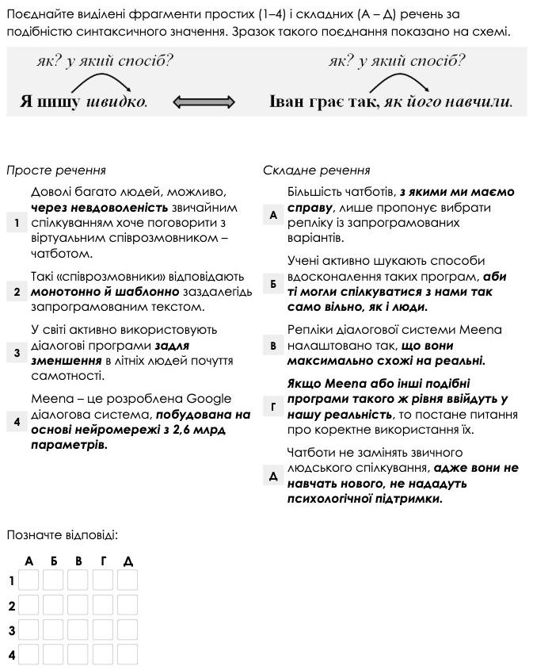
1 через невдоволеність (чому?) → Д адже вони не навчать… — причини
2 монотонно й шаблонно (як?) → В налаштовано так, що… — способу дії
3 задля зменшення (з якою метою?) → Б аби ті могли… — мети
4 побудована на основі нейромережі (яка?) → А з якими ми маємо справу — означальна
Г якщо Meena… ввійдуть — умови, зайве
Відповідь: 1-Д, 2-В, 3-Б, 4-А
🔍 Як розв’язувати: постав питання до виділеного фрагмента простого речення (з якою метою? чому? коли? який? що?), а потім знайди в складному реченні підрядну частину з тим самим питанням.
2. Поєднайте виділені фрагменти простих (1–4) і складних (А–Д) речень за подібністю синтаксичного значення (переговори)
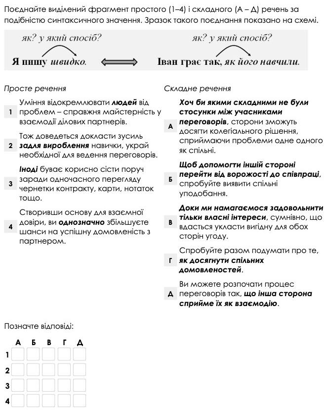
1 людей (кого?) → Г подумати про те, як досягнути… — з’ясувальна
2 задля вироблення (з якою метою?) → Б щоб допомогти… — мети
3 іноді (коли?) → В доки ми намагаємося… — часу
4 однозначно (як?) → Д так, що інша сторона… — способу дії
А хоч би якими складними… — допустова, зайве
Відповідь: 1-Г, 2-Б, 3-В, 4-Д
🔍 Як розв’язувати: постав питання до виділеного фрагмента простого речення (з якою метою? чому? коли? який? що?), а потім знайди в складному реченні підрядну частину з тим самим питанням.
3. Поєднайте виділені фрагменти простих (1–4) і складних (А–Д) речень за подібністю синтаксичного значення (навчання; у ЗНО двічі)
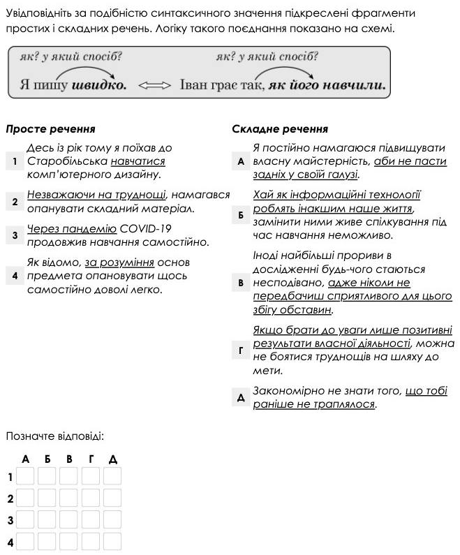
1 навчатися (з якою метою?) → А аби не пасти задніх — мети
2 незважаючи на труднощі (всупереч чому?) → Б хай як технології… — допустова
3 через пандемію (чому?) → В адже ніколи не передбачиш… — причини
4 за розуміння (за якої умови?) → Г якщо брати до уваги… — умови
Д того, що тобі не траплялося — з’ясувальна, зайве
Відповідь: 1-А, 2-Б, 3-В, 4-Г
🔍 Як розв’язувати: постав питання до виділеного фрагмента простого речення (з якою метою? чому? коли? який? що?), а потім знайди в складному реченні підрядну частину з тим самим питанням.
4. Поєднайте виділені фрагменти простих (1–4) і складних (А–Д) речень за подібністю синтаксичного значення (науковий слем; у ЗНО двічі)
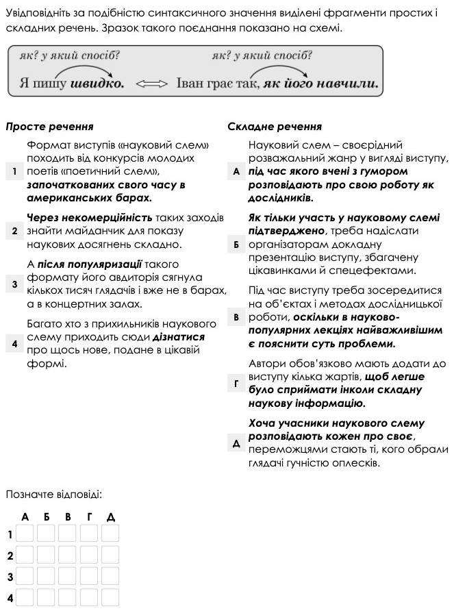
1 започаткованих в американських барах (яких?) → А під час якого… — означальна
2 через некомерційність (чому?) → В оскільки в лекціях… — причини
3 після популяризації (коли?) → Б як тільки участь підтверджено — часу
4 дізнатися (з якою метою?) → Г щоб легше було сприймати — мети
Д хоча учасники розповідають… — допустова, зайве
Відповідь: 1-А, 2-В, 3-Б, 4-Г
🔍 Як розв’язувати: постав питання до виділеного фрагмента простого речення (з якою метою? чому? коли? який? що?), а потім знайди в складному реченні підрядну частину з тим самим питанням.
5. Поєднайте виділені фрагменти простих (1–4) і складних (А–Д) речень за подібністю синтаксичного значення (дезінформація; у ЗНО тричі)
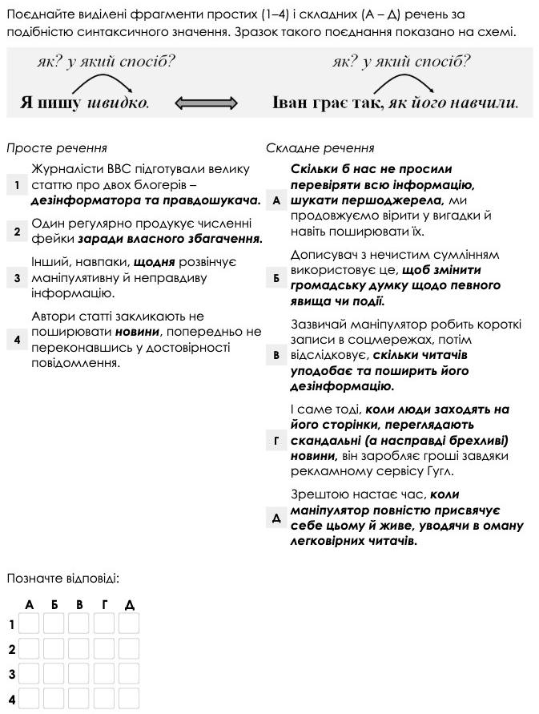
1 дезінформатора та правдошукача (прикладка — яких?) → Д час, коли маніпулятор… — означальна
2 заради збагачення (з якою метою?) → Б щоб змінити громадську думку — мети
3 щодня (коли?) → Г тоді, коли люди заходять… — часу
4 новини (що?) → В відслідковує, скільки читачів… — з’ясувальна
А скільки б нас не просили… — допустова, зайве
Відповідь: 1-Д, 2-Б, 3-Г, 4-В
🔍 Як розв’язувати: постав питання до виділеного фрагмента простого речення (з якою метою? чому? коли? який? що?), а потім знайди в складному реченні підрядну частину з тим самим питанням. Прикладка — різновид означення, тому вона відповідає означальній частині.
6. Поєднайте виділені фрагменти простих (1–4) і складних (А–Д) речень за подібністю синтаксичного значення (українське кіно; у ЗНО тричі)
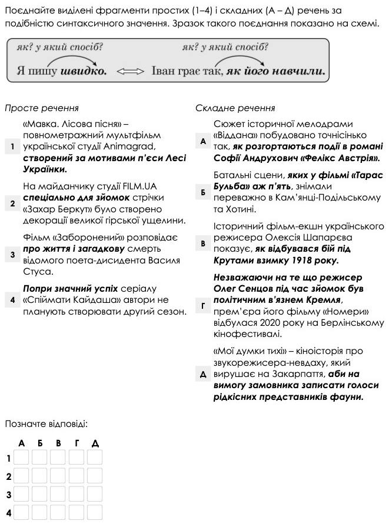
1 створений за мотивами п’єси (який?) → Б яких у фільмі аж п’ять — означальна
2 спеціально для зйомок (з якою метою?) → Д аби записати голоси — мети
3 про життя (про що?) → В показує, як відбувався бій — з’ясувальна
4 попри значний успіх (всупереч чому?) → Г незважаючи на те що… (хоча…) — допустова
А побудовано так, як… — способу дії, зайве
Відповідь: 1-Б, 2-Д, 3-В, 4-Г
🔍 Як розв’язувати: постав питання до виділеного фрагмента простого речення (з якою метою? чому? коли? який? що?), а потім знайди в складному реченні підрядну частину з тим самим питанням.
7. Поєднайте виділені фрагменти простих (1–4) і складних (А–Д) речень за подібністю синтаксичного значення (тестування продукту)
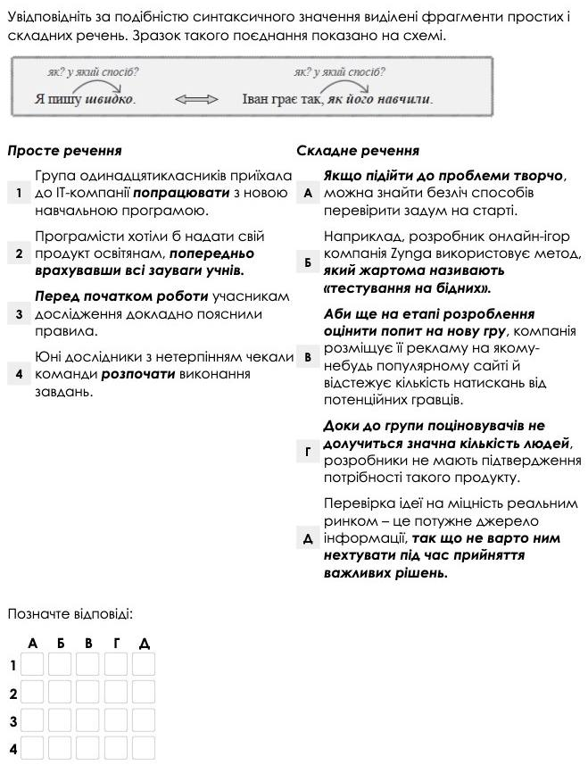
1 попрацювати (з якою метою?) → В аби оцінити попит — мети
2 попередньо врахувавши зауваги (за якої умови?) → А якщо підійти творчо — умови
3 перед початком роботи (коли?) → Г доки… не долучиться — часу
4 розпочати (команди які?) → Б який жартома називають — означальна
Д так що не варто нехтувати — наслідку, зайве
Відповідь: 1-В, 2-А, 3-Г, 4-Б
🔍 Як розв’язувати: постав питання до виділеного фрагмента простого речення (з якою метою? чому? коли? який? що?), а потім знайди в складному реченні підрядну частину з тим самим питанням. Пару 2–А можна сперечатися: дієприслівниковий зворот тут найближчий до умови («якщо врахують зауваги»).
8. Поєднайте виділені фрагменти простих (1–4) і складних (А–Д) речень за подібністю синтаксичного значення (посткросинг; у ЗНО двічі)
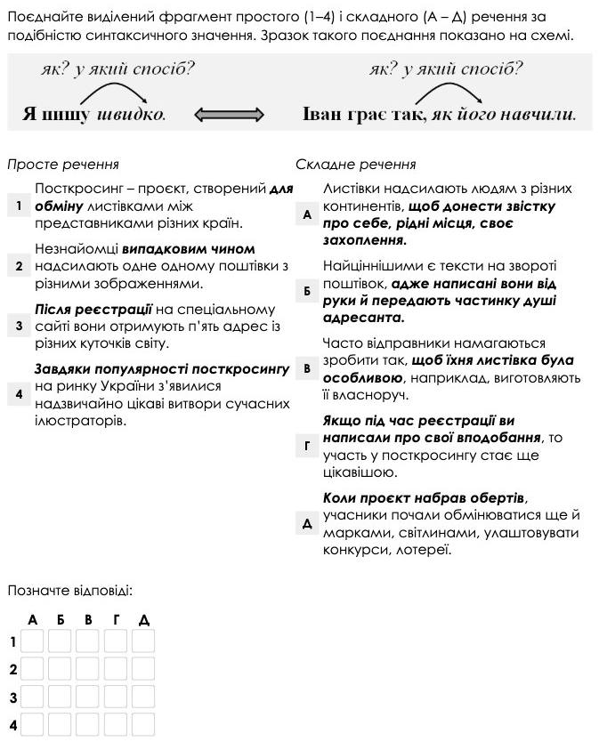
1 для обміну (з якою метою?) → А щоб донести звістку — мети
2 випадковим чином / навмання (як?) → В зробити так, щоб… — способу дії
3 після реєстрації (коли?) → Д коли проєкт набрав обертів — часу
4 завдяки популярності (чому?) → Б адже написані від руки — причини
Г якщо ви написали… — умови, зайве
Відповідь: 1-А, 2-В, 3-Д, 4-Б
🔍 Як розв’язувати: постав питання до виділеного фрагмента простого речення (з якою метою? чому? коли? який? що?), а потім знайди в складному реченні підрядну частину з тим самим питанням.
9. Поєднайте виділені фрагменти простих (1–4) і складних (А–Д) речень за подібністю синтаксичного значення (здорове харчування)
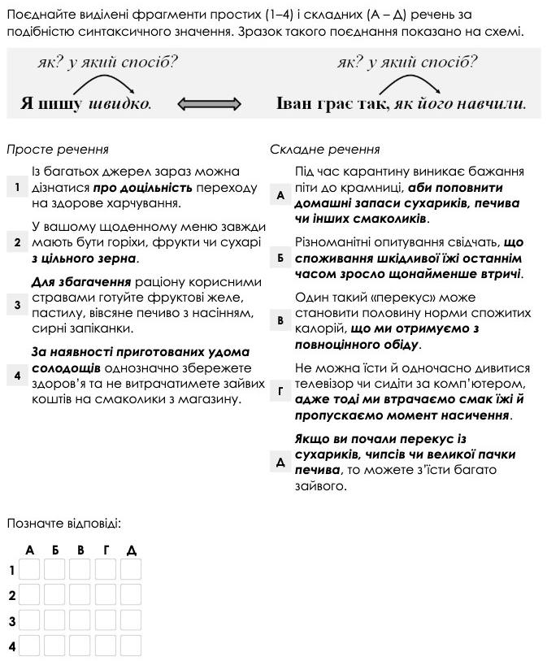
1 про доцільність (про що?) → Б свідчать, що споживання зросло — з’ясувальна
2 з цільного зерна (які?) → В що ми отримуємо з обіду — означальна
3 для збагачення (з якою метою?) → А аби поповнити запаси — мети
4 за наявності солодощів (за якої умови?) → Д якщо ви почали перекус — умови
Г адже ми втрачаємо смак — причини, зайве
Відповідь: 1-Б, 2-В, 3-А, 4-Д
🔍 Як розв’язувати: постав питання до виділеного фрагмента простого речення (з якою метою? чому? коли? який? що?), а потім знайди в складному реченні підрядну частину з тим самим питанням.
10. Поєднайте виділені фрагменти простих (1–4) і складних (А–Д) речень за подібністю синтаксичного значення (українські винахідники)
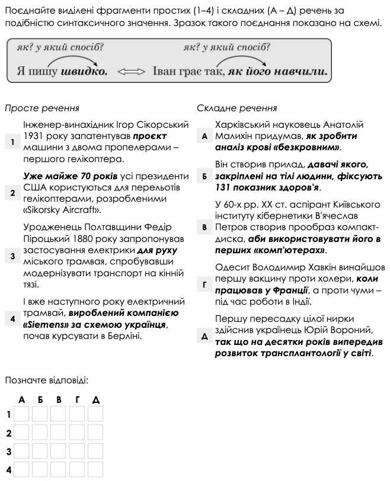
1 проєкт (що?) → А придумав, як зробити аналіз — з’ясувальна
2 уже майже 70 років (відколи? як довго?) → Г коли працював у Франції — часу
3 для руху (з якою метою?) → В аби використовувати — мети
4 вироблений компанією Siemens (який?) → Б давачі якого… — означальна
Д так що випередив — наслідку, зайве
Відповідь: 1-А, 2-Г, 3-В, 4-Б
🔍 Як розв’язувати: постав питання до виділеного фрагмента простого речення (з якою метою? чому? коли? який? що?), а потім знайди в складному реченні підрядну частину з тим самим питанням.
11. Поєднайте виділені фрагменти простих (1–4) і складних (А–Д) речень за подібністю синтаксичного значення (професії майбутнього)
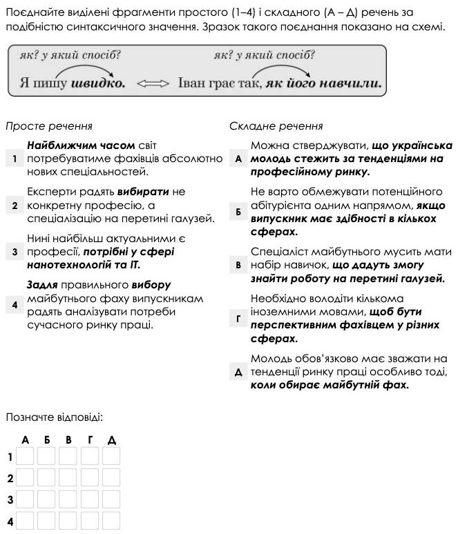
1 найближчим часом (коли?) → Д тоді, коли обирає фах — часу
2 вибирати (радять що?) → А стверджувати, що молодь стежить — з’ясувальна
3 потрібні у сфері нанотехнологій (які?) → В що дадуть змогу — означальна
4 задля вибору (з якою метою?) → Г щоб бути перспективним — мети
Б якщо випускник має здібності — умови, зайве
Відповідь: 1-Д, 2-А, 3-В, 4-Г
🔍 Як розв’язувати: постав питання до виділеного фрагмента простого речення (з якою метою? чому? коли? який? що?), а потім знайди в складному реченні підрядну частину з тим самим питанням.
12. Поєднайте виділені фрагменти простих (1–4) і складних (А–Д) речень за подібністю синтаксичного значення (Неллі Блай)
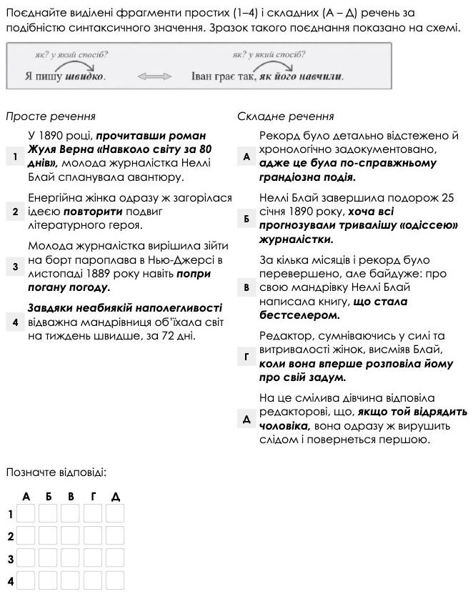
1 прочитавши роман (коли?) → Г коли вона вперше розповіла — часу
2 повторити (ідеєю якою?) → В що стала бестселером — означальна
3 попри погану погоду (всупереч чому?) → Б хоча всі прогнозували — допустова
4 завдяки наполегливості (чому?) → А адже це була подія — причини
Д якщо той відрядить — умови, зайве
Відповідь: 1-Г, 2-В, 3-Б, 4-А
🔍 Як розв’язувати: постав питання до виділеного фрагмента простого речення (з якою метою? чому? коли? який? що?), а потім знайди в складному реченні підрядну частину з тим самим питанням.
13. Поєднайте виділені фрагменти простих (1–4) і складних (А–Д) речень за подібністю синтаксичного значення (відпустка)
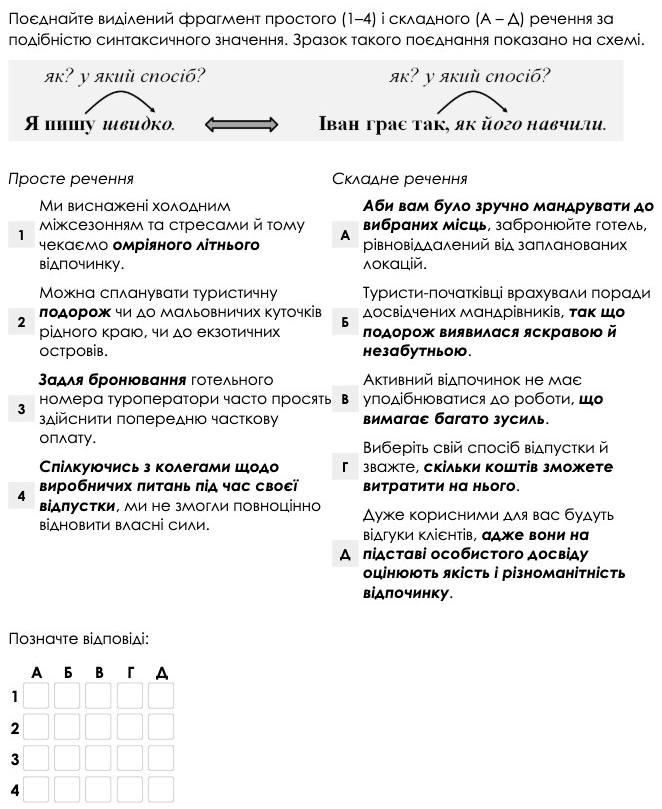
1 омріяного літнього (якого?) → В що вимагає багато зусиль — означальна
2 подорож (що?) → Г зважте, скільки коштів — з’ясувальна
3 задля бронювання (з якою метою?) → А аби вам було зручно — мети
4 спілкуючись з колегами (чому не змогли?) → Д адже вони оцінюють — причини
Б так що подорож виявилася — наслідку, зайве
Відповідь: 1-В, 2-Г, 3-А, 4-Д
🔍 Як розв’язувати: постав питання до виділеного фрагмента простого речення (з якою метою? чому? коли? який? що?), а потім знайди в складному реченні підрядну частину з тим самим питанням.
14. Поєднайте виділені фрагменти простих (1–4) і складних (А–Д) речень за подібністю синтаксичного значення (сонце над Гарбузянами)
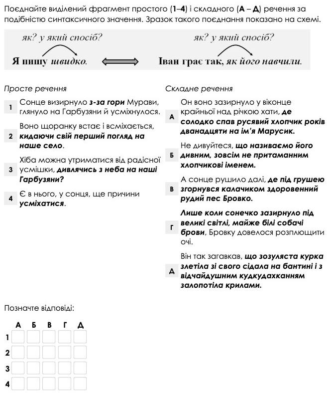
1 з-за гори (звідки?) → В рушило далі, де під грушею… — місця
2 кидаючи погляд (як?) → Д так загавкав, що… — способу дії
3 дивлячись з неба (коли?) → Г лише коли сонечко зазирнуло — часу
4 усміхатися (причини які?) → А хати, де спав хлопчик — означальна
Б не дивуйтеся, що називаємо — з’ясувальна, зайве
Відповідь: 1-В, 2-Д, 3-Г, 4-А
🔍 Як розв’язувати: постав питання до виділеного фрагмента простого речення (з якою метою? чому? коли? який? що?), а потім знайди в складному реченні підрядну частину з тим самим питанням. Обидві частини з «де» схожі, але в А «де» стоїть після іменника «хати» й означає його (яка хата?), а у В відповідає на питання «куди?».
15. Поєднайте виділені фрагменти простих (1–4) і складних (А–Д) речень за подібністю синтаксичного значення (петриківський розпис)
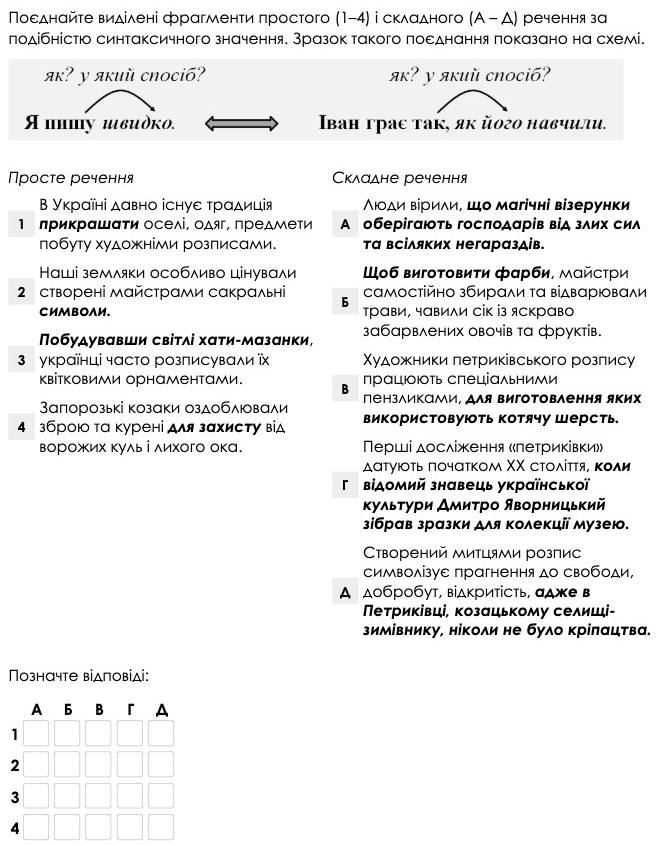
1 прикрашати (традиція яка?) → В для виготовлення яких… — означальна
2 символи (що?) → А вірили, що візерунки оберігають — з’ясувальна
3 побудувавши хати (коли?) → Г коли Яворницький зібрав — часу
4 для захисту (з якою метою?) → Б щоб виготовити фарби — мети
Д адже не було кріпацтва — причини, зайве
Відповідь: 1-В, 2-А, 3-Г, 4-Б
🔍 Як розв’язувати: постав питання до виділеного фрагмента простого речення (з якою метою? чому? коли? який? що?), а потім знайди в складному реченні підрядну частину з тим самим питанням.
16. Поєднайте виділені фрагменти простих (1–4) і складних (А–Д) речень за подібністю синтаксичного значення (писанки)
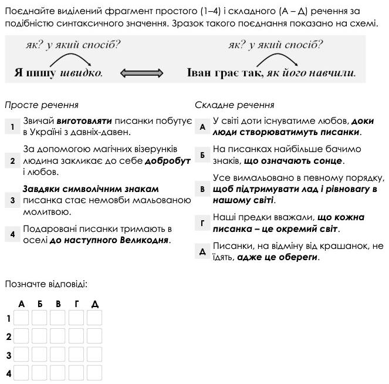
1 виготовляти (звичай який?) → Б знаків, що означають сонце — означальна
2 добробут (що?) → Г вважали, що кожна писанка — з’ясувальна
3 завдяки знакам (чому?) → Д адже це обереги — причини
4 до наступного Великодня (доки?) → А доки люди створюватимуть — часу
В щоб підтримувати лад — мети, зайве
Відповідь: 1-Б, 2-Г, 3-Д, 4-А
🔍 Як розв’язувати: постав питання до виділеного фрагмента простого речення (з якою метою? чому? коли? який? що?), а потім знайди в складному реченні підрядну частину з тим самим питанням.
17. Поєднайте виділені фрагменти простих (1–4) і складних (А–Д) речень за подібністю синтаксичного значення (вінок)
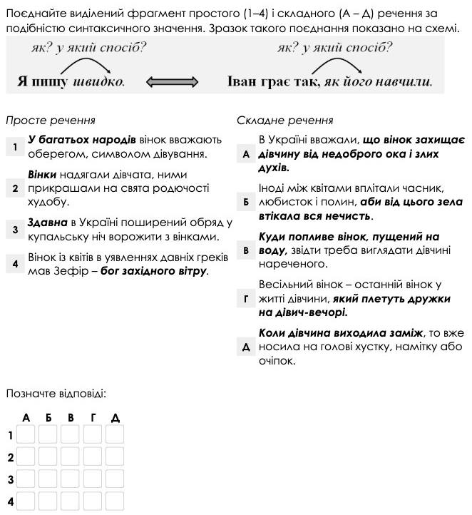
1 у багатьох народів (де?) → В куди попливе вінок, звідти… — місця
2 вінки (що?) → А вважали, що вінок захищає — з’ясувальна
3 здавна (коли?) → Д коли дівчина виходила заміж — часу
4 бог західного вітру (прикладка — який?) → Г який плетуть дружки — означальна
Б аби втікала нечисть — мети, зайве
Відповідь: 1-В, 2-А, 3-Д, 4-Г
🔍 Як розв’язувати: постав питання до виділеного фрагмента простого речення (з якою метою? чому? коли? який? що?), а потім знайди в складному реченні підрядну частину з тим самим питанням.
18. Поєднайте виділені фрагменти простих (1–4) і складних (А–Д) речень за подібністю синтаксичного значення (сакура)
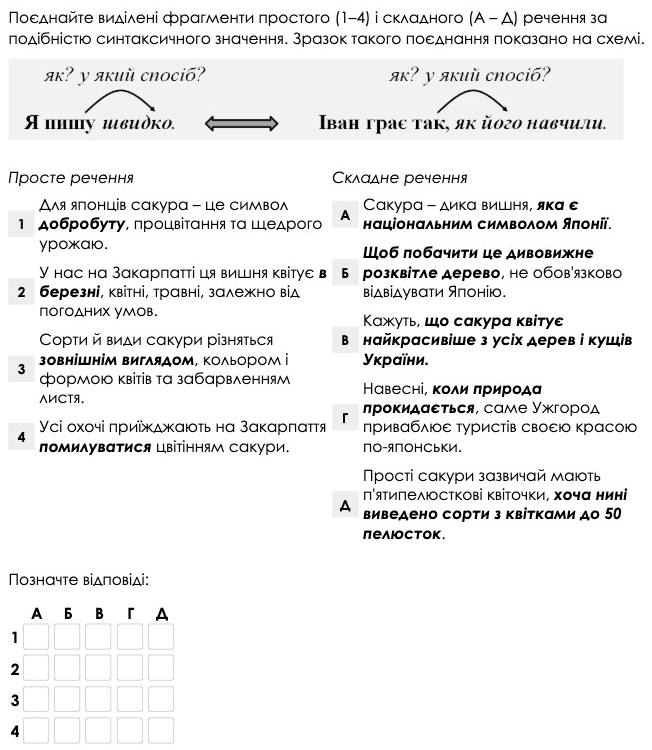
1 добробуту (символ чого? який?) → А яка є символом Японії — означальна
2 в березні (коли?) → Г коли природа прокидається — часу
3 зовнішнім виглядом (чим?) → В кажуть, що сакура квітує — з’ясувальна
4 помилуватися (з якою метою?) → Б щоб побачити дерево — мети
Д хоча нині виведено — допустова, зайве
Відповідь: 1-А, 2-Г, 3-В, 4-Б
🔍 Як розв’язувати: постав питання до виділеного фрагмента простого речення (з якою метою? чому? коли? який? що?), а потім знайди в складному реченні підрядну частину з тим самим питанням.
19. Поєднайте виділені фрагменти простих (1–4) і складних (А–Д) речень за подібністю синтаксичного значення (тропи)
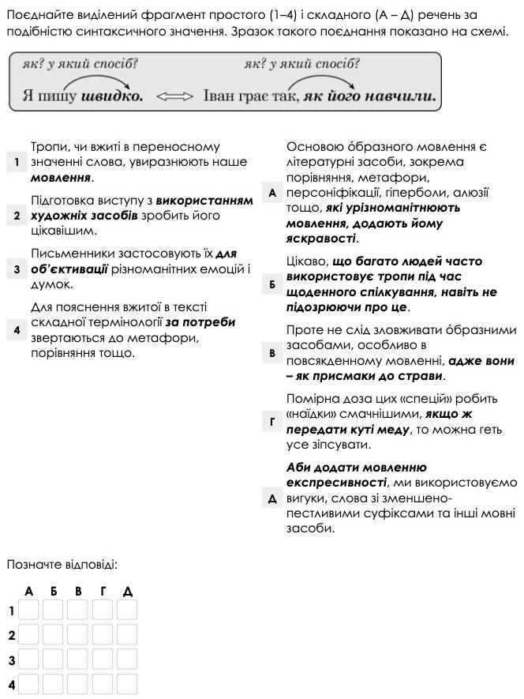
1 мовлення (що?) → Б цікаво, що багато людей… — з’ясувальна
2 з використанням засобів (яка підготовка?) → А які урізноманітнюють мовлення — означальна
3 для об’єктивації (з якою метою?) → Д аби додати експресивності — мети
4 за потреби (за якої умови?) → Г якщо ж передати куті меду — умови
В адже вони — як присмаки — причини, зайве
Відповідь: 1-Б, 2-А, 3-Д, 4-Г
🔍 Як розв’язувати: постав питання до виділеного фрагмента простого речення (з якою метою? чому? коли? який? що?), а потім знайди в складному реченні підрядну частину з тим самим питанням.
20. Поєднайте виділені фрагменти простих (1–4) і складних (А–Д) речень за подібністю синтаксичного значення (деруни)
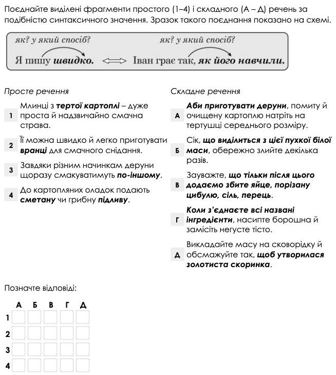
1 тертої картоплі (млинці які?) → Б сік, що виділиться… — означальна
2 вранці (коли?) → Г коли з’єднаєте інгредієнти — часу
3 по-іншому (як?) → Д обсмажуйте так, щоб… — способу дії
4 сметану, підливу (що?) → В зауважте, що тільки після цього — з’ясувальна
А аби приготувати деруни — мети, зайве
Відповідь: 1-Б, 2-Г, 3-Д, 4-В
🔍 Як розв’язувати: постав питання до виділеного фрагмента простого речення (з якою метою? чому? коли? який? що?), а потім знайди в складному реченні підрядну частину з тим самим питанням.
🧩 Завдання ЗНО: синонімічні конструкції й відповідність за змістом (8)
1. Синонімічними до простого речення «Через постійне плазування в тіні ви позбавляєте себе можливості знайти сонце» є всі складні речення, ОКРІМ
А Ви не зможете знайти сонце, якщо виберете плазування в тіні — підрядна умови, а не причини ✓
Б …бо вибрали плазування в тіні — причини
В …тому що вибираєте плазування в тіні — причини
Г …оскільки вибираєте плазування в тіні — причини
Д …адже вибрали плазування в тіні — причини
Відповідь: А
Прийменник через виражає причину; синонімічна підрядна — з бо, тому що, оскільки, адже.
2. Синонімічним до речення «Коли в людини є народ, тоді вона уже людина» є
А Щоб відчувати себе людиною, треба мати підтримку свого народу — мета
Б Оскільки в людини є народ, то вона вже людина — причина
В Через те що в людини є народ, вона почуває себе людиною — причина
Г Аби бути людиною, треба бути частиною рідного народу — мета
Д Якщо в людини є народ, то вона тоді вже людина — умова (коли = якщо) ✓
Відповідь: Д
3. Синонімічним до простого речення «У сучасному світі вивчення мов міжнародного спілкування вкрай потрібне для досягнення особистістю успіху» є складне речення (у ЗНО двічі)
А …вкрай потрібно, тому що так особистість може досягти успіху — причина
Б …вкрай потрібне, щоб особистість могла досягти успіху — мета ✓
В …вкрай потрібно, адже це свідчить про досягнення особистістю успіху — причина, зміст змінено
Г …вкрай потрібне, бо так особистість досягне успіху — причина
Д …вкрай потрібне через те, що так особистість може досягти успіху — причина
Відповідь: Б
Прийменник для виражає мету → підрядна мети зі «щоб». У другому варіанті варіанти переставлено: правильний («щоб») — під літерою А.
4. Реченню «Як свідчить перське прислів’я, доброзичливість… – це коштовність, яка збагачує не того, хто її отримує, а того, хто її дає» НЕ ВІДПОВІДАЄ за змістом речення
А За перським прислів’ям, доброзичливість… не збагачує того, хто її отримує, але обдаровує того, хто її дає — відповідає
Б …збагачує не обдарованого нею, а того, хто обдаровує — відповідає
В …збагачує не того, кому вона адресована, а того, хто її виказав — відповідає
Г …яка хоч і не збагачує того, хто її дає, але обдаровує її отримувача — зміст перевернуто ✓
Д …яку даровано не тому, хто її отримує, а тому, хто її дає — відповідає
Відповідь: Г
5. Вислів: «Для успішної підготовки проєкту вкрай важливо працювати з однодумцями, бо згуртована команда спроможна подолати всі перешкоди». НЕ ВІДПОВІДАЄ йому за змістом речення
А Запам’ятайте: працюючи з однодумцями…, ви переконаєтеся, що лише згуртована команда… — відповідає
Б Зауважте, що для успішної підготовки проєкту треба згуртувати команду однодумців – і вона… зможе подолати всі перешкоди — відповідає
В Майте на увазі: над проєктом потрібно працювати з однодумцями, оскільки згуртована команда здолає всі перешкоди — відповідає
Г Візьміть до уваги: працюючи зі згуртованою командою…, ви пересвідчитеся в здатності однодумців долати всі перешкоди — відповідає
Д Зважте, чи доцільно згуртовувати в одну команду однодумців… — висловлено сумнів, а не рекомендацію ✓
Відповідь: Д
6. Синонімічним до складного речення «Микола Гоголь… змушений був “надягати російський костюм”, щоб показати світові красу української ночі…» є просте речення
А …усупереч показу світові краси… — допустове значення
Б …незважаючи на показ світові краси… — допустове
В …через показ світові краси… — причина
Г …попри показ світові краси… — допустове
Д …заради показу світові краси української ночі й могутнього Дніпра — мета ✓
7. «Навіть якщо ти не маєш змоги змінити обставини, ти завжди можеш змінити своє ставлення до них: це і є справжня свобода вибору». Найточніше відповідає за змістом варіант
А Оскільки обставини не завжди піддаються…, ми завжди змушені змінювати ставлення… — «змушені» спотворює зміст
Б Справжня свобода полягає в тому, щоб змінювати своє сприйняття ситуації, коли самі обставини змінити неможливо ✓
В Якщо обставини змінюються, людина має вибирати… — інший зміст
Г …коли людина свідомо ігнорує зовнішні обставини… — інший зміст
Д Лише та людина є вільною, яка здатна одночасно впливати і на обставини, і на ставлення… — інший зміст
Відповідь: Б
8. Діалог: «– Назаре, обов’язково забери сестру з дитсадка, – попросила мати. – На жаль, не зможу: я пропустив багато репетицій, – відповів син». Точно передає зміст діалогу речення
А Назар знову відмовився…, хоч мати вчергове просила… — «знову», «вчергове» додано
Б Назар поскаржився, мовляв, пропустив багато репетицій через те, що мама постійно доручала… — зміст спотворено
В Матері дуже не сподобалося те, що Назар відмовився… — у діалозі цього немає
Г Мати наполегливо просила Назара забрати сестру з дитсадка, але він відмовився, бо пропустив багато репетицій ✓
Д Мама не вважає репетиції Назара важливою справою… — у діалозі цього немає
Відповідь: Г
🧩 Завдання ЗНО: заміна підрядної частини відокремленим членом і навпаки (8)
1. Не можна замінити дієприслівниковий зворот підрядним обставинним у реченні
А Вийшовши з густого соснового лісу, ми побачили… → Коли ми вийшли…
Б Євген Черниш сидів на траві оддалік, спершись підборіддям на руки — зворот означає спосіб дії, підрядною не замінюється ✓
В Квіти згортали пелюстки, відчуваючи наближення… → бо відчували…
Г Почувши про приїзд театру…, учні зібралися… → Коли учні почули…
Д Працюючи в сучасних лабораторіях, потрібно мати… → Коли працюєш…, потрібно…
Відповідь: Б
2. Відокремленим означенням можна замінити підрядне речення в рядку
А Олесь, який плив поруч… — «пливучий» ненормативне
Б Подвір’я затінює… яблуня, що росте під хатою — «ростуча» ненормативне
В Огірок, що зжовк на сонці, був дуже несмачний → Огірок, зжовклий на сонці… ✓
Г Думки, які роїлися в хлопцевій голові… — дієприкметника немає
Д Пасічник дав скуштувати меду, що пахнув липою — дієприкметника немає
Відповідь: В
Активні дієприкметники теперішнього часу на -учий, -ючий здебільшого ненормативні; від доконаних дієслів минулого часу можна утворити дієприкметник на -лий.
3. Відокремленим означенням можна замінити підрядне речення в рядку (губи, квіти, синиця)
А Радують око… квіти, що ростуть на клумбі — «ростучі» ненормативне
Б Знову бачу синицю, що перелітає з гілки на гілку — «перелітаючу» ненормативне
В Ми зустріли Степанову бабусю, яка купувала фрукти — дієприкметника немає
Г Це був тільки сон, що наснився навесні — дієприкметника немає
Д Ледь-ледь тремтять губи, що посиніли від холоду → губи, посинілі від холоду ✓
Відповідь: Д
4. Відокремленим означенням можна замінити підрядну частину в реченні (квіти, орхідея)
А Краплі дощу, який щойно випав, мерехтіли… — «випалий» уживається рідко
Б Серед квітів, що стояли у вазі… — дієприкметника немає
В Вона дивилася на білу орхідею, яку подарували друзі → на білу орхідею, подаровану друзями ✓
Г Я милуюся барвистими квітами, що ростуть біля будинку — «ростучими» ненормативне
Відповідь: В
Найприродніша заміна — пасивним дієприкметником: «яку подарували» → «подаровану». Формально «щойно випалого» в А теж можливо, але ЗНО очікує В.
5. Відокремленою обставиною можна замінити підрядне речення в рядку
А Сергій був дуже задоволений, що поборов своє хвилювання → Сергій був дуже задоволений, поборовши своє хвилювання (той самий діяч) ✓
Б Коли згадую улюблені пісні, ноги самі пускаються в танок — різні підмети
В Щойно дівчина вийшла на сцену, її зустріли… — різні діячі
Г Треба бути обережним, якщо не хочеш потрапити в халепу — безособове головне
Д Лиш ми вирушили в дорогу, став накрапати… дощик — різні підмети
Відповідь: А
Заміна можлива, коли дію головної й підрядної виконує той самий діяч. Варіант Г теж формально перетворюваний («Не бажаючи потрапити в халепу, треба бути обережним»), але найімовірніша відповідь ЗНО — А.
6. Відокремленою обставиною можна замінити підрядне речення в рядку (у ЗНО двічі)
А Де б хор не виступав, скрізь його радо вітали — різні діячі
Б Коли приїхали з лісу додому, було вже зовсім темно — головне безособове
В Як купуєте товар, вимагайте від продавця чек → Купуючи товар, вимагайте… (той самий діяч — ви) ✓
Г Відколи знаю Оксану, вона дивує мене… — різні підмети
Д Якщо виходите з кімнати, світло автоматично вимикається — різні підмети
Відповідь: В
7. Підрядним реченням причини можна замінити відокремлену обставину в рядку
А …стоять обабіч вулиці, підпираючи високу баню неба — спосіб дії
Б Незважаючи на ранню весну, надворі… душно — допустове значення
В Ясний місяць зблід, засоромившись зірки та червоного ранку → бо засоромився… ✓
Г Сонце, щойно викотившись, тихо пливло… — час
Д Останні промені, попри всі спроби зачепитися за обрій… — допустове
Відповідь: В
8. Відокремленою обставиною можна замінити підрядну частину в реченні
А Якщо ти прагнеш здобути перемогу, друзі повинні бути поруч — різні підмети
Б Водій загальмував на перехресті, щоб ми швидко вийшли… — різні підмети
В Коли ми зійшли на ту гору, керівник групи дав команду… — різні підмети
Г Коли Назар думає про осінь, у його уяві виринають жовті листочки — різні підмети
Д Я біг досить-таки повільно, бо відчував страшну втому в ногах → відчуваючи страшну втому в ногах ✓
Відповідь: Д
190🔗 Складне безсполучникове речення
Чотири види складного речення: складносурядне (дві основи, сполучники сурядності); складнопідрядне (дві основи, можна поставити питання, є сполучники підрядності або сполучні слова); складне безсполучникове (дві основи, між якими немає сполучників); речення з різними видами зв’язку (мінімум три основи, серед яких поєднуються різні типи зв’язку).
Складне безсполучникове речення може складатися з двох і більше рівноправних між собою частин. Між частинами можуть ставитися кома (найчастіше), тире, двокрапка, рідше — крапка з комою. Частини такого речення можуть виражати одночасність, послідовність дій, причину, пояснення, умову, час, наслідок, зіставлення чи протиставлення. Головна особливість — відсутність сполучників, тому основним засобом зв’язку між частинами є інтонація.
Випадків, коли між частинами безсполучникового складного речення взагалі немає жодного розділового знака, не буває — завжди ставиться або кома, або тире, або двокрапка, або (рідко) крапка з комою.
Три приклади на три основні знаки
«Сонце гріє, вітер віє з поля на долину» — дві основи, кома. «Я знаю: мова моя свята» — дві основи, двокрапка. «Була б охота — знайдеться робота» — дві основи, тире.
191✏️ Кома в безсполучниковому реченні
Кома ставиться, якщо між частинами — одночасність або послідовність дій.
одночасність: «Був теплий день, світилася весна» — обидві дії відбуваються одночасно;
послідовність: «Сонце зайшло, озера стали темно-червоними» — спочатку одна дія, потім інша.
192⁝ Двокрапка в безсполучниковому реченні
друга частина розкриває, доповнює зміст першої — можна поставити питання що саме?: «Мати вірила: земля усе знає» — вірила що саме? що земля усе знає;
друга частина вказує на причину того, про що йдеться в першій, — можна поставити питання чому?: «Умовк кобзар сумуючи: щось руки не грають» — умовк чому? бо руки не грають.
Перевірка на двокрапку
Завжди питання що саме? або чому?
Двокрапка ніколи не ставиться в сурядному чи підрядному реченні — лише в безсполучниковому.
193➖ Тире в безсполучниковому реченні
Тире ставиться в найбільшій кількості випадків:
зміст частин зіставляється або протиставляється (можна подумки підставити сполучники а, але): «Літо дбає — зима поїдає»;
швидка зміна подій: «Оглянувся — в порту вже кипить бій»;
перша частина виражає час або умову того, про що йдеться в другій (можна підставити якщо чи коли): «Захочеш пити — підеш до струмка»; «Посієш в пору — матимеш зерна гору»;
друга частина виражає наслідок, результат або висновок з першої: «На поле набігла тінь — ділянка темніє»;
частини порівнюються між собою.
194🔸 Крапка з комою
Крапка з комою трапляється дуже рідко — на НМТ це майже не зустрічається. Ставиться, якщо частини безсполучникового речення вже містять власні розділові знаки всередині (наприклад, через відокремлені означення чи обставини) або дуже поширені, або якщо частини далекі одна від одної за змістом.
195🧾 Завдання: розпізнавання розділових знаків
Добудова другої частини до заданого початку («Головною в байках [автора] є його філософія…»), щоб утворилося саме безсполучникове речення: правильний варіант додавав другу самостійну основу без сполучника («…вона становила…»), тоді як інші варіанти давали або просте речення з однорідними членами, або відокремлену прикладку, або відокремлене означення, або складносурядне речення.
Пошук речення, де ставиться двокрапка: «Люблю [пору]: мрії, сподівання народжуються» (двокрапка, питання чому?) — на відміну від варіантів, де замість другої основи йшло лише поширене означення чи прикладка (там ставилися кома або тире, а не двокрапка).
«Сашко задихався та зморився: [вони] бігли з [товаришем] більше години» — двокрапка, питання чому?
«Осінь ходить, трусить» — просте речення з однорідними присудками, двокрапка тут не потрібна.
«Знаю: мені вистачить сил подолати перешкоди» — двокрапка, питання що саме?
«Завжди уважно і зацікавлено слухаю [співрозмовника]: [так] можна побачити його інтелектуальний рівень» — двокрапка, питання чому?
🧩 Завдання ЗНО: безсполучникове речення — будова і смислові відношення (11)
1. Текст «Надворі було по-особливому тихо…». Складним є речення
А друге — просте з дієприслівниковим зворотом ✗
Б третє — «А поруч з ним поблискували зорі, вимальовувалися непевні перші промені» ✓
В четверте — просте з однорідними присудками ✗
Г п’яте — просте з однорідними присудками ✗
Відповідь: Б
Дві основи (зорі поблискували; промені вимальовувалися) без сполучника — складне безсполучникове.
2. Текст «У моїй батьківщині…». Складним безсполучниковим є речення
А друге — «Удосвіта часом кукурікають півні, вечорами линуть догори сині димочки» ✓
Б третє — просте ✗
В четверте — з різними видами зв’язку (і, щоб) ✗
Г п’яте — просте ✗
Відповідь: А
3. Текст про пасіку. Складним безсполучниковим є речення
А перше ✗
Б третє — просте з однорідними присудками ✗
В четверте — складносурядне (і) ✗
Г п’яте — «Ось щось торкнулося моєї руки: це одна з бджілок…» ✓
Відповідь: Г
4. Приєднайте до «Сучасні пристрої мають допомагати користувачеві…» фрагменти та визначте тип речення
1 …оскільки були створені власне для цього → В складнопідрядне
2 …й полегшувати життя в інформаційному світі → А просте з однорідними членами
3 …але надмірна залежність від них є небезпечною → Г складносурядне
4 …їхня важлива функція – пошук інформації → Д складне безсполучникове
Б просте з відокремленими членами — зайве
Відповідь: 1-В, 2-А, 3-Г, 4-Д
5. Приєднайте до «Парламентарі неодмінно ухвалять це рішення…» варіанти та визначте тип речення
1 …завчасно провівши тривалі консультації у фракціях → Б просте з відокремленим членом
2 …потім же все залежатиме від професійних дій уряду → Д складне безсполучникове
3 …як у сесійній залі оголосять початок… засідання → В складнопідрядне
4 …але доручать Кабінетові Міністрів розробити програму дій → А просте з однорідними членами (присудками)
Г складносурядне — зайве
Відповідь: 1-Б, 2-Д, 3-В, 4-А
Пастка: «але доручать» не має нового підмета — це однорідний присудок.
6. Приєднайте до «Ластівки літали понад самою землею…» варіанти та визначте тип речення
1 …навіть хлопчаки їх не лякали → Д складне безсполучникове
2 …сповіщали про наближення дощу → Б просте з однорідними членами
3 …дарма що шуліка висів у небі → В складнопідрядне
4 …і байдуже їм було до всього → Г складносурядне
А просте з відокремленими членами — зайве
Відповідь: 1-Д, 2-Б, 3-В, 4-Г
«Байдуже їм було» — окрема безособова основа, тому це складносурядне.
7. Приєднайте до «Продукти в холодильнику треба зберігати за певними правилами…» варіанти та визначте тип речення
1 …щоб запобігти швидкому псуванню харчів → В складнопідрядне
2 …зважаючи на небезпеку розмноження шкідливих бактерій → А просте з відокремленими членами
3 …тільки так у ньому не з’являтимуться сторонні запахи → Д складне безсполучникове
4 …і тоді сімейні витрати будуть суттєво меншими → Г складносурядне
Б просте з однорідними членами — зайве
Відповідь: 1-В, 2-А, 3-Д, 4-Г
Частину «щоб + інфінітив» ЗНО тут вважає підрядною мети.
8. Безсполучникове складне речення утвориться, якщо до «Головною в байках Сковороди є його філософія…» додати
А безцінне «зерно істини», пізнане автором — прикладка ✗
Б а не їхня складна мова чи прозова форма — однорідні члени ✗
В саме вона становила сенс життя мудреця — нова основа без сполучника ✓
Г і ми прагнемо осягнути її глибинну суть — складносурядне ✗
Д прихована в алегоричних образах — відокремлене означення ✗
Відповідь: В
9. Доберіть приклад до кожного типу складного речення (служба порятунку)
1 складносурядне → Д …найбільше знають саме номер «911», а в Україні… викликати… можна за телефоном «112»
2 складнопідрядне → Б Першість цього винаходу належить лондонцям, адже їхня служба почала діяти…
3 безсполучникове → А …з’явилася в… Хейлівілі: 16 лютого 1968 року… конгресмен зробив… дзвінок…
4 з різними видами зв’язку → Г Це диспетчерська, що з’єднана…, її номер завжди має три цифри, які…
В Для швидкого реагування… більшість країн нині має… службу… — просте, зайве
Відповідь: 1-Д, 2-Б, 3-А, 4-Г
У ЗНО «адже» — підрядний сполучник причини.
10. До кожного смислового відношення в безсполучниковому реченні доберіть приклад
1 перше — умова, друге — наслідок → Д Була б охота – знайдеться робота
2 перше — причина, друге — наслідок → В Защебетав соловейко – пішла луна гаєм
3 друге пояснює перше → Г Здалось на мить: пливе у небі срібний човен
4 друге — причина дії в першому → А Оксані радість: мати одрізала з полотна хустку
Б Сохне стерня, затихають лани — одночасність (перелік), зайве
Відповідь: 1-Д, 2-В, 3-Г, 4-А
Двокрапка — коли друга частина пояснює чи вказує причину; тире — умова, час, наслідок, протиставлення.
11. Який смисловий зв’язок між частинами безсполучникових речень
1 одночасність подій → А Дзвенить у зорях небо чисте, палає синім льодом шлях
2 друга — причина першої → В Далеко на сході стало червоніти небо: сонце сходило
3 перша — умова другої → Б Не навчив батько — не навчить і дядько
4 друга доповнює, розкриває зміст першої → Д Мені здається: твої очі світять з вишини
Г Роса блищить на сонці — чисте срібло — порівняння, зайве
Відповідь: 1-А, 2-В, 3-Б, 4-Д
🧩 Завдання ЗНО: двокрапка, тире чи кома в безсполучниковому реченні (13)
1. Безсполучникове складне речення, між частинами якого слід поставити тире
А Переконатися пора: зробивши зло, не жди добра — пояснення, двокрапка ✗
Б Одним заспокоюю себе: у мене ще все попереду — двокрапка ✗
В У товаристві лад – усяк тому радіє — наслідок, тире ✓
Г Добре сказано Сенекою: жорстокість народжується… — двокрапка ✗
Д Не повернуть минулого ніколи: воно пройшло… — причина, двокрапка ✗
Відповідь: В
2. Безсполучникове складне речення, між частинами якого слід поставити ТИРЕ
А Відбились зорі у воді, летять до хмар тумани — перелік, кома ✗
Б Життя росте лишень з любові, лише краса людей навчає жить — кома ✗
В Дощ пройшов хазяйським кроком – сад в росі купається — наслідок ✓
Г Дуже дивний пейзаж: косяками ідуть таланти — пояснення, двокрапка ✗
Д Степ половецький половіє: трава аж срібна від роси — причина, двокрапка ✗
Відповідь: В
3. Двокрапку треба поставити в реченні (у ЗНО двічі)
А Вже тиха осінь ходить берегами, на вербах трусить листячко руде — кома ✗
Б Сашко задихався та зморився: більше години вони бігли з Сіроманцем — друга частина вказує причину ✓
В Сонце зайшло – степові озера стали… темно-червоними — тире ✗
Г Брязне клинок об залізо кайданів – піде луна… — умова, тире ✗
Д Спочатку Тимко образився і хотів піти, потім передумав і залишився — кома ✗
Відповідь: Б
4. Двокрапку треба поставити в складному безсполучниковому реченні
А Здобули волю – відшукали долю ✗
Б Посієш впору – збереш зерна гору — умова ✗
В Гаї шумлять – я слухаю, хмарки біжать – милуюся ✗
Г Повіяв вітер по долині – пішла дібровою луна ✗
Д Знаю одне: мені вистачить сил подолать перешкоди — друга частина розкриває «одне» ✓
Відповідь: Д
5. Двокрапку треба поставити між частинами безсполучникового речення
А Поплив би я на той бік – човна не дають — протиставлення, тире ✗
Б На білу гречку впали роси – веселі бджоли одгули ✗
В Сонце впало на сизу хмару – обрій полум’ям запалав — наслідок ✗
Г А вранці осінь встане – в косі янтарній нитка сивини ✗
Д Мені снилось: мельник я у старому млині — розкриває зміст ✓
Відповідь: Д
Варіант А можна сприйняти як причину (двокрапка), але тут протиставлення «хотів би, а не можу» — тому тире.
6. Двокрапку треба поставити, якщо до «Люблю теплу весняну пору…» додати
А кидаю всі невідкладні справи та йду в поля далекі ✗
Б у цей час народжуються нові потаємні мрії та сподівання — причина ✓
В час пробудження природи… — прикладка, тире ✗
Г ласкаву, сонячну… — відокремлені означення, кома ✗
7. Двокрапку треба поставити, якщо до «Завжди уважно й зацікавлено слухаю кожного співрозмовника…» додати
А який по-новому оцінює… — підрядна, кома ✗
Б потім ставлю йому питання… — кома ✗
В саме так можна «побачити» його інтелектуальний рівень — пояснює, навіщо слухаю ✓
Г потенційного натхненника… — прикладка, тире ✗
Д і саме це допомагає… — складносурядне, кома ✗
Відповідь: В
8. Пунктуаційну помилку допущено в рядку
А Сонце зайшло – почало швидко сутеніти ✗
Б Я знаю – літо має обов’язково повернутися — треба двокрапку: «Я знаю: …» ✓
В Погода була чудова: світило сонце, вітру не було ✗
Г Мама попередила: «Обов’язково надягни куртку» ✗
Д Трава, кущі, дерева – усе навколо зеленіло ✗
Відповідь: Б
Після дієслів знаю, бачу, чую, здається перед частиною, що розкриває зміст, ставимо двокрапку.
9. Доберіть розділовий знак на місці крапок
1 кома → Д І сонце падало за тьмяним морем трав, на землю маки кинувши червоні (дієприслівниковий зворот)
2 двокрапка → А Знаю я: моє ім’я не згасне…
3 тире → Г Вдихати вітер Батьківщини – найвище щастя на землі (між підметом і присудком)
4 дужки → Б …що врубується в простір (Сергій Жадан)
В Ось ранок синім возом їде… — зайве
Відповідь: 1-Д, 2-А, 3-Г, 4-Б
10. Який розділовий знак треба поставити на місці крапок
1 кома → В Вона прийшла, заквітчана і мила, і руки лагідно до мене простягла
2 тире → А В житті мені весь вік тужити – не жити
3 двокрапка → Д Бо така вже природа агави: вона цвіте, щоб умерти…
4 дужки → Б …срібним сяйвом ріки стелить (Б.-І. Антонич)
Г І розкажім собі обіймами про тишину над оболонями — знак не потрібен, зайве
Відповідь: 1-В, 2-А, 3-Д, 4-Б
11. Доберіть до кожного речення з пропусками розділовий знак
1 І пригадалося йому дитинство: над водами хиляться лози… → Б двокрапка (розкриває зміст)
2 У затінках попід гінкою ліщиною (рибалки тут щоосені вудлища собі ріжуть) прозоро-зелені шпичаки конвалій… → Д дужки (вставне речення)
3 З добрим поживеш – добро переймеш, а з лихим зійдешся – того й наберешся → В тире (умова)
4 Реве Дніпро, й лани широкополі медами пахнуть, колосом шумлять → А кома
Г лапки — зайве
Відповідь: 1-Б, 2-Д, 3-В, 4-А
12. До випадку вживання двокрапки доберіть приклад
1 після узагальнювального слова → А …все пропадало: небо, гори, ліси, пастухи
2 друга частина розкриває зміст першої → Б …а із синім небом уже щось діється: воно то зблідне…, то спалахне…
3 друга частина — причина першої → В …то з гуртом єднайся ти: вкупі більше зробиш діла…
4 між частинами складнопідрядного → Д …співають ідучи: як проводжала сина мати, як бивсь татарин…
Г …нарікають: «І нащо зима та люта?» — пряма мова, зайве
Відповідь: 1-А, 2-Б, 3-В, 4-Д
У Д двокрапка стоїть перед однорідними підрядними частинами, що розкривають «співають».
13. «Надходить пора переміщення барв (1) а сині верховіття… ще розгойдують… відтінки (2) і відчуваєш (3) скрізь причаїлися… тіні (4) тому стало і повніше навколо (5) і більш тривожно на серці». Кому треба ставити на місці всіх цифр, ОКРІМ
А 1 — перед а ✗
Б 2 — перед і між частинами ✗
В 3 — після «відчуваєш» ✗
Г 4 — перед «тому» ✗
Д 5 — «і повніше навколо і більш тривожно»: однорідні члени з одиничним і ✓
Відповідь: Д
На місці 3 цілком можлива й двокрапка (друга частина розкриває «відчуваєш»), але ключ ЗНО — Д.
🧩 Завдання ЗНО: випадки вживання тире (14)
1. Доберіть приклад до кожної умови вживання тире (у ЗНО тричі)
1 між підметом і присудком → Б Бути особистістю – це бути самостійним джерелом дії
2 на місці пропущеного члена → А Краще кепсько виконати свій обов’язок, аніж добре – чужий
3 при відокремленій прикладці → Д Я знаю лише одного тирана – тихий голос мого сумління
4 у безсполучниковому реченні → В Звільнишся від зла – у тебе залишиться лише добро
Г Любов (Чесність), щирість, милосердя – такі риси… — перед узагальнювальним словом, зайве
Відповідь: 1-Б, 2-А, 3-Д, 4-В
У варіантах різниться лише перше слово в Г (Любов / Чесність).
2. Доберіть приклад до кожного випадку вживання тире (у ЗНО двічі)
1 між підметом і присудком → Б Здобути волю — то мій рай
2 перед узагальнювальним словом → А Тонкі брови, русяві… кучері, рум’яні губи — усе це дихало…
3 при відокремленій прикладці → В Я тільки тепер побачив село — нужденну купку солом’яних стріх
4 у безсполучниковому реченні → Д Прийде осінь — у засіках буде хліб золотий
Г …а від великих — серце — пропущений член, зайве
Відповідь: 1-Б, 2-А, 3-В, 4-Д
3. Доберіть приклад до кожного випадку вживання тире
1 перед узагальнювальним словом → Б І сльози, і прокльони — все мине
2 між підметом і присудком → А А мова — то пісня душі…
3 при відокремленій прикладці → В І ось прийшла неділя — день легкий
4 між частинами безсполучникового → Г Мало життя прожити — треба життя зрозуміти
Д Я усміхнусь — і все навкруг сміється — складносурядне, зайве
Відповідь: 1-Б, 2-А, 3-В, 4-Г
Тире перед і — ознака складносурядного, а не безсполучникового речення.
4. Доберіть приклад до кожного випадку вживання тире (у ЗНО двічі)
1 перед узагальнювальним словом → Б Мемуари, щоденники, листи – усе це… / Ні сивий академік, ні учитель, ні учень – ніхто не відповість…
2 між підметом і присудком → Г У будь-якій ситуації залишатися Людиною – ось єдина умова життя
3 при відокремленій прикладці → Д Часом над горами встає веселка – різнобарвний стовп світла
4 у безсполучниковому реченні → В Соловей співає – серце завмирає
А Дмухнув вітрець – і мрії ті пропали — складносурядне, зайве
Відповідь: 1-Б, 2-Г, 3-Д, 4-В
Два варіанти завдання різняться лише реченням Б; відповідь однакова.
5. Доберіть приклад до кожного випадку вживання тире (у ЗНО тричі)
1 у неповному реченні → В Зацвіла тендітно-біла конвалія в гаю, а сонячні кульбабки – біля ставу
2 при відокремленій прикладці → А …любив він осінь – природи солодку зрілість
3 при однорідних членах → Д Зображення флори і фауни: квітів, дерев, тварин – свідчать…
4 між підметом і присудком → Г Класична пластика, і контур строгий, і логіки залізна течія – це справжньої поезії дороги
Б Дівчина внесла оберемок… квітів – до цього похмура кімната враз ожила — безсполучникове, зайве
Відповідь: 1-В, 2-А, 3-Д, 4-Г
У Д тире закриває однорідні члени після узагальнювального слова в середині речення.
6. Доберіть умову вживання тире до кожного прикладу
1 Десь недалеко вдарив грім – луна котилася глухо… → Б у безсполучниковому реченні
2 Ні талановитий учень, ні… учитель, ні сивий академік – ніхто не може знати… → Г при однорідних членах
3 Моя мати – наївність, тиха жура і добрість безмежна → Д між підметом і присудком
4 …а половину – у негативні… → В на місці пропущеного члена
А при відокремленому означенні — зайве
Відповідь: 1-Б, 2-Г, 3-Д, 4-В
7. Доберіть приклад до кожної умови вживання тире (Василь Єрошенко)
1 при відокремленій прикладці → А …творчість Василя Яковича Єрошенка – видатного письменника, філософа…
2 між підметом і присудком → Г Українець Василь Єрошенко – класик японської літератури…
3 у безсполучниковому реченні → Б …був… популярним письменником – у Європі ж мало хто чув…
4 у реченні з однорідними членами → В Найскладніші… мови: японську, китайську – письменник знав…
Д …залишив по собі яскравий слід – і кому, як не нам… — складносурядне, зайве
Відповідь: 1-А, 2-Г, 3-Б, 4-В
8. Доберіть обґрунтування вживання тире до кожного речення
1 У мене жодних претензій нема до Долі – моєї обраниці → В при відокремленій прикладці
2 Кохати – нові землі відкривати… → Д між підметом і присудком
3 Не встигне вийти річка з берегів – весна пливе під парусом акацій → А у безсполучниковому реченні
4 За ним – рожевий. Потім – фіалковий → Б на місці пропущеного члена
Г при однорідних членах — зайве
Відповідь: 1-В, 2-Д, 3-А, 4-Б
9. Доберіть умову вживання тире до кожного прикладу (кава і шоколад)
1 …рекламу кави, чаю i шоколаду – нових смаколиків… → Б при однорідних членах (узагальнювальне слово після них)
2 …а от у католицьких – гарячий шоколад → В на місці пропущеного члена
3 …основну властивість цього напою – здатність стимулювати мислення → А при відокремленій прикладці
4 Гарячий шоколад п’ють для розслаблення – каву ж споживають для бадьорості → Г у безсполучниковому реченні
Д між підметом і присудком — зайве
Відповідь: 1-Б, 2-В, 3-А, 4-Г
Речення 1 можна прочитати і як прикладку, але прикладка тут — речення 3, тож для 1 лишається узагальнювальне слово «смаколиків».
10. Доберіть приклад до кожної умови вживання тире
1 між підметом і присудком → В Важливе завдання школи – виховати людину…
2 перед узагальнювальним словом → Б Ні сивий академік, ні вчитель, ні учень – ніхто не відповість…
3 при відокремленій прикладці → Г …мерехтіли далекі вогники сіл – теплі земні зірки
4 між частинами безсполучникового → А …налетів вітер – зашуміли гіллям… тополі
Д Туман уже піднявся… – і небо огорнулося… — складносурядне, зайве
Відповідь: 1-В, 2-Б, 3-Г, 4-А
11. Доберіть приклад речення до кожної умови вживання тире (прислів’я)
1 між частинами безсполучникового → Г Копаєш яму іншому – відразу міряй на свій зріст
2 на місці пропущеного члена → А Заздрість літає в повітрі, доброта – поміж людей
3 між підметом і присудком → В Повчальний збиток – теж прибуток…
4 при однорідних членах → Д Три світочі: істина, природа, знання – здатні розвіяти морок
Б Упертий не схоче – i на бруківці він не побачить каменя — складносурядне, зайве
Відповідь: 1-Г, 2-А, 3-В, 4-Д
12. До умови вживання тире доберіть приклад речення (скіфська пектораль)
1 між частинами безсполучникового → Д …грабували кургани – пектораль залишилася недоторканою…
2 між частинами складносурядного → Б …розчистив шар щільного чорнозему – і раптом у темряві… спалахнуло…
3 між підметом і присудком → В Скіфська пектораль – це унікальна нагрудна прикраса…
4 при відокремленій прикладці → А …в кургані Товста Могила – унікальній усипальниці…
Г Досконале плетіння…, реалістичні постаті… – усе це зливається… — перед узагальнювальним словом, зайве
Відповідь: 1-Д, 2-Б, 3-В, 4-А
13. До кожного випадку вживання коми доберіть приклад
1 між однорідними членами → А Не страшна тобі ані посуха, ані дощ
2 при відокремленому члені → В Жайворонок висить на невидимій нитці, співаючи весну
3 між частинами безсполучникового → Г Лягло сонце за горою, зірки засіяли
4 між частинами складносурядного → Б Сичі в гаю перекликались, та ясен раз у раз скрипів
Д Зоре моя вечірняя, зійди над горою — кома при звертанні, зайве
Відповідь: 1-А, 2-В, 3-Г, 4-Б
14. Доберіть приклад до кожного випадку вживання коми
1 у безсполучниковому реченні → Г Десь скрадливо скрипнула хвіртка, насмішливо обізвався дівочий голос
2 у складнопідрядному → Д …затонулі тіні хат, на яких сторч головою дрімали лелеки
3 у складносурядному → В Яра пшениця була молода й висока, а горді соняшники стояли ще вищі
4 при відокремленій обставині → Б Уткнувшись у тепло долин, вітер… погойдував…
А Між зеленими садами, між сірими стінами… — однорідні обставини, зайве
Відповідь: 1-Г, 2-Д, 3-В, 4-Б
🧩 Завдання ЗНО: обґрунтування розділових знаків і помилки в тексті (10)
1. Текст «Надворі було по-особливому тихо…». Пунктуаційну помилку допущено в реченні
А другому — «загортаючись у діряву ковдру з хмар, надломлений місяць»: зворот не закрито комою ✓
Б третьому ✗
В п’ятому ✗
Г шостому ✗
Відповідь: А
2. Текст «Стояла тиха травнева ніч…». Пунктуаційну помилку допущено в реченні
А другому ✗
Б третьому ✗
В п’ятому — «Відтого прокинувся та побрів…»: зайва кома між однорідними присудками ✓
Г восьмому ✗
Відповідь: В
Та в значенні «і» між однорідними членами кому не потребує.
3. Текст про аеродром. Пунктуаційну помилку допущено в реченні
А першому ✗
Б другому ✗
В третьому ✗
Г четвертому — «лунко підіймалося й опадало вниз»: зайва кома перед й ✓
Відповідь: Г
4. Пунктуаційна помилка є в реченні, позначеному (текст про воду)
А △ «Однак, чиста вода в Україні є…» — після сполучника «однак» кома не потрібна ✓
Б ○ ✗
В ◇ ✗
Г □ ✗
Д ⏢ ✗
Відповідь: А
«Однак» на початку речення — сполучник, а не вставне слово.
5. «Майте на увазі(1), Дейл Карнегі(2), усесвітньо відомий психолог(3), пропонує… співрозмовником(4): заохочуючи інших…(5), будь уважним слухачем…(6), бо людей…». НЕПРАВИЛЬНЕ пояснення
А кома 1 – при вставних словах ✗
Б коми 2, 3 – при відокремленій прикладці ✗
В двокрапка 4 – при однорідних членах — насправді між частинами безсполучникового речення ✓
Г кома 5 – при відокремленій обставині ✗
Д кома 6 – при підрядній частині ✗
Відповідь: В
Після двокрапки нова основа «будь слухачем», що розкриває зміст «простий спосіб».
6. «Унизу,(1) за Ворсклою,(2) розгорталася… простори рідної Вкраїни,(3) звідти… підступало море народного життя… радощами,(4) з чародійними пісенними вечорами,(5) сповненими поезії,(6) яка бентежила душу… піснею-задумою,(7) …жартом,(8) …сльозою». НЕПРАВИЛЬНЕ обґрунтування
А коми 1 і 2 – при уточнювальній обставині ✗
Б кома 3 – між частинами складносурядного — насправді безсполучникового («звідти» — прислівник) ✓
В коми 4, 7 і 8 – між однорідними членами ✗
Г кома 5 – при відокремленому означенні ✗
Д кома 6 – перед підрядною частиною ✗
Відповідь: Б
7. «Хочеш протидіяти забуванню –(1) споруджуй… «палаци пам’яті» за мнемонічною технікою,(2) що її,(3) за легендою,(4) розробив… Симонід Кеоський,(5) а в наш час популяризував Бенедикт Камбербетч –(6) Шерлок Голмс…». НЕПРАВИЛЬНЕ обґрунтування (у ЗНО двічі)
А тире 1 – перед частиною безсполучникового речення ✗
Б кома 2 – перед підрядною частиною ✗
В коми 3, 4 – при вставних словах ✗
Г кома 5 – перед сурядною частиною ✗
Д тире 6 – між підметом і присудком — насправді при відокремленій прикладці ✓
Відповідь: Д
«Шерлок Голмс із… телесеріалу» пояснює іменник «Камбербетч», це прикладка.
8. «Серіал… побудовано у формі саги,(1) де… показано турбулентні етапи ХХ століття:(2) Першу світову війну,(3) прихід радянської влади,(4) але кожен герой сприйняв ці зміни…,(5) хоча всіх дійових осіб об’єднало бажання…». НЕПРАВИЛЬНЕ обґрунтування
А кома 1 – перед підрядною частиною ✗
Б двокрапка 2 – після узагальнювального слова ✗
В кома 3 – при однорідних членах ✗
Г кома 4 – між частинами з сурядним зв’язком ✗
Д кома 5 – між частинами з безсполучниковим зв’язком — насправді перед підрядним «хоча» ✓
Відповідь: Д
9. «Як стверджують філософи й соціологи,(1) цивілізованість світу вимірюють книжками,(2) саме вони є… символами мудрості й честі:(3) президенти країн,(4) присягаючи нації,(5) кладуть руку саме на книгу,(6) а не на… шаблю». НЕПРАВИЛЬНЕ обґрунтування
А кома 1 – між частинами з підрядним зв’язком — насправді при вставному реченні «як стверджують…» ✓
Б кома 2 – між безсполучниковими частинами ✗
В двокрапка 3 – між безсполучниковими частинами ✗
Г коми 4, 5 – при відокремленій обставині ✗
Д кома 6 – при однорідних членах ✗
Відповідь: А
Вставне речення з «як» (як стверджують, як відомо) вказує на джерело інформації і не є підрядною частиною.
10. «Той,(1) кому доводилося… спостерігати таїнство проростання зернини,(2) ніколи не забуде цього щемного моменту:(3) тонесенька,(4) ледь-ледь загострена стеблина,(5) голублена сонцем і дощами,(6) тягнеться до неба,(7) зеленим списом пробиваючи… землю». НЕПРАВИЛЬНЕ обґрунтування
А коми 1, 2 – для виділення підрядної частини ✗
Б двокрапка 3 – при однорідних членах — насправді між частинами безсполучникового речення ✓
В кома 4 – при однорідних означеннях ✗
Г коми 5, 6 – при відокремленому означенні ✗
Д кома 7 – при відокремленій обставині ✗
Відповідь: Б
Після двокрапки — нова основа «стеблина тягнеться», яка розкриває зміст «моменту».
196🧵 Речення з різними видами зв’язку
У такому реченні щонайменше три граматичні основи, і на межах між ними можуть поєднуватися різні типи зв’язку: сурядний і підрядний, підрядний і безсполучниковий, сурядний і безсполучниковий, або всі три одразу.
Рядок із відомої пісні
Поєднано чотири граматичні основи: перша й друга частини пов’язані безсполучниково, друга й третя — теж безсполучниково, а третя й четверта — підрядним зв’язком (можна поставити питання від третьої основи до четвертої). Оскільки в одному реченні поєднано підрядний і безсполучниковий зв’язок, це і є приклад речення з різними видами зв’язку; за бажання між частинами такого речення можна поставити навіть крапку з комою, щоб чіткіше розділити основи.
Опис пейзажу
«Сіре небо кошлатилося брудними отарами, блищала дорога, а над річкою, над калюжами підіймався серпанок» — три основи (небо кошлатилося; дорога блищала; серпанок підіймався); між першою і другою — безсполучниковий зв’язок (лише кома), між другою і третьою — сурядний зв’язок (сполучник «а»).
197🧾 Завдання: чотири типи складного речення
Формат «доберіть приклад до кожного типу складного речення» (складносурядне, складнопідрядне, безсполучникове, різні види зв’язку — з одним зайвим варіантом, часто простим реченням). Метод: для кожної основи потрібно знайти всі граматичні основи речення і визначити, що саме стоїть на межі між кожною парою основ (сполучник сурядності, сполучник/сполучне слово підрядності, чи взагалі нічого).
Тест: півкулі мозку
Складносурядне: «Права півкуля відповідає, а ліва пов’язана» (дві основи, сполучник «а»). Складнопідрядне: «Уява є джерелом ідей та образів, які потім розвиваються» (питання які?, сполучне слово). Різні види зв’язку: «Уява оперує, і люди не використовують, а ті, які навчилися це робити, сприймають» — між першою і другою основами сурядний зв’язок (сполучник «і»), між другою і третьою теж сурядний (сполучник «а»), але всередині третьої частини є ще й підрядна («ті, які навчилися») — поєднано сурядний і підрядний зв’язок. Зайвий варіант — просте речення з одним присудком, незважаючи на значну довжину й розгалуженість.
Тест: іронія
Складносурядне: «Зіграй, і розпач обернеться» (сполучник «і»). Складнопідрядне: «Іронія — це блискавка ума, яка освітить» (сполучне слово «яка»). Безсполучникове: «Мости завалились, подорожні шукають» (тире, без сполучників). Різні види зв’язку: «Візьми що зможеш, і воно засяє» — між першою і другою основами підрядний зв’язок (питання що зможеш?), між другою і третьою — сурядний (сполучник «і»). Зайвий варіант — просте речення з порівняльним зворотом (не підрядним реченням, оскільки немає другої граматичної основи).
Яр і провалля; дощ і гречка
«Не бійтесь заглядати [в те, де] яр, [а не] провалля» — «яр, провалля» це не складносурядне речення, а однорідні підмети в одній основі, тому в цілому це складне безсполучникове речення (можна поставити питання чому?).
«Дощ [іде], гречка пахне немов мед розлився» — речення з різними видами зв’язку: між першою і другою основами сурядний зв’язок (сполучник «і»), між другою і третьою — підрядний (порівняльне сполучне слово «немов», питання подібно до чого?).
Співочі птахи
«Птах повідомляє, що шукає пару, і попереджає» — поєднано підрядний зв’язок (питання що шукає?) і сурядний (сполучник «і») — речення з різними видами зв’язку. Зайвий варіант тесту — просте речення («пернаті навчилися наслідувати звуки і пісні»).
Сигналізація / диспетчерська служба
Безсполучникове речення визначене через двокрапку («служба з’явилася: [конгресмен] зробив…»), складнопідрядне — через сполучник «адже» (причина), а зайвим варіантом виявилося речення з однією граматичною основою, попри значну довжину й розгалуженість додатків.
Мода й дрес-код
Складносурядне: «[мистецтво] вибирають, і [його] вивчають». Складнопідрядне: «поняття прийшло з Британії, якої стосується…». Безсполучникове: «дрес-код мало кого дивує: він є підтвердженням…». Різні види зв’язку: «одяг став символом, дрес-код започаткував новий напрям, який охопив…» — поєднано безсполучниковий і підрядний зв’язок.
🧩 Завдання ЗНО: чотири типи складного речення (19)
1. Доберіть приклад до кожного типу складного речення (дрес-код) (у ЗНО двічі)
1 складносурядне → Д Правильно вибирати одяг – це своєрідне мистецтво, і тому основи дрес-коду… вивчають…
2 складнопідрядне → А Поняття «дрес-код» прийшло… із Великої Британії, що відома своїм консерватизмом…
3 безсполучникове → В Зараз дрес-код… вже мало кого дивує: він є радше підтвердженням…
4 з різними видами зв’язку → Г …одяг ділової людини нині став символом успіху…, дрес-код започаткував… новий напрям, що охопив… (безсполучниковий + підрядний)
Б Дрес-код – це рекомендації й правила…, утілені… — просте, зайве
Відповідь: 1-Д, 2-А, 3-В, 4-Г
2. Доберіть приклад до кожного типу складного речення (оглядове колесо) (у ЗНО тричі)
1 складносурядне → В Колесо має тридцять дві кабінки…, проте ці… «вагончики» обладнані…
2 складнопідрядне → Б «Лондонське око» – одне з найвищих… оглядових коліс, із верхівки якого столицю… видно…
3 безсполучникове → Г Кількість кабінок є символічною: навколо Лондона…; до речі, один оберт…
4 з різними видами зв’язку → Д Охочих… не бракує, тому прибирають цей об’єкт лише вночі, а вдень туристи… (безсполучниковий + сурядний)
А Оглядове колесо – неодмінний атрибут… — просте, зайве
Відповідь: 1-В, 2-Б, 3-Г, 4-Д
У третьому варіанті дрібні зміни формулювань («одне з найбільших», «Кількість кабінок – це певний символ»), відповідь та сама. «Тому» без «що» — прислівник, а не сполучник, тож перша межа в Д безсполучникова.
3. Доберіть приклад до кожного типу складного речення (прасування) (у ЗНО двічі)
1 складносурядне → Д Уміння господарювати – ціла наука, а перетворення зім’ятих речей… – то справжнє мистецтво!
2 складнопідрядне → Б Більшість речей рекомендують прасувати з виворітного боку, щоб тканина не набувала…
3 безсполучникове → Г Речі з вишивкою спочатку прасуйте з лицьового боку, потім – з виворітного, при цьому не треба розтягувати…
4 з різними видами зв’язку → А Якщо ви вагаєтеся, яку температуру виставити…, скористайтеся… порадою: терморегулятор має бути…
В Великі речі: простирадла, підковдри – прасуйте… — просте з узагальнювальним словом, зайве
Відповідь: 1-Д, 2-Б, 3-Г, 4-А
4. Доберіть приклад до кожного типу складного речення (перешкоди, крила) (у ЗНО двічі)
1 складносурядне → В На життєвому шляху трапляється багато перешкод, але кожен знає про зустрічний вітер, здатний підняти…
2 складнопідрядне → Г Озираючись на пройдений шлях, більшість… цінуватиме те, чого досягнула…
3 безсполучникове → Д Музикант-віртуоз знає: визнанню й славі передують… роки виснажливої праці
4 з різними видами зв’язку → Б Ніхто не передбачить, на що спроможний кожен…, ти й сам не дізнаєшся, доки не розправиш крила
А Людина найбільше ризикує…, очікуючи… та… розраховуючи… — просте, зайве
Відповідь: 1-В, 2-Г, 3-Д, 4-Б
Дієприслівникові й дієприкметникові звороти не утворюють окремих частин складного речення.
5. Доберіть приклад до кожного типу складного речення (Білл Гейтс) (у ЗНО двічі)
1 складносурядне → Д Хто з інтернет-користувачів… не знає імені Білла Гейтса і яка молода людина не мріяла…? (дві питальні частини з «і»)
2 складнопідрядне → А …заснував компанію «Microsoft», що розробляла програмне забезпечення…
3 безсполучникове → Б Створивши велику корпорацію, Білл Гейтс заробив…; понад 10 років засновник… був…
4 з різними видами зв’язку → В «Microsoft» розробила операційну систему, але ліцензію… було продано корпорації «ІВМ», яка…
Г Завдяки нечуваному успіху… Білл Гейтс став… — просте, зайве
Відповідь: 1-Д, 2-А, 3-Б, 4-В
У Д «хто», «яка» — питальні займенники, а не сполучні слова, тому підрядного зв’язку немає.
6. Доберіть приклад до кожного типу складного речення (служба «911») (у ЗНО тричі)
1 складносурядне → Д …найбільше знають саме номер «911», а в Україні… викликати таку службу можна за телефоном «112»
2 складнопідрядне → Б Першість цього винаходу належить лондонцям, адже їхня служба почала діяти ще 1937 року…
3 безсполучникове → А Найвідоміша… служба «911» з’явилася…: 16 лютого 1968 року… конгресмен зробив… дзвінок…
4 з різними видами зв’язку → Г Це диспетчерська, що з’єднана…, її номер завжди має три цифри, які легко запам’ятати
В Для швидкого реагування… більшість країн нині має… службу… — просте, зайве
Відповідь: 1-Д, 2-Б, 3-А, 4-Г
У ЗНО адже вважають підрядним сполучником причини (= бо). В одному варіанті в А надруковано «1988 року» — на відповідь не впливає.
7. Прочитайте речення про мову та мислення й визначте тип кожного
1 Найцікавіше й найзагадковіше – зв’язок двох… явищ – мови та мислення → А просте ускладнене
2 Науковці й досі сперечаються, що з-поміж них є первинним → В складнопідрядне
3 Уважають, що від народження… мислення працює на формування мови, а приблизно з трьох років мова стає… двигуном… → Д з різними видами зв’язку
4 Трирічний малюк не вміє скласти пірамідки… – це тривожний знак… → Г безсполучникове
Б складносурядне — зайве
Відповідь: 1-А, 2-В, 3-Д, 4-Г
Речення 3 можна тлумачити і як складнопідрядне з однорідними підрядними (обидві залежать від «уважають»), але за логікою завдання (В уже використано) очікувана відповідь — Д: підрядний + сурядний зв’язок.
8. Доберіть приклад до кожного типу складного речення (танці)
1 складносурядне → Д Музика стимулює центри задоволення…, а ритмічні рухи… активують…
2 складнопідрядне → А Є фізична активність, яка надзвичайно корисна для здоров’я, – заняття танцями
3 безсполучникове → Г Танцюючи регулярно, ви можете підтримувати…; водночас така активність має…
4 з різними видами зв’язку → В Оскільки це один з найприємніших шляхів…, не зважайте на способи…: швидкий чи повільний… – будь-який танець є корисним
Б Як стверджують учені, помірна… активність зменшує ризики… — просте (вставна конструкція + порівняльний зворот), зайве
Відповідь: 1-Д, 2-А, 3-Г, 4-В
9. Доберіть приклад до кожного типу складного речення (савана) (у ЗНО тричі)
1 складносурядне → Б Газель схожа на оленя, але вона граційніша та має… роги, вигнуті…
2 складнопідрядне → Г Хоча носороги мають слабкий зір, проте цю їхню ваду компенсують…
3 безсполучникове → В Жирафа – найвища тварина на планеті: її зріст сягає п’яти метрів…
4 з різними видами зв’язку → Д Людиноподібні мавпи мають високий рівень інтелекту, у них розвинені… навички, а шимпанзе – один з найрозумніших приматів
А Деякі мешканці савани, а саме: антилопи, зебри – утворюють табуни… — просте, зайве
Відповідь: 1-Б, 2-Г, 3-В, 4-Д
«Хоча…, проте…» — допустова підрядна; «проте» тут лише підсилює протиставлення.
10. Доберіть приклад до кожного типу складного речення (медична сестра) (у ЗНО двічі)
1 складносурядне → А 12 травня – Міжнародний день медичної сестри, і він є визнанням…
2 складнопідрядне → В Британська медсестра Флоренс Найтінгейл, на честь якої… було започатковано…, народилася…
3 безсполучникове → Г Тоді цю професію… не надто шанували, натомість Флоренс дуже хотіла… і… вирішила…
4 з різними видами зв’язку → Д Коли почалася Кримська війна, Ф. Найтінгейл… допомагала пораненим, і саме завдяки їй…
Б У розвинених країнах… професію медичної сестри називають… — просте, зайве
Відповідь: 1-А, 2-В, 3-Г, 4-Д
«Натомість» — прислівник, а не сполучник, тому зв’язок у Г безсполучниковий.
11. Доберіть приклад до кожного типу складного речення (півкулі мозку)
1 складносурядне → Б Ліва півкуля відповідає за логіку й мову (думає), а права пов’язана з інтуїцією…
2 складнопідрядне → В Саме уява є джерелом… ідей та óбразів, що потім розвиваються
3 безсполучникове → А Людський мозок утворюють дві півкулі, кожна з цих половин має свої функції
4 з різними видами зв’язку → Г Уява оперує óбразами, і саме цей дар люди не використовують, а ті, які навчилися…, сприймають світ творчо
Д Отже, використайте уяву, цей дар природи, для… — просте, зайве
Відповідь: 1-Б, 2-В, 3-А, 4-Г
12. Доберіть приклад до кожного виду складного речення (спів птахів)
1 складносурядне → Б Для кожного виду характерна особлива пісня, і за допомогою цих звуків птахи спілкуються…
2 складнопідрядне → А Значна частина птахів видає… звуки, які ми традиційно називаємо співом
3 безсполучникове → В Учені з’ясували: для певних ситуацій той самий птах використовує різні… сигнали
4 з різними видами зв’язку → Г Звуками птах повідомляє, що шукає пару, попереджає…, і, навіть ізольований…, він усе одно співатиме, як і його родичі
Д Деякі пернаті навчилися наслідувати… — просте, зайве
Відповідь: 1-Б, 2-А, 3-В, 4-Г
13. Визначте тип речення
1 складносурядне → Д Розкішно вбраний, сад густий стоїть, і ллється спів пташок дзвінкий
2 складнопідрядне → Г Як вечір рожевий на землю злетить, я вийду самотній у гай
3 безсполучникове → Б З високих круч луна орлиний клекіт, лиш тихі води все стоять мовчазно
4 з різними видами зв’язку → А Ще сніг кругом, ще голі віти дуба, і не курличуть в небі журавлі (безсполучниковий + сурядний)
В О, дзвени голосніш, розвивайся повніш, казко-пісне…! — просте зі звертанням, зайве
Відповідь: 1-Д, 2-Г, 3-Б, 4-А
«Лиш» у Б — частка, а не сполучник, тому зв’язок безсполучниковий; це найменш очевидне місце завдання.
14. Доберіть приклад до кожного типу речення: складнопідрядне, складносурядне, безсполучникове, з різними видами зв’язку
1 складнопідрядне → В Що в пісні співається, те в житті збувається
2 складносурядне → Б Красна пташка своїм пір’ям, а людина — знанням (друга частина неповна)
3 безсполучникове → А Люби музику — вона облагороджує твої думки і почуття
4 з різними видами зв’язку → Д Небо вночі чисте, і видно, як падають зорі
Г Голос у нього гучний і спочатку завжди впевнений — просте, зайве
Відповідь: 1-В, 2-Б, 3-А, 4-Д
Зверніть увагу: тут типи перелічено в іншому порядку — складнопідрядне перше.
15. Доберіть приклад до кожного типу речення: складнопідрядне, складносурядне, безсполучникове, з різними видами зв’язку (словник)
1 складнопідрядне → В Треба дати зрозуміти, що світ наш не замерзає і не згасає
2 складносурядне → Б Старе поволі забувається, а нового не варто порушувати
3 безсполучникове → А Не бійтесь заглядати у словник: це пишний яр, а не сумне провалля
4 з різними видами зв’язку → Г У повітрі дощ, і гречка пахне тепло, немов розлився бурштиновий мед (сурядний + підрядний порівняльний)
Д Осяяний сонцем, перед нами розкрився… світ — просте, зайве
Відповідь: 1-В, 2-Б, 3-А, 4-Г
16. Відповідність між характеристикою речення та прикладом: складнопідрядне, складносурядне, безсполучникове, з різними видами зв’язку
1 складнопідрядне → В Погода стояла тепла й сонячна, так що шибки на вікнах аж миготіли
2 складносурядне → Г Небо вже геть розмерзлося, і тепер його було видно наскрізь
3 безсполучникове → А Сонце блищить і горить, гаї зеленіють, садки зацвітають
4 з різними видами зв’язку → Б Ти до мене прийшла не із казки чи сну, і здалося мені, що стрічаю весну
Д Тонуть у золоті принадні простори і закликають… — просте з однорідними присудками, зайве
Відповідь: 1-В, 2-Г, 3-А, 4-Б
17. Доберіть приклад до кожного виду складного речення: складносурядне, складнопідрядне, безсполучникове, зі сполучниковим і безсполучниковим зв’язком
1 складносурядне → Г На хуторі повільно вмирає день і гасне перестигла бронза пшениць
2 складнопідрядне → Д Догоряє липневий день, палахкотить на білих стінах собору, що вигнався в небо (однорідні присудки при «день» + означальна)
3 безсполучникове → А Буря втрамбовувала сніг, іти було набагато легше
4 зі сполучниковим і безсполучниковим зв’язком → В Ось і річка, що має чотири броди, ось і принишкле село з корогвами тополь
Б У грудях несвідомо й непомітно заповнювало всі кутки прекрасне — просте, зайве
Відповідь: 1-Г, 2-Д, 3-А, 4-В
У Д обидва присудки (догоряє, палахкотить) мають один підмет «день», тому це не дві частини, а одна з однорідними присудками.
18. Відповідність між видом речення та прикладом: складнопідрядне, безсполучникове, з різними видами зв’язку, складносурядне
1 складнопідрядне → Г Коли з дерев, сумно кружляючи, падало… листя, повернувся додому Оксен
2 безсполучникове → В Стоять жоржини мокрі-мокрі, сплять діамантові жуки, під грушею… ходять їжаки
3 з різними видами зв’язку → Д Ти з’явилась мені – і здалося, що світ помолодшав…
4 складносурядне → Б Тихо-мирно спала зграя лебедина, і даремно лебідь звав, будив її
А Мільярди перлин мерехтіли…, випромінюючи…, розсипаючи… — просте, зайве
Відповідь: 1-Г, 2-В, 3-Д, 4-Б
Типи перелічено в нестандартному порядку — уважно звіряйте номери.
19. Доберіть приклад до кожного виду складного речення (іронія, Кармен)
1 складносурядне → Г Зіграй мені мелодію любові і обернеться хай на щастя розпач!
2 складнопідрядне → Б Іронія – це блискавка ума, яка освітить всі глибини смислу
4 з різними видами зв’язку → В Візьми від життя все, що зможеш, і воно засяє всіма барвами
А Стояла ніч, красива, мов Кармен, червоні й чорні міряла троянди — просте, зайве
Відповідь: 1-Г, 2-Б, 3-Д, 4-В
🧩 Завдання ЗНО: складне речення з різними видами зв’язку — розпізнавання (4)
1. Складне речення з різними типами зв’язку (сполучниковим і безсполучниковим)
А Демократія тим і добра, що при ній не держава руйнує людину, а людина будує державу… — лише сполучниковий зв’язок
Б Пігмей бажа високим буть на зріст, порядним хоче виглядати злодій, завжди злочинець – на ділах добродій — безсполучникове
В Преславне українське слово звучить у серці у моїм, бо мова – хліб, а не полова: я чув її із уст батьків — «бо» + двокрапка ✓
Г Шануймося, бо одна у нас усіх Україна й життя у кожного одне! — складнопідрядне
Д Ніколи я не знав, як тяжко жить без солов’я, що в пісні аж тремтить… — складнопідрядне з послідовною підрядністю
Відповідь: В
2. Складне речення з різними типами зв’язку (сполучниковим і безсполучниковим), інший набір
А Ріка налітала на камінні зубці, поміж яких застряв дуб-велет, а потік спадав униз, де… — підрядний і сурядний (обидва сполучникові)
Б Не зневірся, не впади у відчай: вир не вкрутить, хвиля не знесе — лише безсполучниковий
В Вже вечір тіні склав у стоси, за обрій котиться курай, і дальні пахнуть сінокоси, і дальній пахне рідний край — безсполучниковий + сурядний ✓
Г Якщо не можна вітер змалювати…, змалюй дуби…, котрі од вітру гнуться… — лише підрядний
Д Іду, дивлюсь: мій край, моя земля, сміються в небі… річки, і села, і поля — безсполучникове («і…, і…» — при однорідних підметах)
Відповідь: В
3. Текст про дуб на Хортиці. Простим є речення
А друге — «У селі Верхня Хортиця, яке…, височить дуб-велетень, вік якого…» — складнопідрядне
Б третє — «Ще за часів Київської Русі… проклюнувся паросток і, набираючи сили, згодом перетворився…» — просте з однорідними присудками ✓
В четверте — «Під ним проходили мешканці…, у його затінку вони відпочивали…» — безсполучникове
Г п’яте — «…мчать реактивні лайнери, пролітають… супутники Землі, а він… живе…» — складне
Відповідь: Б
4. Речення про гру «Маріо» (⏢ □ △ ○ ◇). Складним з різними видами зв’язку є речення
А ⏢ «Японська компанія… створювала гру, яка мала врятувати її…» — складнопідрядне
Б □ «…Маріо перетворили на сантехніка, оскільки нові рівні включали труби, які…» — складнопідрядне з послідовною підрядністю
В △ «Розробники планували…, але… художник вирішив…» — складносурядне
Г ○ «Спочатку він працював теслею, адже дія гри відбувалася…» — складнопідрядне
Д ◇ «Так з’явився Маріо – чоловік, який мав простий вигляд…: кепка приховувала…, а вуса дали змогу…» — підрядний, безсполучниковий і сурядний зв’язок ✓
Відповідь: Д
Ті самі речення є в завданні на пунктуаційну помилку (там помилка в □: зайва кома після «однак»).
🧩 Завдання ЗНО: розділові знаки в реченні з різними видами зв’язку (12)
1. «Уважалося,(1) що рондель,(2) традиційна форма французької літератури,(3) придатний лише для… лірики,(4) однак Павло Тичина створив свій різновид…,(5) що увійшов… маршем,(6) сповненим самобутніх рефренів». НЕПРАВИЛЬНИМ є обґрунтування
А кома 1 — при вставному слові → «уважалося» тут головна частина, кома стоїть перед підрядною «що…» ✓
Б коми 2, 3 — при відокремленій прикладці
В кома 4 — перед сурядною частиною («однак»)
Г кома 5 — перед підрядною частиною
Д кома 6 — при відокремленому означенні
Відповідь: А
2. «Вогнища то згасали,(1) то знову спалахували,(2) жахаючи собою темряву,(3) і тоді здавалося,(4) що на яр налетіли… птахи,(5) які кружляють над ним,(6) махаючи… крилами,(7) і все намагаються викрасти ті вогні». НЕПРАВИЛЬНО обґрунтовано
А кома 1 — між однорідними членами (то…, то…)
Б коми 2, 6 — при відокремленій обставині
В кома 3 — на межі сурядних частин
Г коми 4, 5 — на межі підрядних частин
Д кома 7 — при однорідних членах → вона закриває дієприслівниковий зворот; однорідні присудки «кружляють… і намагаються» з одиничним «і» коми не потребують ✓
Відповідь: Д
3. Текст «У моїй батьківщині…». Пунктуаційну помилку допущено в реченні
А другому — «Удосвіта часом кукурікають півні, вечорами линуть догори сині димочки» — правильно
Б третьому — «…осінь потихеньку ступає в червоних чобітках заквітчана в соняшники…» → кома перед відокремленим означенням «заквітчана…» ✓
В четвертому — «…хороводи русалок, і зорі, на диво, сяють…, щоб можна було…» — правильно
4. «Сонце зайшло (1) та відблиски неба ще живуть на стрілчастих (2) блискучих ракетах (3) що (4) скільки глянеш (5) височать по всьому степу». Кому треба ставити на місці всіх цифр, ОКРІМ
А 1 — межа сурядних частин («та» = але)
Б 2 — означення «стрілчастих блискучих» неоднорідні (форма й інша ознака): кома не потрібна ✓
В 3 — перед підрядною «що…»
Г 4 — перед вставленою частиною «скільки глянеш»
Д 5 — після «скільки глянеш»
Відповідь: Б
Можна сперечатися, чи означення тут однорідні, але інші чотири коми обов’язкові, тож відповідь Б.
5. Текст про весняні фіалки й травень. Пунктуаційну помилку допущено в реченні
А першому — «…поміж торішнім листям визбируючи перші несміливі фіалки, вдихали…» → кома перед дієприслівниковим зворотом «визбируючи…» ✓
Б другому — «А коли забуяв зеленню травень, заквітчав… луги ромашками, усе наче потонуло…, якому…» — правильно
В третьому — «Ковтаєш трепетний запах квітів, і тебе вабить…» — правильно
Г четвертому — «…у… небі — ні хмаринки, тільки лине… пісня…» — правильно
Відповідь: А
6. Текст про стежку й луг. Пунктуаційну помилку допущено в реченні
А першому — однорідні присудки з «і» без коми — правильно
Б другому — «…струмок, у ньому — завжди холодна… водиця» — правильно
В третьому — «…дорога круто забирала праворуч, і опускалася вниз до річки…» → зайва кома між однорідними присудками з одиничним «і» ✓
Г четвертому — «…розливалася, затоплюючи…, а влітку, коли вода спадала, на лузі селилося…, і великий птах там полював» — правильно
Відповідь: В
7. Текст про осінь і молдавські вітри. Пунктуаційну помилку допущено в реченні
А першому — «Прилинули… вітри, насунуло з півдня…» — правильно
Б другому — «Наставали дедалі кращі й леткі наче мильні бульбашки дні…» → порівняльний зворот треба виділити: «…кращі й леткі, наче мильні бульбашки, дні» ✓
В третьому — просте, знаки правильні
Г четвертому — «…у красі легкій, як відцвілі пелюстки, як прекрасні пави й фенікси, котрі…, щоб…» — правильно
Відповідь: Б
8. Текст про зимові вечори й сани. Пунктуаційна помилка є в реченні
А першому — «Бувало, у найтемнішу ніч, коли темрява билась у вікна, як хвилі…, під вікном…» — правильно
Б другому — «…підпливали вони на чорних хвилях як черідка цікавих рибок до самотнього… вогника» → порівняльний зворот виділяємо комами: «…на чорних хвилях, як черідка цікавих рибок, до…» ✓
В п’ятому — «Метелиця, гребні, а з нами мов мара якась весела починає загравати: …» — авторська пунктуація
Г шостому — «Дядько чухає голову: невпокійна це й клопітна справа – …» — правильно
Відповідь: Б
9. «Мотоцикл і я(1) це окрема тема(2) тиждень ремонтую(3) аби 20 хвилин проїхати іноді(4) навіть(5) із вітерцем…». Кому треба ставити на місці цифри
А 1 — тут тире між підметом і присудком
Б 2 — тут тире/двокрапка (межа безсполучникових частин)
В 3 — кома перед підрядною мети «аби…» ✓
Г 4 — розділовий знак не потрібен
Д 5 — розділовий знак не потрібен
Відповідь: В
10. «Кожен користувач Siri або Alexa,(1) очевидно,(2) знає,(3) що цифрові помічники не завжди… трактують команди…:(4) програмам не вистачає… «теорії розуму» –(5) уміння розпізнавати емоції,(6) думки та наміри людей». НЕПРАВИЛЬНИМ є обґрунтування
А коми 1, 2 — при вставному слові «очевидно»
Б кома 3 — перед підрядною частиною
В двокрапка 4 — безсполучниковий зв’язок
Г тире 5 — на місці пропущеного члена речення → насправді перед відокремленою прикладкою «уміння розпізнавати…» ✓
Д кома 6 — при однорідних членах
Відповідь: Г
11. «Дату «народження»… казок Льюїса Керрола обрали не випадково:(1) саме 4 липня 1864 року… взяв на пікнік друга та сестер Лідделл –(2) доньок віцеканцлера…,(3) і десятирічна Аліса попросила… –(4) так розпочалися ігри та оповідки,(5) які автор згодом поклав в основу…». НЕПРАВИЛЬНО обґрунтовано
А двокрапка 1 — безсполучниковий зв’язок
Б тире 2 — при узагальнювальному слові → насправді при відокремленій прикладці «доньок віцеканцлера…» ✓
В кома 3 — сурядний зв’язок («і»)
Г тире 4 — безсполучниковий зв’язок
Д кома 5 — підрядний зв’язок («які…»)
Відповідь: Б
12. Речення про щастя (□ ⏢ ○ △ ◇). Пунктуаційну помилку допущено в реченні, позначеному
А □ «Вони не мають матеріальних благ, їх не турбують…, а для радості вистачає…» — правильно
Б ⏢ «…секретом щастя, але ми, подорослішавши, чомусь утрачаємо…» — правильно
В ○ «…будь-хто може отримувати цілковите задоволення від життя і це яскраво демонструють діти» → кома перед «і це» (межа частин з різними підметами) ✓
Г △ «На думку науковця, кожна людина… прагне…» — правильно
Д ◇ просте з однорідними присудками — правильно
Відповідь: В
Перед «і», що з’єднує частини складносурядного речення з різними підметами, кома ставиться.
198🎌 Фінальний тест: речення про Японію
Серед п’яти варіантів був не лише один із чотирьох видів складного речення, а й варіант «просте ускладнене речення» — тобто довге речення з однорідними членами чи відокремленими компонентами, але з однією граматичною основою.
Безсполучникове: «Японія була країною […]: існування і добробут залежали […]» (двокрапка, дві основи).
Просте ускладнене: «Японці вирішили не боротися, а любити, гармонізувати, навчитися спостерігати» — лише одна граматична основа з кількома однорідними присудками.
Складнопідрядне: «Народження й умирання поєдналися, так що істота і все навколо стали рівними» — наслідок, сполучник «так що».
Різні види зв’язку: «Пори проникли […], японці мають згадати, щоб показати […]» — між першою і другою основами безсполучниковий зв’язок, між другою і третьою — підрядний зв’язок мети (питання навіщо? щоб показати).
Підсумок: вибір знака в безсполучниковому реченні
Чи можна поставити питання що саме? або чому? — тоді двокрапка. Чи йдеться про зіставлення, протиставлення, швидку зміну подій, умову, час або наслідок — тоді тире. Чи просто про одночасність або послідовність дій — тоді кома. Крапка з комою трапляється вкрай рідко.
Підсумок. Складне безсполучникове речення має дві або більше рівноправних основ без сполучників між ними. Речення з різними видами зв’язку має мінімум три основи, серед яких поєднуються різні типи зв’язку (сурядний, підрядний, безсполучниковий) у будь-яких комбінаціях. Залишилося ще два завершальні вебінари курсу — про пряму мову та моделювання можливих тестових завдань на НМТ 2025.
🗣️ Пряма мова та підсумкова практика синтаксису
Розділові знаки при прямій і непрямій мові, а також комплексний розбір складних тестів, що поєднують усі теми синтаксису курсу.
199💬 Пряма мова: основні правила
На письмі пряму мову завжди беремо в лапки, і перше слово прямої мови пишемо з великої літери. Пряма мова — це те, що людина (чи будь-яка істота) говорить або думає; слова автора — це опис того, хто, як і в яких обставинах це сказав.
200🔤 Слова автора стоять перед прямою мовою
Якщо спочатку йдуть слова автора, а потім пряма мова, після слів автора ставиться двокрапка, далі пряма мова в лапках з великої літери.
Приклад
«Зайшла бабуся до хати та й питає: "А хто допоможе мені води принести?"»
Ця схема найпростіша і без особливих нюансів: завжди двокрапка, завжди лапки, завжди велика літера на початку прямої мови.
201🔡 Пряма мова стоїть перед словами автора
Якщо пряма мова йде першою, а слова автора — другими, перед словами автора ставиться кома і тире (якщо пряма мова — розповідне речення) або знак питання/знак оклику і тире (якщо пряма мова питальна чи окличне речення), а слова автора після цього пишуться з малої літери.
«"Діду, я трави накосив багато біля ставка", — похвалився онук» (кома-тире);
«"Йдемо гуляти?" — поспіхом зліз» (знак питання в лапках дозволяє одразу тире);
«"Скільки можна збиратись!" — крикнув тато» (знак оклику в лапках дозволяє тире).
Важливо
Варіанту, коли між прямою мовою і словами автора стоїть просто тире без коми (чи без знака питання/оклику), бути не може — там обов’язково має бути щось на межі.
Технічна деталь: лапки завжди ставляться лише на початку й наприкінці всієї фрази прямої мови — не можна закривати й знову відкривати лапки посередині цілісної репліки.
202✂️ Пряма мова розділена словами автора
Коли пряма мова переривається словами автора й далі продовжується, можливі кілька варіантів:
після перерваної частини йде окреме нове речення: перша частина прямої мови в лапках, кома-тире, слова автора з малої літери, крапка-тире, друга частина прямої мови знову з великої літери в лапках: «"Наче небо опустилося, — сказав Федір. — Ось що значить зміна вітру"»;
перша частина прямої мови — питальне чи окличне речення: замість коми перед тире ставиться знак питання або знак оклику: «"А побачимо, — весело мовив Іван, — раптом виграємо у цьому конкурсі?"» (тут перша частина продовжує одне речення, тому після слів автора йде кома-тире і мала літера);
пряма мова — одне суцільне речення, розірване словами автора: після слів автора ставиться лише кома-тире (без крапки), і речення продовжується з малої літери.
Особливий випадок: два дієслова мовлення
Якщо в словах автора, що розривають пряму мову, є два дієслова (наприклад, сказав і додав, оголосив і зауважив, наголосив і виокремив), то після другого дієслова ставиться двокрапка-тире, а друга частина прямої мови починається з великої літери — це єдиний випадок, коли після слів автора може бути саме комбінація двокрапка-тире.
203🧾 Завдання: розділові знаки при прямій мові
Типові помилки, які розбиралися в тестах формату НМТ на пошук речення з правильно (або неправильно) розставленими розділовими знаками при прямій мові:
пропущена кома перед тире між прямою мовою і словами автора;
зайві лапки посередині цілісної прямої мови (наприклад, коли пряма мова закривається лапками перед тире й одразу знову відкривається — цього робити не можна);
двокрапка замість коми-тире, коли слова автора йдуть після прямої мови;
і навпаки — кома-тире замість двокрапки, коли слова автора стоять перед прямою мовою.
Окремо розібраний приклад показував, що напис на аркуші паперу (а не сказана фраза) не оформлюється як пряма мова, хоча зовні виглядає подібно.
🧩 Завдання ЗНО: пряма мова, діалог, цитати — розділові знаки (21)
1. Правильно оформлено пряму мову в реченні
А Іван Франко писав «Народи тільки тоді…» ✗ — пропущено двокрапку
Б «Бути людиною, – стверджував Антуан де Сент-Екзюпері – це означає…» ✗ — потрібна кома перед другим тире
В «Людина не для того створена… – писав Ернест Хемінгуей. Людину можна знищити…» ✗ — після крапки потрібне тире
Г «Багато величного є на Землі… як людина» – переконував… ✗ — потрібна кома перед тире
Д «Ми – не безліч стандартних «я», – стверджував Василь Симоненко і додавав: – А безліч всесвітів різних». ✓
Відповідь: Д
Слова автора з двома дієсловами мовлення («стверджував і додавав»): перед другою частиною прямої мови — двокрапка й тире.
2. НЕПРАВИЛЬНО оформлено чужу мову в рядку (поліетиленові пакети, перший варіант)
А «Київська міська рада пропонуватиме…», - повідомляє прес-служба відомства.
Б У повідомленні зазначено: «Погоджено проект рішення…»
В «Продавці мають запропонувати альтернативу…, - зазначає розробник, а далі пропонує: - Це можуть бути…»
Г «Щороку… вісім мільярдів… пакетів, - мотивують це рішення чиновники - тобто…» ✗ → чиновники, – тобто ✓
Д «Частина пакетів потрапляє до світового океану…»,- додає автор проекту…
Відповідь: Г
Якщо пряма мова продовжується після слів автора тим самим реченням, ставимо кому й тире.
3. НЕПРАВИЛЬНО оформлено чужу мову в рядку (поліетиленові пакети, новий варіант) (у ЗНО двічі)
А «Київська міська рада пропонуватиме…», – повідомляє пресслужба відомства.
Б Посадовець зазначає: «Погоджено проєкт рішення…»
В «Продавці мають запропонувати…, – наголошує розробник проєкту, а далі пояснює: – Це можуть бути…»
Г «Щороку…, – мотивують це рішення чиновники, – тобто на одного європейця…»
Д «Частина пакетів потрапляє до світового океану…» – додає автор проєкту… ✗ → «…фауни», – додає ✓
Відповідь: Д
Після прямої мови без знака оклику чи питання перед тире ставимо кому.
4. НЕПРАВИЛЬНО розставлено розділові знаки при прямій мові в реченні (книжка Т. Корлі)
А «Саме щоденні звички роблять вас успішними…», – стверджує Томас Корлі…
Б Автор зазначає: «Близько 90 % багатіїв читають щодня…»
В «Хочеш бути успішним – спілкуйся з успішними людьми, – наголошують фахівці та додають: – Краще мати справу…»
Г «Тривалий успіх можливий лише…», – підбадьорює читачів автор книги. – Усі лідери…» ✗ → «…до життя, – підбадьорює… автор книги. – Усі лідери…» ✓
Д «А от що вам може бути не до вподоби, – інтригує Томас Корлі, – то це те, що…»
Відповідь: Г
Коли слова автора розривають пряму мову, лапки ставимо лише на початку й у кінці всієї прямої мови.
5. НЕПРАВИЛЬНО розставлено розділові знаки при прямій мові: «Життя лише доти має вартість, – говорив батько частенько – доки людина може допомагати іншим» (у ЗНО двічі)
А «Життя лише доти (лише тоді) має вартість, – говорив батько частенько – доки (коли) людина може допомагати іншим». ✗ → частенько, – доки ✓
Б «Поки людина жива, вона ніколи не повинна втрачати надії», – говорив… Сенека.
В «Це ж хто сказав, що одна ластівка не робить весни?» – переможно вигукнув Таран.
Г Давньогрецький філософ Епікур казав: «Якщо доля особливо прихильна до людини…»
Д «Розумні люди говорять тому, що їм є що сказати, – стверджував мудрець і додавав: – А дурні…»
Відповідь: А
В іншому варіанті цей рядок стоїть під буквою Д. Після слів автора всередині прямої мови — кома й тире.
6. НЕПРАВИЛЬНО розставлено розділові знаки при прямій мові в реченні (вислови про мову)
А «Слово – перше дзеркало духу, – казав Петрарка, – а дух – головний поводир слова».
Б «Кожний українець повинен знати одну-дві чужі мови, – писав Борис Грінченко, – і вчити…»
В «Якщо ми не дамо народові можливості… – і наша нація зникне», – стверджував Микола Костомаров.
Г Панас Мирний писав: «Найбільше славиться поміж людьми той народ…»
Д «Зречення рідної мови призводить до… каліцтва,– говорив Г. Нудьга і додавав – Дорослі мають…» ✗ → і додавав: – Дорослі ✓
Відповідь: Д
7. Розділові знаки при передачі чужої мови правильно вжито в реченні
А «За що ж, хто-небудь попитає, Зозуля Півня вихваляє?» ✗ → «За що ж, — хто-небудь попитає, — Зозуля…»
Б «Та чим же я вам досадив?» ягнятко, плачучи, питає. ✗ — пропущено тире
В Яка ти розкішна, земле, — думала Маланка. ✗ — пропущено лапки
Г Мати через пліт запитала сина, куди він зібрався. — непряма мова, оформлено правильно ✓
Д …здається, шепче, «Літо, де ти, літо?». ✗ → шепче: «Літо, де ти, літо?»
Відповідь: Г
Непряме питання (запитала, куди…) оформлюємо як складнопідрядне речення без лапок і знака питання.
8. Розділові знаки при передачі чужої мови правильно вжито в реченні
А Один мудрець вдало підмітив: Чим більше пізнаєш людей… ✗ — пропущено лапки
Б Павло Тичина сказав про Сковороду «Великий наш філософ…» ✗ — пропущено двокрапку
В «Ще б ми стільки прочитали, як ти, — докинула Василина і пояснила подрузі: — Взимку цілі ночі просиджує над книжками». ✓
Г …господарка хапалася за голову — «Дай же, Боже…» ✗ → за голову: «Дай же, Боже…»
Д «А в нашій учительській роботі треба… перше слово», думав учитель. ✗ → слово», — думав
Відповідь: В
9. Розділові знаки при передачі чужої мови правильно вжито в реченні
А Літо в осені питає: де ти поділа журавлів. ✗ → питає: «Де ти поділа журавлів?»
Б До булави треба голови!, казали запорожці. ✗ → «До булави треба голови!» — казали запорожці
В Ой казали, говорили по всім селі люди — «Та вже…» ✗ → люди: «Та вже…»
Г «Опізнився, небораче, одказав земляк йому, хто кохав…» ✗ → «Опізнився, небораче, — одказав земляк йому, — хто кохав…»
Д «Дозвольте і мені, панове, річ держать!» — тут обізвалася Лисиця. ✓
Відповідь: Д
Після прямої мови зі знаком оклику чи питання кому не ставимо, лише тире.
10. Розділові знаки для передачі чужої мови правильно вжито в реченні
Б «Ні, — сказав сам собі Василько — щуки я не піймаю…» ✗ → Василько, — щуки
В «Життя мені всміхалося, — говорив Франко, — а діти були промінням». ✓
Г «Коли я сита, то така я добра», ковтнувши жертву, просичала Кобра. ✗ — пропущено тире
Д Мама сказала: як же ж мені сумно… ✗ — пропущено лапки
Відповідь: В
11. Який розділовий знак треба ставити на місці пропуску в кожному реченні (у ЗНО двічі)
1 кома → Д «Наша артіль бідна, — сказав старий, — і кидати шаланду в морі не годиться»
2 двокрапка → Г «Сьогодні ж додому, — повторив Сахно і додав: — Ходімо…» (в іншому варіанті: «…пояснила подрузі: — Узимку…»)
3 лапки → Б «Як дивно все відбувається. Як дивно!» — думав Микола
4 тире → А «Стій, — гукав на неї Іван, — звідки ти приїхала?»
В «…— радив спокійно хлопець. — Нема з ким говорити!» — тут потрібна крапка, зайве
Відповідь: 1-Д, 2-Г, 3-Б, 4-А
Після слів автора: продовження з малої букви — кома й тире; з великої — крапка й тире; два дієслова мовлення — двокрапка й тире.
12. НЕПРАВИЛЬНО оформлено пряму мову в рядку
А …В. Винниченко якось сказав: “Як нудно сіро проходить життя…”
Б “Суспільність, – говорив М. Грушевський, – що має віру в себе…”
В Мати Тереза… радила: “Отримавши від життя… скажіть собі: “Усе могло бути набагато гірше” і посміхніться”.
Г “Слово – найтонше доторкання до серця, – був переконаний В. Сухомлинський, – воно може стати…”
Д “Митець не може відвернутися від своєї сучасності, – говорив Альбер Камю і далі пояснював: “Якби він відвернувся…” ✗ → пояснював: – Якби ✓
Відповідь: Д
Друга частина прямої мови після слів автора не береться в окремі лапки. (Варіант В формально також сумнівний — цитата в цитаті мала б бути в „лапках-лапках“, — але ЗНО очікує Д.)
13. Правильно розставлено розділові знаки при прямій мові в реченні
А Я цієї пісні раніше не чув, – сказав студентові Василь: – Ви її всю знаєте? ✗ — пропущено лапки; після слів автора — крапка
Б «Щось воно недобре»: подумав Андрій… ✗ → «Щось воно недобре», — подумав
В «Може, я міг би вам допомогти?» – довірливо запитав незнайомець. ✓
19. НЕПРАВИЛЬНО оформлено пряму мову в реченні (Арістотель, Амосов, Марк Аврелій) (у ЗНО двічі)
А «Хто просувається в науках, але відстає в моралі… ніж уперед!» – наголошував… Арістотель.
Б Відомий педагог Василь Сухомлинський писав: «Самовиховання потребує…»
В «Фізкультура повернула мені все…! – говорив… Микола Амосов і наголошував: – Але головне…»
Г «Щоб стати особистістю, – стверджував… Іван Бойченко, – потрібно знайти…»
Д «Найкращою характеристикою людини є мета, якої вона прагне» – уважав римський філософ Марк Аврелій. ✗ → прагне», – уважав ✓
Відповідь: Д
20. НЕПРАВИЛЬНО оформлено пряму мову в реченні (Мандела, Франко, Сухомлинський)
А «Освіта – це найпотужніша зброя, – зазначав Нельсон Мандела, – за її допомогою…»
Б «Книги – морська глибина… дивнії перли виносить» – писав… Іван Франко. ✗ → виносить», – писав ✓
В «Патріотизм починається з любові… – стверджував Василь Сухомлинський і додавав: – Без цього…»
Г Олександр Довженко писав: «Життя таке коротке. Поспішайте робити добро».
Д «Найбільша розкіш на світі – це розкіш людського спілкування», – вважав… Сент-Екзюпері.
Відповідь: Б
21. НЕПРАВИЛЬНО оформлено пряму мову у варіанті (театр)
А «Світ – театр, і ми всі в ньому актори, – процитував… Богдан Ступка та продовжив словами Григорія Сковороди: – І кожен обирає ролі…»
Б Великий актор також радив: «Не хвалися тим, що робиш: ти – лише провідник ідей…»
В «Світ – це маскарад… яким він є насправді», – розвинув думку… Франсіско Гоя.
Г «Блискавично зацікавити публіку… або правдивого, – стверджував Віктор Гюґо, – Перше захоплює маси…» ✗ → Гюґо. – Перше ✓
Д «Театр – як музей… Згодні?» – пожартувала… Ґленда Джексон.
Відповідь: Г
Якщо після слів автора пряма мова починається з нового речення (з великої букви), ставимо крапку й тире.
204🔄 Непряма мова
Непряма мова в лапки не береться. Речення з непрямою мовою — це складнопідрядне речення, приєднане сполучниками що, щоб, чи, ніби або сполучним словом (займенником чи прислівником). Такі речення аналізуються так само, як звичайні складнопідрядні — пор. розділи «Підрядне з’ясувальне» та «Підрядне мети».
Пряма мова
Непряма мова
Олег сказав: «Я в хорошій формі»
Олег сказав, що він у хорошій формі (сполучник «що» і займенник «він»)
Інна попросила: «Приготуйте сік»
Інна попросила, щоб їй приготували сік (сполучник «щоб»)
«Коли починати?» — усе випитував Іван
Іван усе випитував, коли починати (сполучне слово «коли», без лапок, з малої літери, без знака питання)
Ольга запитала: «А це місце зайняте?»
Ольга запитала, чи це місце зайняте (сполучник «чи»)
🧩 Завдання ЗНО: заміна прямої мови непрямою, передача змісту діалогу й цитати (13)
1. Пряму мову Іван сказав: «Як і будь-якій людині, мені важливо знати, що про мене думають інші, як сприймають мої ідеї» правильно передано непрямою в рядку (у ЗНО тричі)
А Іван сказав, що, як і будь-якій людині, мені важливо знати, що про мене думають інші… ✗ — займенники першої особи не замінено
Б Іван сказав, що, як і будь-якій людині, йому важливо знати, що про нього думають інші, як сприймають його ідеї. ✓
В Іван сказав, що, як і будь-якій людині, для нього важливо знати, що про мене думають інші… ✗ — «про мене» лишилося
Г Іван сказав, що будь-якій людині важливо знати, що про неї думають інші… ✗ — змінено зміст
Д Іван сказав, що йому, як і будь-якій людині, важливо знати, що про неї думають інші… ✗ — «про неї» замість «про нього»
Відповідь: Б
В інших варіантах правильний рядок стоїть під буквами В і Д. Усі займенники мовця (мені, мене, мої) замінюємо на третю особу (йому, нього, його).
2. Пряму мову Юрій Макаров написав (зазначив): «Я не ідеалізую моїх співвітчизників, але не можу ними не пишатися» правильно передано непрямою в рядку (у ЗНО тричі)
А …написав, що я не ідеалізую його співвітчизників (земляків)… ✗
Б …написав, що він не ідеалізує моїх співвітчизників, але не може вами не пишатися. ✗
В …написав, що він не ідеалізує моїх співвітчизників, але не може ними не пишатися. ✗ — «моїх» лишилося
Г …написав, що я не ідеалізую своїх співвітчизників, але не може ними не пишатися. ✗
Д …написав, що він не ідеалізує своїх співвітчизників (земляків), але не може ними не пишатися. ✓
Відповідь: Д
В усіх трьох варіантах відповідь Д. «Моїх» стосовно підмета «він» замінюємо зворотним «своїх».
3. Пряму мову Екскурсовод Олексій запевнив представників туроператора: «Без сумніву, я зможу допомогти…, якщо ваша фірма надасть мені необхідні документи» правильно передано непрямою у варіанті
А …що він, без сумніву, зможе допомогти…, якщо наша фірма надасть йому… ✗ — «наша»
Б …що я, без сумніву, зможу допомогти…, якщо ваша фірма надасть мені… ✗
В …що він, без сумніву, допоможе…, якщо їхня фірма надасть вам… ✗ — «вам»
Г …що він, без сумніву, зможе допомогти…, якщо їхня фірма надасть йому необхідні документи. ✓
Д …що я, без сумніву, зможу допомогти…, якщо його фірма надасть йому… ✗
Відповідь: Г
«Ваша фірма» — фірма слухачів (представників туроператора), отже «їхня фірма».
4. Пряму мову Подруга сказала: «Завжди зосереджуюсь на своїй роботі й радію навіть маленьким досягненням, бо саме це приведе мене до успіху» правильно передано непрямою у варіанті
А Подруга сказала, що вона завжди зосереджується на своїй роботі й радіє навіть маленьким досягненням, бо саме це приведе її до успіху. ✓
Б …що я завжди зосереджуюсь… і радіє…, бо саме це приведе нас до успіху. ✗
В …бо саме вони приведуть мене до успіху. ✗ — «мене»
Г …що я завжди зосереджуюся… й радію… ✗
Д …бо саме вони приведуть її до успіху. ✗ — «вони» (досягнення) змінює зміст: у прямій мові «це» стосується всієї поведінки
Відповідь: А
5. Пряму мову Євген Патон писав: «Мені подобаються точні науки можливістю застосувати їх на практиці, натомість абстрактні числа та формули – не для мене» правильно передано непрямою в рядку
А …писав, що мені подобаються… – не для мене. ✗
Б …що йому подобаються… можливістю їхнього застосування…, натомість… – не для нас. ✗
В …що мені подобаються… – не для нього. ✗
Г …що йому подобаються… – не для мене. ✗
Д …що йому подобаються точні науки можливістю застосувати їх на практиці, натомість абстрактні числа та формули – не для нього. ✓
Відповідь: Д
6. Пряму мову Альберт Айнштайн писав: «У мене немає особливого таланту, але цікавість, нав’язливість і витривалість… привели мене до певних ідей» правильно передано непрямою в рядку
А А. Айнштайн писав, що в нього немає особливого таланту, але цікавість, нав’язливість і витривалість привели його до певних ідей. ✓
Б …що в нього немає… привели мене… ✗
В …що в мене немає… привели мене… ✗
Г …що в мене немає… привели його… ✗
Д …що в тебе немає… привели тебе… ✗
Відповідь: А
7. Пряму мову Олександр Довженко писав: «Я належу людству як художник і тільки йому звітую за свою працю» правильно передано непрямою в рядку
А …що він належить людству… і тільки йому звітує за мою працю. ✗
Б …що я належу людству… ✗
В …що він належить людству як художник і тільки йому звітує за свою працю. ✓
Г …що ти належиш людству… ✗
Д …що я належу людству… і тільки собі звітую… ✗
Відповідь: В
8. Пряму мову Тибетський цілитель сказав хворому: «Я не лікуватиму тебе, а лише допоможу одужати, якщо сам цього прагнеш» правильно передано непрямою в рядку
А …що не лікуватиме його, а лише допоможе одужати, якщо ти сам цього прагнеш. ✗ — «ти… прагнеш»
Б …що не лікуватиму тебе, а лише допоможе… ✗
В …що не лікуватиме його, а лише допоможу… ✗
Г …що не лікуватиму того… ✗
Д …що не лікуватиме його, а лише допоможе одужати, якщо той сам цього прагне. ✓
Відповідь: Д
Звертання до слухача (тебе, прагнеш) переводимо в третю особу (його, той прагне).
9. Граматичну помилку допущено в реченні
А Оксана довго міркувала, що подарувати сестрі на день народження.
Б Учень, який ретельно підготував доповідь, успішно відповів…
В Можна сподіватися на те, що концерт… ще відбудеться.
Г Водій автобуса сказав пасажирам, які щойно зайшли, що оплатіть проїзд. ✗ → щоб вони оплатили проїзд ✓
Д У виступі головним було те, що демократичні цінності слід відстоювати.
Відповідь: Г
Спонукальну пряму мову передаємо непрямою через сполучник «щоб» і дієслово в минулому часі.
10. Діалог: «— Назаре, обов’язково забери сестру з дитсадка, – попросила мати. — На жаль, не зможу: я пропустив багато репетицій, – відповів син». Точно передає зміст діалогу речення
А Назар знову відмовився…, хоча мати вчергове просила… ✗ — «знову», «вчергове» — домисел
Б Назар поскаржився… через те що мама постійно доручала… ✗ — спотворено причину
В Матері дуже не сподобалося… ✗ — у діалозі цього немає
Г Мати наполегливо просила Назара забрати сестру з дитсадка, але він відмовився, бо пропустив багато репетицій. ✓
Д Мама не вважає репетиції Назара важливою справою… ✗ — домисел
Відповідь: Г
Правильний варіант передає лише те, що сказано в діалозі, без додаткових оцінок.
11. Діалог тата й Марічки про друк документів і картридж. Точно передає зміст діалогу речення
А Марічка поскаржилася, мовляв, фарба… закінчується через те, що тато постійно просить… ✗
Б Татові не сподобалося… ✗ — домисел
В Тато емоційно нагадав Марічці роздрукувати пакет потрібних документів, але донька сказала, що не зможе через використаний картридж. ✓
Г Тато не вважає використаний картридж вагомою причиною… ✗
Д Марічка знову відмовилася… хоча тато емоційно вчергове нагадав… ✗ — «знову» домислено
Відповідь: В
12. Сковорода: «Не той дурний, хто не знає, а той, хто знати не хоче». Зміст вислову точно передано в реченні (у ЗНО двічі)
А …писав, що той дурний, хто не знає, а не той, хто знати не хоче. ✗ — зміст перевернуто
Б …писав, що той дурний, кого знати не хочуть, а не той, кого не знають. ✗
В …писав, що той дурний, хто знати не хоче, а не той, хто не знає. ✓
Г …писав, що той дурний, хто не знає і не хоче знати. ✗
Д …писав, що дурні ті, хто знають щось, але більше знати не хочуть. ✗
Відповідь: В
В іншому варіанті (порядок опцій змінено) правильний рядок під буквою Г.
13. «Як радить східне прислів’я, підходь відразу до великого намету: якщо не нагодують, то хоча б зможеш переночувати в теплі». Найточніше відповідає за змістом варіант
А За східним прислів’ям, треба відразу підійти до великого намету, бо принаймні переночувати зможеш у теплі, навіть якщо не дадуть поїсти. ✓
Б Східне прислів’я стверджує: зможеш… переночувати в теплі, хоча й залишишся голодним… ✗ — «залишишся голодним» категорично
В Іди відразу до великого намету…, навіть переночувавши просто неба, не будеш голодним. ✗
Г …гостинність виявляють власники великого намету… і тобі дадуть прихисток… ✗
Д …ти завжди можеш переночувати у великому наметі… ✗
Відповідь: А
205🧠 «Час мудрості»: комплексна практика з пунктуації
Розширена практика — серія складних тестових завдань, що поєднують матеріал усього курсу синтаксису (типи складних речень, однорідні члени, відокремлені члени, тире в різних позиціях), щоб підготувати до комбінованих завдань НМТ.
Методика
Для кожної цифри-позначки в довгому реченні потрібно окремо визначити тип конструкції (уточнювальна обставина, відокремлене означення, узагальнювальне слово перед однорідними членами, підрядна частина), а не намагатися вгадати відповідь інтуїтивно.
У розібраному прикладі помилковим виявилося твердження, що кома між частинами речення позначає межу складносурядного речення: насправді сполучника сурядності там не було, і речення виявилося складним безсполучниковим.
206➖ Чотири випадки вживання тире
у відокремленій прикладці (коли одне поняття називається іншими словами);
між однорідними членами речення й узагальнювальним словом після них (щоб відмежувати перелік від подальшого тексту);
між підметом і присудком;
на місці пропущеного члена речення (у неповному реченні).
У практичних завданнях лектор послідовно розбирав кожен варіант речення і визначав, до якого з цих чотирьох випадків він належить, а зайвий варіант зазвичай виявлявся складним безсполучниковим реченням (де тире вживається з іншої причини — наприклад, за умови чи наслідку, а не через одну з чотирьох перелічених синтаксичних конструкцій).
Ще один аналогічний тест: варіанти включали відокремлену обставину, складносурядне речення, тире перед узагальнювальним словом при однорідних членах та тире між підметом і присудком; зайвим виявився варіант із тире в неповному реченні (на місці пропущеного присудка).
207🔍 Завдання на відповідність: метод виключення
У завданні з великим реченням і кількома цифрами лектор визначав для кожної частини її статус: відокремлене означення (дієприкметниковий зворот), підрядна частина (з питанням яка?), узагальнювальне слово перед однорідними членами, самі однорідні члени речення.
Метод
Послідовно перевіряти кожен варіант і виключати ті, що явно не підходять (метод виключення), а не одразу шукати правильну відповідь.
Ще один тест на обґрунтування вживання тире: варіанти включали тире у відокремленій обставині (дієприслівниковий зворот), тире в складносурядному реченні, тире перед узагальнювальним словом при однорідних членах, тире між підметом і присудком (де і підмет, і присудок виражені іменниками у називному відмінку). Помилковим у цьому завданні виявилося твердження, що одна з частин речення — складносурядна, тоді як насправді це було складнопідрядне речення з підрядним означальним (з питанням яка?).
208🏁 Фінальний тест і підсумок
В останньому розібраному завданні лектор визначав послідовно: кому між однорідними членами речення (при повторюваному сполучнику то… то); відокремлену обставину (дієприслівниковий зворот); складносурядну частину речення; кілька підрядних частин (з’ясувальну та означальну). Помилковим виявився варіант, де вказувалося на однорідні члени речення там, де насправді була відокремлена обставина, ускладнена іншою відокремленою обставиною — без цієї додаткової відокремленої обставини кома там узагалі не ставилася б.
Підсумок: пряма й непряма мова
Пряма мова оформлюється за чіткими схемами залежно від того, де стоять слова автора — перед прямою мовою (завжди двокрапка), після неї (кома/знак питання/знак оклику і тире), чи всередині (кома-тире або, у випадку двох дієслів мовлення поспіль, двокрапка-тире). Непряма мова оформлюється як звичайне складнопідрядне речення без лапок.
Головний метод для комплексних тестів на розділові знаки — не намагатися вгадати відповідь одразу, а послідовно аналізувати кожну частину речення: знаходити граматичні основи, визначати тип зв’язку між ними та ідентифікувати ускладнювальні конструкції (відокремлені члени, однорідні члени, узагальнювальні слова). Залишився один, фінальний вебінар курсу, на якому підбиватимуться підсумки всього курсу підготовки до НМТ з української мови.
🎯 Моделювання НМТ: фінальне заняття
Спроба змоделювати всі 30 питань тесту на основі аналізу завдань 2023–2024 років — орієнтовний зразок структури, а не гарантований перелік. Заняття завершує курс iLearn (25 вебінарів).
209🗂️ Орієнтовна структура тесту з 30 питань
Не гарантований перелік, а орієнтовний зразок структури тесту — заняття не замінює реальний іспит і не є джерелом порогового бала.
Питання
Тема
1
фонетика (звук, який вимовляється в кожному слові рядка)
2
наголос
4–8 (орієнтовно)
орфографія: велика літера, дефіс/окремо/разом, апостроф, «немає орфографічних помилок у рядку»
9
будова слова (найчастіше помилково утворене слово)
дві теми
лексична помилка (кальки, суржик) та український відповідник іншомовному слову
далі до ~15
граматика (дієприслівниковий зворот), пряма мова, обґрунтування розділових знаків
п’ять питань
за текстом: морфологія — відмінювання іменників, узгодження з числівником, ступені порівняння
п’ять питань
за іншим текстом: логічна послідовність речень, підмет, пунктуаційна помилка, вставна конструкція, присудок
п’ять завдань
на встановлення відповідності: фразеологізми, частини мови, вживання тире, види речень
210🔊 Завдання: фонетика і наголос
Фонетика: завдання на визначення звука, який вимовляється на місці пропуску в усіх словах рядка (наприклад, дзвінкий приголосний [д] у словах на кшталт «баскетбол», «підручник», «подорож»). Варто звертати увагу на випадки оглушення чи спрощення, коли очікуваного звука в слові насправді немає.
Наголос: завдання на пошук рядка, де неправильно позначено наголошений склад у восьми словах.
Метод розв’язання
Перевіряти цифри послідовно й одразу відкидати варіанти, де певна цифра підписана правильно (адже там, де помилка справді є, цифра має бути підписана некоректно).
Слова з фіксованим наголосом, які варто запам’ятати: підлітковий, читання, довідник, фаховий, визвольний. Пор. розділ «Наголос».
Порада на останні тижні
Виписувати собі окремими списками слова з наголосом на першому, другому й третьому складі — це найкращий спосіб підготовки до такого завдання.
211✍️ Завдання: орфографія
Велика літера: приклад помилки — «комета Галлея» (де Галлея — власна назва з великої літери, а комета — загальна назва з малої); «Чумацький Шлях» пишеться двома словами з великої літери. Пор. розділ «Велика літера».
Прислівники через дефіс/окремо/разом: через дефіс — по-українськи, жовто-блакитний, більш-менш, по-домашньому, блідо-рожевий (відтінок кольору); окремо — по двоє, по п’ятеро (це не прислівники, а числівникові конструкції); разом — давньоруський, червоногарячий/жовтогарячий/золотогарячий (винятки, що позначають окремий колір, а не відтінок). Пор. розділ «Дефіс».
Апостроф: ставиться, якщо перед губним приголосним стоїть кореневий «р» (черв’як, верф’ю, торф’яна); не ставиться, якщо там стоїть інший приголосний (святкування, медв’яний). Пор. розділ «Апостроф».
«Немає орфографічних помилок у рядку»: типові помилки — відсутність дефіса там, де він потрібен (освітньо-розважальний), неправильне подвоєння (екзотично-місцевістю, місцевість), плутанина літер и/і (знатиме, мабуть). Пор. розділ «Подвоєння».
Будова слова: завдання на пошук зайвого слова за способом творення (наприклад, серед слів на зразок «історик» — професійний термін із суфіксом на позначення фаху — і слів на кшталт «братик», «зайчик», «лебедик» — зменшено-пестливих форм — зайвим є слово з іншим типом суфікса). Пор. розділ «“Зайве” слово».
Лексична помилка: приклад — калькований з російської дієприкметник «оточуюче» замість правильного «навколишнє» (середовище, довкілля); дієприкметники активного стану теперішнього часу на -учий/-ючий загалом є ненормативними для української мови. Пор. розділи «Лексичні помилки» та «Форми дієприкметників».
Відповідник іншомовному слову: «превентивний» → «запобіжний» (від «запобігати»). Пор. розділ «Запозичення».
213🛠️ Завдання: граматика, пряма мова, обґрунтування пунктуації
Граматика (дієприслівниковий зворот): дія, названа дієприслівником, і дія, названа присудком, мають стосуватися однієї й тієї самої особи.
правильний варіант: «Оглядаючи експозицію музею, уважно слухайте гіда, робіть короткі записи» (та сама особа й оглядає, і слухає);
помилкові варіанти: «Було наведено…, оглядаючи…» (безособовий присудок — невідомо, хто виконує дію); «Експонати вразили, оглядаючи…» (експонати не можуть самі оглядати експозицію).
У разі труднощів із цим типом завдань варто повернутися до розділу «Зворот: одна особа».
Пряма мова: завдання на пошук правильно оформленого речення з прямою мовою, розірваною словами автора з двома дієсловами мовлення поспіль (говорив і додавав) — після другого дієслова ставиться двокрапка-тире, а друга частина прямої мови починається з великої літери. Пор. розділ «Пряма мова розділена словами автора».
Розділові знаки: типова пастка
У великому реченні про серіал, побудований у формі саги, частина з допустовим сполучником «хоч» («хоча бажання об’єднало») помилково визначається як безсполучниковий зв’язок, хоча насправді це підрядний зв’язок (підрядне допустове). Пор. розділ «Підрядне допустове».
214📐 Завдання: морфологія за текстом
П’ять завдань, що поєднують:
відмінювання іменників (власних назв міст) — «з Житомира», «мама з Ігорем»;
узгодження числівника з іменником — «54 кілометри»;
керування дієслів — навчати кого-чого: «навчать усіх секретів»; подякувати кому: «подякував екскурсоводові»; «на прохання», а не «за проханням»; опанувати кого-що: «опанували вимову»;
відмінювання числівників і ступені порівняння прикметників — «тримбіта найдовша», відмінювання числівника від двох до восьми.
215📄 Завдання за текстом: послідовність, вставне слово, помилка, присудки
Логічна послідовність речень (позначених геометричними фігурами — ромб, квадрат, трикутник, трапеція): текст про ізоляцію під час пандемії — від тези про шкідливість ізоляції, через приклад із телефонними розмовами як спробою компенсувати брак спілкування, до висновку про те, що людина може бути собою лише в громаді.
Вставне слово: «погодьмося» — можна вилучити з речення без втрати граматичної структури (ознака вставного слова).
Пунктуаційна помилка: пропущена кома перед підрядною частиною «такий стан, [кома] якому нема альтернативи».
Пунктуаційна помилка стосується не лише коми, а будь-якого розділового знака (тире, двокрапки, крапки з комою), який або зайвий, або пропущений там, де потрібен.
Однорідні присудки: «Людина прагне, хоче вийти, зменшити [ізоляцію]» — три однорідні присудки при одному підметі. В іншому варіанті кожен із присудків належить до різних граматичних основ складнопідрядного речення, а не є однорідними членами одного речення.
216🔗 Останні п’ять тестів на встановлення відповідності
Фразеологізми: «море по коліно» (усе одно, байдуже), «ні сіло ні впало» (несподівано, без причини), «за всяку ціну» (будь-що, попри всі перешкоди), «сухий з води вийшов» (уникнути наслідків, нічого не сталося).
Частини мови: розбір слів у фразі на кшталт «прожив» (дієслово), «коло» (прийменник), «ніколи» (прислівник), «ховаючись» (дієприслівник).
Випадки вживання тире: перед узагальнювальним словом при однорідних членах, між підметом і присудком, у безсполучниковому складному реченні, у відокремленому додатку/означенні. Пор. розділ «Чотири випадки вживання тире».
«Подібність синтаксичного значення»: зіставлення членів простого речення й підрядних частин складного за однаковим питанням (наприклад, яких? — чому? — коли? — навіщо?) — орієнтуватися саме на питання, не заглиблюючись у зміст. Пор. розділ «Подібність синтаксичного значення».
Види складних речень: складносурядне (дві основи, сполучник сурядності), складнопідрядне (питання від однієї основи до іншої), безсполучникове (дві основи без сполучника), речення з різними видами зв’язку (мінімум три основи, комбінація типів зв’язку). Пор. розділ «Чотири види складного».
217🎓 Підсумок курсу
Розглянутий перелік тестів — це лише орієнтовний зразок можливої структури НМТ, а не гарантований перелік завдань: «це не панацея і не єдино правильний варіант».
Головна порада на останні тижні підготовки
Не заглиблюватися надмірно в другорядні деталі, а зосередитися на базових, найчастіше повторюваних темах (орфографія, пунктуація, типи речень, керування дієслів, узгодження числівників) і звертати особливу увагу саме на ті теми, які видаються найскладнішими особисто для того, хто готується.
Цим заняттям завершено весь курс підготовки до НМТ з української мови платформи iLearn — 25 вебінарів.